Lời mở đầu & Mục lục
Trang này cố ý để trống
Kiến tạo Khoa học Thần kinh Hiện đại: Thập niên 1950 Cách mạng
Gordon M. Shepherd, MD, DPhil
Khoa Sinh học Thần kinh, Trường Y Đại học Yale, New Haven, CT
1
2010
1
Oxford University Press, Inc. xuất bản các công trình nhằm thúc đẩy mục tiêu xuất sắc của Đại học Oxford trong nghiên cứu, học thuật và giáo dục.
Oxford New York Auckland Cape Town Dar es Salaam Hong Kong Karachi Kuala Lumpur Madrid Melbourne Mexico City Nairobi New Delhi Shanghai Taipei Toronto
Với các văn phòng tại Argentina, Áo, Brazil, Chile, Cộng hòa Séc, Pháp, Hy Lạp, Guatemala, Hungary, Ý, Nhật Bản, Ba Lan, Bồ Đào Nha, Singapore, Hàn Quốc, Thụy Sĩ, Thái Lan, Thổ Nhĩ Kỳ, Ukraine, Việt Nam
Bản quyền © 2010 thuộc Oxford University Press, Inc.
Xuất bản bởi Oxford University Press, Inc., 198 Madison Avenue, New York, New York 10016 www.oup.com
Oxford là nhãn hiệu đã đăng ký của Oxford University Press
Bảo lưu mọi quyền. Không phần nào của ấn phẩm này được phép sao chép, lưu trữ trong hệ thống truy xuất, hoặc truyền tải dưới bất kỳ hình thức hay phương tiện nào, dù là điện tử, cơ học, photocopy, ghi âm hay cách khác, nếu không có sự cho phép trước bằng văn bản của Oxford University Press.
Dữ liệu Biên mục tại Xuất bản của Thư viện Quốc hội Mỹ (Library of Congress): Shepherd, Gordon M., 1933– Creating modern neuroscience : the revolutionary 1950s / Gordon M. Shepherd. tr. ; cm. Bao gồm tài liệu tham khảo thư mục và chỉ mục. ISBN: 978-0-19-539150-3 1. Khoa học thần kinh—Lịch sử—Thế kỷ 20. I. Nhan đề. [DNLM: 1. Khoa học thần kinh—lịch sử. 2. Não—sinh lý học. 3. Lịch sử, Thế kỷ 20. WL 11.1 S548c 2010] RC338.S54 2010 616.8—dc22 2009005360
9 8 7 6 5 4 3 2 1
In tại Hoa Kỳ trên giấy không axit
Dành tặng Grethe
Trang này cố ý để trống
Lời nói đầu
Công trình này bắt nguồn từ nhiều cội rễ khác nhau.
Ngay từ những ngày đầu sự nghiệp với tư cách là một nhà sinh lý học thần kinh, tôi đã tò mò về những khám phá của Camillo Golgi, Santiago Ramón y Cajal và các đồng nghiệp đương thời của họ vào cuối thế kỷ XIX, từ đó hình thành nên ‘‘học thuyết nơ-ron’’ (neuron doctrine) làm nền tảng cho sự trỗi dậy sau này của khoa học thần kinh hiện đại. Cả những đổi mới kỹ thuật lẫn trí tuệ sắc bén của thời đại đó đều đã đặt ra một chuẩn mực cao cho sự ra đời của lĩnh vực mới mẻ này. Lịch sử ấy đã được tôi đề cập trong cuốn Foundations of the Neuron Doctrine (Những nền tảng của Học thuyết Nơ-ron), xuất bản năm 1991, nhân dịp kỷ niệm một trăm năm học thuyết nơ-ron. Lễ kỷ niệm một trăm năm khái niệm khớp thần kinh (synapse) cũng được ghi dấu bằng một bài báo năm 1997 viết cùng người đồng nghiệp quá cố Sol Erulkar, cũng như một cuộc triển lãm tại sảnh tròn của Thư viện Y khoa Whitney/Cushing ở Yale.
Trong khi đó, Hiệp hội Khoa học Thần kinh (Society for Neuroscience) được thành lập vào năm 1971, và nhanh chóng phát triển với hàng nghìn nhà nghiên cứu đến từ nhiều chuyên ngành khác nhau. Năm 1985, tôi đề xuất với Chủ tịch lúc bấy giờ là William Willis rằng lĩnh vực mới này cần có trách nhiệm với lịch sử của chính mình thông qua một ủy ban lịch sử. Ủy ban Lịch sử Khoa học Thần kinh đã chính thức được thành lập, trong đó tôi tham gia cùng Ted Jones, Albert Aguayo và Louise Marshall. Với sự ủng hộ của Hội đồng, chúng tôi đã thiết lập Bài giảng về Lịch sử Khoa học Thần kinh tại hội nghị thường niên của Hiệp hội Khoa học Thần kinh. Những diễn giả đầu tiên bao gồm Andrew Huxley, Viktor Hamburger, Francis Crick và nhiều người khác từng đóng vai trò then chốt trong những sự kiện sơ khai được ghi chép tại đây. Khi hiệp hội phát triển lên con số gần 40.000 thành viên như hiện nay, các bài giảng này vẫn nằm trong số những sự kiện thu hút đông đảo nhất, với hàng nghìn thính giả tham dự, bác bỏ quan niệm cho rằng thế hệ hiện tại không quan tâm đến lịch sử.
Năm 2002, tôi được mời trình bày một trong những bài giảng đó. Khi chuẩn bị bài ‘‘Nguồn gốc của Khoa học Thần kinh Hiện đại’’, tôi đã nhân cơ hội này để rà soát lại bề rộng và chiều sâu của lĩnh vực chúng ta. Điều gây ấn tượng đầu tiên là có biết bao nhiêu ngành khác nhau cùng hội tụ dưới danh xưng ‘‘khoa học thần kinh’’, khiến nó theo tôi trở thành lĩnh vực đa ngành nhất trong toàn bộ nền khoa học. Để nắm bắt khối tri thức khổng lồ này, cần phải nhìn nhận nó theo các cấp độ tổ chức — một khái niệm tôi từng thảo luận trong một bài báo về việc điều chỉnh học thuyết nơ-ron vào năm 1972. Điều ấn tượng nữa là ở hầu hết các chuyên ngành này, nguồn gốc của các phương pháp và khái niệm hiện đại đều bắt nguồn từ giữa thế kỷ XX, đặc biệt là thập niên 1950. Tất cả những mạch nguồn ấy dường như hội tụ lại để bắt đầu tạo nên một sự gắn kết nhất định cho sự trỗi dậy của khoa học thần kinh như một ngành khoa học độc lập.
Bước ngoặt cuối cùng diễn ra vào năm 2004, khi kết thúc khóa học sau đại học mà tôi đã giảng dạy tại Yale từ thập niên 1970 về tổ chức khớp thần kinh của hệ thần kinh, trong những năm gần đây cùng với đồng nghiệp Anne Williamson. Khóa học dựa trên cuốn sách The Synaptic Organization of the Brain (Tổ chức Khớp thần kinh của Não bộ) của tôi, lúc đó đang ở lần tái bản thứ năm. Cuốn sách và khóa học cung cấp một nền tảng lịch sử sâu rộng về sự phát triển của các phương pháp và khái niệm trong việc tìm hiểu não bộ ở cấp độ vi mạch. Đó là một lớp học tuyệt vời với những cuộc thảo luận sôi nổi, không chỉ về mặt khoa học mà còn về quá trình sáng tạo tạo nên khoa học. Cuối khóa học, hai sinh viên là Arjun Masurkar và Bilal Haider đã đề xuất rằng sẽ rất thú vị nếu có một khóa học tập trung vào lịch sử.
Tôi đáp lại rằng mình rất sẵn lòng thực hiện điều đó và đặt ra cho họ hai điều kiện. Thứ nhất, chúng tôi sẽ tập trung vào thập niên 1950, để kiểm chứng luận điểm rằng đó là thập kỷ vĩ đại nhất trong lịch sử sinh học và khoa học thần kinh hiện đại, đồng thời là cội nguồn của phần lớn khoa học thần kinh hiện đại. Thứ hai, họ sẽ hỗ trợ việc tập hợp tư liệu lịch sử và giảng dạy toàn bộ khóa học từ nguồn tài nguyên trên Internet. Họ nhiệt tình đồng ý. Kết quả là chúng tôi đã có một khóa học rất thành công mang tên ‘‘Lịch sử Khoa học Thần kinh Hiện đại’’ vào mùa đông năm 2005, tiếp theo là các năm 2007 và 2009. Theo hiểu biết của tôi, đây là những khóa học đầu tiên nỗ lực bao quát nguồn gốc của toàn bộ khoa học thần kinh trong kỷ nguyên hiện đại. Xin gửi lời cảm ơn đặc biệt tới Arjun, Bilal và các sinh viên đã nhiệt tình hưởng ứng thử thách này.
Do đó, công trình hiện tại là kết tinh của nửa thế kỷ thai nghén, một loạt bài báo và sách, quãng thời gian dài giảng dạy, cùng kinh nghiệm rút ra từ việc trực tiếp xây dựng và thử nghiệm những phương pháp tốt nhất để giảng dạy một lĩnh vực khoa học thông qua việc khảo sát quá trình sáng tạo trong bối cảnh lịch sử. Tôi hy vọng độc giả có thể cảm nhận được sự đồng hành trong hành trình đầy hứng khởi này. Đối với độc giả phổ thông, tiến trình phát triển lịch sử là một trong những cách tốt nhất để bước chân vào khoa học thần kinh. Đối với các chuyên gia hiện đại, nó sẽ mở ra cánh cửa dẫn tới sự thấu hiểu và trân trọng sâu sắc hơn đối với quá trình sáng tạo trong lĩnh vực này.
Trong quá trình giảng dạy khóa học, chúng tôi đã tìm kiếm và sử dụng một kho tàng tư liệu phong phú hiện có trên Web. Tại Yale, những tư liệu này, cùng với ghi chú của giảng viên, được đăng tải trên trang khóa học của hệ thống Blackboard để mỗi buổi học có thể được giảng dạy hoàn toàn qua Web. Những tư liệu đó nay được tập hợp trong phần Phụ lục của cuốn sách này. Trong khóa học của chúng tôi, mỗi tuần lớp gặp nhau một buổi kéo dài 2 giờ (đó là một khoảng thời gian lớn đối với quỹ thời gian của nghiên cứu sinh hay thực tập sinh sau tiến sĩ, nên chúng tôi tập trung vào những điểm cốt lõi). Mỗi buổi chúng tôi đi sâu vào một chương. Giờ đầu tiên, tôi dành để dẫn dắt thảo luận tổng quan về các vấn đề then chốt mà các nhà nghiên cứu thời đó phải đối mặt trong lĩnh vực của chương tương ứng. Sang giờ thứ hai, các sinh viên đảm nhận phần trình bày và thảo luận bài báo hoặc các bài báo kinh điển, gần giống như một câu lạc bộ tạp chí khoa học (journal club), mổ xẻ thẳng thắn cả điểm mạnh lẫn điểm yếu.
Đặc biệt, chúng tôi khám phá quá trình sáng tạo: các nhà nghiên cứu, những khái niệm mới, cách các nghiên cứu sinh và thực tập sinh sau tiến sĩ tham gia vào các khám phá, và cách công lao được phân chia, dù đúng đắn hay bất công. Những vấn đề về giới tính và các băn khoăn đạo đức liên quan đến việc ghi nhận công lao khiến khóa học bớt mang tính lịch sử đơn thuần mà trở thành một cuộc phân tích sâu sắc về quá trình sáng tạo. Cuối cùng, những khám phá sơ khai ấy đã đặt nền móng cho nghiên cứu hiện tại của chúng ta như thế nào? Các vấn đề nghiên cứu hiện nay trong những lĩnh vực này là gì? Chúng ta đã tiến xa hơn bao nhiêu so với những hiểu biết ban đầu? Chúng ta có thể học được gì từ cách các khám phá ban đầu được tạo ra để nâng cao và định hướng cho nỗ lực nghiên cứu hiện tại?
Cuốn sách nỗ lực truyền tải hàng loạt vấn đề đặc trưng cho lịch sử khoa học thần kinh hiện đại, cũng như cách nhìn nhận lịch sử này qua lăng kính lịch sử tư tưởng, tập trung vào công cuộc khoa học hấp dẫn bậc nhất: thấu hiểu chính bản thân chúng ta thông qua việc hiểu bộ não của mình.
Trong quá trình chuẩn bị cuốn sách này, tôi mang ơn rất nhiều người. Kenny Marone, Giám đốc Thư viện Y khoa Yale, và Toby Appel, Giám đốc Thư viện Lịch sử Y học, đã hào phóng cung cấp không gian, tư liệu và sự hỗ trợ cho công trình này cũng như các nghiên cứu lịch sử khác. John Warner, Trưởng Bộ môn Lịch sử Y học tại Trường Y Đại học Yale, đã dành cho tôi sự ủng hộ và cố vấn tận tình. Trưởng khoa của tôi, Pasko Rakic, cùng cố đồng nghiệp Patricia Goldman-Rakic, đã hỗ trợ hết mình trong suốt hơn 30 năm qua. Tôi đặc biệt biết ơn người đồng nghiệp lâu năm Charles Greer cùng các sinh viên và cộng sự trong phòng thí nghiệm vì những nghiên cứu thực nghiệm và tính toán — cơ sở cho mọi hiểu biết quý giá về quá trình sáng tạo mà tôi có thể nắm bắt được. Những nghiên cứu này có được là nhờ sự tài trợ liên tục suốt nửa thế kỷ từ Viện Y tế Quốc gia Hoa Kỳ (NIH).
Tôi biết ơn các người thầy của mình, Charles Phillips và Wilfrid Rall, vì đã mang lại một trải nghiệm đào tạo phong phú, bao gồm cả góc nhìn lịch sử về chính những khám phá mang tính bước ngoặt của họ. Cuốn sách này xin được dành tặng cho họ và những bậc tiền bối vĩ đại khác của thời đại đó, những người đã đào tạo và truyền cảm hứng cho tôi cùng thế hệ của mình. Jeffrey House và Fiona Stevens của Nhà xuất bản Đại học Oxford (Oxford University Press) đã hỗ trợ tôi rất nhiều trong việc xuất bản các công trình lịch sử trước đây. Craig Panner, biên tập viên hiện tại của tôi, đã nhiệt tình ngay từ đầu để đưa tập sách này đến tay bạn đọc. Xin cảm ơn đặc biệt Jonathan Yeh và Katherine Xie vì sự hỗ trợ chuyên môn trong khâu tập hợp tư liệu cuối cùng. Cuối cùng, David D’Addona, Lynda Crawford và Andrew Pachuta đã đưa cuốn sách qua quy trình xuất bản với sự kiên nhẫn và chuyên môn phi thường.
Nhiều đồng nghiệp đã đọc bản thảo các chương và đóng góp những lời khuyên quý báu, xin gửi lời cảm ơn đặc biệt tới Peter Lengyel, Dale Purves, Larry Swanson, Ted Jones, Richard Mattson, Dennis Spencer, Gordon M.G. Shepherd, George Heninger, Dexter Easton, Wilfrid Rall và Sol Snyder. Cuối cùng, như mọi khi, cảm ơn Grethe, người đã biến tất cả những điều này thành hiện thực.
Hamden, Connecticut
Ngày 27 tháng 4 năm 2009
Trang này cố ý để trống
Mục lục
1. Giới thiệu: Tại sao phải nghiên cứu lịch sử? Tại sao lại là thập niên 1940 và 1950? 3
2. Gen: Bắt đầu từ ADN 15
3. Phân tử tín hiệu: Yếu tố tăng trưởng đầu tiên 29
4. Phân tử tín hiệu: Những chất dẫn truyền thần kinh đầu tiên trong não 39
5. Sinh học tế bào và Khớp thần kinh 56
6. Sinh lý học: Điện thế hoạt động 69
7. Sinh lý học: Điện thế khớp thần kinh và Điện thế thụ thể 84
8. Tổ chức chức năng của Nơ-ron và Đuôi gai 100
9. Mạch thần kinh: Tủy sống, Võng mạc, Hệ thống động vật không xương sống 114
10. Mạch thần kinh: Cột vỏ não và Xử lý thông tin ở vỏ não 129
11. Hệ thống thần kinh: Cơ sở thần kinh của hành vi 144
12. Học tập và Trí nhớ: Donald Hebb, Brenda Milner và H. M. 160
13. Thần kinh học: Nền tảng của Chẩn đoán hình ảnh não bộ 176
14. Phẫu thuật thần kinh: Từ Cushing đến Penfield 193
15. Tâm thần kinh học: Bước đột phá trong Dược lý tâm thần 206
16. Khoa học thần kinh lý thuyết: Bộ não như một máy tính và Máy tính như một bộ não 218
17. Tổng kết 233
Phụ lục A: Nguồn tài liệu 237
Phụ lục B: Tài liệu bổ trợ hiện có trên Web 239 Tài liệu tham khảo 243 Chỉ mục 273
Trang này cố ý để trống
Kiến tạo Khoa học Thần kinh Hiện đại
Trang này cố ý để trống
Chương 1 — Giới thiệu: Tại sao nghiên cứu lịch sử? Tại sao là thập niên 1940 và 1950?
Chương 1
Giới thiệu: Tại sao phải nghiên cứu lịch sử? Tại sao lại là thập niên 1940 và 1950?
Khoa học thần kinh là ngành nghiên cứu về hệ thần kinh nói chung và bộ não con người nói riêng. Để khoa học thần kinh trưởng thành như một ngành khoa học độc lập, nó cần một sự thấu hiểu về nguồn gốc và tiến trình phát triển lịch sử của mình. Đây là một thách thức độc đáo trong lịch sử khoa học. Nó không chỉ là một ngành mà là nhiều ngành, trải dài trên hầu hết mọi lĩnh vực tri thức, từ vật lý và hóa học đến tâm lý học và xã hội học, cho tới triết học, chính trị và tôn giáo. Do đó, lịch sử của nó phải bao quát nhiều chuyên ngành. Nó phải bao gồm tất cả các loài, chứ không chỉ một vài loài mô hình. Nó phải bao hàm mọi hệ thần kinh và sự thích nghi của chúng trong quá trình tiến hóa. Nó phải bao gồm mọi cấp độ phân cấp của tổ chức trong các hệ thống đó, từ một phân tử đơn lẻ đến những trạng thái tâm lý phức tạp nhất. Ở đây, chúng ta điểm lại nguồn gốc và sự phát triển của tri thức trên tất cả các lĩnh vực này nhằm hiểu rõ bản chất của những khám phá then chốt và cách chúng trở thành sản phẩm của con người, phương tiện kỹ thuật và quá trình sáng tạo đã thúc đẩy chúng. Chúng ta cũng xem xét các vấn đề đạo đức trong sự cạnh tranh giữa những người dẫn đầu các lĩnh vực, và cách điều đó vừa thúc đẩy vừa làm méo mó các tiến bộ khoa học. Tất cả những khía cạnh này cấu thành nên nền tảng cho sự hiểu biết hiện đại của chúng ta về bản chất bộ não và sự tồn tại của con người, đồng thời định hình những khái niệm cốt lõi đằng sau phần lớn các nghiên cứu đang được thực hiện ngày nay. Có rất nhiều điều bất ngờ đang chờ đón, không kém phần quan trọng là thực tế rằng khoa học thần kinh hiện đại có phần lớn nguồn gốc từ giữa thế kỷ XX, đặc biệt là thập niên 1950.
Khoa học thần kinh bao hàm tất cả các ngành khoa học góp phần
làm sáng tỏ các cơ chế của hệ thần kinh và vai trò của chúng trong hành vi. Nửa sau thế kỷ XX chứng kiến sự trỗi dậy của kỷ nguyên mà ngày nay chúng ta gọi là thời đại hiện đại, khi toàn bộ kho tàng phương pháp thực nghiệm và lý thuyết sẵn có của các nhà sinh học có thể được áp dụng vào cơ quan phức tạp nhất trong tất cả các cơ quan của cơ thể này. Do đó, giữa thế kỷ XX là một điểm khởi đầu thiết yếu để hiểu được nền tảng của khoa học thần kinh hiện đại.
Tại sao phải nghiên cứu lịch sử?
Với biết bao thách thức của nghiên cứu hiện đại, người ta có thể tự hỏi tại sao lại phải dành thời gian khám phá những cội nguồn này. Quả thực, cơ hội phát triển và ứng dụng các phương pháp mới hấp dẫn và cuốn hút đến mức nó dẫn đến một xu hướng ngày càng tăng ở các nhà khoa học thần kinh ngày nay: chỉ tập trung vào hiện tại và gạt bỏ quá khứ như thể nó không còn liên quan — một quá khứ bị coi là lỗi thời trước phương pháp mới nhất, một quá khứ không thể truy cập dưới dạng kỹ thuật số.
Đây là một sai lầm trên nhiều phương diện. Nó phớt lờ câu nói nổi tiếng của Newton rằng chúng ta đang đứng trên vai những người khổng lồ. Nó phóng đại bất kỳ tiến bộ mới nào, dù nhỏ nhặt đến đâu. Nó khuyến khích sự trượt dốc từ việc làm khoa học học thuật mang tính chuyển đổi hệ hình sang việc chỉ phát triển kỹ thuật hoặc thương mại mang tính gia tăng. Việc chỉ tập trung vào hiện tại tước đi của chúng ta những hiểu biết sâu sắc về bản chất cốt lõi của quá trình sáng tạo trong khoa học. Góc nhìn lịch sử mang lại một bài học về cách các nhà khoa học có thể vượt qua giới hạn của các khái niệm đương thời để kiến tạo nên một sự hiểu biết mới mẻ và toàn diện hơn về các quy luật tự nhiên. Thập niên 1950 đặc biệt giàu có những ví dụ như vậy. Do đó, cuốn sách này sẽ sử dụng giai đoạn này như một phòng thí nghiệm để tìm hiểu quá trình sáng tạo trong một trong những kỷ nguyên năng suất nhất của nó.
Cuối cùng, các nhà khoa học thần kinh hiện đại ngày càng than phiền về khối lượng dữ liệu khổng lồ đang nhấn chìm chúng ta mà không mang lại sự thấu hiểu mà ta tìm kiếm. Một góc nhìn tốt hơn về nguồn gốc các khái niệm hiện tại, điểm mạnh cũng như hạn chế của chúng, có thể là một trợ lực mạnh mẽ giúp ta tiến tới sự thấu hiểu đó.
Lịch sử Khoa học Thần kinh bao hàm nhiều chuyên ngành
Về mặt lịch sử, cho đến tận thế kỷ XX, việc nghiên cứu hệ thần kinh vẫn được tiến hành trong khuôn khổ các chuyên ngành tách biệt. Những ngành này chủ yếu bao gồm giải phẫu thần kinh, sinh lý học thần kinh, dược lý học, thần kinh học và tâm thần học. Hóa học thần kinh hầu như chưa tồn tại. Thuật ngữ ‘‘khoa học thần kinh’’ (neuroscience) chưa được sử dụng cho đến khi Chương trình Khoa học Thần kinh (The Neuroscience Program) được Francis Schmitt thành lập vào thập niên 1960, và chưa trở nên phổ biến cho đến khi Hiệp hội Khoa học Thần kinh (Society for Neuroscience) ra đời năm 1971. Điều này cần được hiểu rõ khi chúng ta đề cập đến nguồn gốc của khoa học thần kinh trong các thảo luận về những bước phát triển của thập niên 1950 và trước đó.
Một trở ngại lớn khi tìm hiểu lịch sử khoa học thần kinh là sự đa dạng các chuyên ngành mà nó bao hàm. Bên cạnh các lĩnh vực truyền thống vừa nêu, những ngành khác như sinh học phân tử, hóa sinh, sinh học tế bào và di truyền học vốn bao quát mọi cơ quan trong cơ thể và chỉ mới gần đây mới được áp dụng trực tiếp vào hệ thần kinh. Còn những ngành khác nữa như vật lý, hóa học, kỹ thuật và khoa học máy tính lại có ảnh hưởng mạnh mẽ đến khoa học thần kinh thông qua việc phát triển các phương pháp luận và thiết bị đo đạc mới. Tuy nhiên, chính
Bảng 1.1 Các lĩnh vực của Khoa học Thần kinh
Các lĩnh vực hệ thần kinh
Giải phẫu thần kinh Hóa học thần kinh Sinh lý học thần kinh Dược lý học thần kinh Thần kinh học Tâm thần học
Các lĩnh vực sinh học
Sinh học phân tử Hóa sinh Sinh lý học tế bào Sinh học tế bào Di truyền học Sinh học phát triển Tiến hóa
Các lĩnh vực khoa học vật lý
Vật lý Hóa học Kỹ thuật Khoa học máy tính
Các lĩnh vực hành vi
Tập tính học Tâm lý học Xã hội học Kinh tế học thần kinh
Các lĩnh vực nhân văn
Ngôn ngữ học Triết học thần kinh Chính trị học thần kinh Tôn giáo học thần kinh
sự hòa trộn phong phú của các chuyên ngành này đã thúc đẩy sự trỗi dậy của khoa học thần kinh hiện đại và là một trong những chủ đề chính trong quá trình phát triển của nó. Danh sách nhiều lĩnh vực này được trình bày trong Bảng 1.1.
Lịch sử Khoa học Thần kinh trải dài trên tất cả các loài
Những tiến bộ trong khoa học thần kinh được thúc đẩy bởi hai mối quan tâm: tìm hiểu thế giới sinh học, vốn nằm trong khung khái niệm của thuyết tiến hóa, và tìm hiểu con người, vốn bắt nguồn từ một mặt là khát vọng thấu hiểu bản chất con người và mặt khác là mong muốn hiểu biết và điều trị các bệnh lý ở người. Trong cả hai nỗ lực đó, các thí nghiệm trên một phạm vi rộng lớn các loài động vật đều đóng vai trò then chốt.
Phần lớn công trình trong khoa học thần kinh hiện đại được thực hiện trên động vật có xương sống, và trong số đó, chủ yếu là trên động vật có vú, đặc biệt là các loài động vật thí nghiệm như chuột nhắt và chuột cống. Tuy nhiên, sẽ là cực kỳ nguy hiểm nếu giới hạn cái nhìn về hệ thần kinh hay bất kỳ hệ thống nào khác chỉ trong một vài loài mô hình. Do đó, việc điểm lại lịch sử của chúng ta ghi nhận rằng những đóng góp thiết yếu cho khoa học thần kinh đã đến từ nghiên cứu trên nhiều loài khác nhau. Trong số các loài động vật có xương sống,
Bảng 1.2 Các loài được nghiên cứu trong Khoa học Thần kinh
Động vật không xương sống
Vi khuẩn Giun Côn trùng Động vật chân đốt Thân mềm
Sam biển (Limulus) Mực ống Sên biển (Aplysia)
Động vật có xương sống
Cá Lưỡng cư Bò sát Chim Động vật có vú
Nhím Thỏ Chuột cống Chuột nhắt Mèo Chó Linh trưởng bậc thấp Con người
con người tất nhiên là đối tượng được quan tâm hàng đầu; nhưng phần lớn hiểu biết của chúng ta về hệ thần kinh người lại đến từ nghiên cứu cơ bản trên các loài động vật có xương sống khác. Tương tự, nhiều nguyên lý áp dụng chung cho các loài động vật có xương sống đã xuất phát từ nghiên cứu cơ bản trên động vật không xương sống, và nhiều ứng dụng thực tiễn để chống lại bệnh tật ở người tất yếu đòi hỏi phải phân tích động vật không xương sống. Trong phần điểm lại lịch sử của mình, chúng tôi sẽ bao gồm những khám phá lớn ở tất cả các loài này — những khám phá đã góp phần tạo nên cốt lõi của các nguyên lý chung. Các loài chính được sử dụng trong nghiên cứu đến hết thập niên 1950 được liệt kê trong Bảng 1.2.
Lịch sử Khoa học Thần kinh trải dài trên tất cả các hệ thống
Khi nghiên cứu tổ chức thần kinh, sẽ rất hữu ích nếu tư duy theo một sự phân chia đơn giản thành ba hệ thống lớn. Một hệ thống bao gồm tất cả các hệ thống cảm giác khác nhau, một hệ thống khác bao gồm tất cả các hệ thống vận động đặc hiệu, và phần còn lại là các hệ thống trung ương đặc hiệu. Danh sách các hệ thống chính và phân hệ được cung cấp trong Bảng 1.3.
Về mặt lịch sử, kiến thức về các cơ chế thần kinh được xây dựng trên những hệ thống có thể tiếp cận để nghiên cứu bằng các phương pháp đương thời. Trong thế kỷ XIX và sang tận thế kỷ XX, tri thức bị chi phối bởi các công trình về thị giác trong nhóm hệ thống cảm giác, phản xạ tủy sống trong nhóm hệ thống vận động, và tri giác thị giác cùng học tập trong nhóm hệ thống hành vi trung ương.
Bắt đầu từ giai đoạn đang nghiên cứu, các nghiên cứu về hệ thần kinh đã mở rộng mạnh mẽ trên tất cả các hệ thống chính. Tri thức bùng nổ nhanh chóng đến mức chúng ta
Bảng 1.3 Các hệ thống được nghiên cứu trong Khoa học Thần kinh
Các hệ thống cảm giác
Khứu giác Vị giác Xúc giác Thính giác Thị giác
Các hệ thống vận động
Tự chủ Tư thế Phản xạ Tạo nhịp trung ương Tủy sống Các trung tâm vận động bậc cao
Các hệ thống trung ương
Nội tiết thần kinh Nhịp sinh học Ăn uống Giao phối và sinh sản Động lực Tri giác Học tập và trí nhớ Các chức năng nhận thức bậc cao ở người vẫn đang phải đuổi theo những bước tiến ở các hệ thống mà trước đây chúng ta hầu như chưa từng biết đến sự tồn tại. Điều này đặt ra một thách thức to lớn trong việc giữ trọng tâm vào những tiến bộ chính đã hình thành nên khoa học thần kinh hiện đại, bởi lẽ mỗi hệ thống đặc hiệu đều có những bộ nguyên lý vận hành riêng biệt, có thể mang tính kỹ thuật rất cao và đặc thù cho hệ thống đó. Vì mục đích lịch sử của cuốn sách, chúng tôi sẽ chỉ xác định những nguyên lý tổ chức chính đã được tìm ra ở từng hệ thống đặc hiệu này, nhất là những nguyên lý có thể đối chiếu giữa các hệ thống khác nhau để mang lại cái nhìn sâu sắc về các nguyên lý chung. Để tìm hiểu sâu hơn và chi tiết hơn, ngày càng có nhiều bài tổng quan lịch sử xuất sắc về các lĩnh vực chuyên biệt khác nhau mà sinh viên có thể tiếp cận qua Internet.
Lịch sử Khoa học Thần kinh trải dài trên tất cả các cấp độ phân cấp của tổ chức
Chiến lược của cuốn sách này khi xử lý lịch sử của tất cả các lĩnh vực, loài và hệ thống nói trên một cách có hệ thống là thừa nhận một nguyên lý cơ bản: tổ chức sinh học bao gồm một hệ thống phân cấp các mức độ. Như tóm tắt trong Bảng 1.4, hệ thống phân cấp này bắt đầu từ các gen và những protein do gen mã hóa, rồi xây dựng dần lên các mức độ cao hơn, từ đại phân tử và các con đường tín hiệu phân tử, qua bào quan, vi mạch, toàn bộ tế bào, mạch vùng cục bộ, các đường dẫn truyền và hệ thống thần kinh đặc hiệu, cho tới sự phối hợp đa hệ thống làm nền tảng cho hành vi. Hệ thống phân cấp này cho phép chức năng ở bất kỳ mức độ nào cũng có thể được hiểu như một phần của tổ chức ở các mức độ cao hơn. Ngược lại,
Bảng 1.4 Hệ thống phân cấp các mức độ trong Tổ chức Thần kinh
Các chức năng nhận thức và xã hội bậc cao Rối loạn lâm sàng: thần kinh học, phẫu thuật thần kinh, tâm thần học Các hệ thống cho hành vi Mạch của các hệ thống đặc hiệu Tích hợp đuôi gai Đặc tính chức năng tế bào: điện thế khớp thần kinh và điện thế hoạt động Khớp thần kinh Phân tử trong phát triển và dẫn truyền thần kinh Gen cơ sở thần kinh của chức năng ở bất kỳ mức độ nào đều được hiểu thông qua các cơ chế do các mức độ thấp hơn điều phối.
Lợi thế bổ sung của khung khái niệm này là nó phản ánh phần lớn cách thức mà các nghiên cứu thực nghiệm tập trung vào các đặc tính của hệ thần kinh ở một mức độ nào đó, tùy thuộc vào phương pháp luận đang được sử dụng.
Những yếu tố nào tạo nên các khám phá?
Như đã chỉ ra, mối quan tâm của chúng ta đối với lịch sử không chỉ dừng lại ở việc kể lại cái gì được phát hiện vào lúc nào. Đó mới chỉ là điểm khởi đầu cho điều mà chúng ta thực sự quan tâm: quá trình sáng tạo. Những yếu tố nào tạo nên các bước nhảy vọt vĩ đại trong khoa học? Một trong những hiểu biết bổ ích nhất thu được từ việc nghiên cứu lịch sử là thấy được những tiến bộ trong tri thức của chúng ta đã phụ thuộc vào sự hội tụ của nhiều yếu tố khác nhau như thế nào. Chính nhờ sự thấu hiểu sâu sắc hơn về các yếu tố này mà các nhà nghiên cứu trẻ có thể theo đuổi sự nghiệp của mình hiệu quả hơn. Đối với mục đích của chúng ta, sáu yếu tố có vẻ là quan trọng nhất (được tóm tắt trong Bảng 1.5).
Thứ nhất là phương pháp luận, như được thể hiện trong châm ngôn thế kỷ XIX: ‘‘Teknik ist alles’’ (Kỹ thuật là tất cả). Diễn giải lại một câu nói hiện đại: ‘‘Phương pháp không phải là tất cả, mà là thứ duy nhất.’’ Đối với các nhà khoa học hiện đại, điều này ngày càng đồng nghĩa với những thiết bị tinh vi tối tân nhất. Nhưng quan điểm trái ngược lại từng chi phối phần lớn công việc thực nghiệm sơ khai trong điện sinh lý học. Quan điểm này đã được Alan Hodgkin (1992, 66–67) — người cùng với Andrew Huxley làm sáng tỏ bản chất của xung thần kinh — giải thích một cách đầy thuyết phục:
Bảng 1.5 Các yếu tố tạo nên Khám phá trong Khoa học Thần kinh
Phương pháp luận Mẫu vật sinh học Nhà nghiên cứu Khung lý thuyết Cơ hội (Ngẫu nhiên) Sự hỗ trợ
Ngày nay . . . người ta coi việc thực hiện thí nghiệm mà không có thiết bị tốt nhất là điều hơi phi khoa học. Chắc chắn đó không phải là cảm nhận của tôi khi mới bắt đầu nghiên cứu . . . tất cả những gì quan trọng là người ta phải có đủ thiết bị để làm được một điều gì đó mới mẻ. [Ví dụ từ ngành vật lý tại Phòng thí nghiệm Cavendish là] một bộ máy tinh tế hay một thí nghiệm tinh tế có nghĩa là thứ có thể được chế tạo hoặc thực hiện với chi phí rất rẻ.
Đối với khoa học thần kinh, chúng ta sẽ thấy rằng công nghệ thường đóng vai trò then chốt, nhưng ngay cả khi đó nó cũng không phải là tất cả bởi nó còn phụ thuộc vào các thành tố khác.
Thứ hai là mẫu vật sinh học (biological preparation) mà kỹ thuật được áp dụng lên đó. Mẫu vật sinh học có sự đa dạng gần như vô tận; bí quyết là tìm ra một ‘‘hệ thống mô hình’’ cho phép khám phá ra điều mới mẻ. Đối với Hodgkin, đó là sợi trục khổng lồ của mực ống, được J. Z. Young mô tả lần đầu vài năm trước đó (xem Chương 6). Việc kết hợp khéo léo giữa kỹ thuật với một hệ thống mô hình — dù đó là một vùng não, một lát cắt của vùng não, hay một tế bào cô lập hoặc một phần của tế bào — luôn là chìa khóa cho hầu hết mọi bước tiến.
Thứ ba là nhà nghiên cứu, với sự pha trộn độc đáo của riêng họ về kỹ năng, tính cách và nhãn quan. Hồi ký của Hodgkin thuật lại một cách rõ ràng tuyệt vời cách các bước trong quá trình học tập và đào tạo của ông đã dẫn đến kết quả vĩ đại. Ông và các đồng nghiệp cũng chứng minh rằng nhà nghiên cứu thường phải có khả năng tương tác hiệu quả với người khác và kiên trì trong việc phát triển cũng như áp dụng công nghệ mới vào hệ thống mô hình.
Thứ tư là khung lý thuyết của thời đại, thứ giải thích những gì đã biết và chưa biết, chỉ ra nhu cầu cần có các phương pháp luận mới, đồng thời tạo ra các giả thuyết và dự đoán cần kiểm chứng. Có một nhận xét lâu đời trong vật lý (ít nhất là của các nhà vật lý lý thuyết) rằng: ‘‘Bạn không thể giải thích một sự kiện nếu không có lý thuyết.’’ Hodgkin và các đồng nghiệp đã trải qua nhiều lý thuyết về điện thế hoạt động trước khi đi đến lý thuyết đúng đắn. Các nhà thực nghiệm thường ưu tiên thí nghiệm hơn lý thuyết, nhưng không thể nhấn mạnh quá mức tầm quan trọng của một nền tảng lý thuyết vững chắc đối với sự phát triển của một lĩnh vực. Chúng tôi ghi nhận điều này bằng cách thảo luận các tiến bộ cụ thể trong từng chương, kèm theo một chương riêng về vai trò của lý thuyết trong khoa học thần kinh ở phần sau của cuốn sách.
Thứ năm là yếu tố tất yếu của cơ hội ngẫu nhiên, sự hội tụ tình cờ của các thành tố này theo những cách không thể đoán trước, như được tóm tắt trong châm ngôn nổi tiếng của Louis Pasteur (Bartlett, 591): ‘‘Dans les champs de l’observation le hazard ne favorise que les esprits prepare’’ (Trong lĩnh vực quan sát, sự tình cờ chỉ ưu ái những tâm trí đã sẵn sàng). Sự giao thoa của các thành tố này trong vô vàn hoàn cảnh khác nhau nằm ở cốt lõi của sự nghiệp khoa học và mang lại sức hấp dẫn bất tận cho câu chuyện của chúng ta.
Cuối cùng, một nhà khoa học, giống như một nghệ sĩ hay bất kỳ người lao động sáng tạo nào khác, đều cần sự hỗ trợ. Với sự trỗi dậy của khoa học tinh vi về mặt kỹ thuật vào cuối thế kỷ XIX, nhu cầu kinh phí này đã thúc đẩy sự ra đời của các tổ chức từ thiện mới như Quỹ Rockefeller ở Hoa Kỳ. Nhưng phải đến những đòi hỏi to lớn của Thế chiến thứ hai, khoa học mới được tổ chức trên quy mô lớn, kéo dài sang thời kỳ hậu chiến với nguồn tài trợ được mở rộng vượt bậc, thúc đẩy sự trỗi dậy của sinh học hiện đại nói chung và khoa học thần kinh hiện đại nói riêng. Vai trò thiết yếu của sự hỗ trợ này đối với những bước tiến mang tính cách mạng vào cuối thập niên 1940 và thập niên 1950 xứng đáng có một cuốn sách riêng, và được ghi nhận trong hầu hết các chương.
Lịch sử Khoa học Thần kinh bao gồm cả các Vấn đề Đạo đức
Một yếu tố mới trong khoa học ngày nay là đạo đức trong cách thức tiến hành nghiên cứu. Chỉ ghi dấu ấn bằng những khám phá của mình là chưa đủ; di sản để lại còn bao gồm việc quá trình đó có đáp ứng các chuẩn mực đạo đức trong sự tương tác giữa các nhà nghiên cứu hay không. Những tương tác này diễn ra dọc theo nhiều trục khác nhau (Bảng 1.6).
Một trục là giữa các thế hệ, giữa người hướng dẫn và sinh viên. Về mặt lịch sử, từng có xu hướng người hướng dẫn được ghi nhận công lao nhiều hơn sinh viên. Chúng tôi sẽ chỉ ra những trường hợp này và cho thấy vấn đề này có thể tác động theo cả hai chiều.
Một trục tương tác khác là giữa các giới tính, thường là giữa các nhà khoa học nam cấp cao và các nữ nghiên cứu sinh trẻ đang đào tạo dưới sự hướng dẫn của họ. Những khó khăn của phụ nữ khi xây dựng sự nghiệp khoa học và trong việc được ghi nhận xứng đáng cho những đóng góp của mình ngày càng được thừa nhận. Chúng tôi sẽ chỉ ra nhiều trường hợp như vậy.
Trục thứ ba là giữa các phòng thí nghiệm, đặc biệt là trong các trường hợp cạnh tranh gay gắt để giành lấy một khám phá. Việc thu thập manh mối hay dữ liệu từ đối thủ cạnh tranh để trở thành người công bố đầu tiên bị coi là phi đạo đức đến mức nào? Quyền ưu tiên trong khám phá là động lực của hầu hết các nhà khoa học, nhưng liệu nó có đẩy họ vượt qua ranh giới của tình đồng nghiệp và hành vi có trách nhiệm hay không? Lịch sử của chúng ta phải chỉ ra những tình thế tiến thoái lưỡng nan này nếu lĩnh vực của chúng ta muốn có một nền tảng đạo đức vững chắc.
Trục thứ tư là giữa nghiên cứu tập trung trong một lĩnh vực đơn lẻ và nghiên cứu giao thoa giữa các lĩnh vực khác nhau. Hầu hết các tiến bộ đều liên quan đến một khám phá đơn lẻ trong một lĩnh vực đơn lẻ. Ngày càng có mối lo ngại rằng bên cạnh việc thu thập thêm dữ liệu, chúng ta cần sự tích hợp nhiều hơn, nhưng nền khoa học hiện chưa được tổ chức để ghi nhận đúng mức sự tích hợp liên ngành. Chúng tôi sẽ đề cập đến vấn đề này và các vấn đề liên quan khi khắc họa từng bước tiến.
Trục thứ năm là giữa các nhóm chủng tộc và sắc tộc. Thành kiến chủng tộc đối với người da đen và thành kiến sắc tộc đối với người Do Thái trong văn hóa phương Tây từng là một thực tế hiển nhiên trong giai đoạn này, ở mức độ vượt xa những gì hầu hết giới trẻ ngày nay có thể tưởng tượng.
Trục thứ sáu là chính trị. Khoa học phát triển rực rỡ khi các nhà khoa học có thể hoạt động tự do, không bị bất kỳ sự can thiệp hay cưỡng ép chính trị nào. Việc thiếu tự do này đã đẩy các nhà khoa học Do Thái rời khỏi nước Đức vào thập niên 1930. Hoa Kỳ cũng từng trải qua một hình thức
Bảng 1.6 Các vấn đề Đạo đức trong Khoa học Thần kinh
Ghi nhận công lao giữa người hướng dẫn và sinh viên Ghi nhận công lao giữa nam và nữ Ghi nhận trong cạnh tranh giữa các phòng thí nghiệm Ghi nhận giữa nghiên cứu đơn ngành và đa ngành Thiên kiến trên cơ sở chủng tộc và sắc tộc Sự can thiệp và cưỡng ép chính trị Quốc tịch và ngôn ngữ can thiệp khó chịu trong kỷ nguyên McCarthy vào đầu thập niên 1950. Nhưng nhìn chung, giai đoạn này ở Hoa Kỳ thường được xem là nhạt nhòa về mặt văn hóa: xem ví dụ Halberstam (1993). Những người trong chúng tôi lớn lên vào thời kỳ này có thể sẽ không đồng tình. Sự nhạt nhòa bề ngoài đó có thể được nhìn nhận là yếu tố then chốt cho phép sự tự do tối đa cho nỗ lực khoa học, tạo ra một dòng chảy liên tục các khám phá lớn.
Trục cuối cùng là giữa các quốc tịch. Trong những năm sau Thế chiến thứ hai — trọng tâm của cuốn sách này — khoa học thần kinh Hoa Kỳ được hưởng sự hỗ trợ lớn nhất và tiếng Anh trở thành ngôn ngữ quốc tế của khoa học. Điều này đã dẫn đến việc thiếu ghi nhận xứng đáng đối với các tiến bộ đạt được ở các quốc gia khác và bằng các ngôn ngữ khác đến mức nào? Chúng tôi sẽ nỗ lực ghi nhận công lao cho các bước tiến vượt qua ranh giới quốc gia và ngôn ngữ.
Những vấn đề đạo đức này cùng nhiều vấn đề khác đang ngày càng nổi lên hàng đầu khi tiến hành nghiên cứu hiện đại trong mọi lĩnh vực sinh học. Với góc nhìn lịch sử, chúng ta có thể đánh giá những vấn đề này một cách khách quan hơn và đưa chúng vào quá trình xem xét các công trình trong giai đoạn đang bàn.
Tại sao lại tập trung vào thập niên 1950?
Mục tiêu tổng thể của cuốn sách này là cung cấp một lịch sử về nguồn gốc của khoa học thần kinh hiện đại. Số lượng áp đảo của những đột phá vĩ đại đã nhanh chóng hướng nghiên cứu của tôi tập trung vào thập niên 1950. Thập kỷ này có gì đặc biệt đến thế? Chẳng phải đó từng là một khoảng thời gian buồn tẻ của một xã hội tuân phục tĩnh lặng ở Hoa Kỳ và là giai đoạn vật lộn phục hồi ở phần còn lại của thế giới sau sự tàn phá của cuộc chiến tranh thế giới 1939–1945 hay sao?
Có lẽ vậy, nhưng đối với những người trong chúng tôi lớn lên vào thời kỳ đó, đó cũng là một thời đại của những sự kiện thế giới chuyển biến nhanh chóng. Trong các môn khoa học ở trường, có rất nhiều điều mới mẻ; nhưng tất nhiên chúng tôi không có cách nào để so sánh nó với các thời kỳ khác, và chúng tôi chỉ nhận thức được một phần nhỏ trong tất cả những gì đang diễn ra. Nghiên cứu gần đây của tôi về giai đoạn đó đã cung cấp ngày càng nhiều bằng chứng về vô số tiến bộ trên quá nhiều lĩnh vực, đến mức tôi đi đến niềm tin rằng thập niên 1950 có thể được xem là thập kỷ vĩ đại nhất trong lịch sử không chỉ của khoa học thần kinh mà còn của sinh học. Chỉ riêng việc khám phá ra ADN thôi cũng đủ để đưa ra khẳng định đó. Tuy nhiên, chúng ta sẽ thấy rằng giữa thế kỷ XIX là một giai đoạn biến động phi thường trong việc khai sinh ra khoa học thần kinh, vượt xa những gì bất kỳ ai nhận ra vào thời điểm đó. Phần lớn những tiến bộ này đang dần phai mờ trong ký ức. Trong những năm gần đây, tôi đã hỏi nhiều đồng nghiệp đương thời xem họ có gắn ý nghĩa đặc biệt nào cho các tiến bộ trong thập niên 1950 hay không. Thường thì chỉ sau khi tôi bắt đầu điểm lại một số khám phá được ghi chép trong cuốn sách này, họ mới gật đầu đồng tình.
Một số cột mốc trong cuộc cách mạng này được chỉ ra trong biểu đồ ở Bảng 1.7. Biểu đồ được trình bày theo các cấp độ tổ chức chính của hệ thần kinh. Điều này bắt đầu ở mức cơ bản nhất với các phân tử: những gen mang thông tin để xây dựng cơ thể và các phân tử tham gia vào quá trình truyền tín hiệu giữa các tế bào nhằm kiến tạo bộ não trong quá trình phát triển và xử lý thông tin. Phía trên mức này là các cấu trúc tế bào cơ bản và các đặc tính sinh lý. Trên nền tảng đó là các mạch thực hiện những
Bảng 1.7 Bảng thời gian các Khám phá ở các Cấp độ Tổ chức Khác nhau
hoạt động chức năng cấu thành cơ sở thần kinh của hành vi. Chúng ta kết thúc với các chuyên ngành lâm sàng đưa khoa học cơ bản đến bên giường bệnh. Bảng 1.7 sẽ đóng vai trò như một bức tranh tổng quan và tài liệu tham khảo cho độc giả, giúp định vị các khám phá trong mối tương quan với cấp độ của chúng trong hệ thống phân cấp tổ chức, với các khám phá khác trong cùng cấp độ đó và khi so sánh với các cấp độ khác.
Mật độ dày đặc của các khám phá trong những năm ngắn ngủi ấy được minh chứng rõ nét trong Bảng 1.7. Sự bùng nổ hoạt động sáng tạo to lớn — có thể nói là vô song — này không chỉ đặt nền móng cho hầu hết các cấp độ tổ chức sinh học, từ gen đến hành vi, mà còn định hình những bài toán trong các cấp độ đó mà đến nay vẫn là động lực thúc đẩy phần lớn khoa học thần kinh hiện đại. Nếu bạn đọc thu nhận được sự hiểu biết sâu sắc hơn về cách mọi thứ đã diễn ra như thế nào, điều đó sẽ hoàn toàn xứng đáng với công sức bỏ ra!
Những cội nguồn ấy lại có cội nguồn của riêng chúng, nhiều trong số đó bắt nguồn từ giai đoạn đáng chú ý vào cuối thế kỷ XIX và đầu thế kỷ XX khi nền tảng của sinh học và mọi ngành khoa học khác đang được xây dựng. Do đó, tôi đã nới lỏng trọng tâm một chút để ghi nhận thỏa đáng những thành tựu đó — vốn bắt đầu từ sự ra đời của học thuyết nơ-ron vào thế kỷ XIX, một chủ đề đã được đề cập trong cuốn sách trước đó, Foundations of the Neuron Doctrine (Shepherd, 1991). Mặt khác, tôi cũng đưa vào sự xem xét về cách các khái niệm nảy sinh từ những nghiên cứu tiên phong trong thập niên 1950 đã tự thân cung cấp nền tảng cho phần lớn nghiên cứu đang được thực hiện trên hệ thần kinh ngày nay, và có khả năng sẽ tiếp tục giữ nguyên giá trị trong tương lai xa. Những bước phát triển từ thập niên 1960 đến hiện tại sẽ được đề cập trong một tập sách tiếp theo.
Lý do ra đời cuốn sách
Thử thách viết nên một bộ lịch sử mang tính chuẩn mực về một chủ đề thường là — và đúng đắn là — địa hạt của các nhà sử học khoa học được đào tạo bài bản. Công trình này được viết bởi một người đang trực tiếp nghiên cứu trong lĩnh vực đó. Vì vậy, nó mang dáng dấp của chương mở đầu một luận án tiến sĩ, nơi nghiên cứu sinh tiếp thu mọi thứ về lịch sử chủ đề liên quan đến hướng nghiên cứu của mình. Ngoài ra, nó còn bao gồm những giai thoại truyền miệng của ngành, do các người thầy và đồng nghiệp kể lại hoặc được khai quật từ những bài báo và chuyên khảo ít người biết đến. Do đó, tôi hy vọng rằng việc thiếu đi kỹ năng của một nhà sử học chuyên nghiệp ít nhất sẽ được bù đắp phần nào bởi lợi thế về khả năng đánh giá của một người trong cuộc đối với những gì liên quan trực tiếp đến chủ đề đang xét. Chính vì lẽ đó, tôi coi đây là những bài tiểu luận hơn là những bản tường thuật lịch sử mang tính kết luận. Những gì được ghi lại ở đây được viết ra để tri ân những đồng nghiệp đã có mặt khi các sự kiện diễn ra. Thời kỳ đó đang phai dần, và những đồng nghiệp ấy ngày càng thưa vắng. Tôi hy vọng công trình này sẽ giúp giữ cho những đóng góp đó luôn tươi mới và có giá trị đối với nhà nghiên cứu hiện đại.
Bố cục cuốn sách
Công trình hiện tại nỗ lực đan kết tất cả những mạch nguồn này thành một đóng góp cho lịch sử khoa học thần kinh hiện đại. Mỗi chương đề cập đến những khám phá chính được thực hiện ở một trong các cấp độ phân cấp của tổ chức. Các đoạn trích từ những bài báo kinh điển được cung cấp kèm theo. Một phần phụ lục liệt kê các trang Web nơi có thể tìm thấy các bài báo kinh điển trực tuyến. Thực tế, khóa học tôi giảng dạy tại Yale về chủ đề này được thực hiện chủ yếu thông qua các nguồn tài nguyên trực tuyến này. Một số tài liệu tham khảo từ y văn cũ hơn được chỉ dẫn thông qua các nguồn thứ cấp dễ tiếp cận hơn, đặc biệt là trực tuyến — một phương tiện đã được chứng minh là hiệu quả trong việc khơi gợi hứng thú lịch sử ở sinh viên hiện đại bận rộn và cung cấp bối cảnh từ góc nhìn đương đại.
Chúng tôi đã nỗ lực đưa ra một cái nhìn tổng quan có hệ thống về những khám phá chính đã đặt nền móng cho khoa học thần kinh hiện đại. Tất nhiên, không có bản tường thuật nào có thể trọn vẹn dưới mọi góc độ, và tôi xin lỗi vì những thiếu sót đối với các công trình mà một số người có thể tin rằng lẽ ra phải được đưa vào. Mục tiêu của sách là bao quát những khám phá chính, cả những khám phá đã nổi tiếng lẫn những khám phá thường bị bỏ qua nhưng vẫn mang tính nền tảng trong việc hình thành các lĩnh vực mới, đóng vai trò then chốt trong việc kiến tạo khoa học thần kinh hiện đại.
Tổng kết
Từ góc nhìn hiện đại của chúng ta, thập niên 1950 có thể được xem là — mượn lời của Shakespeare — một ‘‘thế giới mới tươi đẹp có những con người như thế [và nền khoa học như thế] ở trong đó.’’ (The Tempest, màn v, cảnh i). Giá trị của việc tìm hiểu thêm về những con người này được Andrew Huxley diễn đạt rất hay trong những suy ngẫm của ông về lịch sử nghiên cứu cơ bắp:
Người ta thường hay nhắc đến những khám phá nổi bật nhất đã dẫn đến các quan điểm ngày nay, nhưng kiểu nhìn lướt qua như vậy lại gây hiểu lầm nghiêm trọng theo ít nhất hai cách. Thứ nhất, nó tạo ra . . . ấn tượng sai lầm . . . rằng Khoa học luôn tiến về phía trước, tức là luôn tiến bộ. Thứ hai, nó gợi ý rằng bất kỳ nhà khoa học nào từng đưa ra những quan điểm không được đứng vững đều ngu ngốc hoặc ngoan cố, và rằng không một người thông minh nào ở thời đại ngày nay có nguy cơ rơi vào những sai lầm tương tự. Càng đọc các công trình của các nhà sinh học cuối thế kỷ XIX, tôi càng ấn tượng bởi năng lực, sự đa dạng và linh hoạt của họ, cũng như bởi tính hiện đại trong nhãn quan của họ. Các nhà sinh học thuộc mọi chuyên ngành đều mang một món nợ to lớn đối với những bậc tiền bối cách đây khoảng một thế kỷ.
(A. Huxley, Reflections on Muscle, 1980, 1–2)
Như chúng ta sẽ thấy, những cảm nhận tương tự cũng có thể áp dụng cho các bậc tiền bối của chúng ta cách đây nửa thế kỷ.
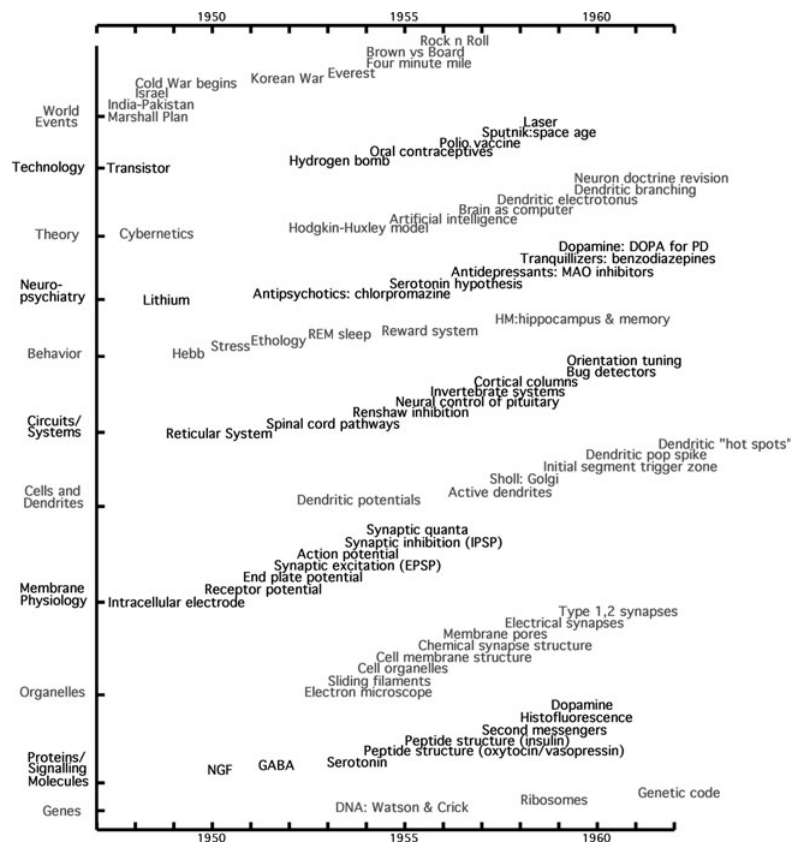
Chương 2 — Gen: Bắt đầu với DNA
Chương 2
Gen: Bắt đầu từ DNA
Việc phát hiện ra cấu trúc phân tử của DNA vào năm 1953 đủ để khẳng định thập niên 1950 là thập kỷ vĩ đại nhất trong lịch sử sinh học hiện đại. Mặc dù phát hiện này không tạo ra tác động tức thời lên khoa học thần kinh, tầm quan trọng của nó đối với mọi hệ cơ quan là điều hiển nhiên, đặc biệt khi người ta nhận ra rằng phần lớn các gen được biểu hiện trong hệ thần kinh. Cuộc chạy đua tìm kiếm cấu trúc DNA cũng trở thành một mô hình mới cho cách thức tiến hành nghiên cứu trong sinh học hiện đại, qua đó làm nổi bật những vấn đề về đạo đức trong cạnh tranh giữa các phòng thí nghiệm cũng như việc ghi nhận xứng đáng đóng góp của phụ nữ. Việc mô tả đặc tính các loại RNA khác nhau sau đó trong thập niên 1950 và đầu thập niên 1960; việc xác định các enzyme tham gia vào quá trình nguyên phân, giảm phân, phiên mã và dịch mã; việc xây dựng ‘‘tín điều trung tâm’’ của sinh học phân tử; và cuộc chạy đua giải mã di truyền đều là một phần trong kho tàng tri thức của sinh học hiện đại nói chung và khoa học thần kinh phân tử nói riêng.
Chiều sâu lịch sử của sinh học phân tử
Chúng ta mặc nhiên cho rằng việc hiểu một hệ thống sinh học bắt đầu từ kiến thức về các gen được biểu hiện bởi các tế bào trong hệ thống đó, cũng như về các RNA và protein mà những gen ấy mã hóa dưới dạng phân tử cấu trúc, enzyme và thụ thể. Vào giữa thế kỷ XIX, khi sinh học hiện đại mới khởi đầu, ý tưởng này mới chỉ xuất hiện như một viễn kiến xa xôi trong tâm trí của những nhà giải phẫu học đầu tiên dùng kính hiển vi để mô tả tế bào cơ thể và những nhà sinh lý học đầu tiên dùng dụng cụ điện để ghi lại hoạt động thần kinh.
Dù có thể còn xa xôi, nhưng khi tra cứu các văn bản thời đó, ta thấy viễn kiến ấy đã được trình bày với niềm đam mê sâu sắc và sự sáng rõ đáng kinh ngạc. (Đối với độc giả hiện đại, các trích dẫn từ nguồn tài liệu cổ hơn này có thể được tìm thấy trong ‘‘Foundations of the Neuron Doctrine’’ (Shepherd, 1991) và các nguồn dễ tiếp cận khác có kèm bình luận theo góc nhìn hiện đại). Niềm đam mê ấy đặc biệt đúng với những người tiên phong trong điện sinh lý học, như Cranefield (1957) đã thuật lại. Emil Du Bois-Reymond là một trong số họ. Cuốn sách đầu tiên về hoạt động điện của các sợi thần kinh (Du Bois-Reymond, 1848) đã đặt ra những nguyên lý mới cần thiết:
Phương pháp đích thực . . . nằm . . . ở nỗ lực xác định những mối liên hệ cơ bản của các hiện tượng tự nhiên ẩn dưới cấu trúc toán học của các mối quan hệ giữa chúng. . .. Chắc chắn rằng . . . sinh lý học . . . sẽ hòa tan vào vật lý hữu cơ và hóa học hữu cơ.
(Shepherd, 1991, 31)
Theo cách tương tự, cuốn sách giáo khoa mô học đầu tiên (Kolliker, 1852), lần đầu tiên mô tả các tế bào của cơ thể, đã tiên đoán rằng khi ‘‘các phân tử cấu thành nên màng tế bào, sợi cơ, sợi trục của thần kinh, v.v., được phát hiện . . . một kỷ nguyên mới sẽ mở ra cho Mô học’’ dựa trên một ‘‘lý thuyết phân tử’’ và một ‘‘định luật phát sinh tế bào’’ (trong Shepherd, 1991, 31).
Đọc những văn bản này là nhận ra rằng nền sinh học phân tử mà ngày nay ta coi là hiển nhiên vốn đã là mục tiêu của các nhà sinh học từ rất lâu. Những bước tiến hướng tới tri thức về gen là một phần đầy hứng khởi của cuộc đấu tranh vì mục tiêu đó. Câu chuyện dẫn đến việc phát hiện ra gen đang nhanh chóng trở thành một phần truyền thuyết của cuộc đấu tranh ấy (ví dụ, xem Passarge, 1995). Dù chủ yếu đề cập đến cơ thể nói chung, câu chuyện này cũng chứa đựng những manh mối đầu tiên về vai trò của gen trong hệ thần kinh. Chúng tôi sẽ điểm lại ngắn gọn sự hình thành các khái niệm bắt đầu từ thế kỷ XIX, trước khi tập trung vào những khía cạnh liên quan trực tiếp nhất đến hệ thần kinh.
Gen và thuật ngữ về gen
Sẽ rất hữu ích nếu ngay từ đầu ta có một số kiến thức nền về cách các thuật ngữ và khái niệm hiện đại của chúng ta được hình thành.
Trước hết, độc giả hẳn đã nhận thấy việc sử dụng cụm từ ‘‘phát sinh tế bào’’ (cell genesis) trong trích dẫn trước đó, phản ánh định nghĩa của từ này là ‘‘nguồn gốc’’ (từ tiếng Hy Lạp gen, ‘‘tạo ra’’), như trong sách Sáng Thế (Genesis). Dạng tính từ là ‘‘genetic’’. Những thuật ngữ này ban đầu không mang ý nghĩa khoa học mà được dùng trong văn chương phổ thông đầu thế kỷ XIX để chỉ ‘‘lịch sử phát sinh’’ của thơ ca hay ‘‘sự phát triển phát sinh’’ của các từ loại. Một ‘‘ngụy biện di truyền/phát sinh’’ (genetic fallacy) là ngụy biện ‘‘cho rằng một quan điểm bị bác bỏ khi nguồn gốc nhân quả của nó được phơi bày’’ (Từ điển tiếng Anh Oxford, 1901). Trong khoa học, cuốn A Text-book of Physiology (1897) của Foster viết rằng ‘‘Xét ở khía cạnh phát sinh (genetic), tủy sống là một chuỗi các đốt gắn kết với nhau’’, nơi mà ngày nay có lẽ chúng ta sẽ gọi là khía cạnh ‘‘phát triển’’ (developmental).
Darwin, trong Nguồn gốc các loài (Origin of Species, 1859), đã nhắc đến ‘‘những mối liên hệ phát sinh’’ (genetic connexions — tức nguồn gốc chung) xuất hiện giữa các thành hệ địa chất tách biệt nhau.
Những bước đầu tiên hướng tới hiểu biết về gen như cách chúng ta hiểu ngày nay diễn ra vào cuối thế kỷ XIX (tài liệu tham khảo cho phần kiến thức nền này có thể tìm thấy trong các sách giáo khoa di truyền học [xem Passarge, 1995] và trực tuyến trên Wikipedia [Lịch sử Di truyền học] cũng như các trang Wikipedia theo tên tác giả). Các sợi bắt màu trong tế bào chất của tế bào đang phân chia trên mô nhuộm đã được Walther Flemming mô tả vào năm 1879. Chúng được Wilhelm von Waldeyer ở Đức đặt tên là ‘‘nhiễm sắc thể’’ (chromosomes, từ tiếng Hy Lạp chrom, ‘‘màu sắc’’, và som, ‘‘thể’’) vào năm 1888. Sự phân chia tế bào thành hai tế bào con như xảy ra ở tế bào soma được Flemming gọi là ‘‘nguyên phân’’ (mitosis). Các giai đoạn của quá trình phân chia tế bào được Eduard Strasburger đặt tên là ‘‘kỳ đầu’’ (prophase), ‘‘kỳ giữa’’ (metaphase) và ‘‘kỳ sau’’ (anaphase); ông cũng đưa ra thuật ngữ ‘‘giảm phân’’ (meiosis) cho quá trình phân chia tế bào dẫn đến các tế bào con chỉ chứa một chiếc trong cặp nhiễm sắc thể, như xảy ra ở tế bào mầm (tóm tắt trong Strasburger et al., 1894). Những nghiên cứu này là một phần của sự trỗi dậy của tế bào học cuối thế kỷ XIX và diễn ra hoàn toàn không biết đến, hay không có liên hệ gì với, các nghiên cứu của Gregor Mendel về đặc điểm di truyền ở đậu Hà Lan trong thập niên 1870.
Vào năm 1900, ‘‘các định luật tái tổ hợp di truyền’’ của Mendel đã được Correns, Tschermak và DeVries tái phát hiện (Passarge, 1995). Đề xuất của Mendel rằng di truyền là kết quả của ‘‘các nhân tố độc lập’’ đã dẫn đến việc William Bateson ở Anh năm 1906 gợi ý thuật ngữ ‘‘di truyền học’’ (genetics) như một thuật ngữ sinh học chuyên biệt cho việc nghiên cứu các quy luật di truyền. Tiếp bước Bateson, Wilhelm Johannsen ở Đan Mạch năm 1909 đề xuất thuật ngữ ‘‘gen’’ (gene) cho ‘‘các nhân tố độc lập’’ đó, cũng như ‘‘kiểu gen’’ (genotype) cho tổ hợp các gen ở một cá thể và ‘‘kiểu hình’’ (phenotype, từ tiếng Hy Lạp phainen, ‘‘biểu hiện ra’’) cho tổ hợp các đặc điểm do gen và sự tương tác của chúng với môi trường tạo nên (xem Ryan et al., 2000).
Việc nhiễm sắc thể là vật mang gen đã được công nhận thông qua các nghiên cứu trên ruồi giấm Drosophila melanogaster, do Thomas Hunt Morgan khởi xướng tại Hoa Kỳ. Chu kỳ sinh sản nhanh của Drosophila là yếu tố then chốt giúp có thể phân tích các cơ chế di truyền. Năm 1915, Morgan và các cộng sự đề xuất ‘‘thuyết nhiễm sắc thể về di truyền’’, và học thuyết này dần được chấp nhận.
Các định luật Mendel chi phối sự di truyền của các bệnh chuyển hóa ở người lần đầu tiên được Garrod phát hiện và trình bày trong cuốn sách Inborn Errors of Metabolism năm 1909. Công trình này là nghiên cứu đầu tiên chỉ ra sự tham gia của các cơ chế di truyền vào các bệnh ảnh hưởng đến hệ thần kinh và nhận ra rằng có sự khác biệt về gen cũng như các thành phần sinh hóa giữa những cá thể bình thường.
Những biến đổi trong gen được gọi là ‘‘đột biến’’ (mutations, từ tiếng Latin mutatio, ‘‘thay đổi’’). H. J. Muller đã chứng minh vào năm 1927 rằng đột biến có thể được gây ra bởi tia X. Trong Chiến tranh Thế giới thứ hai, người ta phát hiện đột biến có thể được gây ra bởi hóa chất: khí mù tạt bởi Lotte Auerbach và Rab Robson ở Anh, và urethane bởi Friedrich Oehlkers ở Đức (tóm tắt trong Beale, 1993). Điều này đã cung cấp những công cụ mạnh mẽ để khảo sát các cơ chế di truyền.
Cũng giống như đậu Hà Lan của Mendel mở ra một kỷ nguyên và ruồi giấm của Morgan mở ra một kỷ nguyên khác, việc đưa vào sử dụng các vi sinh vật, với cấu tạo đơn bào và chu kỳ sinh sản nhanh, đã tạo cho di truyền học một bước tiến mạnh mẽ. Dù các nghiên cứu trên vi khuẩn bắt đầu từ thập niên 1920, các nghiên cứu trên nấm Neurospora của Beadle và Tatum ở Hoa Kỳ mới là những công trình đầu tiên được công nhận rộng rãi và dẫn tới khái niệm ‘‘một gen một enzyme’’. Năm 1946, Tatum và Lederberg chứng minh rằng thông tin di truyền có thể được trao đổi giữa các chủng vi khuẩn đột biến khác nhau. Đây là bằng chứng đầu tiên cho sự tái tổ hợp di truyền.
Mặc dù những nghiên cứu này đã đặt di truyền học đi đúng hướng, người ta vẫn chưa biết gen được cấu tạo từ chất gì. Các nhà vật lý bị thu hút bởi thách thức này. Niels Bohr, nhân vật trung tâm trong cuộc cách mạng vật lý lượng tử thập niên 1920, đã dùng khái niệm ‘‘tính bổ sung’’ (complementarity) của mình để suy đoán về bản chất vật lý của vật chất sinh học (xem Shepherd, 2000). Một nhà vật lý lượng tử khác, Erwin Schro¨dinger, tác giả của các phương trình sóng cũng như con mèo nổi tiếng, đã xuất bản một cuốn sách nhỏ năm 1945 nhan đề What Is Life? (Sự sống là gì?), khơi dậy sự quan tâm sâu rộng trong các ngành khoa học cũng như công chúng đối với bài toán về vật chất di truyền. Nhiều nhà vật lý từng nhắc đến việc cách trình bày vấn đề cơ sở sinh học của tính di truyền trong cuốn sách này, dù còn chứa những sai sót về mặt sinh học, lại rất dễ tiếp cận và đã thôi thúc họ chuyển sang sinh học phân tử. Tôi vẫn nhớ rất rõ tác động mạnh mẽ đối với một sinh viên trẻ khi đọc những suy tư sắc sảo ấy về bản chất sinh hóa và vật lý khả dĩ của gen.
Con đường dẫn đến Schrodinger bắt đầu từ việc phát hiện ra các virus lây nhiễm vi khuẩn vào đầu thế kỷ XX bởi Frederick Twort ở Vương quốc Anh và nhà khoa học người Pháp gốc Canada Felix d’Herelle, người đã đặt tên cho chúng là ‘‘thực khuẩn thể’’ (bacteriophage — ‘‘kẻ ăn vi khuẩn’’). Từng có sự quan tâm lớn trong việc phát triển thực khuẩn thể làm phương tiện chống nhiễm trùng, cho đến khi kháng sinh tỏ ra hiệu quả hơn vào thập niên 1940. Tuy nhiên, thực khuẩn thể lại có tác động lớn hơn nhiều đối với khoa học. Summers (1999), trong cuốn tiểu sử về d’Herelle, xác định khởi nguồn của sinh học phân tử gắn liền với việc phát hiện ra thực khuẩn thể. Con đường đó sau này dẫn tới Max Delbru¨ck. Khi còn là một sinh viên vật lý trẻ, Delbru¨ck đã được truyền cảm hứng từ một bài giảng của Bohr về khái niệm tính bổ sung trong vật lý để đi tìm bằng chứng cho khái niệm này trong sinh học. Năm 1939, Ellis và Delbruck đưa thực khuẩn thể vào làm công cụ thúc đẩy nghiên cứu di truyền, dẫn đến sự hình thành nhóm nghiên cứu thực khuẩn thể (phage group) và những bước khởi đầu của sinh học phân tử hiện đại – đồng thời thôi thúc Schrodinger viết cuốn sách của mình.
Những manh mối dẫn tới DNA
Bằng chứng thực nghiệm về bản chất của gen xuất hiện lần đầu vào năm 1928 khi Frederick Griffith ở Anh báo cáo về sự biến nạp di truyền giữa hai chủng phế cầu khuẩn (pneumococcus). Phát hiện này vẫn nằm trong tình trạng nghi vấn cho đến khi Oswald Avery, Colin MacLeod và Maclyn McCarty (1943) ở Hoa Kỳ chứng minh rằng ‘‘nhân tố biến nạp’’ là một acid nucleic mạch dài, gọi là ‘‘deoxyribonucleic acid’’ (DNA). Người ta thường nói rằng nghiên cứu nổi tiếng hiện nay này đã ít được chú ý trong nhiều năm. Tuy nhiên, có rất nhiều lời chứng từ những người đương thời cho thấy các nhà khoa học quan tâm đến bản chất của vật chất di truyền đều biết rất rõ về các thí nghiệm ấy. Cũng tồn tại mối lo ngại kéo dài về khả năng có tạp nhiễm protein trong các mẫu chế phẩm. Bằng chứng củng cố đã được Hershey và Chase đưa ra vào năm 1952, khẳng định rằng gen thực sự chính là DNA. Người ta nhận ra rằng cấu trúc hóa học của DNA sẽ hé lộ những cơ chế được tìm kiếm bấy lâu của vật chất di truyền.
Môi trường nghiên cứu mới của thập niên 1950
‘‘Chén thánh’’ này đã thôi thúc các nhà hóa sinh tại nhiều phòng thí nghiệm ở cả hai bờ Đại Tây Dương. Đó là một thời điểm thuận lợi. Chiến tranh Thế giới thứ hai (1939–1945) vừa mới kết thúc. Việc tổ chức nghiên cứu khoa học quy mô lớn một cách hiệu quả ở Hoa Kỳ và Vương quốc Anh đã đóng vai trò quyết định đối với thắng lợi của phe Đồng minh, nổi bật nhất là trong việc phát triển radar và bom nguyên tử. Tại Hoa Kỳ, dưới sự lãnh đạo của Vannevar Bush cùng các nhà khoa học và chính trị gia sáng suốt khác, mô hình tổ chức khoa học quy mô lớn này được chuyển đổi trong thời bình thành sự gia tăng vượt bậc nguồn đầu tư của chính phủ liên bang vào nghiên cứu cơ bản, không chỉ trong khoa học vật lý mà còn trong khoa học sức khỏe thông qua sự mở rộng nhanh chóng của Viện Y tế Quốc gia (NIH). Tại Vương quốc Anh, điều này dẫn đến sự gia tăng hỗ trợ cho cả các phòng thí nghiệm truyền thống lẫn mới thành lập về vật lý nguyên tử, và dẫn đến việc thành lập Hội đồng Nghiên cứu Y khoa (Medical Research Council) nhằm tài trợ cho nghiên cứu cơ bản trong các lĩnh vực y tế khác nhau.
Tại Hoa Kỳ, chiến lược tài trợ then chốt là cấp kinh phí nghiên cứu trên cơ sở cạnh tranh, trao trực tiếp cho ‘‘chủ nhiệm đề tài’’ (principal investigator) nộp đơn xin tài trợ thay vì trao cho trưởng bộ môn hay chỉ cho các giáo sư thâm niên. Điều này đã tối đa hóa tiềm năng sáng tạo của các nhà nghiên cứu trẻ và cho phép họ tự do quyết định chiến lược nghiên cứu cụ thể của riêng mình. Ngoài ra, các quỹ học bổng cũng được cấp cho nghiên cứu sinh sau đại học và nghiên cứu sinh sau tiến sĩ để theo đuổi nghiên cứu cùng người hướng dẫn do chính họ lựa chọn, với rất ít điều kiện ràng buộc.
Sự hỗ trợ gia tăng này cung cấp nguồn kinh phí mà theo tiêu chuẩn hiện nay có thể coi là khiêm tốn; nhưng nó đã tạo ra một môi trường nghiên cứu nơi những phòng thí nghiệm xuất sắc nhất có đủ cơ sở vật chất cần thiết và, quan trọng hơn, có quyền tự do theo đuổi những dự án mà ngày nay nhiều dự án trong số đó sẽ bị coi là rủi ro cao và do đó không thể xin được tài trợ.
Cuộc chạy đua tới DNA
Chúng tôi đã dành một đoạn rẽ nhánh này để mô tả sự bùng nổ nguồn tài trợ cho nghiên cứu cơ bản được tự do theo đuổi trong giai đoạn hậu Chiến tranh Thế giới thứ hai bởi chính điều đó đã tạo ra nền tảng thiết yếu cho cuộc chạy đua tìm kiếm DNA (cũng như cho nghiên cứu y sinh nói chung tại Hoa Kỳ).
Mặc dù nhiều phòng thí nghiệm hóa sinh danh tiếng đã tham gia cuộc đua, giải thưởng lại thuộc về hai nghiên cứu sinh sau tiến sĩ: James Watson đến từ Hoa Kỳ và Francis Crick đến từ Vương quốc Anh. Watson sinh năm 1928 và, khi còn là một thần đồng, từng là một trong những ‘‘whiz kids’’ trên chương trình phát thanh cùng tên vào cuối thập niên 1930. Sau đó ông trở thành một nghiên cứu sinh sau tiến sĩ trẻ tuổi xuất sắc ở độ tuổi đầu đôi mươi, nhận được học bổng nghiên cứu hóa sinh và đi qua nhiều phòng thí nghiệm ở châu Âu để tìm kiếm một đề tài thú vị. Trong khi đó, Crick, sinh năm 1919, được đào tạo về vật lý và trở thành một nghiên cứu sinh sau tiến sĩ ‘‘lớn tuổi’’, thường lui tới phòng thí nghiệm vật lý Cavendish danh tiếng dưới sự dẫn dắt của Lawrence Bragg tại Đại học Cambridge, cũng đang tìm kiếm một việc gì đó kích thích trí tuệ để làm. Hai người kết hợp với nhau và quyết định sẽ thử giành chiến thắng trong cuộc đua khám phá cấu trúc DNA.
Câu chuyện giờ đây đã trở thành huyền thoại. Dựa trên dữ liệu thu được từ nhiều cộng tác viên, đặc biệt nhất là dữ liệu tinh thể học tia X rất sớm về cấu trúc DNA của một nhà nghiên cứu trẻ khác là Rosalind Franklin tại phòng thí nghiệm của Maurice Wilkins ở London, Watson và Crick đã dựng nên một mô hình vật lý cho thấy DNA gồm hai chuỗi xoắn bổ sung quấn vào nhau của các cặp bazơ khớp đôi, một purine và một pyrimidine (phần nucleic), gắn với các phân tử đường ở phía ngoài (phần deoxyribose) và một nhóm monophosphate (Hình 2.1).
Họ công bố báo cáo của mình trong một bài báo ngắn trên tạp chí Nature số ra ngày 25 tháng 4 năm 1953; đi kèm là một bài báo của Franklin và Wilkins về tinh thể học. Có những cuốn sách và bài báo nổi tiếng nhờ câu mở đầu; bài báo của họ lại nổi tiếng nhờ câu kết (trang 737): ‘‘Chúng tôi không thể không nhận thấy rằng sự bắt cặp đặc hiệu mà chúng tôi vừa giả định ngay lập tức gợi ý một cơ chế sao chép khả dĩ cho vật chất di truyền.’’ (Xem Phụ lục 2.1.)
Trước mức độ truyền thông rầm rộ dành cho ngay cả những tiến bộ khá khiêm tốn ngày nay, thật thú vị khi nhìn lại cách bài báo trọng đại này đến với công chúng. Khách quen tại quán rượu Eagle Pub ở Cambridge đã nghe về nó ngay trong ngày mô hình được hoàn thành, vì vào cuối ngày hôm đó Watson và Crick đã đi bộ sang cùng các đồng nghiệp trong phòng thí nghiệm để nâng cốc ăn mừng và tuyên bố với tất cả thực khách rằng họ đã ‘‘khám phá ra bí mật của sự sống’’. Tuy nhiên, tin tức này đã không đến được với công chúng Hoa Kỳ cho tới 6 tuần sau đó, khi tờ New York Times đăng một mẩu tin một cột ở trang trong cho biết hai nhà khoa học ở Anh đã báo cáo về bản chất hóa học của gen (xem New York Times, 1953 Phụ lục 2.2).
Đó là một mùa xuân trọng đại: đỉnh Everest được chinh phục, Nữ hoàng Elizabeth đăng quang, Stalin qua đời, tạp chí Playboy ra đời. Sự kiện lớn nhất trong tất cả—bí mật sự sống được giải mã—hầu như chẳng gây ra một gợn sóng nào (Ridley, 2006, 73).
Ở góc độ cá nhân, câu chuyện về cuộc đua này lần đầu được kể lại trong cuốn The Double Helix (1968) của Watson, tiếp theo là What Mad Pursuit (1988) của Crick, Francis Crick: Discoverer of the Genetic Code (2006) của Ridley, và nhiều cuốn sách, hồi ký khác, trong đó đầy đủ nhất là cuốn The Eighth Day of Creation: Makers of the Revolution in Biology (1996) của Horace Freeland Judson.
Những báo cáo ban đầu về phát hiện DNA, và đặc biệt là cuốn sách của Watson, đã có ảnh hưởng lớn đến cách thức tiến hành khoa học sinh học, bao gồm cả khoa học thần kinh, kể từ thời điểm đó (dù cuốn sách ra đời sau thập niên
1950). Một phần là vì nó mang lại một góc nhìn mới về việc làm khoa học, khắc họa nó như một cuộc đua đầy phấn khích giữa những người tài năng và những đồng nghiệp đương thời chậm chạp hoặc ngơ ngác, thay vì một bản tường thuật khiêm tốn về từng bước tiến tới chân lý. Sự chuyển dịch khỏi đồng phục phòng thí nghiệm gồm áo blouse trắng, com-lê và cà vạt sang áo phông và giày thể thao cũng bắt đầu từ thời kỳ đó.
Cuốn sách cũng đặt ra những câu hỏi về đạo đức khi sử dụng dữ liệu của người khác. Bản thân Watson và Crick không tự làm thí nghiệm nào mà thu thập các gợi ý, hiểu biết thực nghiệm và dữ liệu then chốt từ những người khác. Dữ liệu tinh thể học tiên phong của Rosalind Franklin, vốn thiết yếu cho việc xây dựng mô hình cấu trúc, đã được đưa cho họ mà bà không hề hay biết. Về phần mình, Franklin đã rộng lượng công nhận tính đúng đắn và vẻ đẹp của cấu trúc cuối cùng và trở thành bạn của cả hai người trong những năm trước khi bà qua đời sớm.
Cuối cùng, việc cuốn sách mô tả các tương tác với Franklin đã làm nổi bật những bất công đối với phụ nữ trong cuộc đấu tranh giành cơ hội bình đẳng và sự công nhận trong nghiên cứu phòng thí nghiệm. Bà đã trở thành một biểu tượng cho cuộc đấu tranh vẫn đang tiếp diễn này (xem Maddox, 2002). Việc bà không được phép bước vào phòng ăn trưa tại King’s College nơi bà làm việc để ngồi cùng các đồng nghiệp nam cho thấy khoảng cách giữa thời đại đó và thời đại của chúng ta. Liệu thời đại của chúng ta có bị nhìn lại với một khoảng cách tương tự sau 50 năm nữa không?
Cũng cần lưu ý rằng việc khám phá ra DNA là kết quả của cả thực nghiệm lẫn lý thuyết. Dữ liệu thực nghiệm là thiết yếu, nhưng mô hình cũng vậy, vì nó chứng minh rằng phân tử này có thể tồn tại ở dạng chuỗi xoắn kép quấn vào nhau như giả định. Đối với những ai tin rằng tiến bộ trong sinh học chỉ phụ thuộc vào dữ liệu thu được từ thực nghiệm, câu chuyện DNA là một sự bác bỏ mạnh mẽ. Chính sự kích thích trí tuệ từ việc giải mã cấu trúc bằng mô hình đã giúp đạt tới đích.
(Tôi từng nghe Crick nói chuyện về công trình này tại Oxford năm 1962. Có người hỏi ông nhìn nhận tương lai nào cho việc xây dựng mô hình. Ông nghĩ rằng có lẽ nó đã hoàn thành sứ mệnh chính của mình. Khi đó đồng nghiệp của ông là Max Perutz đã giải được cấu trúc của hemoglobin, cũng được minh họa bằng mô hình. Tuy nhiên, ở phía trước, vượt ra ngoài những mô hình vật lý lắp ghép công phu ấy, là các mô hình phân tử được dựng bằng máy tính, ngày nay đã trở thành một phần không thể thiếu của sinh học phân tử. Cũng có người hỏi Crick bí quyết làm việc nhóm trong phòng thí nghiệm, và ông đáp: ‘‘Thành công phụ thuộc vào việc không khách sáo với nhau—dù người Nhật có thể là một ngoại lệ’’!
Bước tiến vũ bão của sinh học vào kỷ nguyên phân tử đã được khắc họa sống động đối với tôi vào thời điểm đó qua một bài giảng của Peter Medawar tại Oxford khoảng năm 1961, trong đó khi điểm lại những tiến bộ gần đây về cơ sở tế bào và phân tử của việc ghép mô, ông đã buột miệng nhận xét: ‘‘Tất nhiên, không còn ai dùng thuật ngữ ‘nguyên sinh chất’ (protoplasm) nữa.’’ Có một tiếng thở hắt nghe rõ từ phía khán giả. Trong phần hỏi đáp, một người rụt rè giơ tay và băn khoăn không biết nguyên sinh chất liệu có còn giá trị sử dụng nào không. Rõ ràng thuật ngữ đó vẫn nằm trong vốn từ vựng tại Oxford! Medawar đáp lại rằng ông không có ý xúc phạm ai, nhưng có lẽ đã đến lúc phải thay đổi.)
DNA hoạt động như thế nào?
Mặc dù nhiều nhà sinh học chấp nhận cấu trúc DNA là phát hiện có khả năng quan trọng nhất trong sinh học kể từ Darwin, nhưng nó ít tạo ra tác động thực tiễn tức thời đối với cả giới sinh học lẫn công chúng bởi vì, dù nguyên lý nhân đôi nhờ bắt cặp các bazơ là rõ ràng, cách thức quá trình đó thực sự diễn ra vẫn hoàn toàn là một bí ẩn. Do đó, báo cáo đầu tiên chỉ là sự khởi đầu chứ không phải điểm kết thúc, điều vốn đúng với hầu hết các khám phá vĩ đại trong khoa học. Nhiều năm lao động miệt mài vẫn còn ở phía trước. Thực tế, cấu trúc xoắn kép gồm hai mạch định hướng ngược chiều nhau chỉ được xác nhận dứt khoát vào đầu thập niên 1980 (Crick, 1988).
Những bước phát triển trong thập niên 1950 bao gồm sự xóa nhòa ranh giới và tái định hình các ngành khoa học truyền thống, một dấu ấn khác của cuộc cách mạng đang diễn ra vốn vẫn lặp lại kể từ đó. Một trong những thay đổi này liên quan đến sự dung hợp mới giữa nghiên cứu acid nucleic với enzyme học và hóa sinh. Điều này dẫn đến một bước tiến lớn vào năm 1951, khi Sanger và Tuppy tại Vương quốc Anh kết hợp các phương pháp này để xác định trình tự amino acid của insulin. (Đây là lần giải trình tự đầu tiên của một protein hoạt động như một hormone cơ thể, mà sau này được chứng minh là một hợp chất có hoạt tính thần kinh tác động trong não; xem Chương 3 và Chương 11. Hormone peptide là hormone chống bài niệu được giải trình tự vào năm 1953; xem Chương 11.) Kết quả cho thấy một protein bao gồm một trình tự đơn giản các amino acid (còn gọi là ‘‘gốc’’ amino acid, tức phần còn lại sau khi các phần của phân tử được dùng để tạo liên kết giữa chúng). Điều này ngụ ý một sự tương quan giữa trình tự các cặp bazơ trong DNA và trình tự các amino acid trong protein. Hơn nữa, khi đó người ta đã biết rằng DNA nằm trong nhân tế bào còn protein được tổng hợp ở tế bào chất. Vì vậy, các bài toán đặt ra là: DNA nhân đôi trong nhân tế bào như thế nào? Thông tin trong trình tự DNA tồn tại dưới dạng nào? Thông tin này được truyền ra tế bào chất bằng cách nào? Và nó được đọc ra như thế nào để tạo thành protein?
Khám phá ra RNA
Từ rất lâu trước khi cấu trúc DNA được hé lộ, nhiều hướng nghiên cứu đã bắt đầu dẫn tới việc xác định vai trò của ribonucleic acid (RNA) trong các chức năng của tế bào (xem bản tóm tắt và các tài liệu tham khảo sớm trong Gall et al., 1981).
Bắt đầu từ công trình của Garnier ở Pháp vào khoảng năm 1900, một loạt nghiên cứu từ nhiều phòng thí nghiệm đã chứng minh sự hiện diện của một chất ưa kiềm trong tế bào chất của các tế bào tuyến, chất này có liên quan đến việc tạo ra các sản phẩm bài tiết của tế bào. Vào thập niên 1930, chất này được chứng minh chính là RNA. Đến đầu thập niên 1940, người ta giả thuyết rằng RNA đóng vai trò quan trọng đối với quá trình tổng hợp protein. Nhiều phương pháp khác nhau đã được sử dụng để phân lập nó và mô tả các chức năng của nó. Những phương pháp này đóng vai trò to lớn trong sự phát triển của hóa sinh tế bào.
Bằng cách ly tâm tốc độ cao các thành phần tế bào, RNA được tìm thấy trong phân đoạn ‘‘microsome’’ (Claude, 1943). Những nghiên cứu sớm về vi cấu trúc tế bào bằng kính hiển vi điện tử (EM) cho thấy tế bào chất chứa một mạng lưới màng, được Keith Porter (1953) đặt tên là ‘‘lưới nội chất (ER)’’, và có lưới nội chất trơn cũng như lưới nội chất hạt, loại sau có gắn các hạt nhỏ (Palade, 1955a,b). Nhiều công trình sử dụng RNA đánh dấu phóng xạ cuối cùng đã nối kết hai hướng nghiên cứu này lại với nhau, chứng minh rằng các microsome chứa những hạt giàu RNA và chúng tương đương với các hạt quan sát được trên kính hiển vi điện tử.
Công trình này đã khắc họa rõ nét tác động của kính hiển vi điện tử trong việc mở ra kỷ nguyên mới cho sinh học tế bào và cách thức mà vi cấu trúc có thể được đối chiếu với các phương pháp hóa sinh cổ điển như phân đoạn dưới tế bào.
Các phương pháp mới cho phép tấn công trực diện vào câu hỏi: lưới nội chất hạt tổng hợp protein như thế nào?
Các loại RNA và quá trình tổng hợp protein
Trong số những thành quả công nghệ mà Chiến tranh Thế giới thứ hai mang lại cho sinh học có sự ra đời của các đồng vị đánh dấu phóng xạ, đặc biệt là 14C. Cách tiếp cận này đã được ứng dụng rộng rãi trong sinh học, bao gồm cả khoa học thần kinh, như chúng ta sẽ thấy (ví dụ, công trình về tuần hoàn não ở Chương 13).
Một mục tiêu sớm hiển nhiên là truy dấu cách các amino acid đánh dấu phóng xạ được lắp ghép thành protein. Người ta sớm nhận ra rằng để ứng dụng cách tiếp cận này hiệu quả nhất, cần có các hệ thống tổng hợp protein phi tế bào. Các hệ thống này được phát triển vào khoảng năm 1950. Đến năm 1954, ngay sau khi cấu trúc xoắn kép của DNA được phát hiện, người ta đã có thể ‘‘tách hệ thống tổng hợp protein thành bốn thành phần: amino acid, một thành phần cung cấp ATP, một chức năng enzyme hòa tan, và một phân đoạn microsome’’ (Siekevitz và Zamecnik, 1981, 54s). Dường như một enzyme riêng biệt trong phân đoạn hòa tan là cần thiết để hoạt hóa từng amino acid, và vị trí trùng hợp amino acid thành protein được chứng minh là diễn ra ở các microsome. Điều này dẫn đến việc nhiều nhóm nghiên cứu xác định ra RNA vận chuyển (tRNA) vào năm 1958. Người ta nhận ra rằng các tRNA hoạt động như những phân tử ‘‘tiếp hợp’’ (adapter) mang một bộ ba mã hóa cho mỗi amino acid, đúng như giả thuyết do Crick đưa ra trong cùng năm đó. Quá trình tổng hợp protein diễn ra ở đâu? Nghiên cứu sâu hơn về các hạt microsome bằng siêu ly tâm chỉ ra rằng những hạt chứa cả RNA và protein chính là các hạt nhìn thấy dưới kính hiển vi điện tử và dường như tham gia vào quá trình tổng hợp protein. Thuật ngữ ‘‘ribosome’’, phản ánh hàm lượng RNA của chúng, đã được đề xuất cho các hạt này; và RNA trong ribosome được gọi là RNA ribosome (‘‘rRNA’’). Tuy nhiên, để hiểu mối quan hệ giữa rRNA và sự tổng hợp protein, cần phải xác định thêm một nhân tố nữa trong dây chuyền sản xuất.
Trong khi rRNA ổn định về mặt hóa sinh (tức có tốc độ luân chuyển chậm), bằng chứng đã được tìm thấy về một loại RNA khác không bền (có tốc độ luân chuyển nhanh) bằng cách nào đó tham gia vào quá trình tổng hợp protein (Astrachan và Volkin, 1958). Sự hội tụ của các công trình từ phòng thí nghiệm của Jacob và Monod ở Pháp, Brenner và Meselson ở Vương quốc Anh, cùng Watson và Gilbert ở Hoa Kỳ đã cung cấp bằng chứng cho một loại RNA có tốc độ luân chuyển nhanh khi nó liên kết rồi tách khỏi hạt ribosome. Loại này được gọi là ‘‘RNA thông tin’’ (mRNA). Quá trình chuyển đổi thông tin từ DNA sang mRNA được gọi là ‘‘phiên mã’’ (transcription). Quá trình chuyển đổi thông tin từ mRNA thành protein, thông qua tương tác giữa tRNA và mRNA, được gọi là ‘‘dịch mã’’ (translation).
Tại một hội nghị năm 1957, trong bài nói chuyện ‘‘Về tổng hợp protein’’ (On Protein Synthesis) trước Hội Sinh học Thực nghiệm họp tại Canterbury, Anh, Crick đã điểm lại các bằng chứng về dòng thông tin một chiều từ DNA đến RNA rồi đến protein. Trên cơ sở lý thuyết, ông đưa ra hai tiên đoán nền tảng. ‘‘Giả thuyết trình tự’’ (sequence hypothesis) cho rằng trình tự các bazơ trong DNA quy định trình tự các amino acid trong protein, và đó là toàn bộ thông tin cần thiết để protein cuộn gập thành cấu trúc không gian ba chiều của nó. Giả thuyết ‘‘tín điều trung tâm’’ (central dogma) cho rằng ‘‘một khi ‘thông tin’ đã đi vào protein, nó không thể thoát ra ngoài trở lại được nữa’’ (Ridley, 2006, 333). Như Judson (1996, 332–333) đã diễn đạt đầy hùng hồn, nếu có một phát biểu nào từ nền khoa học mới xứng đáng có được vị thế phổ quát như phương trình [E = mc2] của Einstein, thì đó chính là khẳng định này của Crick [DNA sang RNA sang protein]. . . . [nó] là sự tái khẳng định—triệt để, tuyệt đối—về lý do tại sao những đặc tính mà sinh vật thu nhận được trong đời sống chứ không phải từ gen của mình lại không thể di truyền cho thế hệ con cháu.
Ridley (2006) nhận định rằng ‘‘On Protein Synthesis’’ đã định hình toàn bộ lĩnh vực này và so sánh nó với Principia của Newton và Tractatus của Wittgenstein. Các tiên đoán của Crick đã cung cấp những cột mốc chỉ đường hướng tới việc giải mã di truyền. Đó lại là một ví dụ khác cho thấy lý thuyết có thể đóng vai trò quan trọng đến mức nào trong việc dẫn dắt thực nghiệm.
Giải mã di truyền
Trong bài nói chuyện của Crick về tổng hợp protein, ‘‘giả thuyết trình tự’’—rằng ‘‘tính đặc hiệu của một đoạn acid nucleic chỉ được biểu thị bởi trình tự các bazơ của nó, và trình tự này là một mã (đơn giản) cho trình tự amino acid của một protein cụ thể’’ (Judson, 1996, 332)—là một tuyên bố táo bạo, một niềm tin được nhiều thính giả của ông chia sẻ nhưng vẫn chưa có bất kỳ bằng chứng nào. Thông tin phải được chuyển đổi từ dạng chứa trong các trình tự của bốn bazơ purine và pyrimidine khác nhau—adenine, cytosine, guanine và thymine—sang trình tự của các amino acid. Nhưng bằng cách nào?
Cho đến thời điểm đó, các nhà hóa sinh đã xác định được một số lượng lớn các amino acid khác nhau trong protein, nhưng chưa ai đặt câu hỏi đâu là những amino acid thiết yếu. Mọi chuyện bắt đầu từ một nhà vật lý. Crick (1988) kể lại rằng, ngay sau khi mô tả về chuỗi xoắn kép được công bố, ông và Watson nhận được một bức thư từ nhà vũ trụ học George Gamow đề xuất rằng DNA là khuôn mẫu trực tiếp cho tổng hợp protein và mọi protein chỉ được tạo nên từ 20 amino acid. Điều này đã thôi thúc Watson và Crick thực hiện một cuộc rà soát toàn diện và lập ra danh sách của riêng mình. Họ đưa ra một tập hợp hơi khác gồm chính xác 20 loại, và chúng vẫn là 20 amino acid thiết yếu phổ biến kể từ đó đến nay.
Crick; Gamow; các cựu nhà vật lý như Seymour Benzer; một nhà vũ trụ học hàng đầu khác là Fred Hoyle; cùng nhiều người khác bị thu hút vào bài toán này như thiêu thân lao vào lửa, suy đoán về cách thức các tổ hợp của bốn loại acid nucleic có thể mã hóa cho 20 amino acid và cách điều này có thể được tích hợp vào một phân tử ‘‘tiếp hợp’’ nhằm chuyển đổi thông tin chứa trong DNA thành protein. Những nỗ lực lý thuyết này gợi ý rằng nhiều khả năng đó là một mã bộ ba (triplet code), tức là tổ hợp ba nucleotide liền kề trong acid nucleic mã hóa cho một amino acid. Vì bốn loại nucleotide (adenylate, cytidylate, guanylate và thymidylate) tạo ra 64 tổ hợp bộ ba khả dĩ, nên mã di truyền nhiều khả năng cũng mang tính thoái hóa (tức dư thừa), nghĩa là một amino acid có thể được mã hóa bởi nhiều hơn một tổ hợp ba nucleotide.
Việc phát hiện ra quá trình tổng hợp protein diễn ra trên ribosome và trình tự của protein do một ribosome tổng hợp được quyết định bởi trình tự nucleotide của RNA thông tin gắn trên ribosome đó đã mở ra một hướng tiếp cận cho nghiên cứu thực nghiệm về mã di truyền. Cách tiếp cận này đòi hỏi phải tạo ra RNA tổng hợp (chính xác hơn là các polyribonucleotide tổng hợp). Một enzyme có khả năng làm việc này, polynucleotide phosphorylase, đã được Ochoa và các cộng sự phát hiện vào năm 1955 (Grunberg-Manago et al., 1956); enzyme này có thể tạo ra các homopolyribonucleotide (ví dụ: polyadenylic acid: poly A) hoặc các co-polynucleotide ngẫu nhiên.
Một nhà hóa sinh tại NIH, Marshall Nirenberg, đã sử dụng hệ thống tổng hợp protein phi tế bào, mà hoạt tính tổng hợp của nó có thể được tăng cường, chẳng hạn bằng virus khảm thuốc lá. Làm đối chứng, ông cũng thử nghiệm polyuridylic acid (Poly U). Đáng kinh ngạc thay, chất này lại thúc đẩy sự hình thành polyphenylalanine (Nirenberg và Matthei, 1961). Thí nghiệm này là thí nghiệm đầu tiên xác định được mã nucleotide cho một amino acid, vốn rất có thể là một bộ ba. Một bộ ba nucleotide như vậy được Crick và Brenner gọi là một ‘‘codon’’ (Crick et al., 1961).
Tiến bộ sau đó diễn ra nhanh chóng, và đến năm 1966 toàn bộ 64 mã bộ ba đã được xác định cho tất cả các amino acid thiết yếu và, theo đó, là mã DNA phổ quát để tạo ra mọi protein ở mọi loài. Trong suốt thời gian này, DNA thu hút rất nhiều sự chú ý của công chúng. Tôi đã làm việc tại NIH vào đầu thập niên 1960 và vẫn nhớ rõ sự phấn khích lan tỏa khắp khán phòng khi chúng tôi tập trung tại giảng đường chính của Tòa nhà 10 vào năm 1964 để nghe Nirenberg giải thích về mã di truyền và cách thức hoạt động của nó. Bạn bè tại các bữa tiệc tối tự hào kể rằng họ đã đọc về DNA và RNA và hỏi điều đó sẽ có ý nghĩa gì đối với họ. Đó hiển nhiên là một thành tựu vĩ đại, nhưng ý nghĩa thực tiễn của nó vẫn nằm ở tương lai.
Sự nhân đôi, nhưng không phải ở não người trưởng thành
Trong khi những người giải mã đang tấn công bài toán DNA tạo ra protein như thế nào, những người khác lại giải quyết bài toán nền tảng không kém là DNA tự nhân đôi bằng cách nào. Mô hình Watson-Crick hàm ý rằng gen thực hiện điều này bằng cách tái tạo lại chính trình tự đó trong quá trình phân chia tế bào (nguyên phân) và sinh sản tế bào (giảm phân). Nhưng bằng cách nào?
Các nhà hóa sinh nhanh chóng phân lập được một enzyme từ vi khuẩn Escherichia coli có tác dụng xúc tác quá trình tổng hợp DNA. Vì quá trình tổng hợp bao gồm việc nối các nucleotide lại với nhau theo một trình tự để tạo thành một polymer nucleotide, enzyme này được gọi là ‘‘DNA polymerase’’. Về sau nó được gọi là ‘‘polymerase I’’, hoạt động phối hợp với nhiều enzyme khác để mở chuỗi xoắn kép và gắn từng nucleotide một nhằm tạo thành các phân tử DNA mới hoàn chỉnh. Cơ chế nhân đôi DNA được trình bày chi tiết trong các sách giáo khoa hóa sinh và sinh học tế bào.
Người ta nhận thấy một số cơ quan, chẳng hạn như gan, có thể tái tạo phần lớn khối lượng của mình; và từ thập niên 1880 người ta đã biết rằng tế bào trải qua quá trình đổi mới bằng nguyên phân ở hầu hết các cơ quan trong cơ thể, bao gồm da, ruột và máu. Tuy nhiên, người ta cũng biết rằng não bộ khác biệt ở chỗ nó không tự tái tạo sau tổn thương, và khi các nhà tế bào học (những người dùng kính hiển vi nghiên cứu cấu trúc bên trong tế bào) có thể quan sát nhiễm sắc thể trong tế bào, họ không thấy bất kỳ bằng chứng nào về nguyên phân ở tế bào não trưởng thành. Như vậy, việc tắt cơ chế nhân đôi là một đặc điểm riêng biệt của tế bào não trưởng thành.
Tại sao sự nhân đôi lại bị tắt ở tế bào não trưởng thành từng là một trong những bí ẩn lớn nhất về bộ não và đến nay vẫn vậy. Làm thế nào để vượt qua điều này, nhằm giúp các phần não bị tổn thương có thể tái tạo, được công nhận là một trong những thách thức lớn nhất của khoa học thần kinh. Rõ ràng các yếu tố kiểm soát sự nhân đôi DNA chắc chắn phải có liên quan.
Những gen động
Cách xa các trung tâm nghiên cứu về DNA, một nhà nghiên cứu theo truyền thống của Gregor Mendel đang khảo sát sự di truyền các đặc điểm ở ngô Ấn Độ (maize). Năm 1951, Barbara McClintock có một bài giảng tại Cold Spring Harbor về lý thuyết ‘‘các yếu tố kiểm soát’’ di động ở ngô của bà, một lý thuyết gây tranh cãi đến mức bà đã kiềm chế không công bố dữ liệu mà chỉ chia sẻ với các đồng nghiệp đáng tin cậy cho đến khi lý thuyết về các gen nhảy của bà cuối cùng được xác nhận. Các nghiên cứu của McClintock trong thập niên 1950 chỉ ra rằng kiểu hình của một cây ngô, phản ánh đột biến của các gen đặc hiệu, có thể do các gen ở xa gây ra và các gen có liên hệ xa nhau có thể di chuyển qua lại trong nhiễm sắc thể. Bà mô tả chúng là các locus dễ đột biến và không ổn định, đóng vai trò là các yếu tố di truyền kiểm soát. Phải mất gần 30 năm thì ý nghĩa của công trình này mới được hòa nhập với quan điểm truyền thống của sinh học phân tử về cấu trúc gen, để mang lại hiểu biết về bản chất động của bộ gen.
Có bao nhiêu nhiễm sắc thể?
Bên cạnh những phát hiện nền tảng về cơ chế phân tử của gen, các tiến bộ trong việc tìm hiểu những khía cạnh khác của gen cũng đang được thực hiện. Vào đầu thế kỷ XX, người ta phát hiện ra rằng bộ nhiễm sắc thể (karyotype — sự sắp xếp các nhiễm sắc thể; từ tiếng Hy Lạp karyo, ‘‘nhân’’) của ruồi giấm chỉ có bốn nhiễm sắc thể. Chúng có kích thước khổng lồ và thay đổi kích thước tăng giảm theo chu kỳ tế bào; do đó, chúng trở thành đối tượng nghiên cứu đầy hấp dẫn. Kể từ thời điểm đó, người ta tin rằng bộ nhiễm sắc thể của người gồm 23 cặp (gọi là ‘‘nhiễm sắc thể thường’’) cộng thêm hai nhiễm sắc thể X ở nữ hoặc một nhiễm sắc thể X và một Y ở nam. Đến năm 1956, cuối cùng người ta mới xác định được rằng bộ nhiễm sắc thể của người chỉ gồm 22 cặp nhiễm sắc thể thường cộng với các nhiễm sắc thể giới tính. Bộ nhiễm sắc thể của chuột nhắt gồm 19 nhiễm sắc thể thường cộng với các nhiễm sắc thể giới tính.
Gen người
Một hướng mở mới trong nghiên cứu gen người xuất hiện cùng phát hiện rằng một số rối loạn lâm sàng có liên quan đến bất thường nhiễm sắc thể. Đầu tiên là bệnh thiếu máu hồng cầu hình liềm, do khiếm khuyết ở gen mã hóa hemoglobin (Pauling et al., 1949), và bệnh tích trữ glycogen, do khiếm khuyết ở gen mã hóa enzyme glucose-6-phosphate, vốn bình thường thực hiện phosphoryl hóa glucose khi chất này được hấp thu từ dòng máu vào tế bào. Các rối loạn có cơ sở di truyền khác được báo cáo vào năm 1959, bao gồm hội chứng Down, liên quan đến thể ba nhiễm 21 (thừa một nhiễm sắc thể thường số 21) (Lejeune et al., 1959), cùng nhiều rối loạn phát triển khác.
Một số rối loạn trong số này được chứng minh là có liên quan đến những biến đổi trong cấu trúc tế bào ở vỏ não, đặc biệt là sự biến dạng của những cấu trúc nhỏ xíu gọi là ‘‘gai’’ (spines) bao phủ các nhánh sợi nhánh của những neuron xuất chiếu chính là tế bào tháp. Gai là vị trí của các kết nối synap, sẽ được mô tả ở Chương 7. Những nghiên cứu này đã khởi đầu cho việc tìm hiểu mối liên hệ giữa khiếm khuyết đơn gen và các chức năng nhận thức bậc cao nhất ở người. Chúng ta sẽ quay lại nghiên cứu này ở Chương 12.
Từ vật lý đến sinh học phân tử và tới bộ não
Những tiến bộ vĩ đại của thập niên 1950, đặc biệt là việc khám phá ra cấu trúc DNA, đã đánh dấu sự chấm dứt của những suy đoán rằng sinh học có thể chỉ dựa thuần túy trên vật lý cổ điển, thay vào đó cho thấy rằng ở cấp độ phân tử, sinh học dựa trên các nguyên lý của hóa học và lý sinh. Pauling từng nhắc đến khái niệm tính bổ sung của Bohr nhưng không bao giờ theo đuổi tiếp (xem Pauling và Delbru¨ck 1940). Crick kể với tôi rằng ông và Watson chưa bao giờ dùng ý tưởng về tính bổ sung của Bohr trong công việc của mình, mặc dù bản chất của mô hình DNA chính là tính bổ sung của các mạch DNA. Delbru¨ck dành cả đời cố gắng tìm các ví dụ về tính bổ sung trong sinh học nhưng cuối cùng đã từ bỏ (Delbru¨ck, 1972). Kể từ đó trở đi, vật chất di truyền đứng vững trong địa hạt của các cấu trúc sinh học vận hành theo những cơ chế sinh học.
Tuy nhiên, bản chất cốt lõi của những cấu trúc và cơ chế ấy nằm ở thông tin mà chúng chứa đựng và được đọc ra để cung cấp bản thiết kế cho các cơ quan của sinh vật đang phát triển. Thông tin phức tạp nhất hiển nhiên sẽ nằm trong bản thiết kế cho cơ quan phức tạp nhất, tức bộ não. Vào thập niên 1950, khoảng cách giữa gen và bộ não dường như là vô tận. Thế nhưng, những bước đi thiết yếu dẫn đến hiện tại đã diễn ra tương đối nhanh chóng: sau cấu trúc DNA năm 1953, mã di truyền được giải mã vào năm 1963; DNA tái tổ hợp và giải trình tự DNA nhanh chóng mở ra kỷ nguyên kỹ thuật di truyền DNA trong thập niên 1970; phản ứng chuỗi polymerase (PCR) cuối thập niên 1980 cho phép xác định bất kỳ gen và protein tùy ý nào trong bất kỳ tế bào nào, kể cả trong não; và trình tự toàn bộ bộ gen người đã thu được vào năm 2000, với một nửa số gen được biểu hiện trong não. Điều đó đã đưa chúng ta tới ngưỡng cửa của một kỷ nguyên vàng mới.
Kết luận lại, thập niên 1950 thực sự có thể được gọi là một ‘‘kỷ nguyên vàng’’ cho nghiên cứu sinh học, vĩ đại nhất trong lịch sử. Chỉ riêng việc phát hiện ra cấu trúc DNA thôi cũng đủ bảo chứng cho khẳng định đó. Liệu chúng ta có tiến bước mạnh mẽ như vậy trong kỷ nguyên khoa học lớn (big science) mới, ngày càng quy mô lớn và công nghiệp hóa của mình không? Liệu chúng ta sẽ tiếp tục chỉ thu thập dữ liệu, hay sẽ noi gương những người tiên phong thập niên 1950 bằng cách tiến những bước dài dựa trên các nhóm nhỏ nhà khoa học tương tác hiệu quả giữa thực nghiệm và lý thuyết? Việc điểm lại lịch sử cho thấy họ đã đặt ra chuẩn mực cao đến nhường nào.
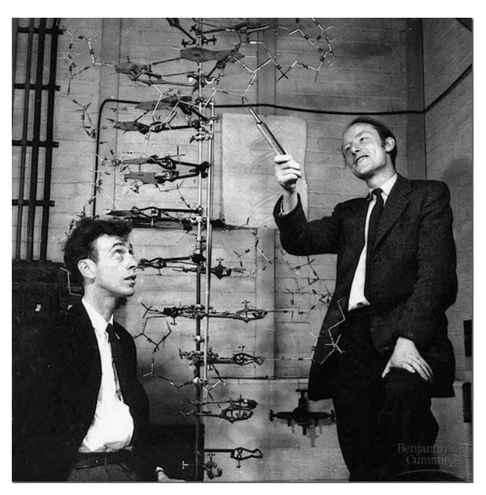
Chương 3 — Phân tử tín hiệu: Yếu tố tăng trưởng đầu tiên
Chương 3
Các phân tử truyền tín hiệu: Yếu tố tăng trưởng đầu tiên
Giống như mọi cơ quan khác trong cơ thể, hệ thần kinh bắt nguồn từ một tế bào trứng thụ tinh duy nhất. Các nhà mô học cổ điển đã hình dung quá trình này thông qua các tế bào của phôi đang biến đổi. Tổng hợp lớn đầu tiên là ý tưởng về một ‘‘nhân tố tổ chức’’ (organizer) chỉ đạo sự hình thành các cơ quan. Điểm mấu chốt đối với hệ thần kinh là các kết nối giữa các tế bào được thiết lập như thế nào, điều ngụ ý sự hiện diện của các tín hiệu gian bào. Bằng chứng rõ ràng nhất cho một tín hiệu như vậy, gọi là ‘‘yếu tố tăng trưởng thần kinh’’ (nerve growth factor), được báo cáo vào năm 1951. Các thí nghiệm tiếp theo đã xác định cấu trúc phân tử của nó, về sau được biết đến với tên NGF, đại diện đầu tiên trong số ngày càng nhiều các yếu tố hướng thần kinh (neurotropic) và dinh dưỡng thần kinh (neurotrophic) tham gia vào sự phát triển thần kinh cũng như tính mềm dẻo của các kết nối vốn làm nền tảng cho học tập, trí nhớ và đáp ứng với tổn thương. Sự sắp xếp trật tự của các kết nối được giả thuyết là đòi hỏi ái lực hóa học (chemoaffinity) giữa các sợi trục và tế bào đích của chúng. Những quá trình động này đòi hỏi sự vận chuyển các phân tử thích hợp trong sợi trục, thông qua một quá trình gọi là vận chuyển sợi trục. Do đó, thập niên 1950 có thể được xem là giai đoạn đặt nền móng cho cơ sở phân tử của sự phát triển.
Chóp sinh trưởng sợi trục
Những hiểu biết ban đầu về cách tế bào thần kinh phát triển đến từ Wilhelm His tại Basel vào thập niên 1880 (tóm tắt trong Shepherd, 1991). Ông là người sáng lập ngành phôi thai học thần kinh, tập hợp các quan sát của mình trong một bộ sách đồ sộ (His, 1880–85). Ở đây, chúng ta lưu ý đến các quan sát của ông liên quan đến sự mọc dài của sợi trục và các sợi nhánh.
Sử dụng kính hiển vi quan sát mô nhuộm ở bào thai động vật thuộc các lứa tuổi khác nhau, ông đã theo dõi trình tự các sự kiện khi các nhánh neuron xuất hiện. Một neuron vận động đang phát triển trong tủy sống trước tiên phóng ra một sợi trục dài duy nhất hướng về rễ bụng, tiếp theo là sự xuất hiện của nhiều nhánh ngắn (His, 1886). Quan sát này chứa đựng hai quy luật đã đứng vững trước thử thách của thời gian: các tế bào thần kinh phát triển sợi trục chỉ tạo ra một sợi trục duy nhất và sợi trục phát triển trước các nhánh ngắn. Các nhánh ngắn này trước đó từng được gọi là ‘‘những phần kéo dài nguyên sinh chất’’—theo nghĩa đen là các phần vươn ra từ thân tế bào. His đã đưa ra thuật ngữ ‘‘sợi nhánh’’ (dendrite) để gọi chúng, và thuật ngữ này lập tức được chấp nhận.
Sợi trục đang mọc dài được Ramo´n y Cajal (1892) ở Madrid khảo sát kỹ hơn trong các tế bào não; ông xác định đầu mút sợi trục là một thực thể riêng biệt và gọi nó là ‘‘chóp sinh trưởng sợi trục’’ (axonal growth cone). Ông hình dung nó như một loại máy phá thành, mở đường xuyên qua các tế bào và sợi chen giữa để tạo nên các tiếp xúc đặc hiệu với tế bào đích.
His và Ramo´n y Cajal đại diện cho cái được gọi là ‘‘truyền thống mô học’’ trong nghiên cứu phát triển, tức là suy luận cơ chế từ việc quan sát các cấu trúc tế bào đã được cố định và nhuộm màu. Vào thời đó, đây là chiến lược khả dĩ duy nhất vì thiếu vắng các phương pháp sinh lý học.
‘‘Cách tiếp cận mô học thực nghiệm’’ bắt đầu với Ross Harrison (1870–1959) (Purves và Lichtman, 1985). Ông theo học tại Johns Hopkins và Berlin, là một trong những nhà sinh học Mỹ đầu tiên được đào tạo tại châu Âu. Trở về Johns Hopkins, ông giải quyết bài toán sợi trục được hình thành như thế nào.
Bất chấp bằng chứng của His và Cajal, vẫn có những người bảo thủ khẳng định rằng sợi trục được tạo thành do sự hợp nhất của các tế bào thần kinh đệm. Để giải đáp những phản bác này, Harrison đã phẫu tích tách lấy những mảnh nhỏ của ống thần kinh từ phôi ếch non và nuôi chúng trong một đĩa hoàn toàn không có tế bào khác, chỉ ngâm trong bạch huyết ếch. Các quan sát dưới kính hiển vi của ông đã mang lại những hình ảnh sống động về từng sợi trục đang mọc dài cùng chóp sinh trưởng của chúng vươn ra trong môi trường bạch huyết xung quanh (Harrison, 1910). Bài báo này lập tức trở thành kinh điển (Phụ lục 3.1). Những hình ảnh của Harrison về các sợi trục đang mọc và chóp sinh trưởng của chúng ngày nay vẫn được in lại trong các sách giáo khoa.
Những thí nghiệm này chứng minh rằng sợi trục chỉ mọc ra từ các tế bào thần kinh và tế bào thần kinh là những thực thể độc lập tạo kết nối bằng sự tiếp xúc với các tế bào khác. Đây là viên gạch cuối cùng hoàn thiện tòa lâu đài của học thuyết neuron cổ điển (Shepherd, 1991). Các thí nghiệm này cũng mang ý nghĩa to lớn nói chung khi đưa phương pháp nuôi cấy mô in vitro (‘‘trong ống nghiệm/thủy tinh’’) vào sinh học.
Nguyên lý nhân tố tổ chức
Trong nửa đầu thế kỷ XX, các phương pháp thực nghiệm để nghiên cứu sự phát triển còn hạn chế. Ngoài nuôi cấy mô, phương tiện duy nhất để quan sát và thao tác trên từng tế bào đơn lẻ chỉ áp dụng được ở những giai đoạn sớm nhất của các mô hình thuận lợi như trứng lớn của cầu gai. Các phương pháp khi đó vô cùng sáng tạo. Ở giai đoạn bốn tế bào, người ta có thể tách rời các tế bào dưới kính hiển vi phẫu tích bằng cách thắt (buộc) chúng bằng một sợi tóc người! Tuy nhiên, sau vài lần phân chia tế bào đầu tiên, phôi trở thành một cơ thể phức tạp chỉ có thể nghiên cứu bằng hai phương pháp chính: cắt bỏ (phá hủy) một phần phôi và ghép một phần này lên phần khác.
Các thí nghiệm cấy ghép đóng vai trò tối quan trọng trong việc hình thành ý tưởng về bí ẩn then chốt của sự phát triển: Làm thế nào các tế bào chưa biệt hóa lại tạo ra được các tế bào và cơ quan đã biệt hóa? Một thí nghiệm then chốt đã được thực hiện tại phòng thí nghiệm của Hans Spemann bởi một sinh viên là Hilde Proescholdt (người công bố công trình dưới họ chồng là Mangold).
Spemann (1869–1941) từng học tại Wurzburg, Đức, và trở nên điêu luyện trong các kỹ thuật vi phẫu thuật. Trong các nghiên cứu sớm, ông chứng minh rằng phần lưng của trứng là thiết yếu để tổ chức sự phát triển của phôi. Năm 1919, ông thành lập một trường phái tại Freiburg, nơi trở thành trung tâm đào tạo các nhà sinh học phát triển; nổi tiếng nhất trong số các học trò của ông là Viktor Hamburger và Johannes Holtfreter.
Khi còn là nghiên cứu sinh, Proescholdt đã tiến hành các nghiên cứu cấy ghép ở những giai đoạn phát triển phôi rất sớm, khi trứng mới trải qua vài lần phân chia tế bào để thành một khối cầu tế bào gọi là ‘‘phôi nang’’ (blastula). Ở giai đoạn tiếp theo, phôi nang hình thành một lỗ; các tế bào trên bề mặt di chuyển đến lỗ đó và di cư qua nó vào bên trong phôi để bắt đầu tạo nên các cơ quan của cơ thể. Sử dụng chiến lược dùng một phôi cho có sắc tố và một phôi nhận (vật chủ) không sắc tố, bà ghép vùng môi của lỗ phôi (blastopore) từ phôi cho vào vùng bụng của phôi nhận và phát hiện thấy mô ghép có thể cảm ứng hình thành một tấm thần kinh thứ hai ở vật chủ và, đôi khi, cả một phôi thứ cấp hoàn chỉnh mọc ghép trên phôi thứ nhất. Trong bài báo kinh điển của mình, Spemann và Mangold (1924) đề xuất rằng vùng lỗ phôi này có những đặc tính tổ chức đặc biệt. Khả năng đặc biệt này được biết đến với tên gọi ‘‘nguyên lý nhân tố tổ chức’’ (organizer principle). Đau lòng thay, Hilde Mangold, sau khi nhận bằng tiến sĩ, đã qua đời không lâu sau đám cưới trong một vụ hỏa hoạn tại nhà riêng. Nhiều người tin rằng bà xứng đáng được chia sẻ sự vinh danh dành cho Spemann với tư cách là người tiên phong trong lĩnh vực phát triển nhờ công trình bà đã thực hiện cùng ông.
Ý tưởng cho rằng môi lưng của lỗ phôi có các đặc tính ‘‘tổ chức’’ đặc biệt sớm nhường chỗ cho bằng chứng cho thấy nhiều vùng của phôi đều có khả năng này ở mức độ nhiều hay ít khác nhau, cũng như nhiều loại mô sinh học, hormone và thậm chí các chất ngoại lai. Dẫu vậy, khái niệm rằng sự phát triển là kết quả từ các đặc tính tổ chức của những quần thể tế bào tiền thân đã được xác lập, mặc dù câu hỏi điều gì tổ chức nên nhân tố tổ chức dường như trói buộc sự hiểu biết về phát triển vào một vòng hồi quy vô tận của các nhân tố tổ chức ngược về tới tận tế bào trứng.
Tính chất bất định của khái niệm nhân tố tổ chức là điều khó tránh khỏi khi các thí nghiệm chỉ có thể thực hiện ở cấp độ từng mảnh cơ quan và mô. Về mặt này, tình hình tương tự như những gì diễn ra ở các ngành khác cùng thời kỳ; chẳng hạn, trong dược lý học, việc tìm kiếm các chất dẫn truyền thần kinh cũng bị giới hạn ở cấp độ cơ quan. Như Viktor Hamburger (1996, 228) sau này nhận xét: ‘‘Nhìn lại thì thật đáng kinh ngạc khi biết bao thông tin đã thu được từ những phương pháp khiêm tốn ấy.’’ Điều tương tự cũng có thể nói về các thí nghiệm dược lý học đối với chất dẫn truyền thần kinh, vốn cũng bị giới hạn ở cấp độ cơ quan, như chúng ta sẽ thấy ở Chương 4.
Yếu tố tăng trưởng thần kinh
Một câu hỏi lớn trong phôi thai học mà các nhà nghiên cứu vật lộn suốt thập niên 1930 và 1940 là mối quan hệ giữa các neuron đang phát triển và các tế bào đích của chúng. Ramon y Cajal tin rằng ‘‘đại đa số các nguyên bào thần kinh [tiền thân tế bào thần kinh sơ khai] sống sót đến kỳ hạn và thành công trong việc cộng tác [tức kết nối] với các cấu trúc bình thường của hệ thần kinh trưởng thành’’ (xem Purves và Lichtman, 1985, 137). Tuy nhiên, quá trình này được chứng minh là mang tính động bởi Margaret Shorey, một học trò của Frank Lillie, một trong những người tiên phong của phôi thai học tại Hoa Kỳ. Năm 1909, Shorey cho thấy việc cắt bỏ mầm chi ở phôi non của gà và kỳ giông gây ra sự mất mát nghiêm trọng các tế bào hạch cảm giác và tế bào vận động trong tủy sống. Điều này ngụ ý rằng một chất nào đó trong cơ bình thường có vai trò nuôi dưỡng các tế bào thần kinh. Năm 1920, Sam Detwiler, một học trò của Harrison, đã lặp lại các thí nghiệm này; thay vì mất tế bào, ông phát hiện thấy ở kỳ giông việc ghép thêm một mầm chi mới làm gia tăng số lượng tế bào cảm giác.
Tại thời điểm này, Viktor Hamburger (1900–2001) bước vào câu chuyện (Hình 3.1A). Là học trò của Spemann tại Freiberg, năm 1932 ông sang Chicago để dành một năm theo Học bổng Rockefeller cùng Frank Lillie nhằm học về phôi thai học thần kinh. Lillie là một trong những người tiên phong khác của phôi thai học tại Hoa Kỳ. Cuốn sách Embryology of the Chick của ông là một tác phẩm kinh điển trong ngành (xem bình luận bên dưới). Lillie gợi ý Hamburger bắt đầu các nghiên cứu phôi thai học thần kinh bằng cách lặp lại các thí nghiệm Shorey–Detwiler để xem ông có thể hóa giải sự khác biệt giữa hai kết quả đó hay không.
Hamburger xác nhận phát hiện của Shorey về việc giảm số lượng neuron cảm giác và vận động trong tủy sống. Ông nhận thấy mình có thể liên hệ một cách định lượng mức độ giảm số lượng tế bào với lượng cơ và cơ quan cảm giác ngoại vi bị cắt bỏ. Ông đề xuất giả thuyết sau (Hamburger, 1996, 232):
1. Các cơ quan đích, tức hệ cơ và các cơ quan cảm giác, tạo ra hai tác nhân đặc hiệu, một tác nhân kiểm soát các hạch tủy sống và tác nhân kia kiểm soát các cột vận động bên.
2. Các tác nhân này di chuyển ngược dòng trong các dây thần kinh về các trung khu thần kinh tương ứng của chúng là các cột vận động bên và các hạch tủy sống.
3. Các tác nhân này điều hòa sự phát triển của các trung khu thần kinh theo cách định lượng.
Như Hamburger lưu ý, ‘‘hai thập kỷ sau, việc phát hiện ra yếu tố tăng trưởng thần kinh (NGF) đã xác định được một trong hai tác nhân được giả định ở điểm thứ nhất.’’
Hamburger đã gửi một bản in lại bài báo năm 1934 của mình cho một đồng nghiệp là Giuseppe Levi ở Turin, Ý, người sau đó chuyển nó cho cộng sự của mình là Rita Levi-Montalcini (Hình 3.1B). Các thí nghiệm tiếp theo của bà, được thực hiện trong những điều kiện khó khăn tột bậc của thời chiến ở Ý vào thập niên 1940, đã dẫn đến những kết quả có phần khác với kết quả của Hamburger. Trong một nghĩa cử hào phóng đặc trưng, Hamburger mời Levi-Montalcini sang St. Louis làm việc cùng ông để giải quyết sự khác biệt trong kết quả của hai người. Trong những thí nghiệm đầu tiên chung (Hamburger và Levi-Montalcini, 1949), họ chứng minh rằng không chỉ có sự chết tế bào ở trung ương trong tủy sống gần vị trí một chi bị cắt bỏ mà hiện tượng đó còn xảy ra ở các vùng trung ương khác không bị ảnh hưởng. Đây là quan sát đầu tiên về sự chết tế bào thần kinh tự nhiên trong quá trình phát triển phôi (dù khi đó bị diễn giải nhầm là do tác động ngoại vi lên sự tăng sinh tế bào: D. Purves, trao đổi cá nhân). Kể từ đó, người ta ngày càng nhận thức rõ rằng sự phát triển không chỉ bao gồm việc tạo ra các neuron mới mà còn cả việc cắt tỉa chúng thông qua sự chết tế bào.
Tác nhân hóa học cần thiết để duy trì các tế bào mới trước tình trạng tế bào chết đi là gì? Khi họ đang tìm kiếm các mẫu chế phẩm để giải quyết câu hỏi này, Hamburger nhận được một bản in lại bài báo từ một cựu sinh viên là Elmer Bueker tại Đại học Georgetown. Bueker đã thử nghiệm xem liệu một khối u phát triển nhanh được cấy ghép có kích thích trung khu thần kinh hiệu quả hơn một chi được cấy ghép hay không. Ở gà, ông phát hiện thấy một khối u sarcoma chuột được cấy ghép đã kích thích mạnh mẽ sự mọc vào của các sợi thần kinh cảm giác từ tủy sống (Bueker, 1948).
Điều này gợi ý một mẫu chế phẩm có thể tạo ra lượng lớn tác nhân hóa học đang được tìm kiếm. Với sự đồng ý của Bueker (dù sau này ông có tiếc nuối vì đã không tự mình theo đuổi kết quả đó [Purves và Lichtman, 1985]), Levi-Montalcini và Hamburger đã tiếp tục hướng tiếp cận của Bueker, xác nhận tác dụng kích thích của khối u lên các hạch rễ lưng lân cận (Hình 3.2). Họ thu được bằng chứng cho thấy tác dụng này hẳn phải do một chất do khối u tiết ra và gọi chất giả định này là ‘‘yếu tố kích thích tăng trưởng thần kinh’’ (Levi-Montalcini và Hamburger, 1951; Levi-Montalcini et al., 1953; Purves và Lichtman, 1985) (Phụ lục 3.2).
Levi-Montalcini quyết tâm theo đuổi bản chất của yếu tố này. Để làm được điều đó, bà trước tiên đến phòng thí nghiệm của một người bạn là H. Meyer ở Rio de Janeiro, Brazil, để phát triển một xét nghiệm nuôi cấy mô, trong đó mức độ mọc dài của các sợi từ một hạch cảm giác gà tách rời phản ánh một cách bán định lượng lượng yếu tố tăng trưởng mà nó tiếp xúc. Trong cùng thời gian đó, một nhà hóa sinh sau tiến sĩ là Stanley Cohen gia nhập phòng thí nghiệm của Hamburger để nghiên cứu xác định bản chất sinh hóa của yếu tố tăng trưởng. Các phân tích hóa học cho thấy dịch chiết khối u chứa cả acid nucleic lẫn protein. Để loại bỏ acid nucleic nhằm tinh sạch protein, họ cho dịch chiết tiếp xúc với nọc rắn, vốn chứa một phosphodiesterase có khả năng cắt acid nucleic. Tuy nhiên, các thí nghiệm đối chứng cho thấy bản thân nọc rắn cũng kích thích các tế bào, điều mà sau này được chứng minh là do nồng độ rất cao các yếu tố tăng trưởng có trong nọc rắn (Levi-Montalcini và Cohen, 1956). Vì nọc rắn được tiết ra từ tuyến nước bọt, Cohen đã khảo sát tuyến nước bọt (tuyến dưới hàm) của chuột nhắt và phát hiện thấy nó chứa một lượng lớn yếu tố tăng trưởng, dẫn tới việc tinh sạch thành công yếu tố này (Cohen, 1960).
Chuỗi sự kiện từ khối u của Bueker đến nọc rắn rồi đến tuyến dưới hàm chuột nhắt là một minh họa kinh điển cho câu nói ‘‘cơ hội chỉ mỉm cười với những tâm trí đã chuẩn bị sẵn sàng’’. Sử dụng một số lượng lớn tuyến dưới hàm làm nguồn chiết xuất, yếu tố tăng trưởng cuối cùng đã được Angeletti và Bradshaw (1971) giải trình tự. Yếu tố tăng trưởng thần kinh trở nên nổi tiếng toàn cầu với tên gọi NGF.
Yếu tố tăng trưởng thần kinh (NGF) là thành viên đầu tiên của một họ lớn và ngày càng mở rộng gồm các yếu tố dinh dưỡng kiểm soát sự tìm đích và sống sót của neuron trong quá trình phát triển cũng như suốt đời sống trưởng thành. Công trình này đã chỉ ra sự khác biệt giữa tác động hướng thần kinh (neurotropic) và tác động dinh dưỡng thần kinh (neurotrophic). Tác động hướng thần kinh là tác động ảnh hưởng đến hướng mọc dài của neuron, trong khi tác động dinh dưỡng thần kinh là tác động cần thiết cho sự sống sót của neuron (Gilbert, 1991). Nhiều yếu tố tăng trưởng khác cũng như NGF đều sở hữu cả hai tác động này.
Như một chú thích thêm cho câu chuyện về Viktor Hamburger, phôi thai học thực nghiệm là môn học yêu thích nhất của tôi khi còn là sinh viên đại học tại Cao đẳng Bang Iowa vào đầu thập niên 1950. Giảng viên là Howard Hamilton, giáo trình lý thuyết là cuốn Principles of Development của Weiss [1939], và giáo trình thực hành là ấn bản thứ hai cuốn Embryology of the Chick của Lillie do Howard Hamilton hiệu đính [1951]. Trong số các giảng viên thỉnh giảng của chúng tôi có Carroll Williams từ Harvard, một nhà sinh học phát triển côn trùng xuất sắc, người đồng phát hiện ra các hormone phát triển côn trùng. Hamilton là một giảng viên lý thuyết và hướng dẫn thực hành chuẩn bị bài vô cùng tỉ mỉ, và là nguồn cảm hứng cho một sinh viên sinh học mới vào nghề như tôi. Đó hẳn là một trong những khóa học xuất sắc nhất về bộ môn này ở bất cứ đâu. Điều đó minh họa chất lượng đào tạo được lan tỏa rộng khắp các cơ sở giáo dục đại học tại Hoa Kỳ.
Khi chuẩn bị bản hiệu đính cho cuốn sách kinh điển của Lillie, Hamilton đã mời Hamburger cùng tham gia xây dựng một hệ thống phân chia giai đoạn phát triển phôi gà chính xác hơn, dựa trên sự xuất hiện của các đặc điểm hình thái rõ ràng thay vì chỉ dựa vào trình tự thời gian đơn thuần, với các giai đoạn sớm xuất hiện cách nhau từng giờ và các giai đoạn muộn hơn theo từng ngày. Hệ thống phân chia giai đoạn của họ được công bố trong Hamburger và Hamilton [1951]. Gần nửa thế kỷ sau, Hamburger [1996, 244] ghi nhận: ‘‘Hệ thống phân kỳ Hamburger–Hamilton vẫn là một trong những công bố được trích dẫn thường xuyên nhất trong sinh học phát triển’’, phản ánh tính vững chắc của khái niệm phân kỳ của họ và số lượng ngày càng tăng các nhà nghiên cứu sử dụng phôi gà cho các nghiên cứu phát triển—một đóng góp trường tồn khác của thập niên 1950. Độc giả hiện đại có thể dễ dàng kiểm chứng điều này bằng cách tìm kiếm cụm từ ‘‘hamburger hamilton’’ trên Google.
Tổ chức các kết nối
Nếu các yếu tố tăng trưởng là cần thiết cho sự sống sót của tế bào và sự mọc dài của các nhánh thần kinh tới đích, thì những yếu tố nào quyết định các kết nối đặc hiệu mà một tế bào nhất định thiết lập với một tế bào đích nhất định? Tính đặc hiệu này là cần thiết để một sự sắp xếp có trật tự của các tế bào ở một vùng có thể tương tác với một sự sắp xếp có trật tự của các tế bào ở vùng khác. Độc giả hiện đại có thể theo dõi lịch sử này trong Purves và Lichtman (1985).
Hóa hướng động (Chemiotaxis). Bối cảnh của vấn đề này là ý tưởng của Cajal (1892) rằng khi các sợi trục mọc dài để tạo kết nối, một dạng tương tác hóa học nào đó có tham gia vào quá trình này. Những thí nghiệm đầu tiên giải quyết vấn đề được thực hiện vào thập niên 1890 bởi John Langley ở Cambridge, Anh (đây là thời điểm ông mua lại tạp chí Journal of Physiology ở London để cứu nó khỏi phá sản và trở thành tổng biên tập lâu năm của tạp chí này). Ông cắt các sợi tiền hạch dẫn tới hạch cổ trên và nhận thấy sự tái phân bố thần kinh diễn ra một cách chính xác: kích thích điện các sợi vận động tiền hạch từ các đốt tủy khác nhau đã hoạt hóa đúng các cơ quan tận cùng được chi phối bởi các sợi hậu hạch tương ứng. Bằng cách nào đó, các kết nối synap phù hợp đã được thiết lập lại trong hạch. Langley (1895; trích dẫn trong Purves và Lichtman, 1985, 255) suy đoán rằng có một mối liên hệ hóa học đặc biệt nào đó giữa từng loại sợi thần kinh và từng loại tế bào thần kinh, khiến mỗi sợi mọc hướng về phía tế bào cùng loại với nó và tạo thành các nhánh tận cùng tại đó. Về căn bản, [hiện tượng] này sẽ là một hiện tượng hóa hướng động [chemiotactic].
Quan sát này trên thực tế đã dự báo trước sự ra đời của yếu tố tăng trưởng thần kinh cũng như một cơ chế tổ chức các sợi trục đang mọc dài.
Thuyết cộng hưởng (Resonance Theory). Vào thập niên 1920, vấn đề này được Paul Weiss tiếp nhận; ông được đào tạo tại Vienna và sau đó làm việc tại Đại học Chicago và Đại học Rockefeller. Trên ếch, Weiss nghiên cứu sự chi phối thần kinh cho các cơ ở một chi được ghép và nhận thấy mỗi cơ của chi ghép co đồng thời chính xác với cơ tương ứng của chi vật chủ (Weiss, 1924). Ông suy đoán rằng các sợi trục vận động chi phối cơ ghép một cách ngẫu nhiên, còn tính đặc hiệu được quy định bởi các kiểu mẫu hoạt động đặc hiệu; mỗi cơ được cho là được điều chỉnh để đáp ứng chọn lọc với một kiểu mẫu hoạt động cụ thể. Tương tự như một dây đàn violin cộng hưởng với một âm sắc nhất định, ông đặt tên cho ý tưởng này là ‘‘giả thuyết cộng hưởng’’. Trong giả thuyết này, sự sắp xếp không gian không đóng vai trò quan trọng; chính kiểu mẫu của các xung động mới mang mã thông tin.
Thuyết cộng hưởng dường như đã bị bác bỏ bởi phát hiện rằng trong quá trình vận động cơ, xung động không xuất hiện ở mọi dây thần kinh mà chỉ xuất hiện ở các dây thần kinh đi tới những cơ đang hoạt động, với rất ít sự khác biệt trong kiểu mẫu xung động của chúng (Wiersma, 1931; Purves và Lichtman, 1985).
Nhìn lại, giả thuyết cộng hưởng xuất hiện như một ví dụ sớm của một ý tưởng thường gặp trong lý thuyết về não bộ, rằng tính đặc hiệu của bản đồ không gian có thể được lý giải hoặc thay thế bởi kiểu mẫu tín hiệu theo thời gian. Một ví dụ khác nằm trong các lý thuyết sớm về cơ sở thần kinh của sự hình thành trí nhớ (xem Chương 12).
Thuyết dẫn đường tiếp xúc (Contact Guidance Theory). Weiss (1934) sau đó thực hiện các thí nghiệm cho thấy trong hệ thống nuôi cấy, các sợi trục có xu hướng đi theo các đặc điểm vật lý, chẳng hạn như các vết xước trên đáy đĩa nuôi cấy. Điều này làm nảy sinh thêm một lý thuyết nữa là ‘‘thuyết dẫn đường tiếp xúc’’, trong đó các sợi trục hướng tới các tế bào đích lân cận có xu hướng bó lại với nhau để đến đích theo đúng sự sắp hàng tại các tế bào đích lân cận của chúng. Weiss giả định rằng những mối quan hệ lân cận này có thể được duy trì bằng sự tiếp xúc vật lý trong suốt quỹ đạo của sợi trục tới đích mà không cần đến các tín hiệu hóa học giữa chúng (xem Purves và Lichtman, 1985).
Giả thuyết ái lực hóa học (The Chemoaffinity Hypothesis). Một trong những nghiên cứu sinh của Weiss tại Chicago là Roger Sperry. Ông nhận bằng tiến sĩ năm 1941 dưới sự hướng dẫn của Paul Weiss và làm nghiên cứu sinh sau tiến sĩ với Karl Lashley tại Harvard. Lashley là một nhà tâm lý học hành vi tin rằng vỏ não đảm nhiệm các chức năng đặc hiệu mặc dù, theo quan điểm của ông, nó được tổ chức một cách lan tỏa không có các vùng chức năng tách biệt (xem Chương 12). Bất chấp việc được đào tạo bởi hai người phản đối tính đặc hiệu của các kết nối neuron này, Sperry vẫn bắt tay vào kiểm tra tính đặc hiệu bằng cách sử dụng đường dẫn truyền từ võng mạc tới mái thị giác (optic tectum), vùng ở não giữa nơi các tế bào hạch võng mạc phóng chiếu một cách trật tự để biểu diễn trường thị giác chiếu lên võng mạc. Ông sử dụng sa giông, cá vàng và ếch, những loài có khả năng tái tạo mạnh mẽ. Các thí nghiệm bao gồm cắt một dây thần kinh thị giác và xoay nhãn cầu 180o. Khi quá trình tái tạo dây thần kinh thị giác hoàn tất, ông nhận thấy các sợi trục mọc trở lại đúng các vị trí đích trước đây của chúng; bản đồ của võng mạc lên mái thị giác được bảo toàn, bất chấp việc xoay mắt cũng như sự xáo trộn và mọc lại do vết cắt gây ra. Hệ quả là các con vật cư xử như thể thế giới thị giác của chúng bị đảo lộn ngược đầu (Sperry, 1943, 1948).
Do đó, Sperry giả thuyết rằng từng sợi trục riêng lẻ và từng tế bào đích riêng lẻ của chúng có các ‘‘thẻ nhận dạng’’ sinh hóa khớp nhau để chúng thiết lập các kết nối synap nhờ một ái lực hóa học giữa chúng. Ông đề xuất rằng ái lực tương hỗ này không chỉ chịu trách nhiệm cho việc tái lập kết nối trong quá trình tái tạo mà còn cho việc thiết lập kết nối trong quá trình phát triển bình thường (Sperry, 1959). Ý tưởng này vì thế được gọi là ‘‘giả thuyết ái lực hóa học’’ (chemoaffinity hypothesis). Như Purves và Lichtman (1985) đã chỉ ra, đây chính là sự hiện thực hóa khái niệm mà Langley đã gợi ý hơn nửa thế kỷ trước đó (Phụ lục 3.3).
Kết quả của Sperry do đó đối lập trực tiếp với các quan niệm về tính kết nối neuron không đặc hiệu của Weiss và Lashley. Như Viktor Hamburger sau này nhận xét: ‘‘Tôi không biết có ai khác đã bác bỏ được những ý tưởng tâm đắc của cả người hướng dẫn tiến sĩ lẫn người hướng dẫn sau tiến sĩ của mình, mà cả hai khi đó đều là những nhà lãnh đạo được công nhận trong lĩnh vực của họ’’ (Hamburger, 1979, 5; cũng trong Purves và Lichtman, 1985, 259).
Giả thuyết ái lực hóa học trở thành tâm điểm của nhiều thử nghiệm và tinh chỉnh tiếp theo, và đường dẫn truyền võng mạc–mái thị giác đã chứng tỏ là một mô hình xuất sắc cho các nghiên cứu này. Có lẽ công bằng khi nói rằng hầu hết các lý thuyết về sự phát triển của các bản đồ trong não đều giả định một biến thể nào đó của giả thuyết ái lực hóa học (tức là chóp sinh trưởng của các sợi trục đi tới và các neuron đích của chúng phải có một số phân tử nhận dạng bề mặt tế bào giúp hai bên nhận ra nhau).
Về danh tính của các thẻ phân tử, những dữ liệu này phải chờ đến sự phát triển của lĩnh vực các dấu ấn bề mặt tế bào vào thập niên 1980 và 1990. Về sự sắp xếp của các thẻ phân tử, Sperry (1963) hình dung rằng chúng được bố trí theo các gradient không gian xuyên suốt các quần thể sợi trục phóng chiếu và tế bào đích; hai thẻ nằm theo các gradient trực giao với nhau sẽ xác định tọa độ x và y duy nhất trong mái thị giác. Giả thuyết ban đầu nhấn mạnh các cơ chế di truyền cứng nhắc làm nền tảng cho các kiểu mẫu kết nối synap hình thành trong hệ thần kinh. Nghiên cứu sau đó tập trung vào nhiều phân tử tín hiệu được biểu hiện theo cách phụ thuộc vị trí tại nơi sợi trục xuất phát ở võng mạc và nơi tận cùng ở mái thị giác (được tổng quan trong Purves và Lichtman, 1985). Mối quan tâm đối với NGF đã mở rộng sang nhiều phân tử truyền tín hiệu tế bào kiểm soát các tương tác giữa tế bào với tế bào, từ giai đoạn phát triển đến học tập, lão hóa và sửa chữa (Lichtman và Sanes, 2008).
Đối với hầu hết các hệ thống, các phân tử chính được xác định cho đến nay là các yếu tố tăng trưởng và phân tử dẫn đường sợi trục có tác động lên toàn bộ các thành viên trong tập hợp tế bào; những phân tử giúp nhận dạng từng tế bào riêng lẻ vẫn rất khó nắm bắt. Tuy nhiên, ví dụ tốt nhất về các phân tử đặc hiệu cho phép sợi trục phân biệt giữa các đích tế bào khác nhau chính là các thụ thể khứu giác, vốn tạo thành các họ lên tới 1000 thành viên khác nhau hoặc hơn. Các mRNA của chúng được biểu hiện ở mức độ thấp trong sợi trục và chóp sinh trưởng sợi trục của các phân nhóm tế bào thụ thể khứu giác và tham gia dẫn đường các sợi trục tới các đích tiểu cầu khứu giác khác nhau (Vassar et al., 1993; Ressler et al., 1993; Mombaerts et al., 1996a).
Vận chuyển sợi trục
Công trình về các yếu tố tăng trưởng và protein bề mặt tế bào ngụ ý sự vận chuyển xuyên qua sợi trục để đưa các tín hiệu tăng trưởng quay trở về thân tế bào và đưa các yếu tố tăng trưởng cùng protein được sản xuất trong thân tế bào đi về phía trước tới các đầu tận cùng sợi trục nhằm tương tác với các phân tử nhận dạng ở tế bào đích. Mặc dù sự lưu thông trong sợi trục có lẽ thuộc về chương bàn về tế bào một cách hợp lý hơn, chúng tôi xem xét nó ở đây vì bằng chứng đầu tiên đến từ một phòng thí nghiệm về phát triển thần kinh, đó là phòng thí nghiệm của Paul Weiss.
Weiss và Hiscoe (1948) đã thực hiện thí nghiệm đơn giản là buộc một sợi chỉ mảnh (dây thắt) quanh một bó dây thần kinh và quan sát hậu quả. Họ phát hiện thấy một chỗ phồng lên ở phía gần thân tế bào của nút thắt, ngụ ý rằng có một dòng vật chất thực sự chảy bên trong sợi trục từ thân tế bào ra ngoại vi, theo hướng ly tâm (hướng ra xa trung tâm). Hãy nhớ rằng Weiss tin vào sự tiếp xúc vật lý kiểm soát sự mọc dài sợi trục, nên sự chú ý của ông hướng vào những đặc tính vật lý của quá trình mà về sau được gọi là ‘‘vận chuyển sợi trục chất’’ (axoplasmic transport) (Phụ lục 3.4).
Ban đầu, bằng chứng này được kiểm chứng bằng các thí nghiệm tương tự, đòi hỏi phải diễn giải xem khía cạnh nào của sự lưu thông (tức tốc độ dòng chảy, áp suất nội sợi trục) giải thích cho sự phình to của sợi trục. (Tôi nhớ hiệu ứng vật lý kiểu này từng được báo cáo trong một buổi hội thảo tại Oxford vào khoảng năm 1960.) Đến đầu thập niên 1960, các chất đánh dấu phóng xạ được đưa vào sử dụng, và nhanh chóng cho thấy có nhiều kiểu vận chuyển khác nhau. Vận chuyển nhanh các protein, được truy dấu bằng các amino acid đánh dấu phóng xạ được tế bào hấp thu và gắn vào protein, diễn ra với tốc độ lên tới 400 mm mỗi ngày, tương đương 15 mm mỗi giờ hay ở cấp độ hiển vi là 4 mm mỗi giây. Điều này xảy ra ở cả các sợi trục lớn có bao myelin (Ochs et al., 1960; Grafstein, 1967, 1999) lẫn những sợi trục không có bao myelin mảnh nhất (Land và Shepherd, 1974). Các công trình tiếp theo đã chỉ ra cơ sở phân tử của sự vận chuyển dọc theo các vi ống (Schnapp et al., 1985). (Tôi nhớ một trong những khoảnh khắc đầy phấn khích tại hội nghị thường niên của Hội Khoa học Thần kinh vào thập niên 1980, khi Tom Reese trình chiếu những đoạn video đầu tiên về các túi nhỏ chạy thoăn thoắt dọc theo vi ống trong sợi trục khổng lồ của mực.)
Sự vận chuyển này là mắt xích thiết yếu cho dòng lưu thông liên quan đến sự tăng trưởng của sợi trục và các đặc tính cảm nhận của chóp sinh trưởng, trong việc cung cấp các túi synap và các thành phần khác của vùng hoạt động tiền synap, cũng như trong việc duy trì và sửa chữa sợi trục cùng toàn bộ các synap của nó. Vận chuyển nội bào không chỉ diễn ra trong sợi trục mà còn trong các sợi nhánh, nơi nó đóng một vai trò thiết yếu không kém trong việc phát triển và duy trì các thành phần hậu synap (và trong một số trường hợp là tiền synap).
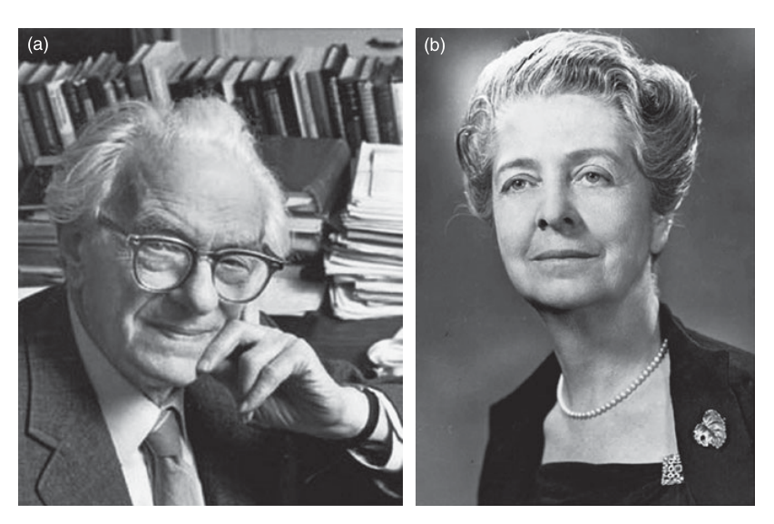
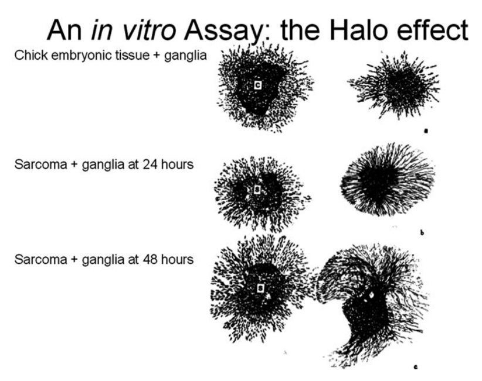
Chương 4 — Phân tử tín hiệu: Các chất dẫn truyền thần kinh đầu tiên trong não
Chương 4
Các phân tử tín hiệu: Những chất dẫn truyền thần kinh đầu tiên trong não
Ngoài các phân tử tín hiệu giữa các tế bào điều hòa quá trình phát triển còn có các phân tử tín hiệu giữa các tế bào thần kinh điều hòa hành vi. Những phân tử tín hiệu chủ chốt cho các chức năng này là chất dẫn truyền thần kinh, neuropeptide, chất truyền tin thứ hai nội bào, hormone và pheromone. Ngoại trừ các hormone sinh dục, phần lớn các nhóm thành phần chính này lần đầu tiên được xác định và được nhận thức về tầm quan trọng vào khoảng thập niên 1950. Trước thập niên 1950, hóa sinh học và dược lý học của não bộ hầu như chưa tồn tại. Đến cuối thập kỷ đó, tất cả các nhóm tác nhân truyền tín hiệu chính đã bắt đầu xuất hiện và cuốn sách giáo khoa đầu tiên về hóa sinh não bộ đã ra đời. Tuy nhiên, phải đến thập niên 1980, một sự đồng thuận mới bắt đầu hình thành về các chất dẫn truyền thần kinh chính. Các chất truyền tin thứ hai được phát hiện vào năm 1957 và trở thành một mô-típ thiết yếu trong sinh học thần kinh từ thập niên 1970. Neuropeptide cũng được phát hiện lần đầu vào thập niên 1950 và trở thành một chủ đề lớn vào thập niên 1970, gắn liền với các chất truyền tin thứ hai. Pheromone được xác định và đặt tên vào thập niên 1950 và được công nhận là yếu tố kiểm soát hành vi xã hội của hầu hết động vật, bao gồm cả những vai trò đáng kể ở người. Những lĩnh vực này đã mở rộng theo cấp số nhân, và các cơ chế của chúng đang là đối tượng của những nghiên cứu chuyên sâu. Liệu các nghiên cứu hiện nay có đang mở rộng cánh cửa dẫn đến những hiểu biết mới mẻ như những khám phá ban đầu ấy hay không?
Chúng ta chuyển từ các tín hiệu hóa học giữa các tế bào tham gia vào sự phát triển của hệ thần kinh sang các tín hiệu hóa học giữa các tế bào giúp chúng thực hiện quá trình xử lý thông tin, vốn là nền tảng cho khả năng tham gia vào các dải hành vi đặc trưng của từng loài động vật.
Những thí nghiệm ban đầu
Đối với các nhà mô học giữa thế kỷ XIX, ý tưởng rằng các tế bào thần kinh cần tín hiệu hóa học để giao tiếp với nhau—điều sau này được gọi là ‘‘dẫn truyền hóa học’’—không hề hiển nhiên và phải mất một thời gian dài mới được xác lập. Phần lớn lịch sử khoa học thần kinh đã dành cho việc khám phá và mô tả đặc tính của các phân tử tín hiệu này: chúng là gì, được tạo ra như thế nào, tác động lên tế bào đích ra sao và được điều biến bởi hoạt động như thế nào.
Khái niệm về dẫn truyền hóa học trong hệ thần kinh bắt đầu từ bằng chứng cho thấy có thể tồn tại các điểm tiếp nối giữa các tế bào có khả năng hưng phấn. Những manh mối đầu tiên xuất hiện từ công trình của Claude Bernard tại Paris về curare, chất độc tẩm đầu mũi tên được các nhà thám hiểm ở Nam Mỹ mang về châu Âu vào đầu thế kỷ XIX (còn gọi là ‘‘tubocurare’’ theo tên những ống tre dùng để vận chuyển curare) (Bowman, 1983, 109–110). Một mũi tên tẩm curare gây liệt tức thì và tử vong. Nguyên nhân là gì? Năm 1856, Bernard chứng minh rằng curare bôi trực tiếp lên cơ không có tác dụng nhưng khi bôi lên dây thần kinh và cơ lại gây liệt. Ông suy đoán rằng curare được dây thần kinh vận chuyển ngược về tủy sống để gây chết đầu trung tâm của dây thần kinh vận động (xem Bowman, 1983, 110). Học trò của ông, Vulpian, đã mở rộng các nghiên cứu này vào năm 1866 và kết luận chính xác rằng vị trí tác động khả dĩ của chất độc là điểm tiếp nối giữa dây thần kinh cơ và cơ (Bowman, 1983, 110).
Đây là một thí nghiệm kinh điển, đưa dây thần kinh vận động và cơ của nó trở thành đối tượng nghiên cứu sinh lý học, đồng thời tạo điểm khởi đầu cho cả sinh lý học (chức năng bình thường) lẫn dược lý học (tác dụng của thuốc) tại điểm tiếp nối mà sau này được gọi là ‘‘synapse.’’ Ý tưởng duy nhất về cơ chế vào thời điểm đó là một nhận xét ngắn gọn của Emil du Bois-Reymond (1877) tại Đức, rằng sự hoạt hóa bình thường của cơ có thể xảy ra thông qua ‘‘sự tiết kích thích’’ một ‘‘chất kích thích mạnh’’ từ các đầu tận cùng thần kinh lên cơ.
Trong các phòng thí nghiệm sinh lý học sơ khai thời bấy giờ, tim đập cô lập của ếch hoặc rùa trở thành một mẫu vật tiêu chuẩn, trong đó một thí nghiệm trình diễn thường lệ là sự làm chậm nhịp tim khi kích thích điện vào dây thần kinh phế vị. Tuy nhiên, việc xung thần kinh trong dây thần kinh phế vị gây ức chế tim, trái ngược với sự kích thích của các dây thần kinh ngoại biên lên cơ vân, khiến việc lý giải mối liên hệ giữa xung thần kinh và tác động của chúng lên tế bào đích trở nên khó khăn (lời giải thích chỉ xuất hiện sau khi có chứng minh rằng các dây thần kinh phế vị kích thích các tế bào hạch phó giao cảm ở nút xoang nhĩ, vốn có tác dụng ức chế các tế bào cơ tim) (Bacq, 1983).
Vào thập niên 1860, Schmiedeberg tại Đức chứng minh rằng một chất alkaloid gọi là muscarine, chiết xuất từ nấm Amanita muscaria, bắt chước tác dụng ức chế của kích thích phế vị lên tim (xem Bacq, 1975, 52). Đây có thể được xem là một trong những nghiên cứu dược lý đầu tiên về dẫn truyền synapse, rất lâu trước khi có bất kỳ khái niệm rõ ràng nào về quá trình này.
‘‘Chất trung gian hóa học’’ và ‘‘Chất tiếp nhận’’
Bằng chứng rõ ràng đầu tiên đến từ Thomas Elliott, một sinh viên tại Cambridge, Anh. Người hướng dẫn của ông, John Langley, đã định nghĩa hệ thần kinh tự chủ vào năm 1898 và đến năm 1905 đã phân biệt sâu hơn các dây thần kinh tự chủ. Những dây liên quan đến phần sọ (đầu) và phần cùng (phía sau) của hệ thần kinh tự chủ được ông gọi là ‘‘phó giao cảm’’ và những dây liên quan đến phần thân được gọi là ‘‘giao cảm’’ (xem Chương 9). Elliott phát hiện ra rằng hợp chất adrenaline, thu được từ tuyến thượng thận, bắt chước các tác dụng của kích thích thần kinh giao cảm. Ông đã thử nghiệm tác dụng của adrenaline trên nhiều cơ quan trước và sau khi cắt bỏ dây thần kinh chi phối, và trình bày một thông báo sơ bộ về công trình của mình trước Hội Sinh lý học (Elliott, 1904) với tựa đề ‘‘Về tác dụng của adrenalin’’, trong đó có những dòng sau (tr. 21):
điểm mà tại đó kích thích của chất kích thích hóa học [adrenaline] được tiếp nhận, và chuyển hóa thành yếu tố có thể gây ra sự thay đổi trương lực của sợi cơ, có lẽ là một cơ chế được phát triển từ tế bào cơ để đáp ứng với sự liên kết của nó với sợi giao cảm tiếp hợp. Khi đó, adrenalin có thể là chất kích thích hóa học được giải phóng mỗi khi xung thần kinh truyền tới ngoại biên. (in nghiêng được thêm vào)
Câu in nghiêng này được xem là phát biểu đầu tiên về thuyết hóa học của dẫn truyền synapse (xem O’Connor, 1991). Chúng ta cũng đã gặp Langley với tư cách là người được ghi nhận có phát biểu đầu tiên, vào cùng thời điểm này, về khái niệm hóa hướng động trong phát triển (Chương 3).
Các nghiên cứu của Elliott và Langley đã đưa ra khái niệm rằng một ‘‘chất trung gian hóa học’’ được tiết ra bởi các đầu tận cùng thần kinh đang hoạt động và nó tác động lên các ‘‘chất tiếp nhận’’ trên tế bào đích. Ngoài ra, còn có ý tưởng rằng điểm tiếp nối hình thành trong quá trình phát triển nhờ một tác động ‘‘dưỡng’’ kích thích tăng trưởng nào đó của cơ lên dây thần kinh. Cuối cùng, vì mọi xung thần kinh đều giống nhau (xem Chương 6), chính điểm tiếp nối quyết định bản chất đáp ứng của cơ, dù là hưng phấn hay ức chế. Đây là nguồn gốc của các khái niệm synapse hưng phấn và synapse ức chế. Xét đến việc các thí nghiệm được tiến hành trên toàn bộ cơ quan, những hiểu biết sâu sắc về cơ chế tế bào và thậm chí phân tử này thật đáng kinh ngạc.
Khái niệm ‘‘Chìa khóa và Ổ khóa’’
Vào thời điểm của những nghiên cứu dược lý sơ khai này, các mô hình tốt nhất cho sự hoạt hóa ở cấp độ phân tử là các enzyme tác động lên cơ chất của chúng. Vào thập niên 1890, Emil Fischer tại Đức đã công bố các nghiên cứu về enzyme chuyển hóa đường, trong đó ông đề xuất rằng sự tương tác giữa một enzyme và cơ chất của nó có tính đặc hiệu có thể ví như cơ chế ‘‘chìa khóa và ổ khóa’’. Dựa trên ý tưởng này, Paul Ehrlich đã phát triển khái niệm về một nhân phân tử có các ‘‘chuỗi bên’’ gắn kết với các kháng độc tố riêng biệt nhằm giải thích tính đặc hiệu của các tương tác trong hệ miễn dịch. Mô hình ‘‘chìa khóa và ổ khóa’’ trở thành một phép loại suy phổ biến để giải thích các phản ứng hóa học trong sinh học. Tuy nhiên, ý tưởng rằng tương tác giữa enzyme và phân tử cơ chất tương tự như tương tác giữa các ‘‘chất tiếp nhận’’ và phân tử tiếp nhận của chúng lại chậm thâm nhập vào tài liệu dược lý học. Trên thực tế, việc áp dụng rõ ràng các phương pháp được phát triển để phân tích động học enzyme vào các đặc tính của thụ thể phải chờ đến kỷ nguyên hiện đại.
Dược lý học cơ quan
Các nghiên cứu của Langley và các học trò vào đầu những năm 1900 về việc xác định các chất có hoạt tính tại đầu tận cùng thần kinh tự chủ trong các cơ quan cơ thể đã tạo ra một bước tiến rõ rệt. Nhưng việc chứng minh sự hiện diện của một chất trung gian hóa học và các chất tiếp nhận của nó đã thu hút sự quan tâm và thổi bùng đam mê của các nhà hóa sinh và dược lý học trong phần lớn nửa đầu thế kỷ XX. Trở ngại cốt yếu không phải là thiếu nỗ lực hay thiếu các thí nghiệm sâu sắc, mà là việc bị giới hạn trong các mẫu vật toàn cơ quan. Các nghiên cứu bị bó hẹp ở việc kích thích các thân dây thần kinh và quan sát tác dụng lên tuyến hoặc cơ, thu thập dịch tưới rửa và thử nghiệm chúng trên các phép thử sinh học. Mặc dù những nghiên cứu này củng cố ngày càng nhiều cho sự tồn tại của dẫn truyền hóa học, chúng không thể cung cấp bằng chứng về cơ chế synapse ở cấp độ tế bào.
Những tiến bộ quan trọng ban đầu là việc mô tả đặc tính của acetylcholine như một chất trung gian hóa học tiềm năng bởi Walter Dixon (1907) và Henry Dale (1914a, 1914b) tại Anh. Hai loại tác dụng đã được xác định: một tác dụng nhanh được bắt chước bởi nicotine (như tại khớp nối thần kinh-cơ) và một tác dụng chậm hơn được bắt chước bởi muscarine (như ở tim). Đỉnh cao của hướng nghiên cứu này là chứng minh vào năm 1921 của Otto Loewi tại Đức rằng dây thần kinh phế vị ức chế tim bằng cách giải phóng một chất, ‘‘vagusstoff,’’ và chứng minh sự tương đương của nó với acetylcholine (Feldberg và Krayer, 1933). Sơ đồ hai quả tim ếch, một quả được kích thích để giải phóng một chất (acetylcholine) vào dịch tưới rửa rồi chất này tác động làm ức chế nhịp đập của quả tim kia, là một hình ảnh kinh điển trong lịch sử cả sinh lý học lẫn khoa học thần kinh. Một chất dẫn truyền ức chế tại các synapse trong hệ thần kinh trung ương đã được Edgar Adrian và Charles Sherrington tại Anh đề xuất.
Walter Bradford Cannon tại Harvard đã có nhiều đóng góp trong giai đoạn này. Ông mở rộng ý tưởng của Claude Bernard về sự hằng định của môi trường bên trong (‘‘milieu interieur’’) thành khái niệm rộng lớn về ‘‘cân bằng nội môi’’ (homeostasis), và mô tả các cảm xúc ‘‘chiến đấu hay bỏ chạy’’ trỗi dậy trong phản ứng của động vật trước các mối đe dọa. Điều này dẫn đến các nghiên cứu trong thập niên 1930 về adrenaline và noradrenaline như các chất dẫn truyền của dây thần kinh giao cảm đến các cơ quan nội tạng và vai trò của chúng trong các hành vi liên quan đến hung hăng và sợ hãi (tóm tắt trong Cannon, 1945).
Dale, Feldberg và những người khác chứng minh rằng acetylcholine tác động tại tất cả các điểm tiếp nối phó giao cảm. Dale (1935) đưa ra sự phân biệt giữa các sợi thần kinh ‘‘cholinergic’’ giải phóng acetylcholine và các sợi ‘‘adrenergic’’ giải phóng ‘‘chất giao cảm giống adrenaline’’. Ông còn đề xuất rằng các chất trung gian này tác động lần lượt lên các ‘‘thụ thể tiếp nhận cholin’’ (cholinoreceptive receptors) và ‘‘thụ thể tiếp nhận adren’’ (adrenoreceptive receptors); tuy nhiên, các thuật ngữ ‘‘thụ thể cholinergic’’ và ‘‘thụ thể adrenergic’’ đã trở nên phổ biến thay thế. Điều này tạo tiền lệ cho các thuật ngữ mô tả những loại thụ thể khác đối với các loại chất trung gian hóa học khác tại các synapse trong não.
Cuộc tranh luận ‘‘Súp đấu với Tia lửa’’
Trong thập niên 1930, bằng chứng về dẫn truyền hóa học ngày càng tích tụ. Dale và các đồng nghiệp (1936) chứng minh rằng acetylcholine được giải phóng từ dây thần kinh cơ khi bị kích thích và khi được tiêm vào dòng máu tới một cơ cô lập, nó khiến cơ co giật. Tuy nhiên, trong khi Dale, Loewi và những người khác đang đặt nền móng cho quan điểm rằng dẫn truyền synapse diễn ra thông qua các chất truyền tin hóa học, nhiều nhà sinh lý học thần kinh vẫn giữ quan điểm đối lập rằng dẫn truyền synapse xảy ra nhờ dòng điện truyền trực tiếp từ neuron này sang neuron khác. Họ phản đối rằng nhiều thí nghiệm hóa sinh liên quan đến việc thu thập chất trong dịch tưới rửa của các cơ quan cô lập bị kích thích ở tần số cao nên kết quả mang tính ‘‘dược lý’’ hơn là ‘‘sinh lý’’, một mối lo ngại đối với mọi thí nghiệm có sử dụng thuốc. Cũng rất khó khái quát hóa từ các cơ quan ngoại biên này sang các synapse trong hệ thần kinh trung ương, nơi mà các phương pháp thực nghiệm, cả sinh lý học lẫn hóa sinh học, vào thời điểm đó hầu như hoàn toàn thiếu vắng (để đọc một bài tổng quan sâu sắc của một người trong cuộc, xem Bacq, 1975).
Cuộc tranh cãi trong thập niên 1930 được biết đến với tên gọi cuộc tranh luận lớn ‘‘súp đấu với tia lửa’’ (soup vs. sparks) (có nhiều tài liệu thuật lại: xem Cowan và cs., 2000). Nhà sinh lý học thần kinh người Úc John Eccles, học trò cuối cùng được Sherrington đào tạo tại Oxford, là người ủng hộ ồn ào nhất cho phe ‘‘tia lửa’’. Hết cuộc họp này đến cuộc họp khác, ông thách thức các nhà dược lý học bảo vệ phe ‘‘súp’’. Những trận đấu nảy lửa giữa một Eccles trẻ tuổi, hiếu chiến và một Dale lớn tuổi, cứng cỏi đã trở thành giai thoại trong khoa học thần kinh. Bernard Katz, người mới đến Anh năm 1935, đã ghi lại ấn tượng của mình (xem Katz, 1996, tr. 373):
Trước sự kinh ngạc tột độ của tôi [tại cuộc họp của Hội Sinh lý học], tôi đã chứng kiến một cảnh tượng gần như một cuộc đấu tay đôi giữa J. C. Eccles và H. H. Dale, với chủ tọa E. D. Adrian đóng vai một trọng tài hết sức lúng túng và miễn cưỡng. Eccles đã trình bày một bài báo trong đó ông bác bỏ vai trò của acetylcholine như một chất dẫn truyền trong hạch giao cảm. ... Khi [ông] nói xong, ông bị Brown, Feldberg và Dale lần lượt phản công... [Tuy nhiên] tôi không mất nhiều thời gian để nhận ra rằng kiểu tranh luận gay gắt này không dẫn đến sự oán giận nào giữa các đối thủ, mà thực chất là khúc dạo đầu cho nhiều cuộc thảo luận hiệu quả qua nhiều năm và thậm chí dẫn đến sự ngưỡng mộ lẫn nhau ngày càng tăng giữa Dale và Eccles.
Tuy nhiên, những người khác lại ghi nhận sự khó chịu của Dale trước việc Eccles từ chối chấp nhận bằng chứng hóa học. Sự hiếu chiến của Eccles gặp phải một Dale cũng hiếu chiến không kém, trong khi các cuộc công kích của Eccles nhắm vào những người khác ít có khả năng hoặc không sẵn lòng ứng xử theo cách đó bị nhiều người coi là quá đáng và thiếu công bằng (xem Chương 7).
(Cũng có thể nhận thấy rằng kiểu phê bình tự do thoải mái này phần lớn khả thi vì nó diễn ra trong một kỷ nguyên ngân sách nghiên cứu thấp, nơi mọi người hoạt động với nguồn tài trợ phần lớn độc lập. Như đã lưu ý ở Chương 2, kỷ nguyên đó sau Thế chiến II đã được thay thế bằng sự tài trợ của chính phủ cho nghiên cứu, với ngân sách lớn hơn nhưng lại phụ thuộc vào ‘‘bình duyệt’’ (peer review) bởi các đồng nghiệp, mà thường bao gồm cả đối thủ của mình. Dù tốt hay xấu, cường độ tranh luận công khai đã giảm xuống, trong khi cường độ của các bài đánh giá ẩn danh đối với bản thảo công bố và đề xuất xin tài trợ lại tăng lên.)
Có thể cảm nhận phần nào không khí cuộc tranh cãi giữa súp và tia lửa vào cuối thập niên 1930 qua những nhận xét của Alexander Forbes (người vẫn giữ được sự hài hước) tại Harvard, khi tổng kết hội thảo về synapse được tổ chức vào năm 1939, tr. 471:
Cuộc tranh cãi cứ thế tiếp diễn. Dale khi thảo luận về nó đã nhận xét rằng thật vô lý khi cho rằng tự nhiên lại sắp đặt sự giải phóng acetylcholine trong hạch—chất kích thích tế bào hạch mạnh nhất được biết đến—chỉ với mục đích duy nhất là đánh lừa các nhà sinh lý học. Đáp lại, Monnier nói rằng cũng vô lý không kém khi cho rằng các điện thế hoạt động lại được truyền tới các synapse với điện áp dường như đủ để kích thích các tế bào hạch chỉ nhằm đánh lừa các nhà sinh lý học.
Điện cực nội bào giải quyết cuộc tranh cãi
Đúng lúc đó, sự ra đời của vi ống hút thủy tinh dùng để ghi điện đã cho phép quan sát đáp ứng điện tại điểm tiếp nối synapse lần đầu tiên. Với các phương pháp này, các nhà điện sinh lý học bắt đầu chuyển bằng chứng về cơ chế synapse từ cấp độ cơ quan sang cấp độ tế bào. Chúng ta sẽ tiếp tục câu chuyện đó trong Chương 7.
Các chất dẫn truyền thần kinh trong não
Vào thời điểm này, Chiến tranh Thế giới thứ hai (1939–1945) nổ ra. Sau chiến tranh, các nghiên cứu về chất trung gian hóa học phân nhánh đa dạng. Ở một hướng, các nhà điện sinh lý học, sử dụng vi điện cực, đã hé lộ sinh lý học và dược lý học của synapse ở cấp độ tế bào; chúng ta sẽ bàn kỹ hơn về công trình này ở Chương 7. Ở một hướng riêng biệt, các nhà hóa sinh và dược lý học cố gắng tìm kiếm bằng chứng về các chất có hoạt tính sinh học có thể đóng vai trò chất trung gian hóa học trong não. Chúng ta sẽ tiếp tục phần câu chuyện này ngay sau đây.
Sinh viên khoa học thần kinh đương đại sẽ khó hình dung được sự nghèo nàn về phương tiện vào giữa thế kỷ XX để nghiên cứu các chất dẫn truyền hóa học và thụ thể của chúng trong não. Hầu như không có lĩnh vực hóa sinh não bộ hay hóa học thần kinh, không có sách giáo khoa hay tạp chí chuyên ngành nào cho cả hai lĩnh vực, và có rất ít phương pháp cho các nhà hóa sinh hay dược lý học ngoài việc nghiền nát mô và dùng các biện pháp thô sơ để xem có gì trong đó. Ở khía cạnh này, cũng như ở rất nhiều khía cạnh khác, não bộ là cơ quan khó nắm bắt nhất trong cơ thể.
Sách về hóa học não bộ thỉnh thoảng đã xuất hiện, bắt đầu với tác phẩm Treatise on the Chemical Constitution of the Brain của Thudichum (1884), chủ yếu tập trung ghi nhận sự hiện diện của lipid. Cuốn Brain Metabolism and Cerebral Disorders của Himwich (1951) chứa đựng những bằng chứng ban đầu về chuyển hóa trong mô não.
Kỷ nguyên mới bắt đầu với Hội nghị chuyên đề Hóa học thần kinh Quốc tế lần thứ nhất tại Oxford năm 1954 (xuất bản thành Biochemistry of the Developing Nervous System; Waelsch, 1955) và việc xuất bản cuốn Biochemistry and the Central Nervous System của Henry McIlwain (1955), một người tiên phong trong lĩnh vực, tại Bệnh viện Maudsley ở London. (Tôi đã mua cả hai cuốn sách này khi còn là sinh viên y khoa lúc bấy giờ.) Ngay sau đó là sự ra đời của bài viết ‘‘Central and Synaptic Transmission in the Nervous System; Pharmacological Aspects’’ của W. D. M. Paton (1958), ‘‘Pharmacological specificities of neurones in an elementary central nervous system’’ của Gershenfeld và Tauc (1961), Synaptic Transmission của Hugh McLennan (1963), và Physiology of Synapses của Eccles (1964).
Sự tương phản giữa cuốn sách cuối cùng trong số này và tình trạng hiểu biết về chất dẫn truyền thần kinh não bộ vào khoảng năm 1950 có thể thấy rõ qua những gì được đề cập trong cuốn sách giáo khoa uy tín mang tên The Pharmacological Basis of Therapeutics, ấn bản lần thứ hai, của Goodman và Gilman, xuất bản năm 1955. (Tôi đã sử dụng giáo trình này trong khóa học dược lý tại trường y năm 1957.) Liên quan đến các chất mà ngày nay chúng ta biết là chất dẫn truyền, thông tin hiện có vào thời điểm đó có thể được tóm tắt như sau:
Acetylcholine: Được mô tả chủ yếu liên quan đến các tác dụng phó giao cảm
tự chủ lên các cơ quan nội tạng. Các nghiên cứu về tác dụng trung ương có thể có của nó trong tủy sống mới chỉ bắt đầu. Norepinephrine: Chỉ được nhắc đến với vai trò trong các tác dụng giao cảm tự chủ tại các cơ quan nội tạng. Serotonin: Không được nhắc đến. Dopamine: Không được nhắc đến. Glutamate: Axit glutamic (glutamate) được nhắc đến vì khả năng sử dụng trong điều trị triệu chứng bệnh động kinh. Axit g-Aminobutyric (GABA): Không được nhắc đến.
Chỉ có vậy thôi. Trong bối cảnh đó, thật đáng kinh ngạc khi trong suốt thập niên 1950, những bằng chứng đầu tiên thực sự đã được thu thập cho hầu hết các chất dẫn truyền thần kinh chính trong não mà chúng ta công nhận ngày nay. Chúng ta sẽ lần lượt thảo luận ngắn gọn từng chất. Bằng chứng đến từ nhiều phương pháp: nghiên cứu hóa sinh, nghiên cứu điện sinh lý (xem thêm Chương 7) và nghiên cứu huỳnh quang mô (histofluorescence) (xem Chương 7).
Các tiêu chí xác định chất dẫn truyền
Các nghiên cứu sơ khai về sinh lý học và dược lý học của synapse nhận thấy rằng cần phải đáp ứng một bộ tiêu chí nghiêm ngặt để xác lập danh tính của một chất dẫn truyền thần kinh (xem Eccles, 1964):
1. các enzyme thích hợp để tổng hợp chất dẫn truyền tại đầu tận cùng tiền synapse
2. lượng chất đủ lớn tại đầu tận cùng tiền synapse 3. sự giải phóng đủ lượng khi kích thích các sợi trục tiền synapse 4. tác dụng giống hệt nhau của chất đó khi được áp dụng nhân tạo 5. dược lý học giống hệt nhau giữa chất thực nghiệm và chất tự nhiên 6. một enzyme bất hoạt hoặc cơ chế khác để loại bỏ chất
Như chúng ta đã thấy, những tiêu chí này vốn đã đủ khó để đáp ứng đối với các synapse ngoại biên dễ tiếp cận và đặt ra những thách thức lớn hơn nhiều đối với các synapse trung ương vốn gần như không thể tiếp cận. Mặc dù những tiến bộ ban đầu đã đạt được vào thập niên 1950, phải đến tận thập niên 1980 và thậm chí thập niên 1990 mới xuất hiện sự đồng thuận chung về các chất dẫn truyền thần kinh trong các con đường chính của não; và ngay cả hiện nay, bằng chứng chắc chắn vẫn còn rời rạc, với nhiều tiêu chí chưa được đáp ứng đối với nhiều loại kết nối synapse.
Định luật Dale
Một tiêu chí khác để xác định chất dẫn truyền dựa trên một gợi ý của Dale. Trong một bài tổng quan về chất dẫn truyền synapse trong hệ thần kinh tự chủ (Dale, 1934, 329), ông viết rằng các hiện tượng tái sinh dường như chỉ ra rằng bản chất của chức năng hóa học, dù là cholinergic hay adrenergic, là đặc trưng cho từng neuron riêng biệt và không thể thay đổi. Khi chúng ta xem xét hai đầu tận cùng khác nhau của cùng một neuron cảm giác, một đầu ở ngoại biên liên quan đến sự giãn mạch và đầu kia ở một synapse trung ương, liệu chúng ta có thể giả định rằng việc khám phá và xác định một chất dẫn truyền hóa học của sự giãn phản xạ sợi trục sẽ cung cấp gợi ý về bản chất quá trình dẫn truyền tại một synapse trung ương hay không? Khả năng này ít nhất cũng có giá trị như một động lực cho các thí nghiệm tiếp theo.
Gợi ý khiêm tốn này sau đó được Eccles và những người khác nâng tầm thành định luật Dale. Nó ngụ ý rằng trong quá trình phát triển, một quá trình biệt hóa nào đó quyết định sản phẩm tiết cụ thể mà một neuron nhất định sẽ sản xuất, lưu trữ và giải phóng. Tính hữu ích của định luật trong việc phân tích các mạch synapse thể hiện rõ trong phát biểu của Dale, bởi vì nếu một chất có thể được xác lập là chất dẫn truyền tại một synapse, có thể suy ra nó cũng là chất dẫn truyền tại mọi synapse khác do neuron đó tạo thành. Đây là một hệ quả tất yếu của sự thống nhất về giải phẫu, sinh lý, chuyển hóa và di truyền của neuron như được nêu trong học thuyết neuron nguyên thủy (Waldeyer, 1891; xem Shepherd, 1991). Định luật Dale chỉ áp dụng cho sự thống nhất tiền synapse của neuron, không áp dụng cho các tác dụng hậu synapse của chất dẫn truyền được giải phóng. Các nghiên cứu sau này, đặc biệt ở động vật không xương sống, đã chứng minh rằng các tác dụng này có thể khác nhau tùy thuộc vào loại thụ thể chất dẫn truyền thần kinh trên tế bào đích.
Bằng chứng ban đầu về Acetylcholine như một chất dẫn truyền hưng phấn
Bằng chứng đầu tiên về tác dụng của acetylcholine (ACh) tại một synapse trung ương thu được bởi Eccles và cộng sự (1954) đối với con đường Renshaw trong tủy sống (xem Chương 9). Trong con đường này, ACh đóng vai trò là chất dẫn truyền hưng phấn tại synapse từ các nhánh bên sợi trục neuron vận động tới các tế bào trung gian Renshaw, sau đó các tế bào này phản hồi ức chế ngược lại lên các neuron vận động. Tác dụng hưng phấn của nó tương tự như tác dụng hưng phấn tại khớp nối thần kinh-cơ, được xem là một biểu hiện của định luật Dale.
Bằng chứng ban đầu này đã thúc đẩy việc tìm kiếm các tác dụng hưng phấn của ACh ở những nơi khác trong não. Không có bằng chứng rõ ràng nào được tìm thấy vào thời điểm đó. Hệ quả là cuộc tìm kiếm chuyển hướng sang các chất khác.
Bằng chứng ban đầu về Glutamate như một chất dẫn truyền hưng phấn
Trong thập niên 1950, có rất ít tiến triển hướng tới mục tiêu này cho đến cuối thập kỷ, khi Curtis và cộng sự (1960) báo cáo rằng việc tiêm các axit amin có tính axit, bao gồm axit aspartic, glutamic và cysteic, bằng một kỹ thuật gọi là vi điện di ion (microiontophoresis), gần một điện cực đang ghi tín hiệu khiến neuron phóng xung lặp đi lặp lại. Sự tương đồng với quá trình khử cực và phóng xung lặp lại của tế bào Renshaw khi đáp ứng với ACh gợi ý rằng các axit amin này có thể là những chất dẫn truyền hưng phấn đặc hiệu. Tuy nhiên, trong một bài tổng quan uy tín, Eccles (1964, 71) lưu ý rằng các tác giả phản đối việc đồng nhất chúng với tác nhân dẫn truyền synapse, và thay vào đó gợi ý rằng chúng là các chất gây hưng phấn không đặc hiệu tác động tại các vị trí thụ thể trên màng dưới synapse khác với vị trí tác động của các chất dẫn truyền synapse.
Đoạn trích này cho thấy các nhà nghiên cứu ban đầu thận trọng đến mức nào khi xác định một chất là chất dẫn truyền thần kinh đặc hiệu trong bối cảnh chưa thể đáp ứng các tiêu chí đã đề xuất. Trong các nghiên cứu tiếp theo, các tác giả (Curtis và Watkins, 1961) chứng minh bằng cách áp dụng tại chỗ rằng các axit amin này là những chất gây hưng phấn mạnh đối với các tế bào ở vỏ não mèo. Họ cũng chứng minh rằng một chất mới, axit N-methyl-D-aspartic (NMDA), là chất gây hưng phấn mạnh nhất, mạnh hơn khoảng 10 lần so với axit D-glutamic. Mặc dù axit aspartic sau đó không còn được xem là ứng cử viên hàng đầu cho chất dẫn truyền thần kinh hưng phấn chính trong não mà nhường chỗ cho axit glutamic, nhưng dưới dạng NMDA, nó đã đứng ở tuyến đầu trong các nghiên cứu về tính khả biến của thụ thể axit glutamic và vai trò của chúng trong học tập và trí nhớ.
Bằng chứng tốt nhất cho glutamate và các axit amin có tính axit khác với tư cách là chất dẫn truyền hưng phấn đặc hiệu lần đầu tiên xuất hiện trong các nghiên cứu về động vật không xương sống. Takeuchi và Takeuchi (1963) đã chứng minh rằng các vị trí thụ thể trên sợi cơ động vật giáp xác, được hoạt hóa bằng cách áp dụng cục bộ các chất này, tương ứng với các vị trí synapse trên các sợi cơ đó.
Bất chấp bằng chứng này, sự chấp nhận glutamate như một chất dẫn truyền thần kinh hưng phấn vẫn đến rất chậm. Mãi đến năm 1972, trong cuốn sách uy tín Basic Neurochemistry do Albers biên tập, bằng chứng chính được ghi nhận vẫn là của Van Harreveld và Mendelson (1959) (không được Eccles trích dẫn), những người đã chứng minh rằng dịch chiết não chứa các axit amin có tính axit, khi áp dụng lên vỏ não, gây ra co cơ (thông qua các con đường vận động đi xuống).
(Tôi có thể chứng thực sự khó khăn mà tất cả chúng tôi gặp phải trong thập niên 1960 và 1970 khi chấp nhận những bằng chứng ngày càng tăng do tính chất rời rạc của nó và sự bất lực trong việc thỏa mãn tất cả các tiêu chí cơ bản để xác định chất dẫn truyền. Phải đến thập niên 1980, glutamate mới bắt đầu được chấp nhận rộng rãi là chất dẫn truyền thần kinh hưng phấn chính trong não.)
Bằng chứng ban đầu về GABA như một chất dẫn truyền ức chế
Trái ngược với axit glutamic, bằng chứng cho thấy một axit amin có tính axit khác là GABA có thể là một chất dẫn truyền ức chế tại các synapse trung ương đã xuất hiện từ đầu thập niên 1950. Năm 1950, GABA lần đầu tiên được xác định trong dịch chiết não động vật có vú bởi các phòng thí nghiệm của Awapara, Udenfriend và Roberts (tóm tắt trong Bennett và Balcar, 1999). Ban đầu người ta cho rằng GABA tham gia vào quá trình chuyển hóa glutamate. Nhiều nhà nghiên cứu được ghi nhận là người đầu tiên đề xuất GABA là chất dẫn truyền thần kinh ức chế. T. Hayashi (1954) đưa ra đề xuất này trên cơ sở GABA được tìm thấy trong não và có hoạt tính chống co giật (Koelle, 1955, 431). Một bước tiến then chốt được thực hiện bởi Ernst Florey (1954), người báo cáo rằng dịch chiết não chứa một ‘‘chất I’’ gây ức chế, được đánh giá qua sự ức chế phóng xung của thụ thể căng ở động vật giáp xác khi bị kéo căng (Koelle, 1955, 431). Chất I sau đó được xác định chính là GABA (Bazemore và cs., 1957).
Làn sóng nghiên cứu về GABA đã dẫn đến một hội nghị liên ngành lớn vào năm 1959 để thảo luận về vai trò khả dĩ của nó như một chất dẫn truyền thần kinh ức chế trong não. Mặc dù thực tế là não chứa nồng độ GABA cao và có những bằng chứng ban đầu về chức năng ức chế của nó, vẫn tồn tại rất nhiều hoài nghi. Mối lo ngại chính là các tiêu chí của một chất dẫn truyền chưa được đáp ứng, chủ yếu là chưa ai chứng minh được khả năng tạo ra một điện thế hậu synapse ức chế của nó. Có nhiều báo cáo chống lại nó; ví dụ, có báo cáo cho rằng không thể phát hiện GABA trong hệ thần kinh trung ương của động vật giáp xác, gợi ý rằng ‘‘Mọi bằng chứng hiện có đều chống lại . . . việc nó đóng vai trò là chất dẫn truyền ức chế ở động vật có xương sống’’ (Florey, trong Roberts, 1998, 371). Những thí nghiệm này và các thí nghiệm cho kết quả âm tính khác sau này đều được chứng minh là do phương pháp không đầy đủ. Tuy nhiên, kết quả vào thời điểm đó là ‘‘bức màn dường như đã khép lại đối với tư cách ứng cử viên của GABA như một chất dẫn truyền ức chế’’ (Roberts, 1998, 373). Một viễn cảnh vô cùng nản lòng.
Việc giải quyết cuộc tranh cãi này diễn ra vượt ra ngoài trọng tâm thập niên 1950 của chúng ta. Chẳng hạn, Eccles (1964) lập luận rằng các bản ghi nội bào cho thấy tác dụng synapse ức chế luôn tạo ra sự tăng phân cực màng, điều mà việc áp dụng GABA không tạo ra được. Tuy nhiên, người ta sớm nhận ra rằng tác dụng ức chế là do sự gia tăng độ dẫn ion Cl, yếu tố có thể giữ màng không bị khử cực tại điện thế đảo chiều của nó mà không cần phải gây tăng phân cực.
Bằng chứng dứt khoát được cung cấp bởi một nghiên cứu có hệ thống của Edward Kravitz và các đồng nghiệp, làm việc tại Khoa Sinh học Thần kinh liên ngành mới thành lập ở Trường Y Harvard dưới sự dẫn dắt của Stephen Kuffler. Họ chứng minh ở tôm hùm rằng GABA được tổng hợp bởi enzyme glutamic acid decarboxylase (GAD) trong các dây thần kinh vận động, hiện diện ở đó với nồng độ cao, được giải phóng từ các sợi trục ức chế khi kích thích, và khi áp dụng lên điểm tiếp nối sẽ có tác dụng ức chế giống hệt như kích thích dây thần kinh (Otsuka và cs., 1966). Trong não động vật có vú, tình hình lại khác; trong thập niên 1960 nhiều nghiên cứu gợi ý rằng GABA không phải là chất dẫn truyền ở đó. Như Bowery và Smart (2006) hồi tưởng, bằng chứng dứt khoát đầu tiên về GABA là chất dẫn truyền ức chế trong não động vật có vú thuộc về Krnjevic và Schwartz (1967), những người đã sử dụng bản ghi vi điện cực để chứng minh rằng GABA bắt chước sự ức chế synapse khi được điện di ion lên các neuron vỏ não mèo. Các nghiên cứu tiếp theo nhanh chóng chứng minh rằng GABA là chất dẫn truyền thần kinh ức chế chính ở hầu hết các vùng não.
Đến cuối thập niên 1970, vai trò của GABA như một chất dẫn truyền ức chế đã được xác lập tại nhiều loại synapse trung ương và sau đó tại hầu hết các synapse như vậy. Theo định nghĩa hiện đại, các nghiên cứu ban đầu tập trung vào các synapse GABA-A tác dụng nhanh; các nghiên cứu sau này đã xác định được những cơ chế khác nhau liên quan đến các loại thụ thể hậu synapse khác nhau.
Bằng chứng ban đầu về Serotonin như một chất dẫn truyền thần kinh
Từ giữa thế kỷ XIX người ta đã biết rằng khi cục máu đông hình thành, chúng giải phóng vào máu một chất khiến cơ trơn của mạch máu co lại, làm tăng ‘‘trương lực’’ mạch máu. Đến đầu thế kỷ XX, tiểu cầu máu được xác định là nguồn gốc của chất này. Năm 1948, Rapport và các đồng nghiệp phân lập được chất này, đặt tên là ‘‘serotonin’’ (sero, ‘‘huyết thanh’’; tonin, ‘‘trương lực’’), và chứng minh nó là hợp chất hóa học 5-hydroxytryptamine (5HT). Chất này được tổng hợp vào năm 1951. Người ta nhận ra rằng 5HT giống hệt với một chất đã được chứng minh phân bố rộng rãi trong ruột và các cơ quan khác, với nhiều tác dụng kích thích và ức chế đa dạng.
Năm 1953, 5HT được phát hiện có mặt trong não, gợi ý rằng nó có thể đóng vai trò là một chất dẫn truyền thần kinh tại đây. Sự quan tâm thực sự bùng lên với phát hiện rằng chất gây ảo giác cực mạnh lysergic acid diethylamide (LSD) có cấu trúc hóa học tương tự và đối kháng với các tác dụng kích thích của 5HT khi thử trên một mẫu vật sinh lý tiêu chuẩn của cơ trơn, một dải hồi tràng chuột lang (Gaddum, 1953; Woolley và Shaw, 1954). Sau khi phát hiện thuốc an thần reserpine (xem Chương 15), các thí nghiệm trên động vật cho thấy việc dùng LSD gây ra sự sụt giảm sâu sắc hàm lượng 5HT trong não (Brodie và Shore, 1957)
Điều này thu hút sự chú ý to lớn, cả trong giới nghiên cứu lẫn—dù tốt hay xấu—trong công chúng. Những lời đồn đại về sức mạnh mở rộng ý thức của 5HT thu hút rất nhiều sự chú ý, từ những người trẻ muốn có một chuyến phiêu lưu cuồng nhiệt đến những người trưởng thành muốn phân tích tâm trí mình. Nhóm đầu tiên tiêu biểu là những thanh niên tụ tập tại Woodstock năm 1969, nhóm sau tiêu biểu là tiểu thuyết gia Aldous Huxley. Tác dụng của nó là gây ảo giác, thường cực kỳ đáng sợ và đôi khi gây tử vong. Kể từ thời điểm đó, 5HT trở thành ứng cử viên hàng đầu cho vai trò chất dẫn truyền thần kinh đối với hàng loạt chức năng bình thường và bất thường của não bộ, cũng như là đích tác động của nhiều loại thuốc hướng thần (Goodman và Gilman, 1955, 614; xem thêm Siegel và cs., 1999, 264).
Các nghiên cứu tiếp theo về 5HT phân chia thành nhiều nhánh: dược lý học của các thụ thể, các con đường chuyển hóa tổng hợp và phân hủy, cơ chế giải phóng tại synapse, xác định các chất vận chuyển serotonin và định vị các con đường 5HT trong não. Hiện nay, 5HT đang thu hút sự quan tâm đáng kể trong điều trị rối loạn khí sắc thông qua việc phát triển các loại thuốc làm tăng nồng độ serotonin bằng chất ức chế tái hấp thu serotonin chọn lọc (SSRI) (xem Chương 15).
Các chất dẫn truyền Catecholamine
Một họ lớn các chất dẫn truyền thần kinh bao gồm các phân tử có vòng thơm và một chuỗi bên amine có nguồn gốc từ tyrosine trong chế độ ăn. Con đường sinh tổng hợp được Hugh Blaschko tại Vương quốc Anh làm sáng tỏ vào năm 1939, đi từ tyrosine đến dihydroxyphenylalanine (DOPA), rồi đến dopamine, norepinephrine và cuối cùng là epinephrine (Hình 4.1). Vào thời điểm đó, người ta biết epinephrine là chất dẫn truyền hưng phấn trong hệ thần kinh ngoại biên, nhưng lại giả định rằng các chất còn lại không có hoạt tính sinh học. Tuy nhiên, điều này nhanh chóng thay đổi vào thập niên 1950 khi xuất hiện bằng chứng cho thấy chúng hiện diện rộng rãi trong não.
Một bước đột phá xảy ra trong nghiên cứu về tác dụng của reserpine. Công trình này sẽ được xem xét chi tiết hơn ở phần sau (xem Huỳnh quang mô Monoamine) và trong Chương 15. Ở đây, chúng ta lưu ý rằng công trình của Arvid Carlsson và các đồng nghiệp tại
Lund chứng minh rằng các tác dụng hành vi của reserpine là do sự cạn kiệt catecholamine (Hình 4.2). Họ phát hiện ra rằng dopamine có mặt trong não và được giải phóng bởi reserpine cùng với noradrenaline và serotonin, gợi ý rằng chúng có hoạt tính sinh học trong não, có thể là chất dẫn truyền thần kinh (Carlsson và cs., 1959). Người ta chứng minh rằng dopamine hiện diện ở nồng độ cao trong hạch nền, dẫn đến giả thuyết rằng các triệu chứng giống bệnh Parkinson (an thần và bất động) do dùng reserpine gây ra là do cạn kiệt dopamine trong hạch nền. Những triệu chứng này có thể được giảm nhẹ bằng cách dùng tiền chất của dopamine là L-dopa (Carlsson, 36) (Phụ lục 4.1). Trong thời gian này, Oleh Hornykiewicz tại Vienna cũng tiến hành các nghiên cứu tiên phong về dopamine trong não người và sự liên quan khả dĩ của nó trong các bệnh lý hệ ngoại tháp (xem Chương 13).
Những phát hiện này, cùng với kết quả từ các phòng thí nghiệm khác, đã dẫn đến một hội nghị quốc tế về cơ chế adrenergic tại London năm 1960 để thảo luận về vị thế của các cơ chế này trong não. Hội nghị bị chi phối bởi các nhà dược lý học người Anh, đứng đầu là H. H. Dale, người từng đóng vai trò nổi bật trong các cuộc tranh luận súp đấu với tia lửa với Eccles vào thập niên 1930. Thái độ chung đối với các phát hiện mới từ Carlsson và những người khác là hết sức hoài nghi. Dopamine dùng ở liều cao gây chết người; có lẽ nó chỉ đóng vai trò như một chất độc tổng quát trong các thí nghiệm được báo cáo. Những chỉ trích này cùng các phản biện khác dẫn đến kết luận chung rằng ‘‘hoàn toàn không có bằng chứng nào cho thấy các catecholamine trong não hoạt động như chất dẫn truyền synapse’’ và ‘‘bất kỳ lý thuyết nào về mối liên hệ giữa catecholamine hoặc serotonin với hành vi đều là ‘một cấu trúc giả định mà một ngày nào đó sẽ phải sửa đổi’ ’’ (Vogt, trong Carlsson, 38).
Do đó, kết cục tại thời điểm này đối với catecholamine cũng tương tự như đối với GABA đã đề cập trước đó: có bằng chứng về vai trò chất dẫn truyền thần kinh nhưng vấp phải sự hoài nghi, phần lớn vì các tiêu chí cổ điển để xác định chất dẫn truyền chưa được đáp ứng. Tương tự trường hợp của GABA, phải đến tận thập niên 1970, bằng chứng về dopamine như một chất dẫn truyền thần kinh mới trở nên thuyết phục.
Một quá trình phân tích kiên nhẫn từng bước về các con đường phân hủy monoamine do Julius Axelrod và các đồng nghiệp thực hiện là trọng tâm của những nỗ lực này (Axelrod, 1958). Vào giữa thập niên 1950, Axelrod được Ed Evarts mời thành lập Phòng thí nghiệm Dược lý trong Phòng Khoa học Lâm sàng của Evarts tại Viện Sức khỏe Tâm thần Quốc gia (NIMH), dưới quyền giám đốc nghiên cứu nội bộ Seymour Kety. Kety có một tầm nhìn rõ ràng tuyệt vời về cách hỗ trợ nghiên cứu cơ bản (Axelrod, 1996, 62):
Triết lý của Seymour Kety . . . là cho phép các nhà nghiên cứu làm việc trong các phòng thí nghiệm của NIMH được nghiên cứu bất cứ điều gì có tiềm năng sinh lời và quan trọng. Kety tin rằng nếu không có đủ kiến thức cơ bản về các quá trình sống, việc thực hiện nghiên cứu có mục tiêu về bệnh tâm thần sẽ là sự lãng phí thời gian và tiền bạc.
Việc nhấn mạnh vào sự tự do trong nghiên cứu cơ bản thuộc các ngành khoa học sự sống này là một trong những chủ đề chính mà chúng ta sẽ thấy đã thúc đẩy cuộc cách mạng của thập niên 1950. Chúng ta sẽ gặp lại Kety ở Chương 3, nơi vai trò lãnh đạo của ông trong nghiên cứu chuyển hóa não bộ được mô tả sâu hơn.
Về phần mình, Axelrod đã xây dựng nên một nhóm nghiên cứu cực kỳ năng suất. Ông đã đào tạo nhiều nhà lãnh đạo tương lai trong lĩnh vực dược lý học chất dẫn truyền thần kinh, bao gồm Solomon Snyder ở Hoa Kỳ, Leslie Iverson ở Vương quốc Anh và Jacques Glowinski ở Pháp, cùng nhiều người khác. Các phương pháp nghiên cứu của ông thanh lịch trong sự giản dị:
Một trong những phẩm chất quan trọng nhất khi làm nghiên cứu, theo tôi, là đặt đúng câu hỏi vào đúng thời điểm. Tôi học được rằng làm một vấn đề quan trọng cũng tốn công sức ngang với làm một vấn đề tầm thường hay vụn vặt. Khi cơ hội đến, tôi đã đưa ra những lựa chọn đúng đắn.
(Axelrod, 1996, 74)
Huỳnh quang mô Monoamine
Bằng chứng về noradrenaline, dopamine và 5HT được thu thập trong thập niên 1950 bằng nhiều phương pháp hóa sinh; nhưng việc xác nhận sự hiện diện của chúng trong các neuron ở cấp độ tế bào là điều hết sức cấp thiết. Điều này đòi hỏi một phương pháp hóa mô, vốn phải được phát minh ra.
Bước đầu tiên là phát hiện của Eino Era¨nko¨ (1956) tại Phần Lan rằng các monoamine có thể phát huỳnh quang khi tiếp xúc với formaldehyde. Ông báo cáo rằng trong các lát cắt đông lạnh của mô não tiếp xúc với formaldehyde, một ánh sáng huỳnh quang màu vàng lục được tạo ra từ các tế bào chứa norepinephrine. Tuy nhiên, phương pháp này có độ nhạy thấp. Sau đó, một nỗ lực phối hợp đã được thực hiện bởi phòng thí nghiệm của Nils-Åke Hillarp tại Thụy Điển để thử nghiệm các phương pháp khác nhau nhằm tăng cường độ huỳnh quang trong khi vẫn giữ được các monoamine bên trong tế bào của chúng. Điều này dẫn đến việc xử lý các lát cắt mô đông khô bằng thuốc thử dạng khí. Hiệu quả nhất được phát hiện là hơi formaldehyde, tạo ra huỳnh quang cường độ cao trong các tế bào chứa noradrenaline của tủy thượng thận. Cuối cùng, điều này dẫn đến khả năng phát huỳnh quang đáng tin cậy của cả các tế bào chứa monoamine ngoại biên lẫn trung ương; những báo cáo đầu tiên trong não là của Carlsson và cs. (1962). Mặc dù sự phát triển của các phương pháp này nằm ngoài trọng tâm thập niên 1950 của chúng ta, cần lưu ý rằng đây là bằng chứng đầu tiên cho thấy dopamine, noradrenaline và 5HT được chứa trong các neuron của não và do đó có khả năng hoạt động như chất dẫn truyền thần kinh. Điều này ngay lập tức được xác nhận cho cả não động vật có xương sống lẫn hạch động vật không xương sống. Thành tựu này dẫn đến một lĩnh vực mới về các hệ thống trung ương xác định theo chất dẫn truyền bắt nguồn từ thân não, dường như song song với các hệ thống đối ứng ở hệ thần kinh tự chủ ngoại biên. Bao gồm hệ noradrenergic xuất phát từ nhân lục (locus ceruleus), hệ dopaminergic ở chất đen và vùng trần bụng (ventral tegmental area), và hệ serotonergic ở nhân đường giữa (raphe nucleus), sau này có thêm hệ cholinergic não trước.
Những tiến bộ này cho thấy một phương pháp nhuộm cho một phân tử có thể hé lộ cả một hệ thống. Các hệ thống này có những đường phóng chiếu vươn xa khắp hệ thần kinh và ngay lập tức được xác định có liên quan đến các rối loạn hành vi và tâm thần. Ngoạn mục nhất ở khía cạnh này là việc phát hiện dopamine với nồng độ cao trong não, sự mất mát nghiêm trọng của nó là nguyên nhân nền tảng của bệnh Parkinson, và sự phục hồi chức năng bằng tiền chất dopamine là dopa (Carlsson và cs., 1958), bằng chứng đầu tiên về cơ sở phân tử của một bệnh thoái hóa thần kinh (xem Chương 15).
Chất truyền tin thứ hai
Như chúng ta sẽ thấy ở Chương 7, khái niệm mới nổi về truyền tín hiệu qua tác động của chất dẫn truyền thần kinh liên quan đến việc mở các kênh ion trên màng tế bào tại vị trí hậu synapse, nhưng một khái niệm mới đã được Ernest Sutherland giới thiệu vào năm 1957. Thay vào đó, phân tử tín hiệu hoạt hóa một thụ thể độc lập trên màng, và thông qua sự hoạt hóa các chất trung gian, cuối cùng tạo ra một chất truyền tin thứ hai để hoạt hóa một enzyme nội bào. Ban đầu thu được đối với vai trò của adenosine monophosphate vòng (cyclic AMP) trong gan (Berthet và cs., 1957), phát hiện này ngay lập tức được nhận ra là có ý nghĩa rộng lớn đối với sự truyền tín hiệu tế bào khắp cơ thể. Trong hệ thần kinh, nó dẫn đến cuộc tìm kiếm các tác động của chất truyền tin thứ hai kiểm soát các kênh màng cũng như các hiệu ứng enzyme chậm hơn.
Do sự thiếu thốn các phương pháp hóa sinh và dược lý để áp dụng lên não bộ, các thí nghiệm này ban đầu tập trung vào hệ thần kinh tự chủ, đặc biệt là trên hạch cổ trên, nơi các tế bào nhỏ phát huỳnh quang mạnh đã được xác định và chứng minh là chứa dopamine. Paul Greengard và các đồng nghiệp đã khởi xướng các nghiên cứu về dopamine và truyền tín hiệu qua chất truyền tin thứ hai trong hệ thần kinh trên hạch này vào thập niên 1960 và 1970 (xem Kebabian và Greengard, 1973), rồi sau đó mở rộng sang các vùng trong não. Các hệ thống chất truyền tin thứ hai hiện nằm ở cốt lõi của sự quan tâm đương đại trong lĩnh vực rộng lớn về cơ chế truyền tín hiệu tế bào.
Hormone
Hormone bước vào câu chuyện của chúng ta vì tác động của chúng lên vùng dưới đồi và các phần liên quan của não. Thập niên 1930 là thời kỳ hoàng kim của việc xác định các hormone sinh dục. Với Adolph Butenandt tại Đức đóng vai trò dẫn đầu, các hormone nữ estrone và progesterone, cùng các hormone nam androsterone và testosterone đã được phân lập và xác định trong giai đoạn đó.
Năm 1951, hormone insulin được giải trình tự (chậm rãi đến mức gian khổ, từng axit amin một!) bởi Fred Sanger và các đồng nghiệp tại Cambridge, Vương quốc Anh. Như đã lưu ý ở Chương 2, điều này mở ra cánh cửa cho việc giải trình tự peptide và cuối cùng là protein như một nền tảng cơ bản của sinh học hiện đại, bao gồm cả khoa học thần kinh. Insulin là peptide đầu tiên có tác dụng trong hệ thần kinh được giải trình tự và do đó, nhìn lại, là neuropeptide đầu tiên, cùng với các hormone thùy sau tuyến yên là oxytocin và vasopressin (Chương 2 và 11). Vượt ra ngoài trọng tâm giữa thế kỷ của chúng ta, bắt đầu từ thập niên 1960 và 1970, các peptide hoạt tính thần kinh được hiểu là cấu thành một hệ thống truyền tín hiệu thiết yếu với các tác dụng khác biệt hoạt động song song với các chất dẫn truyền thần kinh cổ điển. Thông qua những peptide như enkephalin, chúng có những tác động rộng khắp và thiết yếu lên hành vi.
Pheromone
Sau các nghiên cứu về hormone, Butenandt chuyển sự chú ý sang việc khám phá chất mà bướm tằm cái Bombyx mori sử dụng để thu hút con đực. Năm 1959, sau gần ba thập kỷ và tích lũy dịch chiết từ nửa triệu con bướm cái, ông đã xác định được một loại rượu mạch dài, đặt tên là bombykol (Butenandt và cs., 1959) (Hình 4.3). Một cách độc lập, Peter Karlson, nhà hóa sinh người Đức, và Martin Luscher, nhà côn trùng học người Thụy Sĩ, khi nghiên cứu các chất do mối sử dụng, đã đưa ra thuật ngữ ‘‘pheromone’’ (phero, ‘‘kích thích’’; mone, ‘‘chất mang’’) cho các tín hiệu khơi gợi những đáp ứng hành vi đặc hiệu ở các cá thể cùng loài (Karlson và Luscher, 1959) (Phụ lục 4.2). Bombykol do đó trở thành pheromone đầu tiên trong rất nhiều pheromone được xác định, ở cả động vật không xương sống và động vật có xương sống.
Khả năng kiểm tra về mặt sinh lý đối với tác dụng của một pheromone hoặc chất có mùi khác ở côn trùng đã được Dietrich Schneider tại Đức giới thiệu vào năm 1957 nhờ phát hiện đáp ứng điện của các tế bào trong râu, gọi là ‘‘điện râu đồ’’ (electroantennogram). Một cách độc lập, David Ottoson tại Thụy Điển năm 1955 đã khám phá ra đáp ứng điện tổng hợp của cơ quan khứu giác ở động vật có xương sống, gọi là ‘‘điện khứu đồ’’ (electro-olfactogram) (xem Chương 7)
Tác dụng của Pheromone ở động vật có vú. Thập niên 1950 cũng rất giàu những bước đột phá cung cấp bằng chứng cho sự truyền tín hiệu giống pheromone ở động vật có vú (được tổng quan trong Ottoson và Shepherd, 1967). Năm 1952, Paul Dell và các đồng nghiệp (David và cs., 1952) tại Pháp chứng minh rằng kích thích điện vào hành khứu ở mèo cái làm gián đoạn chu kỳ động dục. Năm 1956, Van der Lee và Boot tại Hà Lan chứng minh một tác động lên tình trạng mang thai giả ở chuột cái nuôi chung so với nuôi riêng, điều sau này được gọi là ‘‘hiệu ứng LeeBoot’’. Wes Whitten tại Úc năm 1957 chứng minh rằng những con cái nuôi chung ức chế chu kỳ của nhau và tác động này qua trung gian con đường khứu giác; năm 1958 ông chứng minh rằng sự hiện diện của con đực làm các chu kỳ ngắn hơn và đều đặn hơn. Những ‘‘hiệu ứng Whitten’’ này chỉ ra rằng các tín hiệu khứu giác ảnh hưởng đến hành vi sinh sản của con cái nhằm ức chế khả năng mang thai khi vắng mặt con đực và tăng cường khả năng đó khi có mặt con đực.
Góp thêm vào bằng chứng từ các phòng thí nghiệm khắp thế giới là một yếu tố mới do Hilda Bruce tại Anh phát hiện. Sau khi giao phối, con cái bình thường sẽ từ chối giao hợp với mọi con đực trước khi sinh. Tuy nhiên, Bruce (1959) phát hiện ra rằng khi những con cái mới giao phối được đặt chung với một con đực lạ, chúng sẵn sàng giao phối với kẻ lạ mặt đó; điều này chấm dứt thai kỳ, và việc tiếp xúc liên tục dẫn đến giao phối với con đực lạ. Các nghiên cứu sâu hơn cho thấy chỉ cần tiếp xúc với mùi của con đực lạ cũng đủ chấm dứt thai kỳ, và điều này không xảy ra nếu hành khứu của con đực bị cắt bỏ.
Các nghiên cứu tiếp theo đã chứng minh rằng ‘‘hiệu ứng Bruce’’ thực sự qua trung gian con đường khứu giác, liên quan đến các cơ chế ghi nhớ mùi con đực lạ ngay tại hành khứu, với sự truyền dẫn tới vùng dưới đồi.
Thập niên 1950 do đó đã cung cấp những hiểu biết đầu tiên về các tác động mạnh mẽ tiềm tàng của tín hiệu pheromone lên hành vi động vật có vú, tiền thân cho bằng chứng được Martha McClintock công bố năm 1971 về sự đồng bộ hóa chu kỳ ở phụ nữ và ảnh hưởng của pheromone lên sự lựa chọn bạn đời ở người, vốn là chủ đề của những nghiên cứu và tranh cãi tiếp diễn cho đến ngày nay.
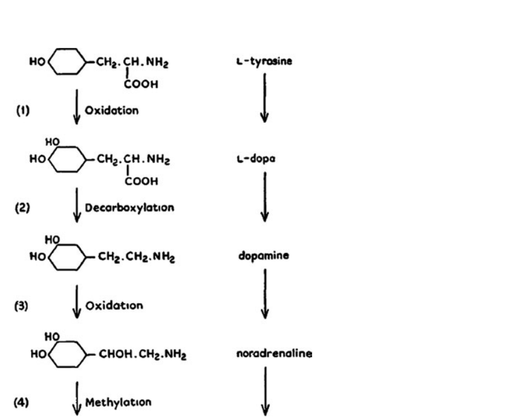
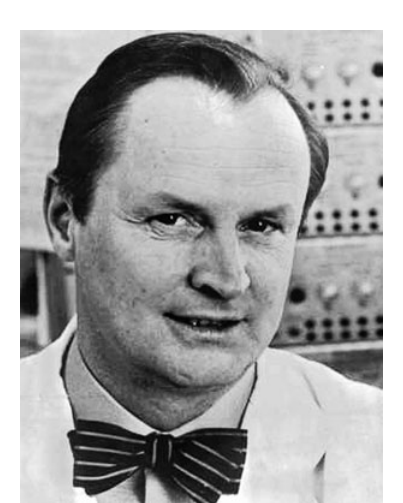

Chương 5 — Sinh học tế bào và khớp thần kinh (synap)
Chương 5
Sinh học tế bào và Synapse
Trước thập niên 1950, cấu trúc tế bào chỉ có thể được nghiên cứu dưới kính hiển vi quang học và các bào quan thực hiện chức năng của tế bào chỉ được nhìn thấy một cách mờ nhạt. Đến cuối thập niên 1950, kính hiển vi điện tử (EM) và các phương pháp khác đã mở ra một lĩnh vực hoàn toàn mới là sinh học tế bào, trong đó mỗi bào quan được công nhận là đóng góp một tập hợp chức năng riêng biệt vào cơ chế tổng thể của tế bào. Quan trọng nhất đối với hệ thần kinh, các tiếp xúc synapse do tế bào thần kinh tạo thành có thể được xác định và mô tả đặc tính một cách rõ ràng. Cuộc cách mạng được hứa hẹn bởi học thuyết tế bào hơn 100 năm trước cuối cùng đã đến, mang theo bằng chứng rằng cả sự tiếp xúc lẫn tính liên tục đều là nền tảng để xây dựng các mạch thần kinh. Cơ sở phân tử của synapse trở thành một trong những chủ đề trung tâm của nghiên cứu khoa học thần kinh hiện đại. Nhiều rối loạn thần kinh là do những biến đổi bệnh lý ảnh hưởng đến chức năng synapse, và phần lớn nghiên cứu dược phẩm về phát hiện thuốc đều nhắm vào synapse, như sẽ thấy rõ ở Chương 15. Ở đây chúng ta tập trung vào synapse hóa học như bào quan đặc biệt nhất đối với tế bào thần kinh, nhưng điều đó không nên làm lu mờ các bào quan khác, vốn dường như liên quan nhiều nhất đến các tế bào cơ thể khác vào thời điểm đó nhưng ngày càng được xem là tối quan trọng đối với chức năng thần kinh.
Tế bào học—ngành nghiên cứu cấu trúc của tế bào—có nguồn gốc từ kính hiển vi quang học của thế kỷ XIX. Mặc dù đến đầu thế kỷ XX một số bào quan bên trong tế bào đã được xác định—nhiễm sắc thể, ty thể, sợi thần kinh (neurofilament), thể Golgi—chúng chỉ có thể được nhìn thấy một cách mờ nhạt do những hạn chế quang học của kính hiển vi, phương pháp cố định và kỹ thuật chiếu sáng hiện có. Sự ra đời của phương pháp phân đoạn tế bào bằng ly tâm phân biệt (Claude, 1946) đã mở ra cánh cửa cho việc phân tích hóa sinh các phân đoạn tế bào (xem Chương 2). Tuy nhiên, các vấn đề vẫn gây tranh cãi đến mức vào tận giữa thế kỷ, một bài tổng quan thấu đáo các tài liệu của những chuyên gia đầu ngành đã cho rằng thể Golgi nhiều khả năng chỉ là một giả ảnh (artifact) (Palade và Claude, 1949)!
Các bào quan tế bào
Tất cả sự không chắc chắn này đã bị quét sạch nhờ việc ứng dụng kính hiển vi điện tử (EM) trong sinh học. Chỉ trong vòng vài năm đầu thập niên 1950 (khoảng 1952–1956), cấu trúc tinh vi (nói cách khác là siêu cấu trúc được quan sát qua EM ở độ phóng đại lên tới 50.000 lần hoặc hơn so với chưa đầy 1.000 lần dưới kính hiển vi quang học) của tất cả các bào quan chính trong tế bào đã được xác định và mô tả đặc tính. Lịch sử này thuộc về tế bào học và lĩnh vực mới là sinh học tế bào, nhưng nó cũng ngày càng liên quan đến việc hiểu các đặc điểm chuyên biệt được thích nghi cho hệ thần kinh. Những đặc điểm cấu trúc tinh vi này của tế bào do EM hé lộ được tóm tắt trong Bảng 5.1. Đó là những đặc điểm cấu trúc tinh vi và các bào quan chính mà chúng ta công nhận ngày nay.
Đó là một trong những giai đoạn kịch tính nhất trong lịch sử sinh học, có tầm ảnh hưởng tương đương với học thuyết tế bào vào thập niên 1840. Nó định hình lĩnh vực mới về cấu trúc tinh vi tế bào, ngành học mới là sinh học tế bào, và chương trình nghị sự mới cho việc nghiên cứu phân tử các chức năng tế bào kể từ đó. Mỗi bào quan đã trở thành một lĩnh vực riêng trong sinh học tế bào. Như Porter và Bennett (1981, XI) hồi tưởng:
Bảng 5.1 Những khám phá về cấu trúc tinh vi của các bào quan tế bào, đặt nền móng cho các lĩnh vực mới là Sinh học Tế bào và Sinh học Phân tử của Tế bào
Lông chuyển (với cấu trúc vi ống 9 + 2 đặc trưng) (Fawcett và Porter, 1954) Lưới nội chất hạt và trơn (Palade và Porter, 1954; Palay và Palade, 1954;
Fawcett, 1954) Thể Golgi (Dalton và Felix, 1954) Lysosome (Novikoff và cs., 1956) Ty thể (Palade, 1953; Sjo¨strand, 1953) Thoi phân bào (Mazia và Dan, 1952) Cấu trúc cơ (‘‘giả thuyết sợi trượt’’) (Huxley và Niedergerke, 1954a, 1954b;
Huxley và Hanson, 1954) Myelin (Geren, 1954; Robertson, 1955) Nhân và hạch nhân (Porter, 1955) Các hạt nucleoprotein (Palade, 1955), sau này được đổi tên thành ‘‘ribosome’’ (Roberts, 1958) Màng sinh chất (Robertson, 1957a, b)
(được tóm tắt trong Gall và cs., 1981, và Fawcett, 1981, nơi chứa các tài liệu tham khảo này và các tài liệu khác)
Một thế giới mới đang mở ra cho việc nghiên cứu; một dòng thác thông tin mới đã được khơi thông. Niềm phấn khích của khám phá và tinh thần đồng đội vì mục tiêu chung đã gắn kết chúng tôi lại với nhau. Tình bạn và sự tôn trọng lẫn nhau nảy nở trong những ngày sôi động ấy đã bền vững theo thời gian và củng cố lĩnh vực sinh học tế bào.
Chính ‘‘niềm phấn khích và tinh thần đồng đội vì mục tiêu chung’’ này đã thu hút chúng ta đến với thập niên 1950, một giai đoạn đã đặt ra tiêu chuẩn để đánh giá tầm quan trọng của các khám phá trong sinh học và khoa học thần kinh hiện đại.
Bối cảnh về Synapse
Điều thú vị nhất đối với hệ thần kinh là cấu trúc tinh vi của synapse. Trước tiên, tôi xin cung cấp một bối cảnh ngắn gọn về vấn đề này và nguồn gốc của nó.
Khi khái niệm về neuron được hình thành vào năm 1891 (xem Chương 8), ý tưởng của Ramo´n y Cajal được chấp nhận rằng các neuron tương tác thông qua ‘‘các điểm tiếp xúc’’ giữa sợi trục và sợi nhánh của chúng. Vào thời điểm đó chưa có bằng chứng nào về bản chất của tác động tại những điểm tiếp xúc như vậy. Phép loại suy tốt nhất với các thiết bị thời bấy giờ dường như là các hoạt động thần kinh diễn ra tương tự như dòng điện trong một cuộn cảm ứng (Ramo´n y Cajal, 1911); nghĩa là dòng điện trong phần mà ngày nay chúng ta gọi là cấu trúc tiền synapse cảm ứng điện tạo ra dòng điện trong cấu trúc hậu synapse, nhưng có rất ít hiểu biết về cách thức điều này xảy ra.
Một thuật ngữ mới: ‘‘Synapse.’’ Cái nhìn sâu sắc mang tính quyết định vào vấn đề tương tác giữa các tế bào thần kinh và tế bào đích của chúng đến từ một nhà sinh lý học trẻ người Anh, Charles Sherrington tại London. Khoảng năm 1890, Sherrington mới bắt đầu nghiên cứu các chức năng phản xạ của tủy sống. Công việc của ông đòi hỏi sự phân tích tỉ mỉ giải phẫu và sinh lý học của các dây thần kinh tủy sống và tủy sống. Các kết quả đã đặt nền móng cho khái niệm phản xạ như một đơn vị chức năng cơ bản trong tủy sống và các phần khác của hệ thần kinh, như sẽ được thảo luận sau.
Các kết quả của Sherrington khiến ông suy nghĩ về cách thức các xung thần kinh đi vào đầu tận cùng thần kinh trong tủy sống được truyền sang các neuron vận động chi phối cơ. Dường như sự truyền tải từ các đầu tận cùng phải liên quan đến những đặc tính khác với những đặc tính liên quan đến sự dẫn truyền xung thần kinh. Nếu Ramo´n y Cajal và các đồng nghiệp đúng và các dây thần kinh cảm giác phân nhánh rồi kết thúc ở các đầu tận cùng tự do, thì những đặc tính khác biệt này hẳn phải gắn liền với một loại tiếp xúc đặc biệt nào đó giữa các đầu tận cùng và tế bào vận động. Và thế là vào năm 1897, khi Michael Foster, một nhà sinh lý học hàng đầu thời bấy giờ, chuẩn bị chỉnh sửa cuốn sách giáo khoa sinh lý học tiêu chuẩn của mình và nhờ Sherrington viết các chương về tủy sống, Sherrington (1897, 929) đã đưa ra một đề xuất giản dị:
Theo những hiểu biết hiện tại của chúng ta, chúng ta đi đến suy nghĩ rằng đầu mút của một nhánh cây phân nhánh không liên tục mà chỉ tiếp xúc với chất của sợi nhánh hoặc thân tế bào mà nó chạm vào. Một kết nối đặc biệt như vậy giữa tế bào thần kinh này với tế bào thần kinh khác có thể được gọi là một synapse.
Bốn mươi năm sau, John Fulton, một cựu học trò, đã hỏi Sherrington làm thế nào ông nghĩ ra thuật ngữ này. (Bức thư hiện nằm tại Thư viện Lịch sử Y học ở Yale.) Câu trả lời của ông cho thấy sự lập luận cẩn trọng đằng sau việc lựa chọn các thuật ngữ tiếng Hy Lạp để áp dụng vào sinh học (Sherrington, 1940; tái bản trong Shepherd và Erulkar, 1997, tr. 387; Phụ lục 5.1):
Anh hỏi về sự ra đời của thuật ngữ ‘‘synapse’’; chuyện xảy ra như thế này.—M. Foster đã nhờ tôi viết tiếp phần Hệ Thần kinh (Phần iii) cho một Ấn bản mới cuốn ‘Sách giáo khoa Sinh lý học’ của ông ấy. Tôi đã bắt đầu viết, và chưa đi được bao xa thì cảm thấy cần một cái tên nào đó để gọi điểm tiếp nối giữa tế bào thần kinh & tế bào thần kinh [vì vị trí tiếp nối đó nay đã bước vào sinh lý học với tư cách mang tầm quan trọng chức năng]. Tôi viết thư cho ông ấy nói về khó khăn của mình, & mong muốn đưa ra một cái tên riêng. Tôi gợi ý dùng từ syndesm. Ông ấy đã hỏi ý kiến người bạn ở Trinity là Verrall, học giả về Euripides, về việc này, & Verrall gợi ý từ ‘synapse’, & vì từ đó tạo ra dạng tính từ tốt hơn nên nó đã được chọn cho cuốn sách.
Khái niệm cốt lõi đằng sau nhu cầu về một thuật ngữ riêng là, như đang trở nên rõ ràng, sự ‘dẫn truyền’ truyền tải ‘xung động’ dọc theo sợi thần kinh không thể—với tư cách như vậy—diễn ra tại điểm tiếp nối, một ‘màng’ nằm chắn ngang đường đi tại đó, & bản thân sự ‘dẫn truyền’ không có khả năng vượt qua một màng ‘chắn ngang’ . . . ‘synapsis’ theo nghĩa chặt chẽ có nghĩa là ‘một quá trình tiếp xúc’ tức là một diễn tiến hay hành động tiếp xúc, hơn là một vật tạo điều kiện tiếp xúc tức là một công cụ tiếp xúc. ‘Syndesm’ sẽ không có khiếm khuyết đó, nghĩa là nó có nghĩa là một ‘sự gắn kết’.
Đề xuất này do đó đã kết hợp bằng chứng giải phẫu thần kinh và sinh lý học vào một thuật ngữ duy nhất, trong đó ẩn chứa phần lớn sức mạnh giúp nó kích thích hầu như toàn bộ phạm vi nghiên cứu về tổ chức thần kinh.
Thuyết Neuron đấu với Thuyết Lưới
Vào thời điểm đó không có phương pháp giải phẫu nào để chứng minh synapse. Ramo´n y Cajal và hầu hết các nhà mô học cổ điển đã cung cấp bằng chứng mạnh mẽ bằng phương pháp nhuộm Golgi của họ về sự gián đoạn tại vị trí tận cùng của một sợi trục trên thân tế bào hoặc sợi nhánh của một tế bào khác, điều đã trở thành nền tảng của ‘‘học thuyết neuron’’. Chúng ta sẽ thảo luận khái niệm trung tâm này đối với sự trỗi dậy của khoa học thần kinh hiện đại ở Chương 8. Những người khác khăng khăng rằng họ có thể thấy sự liên tục giữa các nhánh này, làm nảy sinh cái gọi là thuyết lưới (reticular theory).
Việc không thể đưa ra một chứng minh hình thái học rõ ràng về synapse đã treo lơ lửng như một đám mây đen phủ lên các khái niệm về cách các neuron tương tác. Đó là một tình huống mà một mô hình đơn giản có thể đóng vai trò then chốt trong việc mang lại cái nhìn sâu sắc cần thiết. Một mô hình như vậy chính là điểm tiếp nối do đầu tận cùng sợi thần kinh vận động tạo thành trên cơ của nó, cái gọi là khớp nối thần kinh-cơ (NMJ).
Khớp nối thần kinh-cơ. NMJ, còn được gọi là ‘‘tấm tận cùng cơ’’ (muscle end plate), thực tế đã được nghiên cứu trong nhiều thập kỷ trước đó. Nó được mô tả lần đầu bởi nhiều tác giả vào thập niên 1860 và 1870. Willy Kuhne tại Đức là một trong những nhà nghiên cứu nổi tiếng nhất trong số này. Ngay cả với các loại thuốc nhuộm hạn chế sẵn có, những sơ đồ của ông về hình ảnh vi thể của NMJ không khác mấy so với hình ảnh và sơ đồ được tạo ra bởi hệ thống quang học và thuốc nhuộm cải tiến sau này (Kuhne, 1869).
Kuhne đã mô tả điểm tiếp nối này rất chi tiết. Người ta giả định rằng một xung động lan truyền từ sợi trục vào đầu tận cùng và điều này dẫn đến sự hoạt hóa co cơ bằng một cơ chế chưa rõ. Kuhne gợi ý rằng đây có thể là một mô hình cho các kết nối được tạo thành giữa các tế bào thần kinh trong hệ thần kinh. Như đã lưu ý ở nơi khác (Chương 4, 7), Du Bois-Reymond (1877) gợi ý rằng sự hoạt hóa cơ có thể liên quan đến ‘‘sự tiết kích thích’’ một ‘‘chất kích thích mạnh’’ từ các đầu tận cùng thần kinh lên cơ, nhưng điều này đã bị bỏ qua như một mô hình bởi các tác giả sau này gắn liền với việc sáng lập học thuyết neuron.
Rene Couteaux. Sau phát biểu cuối cùng của Ramo´n y Cajal về ‘‘neuron hay lưới’’ (1933), lĩnh vực này vẫn cần những nhà nghiên cứu với các phương pháp mới để giải quyết vấn đề. Một trong những người đầu tiên là Rene Couteaux tại Pháp. Như Tsuji (2006, tr. 503) nhận xét, ‘‘Mặc dù có tầm quan trọng to lớn, đóng góp lịch sử của Couteaux đối với hiểu biết về synapse hầu như không được nhắc đến trong các sách giáo khoa mô học.’’ Vấn đề này càng đáng tiếc hơn đối với những người, như Couteaux, đã công bố kết quả của mình bằng một ngôn ngữ khác ngoài tiếng Anh.
Ông sinh năm 1909, học y khoa, trở nên hứng thú với nghiên cứu, và tại Paris đã bắt đầu một đề tài luận án về cấu trúc của NMJ. Điều này đặt ông đối diện trực tiếp với vấn đề ‘‘neuron hay lưới’’. Để giải quyết câu hỏi này tại NMJ, các phương pháp sẵn có lúc bấy giờ là ngâm tẩm mô bằng vàng hoặc bạc, hoặc nhuộm sống (nhuộm mô không cần đúc nến hay cố định) bằng xanh methylene. Không phương pháp nào cho hình ảnh rõ nét—do độ phân giải hạn chế của kính hiển vi quang học—về màng của cả đầu tận cùng thần kinh lẫn màng cơ, để cho phép xác định liệu chúng có tách rời nhau (như đề xuất trong học thuyết neuron) hay có sự dung hợp hoặc liên tục thông qua các sợi thần kinh từ bên này sang bên kia (như đề xuất trong thuyết lưới).
Đến giữa thập niên 1930, dẫn truyền hóa học thông qua acetylcholine (ACh) và adrenaline (epinephrine) đã được xác lập trong hệ thần kinh tự chủ (xem Chương 4). Bằng chứng cũng bắt đầu tích tụ cho thấy ACh là chất dẫn truyền thần kinh từ dây thần kinh đến cơ vân tại NMJ. Vai trò này hàm ý một cơ chế bất hoạt ACh sau khi nó đã tác động lên màng hậu synapse. Người ta đề xuất rằng điều này có thể được thực hiện bởi một enzyme, acetylcholinesterase (AChE), nhằm thủy phân (phá vỡ) và bất hoạt nó.
Couteaux tập trung nghiên cứu vào việc chứng minh sự hiện diện và vị trí định khu của enzyme này. Cùng với David Nachmansohn, người giống như nhiều
người Do Thái khác phải chạy trốn khỏi Đức trong thập niên 1930, ông đã chứng minh bằng các phương pháp hóa sinh rằng AChE định khu tại những vị trí mà dây thần kinh chi phối cơ và nó vẫn tồn tại sau khi dây thần kinh bị thoái hóa (Couteaux và Nachmansohn, 1940), ngụ ý rằng nó hiện diện trong chính các màng tiếp nối. Ông tiếp tục công trình luận án của mình trong thời kỳ Đức Quốc xã chiếm đóng và phát hiện ra rằng việc nhuộm bằng thuốc nhuộm Janus green B hé lộ một khoảng trống, một ‘‘rãnh synapse’’ (synaptic gutter), tại điểm tiếp nối, cùng một ‘‘bộ máy dưới thần kinh’’ (subneural apparatus) ở phía cơ. Sự tách biệt này giữa đầu tận cùng thần kinh và cơ đã cung cấp sự ủng hộ mạnh mẽ nhất lúc bấy giờ cho học thuyết neuron tại synapse mô hình này (Couteaux, 1944, 1946; xem Tsuji, 2006).
George Koelle. Việc định khu AChE vẫn chưa đủ chính xác để thuyết phục những người hoài nghi. Ở giai đoạn này, George Koelle bước vào bức tranh. Ông sinh năm 1918, theo học tại Swarthmore, và nhận bằng Tiến sĩ sau Thế chiến II tại Đại học Pennsylvania năm 1946. Ông đã phát triển một phương pháp hóa mô để định khu AChE bằng cách nhuộm một phân tử có liên quan chặt chẽ (acetylthiocholine) dễ quan sát hơn (Koelle và Friedenwald, 1949). Phương pháp này được biết đến với tên gọi ‘‘phương pháp Koelle’’ và được sử dụng rộng rãi để chứng minh các hệ thống cholinergic khắp hệ thần kinh. Nó mang lại cho Koelle chức danh giáo sư chính thức vào năm 1952, ở tuổi 34, và sau đó là hai ghế giáo sư kép tại Penn. (Là một khách thăm thường xuyên của khoa dược lý Penn, tôi có thể chứng thực sự tận tụy không ngừng của ông ngay cả khi đã nghỉ hưu rất lâu trong việc truy tìm mọi bằng chứng về hoạt tính AChE; ông nhiệt tình khăng khăng đòi cho tôi xem những thí nghiệm mới nhất của mình vào tận thập niên 1990.)
Couteaux và Taxi (1952a, 1952b) đã thực hiện một cải tiến cơ bản đối với phương pháp Koelle, mang lại sự xác nhận thêm cho các kết quả trước đó của Couteaux với Janus green B. Do đó, theo Tsuji (2006, 503),
‘‘Công trình của Couteaux lần đầu tiên trong mô học đã cung cấp một cơ sở hình thái học được xác định rõ ràng cho synapse.’’
Synapse hóa học
Đối với hầu hết các nhà khoa học thần kinh, việc chứng minh dứt khoát các synapse chỉ có thể đạt được với độ phân giải cao của EM. Những hình ảnh EM đầu tiên về cấu trúc của một synapse được công bố vào năm 1954, bởi Sanford Palay và George Palade tại Hoa Kỳ và bởi Eduardo De Robertis và Bennett tại Uruguay.
Sanford Palay. Sanford Palay sinh năm 1918 tại Cleveland, lớn lên ở đó và được đào tạo y khoa tại Đại học Western Reserve. Ông bắt đầu sự nghiệp khoa học khi làm việc với Ernst Scharrer về các hạt tiết trong tế bào thần kinh của cá. Chúng ta sẽ gặp lại Ernst và Berta Scharrer với tư cách là những người tiên phong trong lĩnh vực mới về tiết thần kinh ở Chương 11. Đó là một khởi đầu đầy hoa trái cho người sinh viên trẻ. Hồi ký của ông (Palay, 1992, 192) mang lại hương vị của việc làm nghiên cứu sinh với những người thầy ấy, một sự rèn luyện cả về khoa học lẫn cuộc sống đã định hình nên một trong những học giả xuất sắc của khoa học thần kinh hiện đại. Nó cũng gợi lên cảm giác mất mát do thảm họa đang tàn phá khoa học và văn hóa châu Âu và Đức:
. . . vợ chồng Scharrer đại diện cho đời sống trí tuệ theo một cách hấp dẫn phi thường. Các thầy của họ từng là những ngọn đèn dẫn đường trong sinh học nửa đầu thế kỷ XX, và họ tiếp nối truyền thống xuất sắc mà khoa học châu Âu và đặc biệt là khoa học Đức đã đạt được từ đầu thế kỷ XIX. Đối với một thanh niên vùng Trung Tây mới chỉ ra khỏi miền bắc Ohio đúng hai lần trong đời, họ đại diện cho thế giới tao nhã của du lịch, văn chương, nghệ thuật và danh tiếng. Họ có thể nói trôi chảy tiếng Anh, tiếng Pháp và tiếng Đức, đồng thời biết tiếng Ý và nhiều ngôn ngữ khác. Họ biết tác giả của những bài báo chúng tôi đọc và những cuốn sách giáo khoa chúng tôi học. Chúng tôi thảo luận đủ mọi chủ đề từ các câu hỏi khoa học đang nghiên cứu đến tình hình thế giới, từ tiến triển của cuộc chiến ở châu Âu và Thái Bình Dương đến những hiểm họa phía trước trong dàn xếp hậu chiến. Tôi dành mọi buổi tối trong phòng thí nghiệm để học tập hoặc tiến hành nghiên cứu.
Khi chiến tranh kết thúc năm 1945, Palay đi cùng vợ chồng Scharrer khi họ nối lại những mùa hè ở Woods Hole, Massachusetts, nơi ông có cơ hội mà Woods Hole mang lại cho các sinh viên trẻ để gặp gỡ những nhà lãnh đạo trong sinh học từ khắp cả nước. Sau một thời gian phục vụ quân y trong quân đội, ông gia nhập nhóm của Albert Claude với tư cách nghiên cứu sinh sau tiến sĩ vào năm 1948. Claude, một người tị nạn khỏi Đức Quốc xã vào thập niên 1930, sớm có sự tham gia của George Palade, một người tị nạn từ Romania sau khi nước này rơi vào tay Liên Xô năm 1947, để bắt đầu các nghiên cứu sử dụng EM.
Sau khi Claude trở về Bỉ năm 1949, Palay trở thành giảng viên tại Yale. Bên cạnh khối lượng giảng dạy nặng nề, ông bị thu hút bởi EM khi các phương pháp bảo quản và cắt lát mô được cải thiện. Trong thời gian nghỉ phép từ Yale năm 1953, ông gia nhập cùng Palade để áp dụng các phương pháp mới vào mô thần kinh. Bất chấp những khó khăn, họ đã thu được hình ảnh cấu trúc tinh vi của neuron, bao gồm thể Nissl, lưới nội chất, sợi thần kinh và bộ máy Golgi, được công bố vào năm 1955 (Palay và Palade, 1955). Song song đó, Palay tập trung tìm kiếm synapse và tìm thấy nó bằng cách nghiên cứu các tế bào vận động của nhân dây thần kinh vận nhãn ngoài (abducens nucleus), vốn được biết là được bao phủ bởi các đầu tận cùng sợi trục. Chính những phát hiện này đã được ông báo cáo lần đầu vào năm 1954.
Eduardo De Robertis. Người tiên phong chính còn lại trong việc khám phá cấu trúc tinh vi của synapse là Eduardo De Robertis, người đến nay gần như bị lãng quên. Ông sinh năm 1913 trong một gia đình nhập cư người Ý tại Buenos Aires, Argentina. Sau khi được đào tạo y khoa, ông nghiên cứu chức năng nội tiết theo học bổng tại Hoa Kỳ từ năm 1939–1941 và trở về Argentina trong chiến tranh để tiếp tục nghiên cứu. Khi Pero´n lên nắm quyền năm 1946, De Robertis tự lưu vong sang Hoa Kỳ. Tại Viện Công nghệ Massachusetts (MIT), ông đã thực hiện một trong những nghiên cứu EM đầu tiên về sợi trục cùng với Frank Schmitt, trong đó họ chứng minh sự tồn tại của các ống thần kinh (neurotubule).
Sau đó ông được một trong những cựu học trò của Ramo´n y Cajal là C. Estable tuyển dụng về Viện Nghiên cứu Sinh học ở Uruguay, nơi ông thiết lập chiếc EM đầu tiên ở Nam Mỹ, tiến hành các nghiên cứu về cấu trúc tinh vi của võng mạc và bắt đầu quan tâm đến màng synapse cũng như sự xuất bào của các hạt trong tế bào tủy thượng thận. Phát triển từ công trình này, ông gia nhập cùng Bennett tại Seattle năm 1953 để nghiên cứu synapse, dẫn đến các báo cáo đầu tiên của họ vào năm 1954. (Năm 1957, ông trở về Buenos Aires để đứng đầu Khoa Sinh học Tế bào, bao gồm một đơn vị kính hiển vi điện tử.)
Khám phá ra Synapse. Việc phân định quyền ưu tiên đã gây tranh cãi bởi vì câu chuyện xuất hiện lần đầu dưới dạng các thông báo ngắn được trình bày gần như đồng thời tại các hội nghị năm 1954. Do đó, việc xác định các thông báo liên quan một cách chi tiết là rất hữu ích (Phụ lục 5.2–5.5).
Tại hội nghị của Hiệp hội các nhà Giải phẫu học Hoa Kỳ năm 1954, một bản tóm tắt của George Palade (‘‘với sự hỗ trợ của Sanford Palay’’) có tựa đề ‘‘Các quan sát dưới kính hiển vi điện tử về synapse liên neuron và thần kinh-cơ.’’
Trong hệ thần kinh trung ương (vỏ tiểu não và . . . hành tủy), các cấu trúc chân tận cùng điển hình hay ‘‘cúc tận cùng’’ (bouton terminal) thỉnh thoảng bắt gặp tiếp xúc với sợi nhánh. Trong đầu tận cùng sợi trục, người ta tìm thấy một đám ty thể và các túi nhỏ (300–500A), trong khi sợi nhánh cho thấy ít ty thể và túi hơn trong một bào tương khá nhiều sợi. Sợi trục và sợi nhánh dường như được ngăn cách bởi màng sinh chất tương ứng của chúng, vốn ở mức tiếp xúc gần hơn trở nên đặc và dày hơn. Khoảng không gian giữa các màng synapse là ~200A. . . .
Các synapse thần kinh-cơ được nghiên cứu trên cơ vân chuột. Các đầu tận cùng sợi trục có cùng hình thái bào tương như synapse trung ương. Đế bào tương cơ cho thấy sự tích tụ lớn các ty thể và hạt nhỏ. Sợi trục và sợi cơ tách rời nhau. Màng của sợi cơ cho thấy một số nếp gấp sâu và hẹp dày ~700A và cách nhau 0,2–0,4 m, bên trong đó đôi khi bắt gặp các phiến mỏng đặc (bộ máy dưới thần kinh của Couteau).
(Palade và Palay, 1954, 336)
Bản tóm tắt này ngay sau đó được tiếp nối bởi một bản tóm tắt của Palay (‘‘với sự hỗ trợ của George Palade’’) có tựa đề ‘‘Nghiên cứu dưới kính hiển vi điện tử về bào tương của neuron.’’ Các tế bào thần kinh được báo cáo là có các khối thể Nissl rõ rệt, cấu tạo từ màng mỏng và các hạt chấm. Một hệ thống màng thứ hai không có hạt được mô tả (nhiều khả năng là thể Golgi, lúc đó vẫn là một cấu trúc chưa chắc chắn). Thể Nissl có thể được nhìn thấy kéo dài vào sợi nhánh một đoạn ngắn, nhưng vượt ra ngoài đoạn đó, sợi nhánh và sợi trục trông giống nhau (do kỹ thuật cố định kém vào thời điểm đó). Nghiên cứu này có tầm quan trọng trong việc chứng minh rằng tế bào thần kinh có cấu trúc tinh vi tương tự hầu hết các tế bào khác của cơ thể.
Tại cùng hội nghị đó, Eduardo De Robertis từ Montevideo, Uruguay, đã trình bày ‘‘Những thay đổi ở ‘Túi Synapse’ của Hạch Thính giác Bụng sau khi Cắt Dây thần kinh (một Nghiên cứu Kính hiển vi Điện tử)’’, sau khi chọn vùng này (ở chuột lang) để có thể kiểm tra tác động lên các synapse tại đó sau khi phá hủy ốc tai.
Trong các đầu tận cùng tiền synapse bình thường, thành phần nổi bật nhất là các ‘‘túi synapse’’ dưới kính hiển vi quang học đã được De Robertis và Bennett mô tả trước đó (Fed. Proc., 13, Số 1, 1954) ở synapse của ếch và giun đất. Bên cạnh màng kép giới hạn, ty thể, lưới nội chất và một chất nền vô định hình có thể được quan sát thấy trong đầu tận cùng. Tại màng synapse có sự tiếp xúc trực tiếp với bào tương hậu synapse. Các biến đổi thoái hóa của đầu tận cùng trở nên rõ rệt ở giờ thứ 22 và rất rõ rệt ở giờ thứ 44. Những thay đổi sớm bao gồm sưng phồng chất nền, kết tụ và ly giải các túi synapse. Sau đó là sự ly giải của ty thể, biến mất hoàn toàn các túi synapse và cuối cùng là sự tách rời màng của đầu tận cùng khỏi điểm tiếp nối synapse. Không quan sát thấy thay đổi nào ở bào tương hậu synapse. . . .
(De Robertis, 1954, 284–285)
Điều này có thể được xem là sự xác nhận ở cấp độ cấu trúc tinh vi đối với nhận định sâu sắc của Forel trong đóng góp của ông vào thập niên 1880 cho ‘‘học thuyết neuron’’ cổ điển: rằng sự thoái hóa là đặc hiệu đối với tế bào bị ảnh hưởng và không truyền qua như thể qua một mạng lưới từ tế bào này sang tế bào khác (xem Shepherd, 1991). (Quan điểm này đã được điều chỉnh bởi các nghiên cứu sau này cho thấy những biến đổi thoái hóa xuyên neuron có thể được chứng minh ở nhiều tế bào.)
Những thông báo sơ bộ này được tiếp nối bằng các bài báo đầy đủ (De Robertis và Bennett, 1955; Palay, 1956; Phụ lục 5.6, 5.7).
Trong bài báo năm 1956, Palay (tr. 198) đã công bố mô tả đầy đủ đầu tiên về synapse khi quan sát ở hành tủy, tiểu não và đại não của chuột trưởng thành. Ông định nghĩa nó như sau (Hình 5.1):
Ba đặc điểm cấu trúc thiết yếu đặc trưng cho các synapse được nghiên cứu trong bài báo này: (a) các màng giới hạn áp sát nhau của đầu tận cùng tiền synapse và tế bào hoặc sợi nhánh hậu synapse; (b) cụm ty thể; và (c) tập hợp các túi mịn lấp đầy đầu tận cùng tiền synapse. Việc không có sự liên tục nguyên sinh chất băng qua bề mặt tiếp xúc giữa hai thành viên của bộ máy synapse là một sự xác nhận ấn tượng cho học thuyết neuron do Ramon y Cajal phát biểu và bảo vệ vào đầu thế kỷ này . . .
Định nghĩa hình thái học của synapse nhanh chóng quy về sự tích tụ các túi nhỏ ở phía tiền synapse và sự đậm đặc của các màng áp sát nhau. Các túi này ngay lập tức được giả định là chứa và giải phóng các phân tử chất dẫn truyền thần kinh tác động lên màng hậu synapse, để giải thích cho dẫn truyền hóa học tại NMJ và các synapse khác. Công trình ban đầu được Palay (1958) tổng quan, và một hình ảnh biểu diễn rõ ràng về synapse ở các thang độ phóng đại khác nhau đã được De Robertis cung cấp trong một bài tổng quan năm 1959, bao gồm sơ đồ về lý thuyết rằng túi dung hợp với màng sinh chất để giải phóng lượng chất dẫn truyền thần kinh bên trong nó (Hình 5.2). Điều này đã hợp nhất nghiên cứu giải phẫu và sinh lý học về synapse, đồng thời đặt ra chương trình nghị sự cho việc phân tích các cơ chế synapse vốn tiếp tục cho đến tận ngày nay.
Ai đã khám phá ra Synapse? Câu chuyện trên cho thấy rằng với phương pháp thích hợp (EM), synapse đã ở sẵn đó để được khám phá. Phán quyết của hậu thế về việc ai là người khám phá ra nó vẫn còn chia rẽ.
Palay (1992) sau này đã mô tả cảm xúc của mình khi—chắc chắn đối với ông—là người đầu tiên quan sát thấy các túi synapse. Năm 1988, ông đọc bài giảng Lịch sử Khoa học Thần kinh tại hội nghị thường niên của Hội Khoa học Thần kinh, do Ủy ban Lịch sử Khoa học Thần kinh mà tôi làm chủ tịch tài trợ. Trong suốt bài nói và tại bữa tối sau đó, ông rõ ràng đã xúc động khi bàn đến những đóng góp của mình và không nhắc đến công trình song song của De Robertis và Bennett. Trong hồi ký của mình, Palay (1992, 209) viết ‘‘Tôi nhớ rất rõ khoảnh khắc khi tôi phát hiện ra các đầu tận cùng synapse [bao gồm cả các túi] trong các tiêu bản của mình.’’ Ông đặt giá trị rất cao vào chất lượng của những hình ảnh làm cơ sở cho quyền ưu tiên.
Mặt khác, theo Porter và Bennett (1981, tr. 10), De Robertis và Bennett (1955) đã cung cấp ‘‘mô tả đầy đủ đầu tiên về các túi synapse và khoảng cách synapse liên màng.’’
Cả Palay và De Robertis đều được công nhận rộng rãi trong suốt cuộc đời vì những thành tựu của họ. Cả hai đều là những tấm gương xuất sắc về sự đổi mới và học thuật trong việc truyền bá kiến thức về các lĩnh vực mới là sinh học tế bào và synapse. De Robertis đã xuất bản một cuốn sách giáo khoa về sinh học tế bào bằng tiếng Tây Ban Nha từ năm 1946, cuốn sách đã tái bản nhiều lần bằng tiếng Nhật, Nga, Ý, Ba Lan, Hungary và cuối cùng là tiếng Anh vào năm 1970. Palay, cùng với Peters và Webster, đã xuất bản cuốn Fine Structure of the Neuron, trải qua nhiều lần tái bản. Đối với bạn bè và đồng nghiệp, ‘‘Sandy’’ là một sự pha trộn tuyệt vời giữa nét ngọt ngào và sự gai góc, một con người hiền hậu cũng như một học giả sẵn sàng phê bình nhanh chóng bất kỳ sự lơi lỏng nào trong tính chặt chẽ khoa học.
Các loại Synapse khác nhau
Loại I và II. Năm 1959, George Gray tại London (với các phương pháp cố định thích hợp) đã phân biệt giữa synapse loại I, có các túi tròn và độ dày màng bất đối xứng, và synapse loại II, có các túi đa hình thái (nhiều hình dạng khác nhau) và độ dày màng đối xứng (Phụ lục 5.8). Loại I được gợi ý là synapse hưng phấn và loại II là synapse ức chế. Sự phân biệt này tỏ ra vô giá trong việc xác định các synapse được cho là hưng phấn và ức chế (Chương 8) cũng như vai trò của chúng trong các mạch não cụ thể (Chương 10). Do đó, đến cuối thập niên 1950, chương trình nghị sự để phân tích tổ chức synapse của các mạch thần kinh ở các vùng khác nhau của não đã được thiết lập.
Khớp nối chặt (Tight Junctions). Các loại điểm tiếp nối khác được cấu tạo từ các màng áp sát nhau chặt chẽ cũng được nhìn thấy giữa các tế bào, với các kiểu kết nối và biến đổi khác nhau của các màng áp sát. Cuối cùng chúng được phân loại là khớp nối chặt, với chức năng giữ các tế bào gắn kết vật lý với nhau và tạo thành hàng rào ngăn chặn các chất ngoại bào, bao gồm cả hàng rào máu-não.
Khớp nối thần kinh-cơ. Cuối cùng, hãy quay trở lại mô hình mà chúng ta đã bắt đầu, NMJ. Song song với các nghiên cứu về cấu trúc tinh vi của synapse trong hệ thần kinh trung ương, các nhà nghiên cứu cũng đưa vào cả NMJ. J. D. Robertson, một người tiên phong sớm về cấu trúc tinh vi của màng thần kinh, đã thực hiện một nghiên cứu về màng cơ và NMJ ở loài bò sát. Màng cơ dường như có cấu trúc hai lá tương tự như ở các tế bào khác (Robertson, 1956). NMJ bao gồm màng thần kinh ở một bên và, qua một khoảng trống, một màng gấp nếp ở phía cơ. Ở phía thần kinh có nhiều cụm túi đối diện với các nếp gấp của màng cơ. Những cụm này sau đó được gọi là ‘‘vùng hoạt động’’ (active zones) (Couteaux, trong Eccles 1964; Heuser và cs., 1974). Sự giải phóng từng túi riêng lẻ được liên hệ với các điện thế tấm tận cùng thu nhỏ bởi del Castillo và Katz (1954a, 1954b, 1954c; xem thêm Chương 7). Trong khoảng trống có một đường tăng mật độ, gọi là ‘‘lá đáy’’ (basal lamina), một cấu trúc đặc biệt của NMJ và không tìm thấy trong khe synapse của các synapse trung ương. Chẳng bao lâu sau, AChE được định khu tại các nếp gấp hậu synapse và cuối cùng là chính các thụ thể ACh.
Những thành phần này đã định hình nên cấu trúc cổ điển của NMJ. Cấu trúc này phần lớn nhất quán với cấu trúc đơn giản hóa của các synapse trung ương, được cho là phản ánh môi trường năng động hơn về mặt cơ học của sợi cơ đang chuyển động. Như vậy, vào giữa thập niên 1950, khái niệm về synapse hình thái học làm nền tảng cho học thuyết neuron dường như đã được xác lập.
Synapse điện
Như thường xảy ra trong sinh học, một khái niệm tưởng chừng phổ quát chẳng bao lâu lại được phát hiện là có ngoại lệ. Ngay khi synapse hóa học vừa được chấp nhận là phương thức giao tiếp giữa các neuron thì một tương tác điện giữa các tế bào thần kinh đã được chứng minh. Mặc dù đây là một tác động sinh lý học được chứng minh bằng các thí nghiệm sinh lý học, nó được thảo luận ở đây vì những hàm ý trực tiếp đối với một con đường giải phẫu trực tiếp giữa các tế bào thần kinh.
Báo cáo đầu tiên đến từ phòng thí nghiệm của Bernard Katz, người mà như đã thảo luận ở Chương 7, là người tiên phong trong việc phân tích dẫn truyền hóa học tại NMJ. Sự việc diễn ra vào thời kỳ đỉnh cao của làn sóng các nhà khoa học trẻ người Mỹ vượt Đại Tây Dương tìm kiếm sự đào tạo tại các phòng thí nghiệm hàng đầu của Vương quốc Anh, nhằm ghi nhận những bước đột phá ở đó với các kỹ thuật vi điện cực mới.
Trong số đó có Edward Furshpan và David Potter, các nghiên cứu sinh sau tiến sĩ lần lượt của Sở Y tế Công cộng Hoa Kỳ và Quỹ Khoa học Quốc gia.
Đối với dự án của mình về việc mở rộng mô hình sinh lý học của synapse hóa học (xem Chương 7), họ theo đuổi chiến lược đang được ưa chuộng lúc bấy giờ là sử dụng một mô hình ‘‘đơn giản’’ ở động vật không xương sống và đã chọn chuỗi hạch thần kinh của tôm hùm đất. Trong mẫu vật này, một sợi trục khổng lồ kéo dài suốt chiều dài của chuỗi hạch thần kinh bụng và được biết là hoạt hóa một sợi trục vận động lớn đi tới cơ. Do đó, đây là một synapse sợi trục-sợi trục (axoaxonic synapse).
Nhưng các đặc tính của nó là gì? Furshpan và Potter (1957) đã chọc một điện cực vào sợi tiền synapse và sợi hậu synapse, phát một xung dòng điện ngắn để khơi gợi một điện thế hoạt động (xem Chương 6) ở sợi trước, và ghi lại đáp ứng ở sợi sau. Nếu sự hoạt hóa hoạt động theo cơ chế synapse hóa học, hẳn phải có một ‘‘độ trễ synapse’’ đáng kể để đáp ứng xảy ra; nhưng thay vào đó, điện thế hoạt động hậu synapse xuất hiện gần như tức thì. Ngay cả những dòng điện nhỏ, quá yếu để hoạt hóa một điện thế hoạt động, tuy nhiên vẫn cảm ứng tạo ra một đáp ứng yếu tương đương. Điều này không thể xảy ra tại một synapse hóa học, và các tác giả suy luận từ điều này cùng các bằng chứng khác rằng dòng điện đang truyền trực tiếp giữa các sợi trục. Dòng điện không truyền theo chiều ngược lại, một đặc tính được gọi là ‘‘chỉnh lưu’’ (một chiều) (Phụ lục 5.9).
Các tác giả kết luận (Furshpan và Potter, 1957, 343):
Như vậy, có bằng chứng rõ ràng rằng một quá trình dẫn truyền một chiều có thể diễn ra thông qua một cơ chế ‘‘điện’’, tức là cơ chế trong đó các dòng điện cục bộ chỉ có thể đi qua màng synapse theo một chiều duy nhất. Tuy nhiên, kết luận này có lẽ không áp dụng cho một số điểm tiếp nối khác trong chuỗi thần kinh tôm hùm đất; bởi vì có những dấu hiệu cho thấy ngay cả chính sợi hậu synapse này cũng có những synapse khác trên nó vốn dựa vào một chất trung gian hóa học.
Những kết nối điện này chẳng bao lâu sau được gọi là ‘‘synapse điện’’. Ban đầu, người ta giả định rằng kiểu dẫn truyền này, vốn liên quan đến một tác động rập khuôn giữa hai sợi trục truyền xung, có thể chỉ giới hạn ở những đòi hỏi chức năng đơn giản hơn của hệ thần kinh động vật không xương sống. Tuy nhiên, các ví dụ khác sớm xuất hiện ở thân não của động vật có xương sống (Bennett và cs., 1963). Người ta giả định rằng điều này sẽ đặc trưng cho các kiểu tích hợp đồng bộ đơn giản hơn xảy ra ở các nhân thân não và sẽ không xảy ra ở các phần cao hơn trong não.
Trong khi đó, cuộc tìm kiếm cơ sở cấu trúc của synapse điện giữa các tế bào trong cơ thể đang diễn ra, dẫn đến phát hiện ra khớp nối khe (gap junctions) (Revel và Karnovsky, 1967), những lỗ xuyên qua màng không chỉ dẫn điện mà còn đủ lớn để cho phép khuếch tán các phân tử giữa bào tương của hai tế bào. Người ta sớm phát hiện ra rằng khớp nối khe phân bố rộng rãi trong cơ thể và tham gia vào nhiều chức năng, chẳng hạn như trao đổi các phân tử dinh dưỡng và trao đổi các phân tử liên quan đến sự biệt hóa và tăng trưởng tế bào (khớp nối khe đặc biệt hiện diện nhiều trong giai đoạn phát triển sớm), cũng như chuyển giao các chất truyền tin thứ hai và truyền tín hiệu điện theo chiều này hay chiều khác. Chúng cũng được chứng minh là được điều biến theo nhiều cách khác nhau, bởi ion Ca, pH, sự phosphoryl hóa và những thay đổi điện thế xuyên màng.
Trong hệ thần kinh, ngày nay chúng ta biết rằng khớp nối khe và các tương tác điện có thể được tìm thấy giữa các tế bào ở nhiều vùng, thực hiện hàng loạt chức năng như đã liệt kê ở trên.
Những góc nhìn mới về Học thuyết Neuron
Nếu sự liên tục trực tiếp thông qua các khớp nối khe phổ biến đến vậy, điều này có bác bỏ học thuyết neuron hay không? Phải chăng hệ thần kinh được cấu tạo từ một mạng lưới, như Golgi từng khẳng định? Câu trả lời có thể được tìm thấy ở thực tế rằng sự hiện diện của khớp nối khe không hề bác bỏ học thuyết tế bào; chúng ta vẫn xem các tế bào cùng nhân của chúng là những viên gạch xây dựng cơ bản của cơ thể, ngay cả khi có thể tồn tại các kênh liên tục và giao tiếp trực tiếp giữa chúng. Vì học thuyết neuron là sự mở rộng của học thuyết tế bào sang hệ thần kinh, chúng ta có thể rút ra kết luận tương tự cho các tế bào thần kinh. Chúng vẫn là những viên gạch xây dựng cơ bản của hệ thần kinh. Tuy nhiên, các mô hình của cả synapse điện lẫn synapse hóa học tạo ra những mạch thần kinh có độ phức tạp vượt xa những gì được hình dung trong học thuyết nguyên thủy về neuron. Chúng ta sẽ thảo luận chi tiết hơn về học thuyết neuron ở Chương 8.
Myelin
Một cấu trúc tế bào độc nhất vô nhị đối với thần kinh là myelin, một chất béo bao quanh các sợi thần kinh lớn. Nó đã được nhận biết bằng các phương pháp nhuộm myelin trong thế kỷ XIX nhưng chưa được quan sát ở cấp độ cấu trúc tinh vi cho đến khi EM ra đời vào thập niên 1950. Mô tả kinh điển đến từ khám phá của Betty Geren tại Harvard năm 1954 rằng myelin ngoại biên được hình thành trong quá trình phát triển bởi màng sinh chất của một tế bào Schwann bao bọc xung quanh sợi trục nhiều vòng để tạo thành một cấu trúc nhiều lớp nén chặt giống như một chiếc bánh cuộn (Phụ lục 5.10).
Báo cáo nền tảng này nhanh chóng được xác nhận (Geren và Schmitt, 1954; Robertson, 1955) và ngay lập tức trở thành một tác phẩm kinh điển trong việc xác lập bản chất của bao myelin quanh các sợi trục thần kinh. Người ta sớm chứng minh rằng lớp bao bọc màng nhiều tầng này gắn liền với một cấu trúc có điện trở cao, điện dung thấp giúp tạo điều kiện cho sự dẫn truyền nhanh điện thế hoạt động, với sự tăng cường dòng điện tại các eo Ranvier. Điều này trở thành cơ sở để hiểu chức năng sợi trục bình thường và chức năng bất thường như trong bệnh đa xơ cứng.


Chương 6 — Sinh lý học: Điện thế hoạt động
Chương 6
Sinh lý học: Điện thế hoạt động
Các phần khác nhau của hệ thần kinh được kết nối với nhau bằng những sợi dài gọi là “sợi trục” (axons), cho phép chúng phối hợp hoạt động để điều hòa các hoạt động tự phát có tính đồng bộ, các phản xạ, tri giác, trí nhớ và các vận động có ý thức cấu thành nên hành vi. Đặc tính then chốt của sợi trục, vốn là nét đặc thù của hệ thần kinh, là khả năng “bị kích thích” (excitable), có thể duy trì các sóng điện thế tự tái tạo và lan truyền nhanh chóng qua những khoảng cách dài. Những sóng này được gọi là “xung động” (impulses) hay “điện thế hoạt động” (action potentials). Do đó, việc hiểu được tính kích thích là trọng tâm để thấu hiểu bản chất của hoạt động thần kinh. Vào khoảng năm 1900, người ta đã giả thuyết rằng điện thế hoạt động hình thành do sự dịch chuyển nhất thời của điện tích dưới dạng các ion đi qua màng tế bào. Vì điện thế hoạt động diễn ra rất nhanh, giả thuyết này không thể kiểm chứng cho đến khi bộ khuếch đại điện tử ra đời vào những năm 1920. Một sợi trục lớn ở mực ống được phát hiện vào những năm 1930 đã cung cấp một mẫu vật lý tưởng cho nghiên cứu này. Điều đó dẫn đến các phép ghi nội bào và mô hình dựa trên thực nghiệm của Hodgkin và Huxley năm 1952, chứng minh vai trò của các ion natri trong việc tạo ra điện thế hoạt động, mở ra kỷ nguyên mới cho nghiên cứu điện sinh lý nội bào về màng tế bào thần kinh. Điện thế hoạt động HH ngay lập tức chiếm một vị trí xứng đáng trong số những khám phá vĩ đại của khoa học hiện đại, quan trọng đối với sinh học và khoa học thần kinh chẳng kém gì mô hình nguyên tử Bohr đối với vật lý học.
Xung động thần kinh, còn gọi là “điện thế hoạt động”, nằm ở trung tâm của bản chất hệ thần kinh. Không có nó, sẽ không có hoạt động “thần kinh”, không có hệ thần kinh, không có cảm giác, vận động hay xúc cảm. Xung động thần kinh từng hoàn toàn chưa được biết đến cho đến khi những thiết bị ghi điện chậm đầu tiên ra đời vào thế kỷ XIX, diễn biến thời gian nhanh thực sự của nó chưa từng được ghi lại cho đến khi các ống chân không điện tử đầu tiên xuất hiện vào đầu những năm 1920, và cơ chế của nó chưa được hiểu rõ cho đến những năm 1950. Do đó, việc khám phá ra cơ chế này thiết yếu đối với việc tìm hiểu cơ sở thần kinh của hành vi cũng như vai trò của DNA đối với việc tìm hiểu gen và di truyền.
Bối cảnh
Những ý niệm sớm nhất về bản chất của các tín hiệu trong hệ thần kinh, bắt đầu từ người Hy Lạp cổ đại, liên quan đến quan niệm rằng não tiết ra các chất dịch, hay “tinh khí” (spirits), chảy qua các dây thần kinh đến cơ bắp. Một kỷ nguyên mới mở ra vào năm 1791 khi Luigi Galvani ở Bologna chứng minh rằng cơ ếch có thể bị kích thích bằng điện. Giả thuyết của ông về sự tồn tại của “điện động vật” (animal electricity) trong dây thần kinh và cơ bắp nhanh chóng hướng sự chú ý vào các cơ chế điện trong truyền tín hiệu thần kinh.
Ban đầu, chưa có phương pháp nào để nghiên cứu các cơ chế này. Việc nhà vật lý Hans Christian Oersted ở Đan Mạch phát hiện ra hiệu ứng điện từ của dòng điện vào năm 1819 đã khai sinh sự phát triển công nghiệp của điện học. Điện kế (galvanometer) nhanh chóng được chế tạo để đo dòng điện. Vào những năm 1840, Carlo Matteucci, người đồng hương của Galvani, đã sử dụng điện kế để thu được bằng chứng ở các dây thần kinh ngoại biên về điện động vật dưới dạng một sóng dòng điện ngắn. Ông là người đầu tiên sử dụng thuật ngữ “điện sinh lý học” (electrophysiology) (Geison, 1987). Sau đó, Emil Du Bois-Reymond ở Berlin đã tiến hành một loạt nghiên cứu sâu rộng về các đặc tính điện của dây thần kinh. Du Bois-Reymond là một trong bộ tứ các nhà sinh lý học trẻ người Đức nổi tiếng (Du Bois-Reymond, Herman von Helmholtz, Carl Ludwig và Ernst von Brucke) đã lập lời thề đặt sinh lý học trên nền tảng cơ học của vật lý và hóa học (Cranefield, 1957; xem Chương 2), một chủ đề chi phối các nghiên cứu thực nghiệm trong sinh học và hệ thần kinh kể từ đó.
Các nghiên cứu vào khoảng năm 1900 đã cung cấp nền tảng lý thuyết cho công trình tiên phong vào giữa thế kỷ (được Huxley tổng kết năm 1999). Năm 1888, Walther Nernst đã dẫn xuất một phương trình, ngày nay gọi là phương trình Nernst, để mô tả điện thế (điện thế cân bằng, điện thế khuếch tán) qua một màng bán thấm do sự chênh lệch nồng độ các ion mang điện giữa dung dịch bên trong và bên ngoài. Năm 1902, Julius Bernstein đề xuất rằng điện thế màng nghỉ có phía trong âm là do sự dư thừa bên trong tế bào của các ion mang điện tích âm (anion) kết hợp với các ion K+ mang điện tích dương. Ông giả thuyết rằng điện thế hoạt động hình thành do sự gia tăng nhất thời tính thấm đối với tất cả các ion, hoạt động như một sự đoản mạch làm giảm điện thế màng về không. Đây trở thành lời giải thích được chấp nhận rộng rãi về cơ sở ion của điện thế hoạt động trong 40 năm tiếp theo. Bị bỏ qua vào thời điểm đó là gợi ý tiên tri của William Overton, trong cùng năm ấy, rằng sự thay đổi này có thể liên quan đến việc tăng tính thấm đặc hiệu đối với các ion Na và K.
Xung động dần được gọi là điện thế hoạt động. Ngay từ năm 1874, Hermann (xem Byrne và Shepherd, 2008) đã gợi ý rằng điện thế hoạt động lan truyền thông qua các “mạch cục bộ” (local circuits) của dòng điện lan tỏa về phía trước dọc theo màng sợi trục. Những dao động nhỏ của điện thế nghỉ lan truyền thụ động dọc theo màng theo kiểu suy giảm dần, dưới ngưỡng để phát sinh điện thế hoạt động, được gọi là điện thế điện trương (electrotonic potentials). Lord Kelvin đã chỉ ra sự tương đồng với sự lan truyền dòng điện qua một sợi cáp điện. Vì vậy, các đặc tính thụ động được gọi là đặc tính cáp của dây thần kinh.
Khả năng của một dây thần kinh đáp ứng với một cú sốc điện bằng một xung động được gọi là sự kích thích (excitation), và mô thần kinh được công nhận là có tính kích thích (excitable). Tuy nhiên, người ta nhanh chóng nhận ra rằng điện thế hoạt động không chỉ giới hạn ở dây thần kinh hay thậm chí ở mô động vật. Bowditch đã chứng minh rằng có thể ghi được điện thế hoạt động từ cây bắt ruồi (Venus flytrap) khi các lá của nó khép lại kẹp lấy con mồi.
Tầm quan trọng của xung động thần kinh đối với tâm lý học
Năm 1850, đồng nghiệp của Du Bois-Reymond là von Helmholtz, người sau này trở thành một nhà vật lý nổi tiếng, đã đo tốc độ dẫn truyền của xung động thần kinh và lần đầu tiên chỉ ra rằng, tuy nhanh, nó không hẳn là quá nhanh. Ở các dây thần kinh lớn của ếch, tốc độ này vào khoảng 40 mét mỗi giây, tức 140 kilômét mỗi giờ. Đây là một phát hiện mang tính bước ngoặt khác (xem Boring, 1950, để thảo luận về ý nghĩa của nó), vì nó cho thấy cơ chế của xung động thần kinh không đơn thuần là sự lan truyền vật lý của dòng điện như qua một sợi dây dẫn; nó phải liên quan đến một quá trình sinh học chủ động (do đó mới có thuật ngữ “điện thế hoạt động”).
Bản chất điện của xung động thần kinh và tốc độ dẫn truyền hữu hạn của nó là những khám phá quan trọng đối với sinh lý học nói chung, và thực sự đối với toàn bộ khoa học, bởi vì chúng cấu thành bằng chứng trực tiếp đầu tiên về loại hoạt động hiện diện trong hệ thần kinh. Cũng giống như tim bơm máu và thận tạo nước tiểu, giờ đây người ta có thể nói rằng hệ thần kinh tạo ra các tín hiệu dưới dạng xung động.
Thực tế là xung động chỉ di chuyển với một tốc độ vừa phải đã mang lại những hàm ý to lớn cho tâm lý học, vì nó dường như tách biệt tâm trí khỏi những hành động mà tâm trí mong muốn—điều có thể được diễn giải là ủng hộ quan điểm nhị nguyên luận (dualism), có từ thời Descartes, rằng tâm trí (suy nghĩ của chúng ta) tách rời khỏi cơ thể (các tín hiệu xung động của chúng ta). Nhưng nó cũng là mũi nhọn mở đường cho quan điểm duy vật rằng tâm trí có thể được đồng nhất với các tín hiệu trong dây thần kinh. Vì thế, nó là một trong những bước tiến hướng tới sự phát triển của tâm lý học hiện đại và nghiên cứu hành vi, đồng thời đóng góp vào cuộc tranh luận về bản chất của tâm trí và cơ thể.
Ghi lại xung động
Trong suốt thế kỷ XIX, không có công cụ nào có đủ độ nhạy và thời gian đáp ứng đủ nhanh để ghi lại xung động một cách trực tiếp. Nó chỉ có thể được phát hiện về mặt điện học như một sự thay đổi của điện thế nghỉ, hoặc nếu không thì chỉ qua thực tế là khi kích thích một dây thần kinh đang nối với cơ của nó, cú sốc điện sẽ kéo theo (sau một khoảng thời gian ngắn để dẫn truyền trong dây thần kinh) một cái giật cơ. Bản chất ngắn ngủi của cái giật cơ cho thấy một xung động cũng phải xảy ra trong cơ, vì vậy cơ cũng được công nhận là có đặc tính kích thích.
Vào những năm đầu của thế kỷ XX, một loại điện kế tinh vi hơn, gọi là “điện kế dây” (string galvanometer), đã được phát triển, đủ nhạy để ghi nhận xung động nhưng vẫn quá chậm để thực hiện điều đó mà không bị biến dạng đáng kể. Độ nhạy của nó khiến nó dễ bị ảnh hưởng bởi những rung động nhỏ nhất, vì vậy các nhà nghiên cứu phải đóng những chiếc bàn thật nặng để đặt thiết bị, một vấn đề đối với phép ghi điện sinh lý vẫn tiếp diễn cho đến ngày nay. Điều này đạt đến giới hạn cực đoan trong các thí nghiệm của Keith Lucas tại Cambridge, Anh, người có chiếc bàn ghi nặng tới vài tấn. Lucas đã phát triển nhiều loại thiết bị sinh lý học cơ bản, bao gồm các cung đồng thau đồ sộ mà qua đó một con lắc vung lên để kích hoạt các cú sốc điện tại những thời điểm và khoảng thời gian xác định. Việc ghi lại các kích thích và đáp ứng cơ được thực hiện trên trống ám khói (smoked drums) và các bản ghi điện được thực hiện trên phim. Thiết bị của Lucas đại diện cho đỉnh cao của kỷ nguyên cơ điện trong dụng cụ sinh lý học (xem Shepherd và Braun, 1989).
Lucas tiến hành các thí nghiệm của mình trên mẫu vật thần kinh–cơ của ếch. Về mặt khái niệm, ông tin rằng mẫu vật này cung cấp một mô hình cho các đặc tính của tế bào trong não. Ý tưởng này trở thành một trong những chiến lược then chốt thúc đẩy khoa học thần kinh hiện đại: sử dụng các mẫu vật đơn giản để hé lộ những nguyên lý chung về cấu trúc và chức năng. Dù có giá trị đến một mức độ nhất định, niềm tin này ở dạng hẹp của nó hóa ra, giống như rất nhiều quy luật sinh học khác, lại quá gò bó. Khi hệ thần kinh trung ương cuối cùng có thể được nghiên cứu theo đúng bản chất của nó từ những năm 1950 trở đi, người ta thấy rằng nó vận hành bằng một loạt cơ chế rộng lớn hơn nhiều so với những gì hiện diện ở bất kỳ mẫu vật ngoại biên đơn lẻ nào.
Ghi lại từng điện thế hoạt động đơn lẻ của các dây thần kinh có bao myelin
Mặc dù điện thế hoạt động được ghi từ ngoại bào không thể mang lại cái nhìn sâu sắc về các cơ chế màng tạo ra nó như phép ghi nội bào, nhưng nó là trụ cột chính của các nhà điện sinh lý học trong nửa đầu thế kỷ XX. Keith Lucas tại Cambridge là người dẫn đầu, nhưng ông đã qua đời vì tai nạn vào năm 1917 khi đang làm việc trong một nhà máy trong Thế chiến thứ nhất (1914–18). Công trình của ông được tiếp nối bởi học trò của ông, Edgar Adrian. Trong suốt những năm 1920, Adrian và các học trò đã sử dụng điện kế dây kết hợp với phép ghi từ các sợi đơn lẻ để chứng minh đặc tính tất-cả-hoặc-không-có-gì (all-or-nothing) của xung động thần kinh ở các sợi trục cảm giác (Adrian và Zotterman, 1926a, 1926b) và sợi trục vận động (Adrian và Bronk, 1928). (Tên của Adrian luôn đứng trước các học trò của ông vì tạp chí The Journal of Physiology chỉ cho phép xếp tên tác giả theo thứ tự bảng chữ cái.) Nghiên cứu cùng Zotterman là công trình đầu tiên thực hiện việc bóc tách từng sợi trục đơn lẻ khỏi một dây thần kinh ngoại biên, đặt chúng lên các dây ghi mảnh nối với bộ khuếch đại và thu được những bản ghi ngoại bào đầu tiên của các điện thế hoạt động đơn lẻ trong sợi thần kinh (Phụ lục 6.1). Trên thang thời gian chậm, các điện thế hoạt động trông giống như những vạch đơn lẻ và được gọi là các gai (spikes).
Ở những sợi trục dẫn truyền từ thoi cơ này, người ta thấy rằng việc kéo giãn cơ làm phát sinh một chuỗi điện thế hoạt động có tần số thay đổi theo thời lượng và mức độ kích thích từ thụ thể cảm giác. Những nghiên cứu này đã khai mở lĩnh vực nghiên cứu về mã hóa thông tin trong các chuỗi xung động của hệ thần kinh, như được Adrian tổng kết trong cuốn The Basis of Sensation (1928).
Chúng ta sẽ quay lại vấn đề mã hóa thông tin thần kinh trong các chuỗi gai khi thảo luận về các nghiên cứu hệ thống cảm giác ở phần sau (Chương 9).
Các bản ghi từ sợi thần kinh
Kỷ nguyên điện tử hiện đại của thiết bị sinh học bắt đầu với việc Herbert Gasser và Joseph Erlanger đưa dao động ký tia âm cực (cathode ray oscilloscope) vào ghi xung động thần kinh năm 1922 tại St. Louis. Có thể coi đây là khám phá lớn đầu tiên trong sinh lý học thần kinh đến từ Tân Thế giới. Với một dây thần kinh ngoại biên đặt trên hai điện cực dây nối với bộ khuếch đại, các dòng điện ngoại bào gắn liền với xung động có thể được ghi lại và hiển thị trên một vệt sáng di chuyển nhanh qua màn hình dao động ký. Điều này cho thấy xung động thực sự rất ngắn, chỉ kéo dài vài mili giây. Trong một loạt nghiên cứu, Erlanger, Gasser và các đồng nghiệp đã chứng minh rằng trên thực tế điện thế hoạt động ghi được từ toàn bộ dây thần kinh bao gồm nhiều thành phần khác nhau, có biên độ, thời lượng và tốc độ dẫn truyền khác nhau, theo sau là các giai đoạn trơ ngắn và các giai đoạn phục hồi tính kích thích dài hơn. Do đó, các bản ghi này được gọi là điện thế hoạt động phức hợp (compound action potential).
Vì những bản ghi này phản ánh các dòng điện ngoại bào, chúng mang lại rất ít hiểu biết về các cơ chế tạo ra chúng. Họ và một số đồng nghiệp tự gọi mình là các “nhà sợi trục học” (axonologists). Theo quan điểm của họ, điện thế hoạt động có thể được giải thích theo nhiều cách khác ngoài sự thay đổi điện thế màng. Một hướng nghiên cứu thực nghiệm là mô tả các đặc tính thuần túy vật lý liên quan đến việc kích thích điện đối với dây thần kinh. Điện thế hoạt động đòi hỏi một dòng điện cực âm ngưỡng, phụ thuộc vào cường độ (“ngưỡng dòng” - rheobase) và thời lượng (“thời trị” - chronaxie) của dòng điện. Henri Lapicque ở Paris đã cố gắng phát triển những yếu tố này thành các định luật phổ quát về kích thích thần kinh.
Bằng chứng này dẫn đến những nỗ lực giải thích sự kích thích điện của dây thần kinh bằng các thuật ngữ vật lý, tạo ra các lý thuyết hình thức của Rashevsky (1933), Monnier và Lapicque (1934), Hill (1936) và Rushton (1937). Lillie (1935) chứng minh rằng một sóng điện tích lan truyền nhất thời có thể được tạo ra trong một mô hình dây sắt có các đặc tính tương tự điện thế hoạt động, gợi ý rằng điện thế hoạt động ở dây thần kinh có thể là một hiện tượng hoàn toàn mang tính vật lý. O.H. Schmitt (1937) đề xuất một mô hình vật lý trong đó điện thế hoạt động là do sự thay đổi nhất thời của điện dung màng. Những nghiên cứu ban đầu này được tổng kết trong chuyên khảo của Bernard Katz (1939), Electrical Excitation of Nerve, bao gồm luận án tiến sĩ của ông và các nghiên cứu tiếp theo cùng Hill. Khi tôi nói với Katz rằng tôi đã sưu tầm được một bản sao cuốn sách của ông, ông mỉm cười và khuyên tôi đừng coi nó quá nghiêm túc, vì đó là công trình của một sinh viên trẻ ở Đức trước khi ông gia nhập nhóm của A. V. Hill (xem Chương 7).
Ghi điện thế hoạt động màng ở tế bào thực vật
Để kiểm chứng lý thuyết của Bernstein rằng điện thế hoạt động là sự sụp đổ nhất thời của điện thế màng, các nhà sinh lý học cần có khả năng đưa đầu điện cực vào bên trong một sợi trục đơn lẻ để ghi trực tiếp sự thay đổi của điện thế màng. Hầu hết các sợi trục có đường kính chỉ vài micron (vài phần nghìn milimét, xấp xỉ độ dày một sợi tóc người), quá nhỏ so với các phương pháp thời bấy giờ. Nhưng một vài nhà sinh lý học cũng quan tâm đến sự hình thành điện thế màng ở tế bào thực vật, và họ có một lợi thế là một số loài thực vật có tế bào rất lớn. Một loài tảo (trong văn bản ghi là bọt biển), Nitella, được phát hiện là cấu tạo từ những tế bào lớn như vậy; hơn nữa, những tế bào này dẫn truyền một sự thay đổi nhất thời của điện thế màng giống với điện thế hoạt động, dù rất chậm.
Để ghi từ mẫu vật này, các vi ống hút (micropipettes) được chế tạo bằng cách lấy một ống mao quản thủy tinh thông thường đường kính vài milimét, nung nóng, kéo giãn thành đường kính nhỏ rồi cắt đứt để tạo thành đầu nhọn tinh xảo. Điều này nhanh chóng dẫn đến lò vi rèn (microforge), một thiết bị được ví như lò rèn tinh vi của người thợ rèn, để tự động hóa quy trình. Vào cuối những năm 1960, tôi đã đến thăm phòng thí nghiệm tại Cao đẳng Swarthmore gần Philadelphia, nơi những vi ống hút này lần đầu tiên được chế tạo, và mua được một máy kéo ống hút quay dựa trên mẫu nguyên bản. Với những vi ống hút chứa đầy dung dịch muối dẫn điện như vậy, các bản ghi nội bào đầu tiên đã được W. J. V. Osterhout và các đồng nghiệp thực hiện, cho thấy điện thế hoạt động ở Nitella (xem ví dụ, Osterhout và Hill, 1938). Dù các nghiên cứu này thu hút sự quan tâm lớn vào thời điểm đó, hiểu biết mà chúng mang lại về cơ chế điện thế hoạt động ở sợi trục vẫn còn hạn chế.
Ghi các mạch cục bộ và điện thế bậc
Việc khám phá ra cơ chế của điện thế hoạt động thần kinh là kết quả nỗ lực của nhiều nhà khoa học trong những năm 1930 và 1940. Hai nhà nghiên cứu đóng vai trò trung tâm là: Alan Hodgkin (Hình 6.1) và Andrew Huxley (Hình 6.2). Chúng tôi tập trung vào Hodgkin trước một phần vì ông là người lớn tuổi hơn trong bộ đôi Hodgkin và Huxley và vì ông là tấm gương truyền cảm hứng cho thế hệ các nhà khoa học trẻ mới, những người sau này được thúc đẩy nghiên cứu các cơ chế phân tử ẩn sau mô hình điện thế hoạt động Hodgkin–Huxley.
Alan Hodgkin. Là một hình mẫu, Hodgkin mang đậm phong cách truyền thống, một con người nhút nhát nhưng truyền cảm hứng cho người khác bằng phong thái điềm tĩnh và cách tiếp cận thấu đáo. Về điểm này, ông tương phản rõ rệt với những hình mẫu mới xuất hiện vào những năm 1950 như chúng ta đã thấy: những chàng trai trẻ táo bạo như Jim Watson, những nhà lý thuyết sắc sảo như Francis Crick, hay những cá tính cực kỳ quyết liệt như Jack Eccles.
Hodgkin sinh năm 1914 tại Banbury, Anh, không xa Oxford. Cha ông là một chủ ngân hàng và là tín đồ Quaker. Là một người theo giáo phái Quaker, ông phản đối chiến tranh vì lương tâm trong Thế chiến thứ nhất và được cử đi làm nhiệm vụ nhân đạo ở Trung Đông, nơi ông qua đời năm 1918. Mẹ ông nuôi dạy ba người con trong điều kiện khiêm tốn nhưng nhận được sự đùm bọc của đại gia đình, và nhìn chung Hodgkin có một tuổi thơ hạnh phúc, yêu thích ngắm chim và cuối cùng chọn lịch sử tự nhiên thay vì lịch sử khi vào học tại Cao đẳng Trinity thuộc Đại học Cambridge năm 1932. Người hướng dẫn khuyên ông nên theo học sinh lý học đồng thời học càng nhiều hóa học và toán học càng tốt. Trinity là một môi trường đầy hứng khởi cho một nhà khoa học trẻ, nơi sinh viên được tiếp xúc trực tiếp với những tên tuổi như J. J. Thomson (người phát hiện ra electron), Ernest Rutherford (nổi tiếng với mô hình nguyên tử), G. H. Hardy (nhà toán học) và Edgar Adrian (nhà sinh lý học), chỉ kể một vài cái tên. Trong những năm đầu nghiên cứu, Hodgkin đã đọc tất cả các bài báo của Keith Lucas, một phần được thúc đẩy bởi thực tế là Lucas từng là bạn của cha ông khi cả hai còn là sinh viên tại Cambridge (một ví dụ về sự gắn kết chặt chẽ của xã hội Anh thời bấy giờ).
Ông sớm quyết định nghiên cứu về màng tế bào. Trong cuốn hồi ký Chance and Design (1992, 63), ông nhớ lại như sau:
Tôi cũng đã đọc bài tổng quan xuất sắc của Osterhout (1931) về “Các nghiên cứu sinh lý học trên tế bào thực vật lớn” và rất ấn tượng với bằng chứng mà Blinks (1930) thu được về sự gia tăng độ dẫn điện của màng trong quá trình diễn ra điện thế hoạt động của Nitella. Đối với tôi, dường như mảnh ghép bằng chứng cốt yếu này đang bị thiếu ở dây thần kinh . . .
Mối quan tâm sớm này đối với độ dẫn điện của màng trong điện thế hoạt động vẫn luôn là cốt lõi trong những đóng góp của ông cho khoa học thần kinh, không phải là trường hợp duy nhất mà công trình thời cao học định hình cả sự nghiệp.
Ông bắt đầu nghiên cứu của mình bằng cách kiểm tra “mảnh ghép bằng chứng cốt yếu này ở dây thần kinh” thông qua việc kiểm tra tính kích thích của dây thần kinh tại một điểm bị phong bế điện thế hoạt động. Mô tả của ông cho thấy khoảng cách giữa cách người ta tiến hành nghiên cứu thời đó và ngày nay:
Ngày ấy, cuộc sống trong phòng thí nghiệm khá thoải mái, ít nhất là ở Cambridge. Tôi chưa bao giờ làm luận án tiến sĩ và cũng không có người hướng dẫn nghiên cứu. Bạn có thể dễ dàng bắt đầu trong một căn phòng trống và phải tự chế tạo hầu hết thiết bị, ngoài trống ám khói . . . và máy ghi đồ thị sinh lý (kymographs) . . . điều duy nhất quan trọng là tôi phải có đủ thiết bị để làm được một điều gì đó mới mẻ.
(trang 66–67)
(Máy ghi đồ thị sinh lý và trống ám khói để thực hiện các bản ghi sinh lý học cũng vẫn được sử dụng khi tôi bắt đầu học vào năm 1955 tại Trường Y Harvard, nhưng kỷ nguyên mới đang ló dạng với những chiếc dao động ký Tektronix 502A vừa mới cập bến. Ở Oxford năm 1962, tôi đã phụ giảng khóa học sinh lý học cũng dùng trống ám khói, cộng thêm pin Daniel làm nguồn điện và con lắc Lucas để định thời các cú sốc điện vào dây thần kinh, không lâu sau đó đều được thay thế bằng các thiết bị điện tử mới.)
Ngoài các thiết bị đơn giản nêu trên, Hodgkin lưu ý rằng ông may mắn được thừa hưởng một dao động ký Matthews và các thiết bị điện khác từ Grey Walter, mặc dù “người ta không coi việc sử dụng một bộ khuếch đại do người khác chế tạo là điều đúng đắn.” Cách tiếp cận cơ bản của ông là đặt một dây thần kinh qua hai điện cực kích thích và kiểm tra tác động của sự phong bế bằng nhiệt độ lạnh lên tính kích thích của dây thần kinh (đơn giản một cách đầy tinh tế!). Kết quả cho thấy bằng chứng về tính kích thích tăng cao lan truyền vượt qua điểm phong bế. Điều này rất đáng chú ý vì một loạt nghiên cứu về điện trương sợi trục gắn liền với tên tuổi của Bernstein, Herrmann và Cremer (Cremer, 1929) đã gợi ý rằng điện thế hoạt động tạo ra các mạch dòng điện cục bộ chảy dọc theo “lõi dẫn điện” bên trong sợi trục, đi xuyên qua màng và quay trở lại vị trí phát sinh điện thế hoạt động. Người ta dự đoán rằng dòng điện đi ra qua màng sẽ làm tăng tính kích thích để duy trì sự lan truyền của điện thế hoạt động dọc theo dây thần kinh. Kết quả của Hodgkin đã ủng hộ lý thuyết này (Hodgkin 1937a, 1937b) (Hình 6.2).
Kinh nghiệm của Hodgkin trong việc tự mình thực hiện các thí nghiệm này và tự viết bài báo hoàn toàn độc lập tương phản sâu sắc với ngày nay, khi sinh viên cao học được hướng dẫn sát sao và kết quả của họ liên tục bị các đồng nghiệp phản biện:
Khi tôi viết xong bài báo đầu tiên vào năm 1937, tôi mang bản thảo đến gặp Barcroft [trưởng khoa] và hỏi liệu nó có cần sự chấp thuận của ông trước khi tôi gửi đến tạp chí hay không. Ông khá ngạc nhiên và giải thích rằng thứ nhất, chúng tôi không làm như vậy ở Cambridge, và thứ hai, bất cứ điều gì tôi viết hoàn toàn là việc riêng của tôi. (trang 68)
Tiếp theo, Hodgkin đắm mình vào lý thuyết cáp (vận dụng tốt lời khuyên từ người hướng dẫn ở trường đại học), để thiết lập các thí nghiệm xác định chiều dài dây thần kinh cần được kích thích nhằm khởi phát một điện thế hoạt động. (Ngày nay, các nhà khoa học thần kinh trẻ coi đặc tính cáp thụ động là một chủ đề nhàm chán so với các đặc tính chủ động, nhưng bài học ở đây là sự hiểu biết thấu đáo về cái này là cần thiết để hiểu cái kia. Chúng ta sẽ thấy bằng chứng về giá trị của cách tiếp cận này khi thảo luận về mô hình Rall của đuôi gai trong Chương 8).
Đối với các thí nghiệm này, Hodgkin đã tách từng sợi trục đơn lẻ từ dây thần kinh cua, như Zotterman và Adrian đã làm lần đầu tiên tại chính khoa này một thập kỷ trước đó (xem phần “Ghi lại từng điện thế hoạt động đơn lẻ của các dây thần kinh có bao myelin” và Chương 9), và đã chứng minh được rằng một cú sốc điện ngay dưới ngưỡng đôi khi tạo ra một điện thế nhỏ có biên độ tăng dần theo cấp độ (graded potential), mà khi đủ lớn sẽ phát sinh điện thế hoạt động hoàn chỉnh. Điều này cung cấp thêm bằng chứng về tính kích thích tăng cao dưới ngưỡng do các mạch cục bộ gắn liền với điện thế hoạt động. Hơn nữa, ông thu được bằng chứng sơ bộ cho thấy một điện thế bậc được kích hoạt ngay tại đỉnh của một điện thế hoạt động bị giảm biên độ, đúng như dự đoán nếu điện thế hoạt động gắn liền với sự gia tăng độ dẫn điện của màng. Những thí nghiệm và kết quả tương tự cũng được Bernard Katz tìm thấy trong các nghiên cứu đầu tiên tại phòng thí nghiệm của A. V. Hill (Katz, 1939).
(Trong một bài nói chuyện về lịch sử khoa học thần kinh vào cuối những năm 1980, Andrew Huxley [xem thêm Huxley, 2004] đã lưu ý công trình ban đầu về các mạch cục bộ của sợi trục này là điểm khởi đầu then chốt cho công trình hợp tác của họ về cơ chế điện thế hoạt động.)
Andrew Huxley. Là một cộng tác viên trẻ hơn nhưng đầy năng lực của Hodgkin, Huxley tự thân đã là một nhà khoa học có năng suất phi thường, như chúng ta sẽ thấy. Giống như Hodgkin, ông cũng mang phong cách truyền thống, với tác phong điềm đạm nhưng cởi mở hơn, thoải mái hơn trong giao tiếp. Ông có một trong những mạng lưới quan hệ gia đình dày đặc vốn đặc trưng cho giới hàn lâm Cambridge. Trong các cuộc trò chuyện, ông thích nhắc một cách tự nhiên về “ông nội tôi”, Thomas Huxley (1825–95), nhà sinh học và giải phẫu học so sánh động vật không xương sống từng nổi danh và gây tranh cãi với biệt danh “Chó bun của Darwin” sau khi bảo vệ các ý tưởng mới về thuyết tiến hóa năm 1859. Thomas Huxley có tám người con, trong đó người con thứ tư là Leonard (1860–1933), một nhà văn và biên tập viên, có năm người con với người vợ đầu Julia Arnold (cháu gái của Matthew Arnold), bao gồm nhà sinh học Julian và nhà văn Aldous, người sau này nổi tiếng vì thử nghiệm LSD vào những năm 1950 (xem Chương 15). Với người vợ thứ hai (thuộc dòng họ Wedgwood), ông có hai con trai, người con út là Andrew, sinh năm 1917.
Andrew Huxley (Hình 6.1B) vào học tại Cao đẳng Trinity, Cambridge năm 1935 với dự định trở thành nhà vật lý. Khi còn là sinh viên đại học, ông bắt đầu bộc lộ năng lực phi thường như một học giả về toán học và vật lý, cũng như trong các môn y khoa, nhưng sớm thấy mình bị thu hút bởi sinh lý học, phần nào cũng được truyền cảm hứng từ các giảng viên xuất sắc như Adrian và các sinh viên khác như Hodgkin. Năm 1939, khi mới chỉ 21 tuổi, ông gia nhập cùng Hodgkin để bắt đầu sự nghiệp nghiên cứu với công trình mang tính đột phá của họ về điện thế hoạt động.
Phát hiện ra sợi trục khổng lồ của mực ống
Sau những bài báo đầu tiên của Hodgkin, ông nhận ra rằng những thí nghiệm đơn giản, tinh tế cần có sự hỗ trợ từ các thiết bị hiện đại và đã nhận lời mời của Herbert Gasser sang làm việc một năm (1937–38) tại Viện Rockefeller ở New York. Tại đây, ông thấy mình được bao quanh bởi những bộ khuếch đại điện tử và dao động ký tia âm cực tối tân nhất cùng các chuyên gia kỹ thuật đang phát triển chúng, đặc biệt là Jan Friedrich Toennies từ Đức, người có chuyên môn làm phong phú thêm nghiên cứu của nhiều nhà điện sinh lý học thời kỳ đó (xem Chương 7). Ông cũng đến thăm Erlanger ở St. Louis, người “bày tỏ sự hoài nghi hoàn toàn đối với hoạt động dưới ngưỡng ở các sợi trục có bao myelin và cũng rất nghi ngờ về lý thuyết mạch cục bộ” (Hodgkin, 1992, 8).
Trong khi đó, bài toán tìm một sợi trục đủ lớn để nghiên cứu điện thế hoạt động đã được giải quyết khi nhà giải phẫu học J. Z. Young ở London công bố vào năm 1936 rằng một sợi trong cơ thể mực ống, trước đây được cho là gân mô liên kết, thực chất là một sợi thần kinh khổng lồ, đường kính khoảng 1 mm. Ông khuyến nghị các nhà sinh lý học sử dụng nó như một hệ thống mô hình để nghiên cứu điện thế hoạt động. “J Zed” luôn cho rằng mình xứng đáng được vinh danh cao nhất vì đã khởi xướng cuộc cách mạng về tính kích thích màng thần kinh như vậy. Một đoạn phim ghi lại cảnh Young bóc tách sợi trục mực ống có tại liên kết đến Phụ lục 6.2.
K. C. Cole và H. J. Curtis tại Đại học Columbia đã có sẵn thiết bị để thực hiện việc này và đã đón nhận thử thách trong các thí nghiệm vào mùa hè tại
Woods Hole, Massachusetts. Điều này đã mang lại cho Cole một vai trò quyết định trong câu chuyện về điện thế hoạt động.
Kenneth Cole sinh ra tại Ithaca, New York, vào năm 1900. Ban đầu dự định trở thành kỹ sư điện, ông được truyền cảm hứng từ công trình của W. J. V. Osterhout về các đặc tính điện của rong biển trong phòng thí nghiệm của Hugo Fricke. Đầu những năm 1920, khi thấy thông báo tuyển dụng các nhà lý sinh học tại Bệnh viện Cleveland, ông đã tìm lời khuyên từ người hướng dẫn của mình, và người này nói với ông: “Chết tiệt nếu tôi biết nhà lý sinh học là cái gì . . . [nhưng] nghe có vẻ thú vị đấy” (Cole, 1975, 143).
Sau khi hoàn thành bằng tiến sĩ vật lý, ông bắt đầu nghiên cứu sinh học bằng cách đo điện dung màng của trứng nhím biển. Mối quan tâm đến màng tế bào đã trở thành niềm đam mê chi phối cuộc đời ông. Ông theo đuổi mối quan tâm này cùng nhà hóa lý lỗi lạc người Hà Lan Peter Debye, cho đến khi Debye, phát cáu vì cố gắng chuyển hướng sự quan tâm của Cole sang các hiện tượng khác mà không thành, đã nói với ông: “Anh và cái màng chết tiệt của anh!” Ông viết thư cho người hướng dẫn cũ của Cole: “Tôi rất vui khi có Cole ở đây—nhưng làm ơn đừng gửi cho tôi thêm ai giống anh ta nữa.” Cole kể lại chuyện này trong hồi ký của mình bằng giọng điệu khiêm tốn và hài hước (Cole, 1975, 145). Trên thực tế, ông đã hưởng lợi rất nhiều từ năm đó, và nó trực tiếp dẫn đến công việc giảng dạy đại học đầu tiên của ông. Sự cọ xát sáng tạo có thể tốt hơn một quãng thời gian êm đềm trong sự nghiệp của một người.
Sự kiện then chốt đối với Cole diễn ra vào những năm 1930, khi J. Z. Young, trong lúc vận động các nhà sinh lý học sử dụng sợi trục mực ống mới được phát hiện của mình, đã thuyết phục được ông. Mùa hè đầu tiên (1937) tại Woods Hole, Cole và Curtis đã đo trở kháng ngang thụ động cơ sở của sợi trục. Vào mùa hè năm 1938, Cole rộng lượng mời Hodgkin, trong thời gian ông ở Rockefeller, cùng tham gia nghiên cứu điện thế hoạt động. Nhờ đó, Hodgkin đã quan sát những thí nghiệm đầu tiên trong đó trở kháng (sự kết hợp giữa điện trở và điện dung) qua màng trong một điện thế hoạt động được ghi lại. Đường ghi dao động ký về sự suy giảm trở kháng gắn liền với điện thế hoạt động (Cole và Curtis, 1939) là một trong những hình ảnh kinh điển trong lịch sử khoa học thần kinh (Phụ lục 6.3).
Những thí nghiệm cuối cùng trước chiến tranh
Kết quả của Cole và Curtis có thể được giải thích bằng sự suy giảm điện dung hoặc gia tăng độ dẫn điện của màng, và Hodgkin rất nóng lòng muốn kiểm chứng dự đoán của mình rằng đó chính là độ dẫn điện. Trước tiên, ông nâng cấp thiết bị của mình, với sự giúp đỡ từ các đồng nghiệp tại Cambridge và Viện Rockefeller, lên các bộ khuếch đại dòng một chiều (d.c.), mạch lặp cực âm (cathode followers), mạch đa hài (multivibrators) và máy ảnh mới. Ông và Andrew Huxley, người đồng nghiệp sinh viên trẻ mới của ông tại Cambridge, trước tiên tiến hành ghi ngoại bào từ các sợi trục cua đơn lẻ, ngâm trong dầu parafin, chất tạo ra điện trở ngoài rất cao và cho phép ước tính điện thế màng so với đầu bị cắt của dây thần kinh. Điều này cho thấy điện thế hoạt động lớn hơn nhiều so với điện thế nghỉ. (Một kết quả tương tự cũng được H. Schaefer báo cáo ở sợi cơ ếch vào năm 1936.) Đây là những manh mối đầu tiên cho thấy các lý thuyết của Bernstein và Overton sẽ phải được sửa đổi.
Hodgkin và Huxley tiếp tục hướng tiếp cận này trên sợi trục khổng lồ của mực ống tại Phòng thí nghiệm Sinh học Biển ở Plymouth, Anh, vào mùa hè năm 1939. Mẫu vật của họ gồm sợi trục được gắn thẳng đứng, với một vi ống hút cắm vào một đầu để ghi điện thế nội bào. Đầu tháng 8, họ đạt được kết quả mình hằng tìm kiếm: Điện thế nghỉ khoảng 50 mV âm và điện thế hoạt động lên tới gần 100 mV dương, vượt quá mốc 0 lên đến giá trị gần 50 mV dương.
Đầu tháng 9, Chiến tranh thế giới thứ hai bùng nổ ở châu Âu. Hodgkin và Huxley viết kết quả của mình thành một bài thông báo ngắn trên tạp chí Nature (1939). Chỉ trong một thời gian ngắn, họ và tất cả các nhà sinh lý học khác, ở mọi phe trong cuộc xung đột, đều lao vào các dự án khoa học phục vụ nỗ lực chiến tranh, và mọi nghiên cứu sinh lý học đều bị đình chỉ. Chỉ khi chiến tranh bắt đầu đi vào giai đoạn kết thúc, hai người mới gặp lại nhau để viết bài báo hoàn chỉnh về sợi trục mực ống (Hodgkin và Huxley, 1945). Bài báo này bỏ ngỏ chưa giải thích hiện tượng vượt ngưỡng (overshoot) vì các tài liệu gần đó có những báo cáo cho rằng điện thế hoạt động không thể do dòng ion gây ra, một kết quả sau này được chứng minh là không chính xác.
Tái khởi động sau chiến tranh
Chiến tranh ở châu Âu kết thúc ngày 5 tháng 4 năm 1945. Adrian đã vận động để Hodgkin được giải ngũ sớm khỏi lực lượng vũ trang với lý do ông cần cho công tác giảng dạy. Đến tháng 8, Hodgkin và Huxley đã bắt đầu thí nghiệm trở lại trên sợi trục tôm hùm đất, tận dụng mọi thiết bị tìm kiếm được và cuối cùng được hưởng lợi từ nguồn thiết bị dư thừa sau chiến tranh đổ về.
Sự trở lại với nghiên cứu được Quỹ Rockefeller hỗ trợ rất lớn. Trong một bài điểm lại những năm tháng đó, Adrian, khi ấy là trưởng Khoa Sinh lý học tại Đại học Cambridge, qua một vài nhận xét đã cho thấy tầm quan trọng của quỹ này trong việc giúp châu Âu phục hồi, hoạt động như một dạng Kế hoạch Marshall thu nhỏ của riêng mình:
Khi chiến tranh kết thúc, sự trở lại Khoa của nhiều nhà nghiên cứu đầy triển vọng đã khuyến khích tôi nộp đơn xin Quỹ Rockefeller, và họ đã đồng ý tài trợ 3.000 bảng mỗi năm trong năm năm. Đơn vị này do A. L. Hodgkin phụ trách . . . các thành viên khác là A. F. Huxley . . . và D. K. Hill . . . [gần đây] có thêm sự tham gia của R. D. Keynes và P. R. Lewis . . . một số nhà khoa học từ nhiều quốc gia khác nhau đã đến làm việc trong khoảng thời gian từ vài tháng đến hai năm.
Khoản tài trợ của Rockefeller đã được sử dụng cho máy móc và thiết bị, để trả lương (toàn phần hoặc một phần), và cho các khoản trợ cấp sinh hoạt cho nhiều nhà nghiên cứu được mời đến đây. [Quỹ] . . . cấp khoản tài trợ này nhằm khuyến khích một hướng phát triển mới và không dự tính tài trợ sau giai đoạn năm năm đầu tiên, nhưng Đơn vị đã chứng minh được sự tồn tại xứng đáng của mình và chương trình nghiên cứu của
Phòng thí nghiệm Sinh lý học sẽ chịu tổn thất rất nghiêm trọng nếu công việc trong lĩnh vực lý sinh học phải bị cắt giảm.
(Hodgkin, 1992, 265)
Bất chấp các bằng chứng chống lại vai trò của ion trong điện thế hoạt động, Hodgkin và Huxley vẫn nghiêng về quan điểm này. Họ quyết định xem xét kỹ hơn lượng K+ chảy ra ngoài trong suốt xung động (Hodgkin và Huxley, 1947). Các tính toán mang lại cái nhìn đáng kinh ngạc về lượng ion cực kỳ nhỏ có liên quan: Một xung động giải phóng 10.000 ion K qua 1 cm2, chỉ bằng 1/100.000 tổng lượng K+ bên trong, quy đổi ra là 1 ion K đi qua diện tích tương đương khoảng 500 phân tử axit béo trên màng (Hodgkin, 1992, 268). Sau đó, Richard Keynes đã tiếp quản dự án này và theo đuổi một hướng nghiên cứu giá trị về dòng thông lượng ion liên quan đến điện thế hoạt động bằng phương pháp đánh dấu phóng xạ mới xuất hiện (xem bên dưới).
Trong thời gian này, Hodgkin và Huxley bắt đầu suy nghĩ về các mô hình khả dĩ nhằm giải thích dòng ion Na đi vào ban đầu theo sau là dòng ion K đi ra ngoài có thể tạo ra điện thế hoạt động. Ban đầu, họ giả thuyết về một phân tử “chất mang” (carrier) để vận chuyển các ion qua màng. Mô hình này đã bị bác bỏ bởi các thí nghiệm tiếp theo, nhưng Hodgkin (trang 268) nhận xét: “Bất chấp khiếm khuyết này, tôi cảm thấy những nghiên cứu lý thuyết ban đầu đó rất quan trọng trong việc giúp chúng tôi quyết định cách tiếp cận thực nghiệm đúng đắn.” Đây là một lời nhắc nhở hữu ích về tầm quan trọng của lý thuyết trong việc định hướng các thí nghiệm ở nhiều lĩnh vực mà chúng ta đang xem xét.
Các thí nghiệm ban đầu kiểm tra kỹ hơn tác động của việc loại bỏ ion Na khỏi sợi trục cua đã mang lại bằng chứng rõ ràng rằng các ion Na tham gia vào đỉnh của điện thế hoạt động. Từ đó, con đường dẫn đến mô hình cuối cùng được mở ra.
Câu chuyện đã trở thành một phần truyền thuyết của khoa học thần kinh. Việc phân tích các kết quả ban đầu diễn ra trong cái lạnh thấu xương của mùa đông năm 1947 ở Anh, với cảnh Huxley “quay chiếc máy tính cơ học Brunsviga bằng đôi tay đeo găng hở ngón” (Hodgkin, 1992, 271). Các thí nghiệm mang tính quyết định để kiểm chứng lý thuyết Na trên sợi trục mực ống tại Plymouth được Hodgkin thực hiện cùng với Katz vì Huxley kết hôn vào mùa hè năm đó (Hodgkin, 1992) (một tinh thần đồng nghiệp hiếm có ở bất kỳ thời đại nào).
Phương trình Goldman-Hodgkin-Katz
Trong công trình này, cần phải lý giải sự đảo ngược điện thế trong suốt điện thế hoạt động bằng những thuật ngữ chặt chẽ.
. . . ngày càng trở nên rõ ràng rằng chúng tôi cần một lý thuyết có thể dự đoán sự chênh lệch điện thế sẽ phát sinh qua một màng mỏng, thấm được đối với K+, Na+ và Cl–, và ngăn cách các nồng độ khác nhau của những ion này. Vì mục đích đó, chúng tôi đã sử dụng một phương trình đơn giản do Goldman (1943) dẫn xuất, người giả định rằng gradien điện thế xuyên qua màng là hằng định, các ion di chuyển dưới tác động của sự khuếch tán và điện trường, và nồng độ tại các mép màng tỷ lệ thuận trực tiếp với nồng độ trong dung dịch nước.
(Hodgkin, 1992, 275)
Phương trình này được biết đến với tên gọi phương trình trường hằng định Goldman-Hodgkin-Katz, chứa đựng dưới dạng định lượng lý thuyết ion về điện thế màng. Nó trở thành nền tảng cho mọi nghiên cứu tiếp theo về điện thế màng ở tế bào sống bằng phương pháp ghi nội bào.
Con đường dẫn đến mô hình điện thế hoạt động HH
Chuyến đi dài ngày của Hodgkin sang Hoa Kỳ năm 1948 bao gồm cuộc gặp với Gerard ở Chicago, nơi ông nghe về các thí nghiệm vi điện cực đầu tiên của Ling và Gerard (1947), và cuộc gặp với Cole và Marmont, nơi ông tìm hiểu về việc họ phát triển phương pháp kẹp điện thế (voltage-clamp) để quan sát các dòng điện xuyên màng. Trở lại Cambridge, Hodgkin và Nastuk (1950) đã sử dụng điện cực nội bào để công bố những bản ghi đầu tiên về điện thế hoạt động của cơ và bằng chứng cho thấy điều này là do dòng Na; công trình này bao gồm, theo Hodgkin (1992), khái niệm về điện thế cân bằng đối với một ion tại đó không có dòng điện ròng nào chạy qua. (Đối với các thí nghiệm này, Hodgkin đã nạp vào điện cực dung dịch KCl 3 mM, một giá trị mà ông nhớ lại là một “sự phỏng đoán thuần túy” nhưng đã trở thành quy chuẩn bất di bất dịch cho phần lớn phép ghi nội bào sau đó, bao gồm cả các thí nghiệm của chính tôi tại phòng thí nghiệm Phillips; xem Chương 9.)
Đến mùa hè năm 1948, một bộ khuếch đại kẹp điện thế đã được chế tạo và các thí nghiệm trên sợi trục mực ống nhằm kiểm chứng giả thuyết Na đã được tiến hành, với sự trợ giúp của Katz. (Xem Phụ lục 6.4 về cách thiết lập sợi trục mực ống để ghi nội bào.) Mùa hè tiếp theo mang lại những thí nghiệm mang tính quyết định, bao gồm cả sự hoạt hóa và bất hoạt của độ dẫn Na cũng như sự hoạt hóa của độ dẫn K chậm.
Việc phân tích kết quả kéo dài trong 2 năm tiếp theo. Đầu tiên, họ bác bỏ một cách chặt chẽ giả thuyết chất mang. Sau đó, họ phát triển một mô hình động học dựa trên ý tưởng về sự chuyển động của các hạt mang điện qua màng (Hodgkin, 1992, 291), với diễn biến thời gian của các thay đổi độ dẫn được mô tả bằng m3h và n4. Tiếp đó, họ mang các phương trình của mình đến máy tính của trường đại học, chiếc EDVAC đời đầu, để giải, nhưng thấy rằng nó bị hỏng trong 6 tháng. Huxley quay lại với chiếc máy tính cơ học quay tay Brunsviga và giải các phương trình vi phân trong vòng 3 tuần (Hodgkin, 1992). Diễn biến thời gian của các dòng màng Na+ và K+ trong mô hình khớp sát với các đường ghi thực nghiệm (Hình 6.3). Các kết quả thực nghiệm được công bố trong một bộ ba bài báo trên tạp chí Journal of Physiology năm 1952, tiếp theo là bài báo so sánh kết quả với mô hình lý thuyết (Hodgkin và Huxley, 1952a–d). Liên kết đến bài báo cuối cùng có trong Phụ lục 6.5. Ý nghĩa của việc mô hình hóa điện thế hoạt động sau này được Hodgkin (1992, 297) đánh giá lại:
Việc khớp các phương trình lý thuyết vào các quá trình sinh học không phải lúc nào cũng đặc biệt hữu ích, nhưng trong trường hợp này Huxley và tôi có một lý do mạnh mẽ để thực hiện một phân tích như vậy. Một sợi thần kinh trải qua đủ loại biến đổi điện phức tạp dưới các điều kiện thực nghiệm khác nhau và không hiển nhiên rằng những biến đổi này có thể được giải thích bằng những thay đổi tính thấm tương đối đơn giản kiểu như [chúng tôi tìm thấy]. Để trả lời những câu hỏi như vậy, chúng tôi cần một lý thuyết và tốt hơn hết là một lý thuyết có thể được đặt trên một cơ sở vật lý nào đó. [Ông lẽ ra có thể nói thêm, tốt hơn hết là một lý thuyết có thể kiểm chứng bằng thực nghiệm.]
Mô hình này trở thành tiêu chuẩn vàng để hiểu các cơ chế nền tảng của hoạt động thần kinh. Không hề quá lời khi nói rằng mô hình Hodgkin–Huxley về điện thế hoạt động đã đóng một vai trò trong sinh học tương đương với vai trò của nguyên tử Bohr trong vật lý học. Với những nghiên cứu này, chúng ta thấy mình đang ở ngay tâm điểm của những sự kiện đã biến giai đoạn vài năm trong thập niên 1950 này thành kỷ nguyên vàng của khoa học thần kinh.
Cần lưu ý thêm rằng một đồng nghiệp trẻ khác của Hodgkin, Richard Keynes, đã tham gia dự án để thu thập bằng chứng cho các chuyển động ion được giả thuyết. (Để tiếp tục chủ đề về sự gắn kết gia phả trong giới sinh lý học Cambridge, Richard Darwin Keynes, sinh năm 1919, là cháu trai của nhà kinh tế học John Maynard Keynes; mẹ ông là cháu gái của Charles Darwin; vợ ông là con gái lớn của Edgar Adrian.) Sau chiến tranh, Hodgkin gợi ý Keynes sử dụng đồng vị phóng xạ để theo dõi sự dịch chuyển của các ion qua màng sợi trục. Keynes là người đầu tiên ở Anh chế tạo đồng vị cho mục đích này. Ông đã thực hiện một loạt thí nghiệm (xem Keynes, 1951) chứng minh sự tái phân bố của các ion Na và K liên quan đến điện thế hoạt động đúng như xác định bằng thực nghiệm và dự đoán bởi lý thuyết.
Tác động của mô hình điện thế hoạt động Hodgkin–Huxley
Trái ngược với sự công nhận muộn màng dành cho mô hình DNA của Watson–Crick, mô hình Hodgkin–Huxley về điện thế hoạt động đã tạo ra tác động ngay lập tức. Điều này có lẽ phản ánh thực tế rằng điện thế hoạt động thuộc về các nhà điện sinh lý học, và phần lớn những gì chúng ta gọi là “khoa học thần kinh” thời đó chính là “điện sinh lý học”. Mô hình mới ngay lập tức được giảng dạy trên khắp thế giới, như tôi có thể chứng thực từ khóa học sinh lý học mà tôi theo học năm 1954 tại Cao đẳng Bang Iowa và từ ấn tượng mạnh mẽ mà nó để lại cho một sinh viên trẻ, rằng sự kiện bùng nổ nhất trong hệ thần kinh lại có thể do sự chuyển động của các ion muối thông thường gây ra.
Cơ sở vật lý mà mô hình HH cung cấp đồng nghĩa với việc nó có thể được kiểm chứng bằng thực nghiệm. Điều này biến mô hình trở thành nền tảng cho mọi công trình tương lai về cơ chế tính kích thích trong hệ thần kinh. Người ta sớm nhận ra rằng các ion canxi cũng có thể mang điện tích vào trong tế bào, và các điện thế hoạt động canxi đã được xác định, đặc biệt là ở thân tế bào và đuôi gai. Bắt đầu từ những năm 1970, nhiều loại dòng K khác nhau đã được xác định. Bắt đầu từ những năm
1980, một số loại dòng Ca riêng biệt đã được tìm thấy đảm nhiệm các chức năng khác trong tế bào. Với sự ra đời của kỹ thuật di truyền, một loạt các tiểu đơn vị kênh đã được xác định, chúng được sắp xếp lại theo những tổ hợp khác nhau để đạt được khả năng kiểm soát động học khác nhau đối với sự dịch chuyển ion ở các tế bào và các phần khác nhau của tế bào.
Đối với tất cả những trường hợp này, sự hiểu biết về các cơ chế chọn lọc ion, đóng mở cổng (gating) và bất hoạt đều dựa trên các điều chỉnh từ cách tiếp cận của mô hình HH. Dù điều này có giá trị to lớn, nó vẫn chưa đáp ứng được nhu cầu về một lý thuyết cơ bản về tính kích thích được xây dựng từ những nguyên lý đầu tiên. Mục tiêu đó đang đến gần hơn khi phân tích cấu trúc của các protein kênh màng đang phát triển.
Bơm các ion trở lại
Các ion đi qua màng xuôi theo gradien điện hóa của chúng phải được đưa trở lại để duy trì sự chênh lệch nồng độ bình thường qua màng. Điều này đòi hỏi một cơ chế phân tử gọi là “bơm màng” (membrane pump), bơm các ion Na đã đi vào trong quá trình điện thế hoạt động ra ngoài và bơm các ion K vào trong. Nó phải vận hành bằng năng lượng được cung cấp bởi các photphat giàu năng lượng dưới dạng adenosine triphosphate (ATP).
Vào những năm 1950, cuộc săn tìm để xác định chiếc bơm này đã diễn ra sôi nổi. Người chiến thắng là Jens Christian Skou, làm việc tại Aarhus, Đan Mạch. Bài báo năm 1957 của ông đã công bố việc xác định về mặt sinh hóa “bơm Na/K ATP”. Đó là một khám phá mang tính nền tảng đối với mọi màng sinh học. Với sự phát triển của kỹ thuật di truyền, cấu trúc phân tử của bơm đã được hé lộ, và một họ các bơm thiết yếu cho việc duy trì sự phân bố ion khác nhau trong các tế bào cơ thể, bao gồm tế bào thần kinh và tế bào thần kinh đệm (glia), đã được xác định.
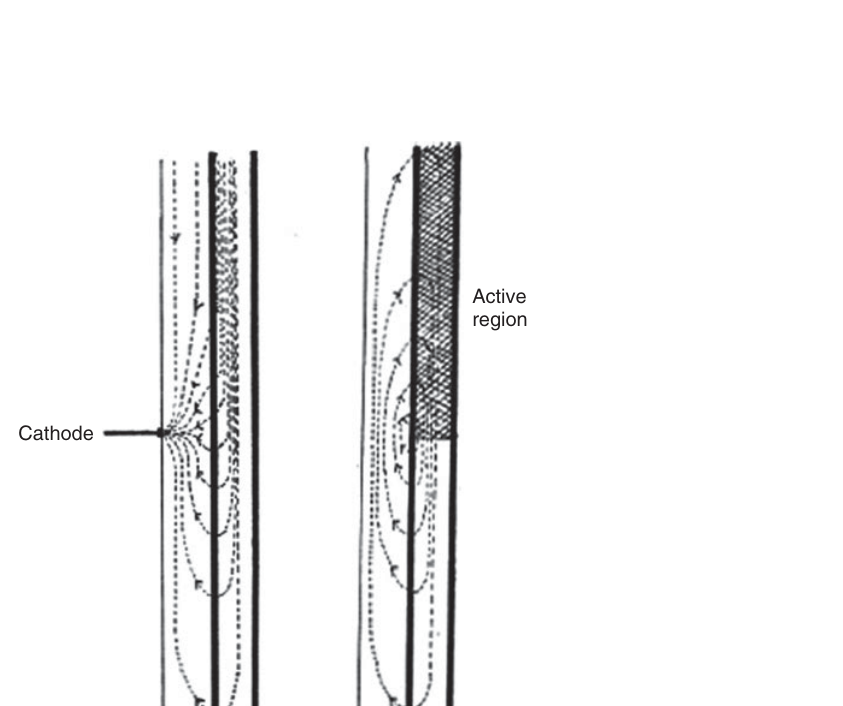
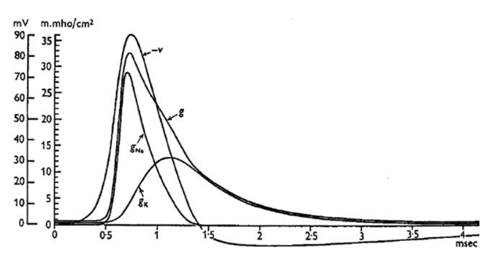
Chương 7 — Sinh lý học: Điện thế synap và điện thế thụ thể
Chương 7
Sinh lý học: Điện thế khớp thần kinh và điện thế thụ thể
Sau tính kích thích, đặc tính then chốt thứ hai của tế bào thần kinh là hoạt động diễn ra tại các khớp thần kinh (synapses) giữa các tế bào. Đây là đặc tính cốt yếu làm nền tảng cho hoạt động phối hợp của các quần thể tế bào thần kinh. Tương tự như điện thế hoạt động của các sợi thần kinh, các hoạt động tại khớp thần kinh được gọi là “điện thế khớp thần kinh” (synaptic potentials). Kỷ nguyên nghiên cứu điện thế khớp thần kinh được mở ra nhờ sự phát triển của các vi ống hút đầu mảnh có thể ghi lại các dòng điện và điện thế màng gần vị trí các khớp thần kinh. Một mô hình hàng đầu cho các cơ chế này là khớp thần kinh–cơ, nơi Bernard Katz và các đồng nghiệp chứng minh rằng điện thế hoạt động truyền tới trong dây thần kinh đã kích hoạt một điện thế tấm tận cùng (end-plate potential), được chứng minh là do tác động cộng gộp của nhiều đáp ứng thu nhỏ đối với các lượng tử chất dẫn truyền thần kinh (transmitter quanta), có lẽ tương ứng với sự giải phóng các túi từ tận cùng tiền khớp thần kinh. Mô hình hàng đầu khác là nơ-ron vận động tủy sống, được John Eccles và các cộng tác viên chứng minh là tạo ra các điện thế hậu khớp thần kinh kích thích và ức chế do sự giải phóng chất dẫn truyền tiền khớp thần kinh. Tính phổ quát của các cơ chế này đã được xác nhận ở các mẫu vật động vật không xương sống và ở các thụ thể cảm giác.
Khớp thần kinh như một khái niệm chức năng
Trong Chương 5, chúng ta đã thấy ý tưởng về các tương tác thần kinh diễn ra qua sự tiếp xúc đã nảy sinh như thế nào trong công trình của Ramón y Cajal và các đồng nghiệp vào những năm 1890, và thuật ngữ “khớp thần kinh” (synapse) đã được Sherrington đưa ra vào năm 1897 để chỉ vị trí tiếp xúc này.
Sherrington, vốn luôn là một nhà tư tưởng chuẩn xác, thực ra từng có phần phân vân không biết khớp thần kinh chủ yếu là một khái niệm giải phẫu hay sinh lý.
Ban đầu, ông dường như nghiêng về khái niệm giải phẫu. Nhưng đến khi xuất bản cuốn sách The Integrative Action of the Nervous System (1906, 16), ông đã tư duy chủ yếu theo các thuật ngữ chức năng. Trong một bước ngoặt rõ rệt thoát khỏi những suy đoán truyền thống, ông đã phác thảo một số chức năng tiềm năng mà một “bề mặt phân tách” tại tận cùng thần kinh có thể có:
Một bề mặt như vậy có thể hạn chế sự khuếch tán, tích tụ áp suất thẩm thấu, giới hạn sự dịch chuyển của các ion, tích lũy điện tích, duy trì một lớp điện kép, thay đổi hình dạng và sức căng bề mặt khi có sự thay đổi hiệu điện thế . . . hoặc đóng vai trò như một màng ngăn giữa các dung dịch điện giải loãng có nồng độ khác nhau hoặc các huyền phù keo có dấu điện tích khác nhau.
Đoạn văn này cho thấy Sherrington, dù làm việc ở cấp độ hệ thống, vẫn nắm bắt rất sát sao các nghiên cứu đương thời về đặc tính màng. Ông xem các tương tác khớp thần kinh có khả năng bao hàm nhiều đặc tính phức tạp vốn giữ vai trò then chốt để hiểu các cơ chế thần kinh làm nền tảng cho hành vi. Đáng chú ý là ông không đề cập đến “các chất tiếp nhận” (receptive substances) do các nhà dược lý học gợi ý vài năm trước đó. Ông cũng không nhắc đến bất kỳ cơ chế cảm ứng điện nào như Ramón y Cajal từng gợi ý. Nhưng ông có suy đoán về “các chất điện giải có nồng độ khác nhau”, có lẽ cho thấy ông đã biết đến lý thuyết Bernstein-Overton về điện thế màng (xem Chương 6).
Và mọi chuyện dừng lại ở đó suốt gần bốn thập kỷ. Đó không phải là vấn đề có thể tiếp cận ngay cả ở cấp độ cơ quan, như cách các nhà dược lý học có thể làm bằng việc thu thập các chất dẫn truyền thần kinh tiềm năng sinh ra khi kích thích dây thần kinh dẫn đến một cơ quan; bộ não quá phức tạp và dường như bất khả xâm nhập.
Bằng chứng điện sinh lý đầu tiên cho sự dẫn truyền qua khớp thần kinh
Vấn đề này cuối cùng đã được công phá khi các vi điện cực lần đầu tiên được đưa vào sử dụng vào cuối những năm 1930 (xem Chương 6), và các bản ghi có thể được thực hiện từ các mẫu vật dây thần kinh ngoại biên, khớp thần kinh–cơ và hạch thần kinh giao cảm. Nhiều nhóm trên khắp thế giới—Gopfert và Schaefer (1938) ở Đức, Feng (1941) ở Trung Quốc, và Eccles cùng các cộng tác viên (Eccles và O’Connor, 1939) ở Úc—đã báo cáo rằng xung động truyền tới tận cùng thần kinh trước tiên dẫn đến một “điện thế tấm tận cùng” cục bộ ở cơ tại vùng tấm tận cùng, sau đó kích hoạt điện thế hoạt động của cơ. Điện thế tấm tận cùng này là ví dụ đầu tiên về một đáp ứng khớp thần kinh và là bản ghi trực tiếp đầu tiên về tác động sinh lý của một khớp thần kinh. Những kết quả này cung cấp bằng chứng mạnh mẽ rằng, ít nhất là tại các khớp thần kinh ngoại biên này, sự dẫn truyền hóa học diễn ra khi acetylcholine (ACh) được giải phóng bởi tận cùng tiền khớp thần kinh và tác động lên tận cùng hậu khớp thần kinh để gây ra điện thế tấm tận cùng ở tế bào cơ và điện thế hậu khớp thần kinh ở tế bào hạch giao cảm. Ngay cả Eccles cũng phải đồng ý.
Như đã lưu ý ở Chương 4, điều này vẫn bỏ ngỏ câu hỏi liệu các khớp thần kinh trung ương có hoạt động theo cách tương tự hay không, và riêng Eccles vẫn bám víu vào ý tưởng rằng các khớp thần kinh trung ương có thể liên quan đến sự truyền dòng điện từ phía tiền khớp thần kinh sang phía hậu khớp thần kinh.
Tác động của các phép ghi nội bào
Bằng chứng về đặc điểm cốt yếu này, nhằm giải quyết dứt điểm tính phổ quát của cuộc tranh luận “súp đối đầu tia lửa” (soup vs. sparks), đòi hỏi phải phát triển được các phép ghi nội bào đáng tin cậy.
Các tế bào thần kinh trung ương rất nhỏ, thân tế bào của chúng có đường kính chỉ từ 5 đến tối đa 70 mm và sợi trục cũng như đuôi gai từ 0,1 đến 20 mm; vì vậy đầu ống hút phải cực nhỏ, từ 1 mm trở xuống. Hơn nữa, điện thế hoạt động diễn ra cực kỳ nhanh, chỉ kéo dài khoảng 1 mili giây, điều này đòi hỏi các thiết bị điện tử tinh vi, bao gồm các mạch lặp cực âm trở kháng cao, để ghi lại chính xác. Thiết bị này mãi đến sau chiến tranh mới được phát triển. Một trong những người đi đầu trong nỗ lực này là Jan Friedrich Toennies tại Viện Rockefeller ở New York, người mà như chúng ta đã thấy từng giúp ích rất nhiều cho Hodgkin trong công trình về điện thế hoạt động (xem Chương 6).
Như đã thảo luận ở Chương 6, các phép ghi nội bào đóng vai trò thiết yếu trong việc xác lập các cơ chế màng làm nền tảng cho điện thế hoạt động. Các bản ghi từ sợi trục mực ống có thể được thực hiện bằng cách luồn một sợi dây mảnh nhờ đường kính lớn bất thường của sợi trục. Các bản ghi sớm hơn từ dây thần kinh ngoại biên và hạch được thực hiện bằng những phương pháp sơ khai để kéo và nạp dung dịch dẫn điện vào vi ống hút cùng với thiết bị điện tử đời đầu để ghi điện thế. Tuy nhiên, để kỹ thuật này được sử dụng rộng rãi hơn, cần phải nghĩ ra một cách chuẩn hóa để chế tạo các ống hút trên lò vi rèn và cải tiến thiết bị điện tử cho việc ghi. Điều này lần đầu tiên được thực hiện bởi Gilbert Ling tại Chicago, làm việc cùng Ralph Gerard, một trong những nhân vật hàng đầu của sinh lý học thần kinh thời bấy giờ. Bài báo của Ling và Gerard (1947) đã chứng minh tính hiệu quả của phương pháp, sử dụng các bản ghi điện thế màng của cơ làm hệ thống mô hình (Phụ lục 7.1). Phải mất thêm vài năm nữa phương pháp này mới được hoàn thiện. Hodgkin và Nastuk (1950) đã thực hiện những bản ghi đầu tiên về điện thế hoạt động của cơ. Cuộc đua bắt đầu nổ ra nhằm phát triển phương pháp này để khảo sát tất cả các mẫu vật mà trước đó chỉ có thể ghi ngoại bào, ở cả hệ thần kinh ngoại biên và trung ương. Chỉ trong vòng vài năm, phương pháp này đã mở toang một thế giới mới của sinh lý học tế bào, bổ sung cho các cấu trúc tế bào được hé lộ bởi kính hiển vi điện tử. Chúng ta bắt đầu với khớp thần kinh mô hình đầu tiên: khớp thần kinh–cơ.
Bernard Katz và A. V. Hill
Cũng giống như điện thế hoạt động gắn liền với Hodgkin và Huxley, khớp thần kinh–cơ gắn liền với Bernard Katz. Sẽ rất hữu ích khi kể lại xuất thân của Katz, điều mà ông mô tả trong một cuốn hồi ký (Katz, 1996), như một ví dụ về một trong những sự kiện then chốt dẫn đến các bước đột phá vào giữa thế kỷ: sự bức hại các nhà khoa học Do Thái của Đức Quốc xã, cuộc trốn chạy của họ và sự đóng góp làm giàu nền khoa học ở các nền dân chủ phương Tây.
Bernard Katz sinh tại Leipzig năm 1911 nhưng lớn lên không có quốc tịch Đức vì vào thời điểm đó Leipzig nằm dưới quyền bá chủ của Nga. Sau Cách mạng Nga, ông vì thế trở thành người không quốc tịch. Ban đầu ông được đào tạo về cổ điển học, sau đó theo học y khoa và thấy mình bị thu hút bởi khoa học tự nhiên, nơi ông “nhận ra sức mạnh và chiều sâu của các ý tưởng khoa học cũng như việc chúng liên tục phải chịu sự phê phán và những thử nghiệm tiếp theo bằng thực nghiệm” (trang 361). Trong số các thầy của ông có Hans Held, nhà mô học tin vào sự liên tục của các tế bào thần kinh đối lập với Ramón y Cajal (xem Chương 5). Katz bị cuốn hút bởi sinh lý học thần kinh, đặc biệt là chủ đề như chúng ta đã thấy (Chương 6) được tranh luận sôi nổi thời bấy giờ về các định luật kích thích điện của dây thần kinh, say mê—ông viết sau này—“rằng người ta có thể thực hiện các phép đo chính xác và lặp lại được về tính kích thích điện trên các mô sống và biểu diễn kết quả bằng một phương trình toán học đơn giản” (trang 364). Ông tiến hành một số thí nghiệm đơn giản về tính thấm của cơ và phát hiện ra đáp ứng trở kháng của cơ khi bị kéo giãn, dẫn đến vài bài báo trên tạp chí Pflügers Archiv. Điều này có ý nghĩa vì hai lý do: Nó mang lại cho ông một giải thưởng nghiên cứu và các bài báo đã được A. V. Hill ở London chú ý. Hill là một trong những nhân vật sừng sỏ của khoa học và văn hóa Anh, một chuyên gia hàng đầu về sinh lý học thần kinh và cơ, một người chỉ trích mạnh mẽ sự trỗi dậy của Hitler và là nhân vật trung tâm trong nỗ lực nâng cao sự sẵn sàng của nước Anh cho cuộc chiến sắp tới trong những năm 1930.
Trong những năm sinh viên, Katz cùng những người Do Thái khác phải chịu đựng sự thù địch ngày càng gia tăng của Đức Quốc xã và đã nghiêm túc cân nhắc việc di cư sang Palestine. Tuy nhiên, sau cuộc phỏng vấn với Chaim Weizmann, nhà lãnh đạo phục quốc Do Thái nổi tiếng quen biết Hill, và một lá thư giới thiệu gửi tới Hill của giáo sư của ông là Martin Gildemeister, ông đã được mời sang gia nhập nhóm của Hill tại London. Không có quốc tịch, cách duy nhất để ông có được thị thực là thông qua “Hộ chiếu Nansen” (Nansenpass), “giấy chứng nhận nhân thân màu xanh lục được Cao ủy về Người tị nạn của Hội Quốc Liên cấp cho những người không quốc tịch” (trang 352). Thật là một sự trớ trêu thú vị khi Katz, nhà sinh lý học thần kinh, lại được cứu bởi Nansen, người bắt đầu sự nghiệp với tư cách một nhà giải phẫu học thần kinh, một trong những người sáng lập học thuyết nơ-ron, trước khi trở thành nhà thám hiểm Bắc Cực, nhà ngoại giao thế giới và nhà nhân đạo (được kể lại trong Shepherd, 1991).
Katz đến London vào tháng 2 năm 1935 và làm việc bốn năm với Hill về sự kích thích điện của dây thần kinh. Khi Hill được mời viết một bài tổng quan về chủ đề này cho tạp chí Ergebnisse der Physiologie vào năm 1938, ông đã chuyển nó cho Katz. Phản hồi lại bản thảo được gửi đi, biên tập viên trả lời rằng bài báo không thể được xuất bản nếu không có một đồng tác giả người Aryan. Một đồng nghiệp của Hill đã gợi ý Winston Churchill! Bài viết sau đó được xuất bản dưới dạng một chuyên khảo (xem trang 73). Xuất thân của Katz và sự việc này minh họa thái độ tàn bạo phi thường đối với người Do Thái nói chung và giới học thuật nói riêng trong những năm 1930 ở Đức, chỉ được xoa dịu phần nào nhờ những nỗ lực di cư hoặc trốn thoát thành công. Sự làm giàu cho thành tựu khoa học ở phương Tây là vô giá, như lịch sử khoa học thần kinh hiện đại đã minh họa rõ nét.
Trong thời gian ở phòng thí nghiệm của Hill, Katz trở thành bạn của những người dẫn đầu ngành sinh lý học thần kinh tại Anh, bao gồm Alan Hodgkin và Jack Eccles. Eccles chuyển đến Úc năm 1937, nơi như chúng ta đã thấy ông thực hiện những bản ghi đầu tiên về điện thế tấm tận cùng. Ông mời Katz sang tham gia cùng mình để duy trì nghiên cứu trong bối cảnh khá biệt lập đó. Stephen Kuffler cũng gia nhập cùng ông, và Katz đã trải qua hai năm với họ; bức ảnh ba người sải bước trên một con phố ở Sydney là một phần truyền thuyết của ngành (Hình 7.1). Sau đó, ông trải qua bốn năm trong quân ngũ, phần lớn thời gian ở New Guinea. Vào cuối chiến tranh, ông kết hôn và, như một món quà cưới từ Hill, nhận được một bức điện mời ông trở lại London làm trợ lý giám đốc nghiên cứu tại đơn vị lý sinh học của Hill. Sự gần gũi cá nhân của Hill với vợ chồng Katz thể hiện qua việc trong hai năm đầu tiên trở lại London, Hill đã cho họ ở nhờ ngay trong nhà riêng của mình. Có bao nhiêu người trong chúng ta có thể làm được điều đó ngay cả với những đồng nghiệp thân thiết nhất của mình?
Khi trở lại phòng thí nghiệm của Đại học College London, Katz phải tìm kiếm tận dụng thiết bị, như chúng ta đã thấy Hodgkin và những người khác từng làm, để khởi động lại nghiên cứu của mình trong một thành phố bị tàn phá nặng nề, nơi suốt nhiều năm vẫn phải chịu cảnh phân phối tem phiếu thực phẩm, thiếu than đá và tái thiết. Ông nối lại những mối quan tâm trước đây về sự kích thích thần kinh và các đặc tính của màng cơ, bao gồm cả việc quan sát hiện tượng chỉnh lưu bất thường (hướng vào trong). Nhiều mùa hè đã được ông dành để làm việc trên sợi trục mực ống cùng với Hodgkin, như đã đề cập trước đó. Bài báo cùng Hodgkin về dòng natri trong điện thế hoạt động là công trình đầu tiên của ông thu hút được sự chú ý rộng rãi hơn (Hodgkin và Katz, 1949). Sau đó, ông thực hiện nghiên cứu lớn đầu tiên của riêng mình, về thoi cơ của ếch, kết hợp các bản ghi sinh lý từ dây thần kinh trong dầu khoáng với một nghiên cứu kính hiển vi điện tử rất sớm cho thấy các tận cùng thần kinh mảnh và các bầu tận cùng trong thoi cơ (Katz, 1950). Tôi đã có nhiều dịp tham khảo bài báo này trong các công trình sau này về đáp ứng cảm giác của thoi cơ (Ottoson và Shepherd, 1971).
Điện thế tấm tận cùng và các lượng tử khớp thần kinh
Năm 1948, một người Mỹ tên là Paul Fatt đã gia nhập nhóm của Katz và cùng nhau họ khởi xướng một nghiên cứu nội bào về sự dẫn truyền qua khớp thần kinh tại khớp thần kinh–cơ của ếch. Fatt là một nhà tiên phong bị lãng quên của thời kỳ đó, một nhà thực nghiệm xuất sắc đã cộng tác trong việc xác lập hai bước tiến then chốt: điện thế tấm tận cùng cơ (EPP) cùng với Katz và bản chất của sự ức chế khớp thần kinh cùng với Eccles.
Công trình cùng Katz đã xác định EPP là đáp ứng hậu khớp thần kinh làm phát sinh điện thế hoạt động của cơ (Fatt và Katz, 1951; Phụ lục 7.2). Vai trò của ACh như một chất dẫn truyền thần kinh đã được xác lập qua công trình của họ, cũng như qua bằng chứng mô học của Couteaux ở Pháp (Chương 5). EPP trở thành mô hình hàng đầu để hiểu tất cả các khớp thần kinh hóa học và tiếp tục đóng một vai trò giá trị cho đến ngày nay, ngay cả khi các phương pháp hiện tại cho phép phân tích chi tiết các khớp thần kinh trung ương. Trong giai đoạn này, các mô hình khác cho hoạt động khớp thần kinh cũng được đưa ra, bao gồm khớp thần kinh khổng lồ của mực ống (Young, 1938; Bullock, 1948; Bullock và Hagiwara, 1957). Như chúng ta đã thấy, mô hình này cuối cùng được chứng minh là có cả sự dẫn truyền điện lẫn hóa học (xem Chương 5).
Khi ghi EPP ở độ khuếch đại cao, Fatt và Katz nhận thấy những điện thế đơn vị rất nhỏ (tất-cả-hoặc-không-có-gì) (Hình 7.2). Trong các bài nói chuyện sau này về những thí nghiệm này, Katz đùa rằng ban đầu họ đã kiểm tra hành lang bên ngoài xem liệu những tín hiệu đó có phải do tiếng bước chân nặng nề của A. V. khi ông sải bước dọc hành lang hay không. Một nghiên cứu kỹ lưỡng của del Castillo và Katz (1954a–c) đã mô tả đặc điểm của chúng như các điện thế tấm tận cùng thu nhỏ (MEPPs) và chứng minh rằng nhiều “lượng tử” (quanta) như vậy được giải phóng đồng thời bởi một điện thế hoạt động tại tận cùng để cộng gộp lại và tạo ra EPP hoàn chỉnh. Việc phân tích các lượng tử này đã vận dụng một cách tiếp cận toán học và thống kê tinh tế, gợi nhớ lại điều đã thu hút Katz đến với sinh lý học thần kinh ngay từ đầu khi còn là sinh viên, rằng “người ta có thể thực hiện các phép đo chính xác và lặp lại được ... trên các mô sống và biểu diễn kết quả bằng một phương trình toán học đơn giản” (Phụ lục 7.3).
Cách tiếp cận này dựa trên thống kê của các sự kiện ngẫu nhiên, chẳng hạn như sự phân rã phóng xạ, như được del Castillo và Katz (1954a, 263–264) giải thích:
Giả sử chúng ta có, tại mỗi khớp thần kinh–cơ, một quần thể gồm n đơn vị . . . có khả năng đáp ứng với một xung động thần kinh. Giả sử thêm rằng xác suất đáp ứng trung bình là p . . . khi đó số đơn vị trung bình đáp ứng với một xung động là m = np. . . . khi p rất nhỏ, số lượng đơn vị x tạo nên e.p.p. trong một loạt lớn các quan sát sẽ được phân bố theo cách đặc trưng của định luật Poisson (tần suất tương đối của chúng được cho bởi exp(–m) mx/x!).
Những phương trình này liên hệ biên độ của các lượng tử với số lượng sẵn có và xác suất giải phóng của chúng. Tần số của các điện thế thu nhỏ được kiểm soát bởi các đặc tính của màng tiền khớp thần kinh, trong khi biên độ của chúng được kiểm soát bởi các đặc tính của màng hậu khớp thần kinh. Công thức này trở nên mang tính nền tảng đối với việc hiểu điện thế khớp thần kinh cũng như các phương trình HH đối với việc hiểu điện thế hoạt động (Boyd và Martin, 1956). Các nghiên cứu bổ sung chứng minh rằng xác suất giải phóng được kiểm soát bởi điện thế màng (Liley, 1956), đúng như dự đoán, và bị ảnh hưởng bởi các loại thuốc (Nicholls và Quilliam, 1956). Các nghiên cứu sau đó của Katz và người đồng nghiệp lâu năm Ricardo Miledi (ví dụ 1963) đã xác lập vai trò thiết yếu của Ca2+ trong cơ chế giải phóng này.
Những lượng tử sinh lý này trước đó chưa từng được dự đoán. Người ta ngay lập tức nhận ra rằng chúng có thể được đối chiếu tương ứng với các túi khớp thần kinh (synaptic vesicles) được các nhà kính hiển vi điện tử làm việc độc lập xác định vào gần như cùng thời điểm (xem Chương 5). Một loạt nghiên cứu của Katz và những người khác đã cung cấp ngày càng nhiều bằng chứng cho thấy một túi chứa vài nghìn phân tử ACh, được giải phóng đồng thời khi túi vỡ ra lúc hòa nhập với màng sinh chất.
Vị trí hòa nhập túi dần được công nhận là một vùng hoạt động (active zone) (xem Chương 5), và sự giải phóng một túi khớp thần kinh đơn lẻ cùng tác động của chất dẫn truyền thần kinh của nó lên các thụ thể hậu khớp thần kinh đã được công nhận là đơn vị hoạt động cơ bản tại các khớp thần kinh hóa học, thiết yếu đối với tổ chức chức năng của não bộ chẳng kém gì liên kết hóa học đối với tổ chức và tương tác của các phân tử. Với sự ra đời của các kỹ thuật DNA tái tổ hợp, những cơ chế đó đã được soi xét không ngừng nghỉ, với nhiều nhân tố phân tử tham gia vào từng bước huy động và hòa nhập túi ở phía tiền khớp thần kinh và hoạt hóa thụ thể ở phía hậu khớp thần kinh. Mỗi bước trong số này đều là một vị trí tác động tiềm năng cho một rối loạn di truyền, một độc tố, hoặc một loại thuốc có thể cải thiện một rối loạn hệ thần kinh.
Khớp thần kinh trung ương: Eccles và nơ-ron vận động tủy sống
Cuộc cách mạng song hành trong việc tìm hiểu cơ chế của các khớp thần kinh ở hệ thần kinh trung ương được dẫn dắt bởi Eccles, người thầy, người bạn và người đồng nghiệp của Katz từ Úc. Eccles là một nhân vật có tầm ảnh hưởng áp đảo đến mức trong việc xác lập sinh lý học của nơ-ron vào những năm 1950—xuất bản hơn 500 bài báo và sách trong suốt cuộc đời và đào tạo hơn 200 học trò—nên việc mô tả quỹ đạo sự nghiệp của ông là rất xác đáng, đặc biệt vì ngày nay ký ức về cách tri thức của chúng ta về khớp thần kinh trung ương lần đầu tiên được khai phá từ mô hình tủy sống đang dần phai nhạt. Câu chuyện sau đây dựa trên Shepherd (2008); xem thêm số báo tri ân của Stuart và Pierce (2006).
Xuất thân. Eccles sinh tại Melbourne, New South Wales, Úc, vào năm 1903. Cha mẹ ông đều là giáo viên và theo Công giáo, một nền tảng gia đình đã định hình sự nghiệp tương lai của ông. Ông nhận đào tạo đại học và y khoa tại Đại học Melbourne, tốt nghiệp năm 1925 với bằng danh dự hạng nhất. Ông giành được Học bổng Rhodes để theo học tại Đại học Oxford, nơi ông gia nhập nhóm các nhà nghiên cứu trẻ xuất sắc bao gồm Derek Denny-Brown, John Farquhar Fulton, R. S. Creed và E. G. T. Liddell, thực hiện một loạt nghiên cứu dưới sự hướng dẫn của Charles Sherrington về các phản xạ tủy sống. Điều này dẫn đến cuốn sách mang tính bước ngoặt Reflex Activity in the Spinal Cord (1932) của Creed và cộng sự. Liddell sau này kể với tôi rằng họ đã gấp rút hoàn thành bản thảo để kịp hỗ trợ cho việc trao Giải Nobel cho Sherrington (cùng với Adrian) vào năm đó.
Trong thời gian này, Eccles hoàn thành bằng Cử nhân Khoa học (BS) tại Oxford năm 1927 và Tiến sĩ (DPhil) năm 1929, sau đó trở thành giảng viên hướng dẫn tại Cao đẳng Magdalen và trợ giảng thực hành đại học năm 1934. Sherrington nhận ông làm trợ lý nghiên cứu cho những thí nghiệm cuối cùng của mình về sự kích thích và ức chế các phản xạ tủy sống. Sau đó, Eccles phát triển các nghiên cứu riêng về sự dẫn truyền qua khớp thần kinh ở hạch giao cảm, trong đó ông diễn giải các phát hiện của mình theo hướng dẫn truyền điện giữa các dây thần kinh bị kích thích và các tế bào hậu khớp thần kinh. Điều này đưa ông vào thế đối đầu với các bằng chứng dược lý học mới nổi của H. H. Dale, Wilhelm Feldberg, Lindor Brown và những người khác về sự giải phóng và tác động của các chất dẫn truyền hóa học tại các điểm nối khớp thần kinh giữa tận cùng sợi tế bào thần kinh và các tuyến cũng như cơ đích của chúng.
Như đã mô tả ở Chương 4, điều này làm bùng lên các cuộc tranh luận “súp đối đầu tia lửa”, thường dẫn đến những trận khẩu chiến nảy lửa giữa những người tham gia từ hội nghị này sang hội nghị khác suốt những năm 1930. Như đã đề cập ở Chương 4, Bernard Katz, với tư cách là một người tị nạn từ Đức vào giữa những năm 1930, đã kinh ngạc trước cách Eccles trẻ tuổi và Dale lớn tuổi công kích nhau dữ dội đến thế trong các cuộc họp này, và càng kinh ngạc hơn khi thấy họ sau đó lại cùng nhau nhâm nhi rượu sherry và dùng bữa tối thân mật.
Sự cô lập. Sherrington nghỉ hưu năm 1935 (ở tuổi 75, sau khi được gia hạn đặc biệt). Mặc dù Eccles là một ứng cử viên hiển nhiên để kế nhiệm ông, sự bộc trực và hiếu chiến kiểu Úc của ông có phần quá sức đối với giới học thuật Oxford, và John Mellanby đã được bổ nhiệm. Năm 1937, Eccles rời đi để trở về Úc (một lộ trình sự nghiệp phổ biến từ đào tạo ở Anh trở về các thuộc địa), đứng đầu một đơn vị nghiên cứu y khoa nhỏ tại Viện Bệnh học Kanematsu ở Sydney. Đó gần như là sự quên lãng đối với ông, không có kết nối đại học, không tiếp cận được sinh viên và một ban quản trị thiếu thiện cảm. Việc chiến tranh bùng nổ ở châu Âu vào tháng 9 năm 1939 đã chuyển hướng phần lớn sự chú ý của ông sang nỗ lực chiến tranh. Nhờ vận may lớn, ông có sự tham gia của cả Katz và một người tị nạn khác là Stephen Kuffler, được ghi lại qua bức ảnh nổi tiếng ba người dạo bước trên một con phố ở Sydney (Hình 7.1). Như đã lưu ý, vào năm 1939 Eccles công bố các bản ghi điện sinh lý từ khớp thần kinh–cơ với bằng chứng về sự dẫn truyền hóa học, đồng thời với các báo cáo tương tự của Feng ở Trung Quốc và Schaefer ở Đức. Mặc dù đây là một bước đột phá lớn trong việc phân tích sinh lý học của khớp thần kinh, nó cũng bác bỏ chính giả thuyết điện của ông, ít nhất là đối với sự dẫn truyền qua khớp thần kinh ngoại biên.
Với triển vọng ảm đạm tại viện nghiên cứu, năm 1944 Eccles nhận lời làm giáo sư sinh lý học tại Đại học Otago ở Dunedin, New Zealand. Bất chấp vị trí hẻo lánh, nơi đây mang lại cơ hội trở lại môi trường học thuật cho nghiên cứu của ông, dù đi kèm khối lượng giảng dạy nặng nề. Ông kể lại rằng trong năm đầu tiên ông đã giảng toàn bộ các bài giảng sinh lý học, tổng cộng khoảng 500 giờ lên lớp. Ở mặt tích cực, điều đó rèn cho ông tính kỷ luật trong việc sử dụng thời gian và một cái nhìn bao quát về các nguyên lý sinh lý học.
Ông vẫn còn chán nản trước sự thất bại của các dự đoán lý thuyết của mình trong những năm 1930, cho đến khi gặp triết gia Karl Popper ở New Zealand. Popper lúc đó đang phát triển triết học khoa học của mình, với châm ngôn rằng khoa học không bao giờ có thể chứng minh một giả thuyết là đúng mà chỉ có thể bác bỏ (falsify) nó; do đó, mục tiêu của nhà khoa học là dựng lên những giả thuyết có thể kiểm chứng và bác bỏ được. Theo quan điểm này, Eccles thực chất đã thúc đẩy khoa học tiến lên bằng cách tự chứng minh mình sai. Khái niệm mới về cách làm khoa học này đã giải cứu Eccles khỏi cơn trầm cảm, và hai người trở thành bạn thân suốt đời. “Tôi đã được Popper thúc giục xây dựng các giả thuyết về sự kích thích và ức chế điện thành những mô hình mời gọi sự kiểm chứng thực nghiệm và bác bỏ” (Eccles, 1977, 6). Eccles ngầm thêm vào một hệ quả tất yếu cho điều này: Chỉ có Eccles mới được phép bác bỏ các giả thuyết của Eccles!
Bất chấp sự cô lập của Dunedin, sau chiến tranh ông đã tập hợp được một nhóm sinh viên và đồng nghiệp trẻ xuất sắc từ New Zealand và nước ngoài, bao gồm nhà điện sinh lý học Archibald McIntyre trong ban giảng viên và nhà lý sinh học người Mỹ Wilfrid Rall với tư cách nghiên cứu sinh tiến sĩ. Trong nhiều năm, ông theo đuổi giả thuyết về sự dẫn truyền điện tại các khớp thần kinh trong tủy sống. Điều này đòi hỏi những lập luận quanh co để giải thích các dòng điện có thể gây ra sự ức chế hậu khớp thần kinh. Ở một nơi xa xôi như vậy, một người kém động lực hơn hẳn đã có thể bị tụt lại trong kỷ nguyên hậu chiến đầy sôi động của nghiên cứu tế bào hiện đại và trôi dạt khỏi dòng chảy chính.
Tuy nhiên, vào khoảng năm 1950, McIntyre trở về từ Viện Rockefeller mang theo sơ đồ mạch của bộ khuếch đại tối tân mới do Jan Friedrich Toennies, kỹ sư xuất sắc người Đức (người mà trước chiến tranh, như chúng ta đã lưu ý ở Chương 6, đã hướng dẫn Alan Hodgkin về mạch lặp cực âm cho các nghiên cứu sợi trục mực ống của ông), chế tạo. Dexter Easton (trao đổi cá nhân) mang đến tin rằng J. Walter Woodbury và Harry Patton ở Seattle đang bắt đầu thực hiện các phép ghi nội bào trong tủy sống. Easton kể với tôi rằng điều này đã kích thích Eccles dồn toàn bộ tâm trí vào mục tiêu này, với một cường độ mà nhóm ở Seattle không thể sánh kịp.
Cuộc chạy đua tìm kiếm điện thế khớp thần kinh trung ương. Đó là một khoảnh khắc đặc biệt đối với Eccles, “một cuộc khủng hoảng trong đời tôi” (trang 6). Bị thúc đẩy bởi nỗi sợ thua cuộc trước đối thủ, ông quyết tâm phải về đích đầu tiên. Ông cần những bàn tay phụ giúp để làm điều đó. Theo Rall (trao đổi cá nhân), Eccles đã nhờ John Coombs, một nhà vật lý, giúp đỡ về mặt điện tử để thực hiện công việc vi điện cực. Coombs thấy điều đó thú vị và quyết định tự mình làm, chế tạo bộ khuếch đại lặp cực âm cần thiết có trở kháng đầu vào cao để giảm điện dung đầu vào và trung hòa điện dung ống hút bằng hồi tiếp âm.
Laurence Brock vừa hoàn thành khóa học y khoa; anh rất khéo tay và đảm nhận việc kéo các vi ống hút. Việc này được thực hiện trên lò vi rèn, đòi hỏi (như tôi biết từ chính công việc của mình vài năm sau trên một thiết bị tương tự) sự tập trung cao độ để kéo các ống hút thành đầu nhọn mảnh và sự may mắn để nạp đầy dung dịch điện cực vào chúng. Rall trước đó đã bắt đầu làm việc với Eccles nhưng quyết định sẽ tự thực hiện dự án riêng dưới sự hướng dẫn của Archibald McIntyre cho luận án tiến sĩ của mình. McIntyre là một người ôn hòa đang ở giai đoạn đầu sự nghiệp. Lúc bấy giờ, Eccles vẫn đang sử dụng các bộ ngắt con lắc Lucas cơ điện cổ điển làm máy kích thích, ghi dữ liệu lên các tấm phim âm bản thủy tinh được tráng ngay trong quá trình làm việc. Khi nhận ra mình cần thiết bị tối tân của McIntyre, ông đơn giản là tiếp quản nó. Các thí nghiệm trong phòng thí nghiệm của McIntyre được tiến hành sau những cánh cửa đóng kín. Mọi nỗ lực đều dồn vào việc đánh bại người Mỹ. Có lần tôi hỏi McIntyre liệu ông có muốn viết một bản tường thuật ngắn về thời kỳ đó không, nhưng điều đó quá khó khăn để ông có thể đối mặt.
Eccles và các đồng nghiệp lao vào thực hiện các phép ghi nội bào từ các nơ-ron vận động trong tủy sống để đáp ứng với các cú sốc điện vào rễ bụng, nhằm kích hoạt các nơ-ron vận động theo chiều ngược (antidromically), và vào rễ lưng, nhằm kích hoạt chúng theo chiều thuận bình thường (orthodromically).
Các bản ghi ngay lập tức cho thấy việc kích thích các dây thần kinh cảm giác từ một cơ chủ vận đã tạo ra các điện thế hậu khớp thần kinh kích thích (EPSPs) gây khử cực ở một nơ-ron vận động. Tương tự như EPP vừa được Fatt và Katz chứng minh gần đây, hiện tượng này được giả thuyết là liên quan đến sự gia tăng độ dẫn điện không đặc hiệu đối với các ion Na và K, làm khử cực màng tiến về phía không.
Ngược lại, việc kích thích một cơ đối vận lại tạo ra một điện thế tăng phân cực ức chế mọi hoạt động của tế bào; do đó, nó được đặt tên là “điện thế hậu khớp thần kinh ức chế” (IPSP). Trong khi sự khử cực của một EPSP có thể được lý giải là do dòng điện chạy từ tận cùng tiền khớp thần kinh, điều này không thể giải thích được sự tăng phân cực của một IPSP. Lập luận này cùng các lập luận khác cuối cùng đã thuyết phục Eccles rằng giả thuyết điện về sự dẫn truyền qua khớp thần kinh đã chết.
. . . một lời giải thích bằng điện cho sự dẫn truyền ức chế dường như là vô cùng bất khả thi. Nó đòi hỏi phải đặt ra giả định về những đặc tính điện đặc biệt khác hẳn về chất so với những gì đã được hé lộ qua các khảo sát thấu đáo về màng bề mặt.
Do đó, có thể kết luận rằng hoạt động khớp thần kinh ức chế có lẽ được trung gian bởi một chất dẫn truyền đặc hiệu được giải phóng từ các cúc tận cùng khớp thần kinh ức chế, và gây ra một quá trình tăng phân cực chủ động ở màng bên dưới của nơ-ron vận động.
(Eccles 1953, 163)
Giả thuyết điện đã bị đánh sập một cách vẻ vang bởi chính kiến trúc sư theo chủ nghĩa Popper của nó!
Đối với cơ chế mới, ban đầu Eccles nghiêng về một bơm natri giúp tăng phân cực màng bằng cách đẩy các ion Na mang điện tích dương ra ngoài. Trùng hợp thay, Fatt và Katz, như thể các nghiên cứu về EPP của họ vẫn chưa đủ, vào thời điểm này cũng đang tiến hành một nghiên cứu về các sợi ức chế dẫn đến cơ cua. Nghiên cứu này tận dụng thực tế là, trong khi cơ động vật có xương sống chỉ có các đầu vào kích thích (thông qua khớp thần kinh–cơ), động vật không xương sống có thể có cả sợi kích thích và sợi ức chế. Nghiên cứu này (Fatt và Katz, 1952, 164) cung cấp bằng chứng cho thấy sự ức chế là do sự tăng phân cực gây ra bởi sự gia tăng độ dẫn điện đối với K (tương tự như sự tăng phân cực do K sau điện thế hoạt động). Ngoài ra, các thí nghiệm của Burgen và Terroux (1952) gợi ý rằng sự ức chế mà ACh tạo ra ở cơ tim (mẫu vật kinh điển của Loewi, xem Chương 4) rất có thể là do sự gia tăng độ dẫn điện K+. Các thí nghiệm tiếp theo chứng minh rõ ràng rằng cơ chế này có khả năng cao hơn, và cuối cùng người ta chứng minh được rằng nó cũng liên quan đến sự gia tăng độ dẫn điện Cl–.
Các kết quả ban đầu của Eccles được công bố trong một loạt bài báo trên tạp chí Journal of Physiology bắt đầu từ năm 1951 (Brock và cộng sự, 1952) (Hình 7.3, Phụ lục 7.4).
Trong năm đó, Eccles nhận lời mời trở về Úc, làm giáo sư sinh lý học tại Đại học Quốc gia Úc mới thành lập ở Canberra. Phải mất 15 tháng để các phòng thí nghiệm mới sẵn sàng, một khoảng thời gian gián đoạn có thể gây chí tử cho sự nghiệp khoa học của một người bình thường ở thời điểm then chốt đó. Tuy nhiên, như thường lệ, Eccles đã tận dụng tối đa khoảng thời gian này. Ông dành năm tháng đi công tác vào đầu năm 1952, đầu tiên đến hội nghị chuyên đề Cold Spring Harbor về nơ-ron, nơi ông tìm hiểu về mô hình điện thế hoạt động Hodgkin-Huxley và công trình về khớp thần kinh–cơ của Katz, sau đó trở lại Anh để tổng kết các kết quả mới trong Chuỗi bài giảng Waynflete, được trình bày tại Cao đẳng Magdalen ở Oxford năm 1952 và xuất bản trong cuốn The Neurophysiological Basis of Mind: The Principles of Neurophysiology năm 1953.
Theo nhiều cách, công trình và cuốn sách này đã khai sinh nền sinh lý học tế bào hiện đại của hệ thần kinh trung ương. Nó xác lập các chức năng cơ bản của các khớp thần kinh hóa học kích thích và ức chế, ngay trước khi chúng lần đầu tiên được quan sát về mặt hình thái học dưới kính hiển vi điện tử. Hơn nữa, chúng được phát triển vững chắc trong bối cảnh các khái niệm hiện đại mới nổi về đặc tính màng tế bào, nhờ sự tiếp thu nhanh chóng của ông đối với công trình của Hodgkin và Huxley trong việc phát triển mô hình điện thế hoạt động ở sợi trục mực ống và của Katz và Fatt trong mô hình khớp thần kinh–cơ. Nó ngay lập tức vạch ra tương lai của khoa học thần kinh tế bào và mạch thần kinh, vào thời điểm mà sinh lý học thần kinh thống trị các nghiên cứu về hệ thần kinh, trước khi có sự ra đời của các phương pháp sinh hóa và dược lý học mà ngày nay chúng ta coi là hiển nhiên. Đối với một sinh viên y khoa trẻ tuổi vào những năm 1950 quyết tâm trở thành nhà sinh lý học thần kinh, cuốn sách đó, nếu không phải là bia đá của Moses, thì cũng là thứ gần giống như vậy.
Bầu không khí đột nhiên trở nên quang đãng; sự dẫn truyền hóa học là cách các nơ-ron giao tiếp thông qua các khớp thần kinh, điều này nhận được sự ủng hộ mạnh mẽ từ những phát hiện của kính hiển vi điện tử về cấu trúc tinh vi của khớp thần kinh hóa học (xem Chương 5). Chỉ trong vài năm, các khớp thần kinh điện cũng được Furshpan và Potter mô tả và cơ sở của chúng tại các khe nối (gap junctions) được chứng minh (Chương 5), mang lại cho chúng ta hiểu biết hiện nay về cả sự dẫn truyền hóa học và dẫn truyền điện trong hệ thần kinh trung ương.
Khi các phòng thí nghiệm mới hoàn thành, Eccles, cùng với số lượng sinh viên ngày càng đông từ khắp nơi trên thế giới và ngày càng nhiều phòng thí nghiệm khác tham gia cuộc săn tìm, đã lao vào các nghiên cứu về tổ chức khớp thần kinh của nơ-ron và việc xác định các con đường khớp thần kinh đầu tiên trong hệ thần kinh trung ương. Những nghiên cứu này sẽ được đề cập tương ứng trong Chương 8 và Chương 9, cùng với sự đánh giá về sự nghiệp và tầm ảnh hưởng của Eccles.
Mở rộng mô hình hoạt động khớp thần kinh
Phương pháp nội bào nhanh chóng được các phòng thí nghiệm khác tiếp nhận, vừa để kiểm chứng chính mô hình nơ-ron vận động vừa để mở rộng nó sang các loại tế bào khác. Những đối tượng này bao gồm nơ-ron vận động ở các loài khác (Woodbury và Patton, 1952; Araki và cộng sự, 1953; Araki và Otani, 1955; Frank và Fuortes, 1955, 1956); các tế bào của cơ quan phát điện ở cá (Albe-Fessard và Buser, 1954); và các nơ-ron tháp vỏ não, những bản ghi nội bào đầu tiên của các tế bào trong não phía trên tủy sống (Phillips, 1955, 1956a, 1956b; Albe-Fessard và Buser, 1955). Chúng ta sẽ đề cập đến các nghiên cứu trong não ở Chương 9.
Các hệ thống đơn giản ở động vật không xương sống
Một số nhà điện sinh lý học đã theo đuổi việc nghiên cứu các đặc tính khớp thần kinh ở động vật không xương sống. Có tầm quan trọng đặc biệt trong số đó là Ladislav Tauc (Hình 7.4).
Ladislav Tauc. Ông sinh ra tại Tiệp Khắc vào năm 1926. Năm 1945, ngay sau chiến tranh, ông bắt đầu theo học tại Đại học Masaryk, thực hiện nghiên cứu đầu tiên về các tín hiệu điện của tế bào thực vật. Sau đó, ông nhận được học bổng sang Paris học tập, nơi ông được Alfred Fessard, nhân vật hàng đầu trong sự phát triển của điện sinh lý học tại Pháp những năm 1950, dìu dắt tại Viện Marey. (Nhân tiện, đừng cố đi hành hương đến Viện Marey; nó đã bị san phẳng để nhường chỗ cho Roland Garros, địa điểm tổ chức giải quần vợt Pháp Mở rộng.) Sau khi theo đuổi thêm các nghiên cứu về hoạt động điện của nhiều tế bào khác nhau ở thực vật và mô thần kinh, ông quyết định tập trung vào hệ thần kinh của loài sên biển Aplysia (trong văn bản ghi là sên vườn Aplysia).
Người đầu tiên sử dụng Aplysia cho các nghiên cứu điện sinh lý là Angelique Arvanitaki ở Marseilles vào năm 1941. Theo đồng nghiệp của Tauc là Maurice Israel (2000, 47):
Việc đưa vào sử dụng một bộ não “đơn giản hóa” (hệ thần kinh của Aplysia) để nghiên cứu cơ sở tế bào và phân tử của các tương tác thần kinh có tổ chức, có lẽ là một trong những đóng góp thiết yếu nhất của Tauc cho khoa học thần kinh. Khi ông đưa điện sinh lý học hiện đại vào nghiên cứu hệ thần kinh của Aplysia, không ai hình dung được rằng bộ não đơn giản của một loài thân mềm lại có vai trò quyết định đến thế đối với việc tìm hiểu các hệ thần kinh phức tạp hơn. Ngay chiếc vi điện cực đầu tiên mà Tauc chọc vào một nơ-ron của Aplysia đã là bước đột phá khởi đầu cho các nghiên cứu hiện đại về đặc tính lý sinh của nơ-ron. Nhờ những đặc tính vượt trội của nó, mô hình này đã được hàng trăm nhà nghiên cứu sinh học thần kinh trên khắp thế giới sử dụng. Thật vậy, mỗi nơ-ron giờ đây đã được định danh, và các kênh ion, chất dẫn truyền cũng như thụ thể của nó đã được mô tả đặc điểm.
Cũng giống như sợi trục khổng lồ của mực ống đã giúp Hodgkin và Huxley hé lộ bản chất của xung động thần kinh và nơ-ron vận động của tủy sống đã hé lộ bản chất của điện thế khớp thần kinh ở tế bào thần kinh, các nơ-ron khổng lồ của Aplysia đã cho phép Tauc tiến thêm một bước nữa và nghiên cứu đặc tính màng ở các nơ-ron đã được định danh. Trong nhiều trường hợp, những thân tế bào lớn này có thể được nhận diện giống nhau qua từng cá thể; chúng có thể được đặt tên riêng! Bắt đầu từ năm 1954, ngay sau các báo cáo về điện thế hoạt động Hodgkin-Huxley (Chương 6) và điện thế khớp thần kinh của nơ-ron vận động tủy sống (xem ở trên), ông đã khởi xướng một loạt nghiên cứu, tập trung vào các tế bào đã được định danh trong hạch bụng. Những nghiên cứu này được tóm tắt trong Bảng 7.1.
Bảng 7.1 Các khảo sát ban đầu về điện sinh lý học của Aplysia do Ladislav Tauc thực hiện
Đáp ứng khớp thần kinh (1955) Các loại hoạt động điện cơ bản được gây ra (1955) và tự phát (1955) Điện thế hậu khớp thần kinh ức chế (1956) Đặc tính lý sinh (1956) Dao động dưới ngưỡng (1956) (cùng A. Fessard) Điện thế điện trương (1957) (cùng A. Fessard) Thêm về điện thế ức chế (1957) Đáp ứng ngược chiều dội lại (1957) Đáp ứng với các chất được tiêm vào (1958) Đáp ứng khớp thần kinh lặp lại (1958) (cùng A. Fessard) Tác động liên nơ-ron (1958) Tác động của sự tăng phân cực (1958) Bằng chứng về sự tồn tại của các nơ-ron trung gian (1959) Sự tăng phân cực kéo dài (1959)
(Xem mục tauc l, tại http://www.ncbi.nlm.nih.gov/pubmed/, để tra cứu các tài liệu tham khảo này).
Đó là một loạt nghiên cứu tiên phong phi thường. Tiếc thay, thế giới bên ngoài hầu như không biết đến vì mọi nghiên cứu đều được xuất bản bằng tiếng Pháp. Tuy nhiên, một vài người đã chú ý. Khi nước Pháp bắt đầu phục hồi sau chiến tranh, các nhà khoa học nước này đã tái thiết lập liên lạc với các đồng nghiệp bên ngoài. Vào cuối những năm 1950, Arvanitaki-Chalazonitis và Tauc đã đến thăm Hoa Kỳ và có các bài giảng về công trình của họ đối với điện sinh lý học của các nơ-ron khổng lồ ở Aplysia. Eric Kandel (2006) mô tả cách ông, khi sắp kết thúc thời gian đào tạo cùng Wade Marshall và Kay Frank tại Viện Y tế Quốc gia (NIH), đã tìm kiếm một mẫu vật cho phép ông theo đuổi mục tiêu của mình về
. . . một loài động vật có phản xạ đơn giản có thể được biến đổi thông qua học tập và được kiểm soát bởi một số lượng nhỏ các tế bào thần kinh lớn mà con đường từ đầu vào đến đầu ra của chúng có thể được xác định. Bằng cách đó, tôi có thể liên hệ những thay đổi trong phản xạ với những thay đổi trong các tế bào.
(trang 144)
Ông nhận ra những ưu thế của Aplysia cho mục đích này và sắp xếp để đến làm việc cùng Tauc để đào tạo sau thời gian nội trú tâm thần học. Trong khoảng thời gian chuyển tiếp này, chính Kay Frank đã dành thời gian làm việc với Tauc, đưa phương pháp kẹp điện thế vào nghiên cứu các đặc tính màng của nơ-ron Aplysia. Công bố đầu tiên của Kandel cùng Tauc có tựa đề “Cơ chế của sự tạo thuận dị khớp thần kinh kéo dài” (Mechanism of Prolonged Heterosynaptic Facilitation) (Kandel và Tauc, 1964) (tổng cộng, họ đã công bố năm nghiên cứu cùng nhau, ba nghiên cứu bằng tiếng Anh), điều đã mở đầu cho những nghiên cứu xuất sắc của Kandel về tính dẻo phụ thuộc hoạt động của các tác động khớp thần kinh có thể làm nền tảng cho học tập và trí nhớ. Phần còn lại, như người ta vẫn nói, đã trở thành lịch sử (xem cuốn hồi ký In Search of Memory của Kandel, 2006). Trong khi đó, Hersch (Coco) Gerschenfeld, một nhà điện sinh lý học thần kinh người Argentina, đã gia nhập nhóm của Tauc vào cuối những năm 1950 và cùng ông khởi xướng phân tích các chất dẫn truyền thần kinh, bắt đầu với ACh. Dù các nghiên cứu của họ kéo dài vượt ra ngoài trọng tâm chính của chúng ta là thập niên 1950, chúng ta cần lưu ý rằng sự hợp tác của họ có ý nghĩa vì hai lý do. Thứ nhất, nó đưa Aplysia vào dòng chảy chính của mối quan tâm đối với các câu hỏi then chốt về chất dẫn truyền thần kinh và tác động của chúng, dẫn đến chứng minh mang tính đột phá rằng một chất dẫn truyền duy nhất có thể được giải phóng bởi một nơ-ron đã định danh và tạo ra cả tác động kích thích lẫn ức chế lên một nơ-ron đã định danh khác. Thứ hai, các công bố của họ (xem Gerschenfeld và Tauc, 1961) được viết bằng tiếng Anh trên tạp chí Nature, đưa Aplysia đến với sự chú ý của thế giới bên ngoài nước Pháp.
Tầm ảnh hưởng của Tauc cũng rất quan trọng ngay trong nước Pháp: Phillippe Ascher và JacSue Kehoe gia nhập phòng thí nghiệm sau đó vào những năm 1960 và cùng với Gerschenfeld nhanh chóng trở thành những người dẫn đầu trong lĩnh vực điện sinh lý học hệ thần kinh ở Pháp, đặc biệt là trong việc bắc cầu nối với thế giới nói tiếng Anh.
Điện thế thụ thể của các thụ thể cảm giác
Cuộc tìm kiếm các tế bào lớn và dễ tiếp cận để phân tích sinh lý học đã dẫn J. S. Alexandrowicz (1953) đến với tế bào thụ thể căng của tôm hùm đất. Trong mẫu vật này, các đuôi gai của tế bào tận cùng bằng những nhánh đan xen vào bên trong các sợi cơ. Stephen Kuffler và một nghiên cứu sinh sau tiến sĩ đến từ Chile, Carlos Eyzaguirre, ngay lập tức tận dụng nó cho nghiên cứu sinh lý học. Các bản ghi của họ (Eyzaguirre và Kuffler, 1955a, 1955b) cho thấy sự kéo căng cơ tạo ra một điện thế khử cực lan truyền qua các đuôi gai đến thân tế bào để khởi phát điện thế hoạt động, truyền thông điệp tiếp đến hạch thần kinh của tôm hùm đất. Đây là minh chứng rõ ràng nhất về điện thế thụ thể của một tế bào thụ thể cảm giác đối với kích thích của nó.
Họ tiếp tục chứng minh rằng tế bào thụ thể căng cũng nhận sự ức chế khớp thần kinh từ các sợi thần kinh trung ương và đã có thể nghiên cứu chi tiết cách thức tương tác giữa các điện thế khử cực và tăng phân cực đối lập kiểm soát sự khởi phát điện thế hoạt động trong sợi trục. Cùng với công trình của phòng thí nghiệm Eccles, điều này đã cung cấp một mô hình tinh tế về cách các điện thế hậu khớp thần kinh được tích hợp bên trong tế bào thần kinh. Sự tích hợp này liên quan đến các đuôi gai, điều đòi hỏi phải thảo luận về cấp độ tổ chức tiếp theo này bên trong tế bào trong Chương 8.
Các phép ghi nội bào từ tế bào võng mạc đã được Gunnar Svaetichin thử nghiệm tại Stockholm vào năm 1954, nhưng những kết quả thành công phải chờ đến phép phân tích nội bào trên võng mạc kỳ giông bùn (mudpuppy) của Frank Werblin và John Dowling vào năm 1969 (Chương 9).
Các nghiên cứu khác về đáp ứng cảm giác
Ghi đơn vị đơn lẻ ngoại bào. Như đã đề cập ở Chương 6, việc phân tích các thụ thể cảm giác đơn lẻ bắt đầu vào năm 1926 với nghiên cứu của Edgar Adrian và học trò người Thụy Điển Yngve Zotterman. Họ đã bóc tách một dây thần kinh cảm giác ngoại biên của ếch xuống đến một sợi đơn lẻ và chứng minh bằng phép ghi ngoại bào rằng nó đáp ứng bằng các đợt phát xung pha (phasic) và trương lực (tonic) đối với một kích thích được áp dụng, với tần số tăng lên khi cường độ tăng lên. Phương pháp ghi đơn vị ngoại bào được Ragnar Granit sử dụng vào cuối những năm 1930 và được mở rộng sang mắt sam (Limulus) bởi Keffer Hartline và sang võng mạc động vật có xương sống bởi Kuffler và Barlow vào những năm 1950 (xem Chương 9).
Một số đặc tính đáp ứng cơ bản của các thụ thể cảm giác ở da đã được chứng minh bằng các bản ghi ngoại bào đơn vị đơn lẻ từ sợi trục của chúng trong những năm 1950. Ví dụ, các bản ghi từ tận cùng của tiểu thể Pacini cho thấy chúng thích nghi cực kỳ nhanh, chỉ đáp ứng bằng một xung động duy nhất đối với áp lực tác động khi lớp vỏ bao xung quanh được bóc bỏ (Loewenstein và Rathkamp, 1958).
Điện thế trường tổng hợp. Trái ngược với các bản ghi từ thụ thể đơn lẻ, đáp ứng của nhiều thụ thể có thể được ghi lại dưới dạng các điện thế ngoại bào tổng hợp do các dòng điện chảy bên ngoài các quần thể được hoạt hóa, tương tự như điện tâm đồ hoặc điện não đồ. Một điện thế trường tổng hợp, điện võng mạc đồ (ERG), đã được ghi lại từ võng mạc, bắt nguồn từ một chuỗi ba đáp ứng kế tiếp: đáp ứng với ánh sáng của các tế bào cảm quang, sự hoạt hóa khớp thần kinh của các tế bào lưỡng cực và sự hoạt hóa tiếp theo của các loại tế bào khác (Brown và Wiesel, 1961). ERG được sử dụng trong lâm sàng để chẩn đoán một số rối loạn võng mạc nhất định.
Một điện thế trường tổng hợp khác, điện khứu giác đồ (EOG), đã được ghi lại từ biểu mô khứu giác của ếch để đáp ứng với các kích thích mùi (Ottoson, 1955). Phương pháp này rất hữu ích như một công cụ theo dõi hiệu quả kích thích tổng thể của các hợp chất khác nhau được dùng làm kích thích mùi.
Những điện thế này có ưu điểm là dễ ghi bằng các điện cực ngoại bào lớn; chúng có nhược điểm là biên độ nhỏ, ghi nhận hoạt động kết hợp của các quần thể tế bào chồng chéo lên nhau và mang lại rất ít hiểu biết về các đặc tính cũng như cơ chế màng.
Các nghiên cứu tâm vật lý học. Một số nghiên cứu tâm vật lý học kinh điển quan trọng đã được thực hiện trong giai đoạn này. Ở người tiếp xúc với các kích thích ánh sáng trong bóng tối hoàn toàn, các tế bào cảm quang được phát hiện có khả năng đáp ứng với từng photon đơn lẻ (Hecht và cộng sự, 1941), dẫn đến ước tính rằng ngưỡng tri giác thị giác đòi hỏi sự cộng gộp của khoảng bảy đáp ứng thụ thể. Ở thính giác, màng nhĩ được chứng minh là đáp ứng với các rung động có biên độ bằng đường kính của một nguyên tử hydro đơn lẻ. Ở khứu giác, các tế bào khứu giác được ước tính có thể đáp ứng với từng phân tử đơn lẻ (Stuiver, 1960). Như vậy, các nghiên cứu này kết hợp lại cho thấy các thụ thể cảm giác có khả năng đáp ứng với các kích thích ở mức gần sát giới hạn lý thuyết của chúng (xem bài tổng quan của Block, 1993).
Màng đáy của ốc tai. Một phân tích nền tảng về đáp ứng cơ học của màng mái (tectorial membrane) đối với các kích thích âm thanh đã được Georg von Békésy thực hiện (tổng kết năm 1960). Mặc dù các thí nghiệm bị hạn chế do thực hiện trên mẫu vật tử thi, công trình này dù sao vẫn cung cấp một trong những nền móng cho nghiên cứu hiện đại về cơ sở cơ học của quá trình chuyển đổi âm thanh ở tai trong.
von Békésy làm việc trong tầng hầm của Nhà hát Sanders tại Harvard. Vào mùa hè năm 1956, khi tôi đang làm việc với Karl Pribram trong phòng thí nghiệm của Walter Rosenblith tại MIT, ông đã thu xếp một chuyến thăm mà trong đó von Békésy cho chúng tôi xem với niềm tự hào thầm lặng mô hình màng đáy cơ học dài của mình treo ngang qua căn phòng tầng hầm, nơi ông có thể gảy nhẹ đầu “cửa sổ bầu dục” và trình diễn cái hẳn phải là những sóng dừng lớn nhất thế giới.
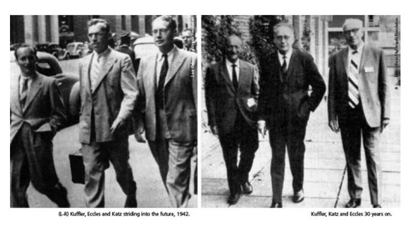

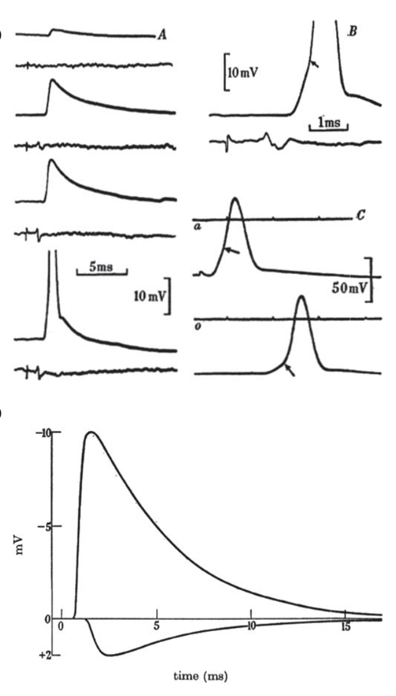

Chương 8 — Tổ chức chức năng của nơ-ron và nhánh cây
Chương 8
Tổ chức chức năng của Neuron và Sợi nhánh
‘‘Học thuyết neuron’’ ra đời như một nguyên lý tổ chức cho hệ thần kinh vào cuối thế kỷ XIX. Những tiến bộ trong thập niên 1950 đã cung cấp các kiểm chứng thỏa đáng đầu tiên về tính đúng đắn của nó, tạo nên, theo lời của Theodore Bullock, một ‘‘cuộc cách mạng thầm lặng nhưng sâu rộng’’ trong khái niệm chức năng của neuron, một cuộc cách mạng vẫn tiếp diễn cho đến ngày nay. Phần lớn cuộc cách mạng này liên quan đến ý nghĩa chức năng của các nhánh ngắn, tức các sợi nhánh, ở cấp độ tổ chức cao hơn tiếp theo của neuron phía trên synap. Các neuron được nhìn nhận là chứa đựng ‘‘sự phức tạp trong tính thống nhất’’. Một khái niệm mới về tổ chức chức năng của neuron động vật có xương sống đã xuất hiện: Các điện thế synap kích thích và ức chế kết hợp lại để lan truyền đến đoạn khởi đầu của sợi trục nhằm kích hoạt điện thế hoạt động, sau đó lan truyền ngược trở lại vào thân tế bào và các sợi nhánh. Wilfrid Rall đã kế thừa công trình của Hodgkin và Huxley để chứng minh sự thống trị của các sợi nhánh trong hoạt động tích hợp này. Những nghiên cứu đầu tiên về các đặc tính sinh lý của sợi nhánh và gai sợi nhánh đã được thực hiện. Khái niệm mở rộng về tổ chức chức năng của neuron đang được mở rộng mạnh mẽ bởi các công trình hiện đại. Tuy nhiên, việc đánh giá đầy đủ tầm quan trọng của các sợi nhánh trong hoạt động tích hợp của neuron vẫn tiếp tục là một trong những biên giới cuối cùng của khoa học thần kinh hiện đại.
Học thuyết tế bào được đưa ra cho thực vật bởi Matthias Schleiden vào năm 1838 và cho động vật bởi Theodor Schwann vào năm 1839. Một loạt các nghiên cứu kính hiển vi trong thập niên 1840 đã xác lập tế bào là đơn vị tổ chức cơ bản được bao bọc bởi màng của hầu hết các mô và cơ quan trong cơ thể, nhưng sự chấp nhận trong hệ thần kinh bị trì hoãn do khó khăn trong việc quan sát dưới kính hiển vi quang học xem các nhánh của các tua bào tương kết thúc như thế nào (xem tổng quan trong Shepherd, 1991).
Phương pháp nhuộm tẩm bạc do Camillo Golgi phát hiện năm 1873 cuối cùng đã cho phép quan sát từng tế bào riêng lẻ trong hệ thần kinh trung ương. Với phương pháp này, Golgi đã xác lập nhiều phát hiện đầu tiên. Ông thấy rằng các sợi nhánh phân nhánh kết thúc tự do, điều này bác bỏ các giả thuyết trước đó về mạng lưới liên quan đến sợi nhánh. Ông sử dụng các kiểu phân nhánh sợi nhánh khác nhau làm cơ sở để phân loại các loại tế bào thần kinh khác nhau. Ông mở rộng quan sát của Deiters về một sợi trục duy nhất xuất phát từ neuron vận động để chứng minh rằng điều này cũng đúng với các neuron trung ương trong não. Ông phân loại các tế bào dựa trên sợi trục của chúng thành tế bào sợi trục dài (chiếu ra khỏi một vùng đến các vùng khác) và tế bào sợi trục ngắn (về sau được công nhận là các neuron trung gian). Ông chỉ ra rằng sợi trục có các nhánh mở rộng, gọi là ‘‘nhánh bên sợi trục’’, phát hiện mà ông tự hào nhất. Trong tất cả các phát hiện này, Golgi là người tiên phong; tất cả những người đi sau đều xây dựng trên nền tảng của ông, một thực tế có lẽ chưa được công nhận đầy đủ vào thời điểm đó và chắc chắn là cả trong thời đại của chúng ta.
Vượt ra ngoài những phát hiện cơ bản này, vốn được Ramón y Cajal và các nhà mô học sau này xác nhận, Golgi đã có một quan sát sâu hơn và một diễn giải mang tính định mệnh. Trong các tiêu bản nhuộm của mình, ông thấy dường như các nhánh bên sợi trục mảnh nhất hòa vào nhau thành một mạng lưới liên tục. Diễn giải của ông là những nhánh bên phân nhánh rộng rãi này, và chỉ riêng các nhánh bên, tạo thành một mạng lưới (reticulum), thực hiện các chức năng truyền tín hiệu cơ bản của hệ thần kinh.
Kỹ thuật Golgi phần lớn bị bỏ qua trong hơn một thập kỷ cho đến khi được một nhà mô học vô danh ở Tây Ban Nha, Santiago Ramón y Cajal, phát hiện ra. Câu chuyện đã được kể nhiều lần, sống động nhất là trong chính hồi ký của Ramón y Cajal (Ramón y Cajal, 1937; Shepherd, 1991). Trong những nghiên cứu đầu tiên vào cuối thập niên 1880, Ramón y Cajal đã xác nhận các phát hiện của Golgi rằng các sợi nhánh kết thúc tự do, rằng các kiểu phân nhánh khác nhau của chúng là cơ sở của các loại tế bào thần kinh khác nhau, rằng sợi trục thường chỉ có một, và đặc trưng của nó là tách ra các nhánh bên theo những kiểu phân nhánh khác nhau. Tuy nhiên, ông cũng tìm thấy bằng chứng thuyết phục rằng các nhánh bên sợi trục cũng kết thúc tự do. Điều này hàm ý rằng các nhánh bên không tạo thành mạng lưới liên tục mà đúng hơn là sự giao tiếp giữa các tế bào thần kinh diễn ra thông qua tiếp xúc chứ không phải sự liên tục.
Những phát hiện và diễn giải của Ramón y Cajal được hầu hết các nhà mô học cổ điển khác áp dụng phương pháp Golgi ủng hộ. Riêng Ramón y Cajal đã làm việc cật lực, cho ra đời hàng loạt bài báo về các tế bào khác nhau khắp hệ thần kinh trong thập niên 1890. Sự đồng thuận nổi lên từ các công trình ban đầu đã được Wilhelm Waldeyer ở Đức tổng kết vào năm 1891 (xem bản dịch trong Shepherd, 1891, 183):
. . . tất cả những tác giả không chấp nhận sự hình thành mạng lưới của các sợi thần kinh bên trong cơ quan trung ương (Ramón y Cajal, Kölliker, His, Nansen, Lenhossék, Retzius) có thể dễ dàng hợp nhất các điểm I và II trên đây thành một quy luật cơ bản ngắn gọn chung có phạm vi rộng hơn. Nó sẽ phát biểu như sau:
Hệ thần kinh bao gồm vô số đơn vị thần kinh (neuron), độc lập về mặt giải phẫu và di truyền.
Điều này đã khai sinh ra ‘‘thuyết neuron’’, sớm được nâng tầm thành ‘‘học thuyết neuron’’. Như cách hiểu thông thường, nó khẳng định rằng mỗi tế bào thần kinh là một cá thể riêng biệt, được giới hạn bởi màng sinh chất giống như mọi tế bào khác trong cơ thể. Kết luận này phù hợp với cách diễn giải về mối quan hệ—bằng tiếp xúc chứ không phải liên tục—giữa các tế bào trong các mô và cơ quan khác khắp cơ thể. Chính vì lý do này mà học thuyết neuron được xem là sự mở rộng của học thuyết tế bào sang hệ thần kinh. Như chúng ta đã thấy, Sherrington đã đề xuất thuật ngữ ‘‘synap’’ cho các điểm tiếp xúc giữa các tế bào thần kinh (Chương 5).
Sự phân cực động của Neuron
Bên cạnh sự kiên định về tính cá thể của toàn bộ tế bào thần kinh và các tương tác của nó thông qua tiếp xúc, Ramón y Cajal (1911) còn có hai đóng góp khái niệm khác thiết yếu để hiểu ý nghĩa chức năng của neuron (tóm tắt trong Shepherd, 1991).
Đóng góp thứ nhất liên quan đến dòng thông tin đi qua tế bào thần kinh. Waldeyer đã để ngỏ câu hỏi này. Trong các công trình tiếp theo vào đầu thập niên 1890, Ramón y Cajal, cùng với Alfred van Gehuchten ở Bỉ, đã suy luận rằng có một hướng tổng thể của dòng hoạt động, từ các điểm tiếp xúc trên sợi nhánh và thân tế bào đi ra sợi trục và đến các tận cùng sợi trục (tóm tắt trong Shepherd, 1991). Ông gọi đây là ‘‘quy luật phân cực động’’. Điều này mang lại ý nghĩa chức năng cho tế bào thần kinh như một thực thể tích hợp, tiếp nhận các đầu vào từ các nguồn khác nhau và phân phối chúng đến các tế bào đích khác nhau (Hình 8.1).
Khái niệm thứ hai được xây dựng trên khái niệm thứ nhất. Bằng cách vận dụng trí tưởng tượng phi thường của mình vào việc diễn giải chức năng của các mối quan hệ giữa các tế bào được nhuộm, ông đã suy luận ra dòng thông tin không chỉ bên trong mỗi tế bào mà còn giữa các tế bào với nhau. Ông đã thiết kế các sơ đồ cho thấy những mối quan hệ này tạo thành các đường dẫn truyền trong một vùng như thế nào để thực hiện các chức năng đa neuron, tích hợp đầu vào từ các nguồn vùng khác nhau và phân phối chúng đến các vùng đích khác nhau. Điều này cho phép ông biểu diễn dòng hoạt động qua các tế bào của hành khứu, chẳng hạn, và so sánh nó với dòng hoạt động tương đương qua võng mạc. Cách tiếp cận này cung cấp bằng chứng thuyết phục rằng hệ thần kinh được cấu tạo từ các tế bào thần kinh liên kết với nhau tạo thành các mạch và đường dẫn truyền thực hiện các hoạt động chức năng của các vùng và hệ thống khác nhau.
Nhiều tác giả đã chứng thực tầm quan trọng của học thuyết neuron ban đầu và những khái niệm chức năng này đối với sự trỗi dậy của khoa học thần kinh hiện đại. Chẳng hạn, David Hubel đã nhận xét rằng cuốn giáo trình mô học hệ thần kinh của Ramón y Cajal (1911), đầy ắp bằng chứng về các tế bào thần kinh như những thực thể riêng biệt, ‘‘được coi là tác phẩm quan trọng nhất từng được xuất bản trong sinh học thần kinh’’ (Junquera, 1992, viii). Về mặt sinh lý học, Sherrington đã làm rõ tầm quan trọng trung tâm của việc mở rộng học thuyết tế bào sang hệ thần kinh. Trong tác phẩm vĩ đại của ông Hoạt động Tích hợp của Hệ Thần kinh (The Integrative Action of the Nervous System), xuất bản năm 1906 ngay sau cuốn Histologia bằng tiếng Tây Ban Nha của Ramón y Cajal, câu đầu tiên viết: ‘‘Không nơi nào trong sinh lý học mà học thuyết tế bào bộc lộ sự hiện diện của nó thường xuyên hơn trong chính khuôn khổ của lập luận như hiện nay trong nghiên cứu về các phản ứng thần kinh.’’
Với tập hợp các định đề được đơn giản hóa, học thuyết neuron do đó đã cung cấp nền tảng khái niệm cho sự trỗi dậy của khoa học thần kinh hiện đại trong việc tìm hiểu chức năng não bình thường và sự phát triển của các chuyên ngành thần kinh học lâm sàng trong việc tìm hiểu các bệnh lý thần kinh. Về mặt này, có thể nói nó đã cung cấp nguyên lý tổ chức cơ bản cho khoa học thần kinh tế bào hiện đại, đóng vai trò tương tự như nguyên tử đối với vật lý hiện đại, liên kết hóa học đối với hóa học, tế bào đối với sinh học tế bào, và gen đối với di truyền học cũng như sinh học phân tử.
Nghiên cứu hiện đại ban đầu xác nhận, sau đó thách thức Học thuyết Neuron cổ điển
Ấn phẩm cuối cùng của Ramón y Cajal, vào năm 1933, ngay trước khi ông qua đời, là một bài tổng quan toàn diện về các bằng chứng ủng hộ thuyết neuron chống lại thuyết mạng lưới. Chúng ta đã thấy rằng sự ra đời của các phương pháp sinh học tế bào hiện đại vào thập niên 1950, đặc biệt là kính hiển vi điện tử cho cấu trúc tinh vi của tế bào và vi điện cực ghi đo cho sinh lý học màng và tế bào, đã mang lại sự ủng hộ cho tính đúng đắn cơ bản của học thuyết cổ điển. Tuy nhiên, các synap điện đã đặt ra những câu hỏi về các loại tập hợp neuron được tạo ra bởi sự liên tục cho phép dòng điện và các phân tử nhỏ đi qua trong nhiều quần thể tế bào, những câu hỏi vẫn tiếp tục cho đến ngày nay.
Còn về khái niệm chức năng của neuron, ý tưởng cho rằng có một dòng hoạt động từ các sợi nhánh đến thân tế bào và đi ra sợi trục thì sao? Nếu chức năng của sợi trục là truyền xung thần kinh, thì chức năng của thân tế bào và các nhánh sợi nhánh phức tạp của nó là gì? Ramón y Cajal và các nhà mô học khác đã thiết lập học thuyết neuron không biết đến bất kỳ hoạt động nào khác của tế bào thần kinh ngoài xung thần kinh trong sợi trục, vì vậy họ cho rằng khi các sợi nhánh bị kích thích, chúng truyền xung qua các nhánh của mình về phía thân tế bào để đi ra sợi trục.
Tích hợp Synap và Khởi phát Điện thế Hoạt động
Việc phát hiện ra các điện thế synap đã buộc phải suy nghĩ lại về ý tưởng này bởi vì trong mô hình neuron vận động, với sự kích hoạt theo cấp độ của số lượng synap khác nhau trên màng thân-sợi nhánh, một sự chuyển đổi đã diễn ra giữa các điện thế synap được cộng gộp và đầu ra xung tất cả-hoặc-không. Sự chuyển đổi này diễn ra ở đâu bên trong neuron và như thế nào?
Câu hỏi này đã được giải quyết ở neuron vận động bởi Kay Frank và Michael Fuortes (Fuortes et al., 1957) (Phụ lục 8.1) tại Viện Y tế Quốc gia Hoa Kỳ (NIH). Trước tiên, họ khảo sát cách neuron vận động phản ứng với một điện thế hoạt động được tạo ra trong sợi trục và lan ngược (antidromic) vào thân tế bào. Họ phát hiện ra rằng gai lớn ghi được từ thân tế bào có một sự ngập ngừng ở pha đi lên, mà họ cho là do sự chậm trễ xảy ra trong khả năng khử cực của các dòng điện cục bộ của điện thế hoạt động khi chúng lan từ điện trở cao của sợi trục đường kính nhỏ sang điện trở thấp của diện tích rộng lớn của thân tế bào và tất cả các sợi nhánh xuất phát từ nó, một sự khác biệt về điện gọi là ‘‘sự bất tương hợp trở kháng’’ (impedance mismatch).
Eccles và phòng thí nghiệm của ông sớm tham gia vào công trình này, kế thừa minh chứng tiên phong của họ về điện thế sau synap kích thích và ức chế (EPSP và IPSP) (Chương 7). Điều bất ngờ là chuỗi gai tương tự này, từ sợi trục ngược về thân tế bào và sợi nhánh, cũng xảy ra khi tế bào được kích hoạt bởi kích thích synap ở các sợi nhánh. Khái niệm mới, như được Eccles tóm tắt trong chuyên khảo được đọc rộng rãi Sinh lý học của Neuron (The Physiology of the Neuron, 1957), là các EPSP và IPSP lan truyền qua màng thân-sợi nhánh thụ động để cộng gộp tại đoạn khởi đầu rất dễ bị kích thích nhằm khởi phát điện thế hoạt động, sau đó lan truyền xuống sợi trục và lan ngược trở lại vào thân tế bào rồi tiếp tục ngược vào các sợi nhánh. Do sự bất tương hợp về trở kháng điện (điện trở và điện dung kết hợp của màng) giữa đoạn khởi đầu nhỏ hơn và màng thân-sợi nhánh lớn hơn, gai ghi được từ thân tế bào cho thấy hai thành phần kế tiếp nhau giống như trong trường hợp lan ngược. Các thành phần gai này được gọi là ‘‘đoạn khởi đầu’’ (IS) theo sau bởi ‘‘thân-sợi nhánh’’ (IS-SD) (Eccles, 1957) (Hình 8.2) và được Fuortes và cộng sự (1957) gọi là ‘‘A’’ và ‘‘B’’.
Bằng chứng cho khái niệm mới này ở neuron vận động chỉ là gián tiếp; điều cần thiết là một tế bào cô lập nơi có thể ghi đo trực tiếp từ các phần khác nhau của neuron. Carlos Eyzaguirre, làm việc cùng Stephen Kuffler tại Woods Hole, đã đánh giá câu hỏi này ở thụ thể căng của tôm hùm đất (Eyzaguirre và Kuffler, 1955a, 1955b). Như chúng ta đã thấy (Chương 7), tế bào này đã được Alexandrowicz (1953) thu hút sự chú ý. Tế bào có thể dễ dàng quan sát dưới kính hiển vi. Nó được tổ chức với các đầu tận cùng sợi nhánh nhúng trong một sợi cơ sao cho khi cơ bị kéo căng, các đầu tận cùng bị khử cực, tạo ra cái gọi là ‘‘điện thế thụ thể’’. Điện thế này lan truyền qua các sợi nhánh vào thân tế bào để khởi phát một đầu ra điện thế hoạt động ở sợi trục. Eyzaguirre và Kuffler đã phân tích các đáp ứng của tế bào và chỉ ra cách lực căng được chuyển đổi thành điện thế thụ thể, từ đó tạo ra đầu ra xung mã hóa trung thực tốc độ tăng và mức độ kéo căng cơ (Phụ lục 8.2). Việc sử dụng một tế bào mô hình để chứng minh một nguyên lý sinh lý học theo cách tinh tế như vậy là dấu ấn riêng của Kuffler. Chúng ta sẽ gặp một ví dụ còn nổi tiếng hơn khi thảo luận về các trường tiếp nhận thị giác (Chương 9).
Điều này vẫn để lại câu hỏi chính xác nơi nào các điện thế hoạt động phát sinh từ điện thế thụ thể: ở các đầu tận cùng sợi nhánh, các sợi nhánh, thân tế bào, hay ở đâu? Charles Edwards và David Ottoson trong phòng thí nghiệm của Kuffler được giao dự án thăm dò bằng một điện cực ghi ngoại bào dọc theo tế bào để xác định nơi dòng điện đi vào xảy ra, điều sẽ báo hiệu nơi gai được khởi phát. Như Ottoson sau này kể lại với tôi, họ đã kỳ vọng nó sẽ nằm ở thân tế bào. Trước sự ngạc nhiên của họ và của Kuffler, vị trí đó hóa ra nằm cách thân tế bào vài trăm micron ra phía ngoài trên sợi trục, tương đương với đoạn khởi đầu của sợi trục (Edwards và Ottoson, 1958) (Hình 8.3). Do đó, sự khử cực của điện thế thụ thể lan truyền qua các sợi nhánh và thân tế bào rồi ra sợi trục để khởi phát điện thế hoạt động, điện thế này lan truyền tiếp xuống sợi trục nhưng cũng lan ngược trở lại vào thân tế bào và các sợi nhánh, tương tự như trình tự được chỉ ra bởi các thí nghiệm ở neuron vận động.
Mặc dù ít được biết đến hơn các nghiên cứu về neuron vận động, thụ thể căng là minh chứng tinh tế nhất cho một khái niệm mới về tổ chức tích hợp của neuron. Thay vì sự tiến triển đơn giản của các xung qua tế bào hướng về phía sợi trục, việc tiếp nhận và tích hợp các điện thế synap trong thân tế bào và các sợi nhánh có thể được xem là một bước tích hợp đầu tiên và tách biệt trước khi kích hoạt điện thế hoạt động ở đoạn khởi đầu của sợi trục. Có thể hình dung rằng rất nhiều hoạt động tích hợp có thể diễn ra dưới ngưỡng khởi phát đầu ra, có khả năng làm thay đổi khả năng đáp ứng của tế bào theo cách có thể dẫn đến các cơ chế cho học tập và trí nhớ. Ngoài ra, sự lan truyền ngược của điện thế hoạt động thông báo cho thân tế bào và các sợi nhánh biết liệu đã có đầu ra hay chưa, qua đó ảnh hưởng thêm đến khả năng đáp ứng trong tương lai.
Trình tự này đã trở thành khái niệm cổ điển về tổ chức tích hợp của neuron đối với việc khởi phát điện thế hoạt động ở một neuron, chẳng hạn như neuron vận động, với các sợi nhánh thụ động. Nó đã được xác nhận bởi các nghiên cứu trong thập niên 1990 trong đó các điện cực kép có thể được đặt trên cả thân tế bào và các sợi nhánh (Stuart và Sakmann, 1994).
Các đặc tính chủ động của Sợi nhánh
Những đặc tính này chỉ ra rằng quy luật phân cực động của neuron của Ramón y Cajal cần phải được sửa đổi. Cũng có bằng chứng ủng hộ điều đó. Phần lớn bằng chứng này không đến từ việc ghi đo nội bào từ một neuron đơn lẻ mà từ việc ghi đo ngoại bào. Trong giai đoạn này, người ta bắt đầu có thể phát một cú sốc điện đơn lẻ vào một phần của não và ghi lại các đáp ứng bằng một vi pipet ngoại bào. Những bản ghi này thường có hai dạng. Một là một gai nhỏ biểu thị điện thế hoạt động ở một tế bào đơn lẻ gần đó. Vì việc nhận dạng không chắc chắn, những bản ghi này thường được gọi là ‘‘ghi đo đơn vị đơn lẻ’’ (single-unit recordings). Dạng kia là chuỗi các sóng điện thế xung quanh một quần thể tế bào được kích hoạt do tổng các dòng điện chạy quanh chúng. Bằng chứng không mang tính quyết định như từ các bản ghi nội bào, nhưng các bản ghi ngoại bào dễ thu được hơn nhiều.
Một số nhóm đã nghiên cứu các đặc tính chủ động của sợi nhánh. Theo hướng tiếp cận thứ nhất, Paul Fatt đã tiến hành ghi đo các điện thế gai đơn lẻ xung quanh các neuron vận động và thu được bằng chứng về sự xâm nhập xung chủ động vào các sợi nhánh (Fatt, 1957a, 1957b). Theo hướng tiếp cận thứ hai, H.-T. Chang tại Yale cùng George Bishop và Margaret Clare tại St. Louis đã thu được bằng chứng ở các sợi nhánh vỏ não về ‘‘dẫn truyền suy giảm’’ (decremental conduction), tức là các quá trình chủ động yếu trong sợi nhánh bị suy yếu dần theo khoảng cách từ một vị trí kích thích điện cục bộ. Chúng ta sẽ quay lại các nghiên cứu của Chang ở phần sau của mục này.
Bằng chứng thuyết phục nhất được một nghiên cứu sinh, Per Andersen, làm việc tại Oslo, Na Uy, thu thập. Ông đã ghi lại các điện thế trường ngoại bào cộng gộp được tạo ra xung quanh các neuron được kích hoạt ở hồi hải mã.
Các bản ghi này cho thấy một sóng nhọn được cho là do các điện thế hoạt động khởi phát ở các sợi nhánh đỉnh xa của các tế bào tháp bởi các synap kích thích; sóng này lan truyền thuận chiều, qua các sợi nhánh về phía thân tế bào và ra sợi trục (Andersen, 1959) (Phụ lục 8.3). Nghiên cứu này là một trong những công trình đầu tiên đưa hồi hải mã thành một hệ thống mô hình để phân tích tổ chức chức năng của các vùng não. Sóng nhọn được kích hoạt qua synap, gọi là ‘‘gai quần thể’’ (population spike), đã trở thành một công cụ giá trị cho mục đích này, dẫn đến việc sử dụng hồi hải mã như một lát cắt mô để nghiên cứu mạch ba synap (Skrede và Westgaard, 1971) và trong nghiên cứu tiếp theo về tăng cường dài hạn (long-term potentiation) như một cơ chế ứng cử viên cho cơ sở synap của học tập và trí nhớ kiểu Hebb; xem Chương 12. Sự lan truyền thuận chiều trong các sợi nhánh cuối cùng đã được chứng minh rõ ràng bằng phương pháp điện cực kẹp màng kép ở các tế bào mũ (mitral cells) khứu giác (Chen et al., 1997).
Báo cáo đầu tiên về các đặc tính sợi nhánh chủ động sử dụng điện cực nội bào là của Eccles, Libet và Young (1958), những người đã ghi lại các gai nhỏ biểu thị ‘‘các điểm nóng’’ (hot spots) sợi nhánh ở các neuron vận động đang trải qua thoái hóa tiêu sắc tố sau khi cắt đứt sợi trục. Báo cáo đầu tiên ở các tế bào bình thường về ‘‘các tiền điện thế’’ (prepotentials) nhỏ biểu thị các ‘‘điểm nóng’’ chủ động tại các điểm phân nhánh sợi nhánh ở xa được suy luận từ các bản ghi nội bào từ thân tế bào của các tế bào tháp hồi hải mã trong một bài báo kinh điển của Alden Spencer và Eric Kandel vào năm 1961. Tất cả các nghiên cứu này đều được thực hiện trên động vật được gây mê.
Các nghiên cứu này cho thấy các sợi nhánh có khả năng tạo ra các đáp ứng chủ động giống xung đối với các đầu vào synap kích thích. Tuy nhiên, trong hầu hết các bản ghi ở những thập kỷ tiếp theo, các sợi nhánh dường như thiếu những đặc tính này và do đó được đánh giá là có màng thụ động, trái ngược với màng tạo điện thế hoạt động của sợi trục. Chỉ với sự ra đời của phương pháp điện cực kẹp màng (patch electrode) để ghi đo từ các neuron trung ương vào thập niên 1990, người ta mới bắt đầu chứng minh được rằng hầu hết các sợi nhánh đều biểu hiện các kênh ion phụ thuộc điện thế và khả năng tạo ra các đáp ứng chủ động của chúng phụ thuộc vào nhiều yếu tố, bao gồm hình học của cây phân nhánh sợi nhánh, mật độ các kênh phụ thuộc điện thế, và các loại kênh lân cận.
Sự thống trị của Sợi nhánh và Wilfrid Rall
Các nghiên cứu ban đầu về đặc tính sợi nhánh không thể tiến xa trong việc tìm hiểu mối quan hệ phức tạp giữa các đặc tính này nếu thiếu một nền tảng định lượng được xây dựng trên các đặc tính lý sinh của màng. Đây từng là cách tiếp cận của Hodgkin và Huxley khi xây dựng mô hình định lượng của họ về điện thế hoạt động trong sợi trục mực ống. Tuy nhiên, các kiểu phân nhánh phức tạp của cây sợi nhánh đã đặt ra một trở ngại nan giải cho việc mở rộng cách tiếp cận này sang sợi nhánh.
Wilfrid Rall. Giải pháp cho vấn đề này được đưa ra bởi Wilfrid Rall (Hình 8.4), một người Mỹ, sinh năm 1922, được đào tạo như một nhà vật lý tại Yale trong Thế chiến II
và khi tốt nghiệp đã chuyển đến Đại học Chicago để tham gia Dự án Manhattan, nơi chế tạo quả bom nguyên tử đầu tiên. Trong thời gian này ông gặp K. C. Cole, người đã phát hiện ra điện thế hoạt động trong sợi trục mực ống (Chương 6). Cole đang thiết lập chương trình sau đại học đầu tiên về lý sinh học, và Rall đã gia nhập với tư cách là một trong những sinh viên đầu tiên. Sau chiến tranh, Cole chuẩn bị trở lại Woods Hole để tiếp tục các thí nghiệm trên sợi trục mực ống (xem Chương 6) và mời Rall tham gia cùng mình.
Chicago từng là một trung tâm hàng đầu trong việc ứng dụng toán học vào sinh học, thông qua một trong những người tiên phong trong nỗ lực này, Nicholas Rashevsky. Điển hình cho cách tiếp cận này là các phương trình mô tả sự kích thích điện của thần kinh, nhưng như chúng ta đã thấy (Chương 6), chúng mang lại rất ít hiểu biết sâu sắc về bản thân các cơ chế sinh học. Ngành lý sinh học mới có mục tiêu hiểu cơ sở vật lý của chức năng sinh học nhưng quyết tâm rằng nó phải dựa trên sự kết hợp chặt chẽ hơn giữa thực nghiệm và lý thuyết. Vì vậy, tại Woods Hole, Rall đã học cách phẫu tích sợi trục mực ống và tham gia vào các thí nghiệm về điện thế hoạt động, cũng như hỗ trợ phát triển các phương pháp điện tử bao gồm phương pháp kẹp điện thế mới và phân tích các đáp ứng điện.
Sau khi hoàn thành các yêu cầu cho bằng thạc sĩ, Rall quyết định làm luận án tiến sĩ với Eccles ở New Zealand, được truyền cảm hứng từ lý thuyết điện về ức chế synap của Eccles (Rall, 2006). Ông đến đó vào năm 1949 và nhanh chóng tham gia vào một nghiên cứu chuyên sâu về các đáp ứng đồng bộ của một nhóm neuron vận động đối với sự kích hoạt đồng bộ các sợi cảm giác đi tới chúng. Điều này đòi hỏi phải phẫu tích cẩn thận các rễ tủy sống của mèo và những buổi ghi đo kéo dài các mối quan hệ đầu vào–đầu ra. Trong thời gian này, tin tức về sự ra đời của kỹ thuật ghi đo nội bào được đưa đến Dunedin, và Eccles lao vào các thí nghiệm dẫn đến bước đột phá của ông vào năm 1951–52, được mô tả ở Chương 7.
Tuy nhiên, Rall vẫn tiếp tục dự án độc lập của mình dưới sự hướng dẫn của Archibald McIntyre. Điều này dẫn đến một mô hình về các mối quan hệ đầu vào–đầu ra của một nhóm neuron vận động, giả định rằng hoặc nhiều synap được phân bố đều trên bề mặt các neuron vận động hoặc một số lượng nhỏ tập trung ở một vùng thuận lợi. Dù kết quả này phần nào chưa xác định rõ, nó đã khiến ông bắt đầu suy nghĩ về cách các điện thế synap có thể lan truyền trong một tế bào và dẫn ông đến nhận thức sâu sắc rằng trong một thân tế bào, điện thế sẽ lan truyền trên bề mặt của nó gần như tức thời. Ngược lại, có thể thấy rằng điện thế sẽ lan truyền chậm hơn và suy giảm dần qua cây sợi nhánh.
Sau một năm nghỉ phép nghiên cứu mà ông dành tại các phòng thí nghiệm của Katz ở London và Cuy Hunt ở Rockefeller, ông gia nhập nhóm lý sinh học dưới quyền Cole tại Trung tâm Nghiên cứu Y học Hải quân vào năm 1956. Tuy nhiên, sĩ quan điều hành mới tuyên bố rõ ràng rằng ‘‘Nghiên cứu cơ bản thì được, miễn là đừng quá cơ bản.’’ Điều này khác với truyền thống mà Hải quân đã xây dựng trong chiến tranh về việc hỗ trợ nghiên cứu cơ bản, và là truyền thống mà sau này họ sẽ quay trở lại; nhưng thế là đủ để kích thích một cuộc di cư ngay lập tức của cả nhóm. Rall chuyển qua bên kia Đại lộ Wisconsin đến Viện Y tế Quốc gia (NIH), nơi ông dành phần còn lại của sự nghiệp tại Nhánh Nghiên cứu Toán học, do Dewitt Stetten lập ra trong
Viện Quốc gia về Viêm khớp và Các bệnh Chuyển hóa để tiếp nhận các nhà lý thuyết nhập cư.
Năm 1957, Eccles và một số người khác đã công bố các bản ghi từ neuron vận động cho thấy các điện thế tạo ra bởi việc bơm dòng điện vào thân tế bào (tóm tắt trong Eccles, 1957). Các pha suy giảm của những đáp ứng này được diễn giải là tuân theo một hàm mũ đơn, như đúng với một mạch điện trở và tụ điện đơn giản đại diện cho màng thân tế bào. Từ phân tích trước đó của mình về các quá trình quá độ trong thân tế bào, Rall nhận ra rằng các quá trình quá độ được ghi lại chậm hơn dự kiến và hẳn phải do dòng điện chảy vào các sợi nhánh. Ông đã công bố một ghi chú ngắn trên tạp chí Science năm 1957 cho thấy các quá trình quá độ có thể được mô hình hóa tốt nhất bằng một thân tế bào gắn với một hình trụ dài đại diện cho cây sợi nhánh. Từ đó ra đời khái niệm ‘‘sự thống trị của sợi nhánh’’ trong hoạt động tích hợp của một neuron vận động. Vì hầu hết các neuron khác đều có cây sợi nhánh phức tạp, khái niệm này đã được khái quát hóa cho hầu hết các neuron.
Rall đã tiến hành một nghiên cứu chi tiết về các kiểu phân nhánh của sợi nhánh neuron vận động, cung cấp một cơ sở chặt chẽ để quy giản một cây phân nhánh thành một hình trụ duy nhất. Tuy nhiên, các bài báo đã bị từ chối đăng, với Eccles rõ ràng là một trong những người phản biện, với lập luận rằng quá trình quá độ suy giảm trong các bản ghi của Eccles là do một khía cạnh kỹ thuật của thiết bị đo (sau này được chứng minh là không liên quan; xem Jack và Redman, trong Segev et al., 1995). Sự từ chối này là một bước lùi không chỉ đối với Rall, ở giai đoạn quan trọng này trong sự nghiệp của ông, mà còn đối với lý sinh học về sợi nhánh, làm chậm sự chấp nhận nó hơn một thập kỷ. Nghiên cứu được công bố vào năm 1959 và 1960 trên tạp chí Experimental Neurology (Rall, 1959, 1960) (Hình 8.5). Công trình này còn đáng chú ý hơn ở chỗ chứng minh rằng nếu các nhánh liên tiếp trong một cây thỏa mãn tổng các đường kính lũy thừa 3/2, thì cây đó có thể được mô hình hóa như một ‘‘hình trụ tương đương’’. Điều này cung cấp một công cụ giá trị để tạo điều kiện thuận lợi cho việc phân tích điện sinh lý các đặc tính của sợi nhánh.
Những nghiên cứu này bao quát sự lan truyền ở trạng thái ổn định của dòng điện và điện thế qua cây sợi nhánh. Sự lan truyền quá độ, biến thiên theo thời gian quá phức tạp để biểu diễn bằng các phương trình giải tích, vì vậy Rall đã đưa vào các phương pháp số, bắt đầu bằng cách điều chỉnh một chương trình do một đồng nghiệp trong đơn vị là Mones Berman phát triển để mô tả sự lan truyền của các chất phóng xạ qua các khoang cơ thể. Mặc dù những kết quả này rơi vào giai đoạn tiếp theo trong lịch sử phát triển của khoa học thần kinh hiện đại, chúng tôi lưu ý rằng chúng được trình bày lần đầu tại một hội nghị ở Ojai, California, năm 1962 và xuất bản năm 1964 (in lại trong Segev et al., 1995). Bài báo tiên phong này lần đầu tiên chỉ ra một cách chặt chẽ cách dòng điện lan truyền trong cây sợi nhánh và cách các độ dẫn làm nền tảng cho điện thế synap tương tác với nhau theo kiểu phi tuyến (Phụ lục 8.4). Cách tiếp cận này được áp dụng cho neuron vận động trong một loạt bài báo năm 1967, cuối cùng đã khởi đầu cuộc cách mạng trong cả chức năng sợi nhánh lẫn khoa học thần kinh tính toán. Tuy nhiên, sự miễn cưỡng của nhiều nhà sinh lý học thần kinh, nhà giải phẫu học thần kinh và nhà khoa học thần kinh tính toán trong việc đưa các đặc tính của sợi nhánh vào việc tìm hiểu chức năng neuron và mạng lưới vẫn tiếp tục cho đến ngày nay (xem Chương 16).
Sự hồi sinh của Phương pháp nhuộm Golgi
Sau khi Ramón y Cajal qua đời năm 1934, có rất ít nghiên cứu về hình thái học neuron nói chung, hay hình thái học sợi nhánh nói riêng. Sự hồi sinh mối quan tâm đến hình thái cây sợi nhánh bắt đầu với các nghiên cứu lý sinh của Rall và các nghiên cứu giải phẫu của David Sholl, được tóm tắt trong chuyên khảo được đọc rộng rãi của ông Tổ chức của Vỏ Đại não (The Organization of the Cerebral Cortex, 1956). Tác phẩm này không chỉ tập trung trở lại vào các sợi nhánh và gai của chúng mà còn đưa ra các phương pháp thống kê để mô tả đặc trưng tính kết nối synap với cây sợi nhánh. Công trình của Sholl đã giúp kích thích các biến thể mới và nhanh hơn của phương pháp nhuộm Golgi, thu hút nhiều nhà nghiên cứu mới bước vào lĩnh vực hình thái học sợi nhánh.
Gai Sợi nhánh
Một số sợi nhánh, như ở neuron vận động, có bề mặt nhẵn; nhưng một số khác, như ở tế bào tháp trong vỏ đại não, được bao phủ bởi các mấu nhỏ gọi là ‘‘gai’’ (spines). Chúng đã được Ramón y Cajal và những người đương thời mô tả, nhưng có rất ít hiểu biết về chức năng của chúng. Các nghiên cứu sinh lý học đầu tiên dường như là của H.-T. Chang. Trong số tất cả các nhà khoa học trẻ đến Hoa Kỳ vì Thế chiến II, cuộc đào thoát của ông là một trong những cuộc đào thoát kịch tính nhất, như sau này ông đã kể lại (Chang, 1984).
Hsiang-Tung Chang (Trương Hương Đồng) sinh năm 1907 tại một ngôi làng nhỏ ở tỉnh Hà Bắc, miền bắc Trung Quốc. Hoàn cảnh của ông nghèo khó đến mức ông không thể bắt đầu học tiểu học cho đến năm 14 tuổi. Việc học hành đã đưa ông đến Đại học Quốc gia Bắc Kinh, nơi ông tốt nghiệp cử nhân tâm lý học năm 1933. Sau đó ông trở thành trợ lý cho Ging-Hsi Wang (Uông Kính Hi) tại Nam Kinh. Wang, viện trưởng Viện Tâm lý học, là một nhà nghiên cứu và người thầy xuất sắc, đã đào tạo Chang về nghiên cứu giải phẫu và điện sinh lý học, thiết kế thí nghiệm, và viết bài báo khoa học; bài báo đầu tiên của Chang là về phản xạ thính giác của nhím trên Tạp chí Sinh lý học Trung Quốc (Chinese Journal of Physiology). Vào thời điểm đó, Trung Quốc may mắn được đón tiếp các vị khách nước ngoài, chẳng hạn như Walter Cannon, nổi tiếng với epinephrine, những người là cầu nối sống còn với khoa học phương Tây và là nguồn cảm hứng cho các sinh viên trẻ khao khát sự nghiệp nghiên cứu. Trong số họ có một số người sau này đã tạo dấu ấn, bao gồm T. P. Feng (Phùng Đức Bồi), một trong những người đầu tiên ghi lại điện thế synap năm 1940 (Chương 7); S.-C. Shen (Thẩm Thục Chi), người được đào tạo với Joseph Needham tại Cambridge, Vương quốc Anh; và trong thế hệ trẻ hơn có Chang, người đã cộng tác với Gaddum về dược lý học thần kinh ở Vương quốc Anh, và con trai ông, Renji Chang, sau này là một nhà sinh lý học thần kinh hàng đầu ở Trung Quốc.
H.-T. Chang đang ở Nam Kinh khi quân Nhật tấn công năm 1937 và tiến hành cuộc thảm sát tàn bạo sau này được biết đến với tên gọi ‘‘Vụ thảm sát Nam Kinh’’. Chang đã kịp thoát ra trên chuyến tàu cuối cùng. Trong một thời gian, ông giúp đỡ các nỗ lực cứu trợ tuyệt vọng, bao gồm việc giải cứu thư viện và thiết bị của các viện hàn lâm Trung Quốc trước bước tiến của quân xâm lược, rồi tìm đường đến một vùng an toàn hơn của Trung Quốc, nơi ông được mời giảng dạy sinh lý học tại trường quân y gần Quý Dương. Khi ở đó, ông tìm thấy trong thư viện một bản cuốn Sinh lý học Hệ Thần kinh (Physiology of the Nervous System, 1938) của John Fulton. Fulton từng học dưới quyền Sherrington vào thập niên 1920; chính ông là người đã hỏi Sherrington về nguồn gốc của từ ‘‘synap’’ (Chương 5). Ông đã trở thành trưởng bộ môn sinh lý học năm 1930 tại Yale ở tuổi 30. Thông qua mối quan hệ với Sherrington và Harvey Cushing, sáng lập Tạp chí Sinh lý học Thần kinh (Journal of Neurophysiology) năm 1938 và viết cuốn Sinh lý học Hệ Thần kinh, cuốn giáo trình đầu tiên về hệ thần kinh, cũng vào năm 1938, Fulton là một trong những nhà sinh lý học thần kinh nổi tiếng nhất thế giới.
Được truyền cảm hứng từ cuốn sách, Chang nói với các đồng nghiệp rằng ông muốn làm việc với Fulton, và một người trong số họ đáp lại: ‘‘Nếu một người nghèo như anh mà đi được sang Mỹ, thì mặt trời sẽ mọc ở đằng tây.’’ Bị chạm tự ái, Chang quyết tâm làm bằng được điều đó và viết một bức thư đề địa chỉ đơn giản là ‘‘John Fulton, Đại học Yale, Hoa Kỳ’’, hỏi về khả năng được sang học tập tại phòng thí nghiệm của ông. Ba tháng sau, một bức điện tín gửi tới với ba chữ: ‘‘Yes letter follows’’ (Đồng ý, thư gửi theo sau). Một tháng sau bức thư đến, chấp nhận đơn xin làm nghiên cứu sinh thỉnh giảng về sinh lý học của ông, kèm chi phí sinh hoạt, nếu ông có thể đến được Hoa Kỳ.
Chang bán hết đồ đạc, xoay xở qua vô số thủ tục hành chính rườm rà, và cuối cùng sau 6 tháng cũng nhận được hộ chiếu, giấy xuất cảnh, và—với bức thư của Yale là giấy tờ duy nhất—thị thực vào Hoa Kỳ. Con đường duy nhất ra khỏi Trung Quốc thời chiến là bằng máy bay vận tải quân sự từ Trùng Khánh đến Calcutta, chuyến bay mà ông lên vào ngày đầu năm mới 1943. Hầu hết du khách đều bị mắc kẹt tại thành phố này, nhưng Chang đã tìm được những người bạn học cũ, những người đã giúp ông đặt chỗ đầu tiên trên một ‘‘tàu tự do’’ (một tàu khu trục cũ của Mỹ) sắp rời bến đi Hoa Kỳ, dù sau đó ông lại chuyển sang một con tàu khác khởi hành từ Bombay. Ngay sau đó, con tàu đầu tiên đã bị quân Nhật đánh chìm, khiến gần như toàn bộ người trên tàu thiệt mạng. Con tàu của Chang chở quá tải trầm trọng nhưng vẫn xoay xở đi qua phía nam Australia, qua New Zealand vào nam Thái Bình Dương, và cập bến San Pedro, California 30 ngày sau đó. Ông đi xuyên qua Hoa Kỳ và vào ngày 24 tháng 3, bước vào sảnh tròn tại số 333 phố Cedar ở New Haven, tự giới thiệu mình với Giáo sư Fulton với tư cách là trợ lý mới của ông tại Yale!
Có thể lưu ý rằng cử chỉ này của Fulton hoàn toàn nhất quán với bản tính hào phóng và sức hút cá nhân của ông. Nhờ những phẩm chất này, ông đã thu hút một loạt giảng viên, sinh viên, nghiên cứu sinh sau tiến sĩ và học giả thỉnh giảng xuất sắc. Đó là một môi trường phong phú cho bất kỳ ai được đào tạo tại đó, đặc biệt là một người bắt đầu với quá ít ỏi và đã đi một chặng đường xa đến vậy.
Chang đắm mình vào môi trường mới, lao vào hàng loạt dự án, cả ở Yale lẫn với các đồng nghiệp thuộc mạng lưới rộng khắp quanh Fulton. Trong vòng 2 năm, ông đã lấy bằng tiến sĩ với một nghiên cứu về các đường dẫn truyền trung ương trong tủy sống, một công trình đồ sộ dài 300 trang được chuyển thành tám bài báo tạp chí. Sau đó ông hợp tác trong các dự án với Clinton Woolsey tại Johns Hopkins và David Lloyd tại Rockefeller, rồi quay lại Yale làm việc về các mạch dội ngược giữa đồi thị và vỏ não (xem Chương 10).
Ông sớm bị mê hoặc bởi các sợi nhánh trong vỏ đại não. Trong bài đóng góp của mình tại hội nghị lớn ở Cold Spring Harbor năm 1952 về sinh lý học mới của neuron, ông đã giải thích cách tiếp cận tiên phong của mình (Chang, 1952, 160):
Nghiên cứu của chúng tôi là một nỗ lực nhằm xác lập sự tồn tại của các điện thế sợi nhánh trong vỏ não đáp ứng với kích thích điện yếu và phân biệt các điện thế sợi nhánh với các điện thế đi kèm hoạt động của các neuron nội vỏ não. Chúng tôi muốn tìm hiểu về các đặc tính của sợi nhánh so với đặc tính của sợi trục. . . . Kết quả của chúng tôi [cho thấy] rằng (i) các sợi nhánh bị kích thích bởi kích thích điện, (ii) các sợi nhánh có khả năng dẫn truyền xung, và (iii) điện thế sợi nhánh khác với điện thế sợi trục ở chỗ nó không phải là một đáp ứng tất cả-hoặc-không. Người ta gợi ý rằng cường độ kích thích tạo ra các đáp ứng theo cấp độ.
Ông phân biệt giữa các tác động synap lên thân tế bào, vốn trực tiếp khởi phát một đáp ứng của tế bào, và các tác động lên sợi nhánh, mà ông gợi ý là trung gian cho ‘‘hoạt động thần kinh cấp cao, như ý thức, tri giác và tư duy’’. Các kết quả được công bố lần đầu năm 1951 và từ đó đến năm 1955 đã dẫn đến tám ấn phẩm nữa về điện thế sợi nhánh, một năng suất phi thường xét việc ông mới bắt đầu hành trình rời Trung Quốc chưa lâu.
Một trong những phát hiện hấp dẫn nhất của Chang liên quan đến các gai sợi nhánh, mà ông gọi là ‘‘chồi nhỏ’’ (gemmules). Ông thảo luận về sự phân bố của các chồi nhỏ trên các sợi nhánh đỉnh của tế bào tháp vỏ não và đưa ra các nhận xét sau:
Về mặt chức năng, các chồi nhỏ trên sợi nhánh tạo thành một rào cản cơ học ngăn không cho các cúc tận cùng synap tiếp cận trực tiếp thân chính của sợi nhánh, và do đó chúng đóng vai trò là một yếu tố giới hạn đối với sự kích thích synap. Chúng cũng làm chậm và làm suy giảm quá trình kích thích synap do điện trở thuần cao của các cuống cực kỳ mảnh của chồi nhỏ.
(Chang, 1952, 200)
Bài báo năm 1952 này được đọc rộng rãi (Phụ lục 8.5) và đã giúp kích thích sự hồi sinh mối quan tâm đối với các sợi nhánh, bao gồm các nghiên cứu của Margaret Clare và George Bishop vào đầu thập niên 1950. Nhận xét của Chang về tầm quan trọng của cuống mảnh của gai trong việc làm suy giảm đáp ứng lan từ đầu gai sang sợi nhánh mẹ đặc biệt mang tính tiên tri. Đó là bước đầu tiên hướng tới các phân tích chức năng tiếp theo về đặc tính của gai và đóng góp của chúng vào hoạt động tích hợp của sợi nhánh trong các công trình về tế bào hạt hành khứu, tế bào Purkinje tiểu não, và cuối cùng là tế bào tháp vỏ não.
Sự nghiệp sau đó của Chang cho thấy một góc nhìn về chính trị quốc tế trong thập niên 1950. Năm 1955, ông tham dự một hội nghị ở Scandinavia và đột ngột biến mất, trở về quê hương Trung Quốc. Dù bị cắt đứt với phương Tây, ông trở thành nhân vật trung tâm trong việc phát triển sinh lý học thần kinh tại Trung Quốc, tập trung vào sinh lý học của cơn đau. Việc này đòi hỏi một sự cân bằng cẩn trọng giữa việc đáp ứng công nghệ đang phát triển nhanh chóng của khoa học phương Tây, đồng thời dung hòa cả truyền thống châm cứu dân gian và y học Trung Quốc, cũng như sống sót qua Cách mạng Văn hóa. Ông đã tiếp đón rất hiếu khách khi tôi đến thăm ông ở Thượng Hải năm 1993, tại Viện Nghiên cứu Não Thượng Hải do ông sáng lập tại đó. Với nụ cười tinh nghịch, ông bảo tôi nhìn xuống dưới chiếc tủ trong phòng thí nghiệm thứ hai tính từ cuối hành lang ở Yale nơi ông đã khắc tên mình trước khi rời đi năm 1955. Tiếc là các phòng thí nghiệm đó đã được cải tạo từ lâu, nhưng suy cho cùng, ký ức về tên ông được khắc dưới chiếc tủ tại Yale mới là điều quan trọng nhất.
Suy nghĩ lại về Học thuyết Neuron
Tổng hợp các nghiên cứu trong thập niên 1950 về các tác động synap lên neuron cùng với bằng chứng mới về đặc tính của sợi nhánh, người ta bắt đầu thấy rõ rằng tế bào thần kinh không phải là đơn vị chức năng đơn giản như hình dung trong học thuyết neuron cổ điển. Xét việc Ramón y Cajal đưa ra mọi diễn giải của mình chỉ dựa trên mô học của neuron hơn nửa thế kỷ trước khi bất kỳ thí nghiệm nào có thể được thực hiện trên tế bào trong não, không có gì ngạc nhiên khi bằng chứng sinh lý học mang lại những hiểu biết mới. Theodore Bullock (1959, Phụ lục 8.6), khi tổng quan các nghiên cứu điện sinh lý học trên cả neuron trung ương động vật không xương sống và có xương sống trong thập niên 1950, đã lập luận rằng những kết quả này cho thấy thay vì hoạt động như một phần tử đơn lẻ, tế bào thần kinh có các đặc tính khác nhau ở sợi nhánh và sợi trục sao cho chức năng của nó được đặc trưng bởi ‘‘sự phức tạp trong tính thống nhất’’.
Xung thần kinh không phải là dạng hoạt động duy nhất của tế bào thần kinh; sự kích thích một phần của neuron không nhất thiết liên quan đến toàn bộ neuron; nhiều sợi nhánh có thể hoàn toàn không lan truyền xung; và synap không phải là nơi duy nhất diễn ra sự chọn lọc, đánh giá, mệt mỏi và thay đổi bền vững. Nhiều dạng hoạt động theo cấp độ—ví dụ như điện thế tạo nhịp, điện thế synap và điện thế cục bộ—mỗi dạng giới hạn trong một vùng khu trú hoặc các vùng lặp lại của neuron, có thể tích hợp riêng rẽ hoặc tuần tự các sự kiện đi tới, cùng với lịch sử và môi trường xung quanh, để quyết định đầu ra tại vùng giới hạn nơi các gai được khởi phát.
Trong một cụm từ nổi tiếng, ông mô tả đây là một ‘‘cuộc cách mạng thầm lặng nhưng sâu rộng’’ trong khái niệm của chúng ta về neuron. Bằng chứng tiếp tục nối dài với các phát hiện về synap trục–trục (Dudel và Kuffler, 1960) và synap nhánh–nhánh (Rall et al., 1966). Điều này cuối cùng dẫn đến những đề xuất thay thế các khái niệm chức năng của học thuyết neuron, trong đó neuron là đơn vị chức năng duy nhất, bằng một khái niệm về các đơn vị chức năng ở các cấp độ tổ chức khác nhau. Chúng có thể xảy ra bên trong một neuron nhất định và bên trong các tương tác đa neuron tạo thành các mạch và đường dẫn truyền của hệ thần kinh (Shepherd, 1972, 1991). Chính khái niệm về các cấp độ phân cấp này đã được sử dụng để tổ chức tài liệu trong cuốn sách này. Nỗ lực kết hợp học thuyết neuron cổ điển vào các khái niệm mới về các đơn vị chức năng đa cấp độ, đa neuron vẫn tiếp tục cho đến hiện tại (Bullock et al., 2005; Byrne và Shepherd, 2008).
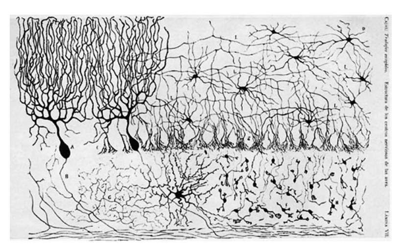
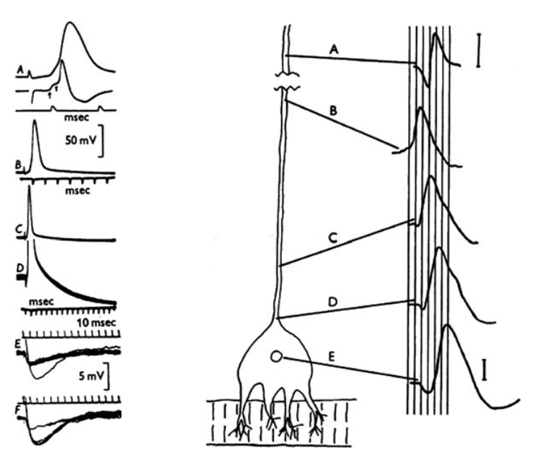
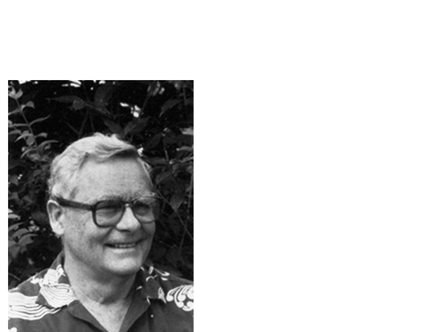
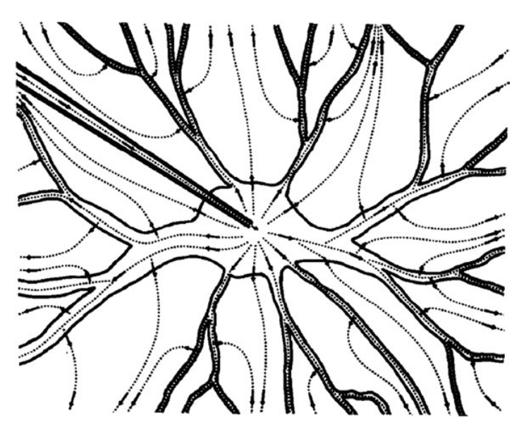
Chương 9 — Mạch thần kinh: Tủy sống, võng mạc, hệ động vật không xương sống
Chương 9
Mạch Thần kinh: Tủy sống, Võng mạc, Hệ thống Động vật Không xương sống
Được trang bị các vi điện cực và thiết bị điện tử mới để ghi đo đơn bào, các nhà điện sinh lý học bắt đầu tấn công vào bài toán làm thế nào các neuron được tổ chức thành các đường dẫn truyền và hệ thống. Trong tủy sống, Eccles dẫn đầu việc xác định cơ sở tế bào của các đường dẫn truyền phản xạ và kiểm soát cơ bắp, chìa khóa để hiểu cách chúng ta vận động bình thường cũng như các tác động của bệnh lý thần kinh. Việc phát hiện ra ức chế ‘‘Renshaw’’ đã cung cấp một mô hình về ức chế hồi tiếp và ức chế bên được kiểm chứng ở nhiều vùng khác nhau của hệ thần kinh. Mối quan tâm hàng đầu là quá trình xử lý thị giác ở võng mạc; các nghiên cứu của Keffer Hartline trên mắt cua móng ngựa Limulus và của Stephen Kuffler cùng Horace Barlow trên mắt mèo đã cung cấp các mô hình cho vai trò của ức chế bên trong sự phân biệt thị giác. Các nghiên cứu trên cả hệ thống động vật có xương sống và không xương sống bắt đầu mở rộng khái niệm phản xạ, đưa ra bằng chứng về các neuron ra lệnh mà sự kích hoạt của chúng tạo ra một đầu ra phối hợp từ một hệ thống neuron, trong khi các nghiên cứu khác xác định các neuron chịu trách nhiệm tạo nhịp trung ương cho hoạt động vận động phối hợp. Rõ ràng là sự tương tác giữa các mạch kích thích và ức chế là chìa khóa cho cách hệ thần kinh tạo ra và xử lý thông tin.
Trong thập niên 1950, vi điện cực không chỉ mở ra cánh cửa để hiểu các đặc tính của từng tế bào thần kinh riêng lẻ mà còn cả cách chúng kết nối với nhau, cách chúng ‘‘nói chuyện’’ với nhau. Do đó, lần đầu tiên các nhà sinh lý học có phương tiện để tiết lộ các cơ chế xử lý thông tin trong não ở cấp độ tế bào. Ở mức độ mà điều này có thể kết hợp với kiến thức về các đặc tính tế bào tham gia vào việc xử lý đầu vào và đầu ra—những đặc tính chúng ta đã đề cập trong các chương trước—người ta sẽ có được một mô tả hoàn chỉnh về cơ sở thần kinh của hành vi. Đó là một viễn cảnh đầy phấn khích. Nhưng làm thế nào để đạt được điều đó?
Các bản ghi nội bào cho mục đích này cực kỳ khó thu được vì các phương pháp kiềm chế sự rung động của não do nhịp đập của tim và sự phập phồng của hô hấp vẫn chưa thỏa đáng. Tủy sống tiếp tục là hệ thống mô hình tốt nhất để tìm hiểu các kết nối mạch, trong khi ở phía trên, trong não, những nỗ lực đầu tiên đang được thực hiện. Đối mặt với những khó khăn này, các nhà thực nghiệm bắt đầu sử dụng vi điện cực có thể ghi ngoại bào từ các neuron đơn lẻ. Vì hiếm khi có thể chắc chắn liệu mình đang ghi từ thân tế bào, sợi trục hay sợi nhánh, các nhà nghiên cứu cẩn trọng gọi đây là các bản ghi ‘‘đơn vị đơn lẻ’’ (và có lý do chính đáng—những sai lầm thường xuyên xảy ra khi nhầm lẫn bản ghi sợi trục với bản ghi thân tế bào). Các vi điện cực này có thể là chính các vi pipet dùng để ghi nội bào (chứa đầy dung dịch muối ngoại bào) hoặc làm bằng kim loại kéo thành đầu nhọn mảnh, được cách điện dọc theo thân cho đến tận đầu mũi.
Hai triết lý nghiên cứu đã xuất hiện. Một là nhắm tới việc tìm hiểu các kết nối để xây dựng nên các mạch chịu trách nhiệm cho các đáp ứng của tế bào. Cách tiếp cận này được minh họa qua công trình của Eccles ở tủy sống và đặt ra tiêu chuẩn cho việc mở rộng phương pháp tiếp cận đơn bào sang các phần khác của hệ thần kinh. Tuy nhiên, một cách tiếp cận khác là ghi lại và mô tả đặc trưng các đáp ứng của tế bào đối với các kích thích sinh lý, để cho thấy não bộ làm gì, và để dành việc xác định các mạch liên quan cho các công trình tương lai.
Cả hai triết lý đều nảy sinh trong thập niên 1950 và tạo ra những kết quả ấn tượng định hình mọi nghiên cứu tiếp theo về sinh lý học hệ thần kinh trung ương. Trong chương này, chúng ta xem xét tủy sống, võng mạc và các hệ thống động vật không xương sống, và trong chương tiếp theo là công trình về các hệ thống trong não.
Đường dẫn truyền Phản xạ Tủy sống và Ức chế Renshaw
Trong Thế chiến II, Thụy Điển tránh được việc trực tiếp tham chiến bằng cách duy trì tính trung lập, và do đó cấu trúc khoa học của nước này vẫn còn nguyên vẹn, trái ngược với các nước láng giềng ở Scandinavia và phần còn lại của lục địa châu Âu. Trong chiến tranh, Lars Leksell, một bác sĩ phẫu thuật thần kinh trẻ tại Bệnh viện Karolinska ở Stockholm, đã tiếp nhận một vấn đề nảy sinh từ các thí nghiệm của Eccles và Sherrington. Năm 1930, họ báo cáo rằng kích thích điện vào một quần thể lớn các sợi mảnh trong dây thần kinh vận động đi tới cơ thực chất không gây ra sự co cơ có thể phát hiện được. Chức năng của chúng là gì? Leksell đã chứng minh được rằng thực tế chúng là các sợi vận động đi tới các thoi cơ, vốn là các sợi cơ biến đổi nằm trong các bao hình thoi dài bên trong cơ bắp (Leksell, 1945). Người ta đã biết rằng các thoi cơ có các sợi trục cảm giác phân bố vào vùng trung tâm của chúng và chúng cảm nhận mức độ kéo căng của các sợi cơ bình thường, qua đó báo hiệu cho tủy sống biết trạng thái co ngắn hay duỗi dài của cơ bắp. Công trình này đã hoàn thiện dàn diễn viên tham gia vào các phản xạ cơ và mở ra cánh cửa cho việc phân tích sinh lý học mối quan hệ giữa cơ bắp và các thoi cơ. Leksell tiếp tục có một sự nghiệp lẫy lừng với tư cách là bác sĩ phẫu thuật thần kinh, phát triển các phương pháp tiếp cận định vị lập thể trong phẫu thuật não và phát minh ra phương pháp gọi là xạ phẫu (Chương 14).
Các nghiên cứu giải phẫu bắt đầu hé lộ bản chất phức tạp tuyệt đẹp của sự phân bố thần kinh cảm giác và vận động của thoi cơ (Barker, 1948). Stephen Kuffler, Carlton Hunt và các đồng nghiệp sau đó đã chỉ ra trong một nghiên cứu kinh điển rằng các cú sốc điện lặp đi lặp lại vào các sợi mảnh đã kích thích sự phát xung lặp đi lặp lại của các sợi trục cảm giác từ thoi cơ (Kuffler và Hunt, 1949; Kuffler et al., 1951). Như vậy, thoi cơ cực kỳ nhạy cảm với cả mức độ kéo căng do các sợi cơ xung quanh tác động lẫn sự chi phối vận động của nó từ các neuron vận động nhỏ, gọi là các neuron vận động gamma. Các cơ lớn được kiểm soát bởi các neuron vận động alpha lớn, trong khi độ nhạy của thoi cơ được kiểm soát bởi các neuron vận động gamma nhỏ. Thông qua phương tiện này, tủy sống điều biến độ nhạy của các thoi cơ phù hợp với trạng thái co của cơ bắp.
Tại điểm này chúng ta nối tiếp nghiên cứu của Eccles như đã mô tả trong Chương 7 (tr. 90; Shepherd, 2008; xem thêm Stuart và Pierce, 2006).
Eccles và Các Đường dẫn truyền Tủy sống. Với khả năng ghi đo nội bào từ neuron vận động và xác định các đặc tính của điện thế sau synap kích thích và ức chế (EPSP và IPSP), Eccles và các cộng sự đã ở vào vị thế có thể sử dụng các đáp ứng này để mổ xẻ các đường dẫn truyền synap kích thích và ức chế làm nền tảng cho hoạt động phản xạ của tủy sống. Đây là bài toán lớn do người thầy của ông, Charles Sherrington, đặt ra trong cuốn sách mang tính bước ngoặt đầu tiên Hoạt động Tích hợp của Hệ Thần kinh (1906) và cùng Creed cùng các đồng nghiệp khác trong cuốn Hoạt động Phản xạ ở Tủy sống (Reflex Activity in the Spinal Cord) năm 1932. Cuốn sách đầu tiên của Eccles, Cơ sở Sinh lý học Thần kinh của Tâm trí (The Neurophysiological Basis of Mind, 1953), đã tóm tắt những bước đi đầu tiên theo hướng này.
Neuron vận động tủy sống mèo là mô hình đầu tiên trong những năm đầu không chỉ cho các tác động synap mà còn cho việc xác định các đường dẫn truyền synap. Thông tin chính xác nhất thu được bằng cách sử dụng điện cực ghi nội bào. Các bản ghi được thực hiện từ một tế bào được nhận dạng bằng cách quan sát xem đáp ứng của nó đối với một dây thần kinh ngoại biên là ngược chiều (antidromic), đơn synap hay hai synap, rồi tra cứu trong cuốn sách vĩ đại của Ramón y Cajal Histologie du Système Nerveux de l’Homme et des Vertébrés (1911) để xác định các neuron khả dĩ. Về mặt phương pháp luận, cách tiếp cận này đòi hỏi lò vi rèn (microforge) để chế tạo thủ công các vi pipet; sự phát triển của bộ theo dõi cathode, bộ khuếch đại và dao động ký để ghi đo; và mạch kích hoạt Schmitt để kích thích và đồng bộ hóa cú sốc điện với thời điểm bắt đầu của vết ghi, bộ thiết bị cơ bản cho mọi nghiên cứu ghi đo điện sinh lý học sau này. Tiêu bản chuẩn là mèo, như được sử dụng trong các nghiên cứu cổ điển về phản xạ tủy sống bắt đầu từ Sherrington.
Các đường dẫn truyền tủy sống đã thu hút sự nghiên cứu mãnh liệt, chủ yếu từ Eccles, Cuy Hunt, Yves Laporte và David Lloyd. Bắt đầu tại các phòng thí nghiệm mới của mình ở Canberra, Australia, vào đầu năm 1953, Eccles dẫn đầu nhờ nghị lực phi thường và sự tập trung vào việc xác định các đường dẫn truyền này. Đường dẫn truyền synap đơn giản nhất là đường kích thích đơn synap từ các sợi hướng tâm thoi cơ Ia lên các neuron vận động, làm trung gian cho phản xạ căng cơ. Một đường ức chế hai synap đã được xác định từ các sợi hướng tâm thoi cơ Ib tới các cơ đối kháng; các sợi hướng tâm này tạo synap kích thích lên các neuron trung gian, và đến lượt chúng tạo synap ức chế lên các neuron vận động. Một đường hai synap thứ ba được xác định từ các cơ quan gân Golgi. Những mạch này tương quan trực tiếp với hoạt động phản xạ có thể gợi lên không chỉ từ động vật thí nghiệm mà còn từ bệnh nhân trong lâm sàng. Do đó chúng thiết yếu để hiểu cơ sở thần kinh cho việc kiểm soát vận động bình thường liên quan đến đứng và đi cũng như trong trạng thái tăng phản xạ (co cứng) xuất hiện sau đột quỵ và các bệnh lý khác của sự kiểm soát vận động ly tâm từ não.
Một loại cuối cùng được Eccles xác định trong thập niên 1950 là đường dẫn truyền cho ức chế hồi tiếp các neuron vận động từ các nhánh bên sợi trục của chính chúng thông qua một neuron trung gian rồi quay trở lại các neuron vận động. Nghiên cứu này được thực hiện cùng Paul Fatt (chuyển từ phòng thí nghiệm của Katz sang) và Kyozo Koketsu từ Nhật Bản (Eccles et al., 1954) (Hình 9.1, Phụ lục 9.1). Cách phát hiện này diễn ra như sau. Các cú sốc điện đơn lẻ được phát vào các sợi trục neuron vận động ở rễ bụng của tủy sống. Mỗi cú sốc tạo ra một điện thế hoạt động truyền ngược chiều (theo hướng ngược với bình thường) trong các sợi trục để xâm nhập đồng bộ vào các thân tế bào trong tủy sống. Bản ghi nội bào từ thân tế bào cho thấy điện thế hoạt động ngược chiều theo sau bởi một sự tăng phân cực kéo dài. Điều gì gây ra sự tăng phân cực này? Để kiểm chứng điều này, cường độ cú sốc vào rễ bụng được giảm dần liên tiếp, kích thích ngày càng ít sợi trục hơn, cho đến khi cuối cùng xung biến mất nhưng sự tăng phân cực vẫn còn. Nó mang các đặc điểm của một IPSP, có lẽ do các neuron trung gian được kích hoạt bởi các nhánh bên của sợi trục neuron vận động.
Sự ức chế một neuron vận động bởi một neuron trung gian, được cho là kích hoạt bởi các nhánh bên hồi tiếp của sợi trục neuron vận động, trước đó đã được dự đoán từ các bản ghi của một nhà nghiên cứu trẻ tại Harvard, Birdsey Renshaw (1941, 1946). (Renshaw qua đời bi thảm khi còn rất trẻ vì bệnh bại liệt năm 1947. Người thầy của ông, Alexander Forbes, nói với tôi vào năm 1959 rằng đó là một mất mát không thể bù đắp cho sinh lý học thần kinh.) Việc thăm dò sâu hơn ở sừng bụng bởi Eccles và các đồng nghiệp đã phát hiện ra các tế bào phát ra những loạt xung dữ dội đáp ứng với đợt xung rễ bụng, với độ trễ khởi phát một mili-giây trước khi bắt đầu ức chế neuron vận động và thời lượng phóng xung kéo dài, tương tự như IPSP của neuron vận động. Eccles đặt tên cho chúng là ‘‘tế bào Renshaw’’ để vinh danh Renshaw, và chúng đã trở thành dạng mẫu mực của ức chế tự thân và ức chế hồi tiếp bên, với các ví dụ sau này được tìm thấy ở nhiều vùng khác nhau của hệ thần kinh. (Tôi đã tìm thấy chúng bằng cách tiếp cận tương tự trong luận án của mình về hành khứu bắt đầu từ năm 1959.) Nghịch lý thay, ở những vùng khác đó người ta có thể đề xuất các chức năng cụ thể cho sự ức chế này, trong khi các chức năng ở tủy sống vẫn còn khó nắm bắt. Một tổng hợp mới về các kết quả này với các bản ghi nội bào ở các tế bào thần kinh khác đã được tóm tắt trong cuốn sách được đọc rộng rãi của Eccles Sinh lý học của Tế bào Thần kinh (The Physiology of Nerve Cells) năm 1957.
Khi chúng ta mô tả các phong cách khác nhau của các nhà khoa học thần kinh, có thể nhắc đến việc trong thập niên 1950 Eccles đã tham gia vào một số nỗ lực quá gay gắt nhằm áp dụng học thuyết Popper để bác bỏ các phát hiện của đồng nghiệp. Một trường hợp là
David P. C. Lloyd, một cựu sinh viên tại Oxford, về các chi tiết của sự kết nối synap trong tủy sống. Một trường hợp khác là cựu sinh viên của ông, Rall, người đã đưa ra bằng chứng (Rall, 1959) từ chính các bản ghi của Eccles về sự thống trị của sợi nhánh trong tích hợp synap. Như đã chỉ ra ở Chương 8, Eccles không chấp nhận bất kỳ sự phản đối nào, đưa ra một lời giải thích khác dựa trên một dòng điện dai dẳng được giả định. Rall đã bác bỏ lời giải thích này, và Eccles cuối cùng đã từ bỏ nó. Nhưng mãi đến năm 1960 ông vẫn bảo vệ ý tưởng rằng sợi nhánh chủ yếu có vai trò dinh dưỡng, vì ở quá xa để ảnh hưởng đến sự tích hợp synap, thứ mà ông tin là tập trung tại thân tế bào nơi các bản ghi của ông được thực hiện.
Sự phản đối của Eccles đã cản trở đáng kể việc công nhận tầm quan trọng trong công trình của Rall và giá trị của lý thuyết trong khoa học thần kinh (xem Chương 8). Rall đầu tiên điều chỉnh lý thuyết cáp cơ bản, tiếp theo là các phương pháp phân tích ngăn (compartmental analysis) mới của mình để chứng minh rằng hầu hết sự tích hợp synap diễn ra ở các sợi nhánh. Tuy nhiên, đúng với tính cách điển hình của Eccles, gợi nhớ lại các tương tác của ông với Dale, khi Rall và các đồng nghiệp đưa ra bằng chứng về các tương tác mới mẻ giữa các sợi nhánh trong hành khứu, chính Eccles là người đã tổ chức và mời Rall đồng chủ trì với ông một hội nghị năm 1968 nơi các phát hiện mới này được trình bày.
Lý do cho những cuộc công kích gay gắt của ông, tôi tin rằng, bắt nguồn từ quá trình đào tạo của ông ở Anh, nơi chúng có thể diễn ra giữa các đồng nghiệp trong bầu không khí câu lạc bộ thân mật của Hội Sinh lý học (xem nhận xét của Katz ở Chương 4). Trong thế giới bên ngoài, chúng bị diễn giải là, và có tác động thực tế là, gây ra những tổn thương không đáng có.
Trong thập niên 1950, phòng thí nghiệm của ông ở Canberra là một thỏi nam châm thu hút một thế hệ mới các nhà sinh lý học thần kinh tế bào từ khắp nơi trên thế giới. Hơn 100 trong số khoảng 200 sinh viên và cộng sự của ông đến từ thời kỳ đó. Nhiều giàn thí nghiệm hoạt động suốt ngày đêm, các thí nghiệm thường kéo dài thâu đêm và đôi khi sang cả ngày hôm sau (như ở các phòng thí nghiệm điện sinh lý khác thời bấy giờ). Để thay đổi không khí xã hội, có những bữa tiệc nổi tiếng tại nhà Eccles, nơi ông và vợ chiêu đãi cả nhóm bằng nhảy vuông (square dancing), các trò chơi tiệc tùng và thể thao.
Trong thập niên 1960, Eccles mở rộng mối quan tâm từ tủy sống sang các vùng não khác và dành 30 năm cuối sự nghiệp cho tiểu não, hồi hải mã, và cuối cùng là tân vỏ não. Những điều này mang lại kinh nghiệm để ông mở rộng nỗ lực triết học nhằm hòa giải các sự kiện về chức năng não bộ với đức tin tôn giáo của ông với tư cách là một người Công giáo. Eccles đã xuất bản nhiều bài báo và một số cuốn sách về việc giải quyết bài toán tâm–thân (106 trong số 588 ấn phẩm của ông, theo Andersen và Lundberg, 1997), nỗ lực sâu rộng nhất của ông là cuộc đối thoại giữa chính ông, một người theo thuyết nhị nguyên, và người bạn cũ Popper, một người theo thuyết bất khả tri, được trình bày trong cuốn sách Bản ngã và Bộ não của nó: Một Lập luận cho Thuyết Tương tác (The Self and Its Brain: An Argument for Interactionism) năm 1977 (xem Popper và Eccles, 1977). Nó tiếp tục nỗ lực của ông nhằm thăm dò cơ sở thần kinh của ý thức, thứ gần đây đã trở thành một chủ đề thời thượng trong khoa học thần kinh nhận thức. Vì vậy ông cũng có thể được gọi là một người tiên phong trong lĩnh vực này. Ông qua đời vào ngày 2 tháng 5 năm 1997.
Góc nhìn về Eccles. Khi tổng kết sự nghiệp của Eccles, một số chủ đề rất đáng quan tâm đối với các nhà khoa học thời nay. Một là cuộc phiêu lưu (odyssey) của ông, như chính ông mô tả, vượt qua các đại dương, từ Australia sang Anh, trở lại Australia, sang New Zealand, trở lại Australia, sang Hoa Kỳ, và cuối cùng là Thụy Sĩ; một nhà khoa học đi đến nơi có cơ hội lớn nhất để hiện thực hóa các mục tiêu sự nghiệp của mình. Một chủ đề khác là cuộc đời làm nhà giáo dục của ông: Ông sẵn sàng đảm nhận những trách nhiệm giảng dạy nặng nề ở Dunedin, điều không chỉ phục vụ cho cơ sở đào tạo của mình mà còn giúp ông nắm vững các nguyên lý nền tảng của lĩnh vực. Ông cũng là một nhà giáo dục thông qua nghiên cứu: 200 sinh viên và cộng sự của ông đã mang nền khoa học mới này đi khắp giới hàn lâm và công nghiệp. Các nhà khoa học được kỳ vọng là viết các bài báo nghiên cứu gốc chứ không phải sách; thế nhưng sách của ông lại đóng vai trò công cụ định hình khoa học thần kinh hiện đại.
Ngoài những thành tựu này, còn có nguồn năng lượng thuần túy của con người ông. Đối với những người biết ông, nhân cách của ông thực sự phi thường. Ông có một thể chất cường tráng, với sức bền phi thường tại giàn thí nghiệm, tại bàn làm việc viết kết quả hoặc sách mới, và đi khắp thế giới với thông điệp của mình. Giọng nói vang dội, với chất giọng Úc đặc sệt, áp đảo trong tranh luận và tự nhiên chiếm ưu thế trong trò chuyện. Ông có cái miệng rộng, sẵn sàng nở ngay một nụ cười tươi hoặc tràng cười sảng khoái để thể hiện khiếu hài hước yêu đời. Luôn có sự dấn thân toàn tâm vào bất kỳ vấn đề nào đang được thảo luận, cùng với sự nắm bắt bách khoa về tài liệu nghiên cứu. Ông lịch thiệp, trung thành và hào phóng với bạn bè và đồng nghiệp. Cuối cùng, ông là một nhà khoa học dành một vị trí trong đời mình cho khía cạnh tâm linh. Đối với những người biết ông, ông là hiện thân của một kỷ nguyên vĩ đại trong việc kiến tạo khoa học thần kinh hiện đại.
Tóm lại, trong khoảng thời gian chỉ vài năm của thập niên 1940 và 1950, các đường dẫn truyền chính liên quan đến phản xạ trong tủy sống đã được làm sáng tỏ, qua đó khép lại một chương bắt đầu bằng những mô tả cổ điển của Sherrington về bản chất các phản xạ tủy sống 50 năm trước đó. Với điều này, trọng tâm tìm hiểu các cơ chế của não bộ đã chuyển từ tủy sống sang phần còn lại của hệ thần kinh.
Xử lý ở Võng mạc: Ức chế Bên và Tăng cường Độ tương phản
Một mô hình hấp dẫn để tìm hiểu các đặc tính đáp ứng và các đường dẫn truyền thần kinh ở cấp độ tế bào là hệ thống thị giác. Một đặc điểm then chốt trong trải nghiệm thị giác của chúng ta là nó mang lại một sự biểu diễn có chọn lọc về môi trường. Điều này được minh họa bằng sự tăng cường độ tương phản mà ta nhìn thấy tại một đường ranh giới sắc nét giữa vùng sáng và vùng tối trong trường thị giác.
Hiện tượng tăng cường độ tương phản được Ernst Mach mô tả và giải thích lần đầu vào cuối thế kỷ XIX (Mach, 1897). Tại đường ranh giới sáng–tối xảy ra sự tăng cường độ tương phản, sao cho mép tối trông tối hơn và mép sáng trông sáng hơn. Điều này hàm ý rằng mỗi điểm trong trường tiếp nhận có các tương tác ức chế với các điểm lân cận. Tại đường ranh giới, điều này có nghĩa là ở phía sáng có ít sự ức chế hơn từ phía tối, làm cho nó sáng hơn, và ở phía tối có nhiều sự ức chế hơn từ phía sáng, làm cho nó tối hơn. Hiện tượng này rất nổi tiếng trong giới tâm vật lý học, những người gọi nó là ‘‘các dải Mach’’ (Mach bands).
Khi các nhà sinh lý học bắt đầu tiến hành các thí nghiệm trên hệ thống thị giác với thiết bị điện tử mới của thập niên 1920, cơ sở tế bào của sự tăng cường độ tương phản, bắt đầu từ võng mạc, là một trong những hiện tượng đầu tiên thu hút sự chú ý của họ. Đã có một số người tiên phong trong công trình này.
Ragnar Granit. Granit là một người Phần Lan gốc Thụy Điển. Cuối thập niên 1920, ông được đào tạo ngắn hạn với Sherrington ở Oxford và sau đó thực hiện các thí nghiệm tâm vật lý về xử lý thị giác tại Đại học Pennsylvania trước khi trở về Phần Lan. Sau đó ông được truyền cảm hứng bởi các nghiên cứu tiên phong của Edgar Adrian và các sinh viên của ông, những người đang ghi lại các đáp ứng xung từ các cơ quan tận cùng cảm giác. Những nghiên cứu này bắt đầu bằng các bản ghi sợi đơn lẻ về đáp ứng xung của thoi cơ bởi Adrian và Yngve Zotterman (1926a, 1926b) (xem Chương 7). Đối với võng mạc, thí nghiệm then chốt là việc ghi lại các đáp ứng xung từ các sợi của dây thần kinh thị giác từ võng mạc lươn bởi Adrian và nữ sinh viên Rachel Matthews (1927a, 1927b, 1928).
Granit đặt giả thuyết rằng trong quá trình xử lý các kích thích thị giác, sự kích thích võng mạc luôn đi kèm với sự ức chế. Ông đề xuất chứng minh điều này bằng cách khảo sát tần số mà tại đó một ánh sáng nhấp nháy trải qua sự hòa trộn tri giác (tần số hòa trộn nhấp nháy - flicker fusion frequency) ở hai nửa trường thị giác (điều này rõ ràng dựa trên sự quen thuộc của ông với công trình của Sherrington; chương cuối cùng của cuốn Hoạt động Tích hợp của Hệ Thần kinh [Sherrington, 1906] viết về sự hòa trộn nhấp nháy trong hệ thống thị giác). Các kết quả đã ủng hộ giả thuyết
‘‘Với các trường liền kề ở các mức độ sáng khác nhau, tần số hòa trộn tăng lên ở trường sáng hơn và giảm xuống ở trường tối hơn . . . , một sự kiện được diễn giải là chứng minh cho một cơ chế tương phản’’ (Granit, 1967, 256). Ý nghĩa lý thuyết của quan sát này dường như là hệ thống ức chế được kích thích tương đối ngày càng nhiều hơn khi cường độ của quá trình kích thích trong một nhóm neuron tăng lên. Do đó, tác động ức chế truyền từ vùng được kích thích nhiều hơn sang vùng liền kề được kích thích ít hơn sẽ lớn hơn tác động ức chế truyền theo chiều ngược lại [Graham và Granit, 1931, tr. 671]. ‘‘Ngày nay điều này nghe giống như một mô tả về . . . ức chế bên của Hartline trong mắt Limulus hoặc về ức chế hồi tiếp ở các neuron vận động . . . ’’ (Granit, 1967, 256).
Đây là những manh mối đầu tiên về vai trò của sự ức chế trong xử lý thần kinh. Trở về Phần Lan, Granit theo đuổi cách chứng minh sự ức chế trong võng mạc bằng cách giả thuyết rằng trong một số điều kiện, có thể cho thấy ánh sáng gây ra sự sụt giảm hoạt động của võng mạc. Để kiểm chứng giả thuyết này, ông đã sử dụng điện võng mạc đồ (ERG), điện thế trường tổng hợp có thể ghi được bằng các điện cực đặt trên mí mắt, tương tự như các bản ghi tổng hợp hoạt động tế bào làm nền tảng cho điện tâm đồ (EKG) và điện não đồ (EEG) (xem Chương 7). Ông đã xác nhận được giả thuyết bằng cách chỉ ra tác dụng ức chế của kích thích ánh sáng lên đáp ứng tắt (off response) của ERG (Granit và Therman, 1935). Ông cũng sử dụng các bản ghi vi điện cực từ võng mạc của các loài khác nhau (Granit và Svaetichin, 1939).
Với nền tảng về sinh lý học hệ thần kinh trung ương tiếp thu từ phòng thí nghiệm của Sherrington, giờ đây tôi biết chắc chắn rằng các chi tiết của hình ảnh thị giác được trau chuốt bởi sự tương tác qua lại giữa kích thích và ức chế trong chính trung tâm thần kinh của võng mạc.
(Granit, 1967, 257)
Keffer Hartline. Những kết quả này, tuy hấp dẫn, nhưng đòi hỏi sự kiểm chứng rõ ràng hơn ở cấp độ tế bào, điều đang được Haldan Keffer Hartline theo đuổi vào khoảng cùng thời điểm. Triết lý của Hartline được gói gọn trong nhận xét sau này của ông (Hartline, 1967, 274):
Liệu chúng ta có thể hiểu làm thế nào những kiểu đáp ứng đa dạng và phức tạp này, vốn được chuyên biệt hóa cao độ cho các nhiệm vụ cụ thể, được tạo ra trong võng mạc hay không? Các nguyên lý Sherrington rộng lớn có thể dẫn đường cho chúng ta—sự tương tác qua lại giữa các ảnh hưởng kích thích và ức chế trong các đường dẫn truyền hội tụ và phân kỳ, với các phân bố không gian, ngưỡng và diễn biến thời gian khác nhau. Nhưng việc áp dụng các nguyên lý rộng lớn vào các trường hợp cụ thể phức tạp như vậy không hề dễ dàng. Chính ở đây sinh lý học so sánh có thể giúp ích. Thế giới động vật rất phong phú về sự đa dạng của các hệ thống thị giác, được xây dựng theo những cách khác nhau và với các mức độ phức tạp khác nhau, mặc dù tất cả đều bị chi phối, chúng tôi tin chắc, bởi cùng những nguyên lý cơ bản phổ quát.
Trong tuyên bố này có hai nguyên lý đã trở thành nền tảng cho việc sử dụng các hệ thống đơn giản trong điện sinh lý học hiện đại: các tiêu bản động vật không xương sống vì sự đơn giản biểu kiến của chúng và vì khả năng tiếp cận của chúng đối với các kỹ thuật đơn bào. Ngoài ra, chúng ta lại thấy ảnh hưởng của Sherrington đối với công trình ở các phần khác của hệ thần kinh.
Hartline tốt nghiệp Trường Y Đại học Johns Hopkins năm 1927, nơi ông bắt đầu các nghiên cứu về điện sinh lý võng mạc ở nhiều loài, bao gồm côn trùng, ếch, mèo, thỏ và người. Sau khi du học, kể cả với các nhà vật lý vĩ đại Werner Heisenberg và Arnold Sommerfeld ở Đức, Hartline gia nhập Quỹ Eldridge Reeves Johnson về Vật lý Y khoa tại Đại học Pennsylvania, dưới quyền Detlev Bronk, một trong những người tiên phong của điện sinh lý học hệ thần kinh thời kỳ đầu trong các nghiên cứu cùng Adrian (Chương 7). Tại đó, lấy cảm hứng từ công trình của Rachel Matthews và Adrian trên dây thần kinh thị giác lươn (chính là nghiên cứu đã truyền cảm hứng cho Granit) và từ một nghiên cứu sợi đơn lẻ của Adrian và Bronk, ông bắt đầu ‘‘ứng dụng phân tích đơn vị vào các thụ thể và neuron của hệ thống thị giác’’ (Hartline, 1967).
Cho mục đích này, ông chọn hệ thống thị giác của cua móng ngựa (sam), Limulus polyphemus (Hartline và Graham, 1932). Ở loài động vật này, các tế bào thụ thể nhạy sáng được sắp xếp xung quanh một tua sợi nhánh trung tâm của một neuron gọi là ‘‘tế bào lệch tâm’’ (eccentric cell). Sự kích thích các tế bào thụ thể làm kích hoạt sợi nhánh trung tâm, từ đó tạo ra xung trong sợi trục để gửi thông điệp đến hệ thần kinh trung ương. Limulus, với tư cách một ‘‘hóa thạch sống’’, có các đáp ứng thị giác chủ yếu giới hạn ở việc báo hiệu sự khác biệt giữa sáng và tối, thoạt nhìn có vẻ không phải là một tiêu bản đầy hứa hẹn để nghiên cứu những điểm tinh tế của đáp ứng thị giác. Tuy nhiên, nó có lợi thế lớn là dây thần kinh thị giác của nó có thể được tách ra thành từng sợi đơn lẻ, cho phép ghi lại xung từ từng tế bào lệch tâm riêng lẻ đáp ứng với ánh sáng. Các điện cực đơn giản gắn với một điện kế dây là đủ cho mục đích này.
Tiêu bản và thiết bị ghi đo này cho phép Hartline xác định nhiều đặc tính cơ bản của đáp ứng thị giác. Chúng bao gồm thực tế là một dải độ sáng rộng được nén thành một dải tần số phóng xung hẹp hơn. Các đáp ứng với sự thay đổi cường độ ánh sáng mạnh mẽ hơn so với chiếu sáng ổn định, một đặc tính nhấn mạnh độ nhạy cảm với sự thay đổi, như Adrian đã lần đầu chứng minh cho các thụ thể cảm giác khác nhau. Điều này có nghĩa là quá trình xử lý tín hiệu cảm giác bắt đầu ngay tại chính các thụ thể. Hartline tiếp tục chứng minh các nguyên lý này trong các bản ghi từ dây thần kinh thị giác ếch, bao gồm bằng chứng về các tác động ức chế cũng như kích thích, đúng như kết quả của Granit đã chỉ ra.
Để phân tích sâu hơn các tác động ức chế, ông quay lại với Limulus (Hartline et al., 1952). Khi một đốm sáng đơn lẻ được dùng để kích thích một thụ thể đơn lẻ, đáp ứng thần kinh tăng giảm theo cấp độ về tần số cùng với cường độ ánh sáng. Tuy nhiên, khi sử dụng một mẫu thử nghiệm gồm một vùng tối và một vùng sáng và di chuyển qua vị trí của tế bào đang ghi, phía sáng của đường ranh giới cho đáp ứng cao hơn dự kiến và phía tối cho đáp ứng thấp hơn. Nói cách khác, đã có sự tăng cường ‘‘độ tương phản’’ giữa phía sáng và phía tối. Điều này hàm ý rằng có các kết nối ức chế giữa các tế bào lệch tâm sao cho tại một đường ranh giới, các tế bào bị kích thích mạnh hơn chịu ít sự ức chế hơn từ các tế bào lân cận yếu hơn và các tế bào bị kích thích yếu hơn chịu nhiều sự ức chế hơn từ các tế bào lân cận mạnh hơn (Phụ lục 9.2).
Kết quả này hàm ý rằng bên dưới võng mạc Limulus tồn tại một tập hợp các kết nối liên thông giữa các sợi trục tế bào lệch tâm làm trung gian cho sự ức chế giữa chúng. Những kết nối như vậy cuối cùng đã được Fahrenbach chứng minh bằng kính hiển vi điện tử vào năm 1985.
Stephen Kuffler. Sự tăng cường độ tương phản đã được mở rộng sang động vật có vú trong một minh chứng tinh tế và thuyết phục ở cấp độ tế bào trong nghiên cứu của Stephen Kuffler năm 1953.
Kuffler sinh năm 1913 và lớn lên tại quê hương Hungary, theo học trường y ở Vienna vào thập niên 1930, và trốn thoát khỏi Đức Quốc xã sau sự kiện Anschluss, tìm đường sang Anh rồi sang Australia. Tại đó, ông tình cờ gặp Eccles, người đã mời ông gia nhập nhóm của mình và làm việc về khớp nối thần kinh–cơ. Ông cũng được truyền cảm hứng rất nhiều bởi sự xuất hiện của Bernard Katz từ Anh. Chúng ta đã từng thích thú với bức ảnh ba người họ đi dạo ở Sydney (Chương 7). Trong phòng thí nghiệm của Eccles, ông đã thiết kế một tiêu bản thần kinh–cơ cô lập, tạo ra một trong ba nghiên cứu kinh điển xác lập bản chất hóa học của sự dẫn truyền tại khớp nối này (Chương 4).
Sau chiến tranh, Kuffler được tuyển dụng vào Viện Nhãn khoa Wilmer tại Đại học Johns Hopkins. Tại đó, ông tiếp tục xây dựng danh tiếng về việc thiết kế các tiêu bản tinh tế để chứng minh các nguyên lý sinh lý học.
Một loạt thí nghiệm như vậy là về sinh lý học thoi cơ cùng Cuy Hunt. Sau đó ông khởi xướng một nghiên cứu về võng mạc động vật có vú.
Các kết quả được công bố ngắn gọn lần đầu tại hội nghị chuyên đề Cold Spring Harbor về neuron năm 1952 và đầy đủ trong bài ‘‘Các kiểu phóng xung và Tổ chức Chức năng của Võng mạc Động vật có vú’’ (Discharge Patterns and Functional Organization of the Mammalian Retina) trên tạp chí Journal of Neurophysiology năm 1953 (Phụ lục 9.3). Trong bài báo này, ông bắt đầu bằng việc ghi nhận những công trình mà ông đang kế thừa: các bản ghi gai đơn lẻ đầu tiên từ dây thần kinh thị giác lươn của Adrian và Matthews năm 1927 và 1928, các đáp ứng tế bào của Limulus bởi Hartline và các đồng nghiệp trong thập niên 1930 (tóm tắt trong Hartline, 1940), minh chứng gần đây hơn trên võng mạc ếch về các tương tác ức chế (Hartline et al., 1952) tại cùng hội nghị chuyên đề đó, và các nghiên cứu của Granit cùng các đồng nghiệp trong thập niên 1930 và 1940 về kích thích và ức chế sử dụng điện thế trường và các bản ghi vi điện cực ở một số loài động vật có xương sống (tóm tắt trong Granit, 1950).
Kuffler đề xuất mở rộng các nghiên cứu này theo hai cách mới. Cùng với S. A. Talbot, ông phát minh ra một chiếc kính soi đáy mắt mới mà qua đó võng mạc có thể được kích thích bằng hai đốm sáng hoặc tối nhỏ để ông có thể phân tích các tương tác giữa hai vùng được kích thích có kích thước khác nhau. Ông cũng thiết kế một tiêu bản võng mạc mèo sống (in vivo) trong đó hệ quang học phần lớn không bị xáo trộn trong khi một vi điện cực kim loại được đưa vào ở rìa nhãn cầu. Nhờ quá trình đào tạo trước đó với Eccles, tất nhiên ông rất quen thuộc với câu chuyện đang mở ra ở tủy sống (Kuffler, 1953, 39):
Thiết lập hiện tại cũng cung cấp một tiêu bản tương đối đơn giản trong đó tổ chức thần kinh giống với tủy sống và có lẽ nhiều trung tâm cao hơn của hệ thần kinh. Nhiều điểm tương đồng đã được tìm thấy với các kiểu phóng xung trong tủy sống hiện đang được nghiên cứu.
Người đồng nghiệp lâu năm của ông là John Nicholls (1998) đã kể lại như sau:
Một lần nữa trong một loạt thí nghiệm mà ông là tác giả duy nhất, Steve đã tiết lộ một cơ chế nền tảng. Một điểm then chốt là sử dụng các kích thích tự nhiên để xác định các đặc tính trường tiếp nhận của từng tế bào hạch và các sợi thần kinh thị giác của chúng. Kết luận chính là các tế bào này đáp ứng chủ yếu với độ tương phản và các kích thích chuyển động hơn là ánh sáng khuếch tán. Những đặc tính này đến lượt nó phụ thuộc vào sự hội tụ của các đầu vào kích thích và ức chế phát sinh từ các tế bào ở các lớp trước đó của võng mạc.
Bài báo của Kuffler báo hiệu sự khởi đầu của một kỷ nguyên mới trong nghiên cứu thị giác động vật có vú và về các tương tác kích thích và ức chế nói chung khắp hệ thần kinh. Hơn bất kỳ hình ảnh nào khác, bức hình trong bài báo (được tái bản ở Hình 9.2) vẽ một vi pipet trên một tế bào hạch võng mạc được bao quanh bởi hai vòng tròn đồng tâm biểu diễn một trung tâm kích thích (‘‘bật’’) và một vùng ngoại vi ức chế (‘‘tắt’’) đã đứng như một ngọn hải đăng đối với các nhà sinh lý học thần kinh, cho thấy với sự tinh tế tuyệt mỹ những gì có thể tiết lộ về tổ chức chức năng làm nền tảng cho quá trình xử lý thông tin trong một cấu trúc thần kinh của động vật có vú.
Sinh viên bị thu hút đến phòng thí nghiệm của Kuffler, lôi cuốn bởi sự tinh tế trong các thí nghiệm của ông và bởi những phẩm chất cá nhân tuyệt vời gồm sự chính trực tuyệt đối kết hợp với tính khiêm tốn và khiếu hài hước tự trào.
Bên cạnh việc tự nghiên cứu, ông đã tuyển mộ một nhóm các nhà khoa học trẻ xuất sắc, độc lập, bao gồm David Hubel, Torsten Wiesel, Edwin Furshpan và David Potter, cùng với một kỹ sư điện tử xuất chúng, Robert Bosler, người mà ông gắn bó chặt chẽ trong suốt phần đời còn lại. Steve cũng bắt đầu dành các mùa hè tại Phòng thí nghiệm Sinh học Biển ở Woods Hole cùng gia đình và các cộng sự, đồng thời mở các khóa học thực hành thí nghiệm đầu tiên dành riêng cho hệ thần kinh (‘‘Chương trình Thần kinh–Cơ’’, sau này trở thành khóa học sinh học thần kinh). Những khóa học thực hành và thảo luận cường độ cao này đã có ảnh hưởng to lớn đến nhiều thế hệ nghiên cứu sinh và học giả sau tiến sĩ trẻ tuổi đến từ nhiều ngành khác nhau.
(Nicholls, 1998)
Cách công trình của ông về võng mạc truyền cảm hứng cho các học trò Hubel và Wiesel được mô tả trong Chương 10.
Nhóm các nhà nghiên cứu trẻ quanh Kuffler này cũng được nhắc đến bởi vì vào năm 1959, một trưởng bộ môn dược lý có tầm nhìn xa, Otto Krayer, đã thu hút Kuffler chuyển toàn bộ đơn vị các nhà sinh lý học thần kinh này đến Trường Y Harvard. Khoảng trống còn lại trong nhóm được lấp đầy bằng việc tuyển dụng một nhà hóa sinh, Ed Kravitz, người mà chúng ta đã gặp trong công trình tiên phong của ông về chất dẫn truyền thần kinh γ-aminobutyric acid (GABA) (Chương 4). Đây được công nhận rộng rãi là khoa sinh học thần kinh đầu tiên trên thế giới.
Horace Barlow. Một thành viên quan trọng của thế hệ các nhà sinh lý học võng mạc mới là Horace Barlow. Sinh năm 1921, là chắt của Charles Darwin, ông được đào tạo tại Cambridge, Anh, một thành viên khác trong mạng lưới phả hệ phi thường của các hậu duệ Darwin (xem Huxley và Keynes, Chương 6). Khi còn là sinh viên, ông trở nên quan tâm đến sinh lý học thị giác và tâm vật lý học. Năm 1953, ông công bố một bài báo lập tức trở thành kinh điển, ‘‘Kích thích và Ức chế trong Võng mạc Ếch’’ (Stimulation and Inhibition in the Frog’s Retina), trên tạp chí Journal of Physiology, được xây dựng trên các nguyên lý Sherrington:
Chắc chắn rằng có sự hội tụ, và có khả năng có sự chồng lấn, trong đường dẫn truyền thần kinh đi từ các tế bào thụ thể đến các sợi thần kinh thị giác. Điều này gợi nhớ đến sự hội tụ lên các tế bào sừng bụng xảy ra trong tủy sống, và các khái niệm của Sherrington gợi ý rằng sự hội tụ có thể tạo ra một dạng ‘‘tích hợp cảm giác.(70)’’
Các thí nghiệm của ông cho thấy các đặc tính tương tự như những gì được Granit và Hartline báo cáo trước đó và với những đặc tính mới được Kuffler báo cáo đồng thời:
Tác động ức chế của ánh sáng chiếu bên ngoài trường tiếp nhận của các sợi ‘‘bật–tắt’’ trước đây chưa từng được mô tả. Không có gì ngạc nhiên khi nó chưa được quan sát thấy trong các thí nghiệm ngưỡng trên người, vì bất kỳ đơn vị nào không bị ức chế sẽ có ngưỡng thấp hơn, và do đó sẽ chịu trách nhiệm cho ngưỡng đó. Các hiệu ứng tương phản đồng thời có lẽ được gây ra bởi một cơ chế ức chế tương tự như cơ chế được mô tả; một đốm trắng được bao quanh bởi màu đen trông sáng hơn (nhiều xung hơn) so với một đốm trắng có cùng cường độ được bao quanh bởi màu xám, bởi vì màu xám rơi vào rìa ức chế của các tế bào hạch, và do đó ức chế sự phóng xung của chúng (gây ra ít xung hơn).
Hartline đã không quan sát thấy sự ức chế vì các đốm kích thích của ông không mở rộng ra ngoài trường tiếp nhận. . . . Nó có lẽ cũng liên quan đến các dạng ức chế theo thời gian khác nhau do Granit (1947) giả định; các thí nghiệm của ông được thực hiện với các kích thích lớn vốn bao phủ cả vùng kích thích và vùng ức chế của võng mạc, và kết quả ông quan sát được sẽ đại diện cho phần trội hơn của quá trình kích thích so với quá trình ức chế.
(Barlow, 1953, 85)
Kuffler cũng đã có những quan sát tương tự. Từ thời điểm này, định nghĩa về ‘‘trường tiếp nhận’’ của một neuron bao gồm tất cả các phần của một trường có thể ảnh hưởng đến tính dễ bị kích thích của tế bào, bao gồm cả ức chế lẫn kích thích. Barlow cũng quan sát thấy các đáp ứng với kích thích chuyển động, bằng chứng đầu tiên cho ‘‘độ nhạy chuyển động’’ như một đặc tính của các tế bào thị giác.
Các thí nghiệm tiếp theo của Kuffler và Barlow, độc lập cũng như hợp tác, cùng với các phòng thí nghiệm khác, đã biến thập niên 1950 thành một thời kỳ đầy kịch tính cho các nghiên cứu võng mạc. Chúng cung cấp cơ sở cho việc xác định hệ thống dây nối của võng mạc trong thập niên 1960 (Chương 7) và những khám phá đầu tiên về xử lý thị giác trung ương vào cuối thập kỷ đó (Chương 10).
Mở rộng Khái niệm Phản xạ
Như chúng ta đã thấy, công trình của Eccles và những người khác trong thập niên 1950 đã trình bày chi tiết các đường dẫn truyền cảm giác và vận động cho các phản xạ cụ thể lần đầu được Sherrington hé lộ. Tuy nhiên, khái niệm phản xạ hàm ý sự tồn tại của các cơ chế để tạo ra và điều phối nó. Ở đây chúng ta xem xét những bước đi đầu tiên hướng tới việc mở rộng khái niệm phản xạ để bao trùm các hành động phối hợp làm nền tảng cho hoạt động tích hợp.
Một trong những ý tưởng đầu tiên đến từ công trình về sự gập và duỗi luân phiên của các chi tham gia vào việc đi bộ, do Thomas Graham Brown thực hiện ở Anh. Ông đã thu được bằng chứng (Graham Brown, 1911) về các cơ chế nội tại của sự kích thích và kìm hãm bên trong các neuron tủy sống có thể tạo ra các kiểu mẫu này. Như được Adrian (1966, 26) tóm tắt trong hồi ký của ông về Graham Brown:
Quan niệm đó là một cử động phản xạ đơn lẻ được xem như sản phẩm của một bộ máy thần kinh có khả năng tạo nhịp giống như bộ máy tham gia vào việc đi bộ hoặc chạy. Trong công trình trước đó, ông đã rất dày công phân tích cái mà ông gọi là ‘‘Sự tiến triển dưới gây mê’’ (Narcosis progression)—sự đá nhịp nhàng của hai chân sau của một con thỏ dưới tác dụng của ether—và ông thấy nó xảy ra ở các chi đã bị cắt bỏ sợi hướng tâm. Điều này dẫn đến quan niệm về ‘‘các nửa trung tâm nhịp nhàng’’ (rhythmic half centres) trong tủy sống liên kết với nhau và có khả năng đập nhịp nhàng dưới sự kích thích hưng phấn và ức chế cân bằng, mặc dù nhịp điệu có thể bị thay đổi bởi các xung hướng tâm hoặc bởi sự kiểm soát của đại não và cùng một nửa trung tâm đó có thể tạo ra cử động đơn độc cũng như sự phóng xung lặp đi lặp lại.
Những cơ chế trung ương cho hành vi tự động như vậy rõ ràng được ‘‘nối dây cứng’’ vào các tương tác giữa các neuron vận động với các neuron trung gian cục bộ và các neuron tủy sống riêng ở cấp độ đốt tủy trong tủy sống. Sự kiểm soát của đại não mà Adrian nhắc đến đã được chứng minh qua các thí nghiệm của Graham Brown cùng Sherrington, chỉ ra bằng cách kích thích vỏ não vận động làm thế nào các trung tâm tủy sống ‘‘tự động’’ này có thể được kiểm soát và điều biến bởi các trung tâm cao hơn (Graham Brown, 1914).
Khái niệm phản xạ được mở rộng và kéo dài hơn nữa bằng cách đặt nó trong bối cảnh phát triển. George Coghill là một người tiên phong sớm trong công trình này. Ông thấy các phản xạ nổi lên không phải như những đáp ứng riêng lẻ đối với các kích thích cụ thể, như ở cá thể trưởng thành, mà đúng hơn là từ các đáp ứng tích hợp của phôi đang phát triển đối với môi trường của nó (Coghill, 1930):
. . . các phản xạ bắt đầu như những kiểu hành động tổng thể để đáp ứng với một trường kích thích tương đối chung và chỉ thu được chức năng hạn chế hay tính đặc hiệu ở cả hai phía cảm giác và vận động một cách thứ phát (641).
. . . Quy luật này đã được chứng minh trong nguồn gốc của các phản xạ không điều kiện, và nó dường như cũng áp dụng cho sự hình thành các phản xạ có điều kiện, bản năng và cái gọi là quá trình thử và sai (638).
. . . [Làm ví dụ] Các hành động ăn uống cụ thể, vốn có vẻ rời rạc từng phần, thực chất chỉ là các pha của một phản ứng về cơ bản là thống nhất. Các phản xạ chuỗi về cơ bản là các phản ứng tổng thể dưới sự thống trị của cơ chế thuộc kiểu hành động tổng thể (640).
Khái niệm ‘‘nửa trung tâm’’ được các nhà khoa học Xô Viết—Bernstein, Severin, Orlovsky, Shik—hồi sinh và phát triển chi tiết vào thập niên 1960 và 1970, và bởi Lundberg, Grillner cùng các đồng nghiệp ở Thụy Điển. Bối cảnh phát triển và hành vi rộng lớn hơn để nhìn nhận các phản xạ đã được các nhà tâm lý học sinh học và các nhà tập tính học tiếp tục phát triển, như chúng ta sẽ thấy (Chương 11).
Neuron Ra lệnh và Bộ tạo nhịp Trung ương
Chúng ta đã thấy các hệ thống thần kinh động vật không xương sống đã cung cấp các mô hình như thế nào, chẳng hạn sợi trục mực ống để hiểu điện thế hoạt động, tế bào thụ thể căng cho sự tiếp nhận cảm giác và tích hợp neuron, và võng mạc cho các nghiên cứu về xử lý thị giác sớm. Chúng cũng cung cấp một số hiểu biết sâu sắc đầu tiên về cách các neuron tương tác để tạo ra các loại hành vi cụ thể.
Một ý tưởng hay có thể có nhiều người cha, và trường hợp của các bộ tạo nhịp trung ương cũng vậy.
Ý tưởng này ở động vật không xương sống nảy sinh từ các thí nghiệm trên tôm hùm đất do C. A. G. (‘‘Kees’’) Wiersma khởi xướng vào thập niên 1930. Ông quan tâm đến việc sử dụng tôm hùm đất như một hệ thống đơn giản để nghiên cứu hành vi phản xạ. Ông phát hiện ra rằng tôm hùm đất có một số sợi trục khổng lồ chạy dọc theo cơ thể để chi phối các tế bào hạch tới các cơ của cơ thể (phần thân đó chính là cái ‘‘đuôi’’ của con tôm hùm đất nếu bạn đang nghĩ đến nó trong bữa tối). Năm 1947, ông báo cáo rằng một cú sốc điện đơn lẻ vào một sợi trục khổng lồ kích hoạt một cú ‘‘vẫy đuôi’’ (tail flip) mô phỏng đáp ứng trốn chạy phối hợp của tôm hùm đất trước nguy hiểm. Rõ ràng, hệ thần kinh tôm hùm đất được nối dây cho các phản xạ phối hợp, tương tự như các trung tâm cho hành vi phản xạ và vận động di chuyển trong tủy sống động vật có xương sống.
Wiersma và các đồng nghiệp tiếp tục khám phá các cơ chế này suốt thập niên 1950, dẫn đến (Wiersma và Ikeda, 1964) khái niệm ‘‘neuron ra lệnh’’ (command neuron) (Phụ lục 9.4).
Edwards và cộng sự (1999, 153) đã nhận xét nhân dịp kỷ niệm năm mươi năm báo cáo gốc của Wiersma:
Năm mươi năm trước, C. A. G. Wiersma đã xác lập rằng các sợi trục khổng lồ của chuỗi thần kinh tôm hùm đất điều khiển các đáp ứng trốn chạy vẫy đuôi. Mạch thần kinh bao gồm các neuron khổng lồ này giờ đây đã trở thành một trong những mạch thần kinh được hiểu rõ nhất trong giới động vật. Mặc dù nó kiểm soát một hành vi chuyên biệt của một loài động vật tương đối đơn giản, mạch này đã cung cấp những hiểu biết mang tính quan tâm chung của sinh học thần kinh về các vấn đề đa dạng như danh tính của các cơ chất thần kinh tham gia vào việc ra quyết định hành vi, cơ sở tế bào của việc học, tính toán thần kinh dưới cấp độ tế bào, dẫn truyền synap điện đóng mở theo điện thế và sự biến đổi các tác động điều biến thần kinh bắt nguồn từ trải nghiệm xã hội. Công trình này minh họa giá trị của việc nghiên cứu một mạch có độ phức tạp vừa phải, có thể xử lý được và có chức năng hành vi đã biết.
Các nghiên cứu này hàm ý một mạch trung ương rập khuôn được kích hoạt bởi neuron ra lệnh, và từ đó nảy sinh khái niệm liên quan là ‘‘bộ tạo nhịp trung ương’’ (central pattern generator), hay CPG (Phụ lục 9.5). Rõ ràng có một sự tương đồng chặt chẽ với khái niệm ‘‘nửa trung tâm’’ được phát triển cho sự kiểm soát chi của tủy sống ở động vật có xương sống.
Tuy nhiên, không mất nhiều thời gian để phát hiện ra rằng thứ thoạt trông như một sự phân chia đơn giản giữa neuron ra lệnh và CPG thực chất phức tạp hơn nhiều: CPG chứa các thành phần vừa là bộ tạo nhịp vừa là bộ dẫn dắt, và các thành phần dẫn dắt có thể vừa là bộ tạo nhịp vừa là bộ điều biến. Ngoài ra, các hệ thống sợi khổng lồ song hành với các hệ thống sợi khác góp phần và đóng vai trò thiết yếu trong việc gợi lên hành vi phản xạ. Những vấn đề này vẫn còn hiện hữu với chúng ta ngày nay (xem Kupfermann và Weiss, 1978; Edwards et al., 1999); đối với các vấn đề tương tự ở động vật có xương sống, xem Korn và Faber (2005); Jordan và cộng sự (2008).
Những ưu thế của hệ thống động vật không xương sống đơn giản đã gợi ý cho những người khai phá đầu tiên trong thập niên 1950 rằng hoàn toàn có thể biết được từng tế bào của một hệ thống như vậy và do đó dự đoán hoàn toàn hành vi của nó. Ý tưởng này đã được kiểm chứng ở hạch tim tôm hùm, nơi chỉ chứa chín tế bào với chức năng cụ thể là kiểm soát nhịp tim. Hóa ra hệ thống đơn giản này cũng quá phức tạp do các chức năng chồng chéo bao gồm tạo nhịp, phát sinh mẫu, hành vi dao động, tạo thuận và các đặc tính khác (Maynard, 1955; xem Bullock, 1977, 419). Điều này làm nảy sinh sự hoài nghi rằng cách tiếp cận hệ thống đơn giản có thể bao giờ thành công ở cấp độ hệ thống thần kinh hay không. Từ giai đoạn này đã nổi lên một cách tiếp cận đa ngành, cuối cùng bao gồm cả các kỹ thuật di truyền, trong đó mỗi tế bào có thể được cô lập và phân tích về nhiều đóng góp của nó đối với toàn bộ hệ thống (xem Selverston, 1985).
Khi các nhà tập tính học nghiên cứu hành vi bản năng, họ đã phát triển các khái niệm tương tự, như chúng ta sẽ thấy trong Chương 11.
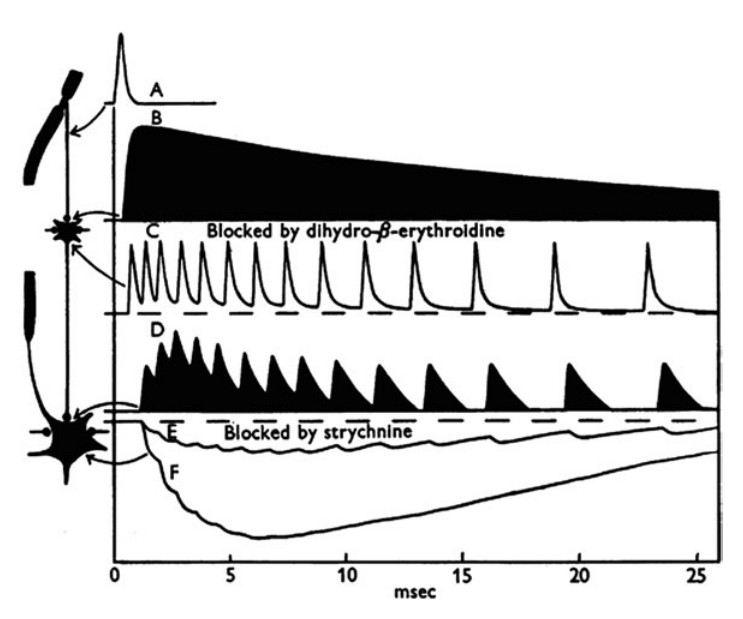
Chương 10 — Mạch thần kinh: Cột vỏ não và xử lý vỏ não
Chương 10
Mạch Thần Kinh: Cột Vỏ Não và Xử Lý Vỏ Não
Thập niên 1950 là thời kỳ hoàng kim của những khám phá về vỏ não, chứng kiến những bước đi đầu tiên của các nhà tiên phong khi đưa vi điện cực ghi nhận vào những vùng lãnh thổ chưa được biết đến của các hệ thống vỏ não chính. Từ chỗ hầu như không biết gì về tổ chức chức năng của vỏ não, đến cuối thập kỷ, các nhà sinh lý học thần kinh đã có khái niệm cột vỏ não như một nguyên lý tổ chức. Hình người thu nhỏ (homunculus) cho vỏ não cảm giác thân thể và vỏ não vận động đã được hé lộ; vỏ não thị giác được mở ra cho một hướng tiếp cận song song nhằm xác định các kích thích thị giác và các bộ phát hiện đặc trưng; có những manh mối đầy hứa hẹn rằng vỏ não thính giác chứa một bản đồ tần số; và vỏ não vận động được phát hiện chứa các mạch kích thích và ức chế bên trong phạm vi hình người vận động. Một phần nhô ra của vỏ não là hành khứu giác cũng được phát hiện biểu diễn mùi hương bằng các mô hình hoạt động không gian tương tự như tổ chức không gian của các hệ thống vỏ não cảm giác. Những phát hiện này đã đặt ra chương trình nghị sự cho nửa thế kỷ nghiên cứu vỏ não tiếp theo.
Trong khóa học giải phẫu thần kinh vào năm thứ nhất tại Trường Y Harvard năm 1956, tôi háo hức mong chờ các bài giảng về vỏ não, kỳ vọng có được cái nhìn đầu tiên về cách các tế bào vỏ não có thể tạo ra hoạt động tinh thần (ngày nay, chúng ta gọi là “cơ sở thần kinh của nhận thức”, nhưng bản chất vẫn là một). Alfred Pope, một nhà hóa học thần kinh tiên phong xuất sắc, là người giảng bài. Ông tỉ mỉ dẫn chúng tôi đi qua giải phẫu của vỏ não, từng tế bào một, như được mô tả bởi Ramón y Cajal bằng phương pháp nhuộm Golgi nửa thế kỷ trước đó, bắt đầu từ bề mặt—tế bào tháp nhỏ ở lớp 2, tế bào tháp lớn hơn một chút ở lớp 3, tế bào hình sao (stellate) ở lớp 4, neuron tháp lớn ở lớp 5, và tế bào đa hình lớn ở lớp 6. Sau đó, ông đi qua các neuron trung gian (interneuron): tế bào Martinotti ở lớp 1, tế bào lưỡng cực ở lớp 2 và 3, cùng các loại khác ở các lớp sâu hơn. Tất cả được sắp xếp một cách tuyệt đẹp. Khi đã trình bày toàn bộ trong những sơ đồ chi tiết về các tế bào, ông lùi lại khỏi bảng đen, ngắm nhìn thành quả của mình, quay sang chúng tôi và nói: “Và tất nhiên là chúng ta chẳng có chút manh mối nào về việc chúng làm gì cả.”
Cột Vỏ Não
Rafael Lorente de No. Trái ngược với cách mô tả theo từng lớp này, một khung khái niệm khác đã được đưa ra bởi một trong những học trò cũ của Ramón y Cajal, Rafael Lorente de No. Năm 1938, ông được John Fulton mời đóng góp một chương về vỏ não cho cuốn Physiology of the Nervous System (Phụ lục 10.1). de No không chỉ cung cấp một mô tả bậc thầy về các thành phần neuron của vỏ não (Hình 10.1) mà còn nhân cơ hội này đề xuất một giả thuyết mới về tổ chức chức năng của chúng (Phụ lục 10.1). Ông viết,
Ngoại trừ lớp I và lớp II, tất cả các lớp vỏ não đều chứa các tế bào có tiếp xúc synap với các sợi hướng tâm đặc hiệu, do đó sẽ không thỏa đáng nếu gọi bất kỳ lớp nào là “tiếp nhận” (receptor). Mặt khác, mọi lớp trừ lớp I đều có sợi trục đi tới chất trắng, và vì vậy không lớp nào có thể được gọi là “thực hiện” (effector) (312).
Đối với các kết nối nội tại tối quan trọng—tức là các kết nối giữa các tế bào bên trong và giữa các lớp vỏ não—Lorente de No đề xuất rằng chúng diễn ra trong các hình trụ thẳng đứng gồm các tế bào, mỗi hình trụ lấy một sợi hướng tâm đặc hiệu làm trục:
Tất cả các thành phần của vỏ não đều được đại diện trong đó, và do đó nó có thể được gọi là một đơn vị cơ bản, trong đó, về mặt lý thuyết, toàn bộ quá trình truyền xung động từ sợi hướng tâm đến sợi trục ly tâm có thể được thực hiện (311).
Có thể thấy rằng điều này về cơ bản xác định hình trụ hướng tâm như một đơn vị đầu vào–đầu ra, tương đương với đơn vị phản xạ cơ bản của tủy sống, điểm khác biệt là đơn vị vỏ não nằm trong một môi trường xử lý thông tin phức tạp hơn nhiều.
Chìa khóa trong khái niệm của Lorente de No là các kết nối bên trong đơn vị hướng tâm được tổ chức thành các vòng lặp có thể thiết lập các mạch dội lại (reverberating circuits), tức là các mạch mà trong đó xung động sẽ kích hoạt các tế bào để phản hồi kích thích ngược trở lại, duy trì sự kích thích vô thời hạn. Một cơ chế kiểu này dường như là cần thiết cho hoạt động duy trì vốn làm nền tảng cho cả trí nhớ ngắn hạn và trí nhớ dài hạn. Lưu ý rằng hoạt động duy trì này trong một đơn vị vỏ não tương đồng với hoạt động duy trì trong một bộ tạo mô hình trung ương (CPG), như đã thảo luận trong Chương 9.
Việc đưa giả thuyết đáng chú ý này vào trong một cuốn sách giáo khoa là điều bất thường, nhưng như chúng ta sẽ thấy, nó không hề bị bỏ quên. Về phương diện này, nó báo trước cuốn sách giáo khoa của Donald Hebb một thập kỷ sau đó, vốn chứa đựng một gợi ý về sơ đồ đấu nối đặt nền móng cho các mạch học tập và trí nhớ (Chương 12).
Vernon Mountcastle. Vào thời điểm tôi học lớp giải phẫu thần kinh, các nhà nghiên cứu ở cả Bắc Mỹ và châu Âu bắt đầu sử dụng các phương pháp vi điện cực mới để khám phá vỏ não. Herbert Jasper, đồng nghiệp của Penfield tại Viện Thần kinh học ở Montreal, là một trong những người đầu tiên đưa vi điện cực vào vỏ não của mèo được gây mê để ghi nhận các loại hoạt động tế bào khác nhau ở các lớp khác nhau. Một người khác là Denise Albe-Fessard ở Paris. Nhưng bước đột phá then chốt đến từ việc phát hiện ra cột vỏ não bởi một nhà sinh lý học thần kinh tại Trường Y Đại học Johns Hopkins, Vernon Mountcastle.
Mountcastle (Hình 10.2A) sinh năm 1918 tại Kentucky và được đào tạo tại Trường Y Đại học Johns Hopkins. Sau khi phục vụ trong Thế chiến II, ông trở lại Hopkins làm việc tại Phòng thí nghiệm Sinh lý học Thần kinh Bard, do Phillip Bard—một người đi đầu trong sinh lý học về hành vi vận động và cảm xúc—thành lập. Đầu thập niên 1950, Mountcastle thực hiện một loạt nghiên cứu ghi nhận vi điện cực về biểu diễn trung ương của các đáp ứng xúc giác. Công việc này bắt đầu với đồi thị và, vì đồi thị là cửa ngõ dẫn vào vỏ não, đã dẫn tiếp lên vỏ não.
Trong một cuộc phỏng vấn gần đây (Grauer, 2007), Mountcastle nhớ lại ngày đầy kịch tính năm 1955 khi ông đang nghiên cứu kết quả thí nghiệm trên não mèo, ghi lại đặc tính của từng tế bào từ các lớp đâm xuyên kế tiếp nhau. “Tôi viết chúng theo chiều dọc trên một tờ giấy màu vàng,” ông nhớ lại. Đột nhiên việc ghi chép theo chiều dọc giúp ông nhìn ra mô hình kinh ngạc trong não: Các tế bào da nằm chồng lên các tế bào da, các tế bào khớp nằm chồng lên các tế bào khớp và cứ thế, kéo dài thành các cột từ bề mặt não xuyên suốt qua sáu lớp của vỏ não. “Đó là khoảnh khắc ‘aha’ của tôi.”
Chiến lược thực nghiệm của ông là thực hiện các mũi đâm hoàn toàn theo hướng xuyên tâm vào vỏ não. Trong những trường hợp này, như mô tả trong hồi ức ở trên, ông thấy rằng tất cả các “đơn vị” (tức tế bào) mà ông bắt gặp đều có xu hướng phát xung đáp ứng với cùng một loại kích thích da (tức là chạm nhẹ, chạm sâu, cử động khớp, v.v.). Ngược lại, khi điện cực của ông được đưa vào theo hướng xiên để đi ngang qua vỏ não, ông gặp một loạt các tế bào đáp ứng với các loại kích thích khác nhau. Trong bài báo năm 1957, phần cuối cùng (tr. 430–431) của mục thảo luận đã đưa ra kết luận của ông về những phát hiện này:
IV. MỘT GIẢ THUYẾT VỀ TỔ CHỨC CHỨC NĂNG CỦA VỎ NÃO
Dữ liệu được báo cáo trong các bài báo này ủng hộ quan điểm rằng có một đơn vị tổ chức cơ bản trong vỏ não thân thể được tạo thành từ một nhóm tế bào thẳng đứng kéo dài qua tất cả các lớp tế bào. Các neuron của một nhóm như vậy liên quan đến cùng một, hoặc gần như cùng một, trường tiếp nhận ngoại biên trên bề mặt cơ thể. Chúng được kích hoạt bởi cùng một loại kích thích ngoại biên, tức là chúng thuộc cùng một phân nhóm phương thức (modality subgroup). Từ quan sát cuối cùng này suy ra rằng chúng phải biểu hiện các đặc tính phát xung giống nhau, và thực tế chúng đúng là như vậy, đặc biệt liên quan đến sự thích nghi với các kích thích ổn định. Cuối cùng, tất cả các tế bào của một cột thẳng đứng như vậy phát xung ở độ trễ ít nhiều giống nhau đối với một kích thích ngoại biên ngắn. Do đó, chúng được nhóm lại thành một mô hình phát xung ban đầu. Cần nhấn mạnh rằng phân tích này dựa hoàn toàn vào đáp ứng đầu tiên của các tế bào vỏ não đối với một kích thích ngoại biên, tức đáp ứng lặp lại sớm, mà các thí nghiệm của chúng tôi cũng như của những người khác (3) đã cho thấy là cực kỳ nhạy cảm với các thông số của kích thích. Có khả năng là ngay cả trạng thái gây mê nhẹ trong các mẫu chuẩn bị của chúng tôi cũng đã ức chế nghiêm trọng các mô hình phát xung muộn hơn và phức tạp hơn, vốn rất hiếm khi được chúng tôi quan sát thấy (19, Hình 9-f). Tuy nhiên, điều này gợi ý rằng các tế bào vỏ não sẽ được sắp xếp tuần tự theo thời gian thành nhiều mô hình phát xung khác nhau, và một mục tiêu thực nghiệm chính hiện nay là phân tích chi tiết hoạt động muộn hơn này.
Dữ liệu của chúng tôi không nên được diễn giải là chỉ ra rằng tất cả các tế bào của cột thẳng đứng này nhất thiết được kích hoạt đơn synap bởi các sợi hướng tâm đồi thị-vỏ não đặc hiệu, mặc dù các nghiên cứu giải phẫu của Lorente de No (15), bao gồm cả vỏ não thân thể của chuột nhắt cùng các vùng khác, và của Sholl (22) trên vỏ não thị giác của mèo, đã chỉ ra rằng điều này là khả thi đối với các neuron của tất cả các lớp tế bào, có lẽ ngoại trừ lớp thứ hai. Nhưng các kết nối synap mạnh mẽ của những tế bào có sợi trục ngắn và hướng lên, vốn chiếm một tỷ lệ lớn các tế bào ở vỏ não của động vật có vú bậc cao, cho thấy các thành phần của tất cả các lớp tế bào sẽ nhận được các tác động synap được nhân lên về mặt không gian sau một hoặc nhiều lần chuyển tiếp synap bổ sung. Dữ liệu của chúng tôi tương thích với những quan sát giải phẫu này.
Giả thuyết cho rằng một nhóm tế bào liên kết theo chiều dọc như vậy là đơn vị cơ bản cho chức năng vỏ não không phải là mới. Một kết luận tương tự đã được Lorente de No rút ra từ các nghiên cứu sâu rộng của ông về các liên kết synap của neuron vỏ não. Ông nhấn mạnh từ mô hình của những liên kết đó rằng các chuỗi neuron thẳng đứng có khả năng thực hiện hoạt động đầu vào–đầu ra mà không nhất thiết phải lan tỏa rộng theo chiều ngang. Rằng sự lan tỏa ngang như vậy không cần thiết ngay cả đối với hoạt động bậc cao của vỏ não được chỉ ra qua các thí nghiệm gần đây do Sperry (26) báo cáo. Ông cho thấy rằng ở mèo, sau khi cắt dọc dưới màng nuôi rộng khắp trên vỏ não thị giác, với các vết rạch xuyên qua chất xám vào tận chất trắng, chúng vẫn có khả năng phân biệt các mẫu thị giác rất tinh tế. Khả năng này vẫn tồn tại ngay cả sau khi cắt bỏ gò não trên (superior colliculi). Sperry trước đó đã phát hiện (25) rằng khỉ sau khi thực hiện các vết cắt dọc tương tự ở vỏ não cảm giác và vận động vẫn có khả năng thực hiện những gì có vẻ là hoạt động vận động bình thường. Từ các thí nghiệm của ông có thể suy ra rằng các cột vỏ não thẳng đứng khá nhỏ có khả năng thực hiện hoạt động tích hợp ở mức độ phức tạp. Kết luận này phù hợp với kết quả của các thí nghiệm hiện tại và giả thuyết về tổ chức chức năng được đề xuất.
Công bằng mà nói, mọi nghiên cứu về vỏ não kể từ đó đều được xây dựng dựa trên những đoạn văn đó. Một luận điểm then chốt là sinh lý học của các tế bào vỏ não gắn bó mật thiết với thực thể giải phẫu của cột. Vì những cột hẹp như vậy không hiện rõ trong giải phẫu học của vỏ não, việc chứng minh mối tương quan này là rất quan trọng. Đây là chủ đề của bốn bài báo được Mountcastle và các cộng sự công bố năm 1959. Trong những nghiên cứu này, ông có sự tham gia của Tom Powell từ Đại học Oxford, người đã sáng chế ra một phương pháp khôi phục vết đâm điện cực và đối chiếu đường đi của điện cực với vị trí chính xác của từng tế bào được ghi nhận, trong cả các mũi đâm xuyên tâm và đâm xiên. Minh chứng kinh điển này (Powell và Mountcastle, 1959) (xem Hình 10.3, Phụ lục 10.2) đã củng cố vững chắc giả thuyết; từ đó trở đi không còn nghi ngờ gì nữa rằng vỏ não chứa một tổ chức dạng cột. (Powell đã điều chỉnh kỹ thuật này để xác định vết đâm điện cực và vị trí ghi nhận đáp ứng trong công trình sau đó của chúng tôi về hành khứu giác.)
Cột vỏ não do đó trở thành nguyên lý tổ chức trung tâm của vỏ não mới (neocortex) và là một trong những công cụ then chốt cho các phân tích tiếp theo ở mọi vùng vỏ não. Ban đầu được cho là chỉ giới hạn ở các vùng cảm giác sơ cấp, các cấu trúc dạng cột sau đó được chứng minh là hiện diện trong các đường chiếu thể chai tới các vùng vỏ não liên hợp (Jones et al., 1975; Goldman-Rakic, 1981). Sau hơn nửa thế kỷ đóng vai trò là nguyên lý tổ chức cho các nghiên cứu vỏ não, giả thuyết cột vỏ não hiện đang được đánh giá lại từ những góc nhìn mới (Horton và Adams, 2005).
Xử Lý Thị Giác Trung Ương và Các Bộ Phát Hiện Đặc Trưng
Trong khi Mountcastle phát triển hướng tiếp cận của mình đối với vỏ não cảm giác thân thể, David Hubel và Torsten Wiesel đang phát triển hướng tiếp cận của họ đối với vỏ não thị giác, dựa trên các nghiên cứu ở cả vỏ não và võng mạc.
David Hubel. David Hubel (Hình 10.4) sinh năm 1926 tại Hoa Kỳ, là con trai của một kỹ sư hóa học có công việc đưa gia đình chuyển đến Montreal. Như ông hồi tưởng sau này (Hubel và Wiesel, 2005, 9), thời niên thiếu của ông vào thập niên 1930 tràn ngập việc theo đuổi nhiều sở thích khác nhau như hóa học, điện tử, đọc sách khoa học, piano, tiếng Latin và làm việc ở trang trại vào mùa hè. “Với những bậc cha mẹ không sắp đặt cuộc sống của chúng tôi [chở đi hết hoạt động có tổ chức này đến hoạt động khác], việc đạt đến mức độ buồn chán cần thiết để tự nghĩ ra việc để làm dễ dàng hơn nhiều [một tâm tư cũng đúng với thế hệ của tôi lớn lên trong thập niên 1940, trước khi văn hóa xe hơi và truyền hình làm thay đổi cuộc sống ở Hoa Kỳ].”
Con đường đưa ông đến với sinh lý học thần kinh là điển hình cho những lối đi quanh co mà mọi người từng trải qua trước khi đào tạo sau đại học về khoa học thần kinh được thể chế hóa, và được mô tả rất rõ trong hồi ký của ông (Hubel và Wiesel, 2005). Ông nhận bằng đại học và y khoa tại Đại học McGill ở Montreal, nơi vào khoảng năm 1950 ông lần đầu gặp Penfield và Jasper. Trong thời gian đào tạo nội trú, ông bắt đầu nghiên cứu sinh lý học thần kinh, khởi đầu tại phòng thí nghiệm điện não đồ (EEG) dưới sự hướng dẫn của Jasper tại Viện Thần kinh học Montreal. Sau đó, một người bạn khuyên ông chuyển sang Hopkins vì các nghiên cứu đang được thực hiện ở đó bởi Mountcastle và Kuffler, và ông đã làm vậy vào năm 1954. Vì mang hai quốc tịch, ông thuộc diện nhập ngũ ở Hoa Kỳ, nên sau khi kết thúc thời gian nội trú vào năm sau, ông nhận một vị trí tại Viện Nghiên cứu Quân đội Walter Reed ở Washington, D.C. Mặc dù điều này đồng nghĩa với việc rời bỏ bầu không khí đầy kích thích ở Hopkins, nhưng nó được bù đắp bởi môi trường đầy hứng khởi tại Walter Reed, cùng với Michael Fuortes (trước khi ông gia nhập nhóm của Kay Frank tại Viện Y tế Quốc gia—xem Chương 7), Robert Galambos và Walle Nauta (Chương 11), cùng nhiều người khác, dưới sự lãnh đạo của David Rioch.
Được tự do nghiên cứu toàn thời gian, Hubel, theo gợi ý của Fuortes, đã thiết kế một số điện cực dây để ghi nhận đơn vị đơn lẻ (single-unit) ở vỏ não mèo. Dù trước đó chưa có kinh nghiệm về ghi nhận đơn vị đơn lẻ hay vỏ não mèo, ông đã phát triển một điện cực vonfram tốt hơn các điện cực thép trước đây. Chẳng bao lâu sau, thế giới—ít nhất là một bộ phận của thế giới sinh lý học thần kinh—đã chú ý. Tiếp theo là một buồng để bịt kín lỗ mở trên vỏ não nhằm giảm nhịp đập động mạch và hô hấp, và cuối cùng, ông phát triển một phương pháp cho dòng điện chạy qua điện cực để lại dấu lắng kim loại nhằm xác định vị trí ghi nhận.
Với sự kết hợp này, ông đã có thể bắt đầu ghi nhận từ vỏ não. Ông chọn vỏ não thị giác, dựa trên những cuộc trò chuyện trước đó với Kuffler. Ông áp dụng bộ dụng cụ ghi nhận mới của mình để ghi từ các tế bào ở vỏ não thị giác sơ cấp (V1) đáp ứng với các tia sáng chớp. Việc này trở nên hơi nhàm chán, và ông bắt đầu khám phá xem liệu các tế bào vỏ não có quan tâm hơn đến các kích thích phức tạp hơn hay không. Một ngày nọ, trong lúc tuyệt vọng, ông bắt đầu vẫy tay trước mắt con mèo và kinh ngạc khi thấy một tế bào đáp ứng với chuyển động theo một hướng và một tế bào khác đáp ứng theo hướng ngược lại.
Để theo đuổi công trình này, ông được khuyến khích liên hệ với Kuffler ở Hopkins. Mountcastle sau đó mời ông gia nhập khoa sinh lý học tại đó. Vì vậy, sau năm cuối cùng ở Walter Reed, ông chuyển đến Hopkins vào mùa hè năm 1958 để bắt đầu làm việc trong phòng thí nghiệm của Kuffler cùng một đồng nghiệp mới, Torsten Wiesel. Họ được cấp một phòng thí nghiệm rộng 225 foot vuông cộng với không gian văn phòng cho cả hai người và một khoản ngân sách nhỏ cho các thí nghiệm. (Vào thời điểm viết cuốn sách này, không gian phòng thí nghiệm cộng văn phòng ở Hoa Kỳ bắt đầu vào khoảng 1000 foot vuông cho một trợ lý giáo sư, cùng gói tài trợ khởi nghiệp lên tới khoảng 1 triệu đô la cho nghiên cứu.)
Torsten Wiesel. Torsten Wiesel (Hình 10.4) sinh năm 1924 tại Uppsala, Thụy Điển, và lớn lên trong khuôn viên một bệnh viện tâm thần do cha ông, một bác sĩ tâm thần, làm giám đốc. Việc quan sát những hành vi kỳ quặc ở các bệnh nhân là chuyện thường xuyên và bình thường. Ông lớn lên với thành tích xuất sắc trong điền kinh và đắm mình vào việc đọc sách, đặc biệt là triết học, điều đã khơi dậy những suy nghĩ đầu tiên của ông về tâm trí và cách nó vận hành (Hubel và Wiesel, 2005, 27).
Năm 1946, ông bắt đầu học y khoa tại Viện Karolinska ở Stockholm, nơi ông chịu sự dìu dắt của Ulf von Euler, một nhà hóa sinh và sinh lý học hàng đầu, và Carl Gustav Bernhard, một nhà lãnh đạo trong lĩnh vực sinh lý học thần kinh. Wiesel đặc biệt trân trọng sự thân mật không câu nệ của Bernhard và phòng thí nghiệm của ông, điều trái ngược với sự trang trọng cứng nhắc truyền thống ở Thụy Điển. (Tôi cũng ngưỡng mộ Bernhard vì điều này khi tôi dành 2 năm ở khoa của ông vào giữa thập niên 1960; mọi người trong phòng thí nghiệm đều xưng hô thân mật bằng “du”, từ giáo sư cho đến người rửa dụng cụ thủy tinh, vào thời điểm mà cách xưng hô trang trọng “de” và “ni” vẫn là chuẩn mực ở hầu hết mọi nơi.)
Khi quá trình đào tạo sắp kết thúc, ông thử làm việc một năm trong lĩnh vực tâm thần học nhi khoa; nhưng sự nhấn mạnh vào phân tâm học khiến ông mất hứng. Ông biết mình muốn tập trung vào sinh lý học của não bộ. May mắn thay, Bernhard bổ nhiệm ông làm giảng viên tại Khoa Sinh lý học Thần kinh ở Viện Karolinska. Dự án nghiên cứu đầu tiên của ông là làm việc với Bernhard để thử nghiệm tác dụng của thuốc gây tê cục bộ lên bệnh động kinh nặng. Hướng đi này dường như không dẫn đến điều gì quá thú vị. Vận may lại mỉm cười khi Bernhard nói với ông rằng Giáo sư Kuffler ở Mỹ đã liên hệ, đang tìm một nghiên cứu sinh sau tiến sĩ để tiếp tục công trình ông đã bắt đầu về hệ thống thị giác. Wiesel đọc phiên bản năm 1952 của nghiên cứu về trường tiếp nhận của Kuffler trong tập kỷ yếu Cold Spring Harbor (các thư viện đều đặt mua loạt ấn phẩm này, nên chúng có mặt ngay lập tức trên toàn thế giới, dù thay vì bấm một phím trên bàn phím máy tính, người ta phải đi bộ vài trăm foot đến thư viện) và quyết định đó chính là điều ông muốn làm.
Ông đến Viện Wilmer tại Johns Hopkins vào tháng 8 năm 1955. Khi đó Kuffler đã tập hợp một nhóm gồm Ed Furshpan, David Potter, Josef Dudel (từ Đức), và Taro Furokawa (từ Nhật Bản). Wilmer là một viện nghiên cứu về mắt, nên Wiesel và Kenneth Brown được giao nhiệm vụ tiếp tục nghiên cứu về mắt. Trong 3 năm tiếp theo, Brown nghiên cứu cơ sở tế bào của điện võng mạc đồ (electroretinogram), trong khi Wiesel viết nhiều bài báo mở rộng công trình của Kuffler về đặc tính trường tiếp nhận của các tế bào hạch võng mạc.
Hubel và Wiesel. Tại thời điểm này, hai câu chuyện hợp làm một. Kuffler đưa hai người lại với nhau trong một bữa trưa và gợi ý họ hợp tác. Từ Walter Reed, Hubel mang đến các phương pháp ghi nhận áp dụng cho vỏ não, trong khi Wiesel mang đến sự mở rộng hướng tiếp cận của Kuffler về đặc tính trường tiếp nhận áp dụng cho võng mạc. Cùng nhau, họ sẽ tấn công vào bí ẩn về tổ chức chức năng của vỏ não thị giác.
Các thí nghiệm bắt đầu vào mùa xuân năm 1958, trên mèo được gây mê, kích thích các tế bào được ghi nhận ở vùng thị giác của vỏ não bằng các đốm sáng chiếu lên võng mạc. Kết quả ban đầu gây thất vọng; các tế bào vỏ não cho thấy rất ít đáp ứng với những kích thích này.
Bước ngoặt đến vào một ngày dài khi chúng tôi giữ được một tế bào hết giờ này qua giờ khác. . . . Đột nhiên, đúng lúc chúng tôi đưa một trong các lam kính vào máy soi đáy mắt, tế bào dường như sống dậy và bắt đầu phát xung như súng máy. Phải mất một lúc mới phát hiện ra rằng sự phát xung đó chẳng liên quan gì đến đốm tối nhỏ—tế bào đang đáp ứng với cái bóng mảnh đang di chuyển do mép của lam kính tạo ra khi chúng tôi đẩy nó vào khe. Lại mất thêm thời gian và mò mẫm để phát hiện ra rằng tế bào chỉ đáp ứng khi đường thẳng mờ nhạt này được quét chậm về phía trước trong một phạm vi định hướng nhất định. Ngay cả việc thay đổi hướng kích thích đi vài độ cũng làm đáp ứng yếu đi nhiều, và một hướng vuông góc với hướng tối ưu thì không tạo ra đáp ứng nào cả. Tế bào hoàn toàn phớt lờ các đốm đen trắng của chúng tôi. Cuối cùng khi không thể nghĩ ra điều gì khác để làm với tế bào này nữa, chúng tôi phát hiện ra mình đã làm việc với nó suốt chín tiếng đồng hồ. Bài báo năm 1959 tất nhiên không hé lộ chút gì về cuộc vật lộn của chúng tôi. Như thường lệ trong các báo cáo khoa học, chúng tôi chỉ trình bày kết quả trần trụi, hầu như không có chút cảm giác phấn khích hay vui thú nào.
(Hubel và Wiesel, 2005, 60)
Bài báo năm 1959 có nhan đề “Receptive Fields of Single Neurones in the Cat’s Striate Cortex” (Trường Tiếp Nhận của Các Neuron Đơn Lẻ ở Vỏ Não Vằn của Mèo), được gửi vào tháng 4 năm 1959 và công bố trên tạp chí Journal of Physiology. Sự tinh tế trong cách trình bày của nó tiếp nối truyền thống phương pháp tiếp cận của Kuffler (Hình 10.5, Phụ lục 10.3).
Sự mở đầu của một kỷ nguyên mới trong nghiên cứu về thị giác và vỏ não được truyền tải qua sự rõ ràng của các hình vẽ. Mỗi hình tự kể câu chuyện của riêng nó.
Các tế bào chỉ được điều khiển từ một mắt này hoặc mắt kia, minh chứng đầu tiên về các tế bào ưu thế mắt (ocular dominance cells). Sau này chúng được phát hiện tổ chức thành các cột ưu thế mắt.
Các tế bào được điều khiển bởi các đốm sáng, không sắp xếp đồng tâm như ở tế bào võng mạc, mà dọc theo một đường thẳng đóng vai trò ranh giới phân tách các đáp ứng kích thích và ức chế. Về sau chúng được gọi là “tế bào đơn giản” (simple cells).
Các tế bào được “điều chỉnh” (tuned) theo một hướng cụ thể. Đây là dấu hiệu báo trước của các cột định hướng; các tế bào khác nhau được điều chỉnh theo các hướng khác nhau.
Các tế bào đặc biệt nhạy cảm với chuyển động của một đường ranh giới theo một hướng, biểu hiện tính nhạy cảm với chuyển động.
Không có tế bào nào cho thấy tổ chức trung tâm–ngoại vi (center-surround) như ở võng mạc mèo. Chỉ một nửa số tế bào đáp ứng với ánh sáng khuếch tán.
Tóm lại, ngay cả khi chỉ sử dụng các kích thích đơn giản là các đốm và khe sáng, rõ ràng là các tế bào vỏ não có tính chọn lọc đối với mắt này hay mắt kia, sự sắp xếp kích thích thành các ranh giới giữa sáng và tối, hướng của các ranh giới, và chuyển động của các ranh giới. Tác động của những phát hiện này không chỉ nằm ở tính mới mẻ của kết quả mà còn ở các phương pháp đơn giản và có hệ thống để chứng minh chúng. Hubel và Wiesel sau đó nhấn mạnh rằng một chìa khóa dẫn đến thành công của họ nằm ở việc các phương pháp đơn giản đến mức nào, chỉ dùng các đốm và khe sáng, thay vì các thiết bị tinh vi cho các lưới có bước sóng khác nhau. Lợi thế mà họ nhấn mạnh là họ có sự linh hoạt để khám phá các đặc tính đáp ứng không lường trước khác nhau, chẳng hạn như toàn bộ dải 360° của định hướng hoặc chuyển động. Việc định lượng có thể đến sau dưới bàn tay của những người khác.
Một điểm khác mà họ nhấn mạnh là họ không chú ý đến việc đo độ trễ của các đáp ứng, vốn là điều thiết yếu trong cách tiếp cận của Eccles khi dùng các bản ghi ở tủy sống để xác định các đường dẫn truyền và kết nối synap. Họ tập trung vào các đặc tính đáp ứng hơn là các mạch khả dĩ có thể trung gian cho chúng. Như chúng ta đã thảo luận ở Chương 9, hai hướng tiếp cận này bổ sung cho nhau trong việc hé lộ cơ sở thần kinh của hành vi.
Ngay cả với bài báo đầu tiên này, họ đã tích lũy được rất nhiều dữ liệu bổ sung, dẫn đến bài báo năm 1962 trong đó họ có thể phân biệt giữa “tế bào đơn giản”, như những tế bào trong bài báo năm 1959, và “tế bào phức tạp” (complex cells), tức những tế bào có thêm các đặc tính chọn lọc bổ sung. Những kết quả này thuộc về lĩnh vực xử lý thị giác đang mở rộng nhanh chóng trong các thập kỷ tiếp theo, tất cả đều nằm trong khuôn khổ của nghiên cứu ban đầu (xem Hubel và Wiesel, 2005).
Việc Kuffler đưa họ lại với nhau, định hình chiến lược hợp tác của họ, cung cấp không gian và cơ sở vật chất, và là lực lượng dẫn dắt ban đầu của công trình là điều đáng bình luận. Ở hầu hết các phòng thí nghiệm, ông hẳn đã là tác giả chính (senior author) trong ít nhất là những bài báo đầu tiên cùng nhau và trong hầu hết các trường hợp là tất cả các bài, chia sẻ công lao cho bước tiến khổng lồ mà ông đã tổ chức và tài trợ. Nhưng đó không phải là cách Steve điều hành phòng thí nghiệm của mình. Mặc dù tham gia sâu sát vào đời sống phòng thí nghiệm, mỗi cá nhân hoặc nhóm, bao gồm cả nhóm của riêng ông, đều có dự án riêng và nhận toàn bộ công lao.
Các bài báo đầu tiên của họ được đăng trên tạp chí The Journal of Physiology, vốn được các nhà sinh lý học thần kinh rất khao khát. Tạp chí đó có chính sách liệt kê tác giả nghiêm ngặt theo thứ tự bảng chữ cái, điều này quyết định thứ tự Hubel và Wiesel (cũng như Hodgkin và Huxley). Chính sách đó sau này đã thay đổi. Ở các tạp chí khác thời bấy giờ, thứ tự có thể được thay đổi để phản ánh tốt hơn đóng góp của mỗi người cho nghiên cứu cụ thể. Phụ nữ chỉ được xác định bằng chữ cái đầu tên riêng, điều càng làm tăng thêm sự ẩn danh của họ trong một thế giới nam giới.
Jerry Lettvin. Một số đặc tính đáp ứng này đã được Horace Barlow quan sát thấy ở dây thần kinh thị giác của ếch vào năm 1953, bao gồm khả năng có các dạng phức tạp như “bộ phát hiện côn trùng” (bug detectors). Những dạng phức tạp hơn nữa đã được Jerry Lettvin và các cộng sự tại MIT quan sát thấy và báo cáo trong bài báo của họ về các bản ghi từ mái thị giác (optic tectum) của ếch cũng ra mắt vào năm 1959. Nhóm tại MIT là một trong những nhóm thú vị nhất trong những ngày đầu của khoa học thần kinh.
Jerry Lettvin sinh năm 1920 tại Chicago. Ông được đào tạo về thần kinh học và tâm thần học và từng tham chiến trong Thế chiến II. Sau chiến tranh, ông tiếp tục đào tạo tại Bệnh viện Thành phố Boston thuộc khoa thần kinh của Derek Denny-Brown (xem Chương 13) và sau đó gia nhập đội ngũ giảng viên tại MIT để làm việc toàn thời gian về nghiên cứu sinh lý học thần kinh. Tại đó ông là bạn đồng hành thân thiết của Warren McCulloch, một người tiên phong sớm trong sinh lý học thần kinh thực nghiệm và lý thuyết; McCulloch từng hợp tác với Walter Pitts trong một trong những bài báo nổi tiếng nhất của khoa học thần kinh và khoa học máy tính (xem Chương 16).
Jerry là một nhân vật phi thường với sự ấm áp, hài hước, đồng cảm, niềm vui và trí tuệ lớn lao. Ông là một học giả uyên bác vĩ đại, luôn xoay xở nhiều lĩnh vực khác nhau cùng lúc.
Vào giữa thập niên 1950, ông cùng các đồng nghiệp McCulloch, Pitts và Humberto Maturana (Hình 10.6) thực hiện một nghiên cứu về đáp ứng của võng mạc đối với các vật thể phức tạp, ghi nhận các đáp ứng từ đầu tận cùng dây thần kinh thị giác ở mái thị giác, một cấu trúc dạng vỏ nằm ở não giữa. Trong bài báo kinh điển “What the Frog’s Eye Tells the Frog’s Brain” (Mắt Ếch Nói Gì Với Não Ếch) (Lettvin et al., 1959), họ chứng minh rằng các tế bào hạch võng mạc đáp ứng chọn lọc với các loại kích thích thị giác phức tạp khác nhau, từ các cạnh đơn giản đến đường cong và thậm chí cả các hình dạng phức tạp mà họ ví như “bộ phát hiện côn trùng” (Phụ lục 10.4).
Nghiên cứu được công bố trong kỷ yếu của một hội nghị nên không có ngay lượng độc giả rộng rãi như nghiên cứu của Hubel và Wiesel. Tuy nhiên, nó được hầu hết các nhà nghiên cứu hệ thống thị giác biết đến rõ ràng. Nó cung cấp một mô hình cho các mạch trung ương hoạt động như “bộ phát hiện đặc trưng” (feature detectors), điều trở nên quan trọng trong việc phổ biến thuật ngữ và khái niệm đó trong khoa học thần kinh cảm giác. Cách tiếp cận phân tích các cơ chế thị giác trung ương bằng các kích thích phức tạp hơn này đã báo trước các nghiên cứu rất lâu sau đó về tính chọn lọc đối với các hình dạng phức tạp ở các vùng liên hợp thị giác bậc cao như nghiên cứu của Tanaka và cộng sự.
Ghi Nhận Nội Bào Từ Não Bộ
Các bản ghi nội bào của Eccles được thực hiện từ các neuron vận động của tủy sống. Việc ghi nhận nội bào từ não bộ khó khăn hơn nhiều vì các vấn đề về nhịp đập mạch máu và hô hấp cũng như kích thước nhỏ hơn của các neuron. Những nỗ lực đầu tiên được thực hiện bởi một số nhà nghiên cứu vào cùng một thời điểm. Việc xem xét những nỗ lực này rất bổ ích vì chúng mang lại cái nhìn sâu sắc về những khó khăn mà các nhà nghiên cứu ở Đức, Pháp và Anh phải đối mặt trong những năm sau Thế chiến II, dù vậy vẫn giúp họ tham gia vào những bước tiến vĩ đại của thập niên 1950.
Richard Jung. Một trong những người này là Richard Jung (1911–1986) ở Đức. Sau khi học y khoa, ông bị thu hút vào nghiên cứu về não bộ, lấy cảm hứng từ các bản ghi dây thần kinh đơn lẻ của Adrian, phát hiện sóng EEG của Hans Berger năm 1929, và các thí nghiệm kích thích điện vào các cấu trúc sâu của não bởi W. R. Hess và vào vỏ não bởi Ottfried Foerster. Ông là một trong những người đầu tiên ở Đức tiến hành nghiên cứu về EEG và vào năm 1937 đã phát hiện nhịp theta ở hồi hải mã đáp ứng với kích thích cảm giác (Kornmuller và Jung, 1938). Quá trình đào tạo ở Anh đã mang lại cho ông các mối liên hệ, giúp tái thiết khoa học thần kinh Đức sau chiến tranh. Năm 1951, ông thành lập Khoa Thần kinh học và Sinh lý học Thần kinh tại Freiburg, phản ánh mong muốn đưa nghiên cứu cơ bản về não bộ vào giải quyết các rối loạn thần kinh, rất tương đồng với các nỗ lực tương tự ở Hoa Kỳ và Vương quốc Anh (xem Chương 13). Năm 1952, ông báo cáo các bản ghi đơn vị đơn lẻ đầu tiên từ vỏ não thị giác của mèo đáp ứng với ánh sáng (Jung et al., 1952). Ông đặc biệt theo đuổi mối quan hệ giữa sinh lý học thần kinh và hành vi, chẳng hạn như cơ sở thần kinh của bệnh động kinh, chu kỳ ngủ–thức, và sự chú ý cùng tri giác (Creutzfeldt, 1986); điều này bao gồm việc đề xuất mô hình đèn pha (searchlight model) làm cơ sở thần kinh cho sự chú ý, một khái niệm sau này được Francis Crick và những người khác tiếp thu.
Denise Albe-Fessard. Trong khi đó, tại Pháp, Denise Albe-Fessard cũng quan tâm đến vỏ não. Bà sinh ra với tên Denise Albe năm 1916 tại Paris. Dù là một sinh viên xuất sắc, bà được khuyên không nên theo ngành y vì triển vọng hạn chế đối với phụ nữ thời bấy giờ, và thay vào đó chọn học vật lý và hóa học để trở thành kỹ sư (Albe-Fessard, 1996). Tuy nhiên, khi tốt nghiệp năm 1937, có rất ít việc làm cho các nhà vật lý nữ trong ngành công nghiệp, nên bà chuyển hướng sự nghiệp sang sinh học bằng cách trở thành trợ lý kỹ thuật trong một phòng thí nghiệm thuộc Trung tâm Nghiên cứu Khoa học Quốc gia (CNRS), làm việc dưới quyền Daniel Auger về ghi nhận điện thế hoạt động ở tảo Nitella (xem Chương 6). Trong công việc này, bà biết đến EEG và nghiên cứu não bộ qua các chuyến thăm phòng thí nghiệm của Alfred Fessard, một trong những người đầu tiên ở Pháp nghiên cứu EEG. Một dấu hiệu cho thấy tình trạng sơ khai của ngành điện tử thời đó có thể thấy qua hồi ức của bà rằng Fessard, để ghi điện thế hoạt động từ dây thần kinh và cơ,
. . . đã kiếm được một chiếc CRO [máy hiện sóng tia âm cực], một mẫu máy của Pháp mà chân không phải được tái lập trong ống trước mỗi lần đo. Các ống của Đức không có sự bất tiện này vừa mới xuất hiện trên thị trường, nhưng vẫn cần phải tự chế tạo mạch quét thời gian và bộ khuếch đại.
(Albe-Fessard, 1996, 8)
Trong chiến tranh (1939–45), Fessard thiết lập một phòng thí nghiệm điện sinh lý nhỏ tại Viện Marey, nơi sau này đóng vai trò trung tâm trong sự phục hưng của sinh lý học thần kinh Pháp. Albe gia nhập cùng ông ở đó với tư cách trợ lý kỹ thuật và trở thành bà Albe-Fessard vào năm 1942. Nghiên cứu được tiến hành ở quy mô hạn chế trong chiến tranh và không cải thiện nhiều sau đó; như bà nhận xét (1996, 12): “Những năm đầu sau giải phóng thật khó khăn, vật tư phòng thí nghiệm hầu như không thể kiếm được.”
Đại hội Sinh lý học Quốc tế năm 1947 được tổ chức tại Oxford và là một bước tiến quan trọng hướng tới việc hàn gắn các kết nối bị đứt gãy trong thập niên 1930 và chiến tranh cũng như xây dựng các kết nối mới. Albe-Fessard gặp E. G. T. Liddell, Charles Phillips và David Whitteridge, thiết lập mối liên hệ với trường phái Sherrington tại Oxford cũng như với các nhà sinh lý học tại Cambridge.
Một nỗi phiền toái thường trực là phải giao tiếp bằng tiếng Anh, một vấn đề đeo bám các nhà khoa học Pháp thế hệ tiền chiến suốt nhiều năm, ban đầu khiến họ chỉ có thể trình bày bài nói tại các hội thảo quốc tế và viết bài báo bằng tiếng Pháp. Điều đó cản trở việc công nhận thành tựu của họ và dẫn đến hiểu lầm, như bà Albe-Fessard ngậm ngùi ghi nhận.
. . . ngay cả sau khi cải thiện tiếng Anh của mình [vào thập niên 1960] nhờ các cộng tác viên người Mỹ, tôi vẫn luôn gặp một số khó khăn trong diễn đạt bằng ngôn ngữ đó, trên hết là khi trả lời nhanh các câu hỏi. Luôn rất khó để trở nên tinh tế bằng một ngôn ngữ nước ngoài, và sự đơn giản bắt buộc trong cách diễn đạt bằng lời của tôi thường khiến tôi bị quy kết là hung hăng. Tôi nghĩ rằng những người đã đánh giá sai tôi như vậy lẽ ra phải thử trình bày công trình của chính họ bằng một ngôn ngữ không phải tiếng mẹ đẻ—họ hẳn đã hiểu tôi hơn.
(Albe-Fessard, 1996, 24)
Phải đến năm 1950 Viện Marey mới bắt đầu tiếp đón các vị khách người Mỹ. Đối với các kết nối nước ngoài, bà thực hiện các chuyến thăm hàng năm tới Brazil để làm việc với các đồng nghiệp ở đó.
Các nghiên cứu ban đầu của Albe-Fessard tập trung vào hoạt động điện của cá điện (Gymnotes). Vào thập niên 1950, bà bắt đầu một hướng nghiên cứu thứ hai về ghi nhận vi điện cực từ vỏ não của mèo. Điều này dẫn đến một trong những bản ghi nội bào đầu tiên từ vỏ não (Buser và Albe-Fessard, 1955), từ các neuron tháp ở hồi sigma (sigmoid gyrus) đáp ứng với kích thích cảm giác thân thể ở mèo. Bài báo có nhan đề “Activites intracellulaires receuilles dans la cortex sigmoide du chat: participation des neurones pyramidaux au potential evoque somesthesique” (“Hoạt động nội bào ghi nhận ở vỏ não sigma của mèo: sự tham gia của các neuron tháp vào điện thế gợi cảm giác thân thể”).
Đây là một thành tựu đặc biệt, nằm trong số những bản ghi nội bào đầu tiên ở não động vật có vú, sau Eccles và những người khác ở tủy sống. Tuy nhiên, nó có tác động hạn chế vì là một thông báo ngắn bằng tiếng Pháp trên một tạp chí Pháp không được đọc rộng rãi bên ngoài nước Pháp. Là thông báo đầu tiên về một phương pháp mới, đã có những lo ngại cho rằng các bản ghi chứa nhiễu giả (artifacts), mặc dù bà được Jung—một trong những người tiên phong khác trong ghi nhận vỏ não như chúng ta đã lưu ý—bênh vực. Cuối cùng, công trình này đã không được tiếp nối bằng một bài báo dài hơn hay một loạt bài báo để kiểm chứng và mở rộng các phát hiện ban đầu, vốn luôn có tầm quan trọng sống còn trong việc mở ra một lĩnh vực mới.
Charles Phillips. Người được công nhận nhiều nhất cho các bản ghi nội bào đầu tiên từ vỏ não, thực tế là từ não bộ phía trên tủy sống, là Charles Phillips (Hình 10.7). Ông sinh năm 1916 và đến Oxford năm 1935, năm Sherrington nghỉ hưu. Ông học dưới sự hướng dẫn của Eccles, học trò cuối cùng của Sherrington, trước khi Eccles sang Úc. Phillips theo ngành thần kinh học, phục vụ ở hậu phương trong Thế chiến II. Sau chiến tranh, ông trở lại Oxford để bắt đầu nghiên cứu sinh lý học thần kinh. Đầu thập niên 1950, ông thực hiện các nghiên cứu cùng Liddell, khảo sát cử động của các chi đáp ứng với các cú sốc điện khu trú vào vỏ não vận động; điều này dẫn đến cách diễn giải rằng kích thích đã hoạt hóa các quần thể nhỏ tế bào tháp—“các cụm neuron” (congeries of neurons), theo thuật ngữ của họ—tới các cơ.
Sau đó ông giải quyết thách thức ghi nhận nội bào từ các neuron tháp này. Ông báo cáo các bản ghi vào năm 1956 ở mèo và năm 1959 ở khỉ đầu chó. (Tôi đã nghe Phillips mô tả những kết quả này tại một hội nghị về sinh lý học vỏ não ở Philadelphia năm 1958 và, vì ấn tượng với kết quả cùng năng lượng khi ông mô tả chúng, tôi đã gia nhập nhóm của ông để học cao học vào năm 1959 nhằm nghiên cứu các mạch nội vỏ não kiểm soát các tế bào tháp, cái mà ngày nay chúng ta gọi là “vi mạch” [microcircuits].)
Trong các nghiên cứu này, ông kiểm chứng mô hình neuron vận động và nhận thấy các neuron vận động lớn nhất, tức các tế bào Betz, biểu hiện các đặc tính tương tự về tạo điện thế hoạt động, điện thế synap, và sự tích hợp kích thích và ức chế. Ngoài ra, ông còn chứng minh sự kích thích hồi quy (recurrent excitation) cũng như ức chế bên (lateral inhibition), có lẽ được trung gian bởi các neuron trung gian vỏ não tương tự như các mạch tủy sống do Eccles chứng minh (Phụ lục 10.5). Ức chế hồi quy xác nhận sự phổ biến chung của kiểu phản hồi này lên đến tận vỏ não. Kích thích hồi quy là một phát hiện mới, về sau được công nhận là đặc trưng riêng của vỏ não. Những nghiên cứu này đặt nền móng cho các nghiên cứu tương lai về các mạch kích thích và ức chế cục bộ kiểm soát đầu ra từ vỏ não.
Hai Hệ Thống Vận Động
Trong giai đoạn này, sự phân biệt đã được nhấn mạnh giữa hệ thống vận động tháp (pyramidal motor system), trong đó các tế bào tháp vỏ não gửi sợi trục qua bó tháp để tạo synap trực tiếp lên các neuron vận động ở tủy sống nhằm kiểm soát các cử động tinh tế của các ngón ở linh trưởng, và hệ thống ngoại tháp (extrapyramidal system), trong đó các kết nối vỏ não đi tới các trung tâm thân não, rồi từ đó kết nối với các neuron trung gian ở tủy sống điều khiển các neuron vận động. Sự phân biệt này đặc biệt quan trọng trên lâm sàng trong việc phân biệt các khiếm khuyết vận động do tổn thương ở mức tủy sống, não giữa, chất trắng hay vỏ não.
Vỏ Não Người và Hình Người Thu Nhỏ (Homunculus)
Vỏ não người không phải là đối tượng nghiên cứu sinh lý học cho đến tận thập niên 1950. Wilder Penfield, một bác sĩ phẫu thuật thần kinh từng được đào tạo dưới sự hướng dẫn của cả Sherrington và Ramón y Cajal, đã thành lập Viện Thần kinh học Montreal năm 1934 và trở thành một trong những nhân vật nổi bật nhất trong khoa học thần kinh giữa thế kỷ (xem các Chương 10, 12–14).
Penfield đặc biệt nổi tiếng với việc phát triển các quy trình phẫu thuật cắt bỏ mô vỏ não để điều trị bệnh động kinh. Trong quá trình thực hiện các ca phẫu thuật này, ông đã tiến hành lập bản đồ có hệ thống vỏ não người, xác minh sự hiện diện của dải vận động ở thùy trán dọc theo rãnh trung tâm (rolandic sulcus) với sự biểu diễn kế tiếp nhau của đầu, vai, cánh tay, thân mình và chân. Những phát hiện này trở nên phổ biến rộng rãi thông qua sơ đồ hình người thu nhỏ (homunculus—“người nhỏ bé”), một bức biếm họa có đôi môi, bàn tay và bàn chân to lớn, đại diện cho lượng vỏ não lớn hơn được dành để kiểm soát các cử động tinh tế của các cơ đó (Penfield và Rasmussen, 1950) (Hình 10.8, Phụ lục 10.6). Hình người vận động này đến lượt nó lại song hành với một hình người cảm giác thân thể tương tự nằm bên kia rãnh trung tâm, đại diện cho sự phân bố thần kinh cảm giác cao hơn ở các vùng đó.
Penfield phát hiện ra rằng các cú sốc điện vào vỏ não không chỉ có thể gợi ra cử động mà còn cả ký ức, đặt nền móng cho việc nghiên cứu các cơ chế vỏ não trong trí nhớ. Những nghiên cứu này cũng chỉ ra tầm quan trọng của hồi hải mã trong trí nhớ. Thông qua các nghiên cứu này, Penfield và Viện Thần kinh học Montreal trở thành thỏi nam châm thu hút những sinh viên quan tâm đến việc nghiên cứu não người và các chức năng nhận thức của con người, trong đó có Herbert Jasper và Brenda Milner. Jasper dẫn đầu một nhóm các nhà sinh lý học thần kinh thực hiện một số bản ghi đơn vị đơn lẻ đầu tiên của các tế bào ở vỏ não (Li et al., 1956). Brenda Milner thực hiện nghiên cứu về bệnh nhân H. M., đóng vai trò trung tâm trong sự trỗi dậy của khoa học thần kinh nhận thức (xem Chương 12). Vai trò của Penfield trong việc hỗ trợ nghiên cứu này được thảo luận thêm ở Chương 12 và vai trò của ông trong sự phát triển của phẫu thuật thần kinh ở Chương 14.
Vỏ Não Thính Giác: Một Bản Đồ Thính Giác?
Như vậy, trong thập niên 1950, ý tưởng lập bản đồ không gian cảm giác trong vỏ não đã được thiết lập cho hệ thống thị giác và cảm giác thân thể. Còn hệ thống thính giác thì sao? Khả năng tính chọn lọc tần số dọc theo màng đáy ốc tai, được thiết lập bởi sóng chạy do von Békésy chứng minh (Chương 7), được biểu diễn bằng một bản đồ tần số tương ứng ở vỏ não thính giác đã được Archie Tunturi báo cáo vào năm 1952. Tuy nhiên, những kết quả này vẫn chưa được xác nhận cho đến thập niên 1970, khi người ta chứng minh rằng bản đồ này rất nhạy cảm với tác dụng của thuốc gây mê được sử dụng trong các thí nghiệm.
Lý Thuyết Mô Hình Về Khứu Giác
Các cơ chế xử lý kích thích khứu giác là điều khó nắm bắt nhất trong tất cả. Không có gì được biết về các cơ chế não bộ trong khứu giác của động vật có xương sống cho đến khi Edgar Adrian, người tiên phong trong phân tích đơn vị đơn lẻ của các thụ thể cảm giác (như chúng ta đã thấy ở Chương 7) và trong các nghiên cứu đầu tiên về cơ sở sinh lý của EEG, hướng sự chú ý của mình sang chúng vào thập niên 1940. Đầu thập niên 1950, ông báo cáo các bản ghi đa đơn vị từ hành khứu giác của thỏ, cho thấy các mùi khác nhau gợi ra các mô hình hoạt động khác nhau trên khắp hành khứu giác. Chúng ta không thể làm gì tốt hơn là trích dẫn nguyên văn lời của ông:
Cho đến nay, có vẻ như các phân tử Acetone sẽ tạo ra một sự kích thích chủ yếu xuất phát từ phần trước của cơ quan và từ các nhóm thụ thể cụ thể ở vùng đó vốn có tính đặc hiệu đối với nó. Một nồng độ mạnh có thể lôi kéo thêm các nhóm khác nhưng, do cấu trúc của cơ quan, sẽ luôn có những vùng tới hạn nơi nồng độ chỉ vừa đủ mạnh để kích thích và tại đây hiệu ứng đặc hiệu sẽ tự bộc lộ. Và sẽ có những thời điểm tới hạn. Ở mỗi lần hít vào, lượng vật chất đi vào mũi sẽ tăng dần đến cực đại và vào lúc bắt đầu cũng như kết thúc mỗi lần hít vào, nồng độ ở gần giá trị ngưỡng. Các tính chất vật lý và hóa học của các chất do đó sẽ quyết định diễn biến theo thời gian của sự kích thích. Ví dụ, một đơn vị gai lớn có thể có độ nhạy đặc hiệu với Xylol. Khi nồng độ Xylol trong không khí tăng lên, các đơn vị khác sẽ bắt đầu tham gia trong phần sau của đợt phát xung. Với pyridine và khuynh diệp, các gai nhỏ hơn xuất hiện trước và các gai lớn hơn đến sau. Kết quả là bản tái tạo ảnh chụp của đợt phát xung có một hình dạng đặc trưng cho mỗi chất, và hình dạng này được tái lặp với độ ổn định đáng kinh ngạc mỗi khi chất đó được đưa vào mũi.
Kết quả là nhà điện sinh lý học, khi nhìn vào một loạt các bản ghi này, có thể nhận diện được mùi cụ thể đã gây ra từng bản ghi. Chúng ta không nên kết luận rằng não bộ nhận diện mùi bằng cùng các tiêu chí đó nhưng ít nhất chúng ta có thể thấy cách mà vô số mùi khác nhau có thể được phân biệt mà không cần đến sự đa dạng quá lớn ở các thụ thể.
(Adrian, 1953, 12–13)
Trên cơ sở này, ông đề xuất một lý thuyết mô hình (pattern theory) về biểu diễn mùi, trong đó các mùi khác nhau được mã hóa bởi các hoạt động không gian và thời gian khác nhau (Hình 10.9, Phụ lục 10.7).
Các thí nghiệm của Adrian gợi ý rằng có một mối quan hệ có hệ thống giữa biểu mô khứu giác và hành khứu giác để tạo ra các mô hình hoạt động, điều nhận được sự ủng hộ từ các nghiên cứu truy vết giải phẫu của Wilfred le Gros Clark tại Oxford (tóm tắt trong Clark, 1957). Mozell (1958) gợi ý rằng các mô hình có thể phát sinh một phần từ các gradient hấp thụ khác nhau của các phân tử mùi trên khắp biểu mô khứu giác, điều trở nên nổi tiếng với tên gọi lý thuyết sắc ký về tạo mô hình không gian của các đáp ứng mùi.
Việc kiểm chứng cơ sở tế bào của các mô hình hoạt động trong khứu giác khó khăn hơn nhiều so với trong thị giác, nơi kích thích có thể được kiểm soát một cách chính xác trong không gian để mang lại cái nhìn sâu sắc về đáp ứng không gian. Trong khứu giác, việc kiểm soát kích thích không chính xác bằng và không có chỉ dẫn tiên nghiệm nào cho biết các mô hình sẽ trông như thế nào. Việc áp dụng phương pháp 2-deoxyglucose vào hệ thống khứu giác bởi Frank Sharp và các cộng sự cuối cùng đã cho thấy cơ sở của các mô hình hoạt động là sự hoạt hóa chọn lọc các tiểu cầu khứu giác (glomeruli) (Sharp et al., 1975; Stewart et al., 1979). Những mô hình này là chìa khóa để hiểu sự biểu diễn thần kinh của thông tin mang trong các phân tử mùi. Hiện nay chúng đang được theo đuổi bằng nhiều kỹ thuật phân tử (Mombaerts, 1996) và chẩn đoán hình ảnh (Xu et al., 2000).
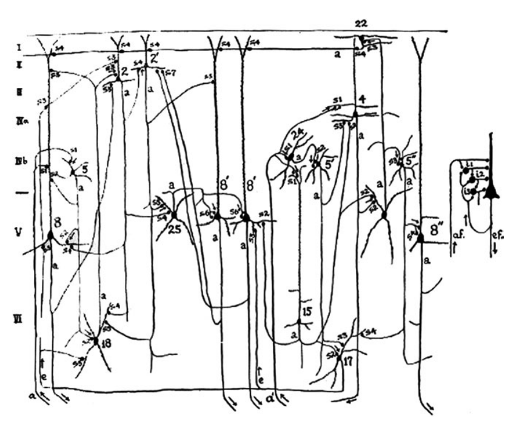
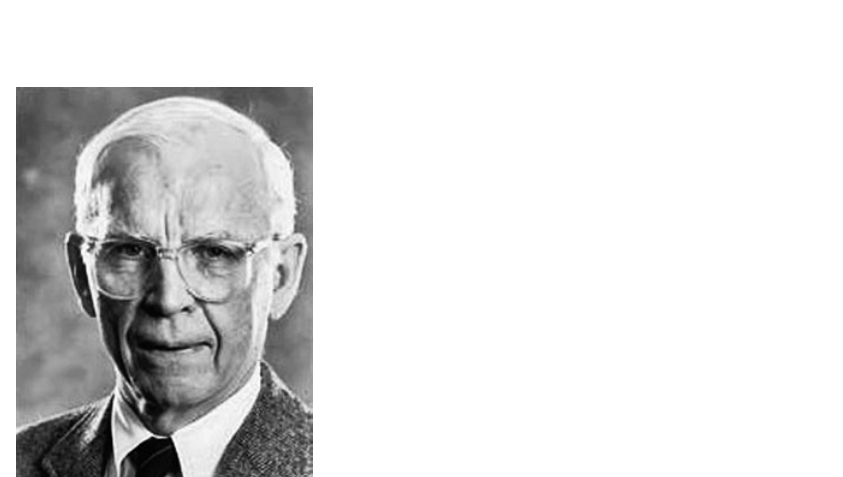
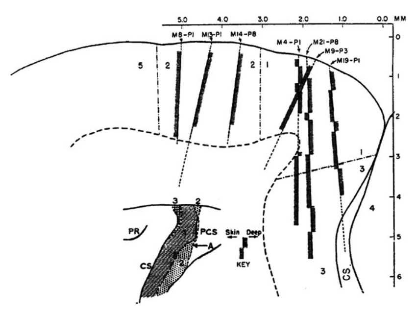
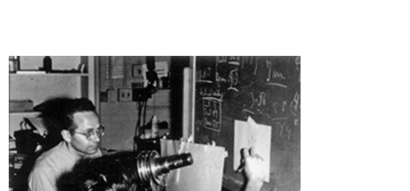
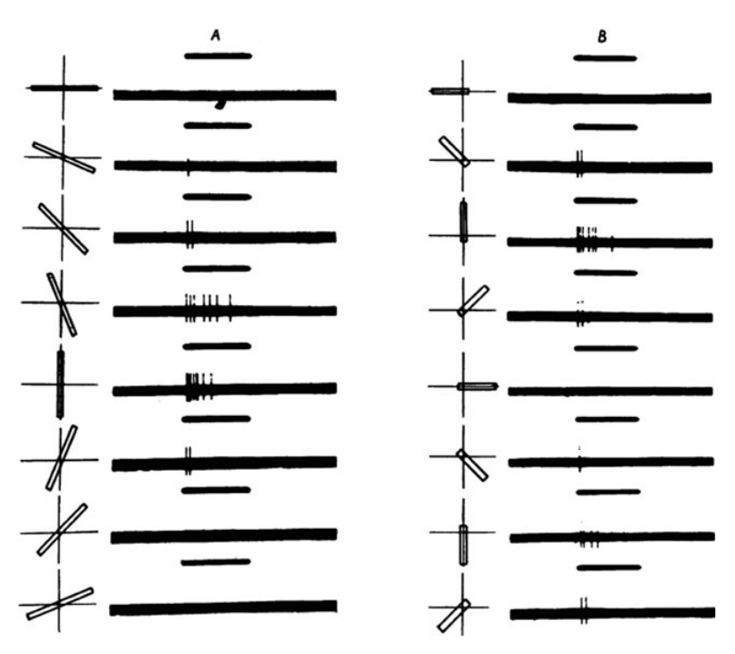
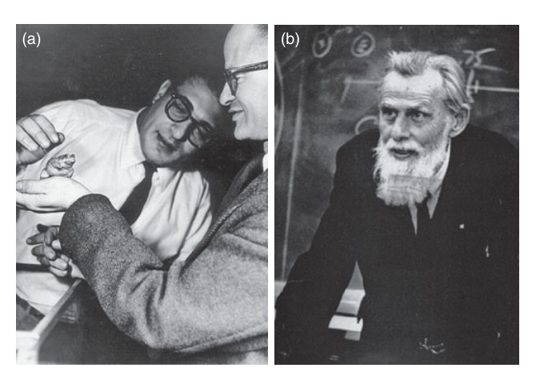
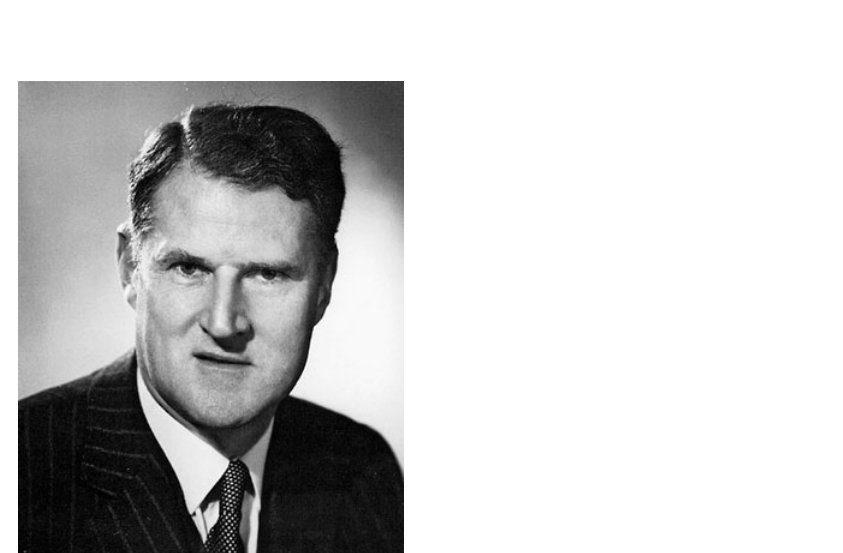
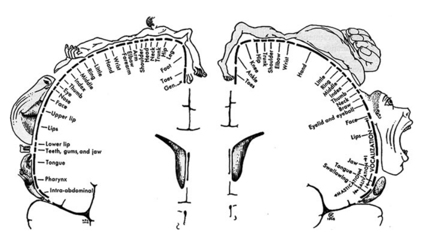
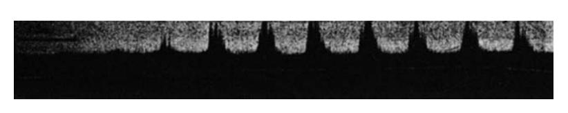
Chương 11 — Hệ thống thần kinh: Cơ sở thần kinh của hành vi
Chương 11
Hệ Thống Thần Kinh: Cơ Sở Thần Kinh Của Hành Vi
Cho đến tận sâu trong thế kỷ XX, hoạt động của não bộ vẫn được cho là bị chi phối bởi hoạt động điện trong các đường dẫn truyền thần kinh chuyên biệt. Nghiên cứu vào giữa thế kỷ lần đầu tiên đã hé lộ các hệ thống phân bố rộng rãi tham gia vào các chức năng toàn cục làm nền tảng cho hành vi. Bằng chứng đầu tiên cũng được tìm thấy cho thấy não bộ vừa là một tuyến nội tiết vừa là một máy tính. Hệ thống lưới hoạt hóa (reticular activating system) trong thân não được chứng minh là đảm nhiệm việc thức tỉnh vỏ não đi kèm với tri giác cảm giác. Chuyển động mắt nhanh được chứng minh trong giấc ngủ, dẫn đến một cách hiểu hoàn toàn mới về giấc ngủ như một trạng thái não bộ hoạt động phức tạp. Điều kiện hóa thao tác (operant conditioning) được chứng minh, giới thiệu một mô hình mới để nghiên cứu các cơ chế não bộ trong động lực và học tập. Lý thuyết hai trung tâm (two-state theory) về các cơ chế não bộ tham gia kiểm soát hành vi ăn uống được đưa ra, định hướng cho các nghiên cứu tiếp theo về hành vi ăn uống. Mối liên hệ giữa não bộ và tuyến yên—với tư cách là tuyến chủ quản kiểm soát hormone trong cơ thể—đã được giải mã, bao gồm cả sự kiểm soát thần kinh đối với thùy sau tuyến yên và hệ thống cửa kiểm soát thùy trước tuyến yên. Sự thống trị lâu dài của các thao tác phòng thí nghiệm đối với nghiên cứu hành vi cuối cùng đã bị thách thức bởi các nghiên cứu về cơ chế não bộ làm nền tảng cho hành vi và sự trỗi dậy của tập tính học (ethology) thông qua các nghiên cứu về hành vi tự nhiên.
Trái ngược với các đường dẫn truyền và mạch thần kinh trung gian cho các loại tri giác và hành vi cụ thể là các hệ thống có tác động mang tính toàn cục hơn, tham gia vào việc giải phóng và đáp ứng với các hormone lưu hành trong máu hoặc thiết lập trạng thái hành vi của sinh vật. Giữa thế kỷ cũng là thời kỳ của những tiến bộ phi thường trong việc hé lộ các hệ thống này.
Sự Thức Tỉnh và Hệ Thống Lưới Hoạt Hóa
Sherrington đã chứng minh rằng các vết cắt ngang thấp ở thân não mèo làm các cơ bị liệt và mềm nhũn, trong khi các vết cắt ngang cao, phía trên nhân đỏ, tạo ra trạng thái tăng hoạt động trương lực, gọi là “cứng mất não” (decerebrate rigidity). Những trạng thái khác nhau này đã hỗ trợ việc phân tích các đường dẫn truyền và chức năng tủy sống, như chúng ta đã thấy trong chuyên khảo kinh điển của ông The Integrative Action of the Nervous System (Hoạt Động Tích Hợp của Hệ Thần Kinh) (1906).
Vào thập niên 1930, Frederick Bremer (1937) người Bỉ hướng sự chú ý sang trạng thái của não bộ phía trên các vết cắt ngang này. Ông chứng minh rằng các vết cắt ngang thấp (“encephale isole”, hay não cô lập) không ảnh hưởng đến chu kỳ thức và ngủ bình thường, trong khi các vết cắt ngang cao (“cerveau isole”, hay đại não cô lập) tạo ra giấc ngủ sâu vĩnh viễn. Những thí nghiệm này chỉ ra vùng não giữa–cầu não là nơi chứa các cơ chế thức tỉnh.
Vào thập niên 1940, Robert Morrison và các đồng nghiệp tại Harvard thực hiện các thí nghiệm trong đó các vùng khác nhau của đồi thị được kích thích điện và quan sát tác động lên hoạt động điện của vỏ não. Kích thích các nhân chuyển tiếp cảm giác tạo ra đáp ứng giới hạn ở các vùng chiếu vỏ não, trong khi kích thích các nhân xen kẽ tạo ra sự hoạt hóa lan tỏa khắp vỏ não, tăng lên theo kích thích lặp lại tăng dần. Chúng được xác định là các nhân đồi thị không đặc hiệu, và đáp ứng của chúng được gọi là đáp ứng chiêu mộ (recruiting responses).
Mối liên kết giữa hệ thống thân não và hệ thống đồi thị được phát hiện bởi Giuseppe Moruzzi thuộc Đại học Pisa và Horace Magoun thuộc UCLA vào năm 1949 (Phụ lục 11.1). Họ nhận thấy kích thích tần số cao vào phần lõi của thân não tạo ra sự thức tỉnh ở vỏ não. Các vị trí trong thân não được phát hiện tương quan với một hệ thống tế bào khuếch tán kéo dài từ hành não đến não trung gian (diencephalon). Có vẻ như thể lưới (reticular formation) này hoạt động như một hệ thống lưới hoạt hóa (reticular activating system). Các tổn thương ở thể lưới tạo ra trạng thái ngủ sâu và chặn đứng sự thức tỉnh vốn thường được tạo ra bởi kích thích các đường dẫn truyền cảm giác thân thể đặc hiệu—những đường vốn gửi các nhánh bên tới thể lưới thân não và tới các nhân không đặc hiệu của đồi thị.
Tổng hợp tất cả những điều này lại, kích thích cảm giác vừa hoạt hóa đường dẫn truyền cảm giác đặc hiệu dẫn đến tri giác, vừa hoạt hóa đường dẫn truyền không đặc hiệu thông qua hệ thống lưới hoạt hóa để tạo ra sự thức tỉnh báo động cho vỏ não nhằm giúp tri giác có ý thức diễn ra, như được tóm tắt trong sơ đồ từ bài báo kinh điển của Starzl et al. (1951) (Hình 11.1).
Điều này đã mô tả các hiện tượng thức tỉnh, chú ý và ý thức được nghiên cứu trên phương diện toàn cục, có liên quan đến việc hiểu và xử trí lâm sàng bệnh nhân hôn mê cũng như đánh giá chết não. Vào thập niên 1990, cơ sở thần kinh của ý thức bắt đầu được coi là một chủ đề nghiên cứu nghiêm túc ở cấp độ chính vỏ não, nhờ công trình của Francis Crick, Christof Koch và những người khác. Các nghiên cứu hiện nay tập trung vào những khía cạnh cụ thể hơn của ý thức liên quan đến cử động và tri giác có ý thức.
Giấc Ngủ và Chuyển Động Mắt Nhanh
Quan điểm truyền thống về giấc ngủ, được Shakespeare diễn đạt qua lời của Macbeth, coi đó là một trạng thái nghỉ ngơi phục hồi thụ động của não bộ.
Giấc ngủ, đan lại tay áo rối bời của âu lo, Cái chết của mỗi ngày sống, bồn tắm của lao nhọc đớn đau, Thuốc xoa dịu tâm trí tổn thương, món thứ hai của tự nhiên vĩ đại, Nguồn nuôi dưỡng chính trong bữa tiệc của đời người.
(Hồi II, cảnh ii)
Do đó, nó thu hút tương đối ít sự quan tâm của các nhà sinh lý học. Một trong số ít người đó là Nathaniel Kleitman tại Chicago, người có nghiên cứu vào thập niên 1930 và 1940 đã cung cấp cơ sở sinh lý ủng hộ quan điểm truyền thống. Tuy nhiên, các thí nghiệm của một trong những nghiên cứu sinh của ông, Eugene Aserinsky, đã lật ngược quan điểm này, lần đầu tiên chỉ ra các trạng thái hoạt động luân phiên diễn ra trong não, mở đầu cho ngành nghiên cứu giấc ngủ hiện đại. Cách mà điều này diễn ra mang lại những góc nhìn sâu sắc về cách nghiên cứu sau đại học được thực hiện vào thập niên 1950, trái ngược với ngày nay, và là một nghiên cứu điển hình về mối quan hệ đôi khi căng thẳng giữa một sinh viên và người hướng dẫn của mình.
Eugene Aserinsky. Eugene Aserinsky (Hình 11.2) là một ứng viên khó có thể đóng vai trò nhà cách mạng, hay thực ra là bất kỳ vai trò nào, trong khoa học nhất mà người ta có thể tưởng tượng, như chính ông ghi lại trong một cuốn hồi ký (Aserinsky, 1995). Sinh ra tại Brooklyn năm 1921, ông lớn lên trong một gia đình cận nghèo. Ông tốt nghiệp trung học năm 16 tuổi và bắt đầu học đại học nhưng mất hứng thú. Trong 12 năm tiếp theo, ông thử nhiều công việc khác nhau, nhập ngũ một thời gian ngắn, kết hôn và có một con. Cuối cùng, vào năm 1949, với sự hỗ trợ của đạo luật G.I. Bill, ông quyết định theo đuổi sự nghiệp khoa học. Dù không có bằng đại học, ông đã thuyết phục được Đại học Chicago cho mình thi tuyển đầu vào sau đại học, làm bài xuất sắc và được nhận. (Quy trình tuyển sinh cứng nhắc có cấu trúc chặt chẽ hiện đại của chúng ta hẳn đã khiến điều này trở nên bất khả thi.)
Hầu hết giảng viên thời đó đều là các nhà sinh lý học tế bào, tham gia khởi xướng kỷ nguyên mới của nghiên cứu ở cấp độ tế bào; nhưng Aserinsky muốn làm sinh lý học cơ quan (không phải lần đầu tiên hay lần cuối cùng ông đi ngược dòng). Giảng viên duy nhất có thể hướng dẫn mảng này là Kleitman. Aserinsky lập tức cảm thấy không thoải mái khi ở gần vị giáo sư cao niên có phong thái độc đoán này và không bao giờ phát triển được mối quan hệ làm việc bình thường với ông. Kleitman từng đọc một quan sát tình cờ rằng việc chìm vào giấc ngủ ở trẻ sơ sinh có liên quan đến cử động chớp mí mắt và gợi ý Aserinsky theo đuổi vấn đề này. Về thiết bị, Aserinsky được giao một phòng thí nghiệm trống, một chiếc ghế ngả và một máy ghi trống ám khói cổ lỗ sĩ (kymograph) để ghi cơ học các cử động chớp mắt. Từ đó trở đi ông hoàn toàn tự lực: không hợp tác, không có sinh viên khác làm cùng, không có lớp học cao học, không có câu lạc bộ đọc báo khoa học, v.v.—một trải nghiệm phổ biến trong đào tạo sau đại học thời đó, như chúng ta đã lưu ý.
Trong vài tháng, ông cố gắng quan sát và định lượng các cử động chớp mắt ở trẻ sơ sinh, nhưng không có quy luật nào hiện ra. Trong tuyệt vọng, ông quyết định quan sát tất cả các cử động của mắt suốt cả đêm. Đó trở thành một dự án kiệt sức, đòi hỏi không chỉ thức trắng đêm mà còn phải phân tích dữ liệu ghi nhận vào ban ngày. Trong khi đó, ở nhà, cuộc sống vô cùng khó khăn: đứa con thứ hai chào đời, vợ ông bị trầm cảm, thường xuyên không đủ thức ăn. Đã có lúc ông suýt bỏ cuộc.
Tuy nhiên, tại phòng thí nghiệm, ông bắt đầu nhận được dấu hiệu về những giai đoạn “không cử động mắt” kéo dài 20 phút. Những kết quả ở trẻ sơ sinh này đã tiếp thêm can đảm cho ông bắt đầu các thí nghiệm trên người lớn, trong đó ông tìm được một máy ghi đa kênh điện tử cũ kỹ, với các kênh cho nhiều điện cực ghi lại cử động của mắt (điện nhãn đồ - electro-oculogram) và sóng não từ da đầu (điện não đồ, EEG). Máy ghi đa kênh kém tin cậy đến mức trong một thời gian dài người ta không rõ liệu độ lệch của các ngòi bút trong các buổi đo xuyên đêm là do tín hiệu thực sự từ mắt và da đầu, do nhiễu điện từ máy hoặc điện cực, hay do nhiễu cử động của cơ thể. Khi những vấn đề đó được giải quyết, bằng chứng bắt đầu lộ diện cho thấy mắt đang trải qua các giai đoạn cử động giống như giật nhãn cầu (saccadic-like), mà giật nhãn cầu là cách mắt chúng ta nhảy cóc khi dõi theo một vật thể đang chuyển động lướt qua.
Aserinsky biết về lịch sử lâu đời của việc người ta liên kết cử động cơ thể và mắt trong lúc ngủ với việc nằm mơ (như thể người ngủ đang xem một bộ phim nội tâm hoặc diễn lại nó) và bắt đầu đánh thức các đối tượng thí nghiệm khi họ đang có các đợt cử động mắt để hỏi xem họ có đang mơ không. Ông bắt đầu xác định được các “giai đoạn chuyển động mắt nhanh” (rapid eye movement periods) cụ thể kéo dài khoảng 20 phút, gắn liền với trạng thái mơ. Ông báo cáo tiến triển của mình cho Kleitman, người khuyến khích ông phải chắc chắn loại bỏ mọi khả năng nhiễu trong các bản ghi. Kleitman cũng phân công một sinh viên y khoa, William Dement, giúp ông trong các thí nghiệm xuyên đêm và cung cấp cho họ một máy quay phim để ghi lại các buổi ngủ. Bức tranh dần thành hình với một giai đoạn đầu chìm vào giấc ngủ, tiếp theo là các giai đoạn “chuyển động mắt nhanh” xen kẽ với các giai đoạn “không chuyển động mắt”.
Vào mùa xuân năm 1953, Aserinsky và Kleitman báo cáo ngắn gọn phát hiện của họ tại hội nghị thường niên của các nhà sinh học ở Atlantic City. Một báo cáo ngắn được công bố trên tạp chí Science vào ngày 4 tháng 9 năm đó: “Regularly Occurring Periods of Eye Motility, and Concomitant Phenomena, During Sleep” (Các Giai Đoạn Cử Động Mắt Xuất Hiện Đều Đặn và Các Hiện Tượng Đi Kèm Trong Giấc Ngủ) (Aserinsky và Kleitman, 1953; Phụ lục 11.2). Họ lần đầu tiên ghi nhận các cử động mắt trong khi ngủ là “nhanh, giật cục và đối xứng hai mắt (273)”. Họ đối chiếu thống kê các cử động này với giấc mơ: “khả năng nhớ lại giấc mơ có liên quan đáng kể với sự hiện diện của các cử động mắt (274)”. Họ còn đối chiếu các giai đoạn này với sự gia tăng nhịp thở, nhịp tim cũng như các cử động cơ thể. Họ kết luận (274):
Thực tế là các cử động mắt, mô hình EEG và hoạt động của hệ thần kinh tự chủ có mối liên hệ đáng kể với nhau và không xảy ra ngẫu nhiên cho thấy rằng các hiện tượng sinh lý này, và có lẽ cả việc nằm mơ, rất có thể đều là biểu hiện của một mức độ hoạt động vỏ não cụ thể vốn thường gặp trong giấc ngủ. Một giai đoạn cử động mắt xuất hiện lần đầu khoảng 3 giờ sau khi đi ngủ, tái diễn 2 giờ sau đó, và rồi xuất hiện ở các khoảng thời gian gần nhau hơn vào lần thứ ba hoặc thứ tư ngay trước khi thức dậy. Phương pháp này cung cấp phương tiện để xác định tần suất và thời lượng của các giai đoạn nằm mơ.
Một bài báo đầy đủ trên tạp chí Journal of Applied Physiology năm 1955 của Aserinsky và Kleitman, có nhan đề “Two Types of Ocular Motility Occurring in Sleep” (Hai Loại Cử Động Mắt Xảy Ra Trong Giấc Ngủ), đã cung cấp tài liệu đầy đủ hơn về các mô hình này (Hình 11.3, Phụ lục 11.3). Trong đoạn mở đầu, các tác giả xây dựng cơ sở giải phẫu và sinh lý học cho sự hiện diện của cử động mắt trong khi ngủ:
Người ta có lý do để nghi ngờ rằng hoạt động của hệ cơ ngoài nhãn cầu và mí mắt có thể là những chỉ dấu đặc biệt nhạy cảm về các thay đổi của hệ thần kinh trung ương (CNS) gắn liền với chu kỳ ngủ–thức. Các vùng vỏ não lớn bất cân xứng tham gia vào cử động mắt, các đường tiền đình thứ cấp được xác định rõ tới các nhân vận nhãn ngoài, và tỷ lệ phân bố thần kinh thấp của các cơ mắt ít nhất cũng chỉ ra một cơ sở định lượng cho sự phản ánh hoạt động chung của CNS. Một mối liên hệ cụ thể hơn giữa cử động mắt và các dao động trong chu kỳ ngủ–thức được gợi ý bởi vị trí giải phẫu gần kề của các nhân vận nhãn với một đường dẫn truyền tham gia duy trì trạng thái thức [tài liệu tham khảo ở đây là một sách giáo khoa giải phẫu] và bởi sự kỳ lạ là cơ vòng mắt co lại trong khi ngủ trong khi các cơ xương khác lại thư giãn (tr. 1) . . .
Các tác giả kết luận rằng họ đã mô tả “Một loại hoạt động mắt mới gọi là ‘chuyển động mắt nhanh’ trong khi ngủ”, gắn liền với sự gia tăng 10% nhịp tim, tăng 20% nhịp hô hấp, mô hình EEG điện thế thấp ở vùng trán và chẩm của não (một mô hình giống với lúc thức), tăng hoạt động của hệ cơ toàn thân bao gồm cả cơ mặt, và đôi khi phát ra âm thanh. “Qua việc hỏi đối tượng và từ các dấu hiệu khác, người ta tin rằng các chuyển động mắt nhanh có liên quan đến hình ảnh thị giác đi kèm với việc nằm mơ.”
Trong bài báo này, thuật ngữ “chuyển động mắt nhanh” (rapid eye movements) lần đầu tiên được sử dụng thường xuyên để mô tả các cử động mắt giật cục giống như giật nhãn cầu. Từ viết tắt giấc ngủ “REM” sớm xuất hiện theo sau trong y văn, cũng như các thuật ngữ khác như “giấc ngủ mơ” (dream sleep) và “giấc ngủ nghịch thường” (paradoxical sleep) (sự nghịch thường nằm ở chỗ sự thức tỉnh tăng cao lại xảy ra trong trạng thái đang ngủ). Dement và Kleitman (1957a, 1957b) chẳng bao lâu sau đã đối chiếu chính xác hơn các giai đoạn kế tiếp của giấc ngủ sâu và giấc ngủ REM với những thay đổi đặc trưng trên EEG, điều trở thành một công cụ giá trị trong nghiên cứu giấc ngủ, với việc Dement trở thành một chuyên gia hàng đầu.
Đến lúc đó, Aserinsky đã rời bỏ nghiên cứu giấc ngủ. Vì cần việc làm, ông rời đi ngay sau khi nhận bằng năm 1953 và tìm được một vị trí giảng viên tại Trường Y Jefferson. Sau này vào thập niên 1960, ông quay lại lĩnh vực mà mình đã khai sinh, nghiên cứu về sự khác biệt sinh lý giữa giấc ngủ REM và non-REM; nhưng giới nghiên cứu đã quên mất ông. Ông đã quay lưng lại với lĩnh vực này và không duy trì liên lạc với những người làm nghiên cứu giấc ngủ. Hệ quả là, “xa mặt cách lòng”. Kleitman, Dement và những người khác được công nhận là những người tiên phong của nghiên cứu giấc ngủ, một thực tế mà Aserinsky vô cùng cay đắng. Chỉ đến thập niên 1990, sự hòa giải và công nhận mới đến, ngay trước khi ông qua đời vì một tai nạn giao thông.
Tóm lại, các nghiên cứu sau đại học của Aserinsky, được thực hiện phần lớn một cách đơn độc, đã thay đổi tận gốc rễ hiểu biết của chúng ta về giấc ngủ, từ một sự nghỉ ngơi và phục hồi thụ động của não bộ thành một sự luân phiên của các vùng và mạch não tương tác tích cực. Trớ trêu thay, về phần mình, Kleitman chưa bao giờ từ bỏ quan điểm kiểu Shakespeare, tiếp tục coi giấc ngủ REM đơn giản là một giai đoạn phục hồi được biến đổi trong giấc ngủ bình thường. “Kleitman qua đời vẫn tin rằng chỉ có một trạng thái ngủ duy nhất,” Dement nói với một người phỏng vấn (Brown, 2003, 97). Nhưng đối với hầu hết các nhà khoa học não bộ và bác sĩ thần kinh, đó là sự mở ra của một thế giới mới. Trong thập niên 1960 và 1970, Michel Jouvet ở Pháp đã mô tả đặc điểm các vùng não khác nhau và các chất dẫn truyền thần kinh của chúng tham gia vào giấc ngủ. Tiếp theo đó là việc xác định các mạch não luân phiên hỗ trợ các giai đoạn khác nhau của giấc ngủ bởi Alan Hobson, John McCarley và những người khác.
Tại hội nghị năm 1995 của Hiệp hội Các Chuyên gia Giấc ngủ Liên kết, 2000 nhà nghiên cứu giấc ngủ đã có mặt dưới khán phòng khi Aserinsky, Kleitman và Dement cùng nhau lên nhận vinh danh. Và tại hội nghị của chính các hiệp hội đó năm 2003, nhân dịp kỷ niệm năm mươi năm ngày phát hiện, lượng khán giả đã tăng lên gần 5000 người và Dement đã viện dẫn Diễn văn Gettysburg của Lincoln để đánh dấu sự kiện một cách nửa đùa nửa thật (Brown, 2003, 97): “Hai mươi năm và mười năm trước, Aserinsky và Kleitman đã khai sinh trên lục địa này một ngành học mới được thai nghén vào ban đêm và hiến dâng cho mệnh đề rằng giấc ngủ bình đẳng với sự thức tỉnh.” Khán giả đã nhiệt liệt tán thành.
Điều Hòa Thao Tác Bằng Tự Kích Thích Não
Trong đầu thế kỷ XX, điều kiện hóa thao tác (operant conditioning) nổi lên như hình thức phân tích hành vi thống trị, điển hình là hộp Skinner, trong đó một con vật khát nước nhấn cần gạt để học một hành vi và nhận phần thưởng là chất lỏng. Một hướng tiếp cận mới đối với việc học tập đã được giới thiệu bởi một nghiên cứu sinh khác, làm việc cùng thời với Aserinsky nhưng ở một quốc gia khác, Canada, và trong những hoàn cảnh đồng nghiệp thân thiện hơn.
Đó là James Olds, làm luận án tốt nghiệp với Peter Milner tại phòng thí nghiệm của Donald Hebb ở Đại học McGill, Montreal. Trong bài báo kinh điển của họ (Olds và Milner, 1954; Phụ lục 11.4), họ để con vật nhấn một cần gạt để truyền kích thích điện vào các phần khác nhau ở lõi não. Với các kích thích ở một số vùng nhất định, chuột sẽ nhấn thanh gạt lặp đi lặp lại rất nhiều lần, có lẽ cho thấy các cú sốc điện đang đóng vai trò như phần thưởng, nói cách khác là có tính “củng cố” (reinforcing), theo cách tương đương với các thí nghiệm điều kiện hóa cổ điển. Các đường cong tiếp thu và dập tắt hành vi sánh ngang với những đường cong tạo ra bởi điều kiện hóa thao tác thông thường. Bằng cách lập bản đồ các cấu trúc não trung tâm, Olds và Milner nhận thấy sự củng cố cao nhất ở các vùng đáy trung tâm của não trước, tương ứng đại khái với bó não trước giữa (medial forebrain bundle), nhạy cảm nhất ở vùng vách (septal area) nhưng kéo dài lên tới hồi đai (cingulate gyrus) của vỏ não. Phương pháp này được gọi là điều kiện hóa thao tác bằng tự kích thích não (brain self-stimulation).
Phát hiện của Olds và Milner được mô tả là “một trong những khám phá khoa học hiếm hoi mở ra một lĩnh vực mới” (Rosenzweig et al., 1996, 540). Chúng ta đang thấy rằng thập niên 1950 đầy rẫy những sự kiện hiếm hoi như vậy. Tác dụng tưởng thưởng của việc tự kích thích não đã được chứng minh ở nhiều loài khác nhau, bao gồm cả con người, những người báo cáo cảm giác khoái lạc, ấm áp và thậm chí hưng phấn tình dục (Breedlove et al., 1996, 540). Đã có suy đoán rằng tự kích thích não xác định các “mạch phần thưởng” chuyên biệt sử dụng dopamine làm chất dẫn truyền, nhưng bằng chứng vẫn còn gây tranh cãi (Rosenzweig et al., 1996, 541).
Vùng Hạ Đồi và Hành Vi Ăn Uống
Các khái niệm cổ điển về cơ chế thần kinh tham gia vào việc ăn uống bắt nguồn từ các nghiên cứu trong đó tổn thương được tạo ra ở các vùng khác nhau của vùng hạ đồi (hypothalamus).
Giả Thuyết “Trung Tâm Kép” Về Ăn Uống. Đầu tiên người ta phát hiện rằng các tổn thương ở vùng hạ đồi bụng giữa (VMH) tạo ra một con vật ăn quá mức và trở nên béo phì (Hetherington và Ranson, 1940). Điều này ban đầu được chứng minh ở chuột cống và sau đó ở nhiều loài. Do đó người ta kết luận rằng VMH là một “trung tâm no” (satiety center) vốn thường được hoạt hóa khi ăn đến mức no, làm ngừng việc ăn. Các nghiên cứu sâu hơn của John Brobeck tại Đại học Pennsylvania phát hiện rằng các tổn thương ở vùng hạ đồi bên (LH) khiến động vật ngừng ăn (Anand và Brobeck, 1951a, 1951b). Điều này gợi ý rằng LH là một “trung tâm đói/ăn” (feeding center). Hai phát hiện này được Eliot Stellar tại Penn ghép lại thành giả thuyết trung tâm kép về ăn uống, trong đó việc ăn uống là do hoạt động của LH, vốn ngày càng bị ức chế bởi hoạt động của VMH khi việc ăn đạt đến mức no (Stellar, 1957) (Phụ lục 11.5).
Chẳng bao lâu người ta nhận ra rằng các trung tâm này không dễ định nghĩa rạch ròi mà thay vào đó bao gồm các tế bào tập trung ở vùng hạ đồi nhưng lan tỏa rộng rãi trong não. Các sợi của bó não trước giữa chạy xuyên qua những vùng này, làm nhiễu loạn các nỗ lực định vị các chức năng cụ thể. Các cơ chế khác cũng nổi lên, chẳng hạn như sự kiểm soát riêng lẻ đối với carbohydrate, chất béo và amino acid. Tuy nhiên, đói và no định hình nên trục của hành vi ăn uống, và giả thuyết trung tâm kép ở một mức độ lớn đã định nghĩa bài toán kiểm soát ăn uống và kích thích phần lớn các nghiên cứu trong lĩnh vực này suốt 50 năm qua.
Kiểm Soát Ăn Uống: Jacques Le Magnen. Nhà tiên phong về phân tích hành vi ăn uống này sinh năm 1916 tại Pháp. Năm 1929, ở tuổi 12, ông mắc bệnh viêm não trong một đại dịch toàn cầu và mất thị lực ở cả hai mắt. Trong nhiều năm ông được học tại nhà và phát triển một trí nhớ phi thường. Cuối cùng nhận bằng tú tài năm 1944 tại Paris thời chiến, ông được Henri Piéron, giám đốc Phòng thí nghiệm Sinh lý học Cảm giác tại Collège de France, nhận vào làm việc, nơi ông bắt đầu các nghiên cứu về khứu giác ở người. Vào thời điểm đó “đó là một lĩnh vực hầu như không có dữ liệu và quy trình thực nghiệm, chủ yếu chỉ có vài lý thuyết” (Le Magnen, 2001, 376). Le Magnen đã phát triển các máy đo mùi (olfactometer) để đo độ bay hơi, nồng độ và tốc độ hít vào của một kích thích khứu giác và áp dụng chúng để nghiên cứu sự khác biệt về độ nhạy mùi giữa hai giới. Khoảng năm 1950, ông chuyển sang cơ sở mới tại Collège de France và bắt đầu nghiên cứu ảnh hưởng của khứu giác đến hành vi ăn uống ở chuột cống, với các thí nghiệm do các trợ lý kỹ thuật thực hiện. Theo Bellisle, Laffort và Köster (2003, 85):
Bắt đầu từ năm 1950, Jacques Le Magnen đã đưa ra một loạt các khái niệm mang tính cách mạng. Những ý tưởng của ông đã truyền cảm hứng và vẫn đang truyền cảm hứng cho nhiều thế hệ các nhà khoa học. Ông là người đầu tiên phát triển các thiết bị cho phép ghi nhận lượng thức ăn và nước uống ở chuột cống suốt cả 24 giờ trong ngày, và chỉ ra cách hành vi cùng các yếu tố quyết định nó thay đổi dưới ảnh hưởng của chu kỳ ngày đêm (circadian cycles). Trong pha hoạt động (ban đêm ở chuột cống), việc nạp vào cho phép tích lũy dự trữ cơ thể để sử dụng trong pha nghỉ ngơi, khi mức tiêu thụ giảm xuống tối thiểu. Sự luân phiên ngày/đêm này là một trong những nền tảng của điều hòa năng lượng và nước–khoáng. Trong giai đoạn hoạt động hàng ngày, các bữa ăn xen kẽ với việc nhịn ăn nhằm đáp ứng các tín hiệu chuyển hóa được tạo ra bởi việc tiếp nhận thức ăn và thành phần dự trữ cơ thể. Trong tất cả những điều này, vai trò của các đặc tính cảm giác của thức ăn, tất nhiên là khứu giác, nhưng cũng cả vị giác và thị giác, không hề bị lãng quên. Trong cái mà ông gọi là “học tập tính ngon miệng” (learning of palatability), Jacques Le Magnen đã chỉ ra cách các đặc tính cảm giác của thức ăn tự chuyển hóa thành một kích thích có điều kiện phức tạp dẫn dắt hành vi, cho phép hình thành sở thích và sự chán ghét thức ăn, và quyết định kích thước của một bữa ăn tùy thuộc vào hậu quả chuyển hóa dự kiến của việc ăn vào. Hơn nữa, phòng thí nghiệm của ông xác nhận rằng chính các yếu tố cảm giác và chuyển hóa tương tự đó cũng vận hành ở con người.
Thức ăn như một “kích thích có điều kiện phức tạp” có nghĩa là lượng ăn vào là kết quả của sự cân bằng giữa các yếu tố gây đói và gây no trong các phẩm chất cảm giác của thức ăn: Ông nhận thấy rằng việc loại bỏ một mùi trong thức ăn mà con vật đã được điều kiện hóa sẽ lập tức làm tăng lượng ăn vào (mùi trở thành một yếu tố gây no), cũng như việc thay đổi mùi của thức ăn (có tác dụng kích thích sự thèm ăn). Lượng thức ăn nạp vào do đó được kiểm soát một cách linh hoạt bởi hương vị thức ăn, một thực tế không hề bị các ngành công nghiệp thực phẩm và hương liệu bỏ qua trong nỗ lực tối đa hóa mức tiêu thụ thực phẩm. Các khái niệm tiên phong của Le Magnen trở nên nổi tiếng hơn trên toàn thế giới sau khi ông bắt đầu thu hút các nghiên cứu sinh vào thập niên 1960 (bao gồm Paul Laffort, Stylianos Nikolaidis và Patrick MacLeod) và từ thập niên 1970 công bố bằng tiếng Anh.
Tôi đã được trải nghiệm trí nhớ phi thường của Le Magnen tại hội nghị Hiệp hội Quốc tế về Khứu giác và Vị giác ở Paris năm 1977. Mặc dù tôi đến thăm mà không báo trước, ông lập tức nhận ra tôi và thảo luận về một số công trình của tôi, chắc chắn có sự trợ giúp từ 30.000 thẻ chữ nổi Braille mà ông được cho là đã tập hợp từ tài liệu khoa học. Ngoài trí nhớ, tài sản lớn khác của ông là người vợ Régine, người luôn sát cánh bên ông.
Tế Bào Tiết Thần Kinh: Não Bộ Như Một Tuyến Nội Tiết
Năm 1928, Ernst Scharrer báo cáo (xem Scharrer, 1987) rằng trong vùng hạ đồi của một loài cá xương thật có những tế bào thần kinh giống tế bào tuyến ở chỗ chứa một lượng lớn vật chất tương tự như của các tế bào chế tiết đã biết, chẳng hạn như tế bào beta sản xuất insulin của tuyến tụy. Scharrer gọi chúng là các tế bào tiết thần kinh (neurosecretory cells) và gợi ý rằng chúng hoạt động như các tế bào nội tiết bên trong hệ thần kinh và chất tiết của chúng có thể liên quan đến tuyến yên gần đó.
Vào thời điểm đó, các ý tưởng về hoạt động thần kinh hoàn toàn chỉ xoay quanh hoạt động điện. Như Berta Scharrer (1987, 2) nhớ lại (Phụ lục 11.6),
. . . ban đầu ý tưởng cho rằng neuron có khả năng phát đi các tín hiệu hormone thần kinh, tức là qua đường máu, một hoạt động trước đó chỉ được gán cho các tế bào nội tiết thực thụ, đã vấp phải sự phản kháng mạnh mẽ. Nó không phù hợp với các giáo điều của học thuyết neuron, và việc nó được đề xuất trên cơ sở bằng chứng tế bào học bị coi là phi lý.
Các nghiên cứu so sánh cho thấy các nhóm tế bào tiết thần kinh hiện diện trong hệ thần kinh của cả động vật không xương sống và động vật có xương sống, bao gồm cả con người. Sự tương đồng giữa hệ thống hạ đồi–tuyến yên của động vật có xương sống và hệ thống não–thể tim–thể tơ (brain–corpus cardiacum–corpus allatum) của côn trùng đã được nhận ra (Scharrer và Scharrer, 1944), chỉ ra sự hiện diện ở cả động vật không xương sống và có xương sống của các tuyến chủ quản điều phối sự kiểm soát của não bộ đối với nhiều loại hormone. Với sự ra đời của kính hiển vi điện tử, người ta có thể quan sát rõ ràng các hạt chế tiết lớn đậm đặc điện tử trong các tế bào chế tiết và sự tương đồng của chúng với các hạt trong tế bào tuyến của cơ thể, cũng như hiểu được cách thức trong cả hai trường hợp các hạt này (túi lõi đặc - dense-core vesicles) phát sinh từ bộ máy Golgi (Scharrer và Brown, 1961).
Kể từ đó, đã có sự tiến hóa trong khái niệm về hệ thần kinh, từ chỗ bị chi phối gần như hoàn toàn bởi hoạt động điện sang quan điểm coi não bộ chứa các tế bào có đầy đủ đặc tính của tế bào chế tiết bên cạnh hoạt động điện của chúng. Ngày nay, chúng ta ngày càng nhận ra rằng não bộ vừa là một tuyến nội tiết vừa là một máy tính.
Hệ Thống Hạ Đồi–Thần Kinh Tuyến Yên
Mặc dù theo khái niệm mới này mọi tế bào thần kinh đều có tính chế tiết cũng như tính điện, tuyến yên vẫn được công nhận là tuyến chủ quản và chịu sự kiểm soát của hoạt động tại một vùng sâu của não nằm ngay phía trên nó gọi là “vùng hạ đồi”. Từ lâu người ta đã biết rằng thể tuyến yên có hai phần, phần trước có vẻ là tuyến và phần sau có vẻ là phần kéo dài từ các tế bào ở vùng hạ đồi. Lời giải cho cách thức kiểm soát đối với các phần này của thể tuyến yên là một trong những câu chuyện trinh thám khoa học vĩ đại của thập niên 1950.
Mối liên hệ giữa vùng hạ đồi và tuyến yên nằm bên dưới có một lịch sử lâu dài và phức tạp. Bó sợi thần kinh xuất phát từ các tế bào của vùng hạ đồi và kết nối qua cuống tuyến yên tới thùy sau tuyến yên đã được Ramón y Cajal (1894) mô tả, người gợi ý rằng các sợi này mang tín hiệu cảm giác từ thùy sau tuyến yên lên vùng hạ đồi. Tuy nhiên, bản chất hormone của thùy sau tuyến yên nhanh chóng thu hút sự chú ý vì vào khoảng cùng thời gian đó người ta chứng minh rằng dịch chiết thùy sau tuyến yên làm tăng trương lực mạch máu và huyết áp (Oliver và Schafer, 1895). Hoạt chất trong dịch chiết như vậy về sau được gọi là “hormone”, bắt nguồn từ tiếng Hy Lạp nghĩa là “khuấy động hoạt động, thúc đẩy”. Thuật ngữ này được W. B. Hardy đề xuất “và mặc dù đặc tính của một chất truyền tin không được hàm ý bởi thuật ngữ này, cuối cùng nó vẫn được chấp nhận” (Harris, 1955, 1),
Việc xác định các hormone thùy sau tuyến yên trở thành một phần của lĩnh vực nội tiết học mới mẻ, chuyên xác định các hormone được tiết ra bởi các tuyến khác nhau và tác động của chúng lên các mô và cơ quan đích. Trong phần đầu thế kỷ XX, những nghiên cứu này được thực hiện song song với các nghiên cứu về chất dẫn truyền thần kinh trong hệ thần kinh tự chủ (xem Chương 4). Trong cả hai trường hợp, phương pháp đều bị giới hạn ở cấp độ cơ quan, hoặc làm dịch chiết của tuyến để kiểm tra tác dụng dương tính của nó, hoặc, đặc biệt trong nội tiết học, cắt bỏ tuyến để kiểm tra tác động khi vắng mặt nó.
Một loạt nghiên cứu cho thấy nhiều tác dụng của dịch chiết thùy sau tuyến yên, đòi hỏi nửa đầu thế kỷ XX để phân loại rõ ràng. Kamm (1928) đã tinh chế dịch chiết thô và xác định hai phân đoạn chính, mỗi phân đoạn có nhiều tác dụng, làm rõ thuật ngữ cho chúng. Một phân đoạn có tác dụng chống bài niệu ở cả hai giới, đi kèm với sự tăng trương lực mạch máu như đã lưu ý ban đầu. Nguyên lý hoạt động của dịch chiết này được gọi là hormone chống bài niệu (antidiuretic hormone - ADH).
Loại tác dụng kia xảy ra ở giống cái và liên quan đến hành vi sinh sản. Điều này bao gồm tăng nhu động tử cung trong lúc giao hợp (liên quan đến việc vận chuyển tinh trùng tới buồng trứng), thúc đẩy co bóp tử cung trong quá trình sinh nở và gây co các tế bào cơ biểu mô của tuyến vú để tạo ra phản xạ tiết sữa đáp ứng với kích thích cảm giác ở núm vú. Hormone này được đặt tên là oxytocin (“sinh nhanh”). Các dịch chiết thô lần đầu tiên được điều chế bởi Dale (1909) và Ott và Scott (1910). Trong nhiều năm, rất khó để tách biệt tác dụng của ADH khỏi oxytocin. Liệu chúng là do một hormone hay nhiều hormone gây ra?
Phải đến khi có các phương pháp hóa sinh mới vào khoảng năm 1950, Lawler và Du Vigneaud (1953) mới chứng minh được sự phân cắt bằng enzyme của glycinamide từ vasopressin để tạo ra ADH và chỉ ra rằng cấu trúc của nó gồm một peptide tám amino acid. Oxytocin cũng được tổng hợp bởi Popenoe và Du Vigneaud (1953), và được chứng minh có tác dụng như dự kiến lên tử cung chuột cống, tử cung người và tuyến vú người. Cấu trúc của nó khác với cấu trúc của ADH ở hai amino acid. Việc xác định hai hormone peptide hạ đồi–tuyến yên này là một kỳ công xuất sắc, theo sát ngay sau sự tổng hợp chuỗi polypeptide dài hơn là insulin của Sanger và Tuppy (1951) (xem Chương 4), và cả hai đều đi trước sự tổng hợp yếu tố tăng trưởng thần kinh của Stanley Cohen năm 1960 (Chương 3).
Làm thế nào các hormone này đi đến thùy sau tuyến yên cũng là một vấn đề gây tranh cãi. Bargmann (1951), sử dụng phương pháp nhuộm Gomori đánh dấu các sản phẩm tiết thần kinh, đã truy vết được các sợi xuất phát từ các tế bào tiết thần kinh của nhân trước thị và nhân cạnh não thất ở vùng hạ đồi sau đi qua bó sợi tới thùy sau tuyến yên. Từ thời điểm đó, người ta hiểu rằng các tế bào vùng hạ đồi tổng hợp hormone trong thân tế bào của chúng và vận chuyển chúng dọc theo sợi trục trong cuống tuyến yên để tiết ra từ các đầu tận cùng sợi trục ở thùy sau tuyến yên vào dòng máu. Ngay cả khi đó, người ta vẫn cần xác lập rằng bản thân các hormone tách biệt với chất được hiển thị bằng thuốc nhuộm Gomori. Các thí nghiệm song song cho thấy những nguyên lý tương tự áp dụng cho sự tiết thần kinh ở côn trùng (Scharrer, 1952).
Bằng chứng sinh lý học thần kinh cho các đặc tính chức năng của tế bào thùy sau tuyến yên bắt đầu từ nghiên cứu của Eric Kandel. Sau nghiên cứu tiên phong về tế bào tháp hồi hải mã cùng Alden Spencer (Spencer và Kandel, 1961), khi đang là bác sĩ nội trú tâm thần học tại Harvard, ông đã thực hiện một nghiên cứu về các tế bào thùy sau tuyến yên ở cá. Đây là những bản ghi đầu tiên cho thấy các tế bào này tạo ra điện thế hoạt động, lan truyền qua sợi trục để dẫn đến sự giải phóng các hormone peptide của chúng theo cách tương tự như sự giải phóng chất dẫn truyền thần kinh (Kandel, 1964). Ông mô tả trong hồi ký (Kandel, 2006) rằng mặc dù phát hiện này mới mẻ, nó sẽ không dẫn tới hiểu biết sâu sắc về cơ chế tế bào của trí nhớ, nên ông đã lên đường sang phòng thí nghiệm của Tauc ở Pháp để ghi nhận từ các neuron của sên biển Aplysia (Chương 7).
Hệ Thống Cửa Hạ Đồi–Tuyến Yên Trước
Phần trước của tuyến yên đặt ra một câu đố còn lớn hơn vì nó không có kết nối thần kinh trực tiếp với vùng hạ đồi nằm phía trên. Nhiều thí nghiệm liên quan đến cắt bỏ và ghép tuyến vào các vị trí khác nhau đã được thực hiện trong nửa đầu thế kỷ XX để xác định chức năng của nó. Từ đây xuất hiện danh hiệu tuyến yên là tuyến chủ quản kiểm soát nhiều chức năng cơ thể. Chúng bao gồm sự tăng trưởng của tế bào cơ thể, cân bằng muối thông qua điều hòa vỏ thượng thận, năng lượng và tăng trưởng thông qua điều hòa chức năng tuyến giáp, quá trình sinh tinh và nồng độ testosterone thông qua điều hòa tinh hoàn, và chu kỳ kinh nguyệt cùng thai kỳ thông qua điều hòa buồng trứng. Công trình này thuộc về lĩnh vực nội tiết học nhiều hơn. Ở đây, chúng ta tập trung vào các nghiên cứu liên quan đến việc xác định cơ chế mà não bộ kiểm soát tuyến này.
Phải đến năm 1940, David Rioch và các cộng sự mới đưa ra danh pháp chuẩn cho các phần riêng biệt của tuyến yên. Nói một cách đơn giản, cuống tuyến yên nhô ra từ vùng hạ đồi, tạo nên các tế bào tiết hormone của thùy trước tuyến yên (adenohypophysis) nằm ở phần xa (pars distalis) và các đầu tận cùng tiết hormone của thùy sau tuyến yên (neurohypophysis) ở mỏm phễu (infundibular process).
Các mạch máu trên cuống tuyến yên được Fr. I. Rainer tìm thấy tại Bucharest (Harris, 1955, 20). Học trò của ông là G. T. Popa đã mô tả các mạch máu này và điểm mấu chốt là chúng tận cùng thành các mao mạch ở cả vùng hạ đồi và thùy trước tuyến yên (Popa, 1930;). Máu chảy theo chiều nào trong các mạch này? Họ gợi ý rằng máu chảy từ tuyến yên lên vùng hạ đồi. Ngược lại, George Wislocki của Harvard gợi ý rằng máu chảy từ vùng hạ đồi xuống tuyến yên, tận cùng ở thùy trước tuyến yên (Wislocki và King, 1936). Geoffrey Harris ở Oxford sau đó đã thực hiện một loạt nghiên cứu cung cấp bằng chứng dứt khoát cho chiều dòng chảy này. Điều này bao gồm việc quan sát trực tiếp dưới kính hiển vi dòng máu chảy trong các mạch ở động vật được gây mê (Green và Harris, 1949). Điều này đã xác lập khái niệm hệ thống cửa hạ đồi–tuyến yên (hypothalamic–hypophyseal portal system) mà qua đó vùng hạ đồi có thể điều hòa chức năng thùy trước tuyến yên. Những nghiên cứu này được tóm tắt trong chuyên khảo kinh điển của Harris Neural Control of the Pituitary Gland (Sự Kiểm Soát Thần Kinh Đối Với Tuyến Yên) (1955) (Hình 11.4, Phụ lục 11.7).
Harris gợi ý rằng các neuron ở vùng hạ đồi giải phóng các yếu tố vào hệ thống mạch máu cục bộ này để “điều hòa tốc độ tiết hormone thùy trước tuyến yên” và đặt câu hỏi: “liệu có bấy nhiêu cơ chế thể dịch tham gia tương ứng với bấy nhiêu loại hormone không?” (Harris 1955, 177). Như vậy, chỉ trong một nét vẽ, các hệ thống vĩ đại đã được hợp nhất: hệ thần kinh, hệ thần kinh nội tiết và hệ nội tiết.
Với công trình này, Harris được coi là “cha đẻ” của ngành nội tiết học thần kinh; chúng ta đã thấy rằng vợ chồng Scharrer cũng có quyền được coi là đồng sáng lập. Như Charles Sawyer (1975, 97) nhận xét:
“Harris không phải là người đầu tiên gợi ý rằng thùy trước tuyến yên có thể được kiểm soát bởi một cơ chế thể dịch liên quan đến hệ thống cửa tuyến yên, nhưng chính sức mạnh trí tuệ, nhân cách và cách tiếp cận nghiên cứu đa diện của ông đối với vấn đề vào cuối thập niên 1940 và đầu thập niên 1950 đã thực sự xác lập khái niệm thần kinh–mạch máu.”
Cũng khi gợi ý rằng hormone là yếu tố được tiết ra, Harris nhận ra rằng nó được tạo ra bởi một tiền chất và cần có một thuật ngữ đại diện cho tiền chất đó để mô tả sự hình thành của hormone và bản thân hormone được tiết ra. Đến năm 1973, các peptide gồm hormone giải phóng hormone tạo hoàng thể (LHRH), hormone giải phóng thyrotropin (TRH) và somatostatin đã được xác định là các cơ chế thể dịch mà Harris đã giả định. Các công trình tiếp theo đã xác định tất cả các yếu tố kiểm soát thùy trước tuyến yên và mô tả đặc điểm các con đường thể dịch và thần kinh trung ương kiểm soát sự giải phóng của chúng.
Đặt Nền Móng Cho Giải Phẫu Thần Kinh Hiện Đại
Trong khi những cuộc khảo sát về các cấu trúc sâu và chức năng của não bộ đang diễn ra, một cuộc cách mạng thầm lặng khác cũng bắt đầu dưới hình thức nỗ lực của một nhà nghiên cứu trẻ làm việc gần như cô độc nhằm phát triển một phương pháp tốt hơn để truy vết các đường dẫn truyền sợi ở những vùng này.
Walle J. H. Nauta. Walle J. H. Nauta (Hình 11.5) sinh năm 1916 trong một gia đình truyền giáo và hoạt động cộng đồng người Hà Lan bên eo biển Malacca ở Sumatra, Indonesia (Jones, 2006). Ông theo học tại Đại học Leiden, hoàn thành chương trình tiền lâm sàng năm 1937. Khi làm trợ lý sinh viên ở khoa giải phẫu, ông trở nên hứng thú với giải phẫu não bộ và thấy vùng hạ đồi đặc biệt lôi cuốn. Mô tả của ông (Nauta, 1993, 1337) về cách mối quan tâm này dẫn đến sự nghiệp cả đời của mình đan xen với nhiều câu chuyện khác trong bản tường thuật của chúng ta về thời kỳ đó:
Các ấn phẩm đầu tiên của vợ chồng Scharrer vừa mới ra mắt, báo cáo quan sát đáng kinh ngạc của họ rằng các tế bào của nhân đại bào vùng hạ đồi kết hợp đặc tính thần kinh với đặc tính chế tiết [xem phần trước, “Tế Bào Tiết Thần Kinh: Não Bộ Như Một Tuyến Nội Tiết”, về các nghiên cứu của vợ chồng Scharrer]. Các phòng thí nghiệm của S. W. Ranson ở Chicago và W. R. Hess ở Zurich đang liên tục báo cáo những phát hiện mới đầy lôi cuốn về sự tham gia của vùng hạ đồi trong các chức năng tự chủ và nội tiết, cũng như trong chu kỳ ngủ–thức. Tôi cũng đã đọc với sự ngưỡng mộ bài báo kinh điển của Philip Bard về “cơn thịnh nộ giả” (sham rage), một hiện tượng rõ ràng gắn vùng hạ đồi với ít nhất là các biểu hiện bên ngoài của sự giận dữ. Và từ phòng thí nghiệm của G. B. Wislocki tại Harvard xuất hiện bằng chứng cho thấy mắt xích cuối cùng được tìm kiếm bấy lâu trong đường ly tâm nối vùng hạ đồi với thùy trước tuyến yên là mạch máu chứ không phải thần kinh [xem phần trước, “Hệ Thống Cửa Hạ Đồi–Tuyến Yên Trước”, về các nghiên cứu của Wislocki]. Tôi nghĩ rằng những phát hiện gần đây này cung cấp một lý do chính đáng cho một cuộc tìm kiếm mở rộng về các kết nối sợi nội tại và ngoại lai của vùng hạ đồi. Hơn nữa, đối với tôi, một số phát hiện sinh lý học gần đây đang đặt ra những câu hỏi giải phẫu không thể trả lời được dựa trên kiến thức giải phẫu hiện có. Và nhận thức đó, đến lượt nó, dẫn tôi đến suy nghĩ rằng giải phẫu não bộ là một chủ đề bị bỏ quên chứ không phải đã cạn kiệt.
Nauta quyết định thực hiện một dự án truy vết các kết nối sợi của vùng hạ đồi bằng phương pháp các sợi có myelin thoái hóa được Vittorio Marchi giới thiệu nhiều năm trước đó. Dự án này bị trì hoãn do cần hoàn thành việc học y khoa; rồi vào tháng 5 năm 1940, Hà Lan bị Đức Quốc xã tràn vào khi chúng chiếm đóng châu Âu trong Thế chiến II, nên ông không thể tiếp tục công việc cho đến năm 1942. Không may thay, phương pháp Marchi không cho kết quả gì khi áp dụng cho vùng hạ đồi vì hầu hết các sợi đều không có myelin và phương pháp Marchi chỉ nhuộm lớp myelin bị thoái hóa. Điều cần thiết là một phương pháp nhuộm chính các sợi trục đang thoái hóa, chứ không phải bao myelin đang thoái hóa. Ông suy luận rằng cơ hội tốt nhất nằm ở một phương pháp sử dụng sự lắng đọng bạc trong các sợi trục đang thoái hóa. Những phương pháp như vậy, đặc biệt là phương pháp của Bielschowsky, đã được dùng để hiển thị các sợi thần kinh và cấu trúc tận cùng; nhưng chúng cho kết quả không ổn định, và những khó khăn của Ramón y Cajal với chúng thậm chí đã khiến ông nghi ngờ sự tồn tại của “cúc tận cùng” (bouton terminaux) trong vỏ não (Nauta, 1993).
Trong những năm sau chiến tranh, Nauta đã thực hiện một loạt nỗ lực điều chỉnh các phương pháp nhuộm bạc cho các sợi trục thoái hóa nhưng không gặp nhiều may mắn. Khi đang làm việc ở Zurich, ông tình cờ đọc được một bài báo của Paul Glees, một nhà giải phẫu thần kinh ở Oxford, báo cáo một cải tiến của phương pháp Bielschowsky cho phép nhuộm tốt hơn các sợi trục và đầu tận cùng thoái hóa. Tuy nhiên, nỗ lực tái lập các kết quả này của Nauta đã thất bại, có thể do sự khác biệt trong nước máy của Zurich và Oxford được dùng để pha dung dịch.
Cách giải quyết vấn đề xuất hiện khi một nghiên cứu sinh hóa học, Paul Gygax, làm việc cùng ông để điều chỉnh các dung dịch giúp việc nhuộm tốt hơn, nhưng các lát cắt vẫn bị đục mờ. Làm sao để làm trong chúng? Thật đáng ghi lại lời kể của Nauta (1993, 1341) về cách việc đó xảy ra vì nó minh họa hoàn hảo cho châm ngôn của Pasteur (Chương 1): “Trong lĩnh vực quan sát, cơ hội chỉ mỉm cười với những tâm trí đã được chuẩn bị”:
Sau nhiều tháng nỗ lực đầy bế tắc nhằm cải thiện độ trong của các lát cắt, giải pháp cho vấn đề cuối cùng đã thành hiện thực, một cách đột ngột và hoàn toàn tình cờ. Vào một buổi chiều thứ Bảy mùa xuân năm 1949, tôi phát hiện mình đã dùng hết sạch formalin tươi và phải pha dung dịch khử từ một chai formalin 10% dùng dở, đậy nút bần mà tôi tìm thấy ở một góc khuất, nơi nó đã được cất giữ ít nhất sáu năm. Trong chất khử pha từ thứ formalin cũ kỹ này, các lát cắt khiến tôi kinh ngạc khi từ từ chuyển sang màu nâu nhạt, và khi tôi soi chúng dưới kính hiển vi, lần đầu tiên sau ngần ấy năm, tôi nhìn thấy một bức tranh thoái hóa sợi trục giống hệt với điều tôi hằng mong đợi. Tôi phấn khích gọi Paul Gygax, người đến ngay sau đó, mang theo một nguồn formalin tươi và một chai nhỏ acid formic; anh ấy không mất quá một phút để suy ra rằng thứ formalin cũ tôi vừa nhắc đến hẳn phải có nồng độ acid formic cao. Vài thử nghiệm nhanh với formalin tươi được acid hóa bằng acid formic đã chứng minh anh ấy hoàn toàn đúng.
Với kết cục này, dự án đã chuyển từ một chuỗi những thất vọng sang một chuyến đi đầy hân hoan.
Phương pháp mới được Nauta và Gygax công bố năm 1951. Nhiều năm tiếp theo chứng kiến những cải tiến được thực hiện (Nauta và Ryan, 1952). Đến năm 1952, Nauta chuyển đến Viện Nghiên cứu Quân đội Walter Reed ở Washington, D.C., với phòng thí nghiệm mô học và bệnh học danh tiếng cùng một nhóm các nhà điện sinh lý học xuất sắc (Chương 10). Tại đó, Nauta và Gygax (1954) báo cáo các cải tiến mang lại độ chọn lọc nhuộm cao hơn đối với các sợi trục thoái hóa so với sợi bình thường. Ở dạng này, phương pháp Nauta đã thúc đẩy một thế hệ nhà nghiên cứu mới truy vết các kết nối sợi trong não bộ. Những nghiên cứu ban đầu của chính Nauta đã mang lại hiểu biết mới về các kết nối của vòm não (fornix), hạch hạnh nhân (amygdala), hạch nền (basal ganglia) và bó gai–đồi thị (spinothalamic tract) (Jones, 2006). Các cải tiến tiếp theo đối với dung dịch đã nâng cao độ chọn lọc cho các sợi thoái hóa và, khi kết hợp với kính hiển vi điện tử, cho phép xác định chính xác các đầu tận cùng thoái hóa lên các mục tiêu hậu synap. Cuối cùng, một loạt rộng lớn các phương pháp không dựa trên sự thoái hóa đã ra đời và được sử dụng ngày nay để xác định sợi trục của các loại neuron được chọn và các kết nối synap của chúng.
Vai trò của Nauta trong sự trỗi dậy của khoa học thần kinh hiện đại đã được Jones (2006) tóm tắt:
ảnh hưởng của ông rất sâu rộng, không chỉ nhờ việc ông đã hiện đại hóa, gần như một tay, toàn bộ lĩnh vực giải phẫu thần kinh thực nghiệm mà còn vì tầm ảnh hưởng của ông đối với biết bao sinh viên và các nhà khoa học đồng nghiệp với tư cách là cộng tác viên, người thầy hoặc tác giả của một số bài báo nền tảng nhất trong khoa học thần kinh.
Khi Chương trình Nghiên cứu Khoa học Thần kinh (Neurosciences Research Program) trao tặng ông Huy chương và Giải thưởng F. O. Schmitt về Khoa học Thần kinh năm 1983, họ tuyên bố (Nauta, 1994) rằng ông đã sáng tạo ra các phương pháp thực nghiệm mới giúp . . . xác lập giải phẫu thần kinh hệ thống như một ngành hàng đầu trong khoa học thần kinh. . . . Ông hơn bất kỳ ai khác đã kiến tạo nên khoa học giải phẫu thần kinh hiện đại.
Và đối với những ai may mắn được quen biết ông, ông là một trong những quý ông lịch thiệp nhất từng làm rạng danh bất kỳ lĩnh vực khoa học nào.
Tâm Lý Học
Tôi kết thúc chương này bằng những nhận xét ngắn gọn về đóng góp của tâm lý học thực nghiệm đối với cơ sở khái niệm của khoa học thần kinh hiện đại. Phần lớn bối cảnh ban đầu được bao quát trong chuyên khảo kinh điển của Edgar Boring, A History of Experimental Psychology (Lịch Sử Tâm Lý Học Thực Nghiệm) (1950).
Nói ngắn gọn, lý thuyết học tập trong nửa đầu thế kỷ trước bị thống trị bởi các nhà tâm lý học hành vi, những người nghiên cứu việc học bằng cách quan sát động vật trong phòng thí nghiệm thực hiện các nhiệm vụ do người làm thí nghiệm thiết kế. Những con chó của Pavlov, các thí nghiệm điều kiện hóa của Watson và các hộp Skinner là những ví dụ tiêu biểu. Đối với những nhà nghiên cứu này, não bộ là một hộp đen, và các lời giải thích được tìm kiếm ở cấp độ những nguyên lý trừu tượng được định nghĩa hoàn toàn bằng thuật ngữ tâm lý học.
Peter Milner tại McGill, một người tiên phong của tâm lý học sinh học (xem mục Điều Hòa Thao Tác Bằng Tự Kích Thích Não), gọi đây là một “thời kỳ tồi tệ” của tâm lý học (Milner, 1999), vốn kéo dài dai dẳng ở nhiều khoa tâm lý học cho đến tận gần đây. “Thời kỳ tốt đẹp” theo quan điểm này có thể nói là bắt đầu vào giữa thế kỷ, với sự xuất bản cuốn sách của Donald Hebb (1949; xem Chương 12) và hướng tiếp cận thực nghiệm đối với các cơ chế não bộ như được minh họa bởi Olds và Milner cùng những người khác, như đã lưu ý ở phần trước trong chương này. Một cú hích lớn đến từ các nghiên cứu về bệnh nhân tổn thương não, vốn sẽ được đề cập trong chương tiếp theo.
Tập Tính Học
Với sự trỗi dậy của tâm lý học hành vi vào đầu thế kỷ, việc nghiên cứu hành vi tự nhiên ngoài thực địa dần mờ nhạt. Tuy nhiên, xu hướng này đã bị đảo ngược bởi các nhà tập tính học mà công trình của họ trở nên nổi tiếng vào giữa thế kỷ. Đầu tiên là Karl von Frisch, một nhà động vật học người Áo nghiên cứu giác quan và hành vi của loài ong. Ông phát hiện ra khả năng cảm nhận ánh sáng phân cực của chúng và giải mã điệu nhảy lắc lư (waggle dance) mà qua đó một con ong thợ tìm kiếm thức ăn giao tiếp với cả đàn. Konrad Lorenz là một giáo sư tâm lý học ở Đức, người đã dành những năm đầu sự nghiệp để nghiên cứu loài ngỗng, so sánh các giống hoang dã, thuần hóa và lai tạo. Ông từng là tù binh chiến tranh của Liên Xô trong giai đoạn 1942–48. Sau khi hồi hương, ông trở nên nổi tiếng với công chúng qua bản tóm tắt các nghiên cứu về hành vi động vật trong cuốn King Solomon’s Ring (Chiếc Nhẫn Của Vua Solomon) (1949; xem bản dịch tiếng Anh năm 1952), chiếc nhẫn tượng trưng cho khả năng trò chuyện với loài vật của Solomon (và của Lorenz). Có một bức ảnh nổi tiếng chụp đàn ngỗng đã in dấu (imprinted) vào Lorenz, đi lạch bạch thành một hàng theo sau ông trong chuyến đi dạo hàng ngày. Một người cùng thời thân cận là Niko Tinbergen, một nhà sinh học người Hà Lan cũng nghiên cứu hành vi tự nhiên. Năm 1951, ông xuất bản cuốn The Study of Instinct (Nghiên Cứu Về Bản Năng), đặt ra lập luận cho tầm quan trọng của hành vi bản năng trong tự nhiên.
Tác động kết hợp của ba nhà tiên phong này cùng các cuốn sách của họ đã một lần nữa hướng sự chú ý trở lại hành vi bẩm sinh. Đỉnh cao của công trình này trong thập niên 1950 do đó là một bước đi then chốt hướng tới sự tổng hợp do Edward Wilson thực hiện năm 1975, khai sinh ra lĩnh vực mới là sinh học xã hội (sociobiology). Lĩnh vực này đến lượt nó lại hòa quyện một cách tự nhiên với một mặt là bằng chứng về các hệ thống thần kinh bẩm sinh cho việc tạo mô hình trung ương, và mặt khác là sự hiểu biết ngày càng tăng về các gene, đặc biệt là những gene quy định hoặc kiểm soát các loại hành vi cụ thể. Các khái niệm hiện tại về chức năng não bộ do đó kết hợp cả bẩm sinh và nuôi dưỡng (nature and nurture) để hiểu cơ sở thần kinh của hành vi.


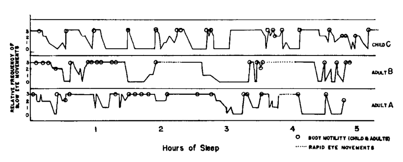
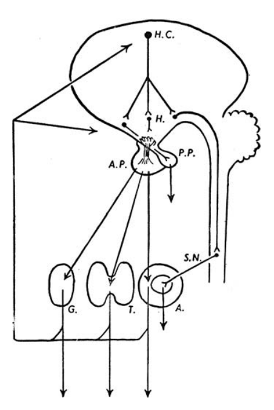
Chương 12 — Học tập và trí nhớ: Donald Hebb, Brenda Milner và H. M.
Chương 12
Học tập và Trí nhớ: Donald Hebb, Brenda Milner và H. M.
Học tập và trí nhớ là nền tảng của mọi loài động vật và là cơ sở cho phần lớn năng lực nhận thức của con người. Giả thuyết hàng đầu về cơ sở thần kinh của học tập và trí nhớ bắt nguồn từ Donald Hebb, được trình bày trong một cuốn sách giáo khoa vào năm 1949; khớp thần kinh Hebb phụ thuộc hoạt động vẫn là tâm điểm của nhiều nghiên cứu hiện nay. Các nghiên cứu vào thập niên 1950 đã mở rộng việc tìm hiểu vỏ não sang thùy viền, ghi nhận những bằng chứng đầu tiên về các cơ chế thần kinh ở hạch hạnh nhân và các cấu trúc dưới vỏ khác liên quan đến hành vi cảm xúc. Một chương mới trong nghiên cứu não bộ đã mở ra với các ca phẫu thuật nhằm giảm nhẹ chứng động kinh, qua đó cho thấy vai trò thiết yếu của hồi hải mã đối với trí nhớ. Việc cắt bỏ hồi hải mã hai bên để điều trị chứng động kinh mạn tính gây suy nhược đã khiến một bệnh nhân, H. M., mất khả năng hình thành ký ức mới. Một loạt nghiên cứu về H. M. bắt đầu từ năm 1957 và kéo dài suốt nửa thế kỷ của Brenda Milner đã phác họa rõ vai trò của hồi hải mã trong việc hình thành trí nhớ và khai sinh ra lĩnh vực khoa học thần kinh nhận thức mới mẻ.
Như chúng ta đã thấy, phần lớn các nghiên cứu về hệ thần kinh được thúc đẩy bởi mối quan tâm đến cơ sở thần kinh của tri giác. Các mối quan tâm lớn khác hướng đến cơ chế thần kinh của cảm xúc, cũng như của học tập và trí nhớ. Giữa thế kỷ XX là thời kỳ của những bước tiến mang tính cách mạng đối với các cơ chế đó, cho thấy những vùng não chi phối các loại hành vi này có mối liên hệ mật thiết với nhau.
Học tập và Định đề của Hebb
Ít có cái tên nào vang vọng rộng khắp trong khoa học thần kinh hiện đại hơn Donald Hebb. Lý thuyết của ông về cơ sở thần kinh của việc học tập bắt nguồn, không có gì ngạc nhiên đối với độc giả của lịch sử này, từ giữa thế kỷ XX. Vì phần lớn khoa học thần kinh cũng như tâm lý học tập trung vào các cơ chế học tập và ít nhà nghiên cứu chịu khó tìm hiểu điều Hebb thực sự muốn nói là gì, chúng tôi sẽ phác thảo chi tiết hơn lịch sử này.
Như đã đề cập ở chương trước, lý thuyết học tập vào đầu thế kỷ trước bị chi phối bởi các nhà hành vi học, những người coi não bộ như một chiếc hộp đen và lập luận rằng việc nghiên cứu não bộ không liên quan gì đến việc nghiên cứu tâm trí. Ngược lại, một số ít nhà lý thuyết học tập đã tiến hành thí nghiệm với động lực tìm hiểu các cơ chế thần kinh nền tảng.
Karl Lashley là một trong những người tiên phong. Lashley làm việc tại Harvard vào thập niên 1920 và 1930, và tại Phòng thí nghiệm Sinh học Linh trưởng Yerkes vào thập niên 1940. Milner nhận xét rằng Lashley ‘‘duy trì một cách tiếp cận hợp lý đối với tâm lý học khi ngành này trải qua một giai đoạn tồi tệ, và đã nêu lên những câu hỏi quan trọng vẫn còn nguyên giá trị’’ (Milner, 1999, điểm 1).
Lashley đã thực hiện một loạt nghiên cứu trên chuột thực hiện các nhiệm vụ học tập thị giác khác nhau và khảo sát tác động của các tổn thương vỏ đại não lên việc học. Một phát hiện then chốt đối với ông là mức độ suy giảm khả năng học tập tỷ lệ thuận với lượng vỏ đại não bị cắt bỏ, không phụ thuộc vào vị trí. Kết quả này được công bố trong một bài báo có tựa đề ‘‘In Search of the Engram’’ (Đi tìm dấu vết ký ức) (Lashley, 1950), nổi tiếng vào thời điểm đó không chỉ vì tựa đề đầy kịch tính mà còn vì phát hiện phủ định (và chẳng bao lâu sau bị bác bỏ) của nó. Để giải thích kết quả của mình, Lashley đưa ra giả thuyết rằng phần lớn chức năng của tân vỏ não được biểu hiện thông qua các cơ chế tích hợp dưới vỏ.
Vấn đề chính mà Lashley vật lộn là sự biểu diễn thần kinh của những gì được học. Tại đây, một hướng tiếp cận khác bước vào cuộc chơi. Một trong những học trò của Ramón y Cajal, Lorente de Nó, đã tiếp tục sử dụng phương pháp nhuộm Golgi trong một loạt nghiên cứu về tân vỏ não. (Trong một nghiên cứu, ông đã xác định các cụm tế bào ở vùng cảm giác thân thể phụ trách khuôn mặt của chuột, gọi chúng là các cầu vỏ não [cortical glomeruli]. Những cấu trúc này sau đó được Tom Woolsey và Henrik van der Loos [1970] tại Đại học Johns Hopkins tái phát hiện và đặt tên lại là các thùng vỏ não [cortical barrels], vốn đã trở thành một trong những mô hình chính cho tổ chức vỏ não và học tập.)
Lashley bị ấn tượng bởi một sơ đồ tổ chức vỏ não dựa trên các tế bào nhuộm Golgi trong một bài báo của Lorente de Nó (1934). Sơ đồ này mô tả các tế bào tạo thành những mạch dội lại (reverberatory circuits) thông qua các nhánh bên sợi trục của chúng bên trong vỏ não, một lược đồ mà Lorente de Nó lặp lại trong chương kinh điển về vỏ đại não trong cuốn The Physiology of the Nervous System của John Fulton tại Yale năm 1938 (đã bàn ở Chương 10). Lashley nắm bắt khái niệm này và đưa ra định đề rằng ‘‘Từ một tổ chức cấu trúc như vậy, có thể suy ra các đặc tính chức năng với một mức độ tin cậy nhất định’’ (Milner, 1999, điểm 7). Điều này được đưa ra khi chưa hề có bất kỳ ý niệm nào về đặc tính của cả nơ-ron lẫn khớp thần kinh! Quan điểm của Lashley là các nơ-ron hoạt động như những bộ cộng hưởng, được điều chỉnh theo các tần số khác nhau; các xung cảm giác đi vào vỏ não dưới dạng sóng, lan truyền và giao thoa với nhau, tạo ra các mô hình sóng đứng biểu diễn các kích thích. Những mô hình sóng này biểu diễn kích thích; một quá trình học tập tiếp theo sẽ liên kết tri giác được hiện thân trong mô hình sóng đứng với một đáp ứng cảm giác (Milner, 1999, điểm 9).
Donald Hebb (Hình 12.1) là học trò của Lashley. Ông từng học tại McGill, thử làm hiệu trưởng một trường học trong vài năm, và bị cuốn hút trở lại con đường nghiên cứu sau đại học về tâm lý học nhờ đọc sách của William James, James Watson và Sigmund Freud. Ông làm việc dưới sự hướng dẫn của Lashley để lấy bằng tiến sĩ năm 1936 về việc thiếu hụt thị giác sớm ảnh hưởng thế nào đến tri giác thị giác ở chuột. Wilder Penfield sau đó mời ông gia nhập Viện Thần kinh Montreal (xem Chương 10), nơi ông nghiên cứu tác động của tổn thương thùy trán đối với hành vi con người, và kết luận rằng những tác động tối thiểu cho thấy sự tồn tại của các hệ thống thần kinh phân bố rộng rãi. Tiếp theo, khi giảng dạy tại Đại học Queen’s, ông phát triển các bài kiểm tra trí thông minh cho chuột và người. Đến năm 1942, ông tin chắc rằng học tập là một yếu tố quan trọng đối với trí thông minh hơn nhiều so với quan niệm thông thường.
Trong năm đó, Hebb gia nhập nhóm của Lashley tại Yerkes và bắt đầu nghiên cứu hành vi của tinh tinh. Tại đây, ông bắt đầu đúc kết kinh nghiệm của mình thành một cuốn sách, như ông viết trong phần giới thiệu, nhằm phát triển ‘‘một lý thuyết tổng quát về hành vi cố gắng bắc cầu qua khoảng cách giữa sinh lý học thần kinh và tâm lý học.’’ Một bản thảo đã được hoàn thành vào khoảng năm 1945. Bầu không khí trí tuệ tại Yerkes là nguồn kích thích lớn cho việc viết cuốn sách. Đóng góp của Lashley và những người khác vào các ý tưởng trong sách là chủ đề của nhiều cuộc tranh luận sôi nổi (xem Orbach, 1999; Milner, 1999; Haider, 2008). Hebb trở lại McGill, nơi ông được bổ nhiệm làm trưởng khoa tâm lý học năm 1948. Cuốn sách của ông, tựa đề The Organization of Behavior: A Neuropsychological Theory (Tổ chức của Hành vi: Một Lý thuyết Tâm lý học Thần kinh), ra mắt năm 1949.
Chính xác thì cuốn sách này chứa đựng những gì, mà các khái niệm của nó vẫn nằm ở trung tâm của khoa học thần kinh hiện đại hơn nửa thế kỷ sau? Hãy nhớ rằng, vào cuối thập niên 1940 vẫn chưa có thông tin gì về đặc tính của các nơ-ron và khớp thần kinh trung ương, chưa có sinh lý học màng tế bào, chưa có siêu cấu trúc tế bào, chưa có các hệ thống chất dẫn truyền thần kinh, chưa có lấy một bản ghi nào từ tế bào vỏ não, chưa có các chất có hoạt tính sinh học, và chưa có bất kỳ bước tiến nào của thập niên 1950 mà chúng ta đã đề cập trong các chương trước.
Một điểm khởi đầu then chốt cho Hebb là cuốn sách của Hilgard và Marquis (1940), chỉ ra rằng các sơ đồ về mạch vỏ não hồi quy của Lorente de Nó có thể liên quan đến một cơ chế cho việc học tập. Điều này ‘‘rất có thể là khoảnh khắc bừng tỉnh của Hebb’’ (Milner, 1999, điểm 11). Trái ngược với Lashley, Hebb bỏ qua phép loại suy về các mô hình giao thoa và tập trung trực tiếp vào các khớp thần kinh kết nối một quần thể nơ-ron.
Có một số ý tưởng cốt lõi được trình bày trong chương 4 của Hebb (Hình 12.2, Phụ lục 12.1):
1. Khớp thần kinh Hebb (Hebbian synapse). ‘‘Khi một sợi trục của tế bào A ở đủ gần để kích thích tế bào B và lặp đi lặp lại hoặc bền bỉ tham gia vào việc kích hoạt nó, một quá trình tăng trưởng hoặc biến đổi chuyển hóa nào đó sẽ diễn ra ở một hoặc cả hai tế bào sao cho hiệu quả của A, với tư cách là một trong những tế bào kích hoạt B, được tăng lên’’ (62). Nói cách khác, học tập xảy ra khi có sự gia tăng tương quan ở cả hoạt động tiền khớp thần kinh và hậu khớp thần kinh.
(Mặc dù sự tăng cường phụ thuộc hoạt động đã được biết đến ở khớp thần kinh – cơ và sau đó được tìm thấy ở các khớp thần kinh khác, nó quá ngắn ngủi để có thể làm cơ sở cho việc học tập dài hạn. Tuy nhiên, phát hiện sau này về sự tăng cường dài hạn [LTP] của Bliss và Lømo [1973] đã lập tức xác định được một cơ chế khớp thần kinh cho trí nhớ dài hạn và một khớp thần kinh mô hình [kết nối giữa các nhánh bên Schaffer và các tua gai CA1 ở hồi hải mã]. Khớp thần kinh Hebb đã ra đời. Nó cũng cung cấp cơ sở cho việc học tập của các mạng nơ-ron nhân tạo kết nối luận.)
2. Tập hợp tế bào (cell assembly). Các tế bào cùng hoạt động với nhau tạo thành cái gọi là một ‘‘tập hợp tế bào.’’ Điều này cũng được phản ánh trong câu châm ngôn phổ biến rằng ‘‘các tế bào cùng phát xung thì kết nối với nhau’’ (cells that fire together wire together). Theo Milner (1999), tập hợp tế bào có thể là đóng góp khái niệm quan trọng nhất của Hebb:
3. Hoạt động dội lại (reverberatory activity). Trong lược đồ của Hebb, hoạt động dội lại hàm ẩn trong các sơ đồ của Lorente de Nó vẫn tiếp diễn sau tín hiệu đầu vào ban đầu, nhờ đó cho phép tập hợp tế bào tiếp tục biểu diễn sự kiện kích hoạt.
(Có thể lưu ý rằng, về mặt khái niệm, hoạt động dội lại trong các mạch vỏ não giả thuyết của Lorente de Nó được xây dựng trực tiếp dựa trên các mô tả về mạch vòng làm nền tảng cho các chuyển động vòng tròn của cơ tim, vốn được cho là nguyên nhân gây ra rung nhĩ và rung thất ở tim. Những lược đồ này đã được công nhận từ đầu thế kỷ. Hiện nay, hoạt động dội lại kéo dài trong các mạch nơ-ron vỏ não vẫn chưa được chứng minh. Những thay đổi dài hạn trong mô thức phát xung của tế bào, phản ánh các biến đổi khớp thần kinh Hebb dài hạn, đã trở thành mô hình chính cho cơ chất thần kinh nền tảng của học tập và trí nhớ.)
4. Hoạt động tâm trí. Các tập hợp tế bào khác nhau được kích hoạt theo những trình tự khác nhau tạo nên cơ chất thần kinh của tư duy.
Cuốn The Organization of Behavior xuất hiện vào một thời điểm thuận lợi. Các tư tưởng của Skinner đang chiếm ưu thế, thuyết phục các nhà tâm lý học rằng các dữ kiện sinh lý không liên quan gì đến các khái niệm tâm lý học. Một ý niệm, theo định nghĩa của nhà tâm lý học, là một khái niệm tâm lý tách rời khỏi cơ chất thần kinh.
‘‘Cho đến thời điểm đó, các ý niệm được hầu hết các nhà tâm lý học coi là thuần túy tinh thần (ngay cả bởi các nhà hành vi học, đó là lý do họ từ chối bàn về chúng). Hebb đã mang lại cho các ý niệm một cơ sở thần kinh và mở ra cánh cửa cho khoa học thần kinh nhận thức’’ (Milner, 1997, điểm 10).
Do đó, các ý tưởng của Hebb trước tiên tạo ra tác động trong tâm lý học, giúp cân bằng lại chủ nghĩa hành vi thuần túy và thúc đẩy sự trỗi dậy của tâm lý học sinh lý và tâm sinh học vào thập niên 1960 và 1970.
(Với tư cách là một nhà khoa học thần kinh thực nghiệm và tính toán, bản thân tôi ít chú ý đến các ý tưởng của Hebb vì các khớp thần kinh có biến đổi dài hạn, các tập hợp tế bào được định nghĩa mơ hồ, và các mạch dội lại mang tính suy đoán có rất ít bằng chứng thực nghiệm hỗ trợ. Sự tăng cường dài hạn đã thay đổi tất cả điều đó vào thập niên 1970, và đến thập niên 1980 các mạng kết nối luận mang đặc tính Hebb đã bước vào lĩnh vực khoa học thần kinh. Tất cả những bước phát triển này đã dẫn đến sự ra đời của khoa học thần kinh nhận thức, tiêu biểu là Hội thảo Mùa hè đầu tiên về Khoa học Thần kinh Nhận thức năm 1985, do Stephen Kosslyn, Michael Posner và tôi tổ chức.)
Tóm tắt. Donald Hebb đã mang lại một cuộc cách mạng trong khoa học thần kinh nhận thức. Di sản từ lý thuyết học tập của ông, được hình thành ngay từ buổi bình minh của khoa học thần kinh hiện đại, vẫn đang tiếp tục được mở ra (xem Brown và Milner, 2003). Một nhận định mạnh mẽ về tầm quan trọng của cuộc cách mạng này đã được Raymond Klein đưa ra:
Khi triết học và sinh lý học hội tụ vào thế kỷ XIX, Tâm lý học xuất hiện với lời hứa về một khoa học của đời sống tinh thần (Boring, 1950). Bằng cách cung cấp một sự hiện thực hóa về mặt thần kinh cho ‘‘hóa học tinh thần’’ của các nhà liên tưởng luận, Hebb đã thực hiện lời hứa này và đặt nền móng cho chủ nghĩa tân kết nối luận, vốn tìm cách giải thích các quá trình nhận thức theo các kết nối giữa những tập hợp nơ-ron thật hoặc nhân tạo. Xin cho phép tôi mạo hiểm chịu tiếng ‘‘sùng bái anh hùng’’ khi dự đoán rằng khi ngành khoa học còn tương đối non trẻ của chúng ta trưởng thành, tầm vóc các ý tưởng của Hebb trong tâm lý học và khoa học thần kinh hành vi sẽ lớn mạnh ngang tầm với các ý tưởng của Darwin trong sinh học.
(Klein, http://www.cpa.ca/cpasite/userfiles/documents/ publications/cjep/special_eng.html)
Đánh giá này cũng được những người khác đồng tình: ‘‘. . . lời tri ân lớn nhất dành cho Hebb có lẽ là của Adams (1998), người đã tuyên bố rằng ‘Hai trong số những cuốn sách có ảnh hưởng nhất trong lịch sử sinh học là Nguồn gốc các loài của Darwin (1859/1964) và Tổ chức của Hành vi của Hebb (1949)’ (Milner, 1999, xem trực tuyến).’’
Hệ Viền (The Limbic System)
Mặc dù phần lớn sự quan tâm tập trung vào vỏ não, các phần khác của hệ thần kinh cũng được phát hiện đóng vai trò thiết yếu trong các chức năng vỏ não bậc cao làm nền tảng cho nhận thức và hành vi. Trong số những bước tiến vĩ đại của thập niên 1950 có việc thừa nhận tầm quan trọng của hệ viền và những bằng chứng đầu tiên về vai trò chức năng của hồi hải mã và hạch hạnh nhân bên trong hệ thống này.
Thùy viền. ‘‘Thùy viền lớn’’ (great limbic lobe) được Paul Broca đề xuất lần đầu tiên tại Pháp vào năm 1878 như một vòng tròn được tạo thành bởi hồi đai, một vòng vỏ đại não, và hồi hải mã bao quanh lõi trung tâm của não trước. Ông đề xuất rằng đường viền này, ‘‘nằm ở cửa vào và cửa ra của bán cầu đại não,’’ giống như ngưỡng cửa; do đó có thuật ngữ ‘‘limbic’’ (viền), từ tiếng Latin có nghĩa là ngưỡng cửa là limen. Ông cho rằng thùy viền này là nơi cư ngụ của các năng lực bậc thấp hơn so với các năng lực bậc cao của phần còn lại của vỏ đại não.
Mạch Papez. Ý tưởng này gần như ngủ yên cho đến khi được thổi luồng sinh khí mới vào năm 1937 bởi James Papez, một nhà thần kinh học ở Chicago. Những cơn bộc phát cảm xúc ở các bệnh nhân bị tổn thương hồi hải mã và hồi đai đã thôi thúc ông đánh giá lại các mối liên hệ giải phẫu của những vùng này trong não. Điều này dẫn ông đến một giả thuyết mới mẻ về mạch thần kinh làm nền tảng cho cảm xúc, được mô tả trong bài báo ‘‘A Proposed Mechanism of Emotion’’ (Một cơ chế đề xuất của cảm xúc) (Papez, 1995) (Phụ lục 12.2).
Trong lược đồ này, biểu hiện cảm xúc bắt nguồn từ vùng dưới đồi, nằm sâu trong lõi não, thông qua các đường chiếu đến thân não vốn kiểm soát đầu ra vận động (cơ và tuyến) của biểu hiện cảm xúc. Nhưng làm thế nào phần còn lại của não biết về đầu ra này? Điều này được truyền từ thể vú của vùng dưới đồi đến đồi thị và tiếp tục đến hồi đai, trung tâm diễn giải chủ quan về trạng thái cảm xúc. Hồi đai lần lượt kết nối với hồi hải mã, nơi kết hợp thông tin này với các đầu vào khác nhau đến từ các vùng não khác và gửi đầu ra cảm xúc này trở lại thể vú. Trong lược đồ này, con đường từ hồi đai đến hồi hải mã rồi đến thể vú cung cấp một phương tiện giúp trải nghiệm cảm xúc chủ quan ở cấp độ vỏ não cao nhất có thể kết hợp với nội dung cảm xúc từ đầu ra vùng dưới đồi để tạo nên biểu hiện cảm xúc.
Trước đây chưa từng có ai hình dung ra cách các cấu trúc não này có thể liên hệ với nhau một cách có ý nghĩa như thế nào, và mạch Papez đã được đón nhận với sự nhiệt tình lớn lao, trở thành động lực mạnh mẽ cho các nghiên cứu tiếp theo. Một điểm hấp dẫn là nó đã mang lại một chức năng thú vị cho hồi hải mã, vốn cho đến lúc đó vẫn bị coi là một phần của não khứu giác (rhinencephalon, ‘‘não mũi’’), liên quan đến khứu giác theo một cách thức chưa rõ ràng.
Hội chứng Klüver-Bucy. Cùng năm Papez công bố mạch của mình, Heinrich Klüver và Paul Bucy tại Chicago đã báo cáo kết quả sơ bộ của các thí nghiệm trong đó họ cắt bỏ thùy thái dương hai bên ở khỉ. Dù chỉ là sơ bộ, báo cáo này được biết đến rộng rãi và trích dẫn trong nhiều năm sau đó. Việc công bố báo cáo đầy đủ bị trì hoãn bởi Thế chiến II và cuối cùng xuất hiện vào năm 1955 (xem Bucy và Klüver, 1955) (Hình 12.3, Phụ lục 9.3). Họ ghi nhận năm tác động chính:
1. Quá chú ý (Overattentiveness): Các con vật bồn chồn; chúng có xu hướng thôi thúc phải hướng về hoặc đáp ứng với mọi kích thích.
2. Tăng đưa vật vào miệng (Hyperorality): Các con vật kiểm tra mọi đồ vật một cách cưỡng bức bằng cách cho chúng vào miệng.
3. Mù tâm thần (Psychic blindness): Các con vật nhìn thấy nhưng không hiểu; chúng tiếp cận và kiểm tra bừa bãi các đồ vật ngay cả khi nguy hiểm (như que diêm đang cháy).
4. Tăng hoạt động tình dục: Các con vật gia tăng hoạt động tình dục một cách bừa bãi, thậm chí hướng tới cả những vật vô tri.
5. Biến đổi cảm xúc: Những con khỉ trước đây hoang dã và hung dữ trở nên thuần lành, điềm tĩnh và có thể dễ dàng tiếp xúc.
Phức hợp các đặc điểm này được gọi là hội chứng Klüver-Bucy. Chứng mù tâm thần sau đó được chứng minh là do mất tân vỏ não thùy thái dương. Tình trạng tăng hoạt động một phần có thể do các nơ-ron ở rìa tổn thương phát xung liên tục. Tình trạng tăng hoạt động tình dục (vốn ban đầu là một trong những khía cạnh gây chấn động nhất của hội chứng) dường như quá vô hướng đến mức chỉ đơn thuần là một phần của tình trạng tăng động chung ở những con vật này. Cuối cùng, những biến đổi cảm xúc trong hội chứng Klüver-Bucy được gắn kết đặc biệt với hạch hạnh nhân.
Hạch hạnh nhân (Amygdala). Phức hợp tế bào này nằm ở vỏ đại não tại đáy não trước ở các loài thú bậc thấp và trên thành trong của đáy thùy thái dương ở các loài thú bậc cao. Mặc dù các ca cắt bỏ kiểu Klüver-Bucy đã mang lại những manh mối đầu tiên về mối liên hệ giữa hạch hạnh nhân và cảm xúc, các biến đổi lại khác nhau tùy thuộc vào loài; chẳng hạn, mèo trở nên hung tợn thay vì hiền lành sau khi phá hủy hạch hạnh nhân. Một số nghiên cứu liên kết tình trạng tăng tính dục với sự gia tăng hung hăng trong các trường hợp này. Tuy nhiên, cắt bỏ là một công cụ quá thô sơ và có quá nhiều điểm không chắc chắn về mức độ tổn thương trong các nghiên cứu khác nhau nên không thể đưa ra kết luận chắc chắn.
Một cách chính xác hơn để nghiên cứu hạch hạnh nhân là sử dụng kích thích điện khu trú. Paul MacLean là một trong những người tiên phong trong các nghiên cứu này. Các nghiên cứu của ông về hạch hạnh nhân và các phần liên quan của mạch Papez đã góp phần dẫn đến khái niệm hiện đại về hệ viền.
Paul MacLean sinh năm 1913; học tại Yale với mối quan tâm đến triết học; và sau đó nhận bằng bác sĩ y khoa (MD) tại đó vào năm 1940. Sau Thế chiến II, ông mở phòng mạch tư về tâm thần học nhưng sớm bị thôi thúc tìm hiểu các cơ chế não bộ làm nền tảng cho bệnh tâm thần và đã nhận học bổng nghiên cứu với Stanley Cobb tại Bệnh viện Đa khoa Massachusetts (MGH) ở Boston (chúng ta sẽ thấy MGH đã đóng vai trò là cái nôi đào tạo các nhà tâm thần học thần kinh như thế nào ở Chương 13). Khi nghiên cứu các bệnh nhân động kinh, ông trở nên quan tâm đến trải nghiệm cảm xúc của họ và mối liên hệ khả dĩ của chúng với thùy thái dương và hồi hải mã. Điều này đưa ông đến với James Papez và ‘‘mạch Papez.’’ Được truyền cảm hứng mạnh mẽ sau chuyến thăm Papez, MacLean đã tập hợp các nghiên cứu của mình trên bệnh nhân trong một bài báo năm 1949 có tựa đề ‘‘Psychosomatic Disease and the Visceral Brain: Recent Developments Bearing on the Papez Theory of Emotion’’ (Bệnh tâm thể và Não nội tạng: Những phát triển gần đây liên quan đến Lý thuyết Cảm xúc của Papez) (Phụ lục 12.4). Theo Kelly Lambert (2003, 344):
MacLean tránh gọi mạch này là não khứu giác vì ông muốn giảm nhẹ chức năng khứu giác và nhấn mạnh chức năng cảm xúc. Sau đó ông quyết định dùng thuật ngữ visceral (nội tạng/thâm tâm) dựa theo định nghĩa gốc ở thế kỷ XVI chỉ những cảm giác mạnh mẽ bên trong. Khía cạnh quan trọng của bài báo này là gợi ý của MacLean rằng não của các loài thú có thể có một đặc điểm chung là một hệ thống khá nguyên thủy chịu trách nhiệm tích hợp thông tin cảm giác, gợi mở một sự phân đôi giữa hành vi trí tuệ và hành vi cảm xúc, phi ngôn từ của chúng ta.
Bài báo này đã thu hút sự chú ý của John Fulton, người có công trình cùng Carlyle Jacobsen tại Yale về thùy trán và mối liên hệ của nó với cảm xúc đã dẫn đến sự phát triển của phẫu thuật tâm thần (xem Chương 14). Tại Yale, MacLean trở nên quan tâm đến Broca và ý tưởng về ‘‘thùy viền’’ của ông. Theo Lambert, 344:
Vì Broca nhấn mạnh vai trò của thùy viền trong khứu giác, một chức năng bị coi là ít quan trọng đối với con người, mạch giải phẫu này đã trở thành đứa con bị hắt hủi trong các sách và bài giảng về giải phẫu não. MacLean viết rằng một tác giả từng truyền đạt rằng vùng não này có lẽ đóng góp rất ít cho sự tiến hóa của não người và do đó không nên được xem xét thêm trong sách. Sau khi xem xét lại cách dùng thuật ngữ limbic (viền) của Broca, ông cảm thấy thuật ngữ này phù hợp hơn thuật ngữ visceral và bắt đầu gọi mạch cảm xúc là hệ viền (limbic system) vì thuật ngữ mới này chỉ mang hàm ý mô tả thay vì hàm ý chức năng gắn liền với thuật ngữ visceral.
Những nghiên cứu này và các nghiên cứu tiếp theo trong thập niên 1950 đã đóng vai trò quan trọng trong việc mang lại sự trân trọng rộng rãi hơn đối với hệ viền, cả cho công chúng lẫn cho nghiên cứu và thực hành lâm sàng. Cuối cùng, MacLean đã phát triển các ý tưởng của mình thành khái niệm ‘‘não bộ ba ngôi’’ (triune brain), bao gồm não bò sát, não thú bậc thấp và não người, hợp nhất với nhau nhưng vỏ não người có ngôn từ lại không thể giao tiếp hiệu quả với não bò sát và não thú bậc thấp nguyên thủy phi ngôn từ (xem MacLean, 1990).
Nghiên cứu của MacLean đã mang lại một trọng tâm mới cho các nghiên cứu về cấu trúc và chức năng của từng thành phần riêng lẻ trong hệ viền, đặc biệt là hồi hải mã và hạch hạnh nhân. Chẳng hạn, cùng với José Delgado, MacLean đã thực hiện một nghiên cứu năm 1953 cho thấy kích thích điện khu trú vào vùng các tế bào của phức hợp hạch hạnh nhân đã khơi gợi các kiểu biểu hiện nội tạng và cảm xúc khác nhau (Hình 12.4). Điều này giúp khởi đầu cuộc điều tra về các đặc tính chức năng của vùng não này, nơi hiện đang thu hút sự quan tâm mãnh liệt vì vai trò then chốt của nó trong đời sống cảm xúc của động vật có vú.
Delgado cũng thu hút được nhiều sự chú ý của công chúng hơn khi ông cấy điện cực vào não một con bò tót và đối mặt với nó trong đấu trường để chứng minh khả năng điều khiển hành vi của kích thích não sâu. Một đoạn phim cho thấy con bò tót lao tới đầy đe dọa về phía ông nhưng lại quay đi khi Delgado bấm nút bật dòng điện qua các điện cực. Đoạn phim lập tức nổi tiếng như một ví dụ về việc con người đang đứng trước ngưỡng cửa của khả năng kiểm soát não bộ. Tuy nhiên, các cuộc điều tra tiếp theo cho thấy các điện cực đã không được đặt đúng vị trí dự kiến, một ổ nhiễm trùng đã xảy ra xung quanh chúng, và việc con bò quay đi chỉ là một phản ứng né tránh rất chung chung khi não của nó phải chịu một dòng điện lớn.
Não khứu giác so với Hệ viền. Như có thể thấy từ trích dẫn trên, công trình của MacLean cũng bắt đầu hạ bệ não khứu giác khỏi vị thế thống trị truyền thống trong các quan niệm của các nhà giải phẫu thần kinh so sánh về sự tiến hóa của não trước, nhường chỗ cho các chức năng mới liên quan đến cảm xúc và cuối cùng là trí nhớ. Dù điều này tạo điều kiện cho các nghiên cứu mới, nó cũng đẩy khứu giác vào một vai trò thậm chí còn ít quan trọng hơn trong hành vi của động vật có vú và con người so với vai trò vốn đã có vẻ nhỏ bé của nó khi đặt cạnh thị giác và thính giác. Ví dụ, các nghiên cứu giải phẫu cho thấy việc cắt bỏ hành khứu gây ra sự thoái hóa các sợi thần kinh chỉ vươn tới vùng vỏ não lê (piriform cortex), dừng lại trước hồi hải mã.
Kết luận được rút ra là hồi hải mã không còn đóng vai trò đáng kể trong khứu giác và các chức năng chính của nó liên quan đến các kết nối trung ương từ những vùng não khác cấu thành nên hệ viền. Bản thân MacLean không bao giờ đánh mất mối quan tâm ban đầu đối với hệ khứu giác và sau đó (xem Yokota et al., 1970) đã thực hiện một nghiên cứu tiên phong sử dụng phương pháp ghi nội bào từ các nơ-ron tháp hồi hải mã để phân biệt giữa các đáp ứng không điều kiện đối với đầu vào vách gần thân tế bào và các đáp ứng có điều kiện đối với đầu vào khứu giác ở các tua gai xa. Nhưng đối với hầu hết các nhà khoa học thần kinh, khứu giác đã mờ nhạt dần thành thứ không đáng kể trong não động vật có vú, cho đến khi sự quan tâm hồi sinh vào cuối thế kỷ nhờ phát hiện ra các gen khứu giác (Buck và Axel, 1991).
Trí nhớ và Hồi hải mã
Nếu tầm quan trọng của các công trình diễn ra trong thời kỳ hoàng kim thập niên 1950 cần thêm sự chứng minh, chỉ cần kể lại trường hợp của H. M., tên viết tắt của bệnh nhân nổi tiếng nhất trong lịch sử khoa học não bộ hiện đại là đủ. Báo cáo về bệnh nhân này, người mà ca phẫu thuật thần kinh đã dẫn đến mất khả năng hình thành ký ức mới, được Scoville và Milner công bố năm 1957. Trái ngược với câu cửa miệng thường lặp đi lặp lại rằng thời gian bán rã của một bài báo khoa học chỉ kéo dài vài tháng trước khi chìm vào quên lãng, hãy xem xét những số liệu thống kê sau. Như Suzanne Corkin (2002) ghi nhận, kể từ năm 1957 bài báo này đã được trích dẫn 1.744 lần. Đáng chú ý hơn nữa, kể từ năm 1998 nó đã được trích dẫn 258 lần, gần ngang ngửa với con số 284 lần của một trong những bài báo nổi bật nhất trong khoa học thần kinh hiện đại, viết về tế bào gốc (Gage, 1998).
Ở đây chúng ta có thêm một ví dụ về một phát hiện từ thập niên 1950 mà đến nay vẫn là một bài toán chưa có lời giải, vẫn là một cột mốc tham chiếu quan trọng, chi phối chương trình nghị sự nghiên cứu về trí nhớ ngày nay. Điều đó càng khiến việc nắm chắc trường hợp của H. M. thực sự là gì và tại sao nó vẫn quan trọng đến vậy trở nên cấp thiết hơn.
Có ba nhân vật trong vở kịch này: H. M., bác sĩ phẫu thuật thần kinh của anh, và nhà tâm lý học của anh.
H. M. Nhân vật đầu tiên là H. M. Đây là tên viết tắt của một người sinh năm 1926 tại Connecticut, có một tuổi thơ bình thường cho đến năm 9 tuổi, khi anh gặp một tai nạn xe đạp khiến anh bất tỉnh trong chốc lát. Anh bắt đầu thỉnh thoảng lên những cơn co giật nhẹ, mà các bác sĩ cho rằng có thể do tai nạn gây ra. Ở tuổi 15, anh phát triển các cơn co giật lớn (grand mal), với tình trạng co giật toàn thân, ngã xuống đất và mất ý thức. Anh hoàn thành việc học và kiếm được một công việc, nhưng các cơn co giật trở nên thường xuyên hơn (khoảng hai lần một ngày). Vào thời điểm đó (đầu thập niên 1950), các loại thuốc duy nhất hiện có là thuốc gây nghiện (narcotic drugs), vốn gây nghiện và làm người bệnh buồn ngủ; vì vậy anh không thể tiếp tục làm việc và buộc phải nghỉ việc ở nhà. Anh và gia đình đã thảo luận với các bác sĩ xem có thể làm gì.
William Scoville. Nhân vật tiếp theo là bác sĩ phẫu thuật thần kinh William Scoville (Hình 12.5A). Con đường dẫn đến Scoville bắt đầu từ thập niên 1930 với một con tinh tinh tên là Becky. Becky là đối tượng của một nghiên cứu về tác động của việc cắt bỏ thùy trán não bộ lên hành vi. Nghiên cứu này do Carlyle Jacobsen thực hiện tại phòng thí nghiệm của John Fulton, như chúng ta đã thấy, là một nhà khoa học não bộ hàng đầu tại Đại học Yale. Các thùy trán vốn đã được công nhận là phần não chịu trách nhiệm cho sự tiến hóa của trí thông minh bậc cao ở khỉ, và đạt đến đỉnh cao ở con người. Jacobsen đã cắt bỏ các thùy trán với hy vọng hiểu rõ hơn đóng góp của vùng não then chốt này đối với cả trí thông minh và cảm xúc. Ông quan sát thấy Becky, vốn trước đó dễ bị ức chế đến mức trở nên khá hung dữ, sau phẫu thuật lại trở nên ngoan ngoãn và dễ chịu, dù dường như vẫn cư xử bình thường.
Jacobsen trình bày những kết quả gây chấn động này tại một hội nghị thần kinh học năm 1935, nơi mà theo truyền thuyết, một nhà thần kinh học người Bồ Đào Nha, Egas Moniz, đã đứng dậy từ hàng ghế khán giả và hỏi liệu việc cắt bỏ mô thùy trán tương tự ở bệnh nhân loạn thần có mang lại hiệu quả hành vi có lợi tương tự hay không. Khi trở về nước, ông đề xuất với đồng nghiệp phẫu thuật thần kinh Pedro Almeida Lima một phương pháp phẫu thuật tương tự để điều trị cho bệnh nhân tâm thần phân liệt bằng cách làm dịu đi những xung động rối loạn, bạo lực và tự sát của họ. Năm 1936, Lima thực hiện ca phẫu thuật đầu tiên trên một bệnh nhân tâm thần phân liệt bằng cách cắt ngầm các sợi thần kinh kết nối thùy trán với các phần khác của não. Phẫu thuật cắt ngầm này được gọi là ‘‘cắt chất trắng thùy trán’’ (frontal leucotomy; leuc nghĩa là ‘‘chất trắng,’’ tức các sợi thần kinh). Phương pháp này nhanh chóng lan rộng ra các trung tâm khác trên thế giới. Nhiều người đã tiến từ cắt chất trắng thùy trán hạn chế sang cắt bỏ hoàn toàn thùy trán (full frontal lobotomy), loại bỏ toàn bộ cả hai thùy trán. Vì mục đích nhằm thay đổi trạng thái tâm thần rối loạn của bệnh nhân, các phương pháp này được đặt tên là ‘‘phẫu thuật tâm thần’’ (psychosurgery).
Phẫu thuật tâm thần lập tức thắp lên hy vọng như phương pháp khả dĩ duy nhất để điều trị chứng tâm thần phân liệt nặng và các loại rối loạn tâm thần nghiêm trọng khác. Nó đặc biệt được đón nhận tại Hoa Kỳ, nơi tính đến đầu thập niên 1950 đã có khoảng 10.000 ca phẫu thuật được thực hiện (bao gồm cả trên em gái của Tổng thống tương lai John Kennedy). Số liệu tương tự cũng được ghi nhận tại Vương quốc Anh. Mặc dù nhiều bệnh nhân đã khỏi được những triệu chứng tồi tệ nhất của căn bệnh, nhiều người được ghi nhận đã trải qua những biến đổi nhân cách rõ rệt do các ca phẫu thuật trên diện rộng hơn (xem phần thảo luận về phẫu thuật tâm thần ở Chương 14).
Scoville học đại học tại Yale, lấy bằng y khoa tại Penn, và được đào tạo về phẫu thuật thần kinh tại Harvard và Baltimore. Sau Thế chiến II, ông thành lập khoa phẫu thuật thần kinh tại Bệnh viện Hartford và cộng tác với trưởng khoa phẫu thuật thần kinh tại Yale, William German. Ông công bố nhiều bài báo và trở nên nổi tiếng nhờ những đổi mới trong thực hành phẫu thuật thần kinh. Tuy nhiên, đằng sau hồ sơ học thuật điềm đạm này là một cá tính đầy màu sắc, đặc trưng bởi ‘‘hoạt động cuồng nhiệt,’’ ‘‘cái tôi không biết thỏa mãn,’’ và đôi khi là ‘‘cảm xúc không kiềm chế,’’ cùng với việc ‘‘ủng hộ các ý tưởng mới,’’ một người ‘‘khen ngợi . . . những việc làm tốt của người khác,’’ và rèn luyện bản thân theo ‘‘những giờ làm việc kéo dài với rất ít kỳ nghỉ’’ (Whitcomb, 1979).
Thực hành của Scoville bao gồm cả phẫu thuật tâm thần. H. M. được đưa đến chỗ ông để đánh giá. Một cuộc kiểm tra sóng não được thực hiện bằng điện não đồ, trong đó nhiều điện cực được đặt trên hộp sọ để ghi lại hoạt động điện lúc nghỉ của các vùng não khác nhau. Kỳ vọng là xét nghiệm này sẽ cho thấy hoạt động bất thường khu trú ở đâu đó, gợi ý nơi phát sinh các đợt bùng phát dữ dội của hoạt động tế bào thần kinh dẫn đến sự phóng xung không kiểm soát trong các đường vận động và tình trạng mất ý thức; nhưng không thấy bất thường nào. Mặc dù kinh nghiệm của Scoville về phẫu thuật tâm thần chủ yếu là với các bệnh nhân tâm thần phân liệt hoặc trầm cảm nặng, ông tin rằng mình có thể sử dụng một phương pháp phẫu thuật cắt bỏ mô não nghi ngờ bị rối loạn tương tự để làm giảm các triệu chứng động kinh này.
Ca phẫu thuật được tiến hành vào ngày 1 tháng 9 năm 1953. Biên bản phẫu thuật ghi nhận rằng các phần nhỏ của cấu trúc hồi hải mã được quan sát thấy bị teo (thoái hóa), củng cố ý tưởng rằng chúng có liên quan đến tiến trình bệnh lý. Một ca cắt bỏ thùy thái dương giữa hai bên đã được thực hiện, loại bỏ phần lớn cấu trúc hồi hải mã, hồi cạnh hải mã lân cận (tương đương với vỏ não nội khứu) và hạch hạnh nhân kế cận.
Quá trình hồi phục sau mổ diễn ra bình thường, và có vẻ như ca phẫu thuật đã thành công. Tuy nhiên, chỉ trong những ngày sau ca mổ, người ta nhanh chóng nhận thấy H. M. bị mất trí nhớ nghiêm trọng. Điều này biểu hiện dưới dạng mất khả năng nhớ mình vừa nói chuyện với ai. Một người bước vào phòng và tự giới thiệu tên, anh chào người đó bằng tên, người đó đi ra và vài phút sau quay lại, thì H. M. hoàn toàn không còn ký ức nào về việc đã từng gặp người ấy. Kiểu mất trí nhớ này được gọi là ‘‘chứng quên thuận chiều’’ (anterograde amnesia; antero nghĩa là ‘‘phía trước’’) vì đó là sự mất trí nhớ đối với các sự kiện mới. Tình trạng này vốn được biết là xảy ra ở một số loại rối loạn thần kinh nhất định. Một trong số đó là hội chứng Korsakoff, thường gặp ở những người nghiện rượu nặng nhưng không phải do bản thân rượu gây ra mà do suy dinh dưỡng, đặc biệt là thiếu vitamin A, dẫn đến thoái hóa các vùng não trung tâm.
H. M. cũng bị chứng quên ngược chiều đối với các sự kiện diễn ra trong khoảng tối đa 3 năm trước ca phẫu thuật. Nhưng chứng quên thuận chiều mới là loại tàn khốc nhất vì nó có nghĩa là anh không thể hình thành bất kỳ ký ức mới nào.
Scoville và các cộng sự bàng hoàng và đau khổ trước diễn biến này. Sau khi báo cáo kết quả về ‘‘một chứng mất trí nhớ gần rất nghiêm trọng’’ tại một hội nghị năm 1954, ông quyết định tìm kiếm sự giúp đỡ của một nhà tâm lý học chuyên nghiệp, người có thể đánh giá kỹ lưỡng H. M. nhằm đối chiếu sát sao nhất có thể giữa các triệu chứng với những vùng não đã bị cắt bỏ.
Brenda Milner. Nhân vật tiếp theo là Brenda Milner (Hình 12.5B). Bà sinh ra và được giáo dục tại Anh, theo học tâm lý học dưới sự hướng dẫn của nhà tâm lý học Oliver Zangwill, người đã đào tạo bà cách phân tích tác động của các tổn thương não để rút ra những hiểu biết sâu sắc về các cơ chế não bộ làm nền tảng cho hành vi bình thường. Trong Thế chiến II, bà sang Canada cùng chồng là Peter Milner (xem Chương 11). Năm 1949, bà thuyết phục Donald Hebb, khi đó đang ở McGill, nhận bà làm nghiên cứu sinh cao học; và đến lượt ông thuyết phục Wilder Penfield (xem Chương 10 và 14) nhận bà vào làm việc, để thực hiện các bài kiểm tra tâm lý cho bệnh nhân nhằm đối chiếu các vùng não bị cắt bỏ khi phẫu thuật với tác động hành vi của chúng. Bà hoàn thành luận án dưới sự hướng dẫn của Hebb năm 1952. (Có thể nhớ lại rằng Peter Milner cũng đang tạo dấu ấn riêng trong tâm lý học sinh lý vào thời gian này qua sự hợp tác với Olds về học tập bằng kích thích não [Olds và Milner, 1954; xem Chương 11].)
Brenda Milner đang theo đuổi công việc cùng Penfield thì William Scoville hỏi ý kiến bà về việc kiểm tra tâm lý cho H. M. Bà đồng ý, và thế là bắt đầu một trong những mối gắn kết lâu dài nhất giữa nhà khoa học và đối tượng nghiên cứu trong lịch sử khoa học và y học.
Trong bài báo năm 1957, Scoville và Milner đã công bố những kết quả đầu tiên từ sự hợp tác của họ. Vì bài báo này đã được trích dẫn rất nhiều lần, sẽ rất đáng giá nếu xem xét chính xác những gì đã được báo cáo trong ‘‘Loss of Recent Memory After Bilateral Hippocampal Lesions’’ (Mất trí nhớ gần sau tổn thương hồi hải mã hai bên).
Trước tác động thảm khốc lên bệnh nhân, các tác giả dễ hiểu là rất quan tâm đến việc mở đầu bằng cách giải thích lý do thực hiện ca phẫu thuật. Khoảng 300 ca phẫu thuật tâm thần đã được Scoville thực hiện trên các bệnh nhân tâm thần phân liệt nặng không đáp ứng với các hình thức điều trị khác. Chiến lược của ông là sử dụng ‘‘cắt thùy từng phần’’ (fractional lobotomies), tức là chỉ cắt ngầm những phần hạn chế ở mặt ổ mắt (ngay phía trên mắt) của cả hai thùy trán, với hy vọng tránh được ‘‘các tác dụng phụ không mong muốn.’’ Người ta thấy rằng điều này mang lại ‘‘hiệu quả điều trị đáng kể trong chứng loạn thần’’ mà không gây ra bất kỳ khiếm khuyết nhân cách nghiêm trọng nào.
Scoville muốn khám phá thêm xem những vùng nào khác của não có thể được cắt bỏ một phần để đạt kết quả tốt hơn nữa. Điều này đưa ông vào lãnh địa của thùy viền. Vào thời điểm này, sự quan tâm đến thùy viền đang hồi sinh nhờ công của Paul MacLean (1952) và những người khác. Khi xem xét lại giải phẫu thùy viền, ông thấy rằng một số vùng dường như mang tính chất chuyển tiếp, nằm giữa cấu trúc ba lớp đơn giản nhất của vỏ não khứu giác và hồi hải mã với cấu trúc sáu lớp của tân vỏ não (xem Pribram và Kruger, 1954). Trong lược đồ này, vỏ não trán ổ mắt và vỏ não thái dương giữa (hướng về đường giữa) được coi là có liên hệ mật thiết với nhau. Trên cơ sở đó, ‘‘người ta hy vọng rằng có thể thu được lợi ích tâm thần lớn hơn nữa bằng cách mở rộng phần cắt ngầm ổ mắt nhằm phá hủy một phần vỏ não thái dương giữa ở cả hai bên’’ (Scoville và Milner, 1957, 11).
Được hậu thuẫn bởi lập luận này, các ca phẫu thuật như vậy đã được thực hiện trên tổng cộng 30 bệnh nhân, với việc cắt bỏ một phần các vùng giữa của thùy thái dương hai bên, có hoặc không kèm theo cắt ngầm thùy trán ổ mắt, và đã được báo cáo đầy đủ (Scoville et al., 1953). Lượng mô hồi hải mã bị cắt bỏ khác nhau ở từng bệnh nhân. Bài báo năm 1957 cùng Milner báo cáo về một nhóm nhỏ gồm 10 bệnh nhân đã được thực hiện kiểm tra tâm lý (Hình 12.6, Phụ lục 12.5). Trong nhóm nhỏ này, H. M. thuộc nhóm được ‘‘cắt bỏ thùy thái dương giữa hai bên triệt để nhất.’’ Điều này diễn ra bất chấp thực tế là điện não đồ của anh chỉ cho thấy ‘‘bất thường lan tỏa.’’ Trong một tuyên bố then chốt đối với những lo ngại về đạo đức của thủ thuật này sau này, các tác giả lưu ý rằng mặc dù không có dấu hiệu khu trú rối loạn tại hồi hải mã,
Thủ thuật mang tính thử nghiệm thẳng thắn này được coi là có thể biện minh được vì bệnh nhân hoàn toàn mất khả năng sinh hoạt bởi các cơn co giật và những cơn này đã chứng tỏ kháng trị với phương pháp nội khoa. Nó được đề xuất dựa trên các đặc tính sinh động kinh đã biết của móc hải mã (uncus) và phức hợp hồi hải mã, cũng như dựa trên việc tương đối vắng bóng các cơn co giật sau mổ trong các ca cắt thùy thái dương của chúng tôi so với các ca cắt thùy từng phần ở những vùng khác. Ca phẫu thuật được tiến hành với sự thấu hiểu và chấp thuận của bệnh nhân cùng gia đình anh, với hy vọng giảm nhẹ phần nào các cơn co giật. Khi phẫu thuật, mặt trong của cả hai thùy thái dương được bộc lộ và các bản ghi được thực hiện từ cả điện cực bề mặt lẫn điện cực sâu trước khi bất kỳ mô nào bị cắt bỏ; nhưng một lần nữa không tìm thấy ổ sinh động kinh riêng biệt nào. Sau đó, việc cắt bỏ hai bên đã được thực hiện, kéo dài ra phía sau một khoảng 8 cm (khoảng 3 inch) tính từ cực thái dương.
Ở 10 bệnh nhân này không có khiếm khuyết thần kinh đáng kể nào và không có thay đổi thô bạo về nhân cách; H. M. được mô tả là vẫn giữ được nét ‘‘điềm đạm vui vẻ’’ đặc trưng của mình. Ở các bệnh nhân loạn thần, việc cắt bỏ giới hạn ở các phần giữa của thùy bên không mang lại hiệu quả điều trị đáng kể nào. Trong trường hợp của H. M., các cơn co giật giảm mạnh trong khoảng một năm, sau đó quay trở lại (cả cơn lớn lẫn cơn nhỏ), dù chúng khiến anh ‘‘ít lú lẫn hơn’’ nên liều thuốc của anh có thể giảm xuống. Khó có thể coi là một thành tựu ngoạn mục.
Trí thông minh chung của các bệnh nhân chỉ có thể được đánh giá chính xác trong trường hợp của H. M. vì các bệnh nhân loạn thần trước mổ quá rối loạn để ‘‘thực hiện các bài kiểm tra tinh vi hơn về chức năng tâm thần bậc cao.’’ Ở đây, chúng ta bắt đầu thấy lý do tại sao, trong số tất cả các bệnh nhân trải qua phẫu thuật tâm thần và bị mất trí nhớ, H. M. lại được quan tâm đặc biệt. Sau mổ, trí thông minh của anh dường như tăng lên đôi chút, có lẽ nhờ lượng thuốc cần dùng ít hơn. Nhưng, như các tác giả chỉ ra,
Đã có một kết quả hành vi gây sững sờ và hoàn toàn ngoài dự kiến: một sự mất trí nhớ nghiêm trọng trong những trường hợp mà việc cắt bỏ thùy thái dương giữa rộng đến mức liên quan đến phần lớn phức hợp hồi hải mã ở cả hai bên.
Điều này đã không được nhận ra vào thời điểm đó ở bệnh nhân loạn thần bị ảnh hưởng nặng nhất ‘‘vì trạng thái cảm xúc rối loạn của cô ấy.’’ Một lần nữa, đây là lý do H. M. trở nên đặc biệt quan trọng; trạng thái tinh thần của anh có thể được đánh giá mà không bị nhiễu bởi một ‘‘trạng thái cảm xúc rối loạn.’’
Trong số 10 bệnh nhân, H. M. nằm trong nhóm bị mất trí nhớ nặng nhất. Tình trạng này được mô tả như sau:
. . . sự mất mát bộc lộ ngay lập tức. Sau ca mổ, chàng trai trẻ này không thể nhận ra nhân viên bệnh viện hay tìm đường đi vệ sinh nữa, và dường như anh chẳng nhớ gì về các sự kiện diễn ra hằng ngày trong đời sống bệnh viện của mình. Cũng có một chứng quên ngược chiều một phần, ở chỗ anh không nhớ cái chết của người chú yêu quý ba năm trước đó, cũng không nhớ bất kỳ điều gì về quãng thời gian nằm viện, ấy vậy mà lại có thể nhớ lại một số sự kiện vụn vặt xảy ra ngay trước khi nhập viện. Những ký ức thời thơ ấu của anh dường như vẫn sống động và nguyên vẹn.
. . . Mười tháng trước, gia đình đã chuyển từ ngôi nhà cũ sang một ngôi nhà mới cách đó vài dãy nhà trên cùng một con phố; anh vẫn chưa học được địa chỉ mới, dù nhớ địa chỉ cũ một cách hoàn hảo, và cũng không thể tin tưởng để anh tự tìm đường về nhà một mình. Hơn nữa, anh không biết các đồ vật thường xuyên sử dụng được cất ở đâu, chẳng hạn mẹ anh vẫn phải chỉ cho anh chỗ tìm máy cắt cỏ, ngay cả khi có thể mới ngày hôm qua anh vừa dùng nó. Bà cũng cho biết anh sẽ chơi đi chơi lại cùng một bộ ghép hình ngày này qua ngày khác mà không hề biểu hiện hiệu ứng luyện tập nào, và anh sẽ đọc đi đọc lại cùng một cuốn tạp chí mà không thấy nội dung của chúng quen thuộc. Bệnh nhân này thậm chí đã ăn trưa ngay trước mặt một trong số chúng tôi (B. M.), vậy mà chỉ nửa giờ sau đã không thể kể tên nổi một món ăn nào mình vừa ăn; thực tế là anh thậm chí không nhớ mình đã ăn trưa. Ấy thế nhưng đối với một người quan sát bình thường, người đàn ông này trông có vẻ là một cá nhân tương đối bình thường, vì khả năng hiểu và suy luận của anh không hề suy giảm.
Các phát hiện khác cho thấy H. M., giống như những bệnh nhân bị khiếm khuyết trí nhớ nghiêm trọng khác, có thể nhớ một con số có ba chữ số hoặc một cặp từ không liên quan trong vài phút, nếu cẩn thận không làm họ phân tâm trong khoảng thời gian đó. Tuy nhiên, họ quên ngay lập tức khi sự chú ý bị chuyển hướng sang một chủ đề mới. Vì trong đời sống bình thường, tâm điểm chú ý liên tục thay đổi, những cá nhân như vậy biểu hiện một chứng quên thuận chiều dường như hoàn toàn.
Hơn nữa,
Trên Thang đo Trí nhớ Wechsler . . . khả năng nhớ lại tức thì các câu chuyện và hình vẽ của anh rơi xuống dưới mức trung bình rất xa, và ở tiểu mục ‘‘học tập liên kết’’ của thang đo này anh đạt điểm không cho các liên kết từ khó, điểm thấp cho các liên kết dễ, và không cải thiện được qua việc luyện tập lặp lại. Những phát hiện này được phản ánh qua chỉ số trí nhớ thấp là 67. Hơn nữa, ở mọi bài kiểm tra chúng tôi đều thấy rằng một khi anh đã chuyển sang nhiệm vụ mới thì bản chất của nhiệm vụ trước đó không thể nhớ lại được nữa, cũng không nhận ra bài kiểm tra nếu được lặp lại.
Trước ca phẫu thuật, có rất ít dấu hiệu cho thấy mối liên hệ giữa hồi hải mã và trí nhớ. Một nghiên cứu lâm sàng (Glees và Griffith, 1952) từng gợi ý rằng sự phá hủy hồi hải mã hai bên ở người gây ra mất trí nhớ gần cũng như, trong một số trường hợp, chứng quên thuận chiều và ngược chiều. Vì vậy có rất ít dấu hiệu cảnh báo chống lại việc cắt bỏ hồi hải mã hai bên. Sau ca phẫu thuật, Milner và Penfield (1955) đã mô tả hai trường hợp mất trí nhớ ở những bệnh nhân chỉ bị cắt bỏ hồi hải mã một bên nhưng sau đó được chứng minh là bên hồi hải mã còn lại đã bị tổn thương, qua đó củng cố kết quả ở H. M.
Tóm tắt. H. M. đại diện cho một bước ngoặt lịch sử trong việc tìm hiểu trí nhớ con người. Trước anh, có rất ít bằng chứng về các cơ chế não bộ trong trí nhớ. Tư tưởng chủ đạo, xuất phát từ một nhà khoa học uy tín hàng đầu là Karl Lashley, cho rằng trí nhớ là một hiện tượng đơn nhất, là chức năng của toàn bộ vỏ đại não. Sau H. M., người ta công nhận rằng có nhiều loại trí nhớ khác nhau, bắt đầu bằng sự phân biệt giữa trí nhớ ngắn hạn và trí nhớ dài hạn. Các loại khác nhau phản ánh sự đóng góp từ các vùng não khác nhau: Trí nhớ ngắn hạn phụ thuộc vào hồi hải mã, còn trí nhớ dài hạn phụ thuộc vào các vùng khác. Các loại khác nhau cũng phụ thuộc vào những trình tự cơ chế khác nhau, bắt đầu từ tiếp nhận, đi qua lưu trữ và duy trì đến nhớ lại. H. M. đã bác bỏ Lashley khi chỉ ra rằng một vùng não cụ thể có thể gắn liền với một loại trí nhớ cụ thể; nghĩa là, một loại trí nhớ cụ thể gắn liền với một vùng cụ thể của não bộ. Tuy nhiên, các nghiên cứu về H. M. và các bệnh nhân tương tự khác lại đồng thuận với Lashley ở cấp độ cục bộ rằng mức độ khiếm khuyết trí nhớ tương quan với lượng vỏ não bị cắt bỏ.
Như vậy, bắt đầu từ thập niên 1950, những nghiên cứu cẩn trọng của Brenda Milner về H. M. đã khởi đầu việc nghiên cứu có hệ thống về cơ sở sinh học của trí nhớ và nhờ đó đặt nền móng cho sự phát triển của các nghiên cứu này thành một trọng tâm lớn của khoa học thần kinh hiện đại (xem Kandel, 2006). Chúng ta đã thấy Donald Hebb được tôn vinh là người sáng lập khoa học thần kinh nhận thức hiện đại; dường như ông còn có hai đồng sáng lập khác: Brenda Milner và H. M.
H. M. qua đời vào ngày 2 tháng 12 năm 2008, ở tuổi 82. Cáo phó trên tờ New York Times ngày 5 tháng 12 đã tiết lộ cho thế giới biết H. M. chính là Henry Gustav Molaison (Hình 12.7), được công nhận là bệnh nhân quan trọng nhất trong lịch sử khoa học não bộ. Với tư cách là người tham gia trong hàng trăm nghiên cứu, ông đã giúp các nhà khoa học hiểu được sinh học của học tập, trí nhớ và sự khéo léo thể chất, cũng như bản chất mong manh của căn tính con người.

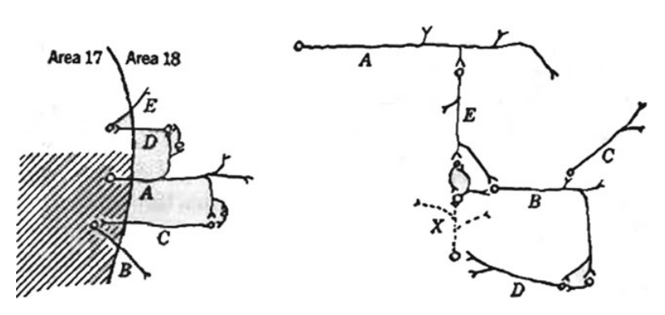


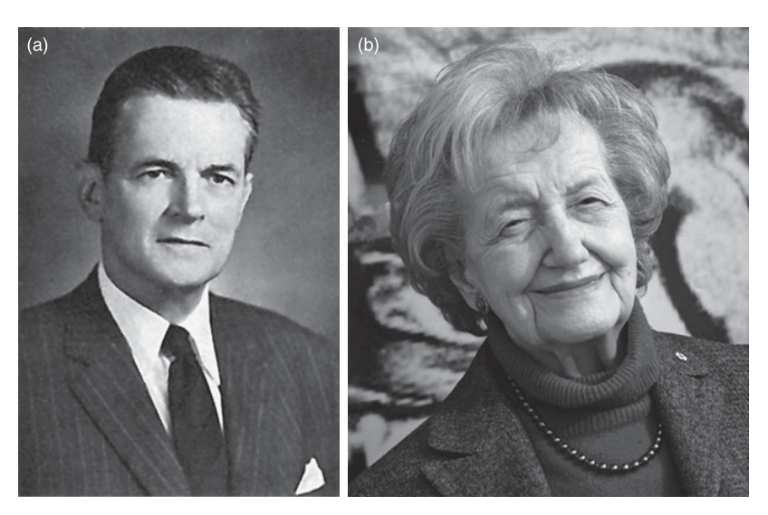
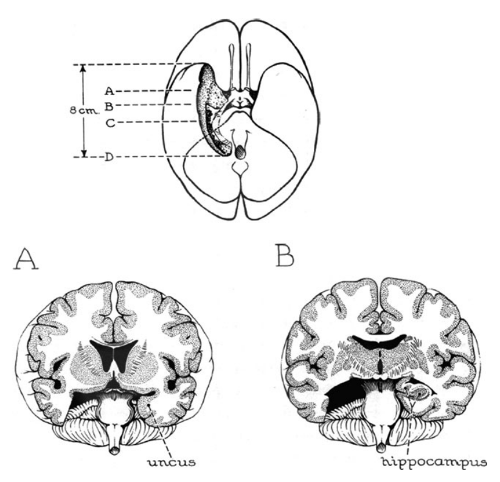
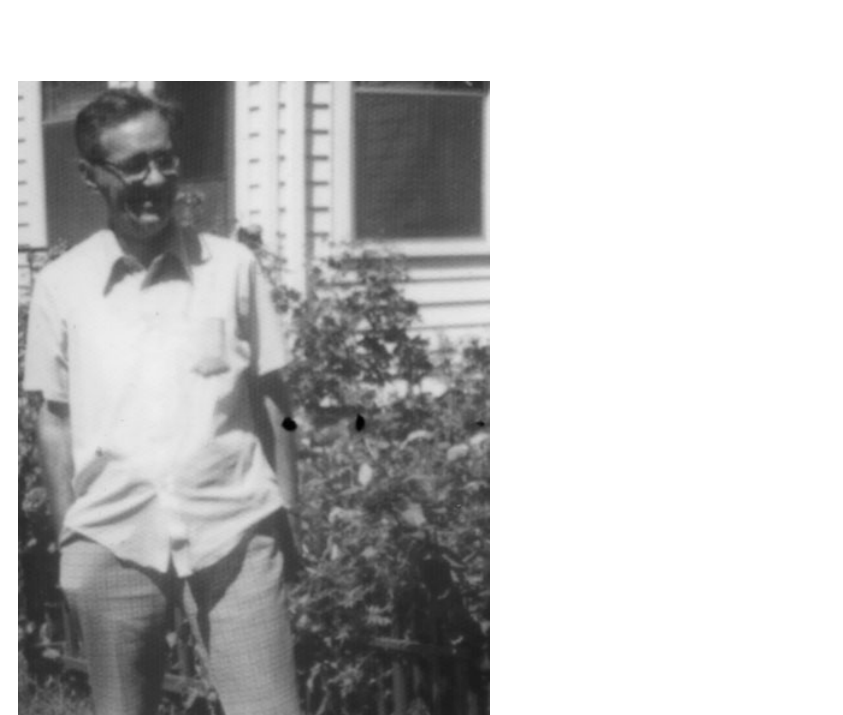
Chương 13 — Thần kinh học: Nền tảng của chẩn đoán hình ảnh não bộ
Chương 13
Thần kinh học: Nền tảng của Chẩn đoán Hình ảnh Não
Thần kinh học lâm sàng ban đầu gắn liền với tâm thần học trong thế kỷ XIX và chỉ bắt đầu tách ra thành một chuyên khoa riêng vào khoảng năm 1900. Tại Bắc Mỹ, Đơn vị Thần kinh của Bệnh viện Thành phố Boston là một trong những cái nôi đầu tiên cho ngành học mới này. Vào giữa thế kỷ, một thế hệ các nhà thần kinh học kế tiếp nhau tại Boston, bao gồm Stanley Cobb, Tracy Putnam, Derek Denny-Brown, Raymond Adams và C. Miller Fisher, đã đặt nền móng cho thần kinh học lâm sàng hiện đại như một chuyên ngành độc lập. Loại thuốc hiệu quả đầu tiên để điều trị động kinh đã được giới thiệu. Hiện tượng ức chế vỏ não lan tỏa (spreading cortical depression) được Leão phát hiện và liên hệ với chứng đau nửa đầu (migraine). Vai trò của dopamine và chất đen (substantia nigra) trong bệnh Parkinson đã được công nhận. Carl Schmidt và Seymour Kety tại Penn đã phát triển các phương pháp đo tuần hoàn mạch máu não, bước tiến then chốt đầu tiên hướng tới sự ra đời của chụp cắt lớp phát xạ positron (PET) và kỷ nguyên mới của chụp quét não. Việc phát triển vắc-xin bại liệt, vốn giúp xóa sổ gần như hoàn toàn căn bệnh gây liệt đáng sợ này, là một trong những thành tựu y học và thần kinh học vĩ đại nhất thế kỷ. Trong những bước tiến hiện đại này, thần kinh học lâm sàng ngày càng được xây dựng trên nền tảng nghiên cứu động vật nghiêm ngặt.
Thần kinh học lâm sàng khởi nguồn từ Hoa Kỳ, Vương quốc Anh và Pháp vào cuối thế kỷ XIX. Lịch sử của nó rất phong phú, sâu sắc và được ghi chép trong nhiều tài liệu khác nhau. Dù ghi nhận lịch sử đó, nhưng với trọng tâm về nguồn gốc của khoa học thần kinh hiện đại, chúng ta sẽ bắt đầu từ Bắc Mỹ.
Nguồn gốc của thần kinh học (xem Scott và Toole, 1998 để biết tóm tắt) bắt đầu ở Anh vào năm 1861 với việc khai trương Bệnh viện Quốc gia chuyên Cứu trợ và
Điều trị Người Bại liệt và Động kinh tại Quảng trường Queen ở London. Tại Hoa Kỳ, Weir Mitchell ở Philadelphia đã xuất bản cuốn ‘‘Gunshot Wounds and Other Injuries of Nerve’’ (Vết thương do đạn bắn và các tổn thương dây thần kinh khác) vào năm 1864 (dựa trên kinh nghiệm của ông trong Nội chiến Hoa Kỳ), và William Hammond, cũng tại Philadelphia, xuất bản ‘‘A Treatise on the Diseases of the Nervous System’’ (Chuyên luận về các Bệnh của Hệ Thần kinh), thường được coi là cuốn sách giáo khoa đầu tiên về thần kinh học. Giáo sư thần kinh học đầu tiên trên thế giới là Jean-Martin Charcot lừng danh tại Paris, được bổ nhiệm năm 1882. Tiếp theo đó ở Anh là việc bổ nhiệm John Hughlings Jackson, thường được tôn vinh là ‘‘cha đẻ của thần kinh học Anh quốc’’ (Scott và Toole, 1998), tại Quảng trường Queen vào năm 1884.
Y học Hoa Kỳ bắt đầu hình thành như một nghề chuyên nghiệp vào cuối thế kỷ XIX, dẫn đầu bởi đội ngũ giảng viên y khoa của Đại học Johns Hopkins mới thành lập. Tại đó, William Osler trong nội khoa và William Halsted trong ngoại khoa đã thiết lập các tiêu chuẩn mới cho đào tạo và thực hành trong một hệ thống trường y và bệnh viện vốn phần lớn chưa có quy chuẩn. Tình trạng lộn xộn kéo dài sang thế kỷ XX đến mức Viện Carnegie cuối cùng phải ủy thác cho một người ngoài ngành y, Louis Flexner, một giáo sư tiếng Anh, đánh giá thực trạng y học Hoa Kỳ và đưa ra khuyến nghị. Từ cuộc rà soát đó đã ra đời ‘‘Báo cáo Flexner’’ (1910), một bản đánh giá từng trường một về giáo dục và thực hành y khoa. Một trong những khuyến nghị chính là các trường y phải duy trì đội ngũ giảng viên toàn thời gian để giảng dạy y khoa. Điều này đã tạo nền tảng cho sự trỗi dậy của đội ngũ giảng viên trường y hàn lâm dựa trên nghiên cứu, và kéo theo đó là sự phát triển của các chuyên khoa lâm sàng và nghiên cứu y sinh.
Các bệnh lý hệ thần kinh theo truyền thống được giảng dạy chung với các bệnh khác trong trường y và do các bác sĩ nội khoa điều trị. Sau Mitchell và Hammond, những giáo sư thần kinh học đầu tiên xuất hiện, cùng với sự thành lập Hiệp hội Thần kinh Hoa Kỳ (Talley, 2005). Nhiều bệnh của hệ thần kinh rất khó chẩn đoán; chẳng hạn, mãi đến năm 1868 Charcot mới xác định được bệnh đa xơ cứng (multiple sclerosis) là một bệnh thần kinh đặc hiệu. Đến năm 1900, hầu hết các trường y lớn đều có khoa bệnh thần kinh và tâm thần, nhưng vẫn chưa có bệnh viện nào chuyên điều trị các rối loạn thần kinh.
Cho đến tận đầu thế kỷ XX, thần kinh học ở Hoa Kỳ vẫn có xu hướng sáp nhập với tâm thần học, cả trong thực hành lâm sàng lẫn trong các khoa tâm thần kinh hợp nhất tại các trường y và bệnh viện. Chưa có sự phân tách rạch ròi dọc theo phổ liên tục của các bệnh thần kinh và tâm thần. Rất ít người có thể kiếm sống chỉ bằng nghề khám chữa bệnh thần kinh đơn thuần. Khi chưa có các phương pháp điều trị hiệu quả cho rối loạn thần kinh, việc thực hành bị giới hạn ở mô tả triệu chứng và suy luận logic để khoanh vùng vị trí não bộ cùng bản chất bệnh lý nền tảng gây ra triệu chứng.
Sau báo cáo Flexner, thần kinh học cùng với các chuyên khoa khác bắt đầu định hình. Đến thập niên 1930 vẫn chỉ có dưới 100 bác sĩ thần kinh được cấp chứng chỉ hành nghề ở Hoa Kỳ; đến năm 1950 con số này đã vượt quá 1.400 (Talley, 2005). Sự gia tăng nhanh chóng này đi kèm với việc nâng cao độ tin cậy trong chẩn đoán các bệnh thần kinh. Chẳng hạn, Talley (2005, 390) lưu ý rằng
Trong suốt thế kỷ XIX, các bác sĩ coi chứng cuồng loạn (hysteria) là tình trạng thần kinh phổ biến nhất ảnh hưởng đến phụ nữ từ tuổi dậy thì đến mãn kinh. . . . Khi chứng cuồng loạn dần suy giảm với tư cách một chẩn đoán thần kinh trong nửa đầu thế kỷ XX, các bác sĩ ngày càng diễn giải nhiều bệnh nhân trong số này, đặc biệt là phụ nữ, là mắc bệnh đa xơ cứng.
(Trong thời gian tôi được đào tạo y khoa, một phụ nữ mắc chứng cuồng loạn vẫn được trình bệnh án trong buổi đi buồng tại khoa thần kinh của Denny-Brown ở Bệnh viện Thành phố Boston vào cuối thập niên 1950.)
Tâm thần học bắt đầu trỗi dậy độc lập vào đầu thế kỷ XX, nhờ cú hích lớn từ Sigmund Freud và các phương pháp phân tâm học của ông. Góc nhìn từ phía thần kinh học (xem Aird, 1994) cho rằng những phương pháp này đã mang lại cho phân tâm học một bản sắc nghề nghiệp vừa hấp dẫn bệnh nhân vừa mang lại thu nhập cao cho nhà phân tâm. Sự phát triển này của tâm thần học đã có tác dụng làm chậm lại sự tách ra độc lập của thần kinh học.
Các nhà thần kinh học bắt đầu khẳng định được bản sắc riêng khi họ bắt đầu sở hữu những công cụ của riêng mình. Điện não đồ (EEG) đã mở đường (xem Chương 8). Sau phát hiện năm 1929 của Hans Berger ở Vienna, một số phòng thí nghiệm trong thập niên 1930 bắt đầu nghiên cứu các sóng điện ghi được từ da đầu, tiến hành nghiên cứu cơ bản về bản chất của các sóng này cũng như sử dụng chúng để phân biệt giữa các dạng cơn động kinh khác nhau. Dù các sóng này chỉ đại diện cho tổng hoạt động của nhiều nơ-ron, EEG là công cụ đầu tiên cung cấp cho các nhà thần kinh học dữ liệu khách quan về trạng thái chức năng của não bộ khi khỏe mạnh cũng như lúc bệnh tật.
Đơn vị Thần kinh của Bệnh viện Thành phố Boston
Nhiều bước phát triển thúc đẩy sự trỗi dậy của thần kinh học đã bắt đầu tại Đơn vị Thần kinh Harvard của Bệnh viện Thành phố Boston, đơn vị giảng dạy thần kinh học đầu tiên tại Hoa Kỳ (Aird, 1994, 233), được thành lập dưới sự dẫn dắt của Stanley Cobb vào năm 1925 và được tài trợ bởi các khoản trợ cấp từ Quỹ Rockefeller.
Stanley Cobb. Stanley Cobb sớm quan tâm đến cơ sở của các cơn co giật động kinh và lần đầu tiên kiểm chứng giả thuyết cho rằng chúng là do tình trạng thiếu oxy não sau co thắt mạch máu não. (Tình trạng thiếu oxy não đang được nghiên cứu tích cực vào cuối thập niên 1950; tôi nhớ công trình của John Barlow tại đơn vị này khi tôi còn là sinh viên y khoa ở đó.)
Sóng não đã được xác nhận và nghiên cứu trong các thí nghiệm trên động vật vào thập niên 1930 bởi một số nhà nghiên cứu, bao gồm Edgar Adrian tại Cambridge, Anh. William Lennox, một nghiên cứu sinh về bệnh học thần kinh tại Đơn vị Thần kinh, đã hợp tác với Cobb cùng Frederic và Erna Gibbs để kiểm chứng giả thuyết rằng các cơn co giật là do những thay đổi trong hóa học thần kinh não bộ. Để phục vụ công trình này, thiết bị mới giúp ghi đồng thời từ nhiều vị trí trên da đầu đã được kỹ thuật viên Albert Grass phát triển. Điều này dẫn đến sự ra đời của Công ty Thiết bị Grass, nơi các thiết bị ghi EEG và phân tích điện sinh lý đã trở thành tiêu chuẩn trong các phòng thí nghiệm thần kinh học và khoa học thần kinh tại Hoa Kỳ cũng như trên toàn thế giới trong nhiều thập kỷ. Máy ảnh Grass là phương tiện chính để ghi lại các dấu vết dao động ký của đáp ứng điện sinh lý cho đến khi công nghệ ghi, lưu trữ và phát lại kỹ thuật số xuất hiện vào thập niên 1990. (Tôi từng có một loạt máy ảnh này trong phòng thí nghiệm của mình từ thập niên 1960. Thảm họa tồi tệ nhất là sau một thí nghiệm tuyệt vời lại phát hiện ra ai đó đã quên tháo nắp ống kính.)
Bệnh động kinh đóng vai trò quan trọng không chỉ trong việc cho phép khảo sát các cơ chế não bộ mà còn là phương tiện tập hợp các nhà thần kinh học. Liên đoàn Chống Động kinh Quốc tế được thành lập theo hình thức hiện đại năm 1935 và Liên đoàn Động kinh Quốc gia năm 1939 (xem Aird, 12), đưa các nhà thần kinh học và các nhóm cộng đồng xích lại gần nhau để chống lại sự kỳ thị xã hội đối với những người mắc bệnh động kinh (mối liên kết giữa các bác sĩ lâm sàng, nhà nghiên cứu và công chúng này sau đó sẽ đóng vai trò trong việc thành lập Viện Thần kinh học tại Viện Y tế Quốc gia [NIH]). Lennox tham gia cả hai tổ chức này, đồng thời thành lập Hiệp hội Động kinh Hoa Kỳ và tạp chí của hội, Epilepsia. Cuốn Atlas of Electroencephalography (Tập bản đồ Điện não đồ) của Gibbs và Gibbs (1950) cùng cuốn Epilepsy and Related Disorders (Động kinh và các Rối loạn Liên quan) của Lennox (1960) đã đóng góp to lớn vào việc định nghĩa động kinh như một thực thể lâm sàng đa dạng cũng như vào chuyên khoa thần kinh học đang nổi lên.
Một bước tiến khác là việc phát hiện ra các loại thuốc có thể làm giảm hoặc kiểm soát cơn co giật mà không gây ức chế quá mức chức năng tâm thần. Công trình này bắt đầu với Tracy Putnam, người từng được đào tạo dưới sự hướng dẫn của Harvey Cushing về phẫu thuật thần kinh tại Bệnh viện Peter Bent Brigham ở Boston và sau đó gia nhập cùng Cobb tại Đơn vị Thần kinh. Cobb ngày càng quan tâm đến các khía cạnh tâm thần của bệnh nhân và năm 1935 chuyển sang Bệnh viện Đa khoa Massachusetts (MGH) để mang cách tiếp cận thần kinh học của mình vào đơn vị tâm thần học mới tại đó.
Putnam thay thế Cobb làm giám đốc đơn vị tại Bệnh viện Thành phố Boston. Vào thời điểm đó, người ta đã biết barbiturate có tác dụng ức chế cơn co giật, nhưng phải trả giá quá đắt là làm suy giảm hoạt động tâm thần (chúng ta đã gặp vấn đề đó trong câu chuyện về H. M., Chương 12). Putnam cùng một cộng tác viên trẻ, Houston Merritt, bắt đầu thử nghiệm các dẫn xuất phenyl khác nhau của barbiturate để tìm hiểu tác động khác biệt của chúng lên các dạng co giật khác nhau. Điều này dẫn đến việc xác định diphenylhydantoin (phenytoin, Dilantin) là một tác nhân hiệu quả vào năm 1938 (xem Merritt và Putnam, 1984). Tầm quan trọng của phát hiện này đối với y học nói chung và thần kinh học nói riêng được thể hiện qua các nhận xét sau:
Dilantin đã trở thành loại thuốc đầu tiên ức chế hiệu quả các cơn co giật động kinh ở người.
(Vilensky et al., 2004)
Thành công tức thì của phenytoin đã mở ra kỷ nguyên hiện đại của liệu pháp thuốc chống động kinh.
(Aird, 1994, 14–15)
Merritt tiếp tục giữ chức trưởng đơn vị trong thời gian ngắn khi cuộc tìm kiếm người kế nhiệm được tiến hành, dẫn đến việc bổ nhiệm Derek Denny-Brown từ Anh. Ông đến vào năm 1941, và sau đó Merritt theo chân Putnam tới Columbia. Cuốn Textbook of Neurology (Giáo trình Thần kinh học) của Merritt (xuất bản lần đầu năm 1958) đã góp phần định hình lĩnh vực mới dựa trên các nguyên lý khoa học mà ông và những người khác đã đưa vào.
Derek Denny-Brown. Derek Denny-Brown được giáo dục tại quê hương New Zealand, sau đó được đào tạo về sinh lý học tủy sống tại Oxford với Sherrington vào thập niên 1920. Ông là một trong nhóm học trò xuất sắc cùng Creed, Liddell và Eccles, những người đã cùng Sherrington cho ra đời tác phẩm kinh điển Reflex Activity of the Spinal Cord (Hoạt động Phản xạ của Tủy sống) năm 1932 (xem Creed et al., 1932). Năm 1930, Denny-Brown và Sherrington ghi nhận sự huy động rõ rệt các đơn vị vận động lớn hơn khi mức độ kích thích các sợi hướng tâm tăng lên, điều được coi là bằng chứng đầu tiên cho ‘‘nguyên lý kích thước’’ (size principle) sau này được Elwood Henneman và các cộng sự nghiên cứu sâu và mô tả như một nguyên lý tổng quát (Henneman, 1967) (xem Chương 9). Denny-Brown tiếp tục phát triển máy điện cơ đồ (EMG) tại London để chẩn đoán các rối loạn cơ và đưa sinh thiết cơ vào làm công cụ hỗ trợ cho mục đích này. Ông cũng cho ra đời những bài báo kinh điển về các cơ chế thần kinh kiểm soát việc đi tiểu và đại tiện, vốn là kiến thức thiết yếu cho việc chăm sóc bệnh nhân chấn thương tủy sống.
Năm 1936, Denny-Brown là Nghiên cứu sinh của Quỹ Rockefeller làm việc cùng Fulton tại Yale, nơi ông bắt đầu các nghiên cứu về tác động của việc cắt bỏ vỏ não trước trung tâm lên chức năng vận động ở khỉ. Điều này trở thành một chủ đề chính trong nghiên cứu của ông tại Đơn vị Thần kinh từ thập niên 1940 đến 1960. Như Vilensky et al. (2004, 510) ghi nhận,
Mục tiêu là tìm hiểu cách các cấp độ khác nhau của hệ thần kinh kiểm soát hành vi vận động ở linh trưởng và qua đó phát triển các liệu pháp nhằm cải thiện các tư thế và cử động bất thường ở bệnh nhân của ông.
Công trình này đã sản sinh ra nhiều bài báo, một số cuốn sách, và hàng trăm thước phim (tổng cộng 222.000 feet) về các rối loạn này. (Các đoạn phim là một phần không thể thiếu trong giảng dạy của Denny-Brown, như tôi nhớ từ các bài giảng vào cuối thập niên 1950 và một đợt thực tập luân khoa tại khoa của ông. Những con khỉ trong phim trông thảm thương trong tình trạng mất chức năng vận động chẳng khác nào các bệnh nhân có tổn thương tương ứng, đó tất nhiên là chủ ý của Denny-Brown, dù việc xem chúng thật không dễ chịu chút nào. Có thể các chuẩn mực ngày nay, bị chi phối bởi sự nhạy cảm của sinh viên và những người cực đoan chống nghiên cứu trên động vật, sẽ không cho phép việc sử dụng động vật như vậy; nhưng điều đó đã được thực hiện với niềm tin rằng không có cách nào tốt hơn để phơi bày bản chất nền tảng của bệnh lý ở người hơn là quan sát và thấu hiểu nó ở một loài động vật khác. Đây là một trong những nền tảng cho sự trỗi dậy của y học khoa học [xem Warner, 1997; Dagi, 1997a].)
Vilensky et al. (2004) lưu ý rằng ‘‘khả năng viết lách của Denny-Brown không ngang tầm với kỹ năng phân tích của ông,’’ một nhận xét cũng đúng với sự tối nghĩa thỉnh thoảng xuất hiện trong các bài giảng của ông về các rối loạn thần kinh phức tạp. Trong đợt thực tập tại khoa, tôi từng hỏi một bác sĩ nội trú xem anh ta có thể giải thích một cách đơn giản lý thuyết của Denny-Brown về cơ sở thần kinh của chứng mất ngôn ngữ (aphasia) không. Anh ta đáp: ‘‘Chúng tôi cũng chẳng hiểu đâu, nên đừng lo.’’
Chương trình đào tạo của Denny-Brown rất chú trọng đến bệnh học thần kinh. Điều này dựa trên một buổi hội chẩn cắt não hằng tuần, trong đó các bác sĩ nội trú trình bày bệnh sử, thăm khám thực thể và thăm khám thần kinh; thảo luận chẩn đoán phân biệt; và dự đoán các phát hiện bệnh học thần kinh. Đây là một ứng dụng của phương pháp ca bệnh lâm sàng – bệnh lý học trong đào tạo y khoa vốn là truyền thống lâu đời tại Harvard. Denny-Brown sau đó sẽ thảo luận quan điểm và dự đoán của riêng mình, rồi bộ não đã cố định trong formalin sẽ được đưa ra và nhà bệnh học thần kinh sẽ cắt não và mô tả các phát hiện. Uy thế của ông lớn đến mức người ta nói đùa rằng nếu dự đoán của ông sai, thì chính bộ não đó bị sai! Như Vilensky et al. (2004) ghi nhận, giai thoại này cho thấy phong cách khá độc đoán của Denny-Brown trong việc điều hành đơn vị. Khi ông không hài lòng, các mạch máu vùng thái dương sẽ bắt đầu đập phập phồng. Điều này xảy ra thường xuyên khi Jerry Lettvin, nhà thần kinh học và sinh lý học thần kinh trẻ tuổi tài năng, làm việc tại khoa của ông vào cuối thập niên 1940. Một câu chuyện nổi tiếng kể rằng, để trêu chọc, Jerry đã sắp xếp sao cho tất cả các dấu hiệu Babinski ở một bên buồng bệnh đều có ngón chân duỗi lên còn bên kia đều cụp xuống. Khi Denny-Brown nhận ra chuyện gì đang xảy ra, các mạch máu vùng thái dương lập tức đập phập phồng.
Học thuật và tài lãnh đạo của Denny-Brown làm lu mờ những bận tâm nhỏ nhặt đó. Đơn vị Thần kinh đã gặt hái thành công vang dội. Vilensky et al. (2004) ghi nhận rằng đến đầu thập niên 1960, trưởng khoa của gần một nửa trong số 41 khoa thần kinh tại Hoa Kỳ từng được đào tạo dưới sự dẫn dắt của Denny-Brown. Ngoài ra còn có các chuyến thăm của những nhà thần kinh học lỗi lạc từ khắp nơi trên thế giới. Ông đã đào tạo hơn 300 bác sĩ thần kinh, qua đó đóng vai trò trung tâm trong sự trỗi dậy của thần kinh học hiện đại.
Raymond Adams. Trong số các học trò có Raymond D. Adams, người gia nhập nhóm của Denny-Brown để đứng đầu bộ phận bệnh học thần kinh tại Đơn vị Thần kinh năm 1941. Công trình ban đầu của ông nghiên cứu về chấn động não thực nghiệm ở mèo và liệt vận động ở chuột, cho thấy cách tiếp cận thực nghiệm đối với bệnh thần kinh dựa trên nghiên cứu động vật vốn đang cung cấp cơ sở khoa học mới cho thần kinh học lâm sàng. Trên bệnh nhân, ông nghiên cứu bệnh não xuất huyết hoại tử cấp tính cùng Denny-Brown và Jan Cammermeyer (Adams et al., 1949). Các nghiên cứu của ông với Denny-Brown đã dẫn đến chuyên khảo kinh điển Diseases of the Muscle (Các bệnh lý của Cơ) (Adams et al., 1954). Trong số các chủ đề khác được nghiên cứu có những biến đổi EEG trong hôn mê gan cùng Joseph Foley (Foley et al., 1950), não úng thủy bẩm sinh, và u tuyến yên. Đó là dấu hiệu sớm cho thấy chiều sâu và phạm vi đề tài đồ sộ mà nhờ đó Adams trở nên lừng danh như một nhà thần kinh học và nhà giáo dục uyên bác.
(Cammermeyer là một nhà mô học tỉ mỉ, người sau đó đã xác định và mô tả đặc điểm của ‘‘nơ-ron tối màu’’ [Cammermeyer, 1962], những tế bào thoái hóa do việc lấy bộ não đã tưới rửa ra quá vội vàng. Tôi quen ông tại NIH trong thập niên 1960 và đã dựa vào kinh nghiệm của ông cho nghiên cứu mô học của riêng tôi về hành khứu. Foley trở thành một nhân vật rất được yêu mến trong ngành thần kinh học và giáo dục y khoa. Tôi nhớ một buổi đi buồng cùng ông tại Đơn vị Thần kinh, trong đó ông mô tả một bệnh nhân được chẩn đoán nhân cách thái nhân cách [psychopathic, nay gọi là ‘‘nhân cách chống đối xã hội’’ - sociopathic] là một người có ‘‘điểm mù đạo đức,’’ kiểu thấu cảm sâu sắc theo người ta suốt phần đời còn lại.)
Năm 1951, Adams trở thành trưởng khoa thần kinh tại MGH ở Boston. Bắt đầu từ nền tảng bệnh học thần kinh, ông mở rộng khoa để bao gồm các phòng thí nghiệm về hóa học thần kinh, miễn dịch học và hành vi (Aird, 1994, 238). Siêu cấu trúc thần kinh được bổ sung với sự ra đời của kính hiển vi điện tử vào giữa thập niên 1950 (xem Chương 4). Khoa này đã góp phần định hình bản chất đa ngành của thần kinh học hiện đại. Tiếp theo đó là các nghiên cứu về một loạt rộng lớn các rối loạn thần kinh. Phạm vi này được phản ánh rất tốt trong cuốn giáo trình thần kinh học của ông. Ngoài ra, ông trở thành một bậc thầy tổ chức các phòng thí nghiệm và khoa thần kinh liên quan tại các cơ sở kết nghĩa. Theo Aird (1994, 238–39),
Là một người thầy, Ray Adams đứng ở một đẳng cấp riêng. Kiến thức uyên bác và những cuộc thảo luận chuyên sâu của ông thường đạt đến mức đáng kinh ngạc. [Với tư cách một người tiên phong của thần kinh học hiện đại] Adams đặc biệt minh họa xuất sắc sự kết hợp giữa một người thầy lâm sàng tuyệt vời với nghiên cứu thần kinh học . . .
C. Miller Fisher. Một trong những đồng nghiệp của Adams tại MGH là C. Miller Fisher, người sớm quan tâm đến tuần hoàn não và các tai biến mạch máu não (Fisher và Adams, 1951). Điều này dẫn đến mối quan tâm suốt đời đối với cơ sở mạch máu và thần kinh của đột quỵ, những cơn mất nguồn cung cấp máu lên não đột ngột vốn là phiên bản não bộ của các cơn đau tim. Mối quan tâm sớm đối với vấn đề này đã dẫn đến một loạt hội nghị về ‘‘bệnh mạch máu não,’’ do Hiệp hội Tim mạch Hoa Kỳ tài trợ, trong đó hội nghị đầu tiên được tổ chức vào tháng 1 năm 1954 tại Đại học Princeton (Phụ lục 13.1). Phân tích các sự kiện dẫn đến một cơn đột quỵ cho thấy có những giai đoạn ngắn ‘‘thiếu máu não cục bộ từng đợt,’’ thường xuất hiện trước khi xảy ra một cơn đột quỵ hoàn chỉnh. Những giai đoạn này được gọi là ‘‘cơn thiếu máu não thoáng qua’’ (transient ischemic attacks – TIAs). Các bài giảng của Fisher về TIA là một phần trong chương trình đào tạo y khoa đại học của chúng tôi về thần kinh học tại MGH vào cuối thập niên 1950.
Một cuộc tranh cãi nhanh chóng nổ ra về thời lượng của một cơn TIA. Tại hội nghị thứ hai (Classification, 1958), Fisher mô tả đặc điểm của TIA là những đợt ‘‘có thể kéo dài từ vài giây đến vài giờ, thời lượng phổ biến nhất là vài giây cho đến 5 hoặc 10 phút’’ (được thuật lại trong Mohr, 2004, trực tuyến); liệu pháp chống đông máu cũng được thảo luận ở giai đoạn sớm này (xem Fisher, 1958). Sau đó, thời lượng như một đặc điểm định nghĩa của TIA đã được nới lỏng, đặc biệt là ở Vương quốc Anh, lên tới tối đa 24 giờ (xem Mohr, 2004). Một quy tắc kinh nghiệm đã xuất hiện mà Mohr (2004) mô tả như sau:
Bác sĩ Fisher nhớ lại cách đây không lâu rằng người ta thường thống nhất rằng, nếu khoảng 24 giờ trôi qua mà vẫn còn bằng chứng tổn thương thần kinh, biến cố đó có lẽ là một cơn đột quỵ. Và nếu trong khoảng thời gian ngắn hơn thế mà rối loạn thần kinh đã tan biến, không ai có thể nói chắc chắn đó có phải là đột quỵ hay không. Điểm nhấn mà ông đặt ra, và vẫn in sâu trong tâm trí tôi từ đó đến nay, là đây là một định nghĩa loại trừ. Một lần nữa, vào thời điểm đó chưa có chẩn đoán hình ảnh để giúp phân biệt các biến cố này, và quy tắc 24 giờ được thiết lập đơn giản chỉ để đảm bảo, nhiều nhất có thể, rằng nếu có một rối loạn kéo dài ít nhất 1 ngày thì mọi người đều đồng ý rằng nó nghiêm trọng và đại diện cho một tổn thương nào đó ở não.
Nhận thức bắt đầu từ thập niên 1980 rằng điều trị chống đông máu có thể hiệu quả trong đột quỵ nếu được bắt đầu trong vòng 2–3 giờ đã mang lại tính cấp thiết mới cho bài toán phân biệt các cơn TIA không để lại di chứng thần kinh với những cơn thực chất là đột quỵ nhỏ hoặc tiền đột quỵ. Kể từ đó, định nghĩa về cơn thiếu máu não thoáng qua đã có sự tiến hóa, được tóm tắt trên tạp chí New England Journal of Medicine như sau (Albers et al., 2002, phỏng theo trang 1715):
Định nghĩa dựa trên thời gian hiện hành: Cơn thiếu máu não thoáng qua là một khiếm khuyết thần kinh khu trú khởi phát đột ngột kéo dài dưới 24 giờ, được cho là có nguồn gốc mạch máu, và giới hạn ở một vùng não hoặc mắt được tưới máu bởi một động mạch cụ thể.
Định nghĩa dựa trên mô được đề xuất: Cơn thiếu máu não thoáng qua là một đợt rối loạn chức năng thần kinh thoáng qua do thiếu máu cục bộ não hoặc võng mạc khu trú gây ra, với các triệu chứng lâm sàng thường kéo dài dưới một giờ, và không có bằng chứng nhồi máu cấp tính.
Thập niên 1950 do đó có thể được xem là chứa đựng những bước đi đầu tiên trong việc chẩn đoán và điều trị một trong những rối loạn thần kinh thường gặp và gây tàn phế nhất. Bằng cách này, nó đã đóng vai trò thiết yếu trong việc định hình chuyên khoa thần kinh học mới.
(Adams và Fisher vẫn còn làm việc tích cực trong thập niên 1980 và 1990, nên con trai chúng tôi là Gordon đã có vinh dự được đào tạo ở bậc đại học cũng như bác sĩ nội trú bởi chính họ tại khoa thần kinh MGH trong thập niên 1980 và 1990. Adams vẫn đầy uy nghi với tư cách một người thầy, còn Fisher vẫn là bậc thầy uy tín về các cơn TIA.)
Viện Thần kinh Montreal
Một người đóng góp quan trọng khác cho sự trỗi dậy của thần kinh học là bác sĩ phẫu thuật thần kinh Wilder Penfield, người mà chúng ta đã gặp ở Chương 10 và các phần khác.
Penfield được đào tạo cùng Sherrington ở Oxford, Gordon Holmes ở Quảng trường Queen, Ramón y Cajal ở Madrid, và Ottfried Foerster ở Breslau, Đức—một gia phả học thuật vô cùng danh giá. Năm 1928, thông qua người quen là Alan
Gregg tại Quỹ Rockefeller, ông được khuyến khích thành lập một viện thần kinh mới. Thông qua một người quen khác là Edward Archibald, ông chọn Đại học McGill ở Montreal, Canada. Khởi đầu năm 1934, Viện Thần kinh Montreal nhanh chóng khẳng định vị thế là một cơ sở hàng đầu thế giới về nghiên cứu thần kinh học và phẫu thuật thần kinh.
Bản thân Penfield tập trung nghiên cứu vào việc tìm hiểu và làm giảm nhẹ chứng động kinh mạn tính.
Điều này bao gồm các nghiên cứu thần kinh học, tâm lý học và EEG ban đầu hết sức cẩn trọng, tiếp theo là các nghiên cứu kích thích vỏ não trên bệnh nhân còn tỉnh táo. Kết quả đã tạo ra nhiều báo cáo kinh điển về định khu và chức năng não bộ (15–17). Điện vỏ não đồ (electrocorticography) và các nghiên cứu bệnh học thần kinh đã hỗ trợ tìm hiểu sinh lý bệnh học thần kinh nền tảng của các dạng động kinh có triệu chứng. Việc ông chiêu mộ Herbert Jasper ... đã dẫn đến không chỉ các nghiên cứu EEG kỹ lưỡng trước, trong và sau phẫu thuật, mà còn cả các nghiên cứu sinh lý thần kinh cơ bản về những dạng cơn co giật động kinh khác nhau. ... Cách tiếp cận toàn diện này tất yếu đã thu hút đông đảo học viên thuộc các chuyên khoa lâm sàng và tiền lâm sàng—nhiều người trong số họ sau này trở thành giáo sư tại Hoa Kỳ, Canada và các quốc gia khác.
(Aird, 1994, 18–19)
Điều này một lần nữa khẳng định rằng việc thăm khám, đánh giá cẩn trọng bệnh nhân là dấu ấn đặc trưng của nền thần kinh học mới. Sự tập trung vào động kinh cho thấy những bước tiến ban đầu của các nhà thần kinh học cũng lan tỏa sang sự trỗi dậy của phẫu thuật thần kinh hiện đại.
Đóng góp của Penfield cho thần kinh học và khoa học thần kinh, bên cạnh công việc của một bác sĩ phẫu thuật thần kinh, là rất nhiều. Trong thời gian đào tạo cùng Ramón y Cajal vào thập niên 1920, ông đã thực hiện các nghiên cứu mô tả đặc điểm của những loại tế bào thần kinh đệm (neuroglial cells) khác nhau. Chúng ta đã thảo luận về các nghiên cứu tiên phong của ông trên vỏ não người, với việc làm sáng tỏ hình nhân đồ (homunculus) ở người (Chương 10). Quá trình đào tạo mà Brenda Milner nhận được tại đây hóa ra lại vô giá trong việc đặt nền móng cho khoa học thần kinh nhận thức qua nghiên cứu của bà về H. M., như đã thuật lại ở Chương 12.
Những phẩm chất cá nhân đáng ngưỡng mộ của Penfield chứng minh rằng một người có cuộc sống và nhân cách ‘‘bình thường’’ vẫn có thể đạt được những tiêu chuẩn cao, trái ngược với động lực thiêu đốt mọi thứ của Cushing và một số người khác.
Aird (1994, 19) nhận xét rằng
Penfield luôn gây ấn tượng với tôi như một người có phần giống bậc thánh nhân; điều này vượt xa thói quen đọc Kinh Thánh vào các tối Chủ nhật của ông. Ông là một người chu đáo và nhân hậu trong quan hệ với bệnh nhân và đồng nghiệp. Đồng thời, trí tuệ sắc bén của ông đòi hỏi những điều tốt nhất từ bản thân và nhân viên trong cả nghiên cứu lẫn việc vận hành viện.
Cũng có những người khác giống như Penfield. ‘‘Cầu Chúa ban cho nhân loại sản sinh ra nhiều người như William Lennox hơn nữa: những con người của trí tuệ, lòng kiên nhẫn, sự tử tế và tận tụy’’ (Aird, 1994, 13).
Tuần hoàn Não: Bối cảnh Lịch sử
Một trong những bước phát triển thú vị nhất của thập niên 1950, dù chưa được biết đến rộng rãi, là cách tuần hoàn và chuyển hóa não bộ được khám phá và cách điều này đặt nền móng cho sự ra đời của chẩn đoán hình ảnh não. Câu chuyện này, như thường lệ, có gốc rễ sâu xa.
Ý tưởng rằng chuyển hóa não bộ có thể được dùng để quan sát bộ não đang hoạt động bắt nguồn từ những quan sát về sự thay đổi của các mạch máu trong não khi hoạt động tâm trí. Như William James thuật lại trong cuốn The Principles of Psychology (Các Nguyên lý của Tâm lý học) (1890, 98–99), nhà thần kinh học người Ý Mosso đã thực hiện nhiều quan sát trên các bệnh nhân sau chấn thương sọ não về nhịp đập của não trong lúc hoạt động tâm trí. Trong cuốn sách Ueber den Kreislauf des Blutes im Menschenlichen Gehirn (Về sự tuần hoàn máu trong não người), Mosso (1881) lưu ý (bản dịch của Christiane Nockels Fabbri, 121):
Áp lực máu nội sọ tăng lên ngay lập tức mỗi khi đối tượng được nói chuyện cùng, hoặc khi người đó bắt đầu suy nghĩ tích cực, chẳng hạn như giải một bài toán nhẩm. . . . Chúng ta phải giả định một sự điều chỉnh hết sức tinh tế mà qua đó tuần hoàn đi theo nhu cầu của hoạt động não bộ. Máu rất có thể dồn tới từng vùng vỏ não tùy theo mức độ hoạt động mạnh nhất của vùng đó. . . . những sự xung huyết sơ cấp mà chúng ta đang xem xét đi theo hoạt động của các tế bào não nhờ một cơ chế vận mạch phản xạ thích ứng, chắc chắn tinh vi chẳng kém gì cơ chế điều hòa nguồn cung máu với hoạt động tế bào ở bất kỳ cơ hay tuyến nào.
Những quan sát cách đây 130 năm này đến nay vẫn đúng như thuở ban đầu. Mosso rất được kính trọng vào thời của ông. Ông là một trong những khách mời đặc biệt, cùng với Ramón y Cajal, tại lễ khánh thành Đại học Clark năm 1904 (xem Haines, 2007).
Những kết luận tương đồng đến kinh ngạc đã được Charles Sherrington, nhà sinh lý học người Anh, rút ra trong cùng thời kỳ. C. S. Roy và Sherrington đã thực hiện một nghiên cứu (1890) trên vỏ đại não của khỉ, trong đó quan sát thấy những thay đổi ở các mạch máu não bề mặt khi kích thích điện các vùng cục bộ của vỏ não. Họ đưa ra định đề rằng não bộ có
. . . các cơ chế nội tại mà nhờ đó nguồn cung cấp mạch máu của nó có thể được điều biến cục bộ tương ứng với những biến thiên cục bộ của hoạt động chức năng . . . [chúng tôi đưa ra định đề rằng] các sản phẩm hóa học của quá trình chuyển hóa não . . . gây ra sự thay đổi khẩu kính của các mạch máu não.
Nghiên cứu này từng bị lãng quên, để rồi được tái phát hiện trong những năm đầu của ngành chẩn đoán hình ảnh não. ‘‘Công trình của [họ] về tuần hoàn não . . . chỉ đến ngày nay mới được các chuyên gia được trang bị những kỹ thuật tinh vi ca ngợi’’ (Eccles và Gibson, 1979, 5). Hiện nay nó được công nhận vì những hiểu biết sâu sắc mang tính tiên phong (xem Raichle, 2009).
Học trò của Sherrington là John Fulton, khi làm việc cùng Harvey Cushing, đã báo cáo về một bệnh nhân mà trong ca phẫu thuật não, người ta có thể quan sát thấy sự gia tăng lưu lượng máu ở thùy chẩm khi kích thích thị giác (Fulton, 1928). Điều này cũng từng bị lãng quên nhưng nay được coi là một quan sát mang tính bước ngoặt trên con đường tiến tới chẩn đoán hình ảnh não.
(Tôi nhớ bác sĩ X-quang Merrill Sossman từng kể với chúng tôi tại Trường Y Harvard vào cuối thập niên 1950 rằng, trong khi kích thích thị giác một bệnh nhân, chụp mạch X-quang đầu cho thấy sự giãn nở các mạch máu dọc theo đường chiếu thị giác từ nhân gối ngoài đến thùy chẩm.)
Từ Tuần hoàn Não đến Chuyển hóa Não
Những ‘‘kỹ thuật tinh vi’’ được nhắc đến đã bắt đầu bằng việc sử dụng các chất đánh dấu phóng xạ để nghiên cứu lưu lượng máu não bởi Seymour Kety và các đồng nghiệp (Kety và Schmidt, 1948). Louis Sokoloff, học trò của Kety và là người tiên phong trong việc phát triển các phương pháp chẩn đoán hình ảnh não, kể lại câu chuyện này (xem http://www.nap.edu/html/biomems/skety.html):
Tại Hoa Kỳ, thương vong trong Thế chiến II (1941–1945) đã mang lại mối quan tâm lớn hơn đối với sinh lý học tuần hoàn và các cơ chế mà qua đó cơ thể bảo vệ lưu lượng máu lên não để đáp ứng với chấn thương. Carl Schmidt tại Đại học Pennsylvania bắt đầu phát triển các phương pháp đo định lượng lưu lượng máu não ở người. Ông có sự tham gia của Seymour Kety, một giảng viên trẻ, và họ cùng nhau phát minh ra một phương pháp đo chênh lệch động – tĩnh mạch của N2O và áp dụng nó cho oxy, carbon dioxide, glucose và lactate.
Các thí nghiệm của họ vào khoảng năm 1950 và sau đó với các chất đánh dấu khác nhau đã giúp họ phân biệt giữa lưu lượng máu vùng, sự hấp thu glucose và mức tiêu thụ oxy (Kety và Schmidt, 1948) (Hình 13.1, Phụ lục 10.2). Họ đã chỉ ra được rằng ba đặc tính này gắn kết chặt chẽ với nhau: Khi một vùng não cục bộ hoạt động, cả ba đều tăng lên. Như Mosso (1881) lần đầu quan sát, điều này giống như sự gia tăng nguồn cung máu đi tới một cơ đang hoạt động, ngoại trừ việc cơ bắp, giống như hầu hết các cơ quan khác của cơ thể, không quá phụ thuộc vào oxy cho chuyển hóa hiếu khí vì nó cũng có thể thu năng lượng bằng chuyển hóa kỵ khí.
Tác động của công trình này được Sokoloff mô tả:
Cách tiếp cận khái niệm tài tình này đã dẫn đến phương pháp Kety-Schmidt để xác định định lượng lưu lượng máu não và chuyển hóa ở người không gây mê. Công trình thực nghiệm dẫn đến sự phát triển của phương pháp này được tài trợ bởi một khoản trợ cấp từ Scottish Rite và thực hiện trên những người từ chối nhập ngũ vì lương tâm đã tình nguyện làm đối tượng nghiên cứu y khoa thay vì gia nhập lực lượng vũ trang trong chiến tranh. Phương pháp N2O cùng năm ứng dụng của nó trong các trạng thái sinh lý và bệnh lý khác nhau đã được công bố trong một số duy nhất của tạp chí Journal of Clinical Investigation năm 1948. Tác động của nó giống như một tiếng sét làm cách mạng hóa nghiên cứu về não người.
Vô số ứng dụng trong thần kinh học, tâm thần học và nội khoa đã mang lại phần lớn kiến thức của chúng ta về sinh lý học bình thường, sinh lý bệnh học và dược lý học của tuần hoàn và chuyển hóa não người khi khỏe mạnh cũng như lúc bệnh tật. Carl Schmidt, người đứng đầu khoa nơi Seymour [Kety] phát triển phương pháp này, đã viết:
Giờ đây, lần đầu tiên, nhà sinh lý học lâm sàng không còn ở thế bất lợi khi nghiên cứu tuần hoàn trong não người nữa. Thực tế là ông ấy hiện có thể tìm hiểu về điều này, và mối liên hệ của nó với các chức năng chuyển hóa của cơ quan được cấp máu, nhiều hơn bất kỳ cơ quan nào khác của cơ thể. Sự thay đổi này là một trong những lợi ích nhỏ bé từ các hoạt động nghiên cứu thời chiến và là một ví dụ nữa về những lợi ích có thể kỳ vọng khi trao cho những chàng trai trẻ xuất sắc cơ hội phát triển và kiểm chứng các ý tưởng độc đáo.
Công trình này đã dẫn đến sự phát triển vào thập niên 1970 của phương pháp lập bản đồ hoạt động 2-deoxyglucose (2-DG) dùng để lập bản đồ các mô thức hoạt động não ở động vật và phương pháp chụp cắt lớp phát xạ positron (PET) cho cùng mục đích ở người. Kety là người dẫn dắt nỗ lực này. Cách tiếp cận khoa học khiêm nhường của cá nhân ông là nguồn cảm hứng cho các đồng nghiệp, như Sokoloff hồi tưởng:
Đó là một trải nghiệm tuyệt vời. Seymour là một người lãnh đạo đầy cảm hứng. Dù sở hữu trí tuệ sừng sững, ông không bao giờ để nó lấn át chúng tôi. Ông luôn khiêm tốn, giản dị và lắng nghe mọi điều chúng tôi nói. Thường thì ông sẽ đặt câu hỏi và kiên nhẫn cân nhắc ý kiến của chúng tôi mặc dù, như sau này chúng tôi mới biết, ông đã biết sẵn câu trả lời. Thái độ của ông kích thích chúng tôi tư duy phản biện và sâu sắc. Một câu nói thường trực của ông là: ‘‘Nào, hãy nghĩ về điều đó xem.’’ Ông đề cao sự hình thành khái niệm, tính nguyên bản và nét độc đáo trên hết thảy. Trong dự án đầu tiên của tôi với tư cách nghiên cứu sinh . . . chúng tôi bị đối thủ công bố trước. . . . Ông an ủi tôi bằng câu nói: ‘‘Đừng buồn. Chắc nó không phải là một ý tưởng quá vĩ đại đâu. Người khác cũng nghĩ ra nó mà’’—một tâm thế điển hình cho thái độ của ông.
Trung tâm Lâm sàng của NIH đang được xây dựng khi ông đến, và Seymour, trên cương vị giám đốc khoa học, có trong tay những nguồn lực mà ông coi là gần như vô hạn về không gian, ngân sách và biên chế để tổ chức các chương trình nghiên cứu nội bộ của NIMH [Viện Sức khỏe Tâm thần Quốc gia] và NINDB [Viện Quốc gia về Bệnh Thần kinh và Mù lòa]. Ông tiếp cận trọng trách này theo phong cách đặc trưng của Kety: thận trọng, có chủ đích, có hệ thống, cần mẫn và vô cùng khiêm nhường. Ông không có định kiến sẵn về cách tốt nhất để nghiên cứu các bệnh tâm thần và thần kinh nhưng có niềm tin rằng sẽ cần thêm nhiều kiến thức cơ bản, nền tảng hơn về cấu trúc và chức năng của hệ thần kinh. Do đó, ông chú trọng khoa học cơ bản và phân bổ hầu hết nguồn lực cho các phòng thí nghiệm được tổ chức ít nhiều theo các ranh giới chuyên ngành truyền thống.
. . . Seymour đã hợp tác với một số nhà hóa sinh ở châu Âu và Hoa Kỳ (ví dụ: Heinrich Waelsch, Paul Mandel, Derek Richter, Henry McIlwain) trong nỗ lực mang lại sự công nhận, tôn trọng và quan tâm lớn hơn cho lĩnh vực hóa học thần kinh. Nỗ lực của họ đã dẫn đến việc khởi xướng các hội nghị chuyên đề hóa học thần kinh hai năm một lần vào năm 1954, sau này chuyển thành Hiệp hội Hóa học Thần kinh Quốc tế, sự ra đời của tạp chí Journal of Neurochemistry năm 1956, và việc thành lập Tổ chức Nghiên cứu Não bộ Quốc tế (IBRO) năm 1960.
Seymour dành riêng cho Phân khoa Chuyển hóa Não của mình một không gian phòng thí nghiệm khiêm tốn để tự tiến hành nghiên cứu. Vì phương pháp nitơ oxit (N2O) của ông chỉ đo được lưu lượng máu và tốc độ chuyển hóa trung bình của toàn bộ não, nó không thể định khu những thay đổi của các chức năng này tại các vùng riêng biệt của não. Do đó, ông bắt tay vào phát triển một phương pháp đo lưu lượng máu não cục bộ (local CBF) dựa trên lý thuyết trao đổi khí trơ giữa máu và mô mà ông đã phát triển và công bố trước đó vào năm 1951. Với sự giúp đỡ của một số nghiên cứu sinh (như William Landau, Walter Freygang, Lewis Rowland và chính tôi), ông đã tài tình chuyển hóa các lý thuyết của mình thành một phương pháp vận hành được để đo lưu lượng máu não cục bộ. Phương pháp này có thể dùng với bất kỳ chất đánh dấu trơ về mặt hóa học nào có khả năng khuếch tán tự do qua hàng rào máu – não, nhưng họ đã chọn trifluoroiodomethane gắn nhãn 131I ([131I]CF3I), một loại khí có các đặc tính cần thiết. Việc định khu trong não đạt được nhờ một kỹ thuật chụp phóng xạ tự động định lượng độc đáo, điều khiến việc sử dụng nó bị giới hạn trên động vật. Phương pháp này và việc sử dụng nó để xác định lưu lượng máu não cục bộ ở từng đơn vị cấu trúc và chức năng riêng lẻ của não ở mèo tỉnh táo và mèo gây mê được báo cáo lần đầu năm 1955. Khi dùng để khảo sát tác động của kích thích thị giác, các ảnh phóng xạ tự động cho thấy rõ rệt sự gia tăng lưu lượng máu não ở các cấu trúc khác nhau của đường dẫn truyền thị giác và dẫn đến minh chứng được công bố đầu tiên về chẩn đoán hình ảnh chức năng não, một lĩnh vực hiện đang tận hưởng sự phổ biến to lớn.
Một tường thuật toàn diện về sự phát triển lịch sử của hàng loạt phương pháp hiện đại cho chẩn đoán hình ảnh chức năng não được mô tả bởi Raichle (2009).
Hiện tượng Ức chế Lan tỏa của Leão và Chứng Đau nửa đầu
Chúng ta không thể khép lại nghiên cứu thần kinh học giữa thế kỷ mà không nhắc đến ‘‘ức chế lan tỏa’’ (spreading depression), vốn luôn gắn liền với tên tuổi của người phát hiện ra nó, Aristides Leão.
Leão sinh năm 1914 tại Rio de Janeiro, Brazil, trong một gia đình khá giả. Khi còn là sinh viên y khoa, ông mắc một căn bệnh khiến ông phải tạm nghỉ học. Sau khi bình phục, và vì có điều kiện tài chính độc lập, ông quyết định nghỉ ngơi một thời gian và vào năm 1940 đã thực hiện chuyến du học sang Hoa Kỳ. Khi ở đó, ông được nhận vào chương trình đào tạo lấy bằng tiến sĩ sinh lý học tại Trường Y Harvard dưới sự hướng dẫn của Hallowell Davis và Arturo Rosenblueth. Trước đó, người ta đã quan sát thấy rằng kích thích điện lên bề mặt vỏ đại não được bộc lộ của động vật thí nghiệm có thể dẫn đến sự lan truyền hoạt động qua vùng vỏ não xung quanh, một hiện tượng gọi là ‘‘động kinh vỏ não.’’ Họ gợi ý Leão nghiên cứu cơ chế của nó cho đề tài tốt nghiệp của mình.
Leão sớm quan sát thấy trong các thí nghiệm của mình rằng, thay vì một sự lan truyền hoạt động kích thích qua vỏ não, đặc điểm đáng chú ý nhất của đáp ứng vỏ não đối với một cú sốc điện cục bộ lại là sự lan truyền của tình trạng ức chế hoạt động sóng điện đang diễn ra xung quanh. Những phát hiện cơ bản của ông được công bố trong một bài báo lập tức trở thành kinh điển vào năm 1944 (Leão, 1944a; Phụ lục 13.3). Như đã nêu trong đoạn mở đầu (359):
Nghiên cứu này bắt nguồn từ nỗ lực thu thập thêm dữ liệu để hiểu về điện đồ vỏ não xảy ra trong ‘‘động kinh thực nghiệm,’’ và các điều kiện mà kích thích điện khơi gợi nên nó. Ngay từ đầu quá trình phát triển nghiên cứu, một đáp ứng thú vị, được khơi gợi bởi kích thích điện, đã được ghi nhận ở vỏ não thỏ. Đặc điểm nổi bật của đáp ứng này là sự suy giảm rõ rệt và kéo dài của hoạt động điện ‘‘tự phát’’ của vỏ não. Chúng tôi đã nỗ lực xác định bằng thực nghiệm một số đặc tính của đáp ứng này.
Kết quả của ông gây ấn tượng mạnh bởi sự tinh tế và rõ ràng. Như thể hiện ở Hình 13.2, đáp ứng diễn ra dưới dạng sự triệt tiêu hoạt động điện, lan truyền với tốc độ ổn định khoảng một milimét mỗi phút theo một vòng tròn mở rộng dần xung quanh điểm kích thích. Sau giai đoạn ức chế, có thể xuất hiện hoạt động ‘‘co cứng – co giật’’ (tonic–clonic) xen kẽ gợi nhớ đến các cơn co giật động kinh. Ông lưu ý rằng
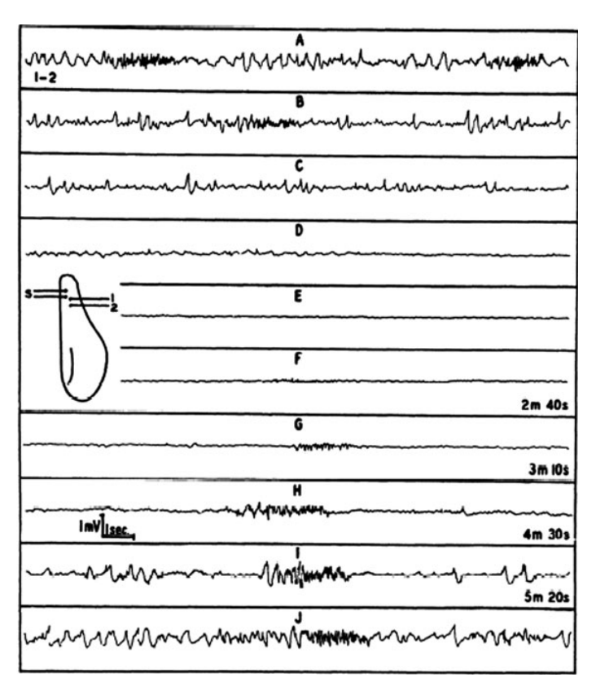
. . . sự ức chế và hoạt động ‘‘co cứng – co giật’’ của động kinh vỏ não thực nghiệm dường như là những hiện tượng có liên hệ mật thiết với nhau. Sự lan truyền của các đáp ứng co cứng – co giật có lẽ được trung gian bởi chính các thành phần vỏ não tham gia vào sự lan truyền của ức chế. Hai quá trình này chủ yếu hoặc hoàn toàn mang tính vỏ não, tức là chúng không đòi hỏi sự đóng góp từ các trung tâm dưới vỏ.
Giãn mạch và tăng lưu lượng máu trong các mạch máu màng nuôi (pial blood vessels) đã được chứng minh là xảy ra đồng thời với hiện tượng ức chế lan tỏa (Leão, 1944b). Theo một nhà quan sát sau này, đây là minh chứng đầu tiên về sự gia tăng lưu lượng máu não không phải để đáp ứng với sự gia tăng hoạt động thần kinh não bộ (Somjen, 2005). Năm 1945, Leão và Morrison gợi ý rằng tốc độ lan truyền chậm của sự ức chế có thể liên quan đến chuyển động trôi chậm của vùng mù tạm thời (ám điểm – scotoma) gắn liền với chứng đau nửa đầu.
Năm 1944, Leão trở về Rio để thiết lập phòng thí nghiệm riêng và tiếp tục các thí nghiệm của mình. Ban đầu, có một số hoài nghi về phát hiện của ông, đặc biệt vì chúng đến từ một nghiên cứu sinh tiến sĩ trẻ tuổi. Điều này bắt đầu từ chính các người thầy hướng dẫn ban đầu của ông: Davis được thuật lại là đã nhận xét về những phát hiện ban đầu rằng ‘‘không có gì giống một hiện tượng mới bằng một nhiễu ảnh (artifact) đẹp’’ (trích trong Teive et al., 2005) (một thái độ lành mạnh, có thể nói như vậy, đối với bất kỳ người thầy và học trò nào). Tuy nhiên, sự hoài nghi trong cộng đồng nghiên cứu động kinh dần nhường chỗ cho sự chấp nhận khi ngày càng nhiều nhà nghiên cứu kiểm chứng phát hiện này không chỉ ở vỏ não mà ở cả các mô khác nữa, tìm thấy nó ở hồi hải mã, thể vân và tiểu não cùng nhiều nơi khác.
Thêm một bình luận về vấn đề ngôn ngữ trong giao tiếp khoa học quốc tế: tôi đã gặp Leão tại một hội nghị của Hiệp hội Sinh lý học Thụy Điển vào giữa thập niên 1970 khi cả hai chúng tôi tình cờ có mặt tại Stockholm và là khách mời của chủ tịch hội khi đó là Carl Gustav Bernhard. Bernhard nhất quyết yêu cầu hội nghị phải được trình bày hoàn toàn bằng tiếng Anh. Trong bữa tiệc cuối hội nghị, khi hết diễn giả này đến diễn giả khác phát biểu bằng tiếng Anh, tôi nhìn quanh và nhận ra Leão và tôi là hai người không phải gốc Thụy Điển duy nhất có mặt mà nỗ lực này hướng tới. Göran Liljestrand, khi đó đã ngoài tám mươi tuổi, là diễn giả Thụy Điển duy nhất nói bằng tiếng Thụy Điển, giải thích rằng ông thuộc thế hệ trước vốn học tiếng Đức làm ngôn ngữ khoa học quốc tế.
Võng mạc ở nhiều loài động vật hóa ra lại mang đến những màn trình diễn đặc biệt ấn tượng về hiện tượng ức chế lan tỏa. Chính mắt tôi đã chứng kiến điều này trong một chuyến thăm Rio vài năm trước, khi một trong những người chủ nhà của tôi là Hiss Martins-Ferreira, cộng sự lâu năm của Leão và là một trong những người đóng góp vĩ đại cho hiểu biết của chúng ta về ức chế lan tỏa. ‘‘Lại đây,’’ ông nói, ‘‘tôi sẽ cho anh thấy tôi có thể tạo ra sự ức chế lan tỏa theo ý muốn.’’ Ông và trợ lý thiết lập một mẫu vật võng mạc ếch được bộc lộ. Theo hiệu lệnh, người trợ lý chích nhẹ một mũi nhọn vào giữa võng mạc và mời tôi quan sát điều gì xảy ra dưới kính hiển vi. Ngay lập tức, bắt đầu từ vị trí mũi chích, tôi quan sát thấy một đốm tối nhỏ xíu, lớn dần thành một đĩa tối mở rộng không ngừng để nuốt chửng toàn bộ võng mạc. Đường biên của nó sắc nét đến kinh ngạc, giống như khẩu độ đang mở ra của một chiếc máy ảnh. Tôi phải thừa nhận đó là một hiện tượng kỳ thú.
Phát hiện ra hiện tượng ức chế lan tỏa minh họa cho nhiều chủ đề trong tổng quan của chúng ta về nghiên cứu thần kinh học vào giữa thế kỷ XX. Luôn có những khám phá chờ được thực hiện bởi các nghiên cứu sinh tinh tường. Những hiện tượng có thật phải được phân biệt với nhiễu ảnh. Bạn không nhất thiết phải được đào tạo về y khoa mới có thể tạo ra những khám phá liên quan đến các rối loạn lâm sàng. Nghiên cứu trên động vật mang lại những manh mối quý giá cho các cơ chế làm nền tảng cho chức năng và rối loạn thần kinh ở người.
Mối liên hệ với chứng đau nửa đầu được chấp nhận sau khi Peter Milner vào năm 1958 chỉ ra sự tương quan giữa hiện tượng ức chế lan tỏa của Leão và mô tả của Karl Lashley năm 1941 về tốc độ di chuyển của các ám điểm mà ông quan sát thấy gắn liền với những cơn đau nửa đầu của chính mình. Kể từ thập niên 1950, mối tương quan giữa ức chế lan tỏa và tiền triệu (aura) của chứng đau nửa đầu đã được xác lập vững chắc. Hiện tượng ức chế lan tỏa cũng thu hút sự chú ý vì mối liên hệ khả dĩ của nó với chứng quên toàn bộ thoáng qua và các rối loạn mạch máu não. Các nghiên cứu gần đây đã theo dõi hiện tượng ức chế lan tỏa ở bệnh nhân người bằng chụp cộng hưởng từ chức năng khuếch tán và từ não đồ (MEG).
Những quan sát đầu tiên của một nghiên cứu sinh vẫn tiếp tục mang lại những hiểu biết sâu sắc về sinh lý học và bệnh lý học phức tạp của các mô vỏ não.
Việc Xóa sổ Bệnh Bại liệt
Sẽ không có bản tường thuật nào về những tiến bộ của thần kinh học trong thập niên 1950 được trọn vẹn nếu thiếu việc nhắc đến công cuộc xóa sổ bệnh bại liệt (poliomyelitis). Mặc dù vấn đề này khởi nguồn trong ngành virus học và đòi hỏi phải phát triển vắc-xin, nó vẫn thuộc về bản tường thuật về thần kinh học này vì ‘‘chứng liệt trẻ em’’ từng là một trong những bệnh thần kinh đáng sợ nhất.
Bất kỳ ai từ trẻ sơ sinh đến người trưởng thành đều có nguy cơ mắc bệnh. Chúng ta đã lưu ý rằng nhà sinh lý học thần kinh Birdsey Renshaw là một nạn nhân (Chương 9). Có lẽ bệnh nhân nổi tiếng nhất từng sống sót là tổng thống tương lai của Hoa Kỳ, Franklin D. Roosevelt, bị mắc bệnh ở tuổi 41. Bất kỳ ai thuộc thế hệ của tác giả, sinh ra trước khoảng năm 1950, đều biết nỗi lo âu trong mỗi gia đình vào cuối mùa hè và đầu mùa thu, khi một cái sụt sịt mũi có thể dẫn đến chẩn đoán đáng sợ cùng kết cục thay đổi cuộc đời hoặc cướp đi mạng sống. Số ca mắc hằng năm tại Hoa Kỳ dao động từ 20.000 đến 50.000 ca (xem bài viết ‘‘polio’’ trên Wikipedia).
Phương cách chữa trị căn bệnh này phụ thuộc vào việc phát triển các phương pháp nuôi cấy mô để nhân giống virus trong tế bào khỉ sao cho có thể nhận diện và nuôi cấy virus với số lượng lớn trong ống nghiệm, cho phép điều chế vắc-xin chống lại nó. Nghiên cứu cơ bản được thực hiện vào cuối thập niên 1940 trong phòng thí nghiệm của John Enders tại Harvard bởi Thomas Weller và Frederick Robbins cùng Enders. Việc phân lập thành công virus của họ đã dẫn đến việc phân lập nó từ mẫu phân, và con đường phát triển vắc-xin đã được mở ra.
(Đợt dịch bại liệt cuối cùng ở Hoa Kỳ diễn ra vào mùa thu năm 1955; khi còn là sinh viên y khoa năm nhất, tôi đã tình nguyện trực suốt đêm tại MGH để hỗ trợ các bệnh nhân mới phải thở máy duy trì sự sống trong khoa cấp cứu. Đã có sự chậm trễ trong việc đưa vắc-xin tiếp cận rộng rãi trên toàn cầu. Trong một đợt thực tập ngoại trú tại Bệnh viện Hoa Kỳ ở Beirut, Lebanon, vào mùa hè năm 1957, tôi đã tham gia chăm sóc một phụ nữ người Anh được đưa đến khoa thần kinh của bác sĩ Fuad Sabra [một học trò của Denny-Brown] từ một công ty dầu mỏ ở Iran trong một chiếc phổi sắt. Bà vừa đi khiêu vũ tập thể về, hôm sau thấy mệt, và đột ngột bị liệt, không thể tự thở được. Cuối cùng bà được chuyển về quê nhà tại Vương quốc Anh. Bà là một trong những người sống sót cuối cùng nhờ phổi sắt. Trải nghiệm này khiến nhiều người trong chúng ta cảm thấy thật dễ dàng để bảo vệ việc cấp ngân sách cho nghiên cứu y sinh: Bạn thà dồn tiền vào những chiếc phổi sắt tinh vi hơn hay vào việc phát triển các phương pháp nuôi cấy mô cho virus?)
Việc phát triển vắc-xin diễn ra khẩn trương vào đầu thập niên 1950, với Jonas Salk tạo ra loại virus bất hoạt dạng tiêm và Albert Sabin thúc đẩy loại virus giảm độc lực dạng uống. Salk được ca ngợi rộng rãi vì thành tựu của mình, dù vinh quang Nobel lại thuộc về ba người đã phân lập được virus. Tên tuổi của ông vẫn sống mãi thông qua việc thành lập Viện Nghiên cứu Sinh học Salk vào thập niên 1960, một viện nghiên cứu tinh hoa với các tòa nhà do Louis Kahn thiết kế, nằm trên một địa điểm tuyệt đẹp ở San Diego nhìn ra Thái Bình Dương.
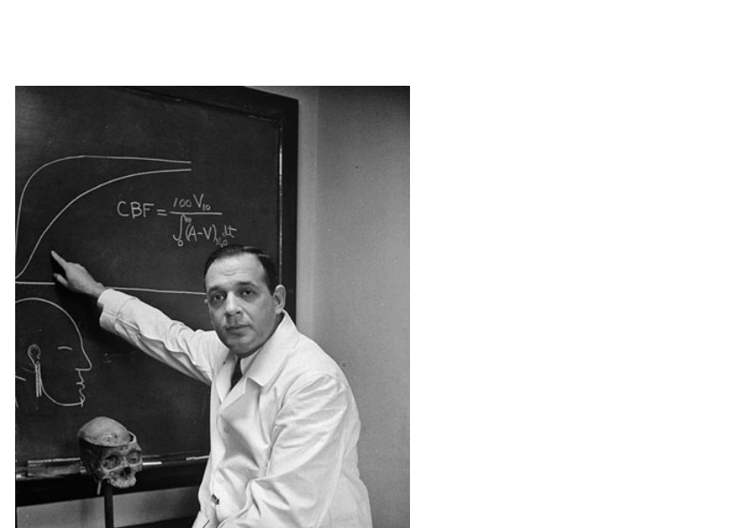
Chương 14 — Phẫu thuật thần kinh: Từ Cushing đến Penfield
Chương 14
Phẫu thuật thần kinh: Từ Cushing đến Penfield
Từ thuở sơ khai, bộ não đã đặt ra những thách thức vô cùng khắc nghiệt đối với phẫu thuật. Phẫu thuật thần kinh phải đến khoảng năm 1900 mới bắt đầu hình thành như một chuyên khoa riêng. Harvey Cushing tại Hopkins và Harvard là người dẫn đầu, dựa trên kỹ thuật phẫu thuật tỉ mỉ và sự kết hợp nhiều phương pháp kỹ thuật. Phẫu thuật u tuyến yên là một trong những tiến bộ nổi tiếng nhất của ông, bao gồm việc xác định ‘‘bệnh Cushing’’. Việc quan sát hình ảnh bộ não được thử nghiệm bằng chụp não bơm khí và chụp mạch máu não, trong đó phương pháp sau được cải thiện vượt bậc vào thập niên 1950 nhờ kỹ thuật tiêm qua động mạch đùi, thúc đẩy sự ra đời của ngành điện quang thần kinh. Phẫu thuật định vị não (stereotaxy) cho phép đặt các điện cực sâu theo tọa độ chính xác, dẫn đến sự ra đời của tập bản đồ não Talairach, nền tảng cho các tập bản đồ hình ảnh não hiện đại. Những thủ thuật đặt điện cực sâu đầu tiên để giảm nhẹ bệnh Parkinson cũng được giới thiệu. Wilder Penfield ở Canada đã đi đầu trong phẫu thuật điều trị động kinh, hiện là một trong những thủ thuật não có tỷ lệ thành công cao nhất. Phẫu thuật tâm thần (psychosurgery) có một giai đoạn phát triển ngắn ngủi trước khi bị từ bỏ khi các kết cục tiêu cực trở nên rõ ràng và các liệu pháp thuốc ra đời.
Lịch sử phẫu thuật thần kinh có thể được xem là rất dài hoặc rất ngắn. Nó rất dài nếu xét đến bằng chứng về thuật khoan sọ (mở hộp sọ) như một phần của các nghi lễ cổ đại từ thời Ai Cập cổ đại và xa hơn nữa. Nó rất ngắn nếu xét theo sự hình thành của phẫu thuật thần kinh như một phân ngành của ngoại khoa trong thế kỷ XX. Chính góc nhìn thứ hai này mới có liên quan đến việc hiểu vai trò của phẫu thuật thần kinh trong lịch sử khoa học thần kinh và hiểu biết hiện đại của chúng ta về bộ não (Greenblatt, 1997a; Spencer, 1997).
Với mục đích này, câu chuyện bắt đầu với hai khám phá thiết yếu cho sự ra đời của ngành phẫu thuật nói chung: sự xuất hiện của gây mê toàn thân vào thập niên 1840 và việc đưa vào áp dụng các kỹ thuật vô khuẩn và sát khuẩn vào thập niên 1860.
Sau đó, bước tiến lớn đầu tiên hướng tới phẫu thuật não là việc phát hiện ra sự định khu chức năng của đại não. Điều này xuất phát, một mặt, từ việc Paul Broca và Karl Wernicke xác định các trung khu vỏ não phụ trách ngôn ngữ qua các ca lâm sàng vào thập niên 1860 và 1870, và mặt khác, từ bằng chứng về các trung khu vỏ não phụ trách điều khiển vận động. Quá trình này bắt đầu vào năm 1870 với các thí nghiệm của Gustav Fritsch và Eduard Hitzig tại Berlin, sử dụng kích thích điện lên bề mặt vỏ não chó, một hướng tiếp cận được David Ferrier ở London theo đuổi mạnh mẽ vào thập niên 1870 và sau đó trên nhiều loài động vật khác nhau. Nhờ đó, dải vận động—vùng vỏ não ở hồi trước trung tâm nơi chuyển động của các cơ khác nhau trong cơ thể được biểu diễn—đã được hé lộ. Các khái niệm của Hughlings Jackson trong giai đoạn này về các ổ não gây co giật vận động đi kèm cơn động kinh đã góp phần hình thành quan niệm về sự biểu diễn có trật tự của các cơ và chuyển động cơ thể trong sự điều khiển vận động của vỏ não. Cũng trong giai đoạn này, nhưng bị lãng quên cho đến gần đây, là công trình của Angelo Mosso trên các bệnh nhân chấn thương sọ não, cho phép quan sát sự thay đổi lưu lượng máu não dưới các điều kiện hành vi khác nhau (xem Chương 13).
Bất chấp những tiến bộ này, rất ít bác sĩ phẫu thuật dám thực hiện các ca mổ trên não vì sự thiếu hiểu biết vẫn còn rất lớn về định khu chức năng ở các vùng não khác nhau, thiếu dụng cụ chuyên dụng, và những rủi ro cao trong quá trình phẫu thuật cũng như chăm sóc hậu phẫu. Một số ít người đã mạnh dạn bước tới. Bác sĩ phẫu thuật đầu tiên vận dụng những tiến bộ này để thực hiện phẫu thuật cắt bỏ khối u não là William MacEwen ở Glasgow, như ông đã báo cáo lần đầu vào năm 1879. Nhiều ca phẫu thuật hơn được Bennett và Godlee báo cáo tại London vào năm 1884. Năm 1886, Victor Horsley được bổ nhiệm tại Queen’s Square, London—bệnh viện thần kinh danh tiếng—với tư cách là bác sĩ phẫu thuật cho bệnh nhân liệt và động kinh. Sự kiện này được xem là khởi đầu của phẫu thuật thần kinh như một chuyên khoa sâu của ngoại khoa (Greenblatt, 1997a, 1997b). Loạt bệnh nhân đầu tiên của Horsley được báo cáo vào năm 1890: 43 ca phẫu thuật cắt bỏ khối u não, với 10 ca tử vong.
Báo cáo này và danh tiếng của Queen’s Square đã thúc đẩy một số bác sĩ phẫu thuật trên khắp thế giới tiếp bước Horsley. Năm 1903, một bác sĩ phẫu thuật trẻ, Antony Chibault, đã biên tập bộ cẩm nang ba tập mang tên L’Etat Actuel de la Chirurgie Nerveuse, gồm các bài viết của 50 bác sĩ phẫu thuật trên toàn thế giới (Walker, 1997, xiii). Tuy nhiên, kết quả vẫn đáng thất vọng; tỷ lệ tử vong cao, và sự cải thiện sức khỏe của bệnh nhân còn hạn chế. Horsley, cũng như hầu hết các bác sĩ phẫu thuật khác, vẫn tiếp tục hành nghề ngoại khoa tổng quát và chỉ thực hiện phẫu thuật não tùy theo từng ca bệnh.
Harvey Cushing
Người dẫn đường tiến về phía trước hơn bất kỳ ai khác là Harvey Cushing (Hình 14.1). Ông giữ vai trò trung tâm đến mức tóm tắt cuộc đời ông cũng chính là tóm tắt quá trình hình thành phẫu thuật thần kinh như một chuyên ngành lâm sàng.
Sinh ra tại Cleveland, Ohio, năm 1869, ông học đại học tại Yale và được đào tạo y khoa tại Harvard. Tại đây, ông bắt đầu quan tâm đến các bệnh nhân chấn thương sọ não và cân nhắc phẫu thuật như một sự nghiệp. Trong thời gian thực tập nội trú tại Bệnh viện Đa khoa Massachusetts, ông bị thu hút bởi môi trường lâm sàng sôi nổi của Trường Y và Bệnh viện Johns Hopkins và vào học nội trú tại đó năm 1896. Ông được đào tạo về phẫu thuật dưới sự hướng dẫn của William Halsted, người khi ấy nổi tiếng toàn thế giới vì đã đưa ngành phẫu thuật lên một tầm cao mới về tính chặt chẽ và tinh vi.
. . . một tinh thần nghiên cứu sâu sắc thấm đẫm nơi đây. Đối với phẫu thuật, thái độ khoa học này có hai khía cạnh thực tiễn. Phần dễ thấy hơn là cam kết của Halsted trong việc cải thiện phẫu thuật lâm sàng bằng cách thúc đẩy nền tảng khoa học của nó, đặc biệt là sinh lý học và bệnh học. Nhưng cùng tinh thần nghiên cứu đó cũng được áp dụng vào mọi thứ mà các bác sĩ phẫu thuật làm, bao gồm kỹ thuật thao tác tay và chăm sóc quanh phẫu thuật. Nếu có bằng chứng rõ ràng cho thấy một cách làm tốt hơn, thì không có gì là bất khả xâm phạm.
(Greenblatt và Smith, 1997, 171)
Được khích lệ bởi môi trường này, khả năng đảm đương khối lượng công việc khổng lồ của Cushing sớm bộc lộ. Nhanh chóng trở thành bác sĩ nội trú trưởng của Halsted, và cùng với đó là giảng viên ngoại khoa, Cushing gánh vác phần lớn khối lượng phẫu thuật tại Hopkins trong suốt thời gian đào tạo còn lại đến năm 1900. Trong thời gian này, ông bắt đầu tiếp nhận các ca bệnh thần kinh, đặc biệt quan tâm đến phẫu thuật giảm đau dây thần kinh sinh ba.
Trong số nhiều đồng nghiệp và bạn bè mới tại Hopkins có trưởng khoa Nội khoa, William Osler. Osler cũng là một huyền thoại đương thời, kết hợp các tiêu chuẩn lâm sàng cao với tính cách thân thiện và sự quan tâm sâu rộng đến lịch sử và văn hóa—một sự tương phản với sự tập trung đơn độc vào công việc của Cushing. Tuy nhiên, những điều trái ngược dường như thu hút nhau, và Osler đã dành sự quan tâm đặc biệt cho sự nghiệp của người đồng nghiệp trẻ. Lời khuyên quan trọng nhất của ông là khi kết thúc khóa đào tạo, Cushing nên dành một năm du hành ở châu Âu để thăm viếng và làm quen với các nhà khoa học, bác sĩ lâm sàng và viện khoa học hàng đầu châu Âu. Điều này phản ánh thực tế rằng hệ thống Hopkins được xây dựng theo mô hình khoa học, y học mới và phương pháp giảng dạy của châu Âu.
Chính vì thế, Cushing đã dành thời gian từ tháng 7 năm 1900 đến tháng 8 năm 1901 tại châu Âu. Ở London, ông gặp Horsley nhưng thất vọng vì thiếu các tiêu chuẩn thực hành mà ông đã quen thuộc ở Hopkins. Ông làm việc với Kronecker tại Berne, Thụy Sĩ, về sự kiểm soát huyết áp của thân não trong điều kiện tăng áp lực nội sọ, một vấn đề then chốt có ứng dụng thực tiễn trong việc xác định bệnh lý ảnh hưởng đến não. Ông đến thăm Mosso ở Turin, Ý, để nghiên cứu cùng vấn đề này, tận dụng các quan sát phong phú của Mosso về lưu lượng máu não ở nạn nhân chấn thương. Cuối cùng, ông làm việc ngắn hạn với Sherrington ở Liverpool về lập bản đồ các vùng vận động của vỏ não ở vượn nhân hình. Những nỗ lực nghiên cứu và các mối liên hệ cá nhân này đã mở rộng đáng kể kinh nghiệm và sự am hiểu văn hóa của vị bác sĩ lâm sàng tận tụy.
Trở về Hopkins, ông được bổ nhiệm làm bác sĩ phẫu thuật dưới quyền Halsted. Năm 1903, ông là một trong số ít bác sĩ phẫu thuật sáng lập Hiệp hội Phẫu thuật Lâm sàng (Society of Clinical Surgery). Đồng thời, Cushing thúc giục Halsted quyết liệt để được bổ nhiệm làm bác sĩ phẫu thuật thần kinh, mặc dù lúc bấy giờ hầu như chưa có bệnh nhân nào cần phẫu thuật não. Cuối cùng Halsted nói với ông: ‘‘Được rồi, lĩnh vực này là của anh’’ (Greenblatt và Smith, 1997, 173). Dựa trên một tá ca cắt bỏ khối u nội sọ, ông đã đọc một bài diễn văn tại một hội nghị y khoa với nhan đề ‘‘Lĩnh vực chuyên biệt của Phẫu thuật Thần kinh’’ (The Special Field of Neurological Surgery), được đăng trên tạp chí Bulletin of the Johns Hopkins Hospital vào đầu năm 1905. Tạp chí đó nghe có vẻ ít người biết, nhưng thời bấy giờ nó được đọc rất rộng rãi—và vẫn tiếp tục như vậy đến tận thập niên 1950, khi Vernon Mountcastle công bố bốn bài báo kinh điển của mình về các cột vỏ não tại đây (xem Chương 10).
Trong bài viết của mình, Cushing bày tỏ sự tiếc nuối về tình trạng manh mún của phẫu thuật não, với sự thiếu hụt chuyên môn và phối hợp trong các ca mổ. Ông đề xuất rằng chuyên môn hóa trong phẫu thuật não là cần thiết, được xây dựng trên nền tảng đào tạo có hệ thống về thần kinh học lâm sàng, bệnh học thần kinh và sinh lý học thần kinh thực nghiệm (Greenblatt và Smith, 1997, 175). Đây là tầm nhìn của ông cho tương lai, cấu thành lời kêu gọi rõ ràng nhất cho việc thành lập phân ngành phẫu thuật thần kinh. Tuy nhiên, để có hiệu quả, việc đào tạo như vậy đòi hỏi một lượng kiến thức đầy đủ trong từng lĩnh vực này. Cushing và những người hưởng ứng lời kêu gọi của ông đều biết họ đang thiếu nền tảng đó và có rất nhiều việc phải làm phía trước.
Năm 1912, Cushing chuyển đến Harvard để đứng đầu ngành phẫu thuật tại Bệnh viện Peter Bent Brigham, một vị trí trọng yếu trong nền y học Hoa Kỳ. Khi Đại chiến thế giới 1914–1918 bùng nổ, Cushing lập tức tổ chức một đơn vị phẫu thuật hỗ trợ nỗ lực chiến tranh tại Pháp và đích thân ra mặt trận vào năm 1917–1918 để chỉ huy công tác này. Kinh nghiệm chiến tranh khi xử lý nhiều loại chấn thương, đặc biệt là chấn thương sọ não, đã thuyết phục ông rằng thời điểm phát triển độc lập của phẫu thuật thần kinh đã đến. Tại một hội nghị năm 1919, ông trình bày kết quả một loạt ca phẫu thuật não với tỷ lệ tử vong chỉ 7,4% (vào thời điểm tỷ lệ tử vong lên tới 50% ở các trung tâm khác). Người ta ghi lại rằng, sau bài trình bày này, một bác sĩ phẫu thuật hàng đầu khác là William Mayo đã đứng dậy giữa cử tọa và tuyên bố: ‘‘Thưa quý vị, ngày hôm nay chúng ta đã chứng kiến sự ra đời của một chuyên khoa mới—phẫu thuật thần kinh.’’ (Greenblatt và Smith, 1997, 187) Cushing đã chuẩn bị sẵn đề xuất thành lập một hiệp hội cho chuyên khoa mới, và vào năm 1920, Hiệp hội các Bác sĩ Phẫu thuật Thần kinh (Society of Neurological Surgeons) được thành lập, là hiệp hội đầu tiên thuộc loại này trên thế giới.
Như Saris (1997, 249) đã nhận xét,
Hiếm có trong lịch sử y học một cá nhân gần như đơn độc phát triển và thúc đẩy cả một chuyên khoa, nhưng điều đó hoàn toàn đúng với Harvey Cushing trong giai đoạn khoảng từ năm 1900 đến năm 1930. Trong khoảng thời gian ba thập kỷ này, Cushing đã chứng minh rằng các khối u não có thể được cắt bỏ với độ an toàn hợp lý, đồng thời góp phần thiết kế và triển khai các thiết bị cũng như kỹ thuật giúp điều đó trở nên khả thi. . . . Trong ba [thập kỷ] này, thành công của ông được phản ánh qua tỷ lệ tử vong phẫu thuật đối với các khối u như u màng não, giảm từ 25% xuống 12% rồi còn 4%.
Vào cuối sự nghiệp hoạt động tích cực của mình, trong cuốn Intracranial Tumours (1932), Cushing đã chỉ ra những đổi mới giúp đạt được bước tiến này và các tiến bộ liên quan trong phẫu thuật não:
(1) các phương pháp giải áp được chấp nhận rộng rãi để giảm căng thẳng nội sọ, (2) quá trình lành vết thương hoàn hảo đến mức nhiễm trùng thứ phát hầu như không còn được biết đến [điều này đạt được thuần túy nhờ kỹ thuật vô khuẩn và sát khuẩn, trước khi có kháng sinh vào thập niên 1940], (3) việc khâu đóng riêng lớp cân Galea bằng chỉ lụa đen mảnh chôn vùi khiến chứng thoát vị não (fungus cerebri) từng gây khiếp sợ nay gần như bị lãng quên, (4) thay cho gây mê hít ether, việc [Thierry] de Martel đưa vào gây tê tại chỗ . . . [điều này cho phép bệnh nhân vẫn tỉnh táo trong suốt ca mổ, được Penfield sử dụng rất hiệu quả trong các cuộc thám sát vỏ não người vào thập niên 1940 và 1950], (5) khả năng định vị khối u chính xác hơn mà kỹ thuật chụp não thất của Dandy cho phép thực hiện trong các ca khó xác định, (6) việc sử dụng máy hút chạy bằng động cơ như một công cụ hỗ trợ không thể thiếu cho mọi ca mổ và (7) những cải tiến liên tiếp trong phương pháp cầm máu, từ năm 1927 đã được bổ sung vô cùng hiệu quả nhờ sự ra đời của các thiết bị phẫu thuật điện [ở đây ông đề cập đến dao đốt điện, giúp nhanh chóng làm đông các mạch máu nhỏ đang chảy máu thông qua kẹp nhỏ].
Những tiến bộ này không chỉ mang lại lợi ích cho bệnh nhân mà còn được chuyển giao sang các ca phẫu thuật thần kinh trên động vật linh trưởng không phải người. Chẳng hạn, khi John Fulton từ Oxford đến Trường Y Harvard để được Cushing đào tạo vào cuối thập niên 1920, ông đã quan sát và học hỏi các kỹ thuật này ngay bên cạnh bậc thầy. Cùng với quá trình đào tạo của ông với Sherrington tại Oxford, chúng trở thành nền tảng cho nghiên cứu của ông trên linh trưởng không phải người tại Yale từ thập niên 1930 đến 1960. (Vào giữa thập niên 1950, tôi đã quan sát các phương pháp phẫu thuật này do một học trò của Fulton là Karl Pribram thực hiện tại Bệnh viện Hartford.) Bằng cách đó, phẫu thuật thần kinh trên người, với các tiêu chuẩn chăm sóc tỉ mỉ do Cushing thiết lập cho cả động vật thí nghiệm lẫn bệnh nhân, đã góp phần vào sự trỗi dậy của khoa học thần kinh hành vi.
Trong những năm đầu này, các lĩnh vực chính mà can thiệp phẫu thuật có thể mang lại hiệu quả đã được thăm dò. Có thể kể đến một số lĩnh vực gắn bó mật thiết nhất với sự hình thành của khoa học thần kinh.
Phẫu thuật tuyến yên
Như chúng ta đã thấy ở Chương 11, cho đến cuối thế kỷ XIX người ta vẫn biết rất ít về tuyến yên; xét về hầu hết các mục đích thực tiễn, nó được xem như một cấu trúc thoái hóa. Ca phẫu thuật đầu tiên cắt bỏ khối u tuyến yên được Victor Horsley thực hiện vào năm 1886 (Landolt, 1997, 376). Bất chấp những khó khăn của đường tiếp cận phẫu thuật đến tuyến yên ở nền sọ, một số bác sĩ phẫu thuật đã thử tiếp cận bằng cách vén thùy thái dương. Công việc ban đầu trên người này được hỗ trợ bởi các thí nghiệm song song trên chó trong phòng thí nghiệm, dù kết quả thường bị cản trở bởi nhiễm trùng huyết và chấn thương mô não bị vén. Một đổi mới quan trọng đến từ các bác sĩ phẫu thuật tai mũi họng, trong đó Oskar Hirsch ở Vienna đã giới thiệu đường tiếp cận trực tiếp qua mũi đến tuyến yên, tức đường tiếp cận xuyên xương bướm (transsphenoidal approach), vào năm 1912. (Hirsch di cư sang Hoa Kỳ năm 1938 và hoạt động tại Bệnh viện Đa khoa Massachusetts vào thập niên 1950. Tôi đã vô cùng kinh ngạc khi thấy ông ngồi giữa cử tọa tại một trong các buổi giảng dạy phẫu thuật của chúng tôi tại Bệnh viện Đa khoa Massachusetts năm 1959.)
Phẫu thuật thần kinh trên tuyến yên người đã đóng góp vào các công trình đầu thế kỷ XX, mở ra con đường rất lâu sau đó để hé lộ chức năng của tuyến yên như một trung tâm điều khiển tối cao của hệ nội tiết (Chương 11). Cushing đặc biệt quan tâm đến vấn đề này. Năm 1912, ông phẫu thuật cho một nữ bệnh nhân bị béo phì, rậm lông và các đặc điểm sinh dục thứ cấp phát triển quá mức. Ông thu thập một số ca tương tự, quy cho các khối u tuyến thượng thận nguyên phát hoặc tăng sản thượng thận thứ phát do sự kích thích của khối u tuyến yên—một tình trạng sau này được gọi là ‘‘bệnh Cushing’’ (Landolt, 1997, 375). Đối với các ca mổ của mình, ban đầu Cushing áp dụng đường tiếp cận của Hirsch, sau đó từ bỏ để chuyển sang đường tiếp cận xuyên sọ, mặc dù về sau, từ thập niên 1950 trở đi, kỹ thuật qua đường mũi đã trở thành phương pháp được ưa chuộng hơn.
Quan sát hình ảnh bộ não người
Hướng tiếp cận phẫu thuật ban đầu nhằm tìm hiểu sinh lý học não bộ đã sử dụng các điện cực để kích thích bề mặt vỏ não. Trong tay David Ferrier và các nhà tiên phong khác vào cuối thế kỷ XIX, phương pháp này cung cấp một bản đồ các vùng tham gia điều khiển vận động, nhờ khả năng quan sát các chuyển động được gợi ra, nhưng không thể mang lại hiểu biết nào về các vùng cảm giác hay phần lớn vỏ não dành cho các vùng liên hợp và các chức năng tâm thần bậc cao, đặc biệt ở người. Phương pháp chính còn lại là cắt bỏ (ablation/resection)—loại bỏ một vùng và quan sát tác động lên hành vi. Điều này dẫn đến việc xác định các vùng tham gia vào tri giác thị giác, thính giác và xúc giác. Nhưng còn những vùng vỏ não rộng lớn còn lại cũng như phần não ‘‘dưới vỏ’’ thì sao? Đến đầu thế kỷ XX, các vùng não chính và nhiều đường dẫn truyền chính giữa chúng đã được xác định bằng phương pháp giải phẫu, nhưng sinh lý học bình thường vẫn chưa được biết. Trên hết, bác sĩ phẫu thuật muốn tránh làm gián đoạn hoặc cắt bỏ một vùng mà hóa ra lại thiết yếu cho chức năng tâm thần và cảm xúc bình thường của bệnh nhân; chúng ta đã thấy những hệ lụy thảm khốc có thể xảy ra trong trường hợp của H. M. (Chương 12).
Khi thám sát não của các loài động vật khác và liên hệ kết quả với con người, cần phải có các bản đồ với những mốc giải phẫu có thể tái lập. Ban đầu điều này phải dựa trên việc sử dụng các mốc địa hình, tức là các mốc dễ quan sát và được thống nhất để đối chiếu bản đồ này với bản đồ khác. Những nỗ lực ban đầu được dẫn dắt bởi các mốc địa hình trên bề mặt vỏ não, chủ yếu là sự hiện diện của các nếp cuộn (hồi não - gyri) và các khe (rãnh não - sulci). Ở người, rãnh trung tâm ngăn cách hồi vận động với phần não phía sau đặc biệt nổi bật, nhưng vị trí của nó lại biến thiên quá lớn giữa các cá nhân khác nhau đến mức không thể cung cấp chỉ dẫn cho vị trí của các cấu trúc não khác.
Một bước tiến đáng kể đến cùng khả năng của tia X trong việc quan sát các cấu trúc sâu hơn thông qua chụp não bơm khí hoặc chất cản quang. Thủ thuật này được giới thiệu vào năm 1918 bởi một trong những người tiên phong của phẫu thuật thần kinh, Walter Dandy (1918). Mặc dù chụp não bơm khí (pneumoencephalography) trở thành một thủ thuật tiêu chuẩn để định vị bệnh lý não, nhưng ở người nó mang lại rủi ro cao với tỷ lệ tử vong lên tới 10%.
Một hướng tiếp cận khác là chụp mạch máu não (cerebral angiography), được nhà thần kinh học người Bồ Đào Nha Antonio de Egas Moniz và đồng nghiệp phẫu thuật thần kinh Pedro Almeida Lima giới thiệu vào năm 1927 (Moniz, 1931). Trong thủ thuật ban đầu của họ, chất cản quang được tiêm vào động mạch cảnh để quan sát bằng tia X. Kỹ thuật này tiềm ẩn nguy cơ đáng kể gây thuyên tắc mạch lên não.
Năm 1953, chụp mạch trở nên an toàn và hiệu quả hơn nhiều nhờ tiêm chất cản quang vào động mạch đùi. Đổi mới này là công của Sven Seldinger, người vào một khoảnh khắc quyết định khi phát triển phương pháp để chọn trình tự tiêm đã kể lại rằng ‘‘Tôi bất chợt nảy ra một ý tưởng hợp lý đến hiển nhiên’’ (Gobo, 1997). Việc dời vị trí tiêm ra xa bộ não giúp chụp mạch máu não an toàn hơn hẳn, hiệu quả trong việc quan sát cả hai bán cầu não chỉ từ một lần tiêm, và có thể lặp lại qua ống thông lưu sẵn. Hệ quả là, ‘‘Dư âm của kỹ thuật Seldinger đã chứng kiến sự ra đời của điện quang thần kinh như một chuyên khoa sâu’’ (Gobo, 1997, 231) (Hình 14.2, Phụ lục 14.1)—một minh chứng nữa cho tầm quan trọng của các phương pháp mới trong sinh học và y học.
Tuy nhiên, cả hai phương pháp tạo ảnh này đều có những nhược điểm nghiêm trọng: Đối với chụp não bơm khí là tỷ lệ tử vong cao, còn đối với chụp mạch máu não là sự thiếu hiệu quả trong việc xác định các cấu trúc sâu của não. Những hạn chế này sau đó đã được khắc phục nhờ kỹ thuật chẩn đoán hình ảnh não ra đời vào thập niên 1970.
Phẫu thuật định vị não (Stereotaxy)
Song song với các phương pháp này, một hướng tiếp cận khác cho mục đích trên là định vị não ba chiều (cerebral stereotaxis: stereo, ‘‘khối, ba chiều’’; taxis, ‘‘sắp xếp’’; tango, tangere, ‘‘chạm’’). Trong số các phương pháp kỹ thuật nhằm chuẩn hóa phẫu thuật trên não, phẫu thuật định vị não (trên thực tế là định hướng đầu một que thăm dò theo ba tọa độ trong thể tích bộ não) giữ vai trò đặc biệt quan trọng.
Vì rất nhiều nhà phẫu thuật thần kinh–khoa học đời đầu được đào tạo về sinh lý học, việc họ cố gắng áp dụng các kỹ thuật ít gây rối loạn sinh lý hơn trong nghiên cứu cấu trúc dưới vỏ sang các mục đích khác là điều tự nhiên. Do đó, ngay từ đầu, định vị não ở người đã hướng tới những mục tiêu tương tự như khi phát triển nó cho động vật thí nghiệm: tiếp cận các cấu trúc sâu mà không làm tổn thương vỏ não, ghi hoạt động từ các cấu trúc thần kinh, và gây tổn thương (lesioning) với độ chính xác cao.
Bốn lĩnh vực lâm sàng ban đầu thu hút sự quan tâm của kỹ thuật định vị não là điều trị bệnh tâm thần, điều trị rối loạn vận động, điều trị các hội chứng đau, và dẫn lưu nang cũng như khối u dạng nang.
(Dagi, 1997b, 423)
Dù đã có những nỗ lực trước đó, thiết bị định vị não thực tế đầu tiên được Horsley và đồng nghiệp Robert Clarke chế tạo và sử dụng tại Queen’s Square vào đầu những năm 1900. Tiện ích của thiết bị này là cho phép thăm dò sâu vào não của động vật nghiên cứu, cụ thể là mèo, mà không cần cắt bỏ các vùng vỏ não nằm bên trên. Ngoài ra, Clarke và Elizabeth Henderson đã xuất bản một tập bản đồ não mèo được sắp xếp theo hệ lưới tọa độ của thiết bị định vị. Cùng nhau, thiết bị và tập bản đồ này là bước đi đầu tiên hướng tới việc định lượng địa hình bộ não.
Việc áp dụng lên não người đến khá chậm. Horsley chỉ xem nó là công cụ cho nghiên cứu trên động vật. Clarke đã phát triển một thiết bị cho người, tiếp theo là một vài người khác; nhưng khi thiếu các mốc giải phẫu sâu và kiến thức về chức năng của hầu hết các vùng não, phương pháp này dần mai một. Vào thập niên 1930, Stephen Ranson và Franc Ingraham tại Đại học Northwestern ở Chicago đã chế tạo một bản sao của thiết bị Horsley-Clarke để dùng trong các thí nghiệm sinh lý học thần kinh, điều này đã phổ biến việc sử dụng nó cho nghiên cứu tại Hoa Kỳ trong nhiều thập kỷ sau đó.
Phẫu thuật định vị não ở người được hồi sinh sau Thế chiến II: ‘‘Sau năm 1948, hoạt động trong lĩnh vực này bùng nổ’’ (Dagi, 1997b, 406). Sự phát triển này dựa trên kiến thức ngày càng tăng về các cấu trúc sâu, chụp mạch được cải thiện để định vị và xác định mốc, cùng các phương pháp mới để tạo ra thay đổi ở các cấu trúc sâu nhằm chống lại bệnh lý và rối loạn chức năng não. Dagi (1997b, 406) liệt kê 14 thiết bị được giới thiệu từ cuối thập niên 1940 đến năm 1960. Trong số đó có thể kể đến một trong những thiết bị đầu tiên là thiết bị tọa độ vuông góc Spiegel-Wycis; thiết bị tọa độ cực Leksell; và thiết bị Talairach kết hợp với chụp mạch. Mỗi thiết bị được thiết kế để thực hiện một loại trị liệu cụ thể, chẳng hạn như đưa chất phóng xạ vào khối u hoặc đốt điện một cấu trúc sâu. Thiết bị Leksell sử dụng tọa độ cực (nói cách khác, định hướng bằng một vòng tròn với điện cực nhắm vào tâm vòng tròn) để tạo tổn thương tại các vùng não bị ảnh hưởng. Leksell đã dùng thiết bị này để tạo các tổn thương chính xác ở cầu nhạt (globus pallidus), một cấu trúc của hạch nền, trong một thủ thuật gọi là ‘‘phẫu thuật cắt cầu nhạt’’ (pallidotomy: palli, ‘‘cầu nhạt’’; otomy, ‘‘mở/cắt’’). Qua công trình này, ông được xem là một trong những người tiên phong trong điều trị phẫu thuật bệnh Parkinson (xem Wikipedia). Chúng ta đã từng gặp ông qua khám phá cơ bản về sự chi phối thần kinh gamma đối với thoi cơ (Chương 7) và sẽ nhắc đến việc ông phát triển phẫu thuật xạ trị (dao gamma) ở phần sau.
Song hành với sự phát triển của kỹ thuật định vị não là việc xây dựng các tập bản đồ não để cung cấp tọa độ đặt điện cực. Công trình của Spiegel và cộng sự (1952) là một trong những tập bản đồ đầu tiên trong loạt ấn phẩm từ nhiều phòng thí nghiệm trong các thập kỷ tiếp theo. Người ta sớm nhận ra rằng, bất chấp việc định lượng vị trí trong hệ tọa độ, sự biến thiên vẫn còn đáng kể do một số yếu tố: sự khác biệt tự nhiên của các vùng não giữa từng cá thể, sự tương tác của mô với que thăm dò, và hiện tượng co rút mô giả tạo trong quá trình xử lý mô học. Trong số các tập bản đồ đời đầu, tập bản đồ Talairach (Talairach và cộng sự, 1952) (Hình 14.3) từ Pháp đã được lưu truyền đến thời hiện đại thông qua việc sử dụng làm hệ quy chiếu cơ sở để phân tích dữ liệu hình ảnh não tại nhiều phòng thí nghiệm khác nhau.
Như đã lưu ý ở trên, định vị não được dùng để cải thiện một số loại rối loạn thần kinh. Một que thăm dò áp lạnh (cryoprobe—một cây kim có thể làm lạnh và làm ấm nhanh chóng) được giới thiệu vào năm 1948 (Haas và Taylor) và được Irving Cooper ở New York sử dụng vào thập niên 1950 và 1960 để tạo các tổn thương sâu nhằm giảm nhẹ các rối loạn vận động. Phương pháp này và các phương tiện cắt bỏ khu trú không thể đảo ngược khác đã cho thấy một số hiệu quả. Trong bệnh Parkinson, hướng tiếp cận này được kết hợp với việc sử dụng L-dopa (xem Chương 12). Trong việc giảm đau, rối loạn tâm thần và điều trị khối u, ban đầu kỹ thuật định vị não không hơn nhiều so với phẫu thuật mở; tuy nhiên, với cuộc cách mạng trong chẩn đoán hình ảnh não và sự xuất hiện của các đầu dò phân tử, tương lai hứa hẹn tươi sáng hơn.
Một tiến bộ quan trọng là việc phát triển ‘‘phẫu thuật xạ trị’’ (radiosurgery) tại Stockholm bởi Lars Leksell, người mà chúng ta từng gặp khi còn là một bác sĩ phẫu thuật thần kinh trẻ tuổi hé lộ hệ thống vận động đến các thoi cơ (Chương 9). Năm 1951, Leksell cùng nhà vật lý Borje Larsson báo cáo các ca phẫu thuật thực hiện tại một địa điểm gần máy gia tốc hạt (cyclotron), cho phép họ hội tụ các chùm proton vào các vùng đích trong não—đầu tiên trong các thí nghiệm trên động vật, sau đó là phẫu thuật trên bệnh nhân. Điều này về sau dẫn đến sự ra đời của dao gamma (gamma knife), sử dụng coban phóng xạ thay thế. Phương pháp này được dùng như một liệu pháp hiệu quả cho một số tình trạng cụ thể, bao gồm dị dạng mạch máu, khối u lành tính (u màng não), u dây thần kinh thính giác và đau dây thần kinh sinh ba.
Động kinh
Một lĩnh vực có tiến bộ vượt bậc là điều trị phẫu thuật bệnh động kinh. Điều này bắt đầu từ một bệnh nhân của Hughlings Jackson, người khi còn nhỏ bị một vết thương não một bên gây liệt nửa người phía đối diện và các cơn co giật vận động kiểu ‘‘tiến triển Jackson’’ (Jacksonian march) lan lần lượt qua chân bị ảnh hưởng, cánh tay trên, cổ tay, các ngón tay và mặt. Jackson dự đoán các cơn co giật là do một tổn thương khu trú trên dải vận động và vào năm 1886 đã thuyết phục Horsley mở hộp sọ để chữa khỏi bệnh động kinh bằng cách loại bỏ ổ kích thích. Horsley, khi ấy mới là một bác sĩ phẫu thuật 29 tuổi ở giai đoạn đầu sự nghiệp, đã đồng ý; khi mổ ông phát hiện một vết sẹo mạch máu ở vùng vận động, và khi cắt bỏ nó đã chữa khỏi hoàn toàn các cơn co giật. Đó là màn mở đầu ngoạn mục cho lĩnh vực phẫu thuật não điều trị động kinh (tóm tắt trong Feindel và cộng sự, 1997).
Không may là rất ít trường hợp đơn giản như vậy, và tiến triển tiếp theo bị chậm lại do sự thiếu chính xác thường thấy trong định khu vỏ não, tần suất biến chứng cao, cũng như việc chăm sóc trong và sau phẫu thuật chưa đầy đủ. Trong một loạt bệnh nhân vào đầu thế kỷ XX, Fedor Krause ở Berlin đã thực hiện các nghiên cứu cẩn trọng bằng kích thích điện lên vỏ não người, cung cấp bằng chứng đầu tiên về dải vận động ở người và làm giảm các cơn động kinh nhờ loại bỏ kích thích do khối u hoặc bệnh lý khu trú khác (Feindel và cộng sự, 1997). Sau Đại chiến thế giới 1914–1918, Ottfried Foerster ở Breslau trở thành một trong những người dẫn đầu về phẫu thuật não, bao gồm cả điều trị động kinh. Năm 1935, ông giới thiệu kỹ thuật ghi điện vỏ não (electrocorticography), ghi lại các điện thế vỏ não tại chỗ sinh ra do kích thích đầu vào cảm giác hoặc hoạt động tâm thần, qua đó bổ sung cho việc xác định các vùng vận động vỏ não bằng kích thích điện tại chỗ. Cũng như phương pháp kích thích, ghi điện vỏ não ở người được hưởng lợi từ các thí nghiệm trước đó và đồng thời trên động vật phòng thí nghiệm.
Vào cuối thập niên 1920, Wilder Penfield khi còn trẻ đã hợp tác với Foerster ở Đức để thực hiện nghiên cứu chuyên sâu về sẹo não như một nguyên nhân gây động kinh cục bộ sau chấn thương. Điều này dẫn đến hiểu biết sâu sắc hơn về tác động tại chỗ của vết sẹo, bao gồm khái niệm ‘‘co thắt mạch máu não’’. Penfield đã vận dụng nền tảng đào tạo này khi chuyển đến Montreal và trở thành giám đốc Viện Thần kinh học Montreal mới thành lập vào năm 1934. Ông khẳng định vị thế người dẫn đầu trong phẫu thuật điều trị động kinh, kết hợp kích thích điện khu trú với gây tê tại chỗ để có thể hỏi chuyện bệnh nhân về các tác động tâm thần của kích thích (xem Chương 10). Việc định vị các ổ động kinh được hỗ trợ đắc lực nhờ sự ra đời của điện não đồ (EEG) vào năm 1937. Tại Montreal, mảng này do Herbert Jasper phụ trách, người đồng thời tiến hành các nghiên cứu điện sinh lý song song trên động vật (Chương 10).
Với việc viện trở thành trung tâm dẫn dắt và đào tạo, phẫu thuật thần kinh điều trị động kinh phát triển rực rỡ vào thập niên 1950. Các loạt nghiên cứu của riêng Penfield được công bố rộng rãi, bao gồm cả các cuốn sách của ông, đưa các nghiên cứu về sự biểu diễn chuyển động trên hình nhân vỏ não (cortical homunculus) và việc sử dụng các xung điện nhỏ để gợi lại ký ức ở bệnh nhân tỉnh táo đến với đông đảo công chúng hơn. Các nghiên cứu về trí nhớ được thực hiện ở thùy thái dương, vùng ngày càng thu hút sự chú ý như là nơi khởi phát của các cơn động kinh toàn thể. Một số bác sĩ phẫu thuật thần kinh đã đón nhận thách thức này, và phẫu thuật cắt bỏ thùy thái dương để giảm nhẹ cơn động kinh nhanh chóng trở thành một thủ thuật phổ biến vào thập niên 1950. Tất cả các ca này đều thực hiện một bên, cho đến khi William Scoville, vào năm 1953, tiến hành cắt bỏ thùy thái dương hai bên ở một bệnh nhân để điều trị chứng động kinh suy nhược nghiêm trọng, gây ra tình trạng mất trí nhớ gần sâu sắc. Câu chuyện về bệnh nhân H. M. và sự ra đời của một lĩnh vực mới—khoa học thần kinh nhận thức—được kể lại trong Chương 12.
Trong những năm gần đây, phẫu thuật điều trị động kinh đã trở thành một trong những câu chuyện thành công của phẫu thuật thần kinh. Việc điều trị bằng các phương pháp hiện đại ngày nay có sự tham gia của các nhóm chuyên gia và đạt tỷ lệ thành công từ 80%–90%.
Phẫu thuật tâm thần (Psychosurgery)
Ngay khi phẫu thuật trên não bắt đầu với những ca mổ đầu tiên của Victor Horsley, khả năng phẫu thuật để làm giảm nhẹ các rối loạn tâm thần đã được đặt ra.
Gottlieb Burkhardt ở Thụy Sĩ đã phát triển giả thuyết rằng các triệu chứng tâm thần phân liệt là do sự lan truyền kích thích quá mức từ vùng vỏ não cảm giác sang vùng vận động, điều có thể làm dịu đi bằng cách cắt bỏ một phần mô giữa chúng. Bắt đầu từ năm 1888, ông tiến hành một loạt ngắn các ca phẫu thuật trên bệnh nhân tâm thần phân liệt, loại bỏ những phần nhỏ của vỏ não thái dương–đỉnh. Ông báo cáo rằng các bệnh nhân trở nên điềm tĩnh hơn và không còn cần phải cách ly (Valenstein, 1997, 502).
Những ca phẫu thuật như vậy tiếp tục diễn ra lẻ tẻ trong vài thập kỷ tiếp theo nhưng nhìn chung bị coi là quá rủi ro. Vào giữa thập niên 1930, liệu pháp sốc insulin được đưa vào áp dụng, sử dụng liều lớn insulin khiến bệnh nhân rơi vào co giật và sốc, cùng với liệu pháp sốc điện (electroconvulsive therapy), truyền dòng điện mạnh qua đầu khiến bệnh nhân co giật và bất tỉnh. Những rối loạn toàn thân này không được kiểm soát tốt nhưng cũng đạt được một số thành công; thực tế, liệu pháp sốc điện vẫn tiếp tục là một lựa chọn cho chứng trầm cảm nặng cho đến ngày nay.
Một số bác sĩ phẫu thuật thần kinh bắt đầu cân nhắc hoặc thực hiện phẫu thuật trên thùy trán để giảm nhẹ các triệu chứng loạn thần, dựa trên lập luận rằng đây là phần não phát triển nhất ở người và gắn liền nhất với năng lực tâm thần. Nhưng, như đã đề cập ở Chương 10, giai thoại của lĩnh vực này truy nguyên khởi nguồn từ một hội nghị năm 1935, nơi Carlyle Jacobsen, một học trò của John Fulton tại Yale, trình bày kết quả các thí nghiệm cắt bỏ thùy trán ở một con tinh tinh tên Lucy, làm thay đổi hành vi của nó từ hung hăng sang ngoan ngoãn. Antonio de Egas Moniz, một nhà thần kinh học 61 tuổi người Bồ Đào Nha, khi chứng kiến kết quả đã đứng dậy giữa cử tọa và thốt lên: ‘‘Đó là một bệnh nhân.’’ Trở về Lisbon, ông thuê đồng nghiệp phẫu thuật thần kinh Pedro Almeida Lima, khi ấy 33 tuổi, thực hiện một loạt ca phẫu thuật trên bệnh nhân tâm thần (không cần xin phép!), mà ông gọi là ‘‘phẫu thuật cắt thùy trán trước’’ (prefrontal leucotomy), bằng cách đưa một vòng dây (gọi là ‘‘leucotome’’) vào vỏ não trước trán để cắt đứt một lõi mô. Loạt ca đầu tiên được báo cáo chỉ trong vòng một năm, vào năm 1936. Dù sự vội vã này gây ra nhiều hoài nghi, nhưng danh tiếng của de Egas Moniz với tư cách là nhà thần kinh học đã đưa kỹ thuật chụp mạch vào phẫu thuật thần kinh khiến các kết quả được xem xét nghiêm túc.
de Egas Moniz đã đặt ra thuật ngữ ‘‘phẫu thuật tâm thần’’ (psychosurgery) cho thủ thuật này. Ông không ngần ngại thực hiện thêm nhiều ca mổ và quảng bá rộng rãi phương pháp này. Những người khác nhanh chóng theo gót, tiêu biểu nhất là hai bác sĩ người Mỹ, Walter Freeman và đồng nghiệp phẫu thuật thần kinh James Watts. Chỉ trong vòng 3 tháng sau khi đọc kết quả của de Egas Moniz, họ đã báo cáo những ca đầu tiên trong một nhóm bệnh nhân tăng nhanh chóng mặt; và kỹ thuật này nhanh chóng lan rộng ra toàn thế giới. Từ năm 1946 đến năm 1956, khoảng 60.000–80.000 ca phẫu thuật tâm thần đã được thực hiện trên toàn cầu. Sự lan rộng nhanh chóng này phần lớn bắt nguồn từ việc gần như hoàn toàn vắng bóng bất kỳ hình thức trị liệu đáng tin cậy nào khác cho các rối loạn tâm thần nặng và gây suy nhược như trầm cảm và rối loạn lưỡng cực (khi đó gọi là ‘‘bệnh hưng–trầm cảm’’). Hơn nữa, thủ thuật này được gán cho một cơ sở lý thuyết—là điều chỉnh sự mất cân bằng trong mối liên hệ đồi thị–vỏ não—khiến nó có vẻ mang tính khoa học.
Ca phẫu thuật lan rộng theo cách đó không còn có thể được coi là phẫu thuật thực thụ nữa. Freeman đã đơn giản hóa thủ thuật đến mức biến nó thành một thủ thuật ngoại trú mà bất kỳ nhân viên y tế hay cận y tế nào cũng có thể thực hiện bằng cách chọc một cây dùi phá băng qua hốc mắt trên, xoay vài vòng rồi cho bệnh nhân về nhà, với tốc độ lên tới 20 bệnh nhân trong một buổi sáng (xem Valenstein, 1997). Không chỉ thiếu sự theo dõi kết cục bệnh nhân, sự dễ dàng của thủ thuật còn khuyến khích Freeman và những người khác áp dụng nó cho các bệnh nhân, đặc biệt là thanh thiếu niên, chỉ đơn thuần bị tăng động hoặc bị cho là có ‘‘khó khăn về hành vi’’. Những kết cục đáng ngờ bắt đầu trở thành mối lo ngại công khai; giám đốc Viện Tâm thần Bang New York năm 1949 đã nói với tạp chí Newsweek (Valenstein, 1997, 510):
Tôi thấy bất an khi chứng kiến số lượng những ‘‘xác sống’’ (zombies) mà các ca phẫu thuật này tạo ra. Tôi đoán rằng các ca cắt thùy não đang diễn ra trên khắp thế giới đã tạo ra nhiều người tàn phế tâm thần hơn là số người được chữa khỏi . . . . Tôi nghĩ việc này phải được dừng lại trước khi chúng ta làm mất trí một bộ phận quá lớn của dân số.
Nói cách khác, đó là một thủ thuật đi ngược lại toàn bộ sự chăm sóc tỉ mỉ đằng sau các tiêu chuẩn của Cushing vốn là nền tảng của phẫu thuật thần kinh.
Sự phản đối liên tục trong chính giới chuyên môn có lẽ cũng chỉ đạt được thành công hạn chế nếu không có sự xuất hiện của các loại thuốc hướng thần vào giữa thập niên 1950, thứ đã làm biến đổi việc điều trị bệnh tâm thần, như sẽ thảo luận ở Chương 15. Đến thập niên 1960, phẫu thuật tâm thần phần lớn bị từ bỏ để nhường chỗ cho các liệu pháp dược phẩm. Tuy nhiên, các phương pháp chính xác hơn của các bác sĩ phẫu thuật thần kinh, liên quan đến việc đặt que thăm dò cẩn trọng và tạo tổn thương khu trú, thường dưới sự kiểm soát định vị não, vẫn tiếp tục được áp dụng trong những trường hợp đặc biệt. Điều này vẫn tiếp diễn cho đến ngày nay khi tỷ lệ thành công đang được cải thiện nhờ các phương pháp hiện đại. Người ta ước tính rằng sự cải thiện tâm thần đáng kể có thể đạt được ở khoảng hai phần ba số bệnh nhân. Dẫu vậy, những sự thái quá mất kiểm soát của thập niên 1950 đã cung cấp những bài học định hướng quý giá để mở đường hướng tới các phương tiện hiệu quả hơn cho các bác sĩ phẫu thuật thần kinh, sử dụng các phương pháp mà Cushing đã khởi xướng, nhằm cải thiện những căn bệnh thách thức nhất của nhân loại—các rối loạn của tâm trí.
Tóm tắt
Hầu hết mọi người đều đồng ý rằng kỷ nguyên phẫu thuật thần kinh hiện đại bắt đầu vào thập niên 1970, với sự ra đời của chẩn đoán hình ảnh não không xâm lấn và việc sử dụng kính hiển vi phẫu thuật. Thật thú vị khi tự hỏi điều gì đã diễn ra trong suốt 40 năm giữa lúc sự nghiệp của Harvey Cushing kết thúc vào thập niên 1930 và thời điểm khởi đầu kỷ nguyên hiện đại của chúng ta.
Trong suốt bốn thập kỷ đó, đã có những bước tiến nhỏ, nhưng không có bước nhảy vọt nào, khi phẫu thuật thần kinh tiến bước (Saris, 1997, 249). Đến năm 1950, việc khai thác bệnh sử và khám thực thể đã rất tinh vi và vẫn là trụ cột trong việc định khu bệnh lý não, trong khi chẩn đoán hình ảnh—chủ yếu bằng chụp não thất và ở một mức độ nào đó là chụp mạch—vẫn còn tương đối thô sơ. Trong 20 năm tiếp theo, chụp mạch được sử dụng ngày càng nhiều nhưng vẫn mang tính xâm lấn, rủi ro và thiếu chính xác theo tiêu chuẩn hiện nay.
. . . đó vẫn là thời kỳ mà các bác sĩ phẫu thuật thần kinh là người quyết định khối u nằm ở đâu và phải rạch ở chỗ nào. Còn ngày nay các bác sĩ chẩn đoán hình ảnh dường như bảo cho tất cả mọi người biết phải làm gì . . .
(Hugh Wisoff, được trích dẫn trong Sari, 1997, 256)
Sau năm 1970, các tiến bộ thực sự ‘‘ngoạn mục’’ (Sari, 1997, 256). Chúng bao gồm, trước hết và quan trọng nhất, việc sử dụng các kỹ thuật quét não để định vị khối u và các bệnh lý não khác. Kính hiển vi phẫu thuật đã cho phép kiểm soát tinh tế các chi tiết tại chỗ khi cắt bỏ khối u. Chụp mạch trở nên tinh vi và ít rủi ro hơn, cũng như các kỹ thuật gây mê. Dụng cụ siêu âm cắt bỏ khối u đã bổ sung cho dao đốt điện và máy hút. Các dụng cụ chạy điện nhanh chóng mở nắp xương sọ. Các chương trình đào tạo bác sĩ nội trú cung cấp huấn luyện xuyên suốt tất cả các phương pháp và chuyên ngành này. Và các ứng dụng của phương pháp phân tử để định vị và điều trị bệnh lý não mới chỉ bắt đầu.
Tại sao phẫu thuật thần kinh lại không hòa mình trọn vẹn hơn vào các cuộc cách mạng vốn đã tác động đến rất nhiều lĩnh vực của sinh học và khoa học thần kinh trong thập niên 1950? Nhìn từ góc độ của thế kỷ trước, có thể nói rằng phẫu thuật trên não đã có cuộc cách mạng đầu tiên khi Cushing đặt nền móng cho nó vào đầu thế kỷ. Chúng ta đã thấy rằng yếu tố cốt lõi của nền móng đó đơn giản là đáp ứng các tiêu chuẩn cao nhất của thực hành phẫu thuật nhằm giảm tỷ lệ tử vong và nâng cao kết quả bằng những phương tiện sẵn có. Như ông từng nhận xét, ‘‘không có lĩnh vực phẫu thuật nào mà sự tỉ mỉ lại thiết yếu cho thành công đến thế’’ (Cushing, 1920, 611).
Sự tỉ mỉ đảm bảo các tiêu chuẩn của một lĩnh vực, nhưng nó không tạo nên một cuộc cách mạng; điều đó chỉ có thể đến từ các phương pháp mới, thường là từ bên ngoài lĩnh vực ấy. Đó chính là điều mà chẩn đoán hình ảnh não đã làm được từ thập niên 1970 và là điều mà các công cụ phân tử đang bắt đầu thực hiện cũng như hứa hẹn cho tương lai—được áp dụng với chính sự tỉ mỉ mà Cushing hẳn sẽ luôn đòi hỏi.
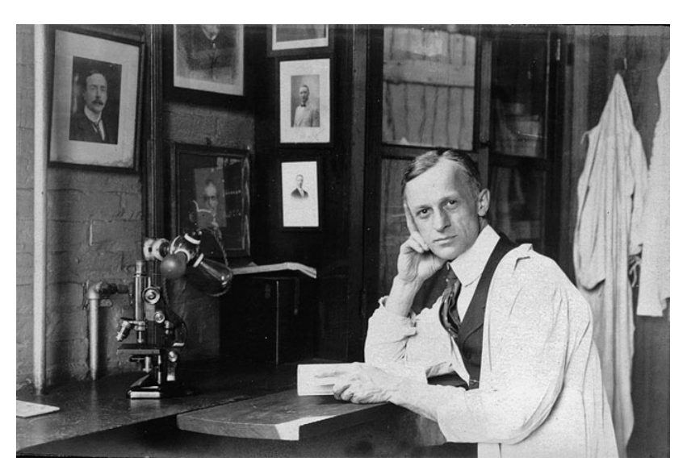
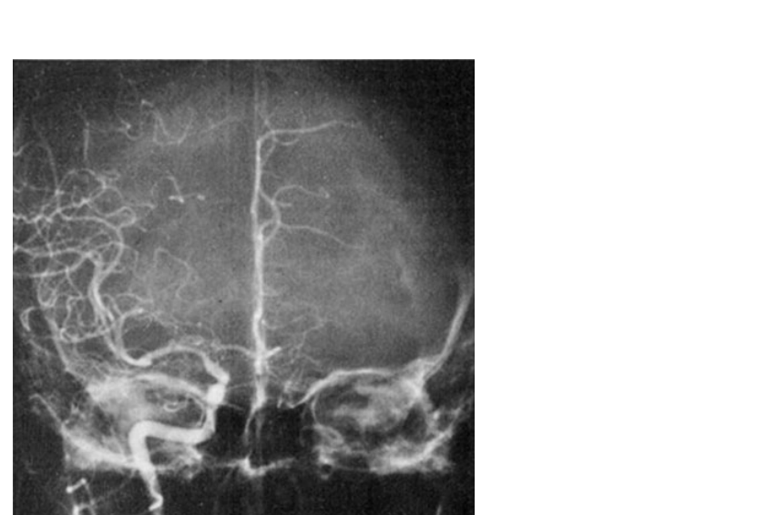


Chương 15 — Tâm thần học thần kinh: Bước đột phá trong dược lý tâm thần
Chương 15
Tâm thần học thần kinh: Bước đột phá trong Dược lý tâm thần
Trước năm 1950, các phương tiện để cải thiện rối loạn tâm thần chỉ giới hạn ở phân tâm học một mặt, và các liệu pháp cực đoan như phẫu thuật tâm thần hoặc kích thích điện lên não để gây co giật mặt khác. Tâm trí vẫn được quan niệm là tách biệt với thể xác. Tình hình này đã thay đổi triệt để nhờ những khám phá về thuốc vào thập niên 1950. Các thuốc điều trị tâm thần phân liệt như chlorpromazine, reserpine và nhóm butyrophenone (haloperidol) đã tạo ra sự làm dịu đáng kinh ngạc ở các bệnh nhân tâm thần phân liệt, dẫn đến việc giảm thiểu hoặc loại bỏ hoàn toàn tình trạng bệnh nhân kích động bạo lực tại các khoa điều trị nội trú. Một số nhóm thuốc chống trầm cảm (iproniazid, thuốc ức chế monoamine oxidase và thuốc chống trầm cảm ba vòng) được phát hiện, mang lại sự giải thoát đầu tiên cho chứng rối loạn tâm thần và cảm xúc gây suy nhược này. Hiệu quả của lithium trong điều trị trầm cảm và rối loạn lưỡng cực cũng được xác lập. Các thuốc điều trị rối loạn tâm căn, chẳng hạn như các trạng thái lo âu, cũng được khám phá, khởi đầu với meprobamate và nhóm benzodiazepine. Những phát hiện này đã định hình ba nhóm thuốc chính dùng trong tâm thần học suốt nửa thế kỷ tiếp theo. Tổng hợp lại, những khám phá ấy đã biến thập niên 1950 thành một thập kỷ mang tính cách mạng không chỉ đối với ngành tâm thần học mà còn đối với toàn thể nhân loại. Một nhánh nghiên cứu riêng biệt khác đã mô tả bản chất của stress và xác định vai trò trung tâm của trục hạ đồi–tuyến yên.
Chúng ta đã từng đề cập đến những tiến bộ trong việc tìm hiểu các phân tử tín hiệu nền tảng cho chức năng não bình thường ở các chương trước (Chương 4 và 9). Bây giờ chúng ta xem xét những bước tiến trong việc khám phá các phân tử có thể dùng để điều trị rối loạn tâm thần. Ở đây một lần nữa, những đột phá lớn đều diễn ra vào thập niên 1950:
Tất cả các nguyên mẫu của thuốc hướng thần hiện đại (lithium, chlorpromazine, meprobamate, imipramine và chlordiazepoxide) đều được phát hiện trong khoảng thời gian 10 năm [1948/49–1958]. Chưa từng có trước đó cũng như sau này một chuỗi các tiến bộ điều trị như vậy được tạo ra trong ngành tâm thần học.
(Spiegel, 45)
Công trình này đã cách mạng hóa việc điều trị bệnh tâm thần, đồng thời cung cấp những hiểu biết mới về chất dẫn truyền thần kinh và các hệ thống dẫn truyền thần kinh. Thông qua những khám phá này và các phát hiện liên quan, tâm thần học—và nhân loại—có lẽ đã hưởng lợi nhiều nhất từ những cuộc cách mạng trong vài năm ngắn ngủi của thập niên 1950.
Thuốc chống loạn thần
Việc phát hiện ra các hóa chất tổng hợp hữu ích trong y học lâm sàng nhằm lập lại trật tự cho những tâm trí rối loạn đã bắt đầu, như thường lệ, từ những loại thuốc vốn được các công ty dược phẩm phát triển cho mục đích khác. Trong trường hợp này, đó là các thuốc điều trị tác động của histamine. Trong số các hoạt động của mình, histamine được giải phóng trong cơ thể trong các phản ứng quá mẫn, một số rất nghiêm trọng như sốc phản vệ ảnh hưởng đến toàn bộ cơ thể, và một số gây khó chịu như các phản ứng dị ứng gây hắt hơi đi kèm cảm lạnh thông thường. Trong thập niên 1940, các phòng thí nghiệm dược phẩm tại Hoa Kỳ và Pháp (hoạt động độc lập với nhau do sự gián đoạn của Thế chiến II) đều quan tâm đến việc tổng hợp các hợp chất kháng histamine cho những mục đích này.
Triển vọng của những loại thuốc như vậy trong điều trị cảm lạnh thông thường đã tạo ra nhu cầu lớn từ công chúng; chính từ thời kỳ đó mà những loại thuốc vẫn còn phổ biến cho đến ngày nay, chẳng hạn như diphenhydramine (Benadryl), đã ra đời. Điều này đã dẫn Paul Charpentier, một nhà hóa học tại công ty dược phẩm Rhone-Poulenc ở Pháp, vào năm 1950 tổng hợp một số hợp chất có tác dụng kháng histamine. Một trong số đó là promethazine (Phenergan), chất này có tác dụng phụ tưởng chừng không mong muốn là làm bệnh nhân buồn ngủ (một tác dụng vẫn còn hiện diện ở nhiều thuốc kháng histamine ngày nay).
Chlorpromazine (Largactil, Thorazine)
Khám phá khởi đầu cho cuộc cách mạng trong tâm thần học bắt nguồn từ một bác sĩ phẫu thuật hải quân người Pháp đóng quân tại Malta.
Henri Laborit. Promethazine thu hút sự chú ý của Henri Laborit (Hình 15.1A) vì cả tác dụng an thần—mà ông thấy hữu ích trong việc làm dịu bệnh nhân khi chuẩn bị phẫu thuật—lẫn tác dụng kháng histamine, dựa trên giả thuyết rằng việc giải phóng histamine có thể là nguyên nhân gây sốc phẫu thuật (tình trạng tụt huyết áp đột ngột khi đang gây mê toàn thân). Ông gọi tác dụng an thần này là ‘‘gây mê tăng cường’’ (potentiated anesthesia) và ‘‘ngủ đông nhân tạo’’ (artificial hibernation). Ông yêu cầu công ty cung cấp thêm các hợp chất để thử nghiệm sâu hơn. Trong số đó, Charpentier đã tổng hợp một hợp chất mang mã 4560RP (gọi là ‘‘chlorpromazine’’), vốn bị công ty xếp xó vì hoạt lực kháng histamine yếu và bị cho là có tác dụng an thần quá mạnh. Laborit nhận thấy chlorpromazine tạo ra một trạng thái ‘‘quie´tude be´atifique’’ (‘‘bình thản an lạc’’) ở các bệnh nhân của mình. Do đó, ông gợi ý với các đồng nghiệp trong ngành tâm thần học rằng nó có thể hữu ích để làm dịu các bệnh nhân kích động. Tuy nhiên, hầu hết đều thấy nó không hiệu quả.
Pierre Deniker và Jean Delay. Bước đột phá đến vào năm 1951–1952 khi hai bác sĩ tâm thần tại Paris là Pierre Deniker và Jean Delay (Hình 15.1B, C) thử nghiệm một phác đồ bắt đầu với liều nhỏ và tăng dần lên liều tương đối lớn. Một cách ngoạn mục, các bệnh nhân kích động trở nên bình tĩnh. Các thử nghiệm tiếp theo cho thấy thuốc có tác dụng giảm lo âu và thậm chí mang lại cải thiện đối với chứng hoang tưởng và các triệu chứng loạn thần hưng cảm. Tin tức lan truyền nhanh chóng qua một loạt 11 công bố, bắt đầu từ Laborit vào tháng 2 và tiếp nối với Delay, Deniker cùng bốn nhóm nghiên cứu khác của Pháp, chỉ trong vòng 6 tháng của năm 1952 (Deniker, 1983).
Như mọi loại thuốc khác, chlorpromazine cũng có tác dụng phụ. Nghiêm trọng nhất là ở liều cao hơn, thuốc gây ra một hội chứng giống bệnh Parkinson, bao gồm cứng cơ, chậm vận động và run khi nghỉ ở các chi. Do đó, việc điều trị phải cân chỉnh giữa tác dụng kiểu Parkinson và tác dụng làm dịu. Như chúng ta sẽ thấy, chính các tác dụng kiểu Parkinson này thực chất đã trở thành một trong những chìa khóa để hiểu cơ chế tác động của thuốc lên não.
Nhiều tác dụng đa dạng của chlorpromazine đã thúc đẩy Rhone-Poulenc tiếp thị thuốc dưới tên gọi ‘‘Largactil’’ (‘‘tác dụng rộng’’). Một bác sĩ trẻ người Thụy Sĩ, F. Labhardt, đã biết đến loại thuốc này khi đang tu nghiệp sau tiến sĩ tại Paris vào năm 1951–1952. Trở về Basel, ông cùng các đồng nghiệp tiến hành các thử nghiệm với thuốc vào đầu năm 1953, chứng minh hiệu quả của nó trong điều trị trầm cảm, nghiện, hội chứng cai và đặc biệt là tâm thần phân liệt. Hội nghị chuyên đề Largactil lần thứ nhất được tổ chức tại Basel vào tháng 11 năm 1953, nơi các báo cáo về loại thuốc này đã khơi dậy sự quan tâm rộng rãi.
Chlorpromazine lần đầu tiên được thử nghiệm tại Bắc Mỹ vào năm 1954, và đến năm 1955 thuốc đã được chấp nhận tại Hoa Kỳ dưới tên thương mại ‘‘Thorazine’’. Tại đây, cũng như ở châu Âu, tác động của nó lên thực hành tâm thần học diễn ra tức thì và ngoạn mục. Những bệnh nhân mắc bệnh tâm thần nặng khiến họ hưng cảm, đe dọa, bạo lực, thu mình, la hét và nhìn chung không thể kiểm soát đã trở nên điềm tĩnh, hợp tác và có thể bắt đầu sinh hoạt bình thường. Chính tôi đã tận mắt chứng kiến những bệnh nhân điềm tĩnh và hợp tác này khi còn là sinh viên y khoa đi thực tập qua các khoa của các bệnh viện tâm thần ở khu vực Boston năm 1956; chúng tôi được kể lại rằng chỉ một năm trước đó, việc đi bộ qua các khoa này là điều bất khả thi vì nguy hiểm thể chất từ chính những bệnh nhân ấy.
Tất cả những điều này diễn ra từ rất lâu trước khi có một lĩnh vực mang tên khoa học thần kinh, nhưng rất ít tiến bộ kể từ đó có thể sánh được với tác động mang tính cách mạng và đầy lợi ích đối với sức khỏe tâm thần. ‘‘Đó là . . . lần đầu tiên một loại thuốc đơn lẻ có hoạt tính trong điều trị các chứng loạn thần nặng’’ (Deniker, 1983, 166).
Reserpine
Loại thuốc tiếp theo được phát hiện có tác động lên tâm trí bắt nguồn từ một loài thực vật gọi là cây ba gạc (Rauwolfia serpentina), vốn được biết đến ở Ấn Độ như một bài thuốc dân gian truyền thống.
Vào thập niên 1930, nó được đưa vào sử dụng lâm sàng tại Ấn Độ để hạ huyết áp cao. Hoạt chất chính là reserpine được Công ty Dược phẩm Ciba phân lập vào năm 1950, và các thử nghiệm lâm sàng bắt đầu để điều trị tăng huyết áp. Người ta sớm nhận thấy rằng, giống như chlorpromazine, reserpine có tác dụng làm dịu trạng thái tâm thần và có thể giúp thuyên giảm cho bệnh nhân tâm thần phân liệt. Cũng như trường hợp của chlorpromazine 2 năm trước đó, một loạt báo cáo dồn dập vào năm 1954 của Nathan Kline ở Hoa Kỳ, Delay và Deniker ở Pháp, H. Steck ở Thụy Sĩ cùng nhiều người khác đã xác lập các tác dụng này.
Các nghiên cứu cẩn trọng của Steck cho thấy liều cao reserpine gây ra các triệu chứng vận động kiểu Parkinson tương tự chlorpromazine (cử động cứng và chậm, run tay, v.v.). Khi đánh giá những kết quả này, Delay và Deniker (1955) hình dung rằng bộ não dường như đã bị các loại thuốc này nắm giữ và kìm lại, và họ đưa ra thuật ngữ ‘‘an thần kinh’’ (neuroleptic: neuro, ‘‘nơ-ron’’; lepti, ‘‘nắm giữ’’) để mô tả hiệu ứng đó. Thuật ngữ này về sau được áp dụng cho mọi loại thuốc ‘‘chống lại tình trạng bứt rứt nội tâm rõ rệt, kích động tâm thần vận động và mất ngủ nghiêm trọng’’, những triệu chứng đặc trưng cho loạn thần phân liệt, hưng cảm, hoang tưởng và trầm cảm (Spiegel, 1997, 3).
Reserpine được nhận thấy có tác dụng rất chậm, và ở liều cao hơn, các triệu chứng kiểu Parkinson cản trở tác dụng chống loạn thần. Thuốc dần không còn được dùng trong tâm thần học, mặc dù vẫn tiếp tục được sử dụng làm thuốc hạ huyết áp. Cơ chế tác động của nó sau này đã cung cấp những manh mối quan trọng trong việc phát triển thêm các thuốc an thần kinh.
Nhóm Butyrophenone: Haloperidol
Một nhóm thuốc an thần kinh quan trọng khác được tạo ra trong thập niên 1950 là nhóm butyrophenone. Công trình này bắt đầu vào năm 1953 với nghiên cứu của P. A. J. Janssen, J. P. Tollenaere và các đồng nghiệp về những hợp chất có thể hiệu quả hơn cả chlorpromazine và reserpine (được thuật lại trong Janssen và Tollenaere, 1983). Họ khởi đầu từ các hóa chất hoàn toàn không liên quan thuộc dãy diphenylpropylamine, với mục tiêu tăng cường sức mạnh giảm đau của một chất trong dãy gọi là ‘‘pethidine’’. Họ kiên trì nỗ lực tổng hợp qua một loạt dẫn xuất có đặc tính giống morphine (giảm đau như tác dụng của morphine) giảm dần và đặc tính giống chlorpromazine (làm dịu động vật) tăng dần cho đến hợp chất R 1625 (R viết tắt của ‘‘research’’ [nghiên cứu], 1625 là số thứ tự hợp chất được tổng hợp trong nghiên cứu).
R 1625, được đặt tên là ‘‘Haloperidol’’, được tổng hợp vào tháng 2 năm 1958 và cấp bằng sáng chế vào tháng 4 cùng năm. Hoạt lực của nó mạnh gấp nhiều lần chlorpromazine, tác dụng nhanh hơn, kéo dài hơn và ít tác dụng phụ hơn. ‘‘Haloperidol cho đến nay là thuốc an thần kinh hoạt tính mạnh nhất được biết đến vào năm 1958’’ (Janssen và Tollenaere, 1983, 189).
‘‘Ngày nay người ta chỉ có thể phỏng đoán điều gì đã dẫn dắt chúng tôi chọn đúng tổ hợp các mảnh phân tử đó trong số hàng nghìn tổ hợp khả dĩ mà chúng tôi có thể tổng hợp. Một sự am hiểu nhất định về mối liên hệ cấu trúc–hoạt tính, sự may mắn và tình cờ khám phá chắc chắn là những yếu tố quan trọng đứng về phía chúng tôi.’’ (Janssen và Tollenaere, 1983, 188)
Haloperidol sau đó trở nên vô cùng giá trị như một công cụ nghiên cứu. Nhờ đánh dấu phóng xạ, người ta chứng minh được rằng trong hai loại thụ thể đối với dopamine ở não là D1 và D2, haloperidol gắn kết vào thụ thể D2. Đây là bằng chứng quan trọng chỉ ra cơ chế tác động của các thuốc an thần kinh nói chung, tức là phong tỏa các thụ thể dopaminergic D2 (tóm tắt trong Snyder, 1996).
Thuốc chống trầm cảm
Trong nửa đầu thế kỷ XX, một sự đồng thuận đã hình thành giữa các bác sĩ tâm thần về hai loại rối loạn tâm thần nặng chính. Một bên là các chứng loạn thần, thường được gộp dưới thuật ngữ ‘‘tâm thần phân liệt’’ (schizophrenia), đặc trưng bởi sự rối loạn tư duy nghiêm trọng đến mức người bệnh tách rời khỏi thực tại (schizo, ‘‘phân chia’’; phrenia, ‘‘tâm trí’’). Như chúng ta đã thấy, đây là những rối loạn được cải thiện nhờ chlorpromazine. Bên kia là chứng trầm cảm, đặc trưng bởi cảm giác buồn bã và tuyệt vọng đau đớn, sâu sắc đến mức một người có thể đánh mất mọi ham muốn sống. Nghịch lý thay, trầm cảm thường xen kẽ với hưng cảm—cảm giác phấn khích quá mức rằng mình có thể làm được mọi thứ. Trong cuộc sống bình thường, ai cũng trải qua những giai đoạn buồn chán hoặc hân hoan, nhưng các dạng nặng lại gây mất năng lực sinh hoạt và khi xuất hiện lặp đi lặp lại cùng nhau thì được gọi là ‘‘rối loạn hưng–trầm cảm’’, hay bệnh lưỡng cực.
Liệu pháp hiệu quả nhất cho trầm cảm nặng từng là liệu pháp sốc điện (EST), liên quan đến việc truyền các dòng điện áp lớn lặp đi lặp lại qua đầu. EST là một phương pháp thô sơ, từng và vẫn còn ít được hiểu rõ, nhưng tiếp tục được sử dụng trong các ca nặng với kết quả thường tương đối tốt. Tuy nhiên, đó là một thực trạng đòi hỏi một giải pháp thay thế dưới dạng liệu pháp thuốc.
Các bác sĩ tâm thần vào giữa thế kỷ luôn tìm kiếm tác dụng chống trầm cảm của các loại thuốc, nhưng chlorpromazine lại gây thất vọng ở phương diện này. Các công ty dược phẩm tạo ra nhiều biến thể của thuốc kháng histamine nhưng cũng thu được rất ít thành công.
Bước đột phá đến từ một số nguồn không ngờ tới.
Iproniazid
Một nguồn đến từ bệnh lao, căn bệnh vào giữa thế kỷ vẫn là một vấn đề y tế công cộng lớn. Bệnh nhân được điều trị chủ yếu bằng các biện pháp chăm sóc giảm nhẹ tại các viện điều dưỡng khắp Hoa Kỳ và thế giới. Các công ty dược phẩm tích cực tìm cách phát triển thuốc chống lao đặc hiệu, và vào năm 1952 Hoffman-LaRoche bắt đầu tiếp thị hai loại thuốc như vậy là iproniazid (Marsalid) và isoniazid. Trong điều trị bệnh lao, iproniazid cho kết quả lẫn lộn, nhưng các bác sĩ lâm sàng nhận thấy bệnh nhân dùng thuốc trở nên vui vẻ, thậm chí sảng khoái, vượt xa mức người ta có thể mong đợi từ bất kỳ sự cải thiện thể trạng nào của họ. Một số nhóm đã thử nghiệm iproniazid trên bệnh nhân tâm thần, nhưng chưa ai xem xét cụ thể khả năng sử dụng nó như một thuốc chống trầm cảm.
Trong thời gian này, Nathan Kline, bác sĩ tâm thần đã giới thiệu reserpine tại Hoa Kỳ để điều trị tâm thần phân liệt, đang phát triển ý tưởng rằng nếu reserpine có thể mang lại tác dụng làm dịu ở bệnh nhân kích động, thì hẳn phải có một loại thuốc khác có tác dụng kích thích. Năm 1956, ông biết được từ Charles Scott và Max Chessin tại phòng thí nghiệm Warner về các thí nghiệm của họ cho thấy nếu động vật được dùng iproniazid trước khi dùng reserpine, thuốc này sẽ đảo ngược tác dụng của reserpine từ giảm hoạt động sang tăng hoạt động (Lehmann và Kline, 1983, 218). Các kết quả tương tự cũng được Bernard Brodie (Hình 15.1D) và Parkhurst Shore thu được một cách độc lập tại Viện Y tế Quốc gia (NIH).
Thời điểm đó có rất ít quy định ràng buộc đối với việc phát triển thuốc. Kline nhanh chóng xin được chấp thuận cho thử nghiệm lâm sàng đầu tiên, mà ông triển khai cùng John Saunders và Harry Loomer tại Bệnh viện Rockland vào tháng 11 năm 1956. Đến tháng 2 năm 1957, có vẻ đã rõ ràng rằng iproniazid (dưới tên ‘‘Marsalid’’) có tác dụng đặc hiệu trong việc làm giảm trầm cảm. Điều này được báo cáo tại các hội nghị vào tháng 4 và tháng 5 (bài báo đầu tiên của Loomer và cộng sự xuất hiện năm 1957). Như vậy, từ giả thuyết đến khi hoàn thành thành công thử nghiệm lâm sàng đầu tiên chỉ mất đúng 1 năm (Lehmann và Kline, 1983). Dù tốt hay xấu, đó quả là một thời kỳ như thế!
Thuốc ức chế Monoamine Oxidase
Hiểu biết về cơ chế tác động của iproniazid đến từ một nhánh nghiên cứu khác vốn có lịch sử lâu đời riêng. Vào thập niên 1930, một loại enzyme phân giải axit amin tyramine (bằng cách loại bỏ nhóm hydroxyl tận cùng) trong gan chuột cống đã được phát hiện. Một họ lớn các hợp chất amine được xác định, và enzyme phân giải chúng được gọi là ‘‘monoamine oxidase’’ (MAO) (Zeller và cộng sự, 1939; Zeller, 1983, 224). Trong số các hợp chất được thử nghiệm về đặc tính kháng MAO có nhóm hydrazide, chính là nhóm chứa iproniazid và isoniazid.
Sự sẵn có mới mẻ của các amine đánh dấu phóng xạ 14C đã giúp Albert Zeller và các đồng nghiệp tại Đại học Northwestern thực hiện các nghiên cứu trên động vật về chuyển hóa amine, cho thấy quá trình phân giải bởi MAO có tham gia. Họ tiếp tục phát hiện rằng iproniazid là chất hiệu quả nhất từng được biết đến trong việc ngăn chặn sự luân chuyển monoamine (Zeller, 1983, 227). Các amine được thử nghiệm bao gồm norepinephrine—vốn được biết là một chất dẫn truyền thần kinh trong hệ thần kinh tự chủ—và serotonin. Dựa trên các kết quả này, Zeller và các đồng nghiệp đã khởi xướng các nghiên cứu lâm sàng riêng về iproniazid trong điều trị trầm cảm. Kết quả nhất quán với các công trình quy mô lớn và nổi tiếng hơn của Kline và cộng sự.
Nghiên cứu của họ về MAO ban đầu gợi lên giả thuyết rằng, tương tự như tác dụng của acetylcholinesterase trong việc chấm dứt hoạt động của acetylcholine tại các khớp thần kinh cholinergic (xem Chương 4), MAO có thể chấm dứt hoạt động của epinephrine và các monoamine khác tại các khớp thần kinh adrenergic. Các nghiên cứu sau đó cho thấy hoạt động của các monoamine thực tế được chấm dứt chủ yếu bởi một cơ chế khác, đó là tái hấp thu vào đầu tận cùng tiền synap (Zeller, 1983, 224; Axelrod, 1965).
Con đường chuyển hóa tổng hợp các monoamine, từ tyrosine hydroxylase qua dopamine và norepinephrine đến epinephrine, đã được xác định trong công trình kinh điển của Hugh Blashko năm 1939 (Chương 4). Việc phân tích con đường này trở nên khả thi nhờ hai bước then chốt: sự ra đời của các thuốc ức chế MAO giúp ngăn chặn sự phân giải monoamine đang nghiên cứu, và reserpine giúp làm cạn kiệt các monoamine. Nhờ hai công cụ này vào đầu thập niên 1950, cộng thêm việc đánh dấu phóng xạ các hợp chất, các monoamine đã bước vào một lĩnh vực nghiên cứu lớn trong hóa học thần kinh và tâm thần học, vốn vẫn tiếp diễn cho đến ngày nay.
Sự cạn kiệt các monoamine do reserpine lần đầu được Bernard Brodie và Parkhurst Shore báo cáo vào năm 1957, khi họ phát hiện reserpine làm cạn kiệt lượng serotonin có thể đo được trong toàn bộ não. Một tác dụng tương tự sau đó được tìm thấy trên chất dẫn truyền thần kinh norepinephrine. Năm 1958, các xét nghiệm toàn não cho thấy sự hiện diện của amine có liên quan là dopamine, và người ta sớm chứng minh rằng nó cũng bị reserpine làm cạn kiệt (Snyder, 1996). Như vậy, trong khi reserpine dần không còn hữu ích trên lâm sàng, nó lại có một cuộc đời thứ hai như một công cụ quý giá trong nghiên cứu trên động vật.
Phần lớn các nghiên cứu ban đầu này tại Hoa Kỳ xuất phát từ Phòng thí nghiệm Dược lý Hóa học của Brodie tại NIH. Brodie là một nhân vật có tầm vóc lớn, người có nghiên cứu được thúc đẩy bởi cả phương pháp lẫn ý tưởng; như người cộng tác lâu năm của ông là Julius Axelrod nhận xét (Healy, 2001, 43):
‘‘Ông ấy rất giàu trí tưởng tượng. . . . để trở thành một nhà khoa học năng suất, bạn phải có thật nhiều ý tưởng để thử nghiệm. . . . Nếu bạn không có ý tưởng mới nào, chẳng có gì xảy ra cả – bạn chỉ có thể làm công việc gia tăng dần – tức là chỉ cải tiến trên cái đã biết. Nhưng để làm điều gì đó nguyên bản, bạn phải có những ý tưởng thực sự táo bạo mà Brodie sở hữu và ông cũng rất có sức thuyết phục. Ông ấy rất biết cách truyền cảm hứng và khiến bạn muốn lao ngay vào phòng thí nghiệm để thử nghiệm các ý tưởng của ông.’’
Imipramine và các thuốc ba vòng
Sau khi chlorpromazine được đưa vào làm thuốc chống loạn thần, các nhà hóa học bắt tay vào tìm kiếm những loại thuốc có liên quan về mặt hóa học với hy vọng có tác dụng tương tự. Trong số đó có các hợp chất iminodibenzyl, vốn giống chlorpromazine ở chỗ gồm một lõi ba vòng benzen xếp thành hàng, với một nhóm amine dài vài nguyên tử carbon gắn vào vòng ở giữa. Hầu hết các chất này nằm yên trên kệ, nói cách khác, chỉ chờ các bác sĩ lâm sàng mang ra thử nghiệm.
Trong số các bác sĩ lâm sàng đầu tiên thử nghiệm chlorpromazine có Roland Kuhn tại một phòng khám tâm thần ở Thụy Sĩ. Không đủ khả năng chi trả cho việc sử dụng chlorpromazine trên quy mô lớn, năm 1954 ông hỏi các nhà hóa học tại Dược phẩm Geigy xem liệu họ có thể cung cấp cho ông một hợp chất rẻ tiền hơn có cấu trúc tương tự chlorpromazine hay không. Hợp chất G 22355, còn gọi là ‘‘imipramine’’, đã được cung cấp. Kuhn thử nghiệm nó trên nhiều bệnh nhân tâm thần với kết quả đáng thất vọng, nhưng ông vẫn kiên trì. Vào mùa xuân năm 1957, chỉ cần thành công ở ba bệnh nhân cũng đủ thuyết phục ông rằng imipramine có tác dụng chống trầm cảm đặc hiệu. Báo cáo đầu tiên của ông được trình bày vào tháng 9 năm 1957 trước cử tọa khoảng một tá người tại Đại hội Tâm thần học Quốc tế lần thứ hai ở Zurich (xem Kuhn, 1958).
Tiếng lành đồn xa, và imipramine nhanh chóng được xác lập trong điều trị trầm cảm nội sinh (tự phát). Nó cũng trở thành nguyên mẫu của nhóm thuốc chống trầm cảm ba vòng, nhóm thuốc không chỉ trở thành trụ cột trong thực hành lâm sàng mà còn là công cụ mạnh mẽ trong các thí nghiệm trên động vật về cơ chế não bộ nền tảng của bệnh trầm cảm. Trong những năm gần đây, các thuốc ba vòng ngày càng được thay thế bởi các thuốc ức chế tái hấp thu serotonin có chọn lọc (SSRI).
Lithium
Một nhánh nghiên cứu hoàn toàn riêng biệt liên quan đến việc sử dụng lithium để chống lại các trạng thái hưng–trầm cảm. Đã có những quan sát truyền miệng nhưng chưa có nghiên cứu có hệ thống nào cho đến khi John Cade (Hình 15.2A) ở Úc đặt giả thuyết rằng các trạng thái hưng cảm có thể tạo ra sự dư thừa một sản phẩm nào đó của cơ thể, vốn sẽ được bài tiết với lượng tăng cao trong nước tiểu. Trong khi thử nghiệm tác dụng độc hại của nước tiểu người lên chuột lang, ông đã đi đến việc sử dụng một dạng axit uric hòa tan gắn với lithium và cuối cùng phát hiện ra rằng khả năng bảo vệ chống lại tác dụng độc hại của urê là do lithium. Tiêm lithium carbonate vào chuột lang gây ra trạng thái lờ đờ. Năm 1949, ông báo cáo rằng lithium carbonate làm giảm các trạng thái kích thích ở bệnh nhân loạn thần. Rất ít bác sĩ tâm thần để ý đến.
Năm 1954, Mogens Schou (Hình 15.2B) ở Đan Mạch đã tiến hành một nghiên cứu lâm sàng có hệ thống xác lập hiệu quả của lithium trong điều trị các trạng thái hưng cảm (Schou và cộng sự, 1954). Mặc dù ban đầu có sự hoài nghi rằng một ion kim loại đơn giản lại có thể tạo ra tác dụng này, các nghiên cứu tiếp theo qua nhiều thập kỷ của Schou và những người khác đã dần dẫn đến sự chấp nhận lithium như một thành phần trong liệu pháp điều trị rối loạn lưỡng cực.
Một trở ngại đối với việc sử dụng lithium là thực tế rằng, với tư cách một loại muối thông thường, nó không thể được cấp bằng sáng chế; do đó, không có công ty dược phẩm nào quan tâm đến việc phát triển nó cho mục đích điều trị. Tuy nhiên, tầm quan trọng của liệu pháp lithium không thể bị xem nhẹ: theo Richard Restak (1995, 66–67): ‘‘Khám phá của ông [John Cade] về tác dụng chống hưng cảm của lithium đã khai sinh ra khoa học dược lý tâm thần hiện đại’’.
‘‘Thuốc an thần nhẹ’’ (Minor Tranquillizers)
Khác biệt với các dạng bệnh tâm thần nặng đặc trưng bởi tâm thần phân liệt và trầm cảm là các trạng thái căng thẳng, lo âu, bồn chồn, mất ngủ, đau đầu, rối loạn tiêu hóa và những biểu hiện tương tự (Spiegel, 17) do vô số áp lực của đời sống thường nhật gây ra. Đối lập với các chứng loạn thần, những trạng thái này mang tên gọi rối loạn tâm căn (neuroses). Chúng có thể dao động từ mức gây khó chịu đến mức làm mất khả năng sinh hoạt.
Theo truyền thống, con người tìm cách giải tỏa những căng thẳng này bằng nhiều phương tiện khác nhau (Spiegel, 20). Rượu là một trong những thứ phổ biến nhất; tuy nhiên, như ai cũng biết quá rõ, rượu chỉ có tác dụng làm dịu chung chung và thoáng qua, và khi dùng mạn tính sẽ trở nên gây nghiện và có hại. Thuốc lá cũng giúp bình tĩnh nhưng gây nghiện, với những tác hại riêng lên cơ thể. Các chất dạng thuốc phiện có đặc tính gây nghiện nổi tiếng, cũng như các loại thuốc như barbiturate.
Meprobamate (Miltown)
Được thúc đẩy bởi thành công của chlorpromazine trong việc cải thiện các chứng loạn thần, các công ty dược phẩm và bác sĩ lâm sàng vào đầu thập niên 1950 đã nỗ lực thử nghiệm các loại thuốc có tác dụng làm dịu đặc hiệu (còn gọi là ‘‘thuốc giải lo âu’’ [anxiolytics]) cho các chứng rối loạn tâm căn. Hướng đi cuối cùng chứng tỏ thành công thực chất bắt đầu từ một chương trình nghiên cứu tại một công ty dược phẩm ở Anh vào thập niên 1940 nhằm phát triển các loại thuốc hiệu quả chống lại vi khuẩn kháng penicillin (Spiegel và Markstein, 1997, 43; Snyder, 157).
Chương trình do Frank Berger đứng đầu, một người Tiệp Khắc đã trốn sang Anh trong Thế chiến II. Một trong những hợp chất được tạo ra là mephenesin. Một tác dụng phụ của thuốc này là động vật được tiêm liều cao trở nên mềm nhũn do giãn cơ và an thần, mặc dù chúng vẫn hoàn toàn tỉnh táo (Snyder, 157). Berger mô tả tác dụng lên động vật là ‘‘sự làm dịu’’ (tranquillization). Các thử nghiệm trên người cũng cho thấy thuốc vừa giãn cơ vừa giảm lo âu mà không làm mờ ý thức.
Mephenesin bị phân hủy nhanh trong cơ thể, vì vậy các nhà hóa học đã thử nghiệm các hợp chất liên quan chuyển hóa chậm hơn. Điều này dẫn đến sự ra đời của meprobamate vào năm 1954, đáp ứng các tiêu chí mong muốn là giảm lo âu với thời gian tác dụng kéo dài và ít tác dụng phụ. Meprobamate được Berger thử nghiệm lâm sàng năm 1955 (Spiegel và Markstein, 1997, 45) và, khi được tung ra thị trường Hoa Kỳ cùng năm dưới tên gọi ‘‘Miltown’’, đã trở thành thuốc chống lo âu được sử dụng rộng rãi đầu tiên. Trái ngược với tác dụng chống loạn thần của chlorpromazine (được xếp vào nhóm ‘‘thuốc an thần mạnh’’ [major tranquillizer]), meprobamate được gọi là ‘‘thuốc an thần nhẹ’’ (minor tranquillizer) vì tác động lên rối loạn tâm căn. Đến lượt các barbiturate bị giáng xuống thành ‘‘thuốc ngủ/an thần gây ngủ’’ (sedatives). Tuy nhiên, thành công của meprobamate không kéo dài lâu. Bệnh nhân vẫn bị buồn ngủ. Tệ hơn nữa, bệnh nhân trở nên dung nạp (lờn) với thuốc, đòi hỏi liều ngày càng cao hơn, dẫn đến tình trạng nghiện.
Nhóm Benzodiazepine (Librium, Valium)
Thành công ban đầu của meprobamate đã kích thích các công ty dược phẩm bước vào lĩnh vực mới này bằng cách chỉ đạo các nhà hóa học tìm kiếm các hợp chất khác có đặc tính ‘‘an thần tâm lý’’ (psychosedative). Trong số đó có Leo Sternbach (Hình 15.3) tại Phòng thí nghiệm Roche. Sternbach được đào tạo tại Ba Lan; ông đang làm việc ở Thụy Sĩ khi Thế chiến II bùng nổ và sớm tìm đường sang Hoa Kỳ. Thay vì chiến lược phát triển thuốc thông thường là xây dựng từ các hợp chất đã biết, Sternbach quyết định chọn hướng tiếp cận mạo hiểm hơn là thử sức với những hợp chất hoàn toàn mới (Haefely, 1983, 272). Ông nhớ lại một số hóa chất mình từng nghiên cứu ở Ba Lan làm thuốc nhuộm tiềm năng, bao gồm 3,1–4-benzoxadiazepine. Chúng có một chuỗi nhánh bazơ, vốn có hoạt tính trong nhiều loại thuốc mang hoạt tính sinh học (Haefely, 1983, 274).
Sternbach đã tổng hợp một số hợp chất dẫn xuất từ cấu trúc này và thử nghiệm chúng nhưng không thu được kết quả thú vị nào trên động vật. Công việc bị gác lại, và công ty yêu cầu ông chuyển sang các dự án khác. Một ngày nọ khi đang dọn dẹp phòng thí nghiệm, ông để ý thấy một hợp chất cuối cùng còn sót lại từ nghiên cứu đó và gửi nó, gắn nhãn Ro 5-0690, cho Lowell Randall, trưởng đơn vị dược lý, để đánh giá tác dụng dược lý. Vài ngày sau, Randall báo cáo rằng hợp chất này thể hiện mọi đặc tính mong muốn: ‘‘một chất giãn cơ và an thần mạnh không có đặc tính gây mê toàn thân và dường như không có tác dụng lên hệ tự chủ, và tất cả những điều này đi kèm độc tính rất thấp’’ (Haefely, 1983, 275).
Sternbach tái tổng hợp Ro 5-0690 với số lượng lớn hơn để phát triển thêm. Ông phát hiện ra rằng hợp chất này có cấu trúc hóa học của một quinazoline 3-oxide và thuộc nhóm benzodiazepine (Haefely, 1983, 277). Cuối cùng nó được đặt tên gốc là ‘‘chlordiazepoxide’’. Các đặc tính dược lý được báo cáo vào năm 1959 và công bố vào năm sau (Randall và cộng sự, 1960). Các thử nghiệm lâm sàng bắt đầu vào năm 1958 với kết quả đáng thất vọng. Đối tượng thử nghiệm cảm thấy buồn ngủ, chóng mặt và nói lắp, nên các thử nghiệm bị dừng lại. Sau đó người ta nhận ra liều lượng quá cao; ở liều thấp hơn, các tác dụng mong muốn đã xuất hiện. Sự chấp nhận lan rộng nhanh chóng, và vào tháng 2 năm 1960, sau 2 năm thử nghiệm lâm sàng, chlordiazepoxide được đưa vào thị trường Hoa Kỳ như một loại thuốc an thần (nhẹ) mới với tên gọi ‘‘Librium’’. Việc tinh chỉnh hóa học thêm trên phân tử này được thực hiện để tìm ra một hợp chất ít đắng hơn, kết quả là vào năm 1963 cho ra đời diazepam (Valium). Hàng chục biến thể khác đã xuất hiện kể từ đó.
Trong suốt quá trình phát triển nhóm benzodiazepine, chưa có hiểu biết nào về cơ chế dược lý được rút ra. Trái ngược với quá trình phát triển thuốc chống trầm cảm—vốn ngay từ các khảo sát ban đầu đã cho thấy liên quan đến các chất dẫn truyền thần kinh monoamine—các thử nghiệm trên hệ acetylcholine và monoamine chỉ cho thấy tác động không đáng kể. Phải đến cuối thập niên 1960, mối liên hệ giữa benzodiazepine với các khớp thần kinh ức chế sử dụng chất dẫn truyền thần kinh g-aminobutyric acid (GABA) mới được nhận ra. Ngoài ra, tác dụng của benzodiazepine như thuốc chống co giật trong kiểm soát cơn động kinh cũng phải chờ đến tương lai.
Stress
Rất ít thuật ngữ từ nghiên cứu y sinh học đi vào vốn từ vựng đại chúng rộng rãi như ‘‘stress’’, một sản phẩm khác của thập niên 1950, mà Hans Selye là người khởi xướng.
Selye sinh ra trong gia đình gốc Hungary tại Vienna vào năm 1907. Sau khi lấy bằng y khoa ở Prague năm 1929, ông sang Hoa Kỳ học tại Johns Hopkins, rồi chuyển đến Canada tại Đại học McGill. Ông bắt đầu bằng việc nghiên cứu sự phát triển xương và chuyển hóa canxi, sau đó thực hiện một dự án tiêm chiết xuất nội tạng vào động vật và quan sát tác động lên các cơ quan khác nhau trong cơ thể. Những phát hiện ban đầu của ông được báo cáo trong một bài ghi chú ngắn trên tạp chí Nature năm 1936, nhan đề ‘‘Một hội chứng gây ra bởi các tác nhân gây hại đa dạng’’ (A Syndrome Produced by Diverse Nocuous Agents), mở đầu như sau (trang 32):
Các thí nghiệm trên chuột cống cho thấy nếu cơ thể bị tổn thương nặng bởi các tác nhân gây hại cấp tính không đặc hiệu như tiếp xúc với lạnh, chấn thương phẫu thuật, gây sốc tủy (cắt ngang tủy sống), vận động cơ quá sức, hoặc nhiễm độc với liều cận tử của nhiều loại thuốc khác nhau (adrenaline, atropine, morphine, formaldehyde, v.v.), một hội chứng điển hình sẽ xuất hiện, với các triệu chứng độc lập với bản chất của tác nhân gây hại hay loại dược lý của thuốc được dùng, và đúng hơn là đại diện cho một phản ứng đối với tổn thương nói chung.
Ông mô tả hội chứng này phát triển qua ba giai đoạn. Trong 2 ngày đầu, nhiều cơ quan cơ thể bị ảnh hưởng: tuyến ức teo lại, dạ dày và tá tràng xuất hiện vết loét; có hiện tượng phù nề lan rộng, cùng các tác động khác. Tiếp theo là sự phì đại của vỏ thượng thận và điều có vẻ như là sự chuyển hướng của thùy trước tuyến yên sang tăng cường sản xuất các hormone hướng giáp và hướng thượng thận để đối phó với tình trạng khẩn cấp của cơ thể. Nếu phản ứng này thành công, nó được gọi là ‘‘giai đoạn đề kháng’’ (resistance stage). Nếu không, động vật sẽ tiến sang giai đoạn thứ ba, giai đoạn kiệt sức.
Chúng tôi xem giai đoạn đầu tiên là biểu hiện của một báo động chung của cơ thể khi đột ngột đối mặt với một tình huống nguy kịch, và do đó gọi nó là ‘‘phản ứng báo động chung’’ (general alarm reaction). Vì hội chứng xét trên tổng thể dường như đại diện cho một nỗ lực tổng quát của cơ thể nhằm tự thích nghi với các điều kiện mới, nó có thể được gọi là ‘‘hội chứng thích nghi chung’’ (general adaptation syndrome). Có thể so sánh nó với các phản ứng phòng vệ chung khác như viêm hay sự hình thành kháng thể miễn dịch. Các triệu chứng của phản ứng báo động rất giống với nhiễm độc histamine hoặc sốc phẫu thuật hay sốc phản vệ; do đó không loại trừ khả năng một phần thiết yếu trong việc khởi phát hội chứng là sự giải phóng một lượng lớn histamine hoặc một chất tương tự, có thể được phóng thích từ các mô một cách cơ học trong chấn thương phẫu thuật, hoặc bằng các phương thức khác trong những trường hợp khác. Đối với chúng tôi, dường như các dạng ít nhiều rõ rệt của phản ứng ba giai đoạn này đại diện cho đáp ứng thông thường của cơ thể trước các kích thích như thay đổi nhiệt độ, thuốc men, vận động cơ, v.v., những thứ mà sự quen dần hoặc chai lì có thể xảy ra (32).
Bài báo năm 1936 này được gọi là ‘‘một hòn đá tảng của tâm thần học thần kinh vì nó dẫn đến việc nghiên cứu tác động của stress và hormone, đặc biệt là corticosteroid, lên chức năng não’’ (Neylan, 1998, 230). Selye đã phát triển ý tưởng về ‘‘hội chứng thích nghi chung’’ thông qua một loạt thí nghiệm về tác động lên các cơ quan khác nhau của cơ thể. Đến năm 1950, ông đã xác định được các con đường nội tiết kết nối với nhau dường như có tham gia. Bằng cách đó, ông được ghi nhận đã xác định trục hạ đồi–tuyến yên (HPA) là con đường trung tâm kiểm soát nội tiết, tương ứng về mặt sinh lý với con đường giải phẫu và mạch máu từ vùng hạ đồi đến thùy trước tuyến yên được Harris và các cộng sự (1955) xác định trong cùng giai đoạn này (xem Chương 11).
Năm 1949, ông bắt đầu thay thế thuật ngữ ‘‘phản ứng báo động’’ bằng ‘‘stress’’ khi mô tả hội chứng này, trong các bài báo nghiên cứu (Fortier và Selye, 1949) và ngay sau đó trong một chuyên khảo đồ sộ (Selye, 1956). Những ấn phẩm này lập tức giúp từ ‘‘stress’’ được lưu hành rộng rãi trong công chúng. Tôi nhớ rất rõ thời kỳ này, khi ý tưởng về mối liên kết giữa não và cơ thể—thường trong bối cảnh mới của ‘‘y học tâm thể’’ (psychosomatic medicine)—ngày càng được thảo luận nhiều. Bức tường ngăn cách 300 năm do Descartes dựng lên giữa hai thực thể này đang bị phá vỡ. Chính trong thời gian đó, các loại thuốc hướng tâm thần bắt đầu xuất hiện trên thị trường, hứa hẹn làm giảm nhẹ hoặc chữa khỏi nhiều chứng bệnh—lo âu, rối loạn tâm căn, trầm cảm—vốn gắn liền trực tiếp hoặc gián tiếp với stress.
Selye đã cho ra đời hàng loạt bài báo và sách về chủ đề này. Ông trở thành một nhân vật đầy sức hút trong việc quảng bá loại hình khoa học mới mẻ này, kết nối thế giới của bộ não, cơ thể và hormone, cùng cách chúng đối phó với những căng thẳng của cuộc sống. Tính đến khi qua đời vào năm 1982, ông đã công bố 1.700 bài báo và 40 cuốn sách. Ông thường được nhắc đến như người xứng đáng nhận sự vinh danh cao nhất cho những thành tựu của mình. Có một số lý do khiến ông chưa đạt được điều đó. Trước hết là vấn đề với định nghĩa của ‘‘stress’’. Trong vật lý học, stress (ứng suất) là tác nhân, còn đáp ứng là strain (biến dạng), hoàn toàn ngược lại với cách dùng của Selye. Về sau, người ta dẫn lời ông bày tỏ sự hối tiếc về sự thiếu nhất quán thuật ngữ này. Quy mô bao trùm tất cả trong quan niệm của ông khiến nó dễ bị chỉ trích vì những thiếu chính xác khi mô tả các khía cạnh cụ thể của hệ thống ‘‘stress’’, chẳng hạn như cho rằng đáp ứng stress luôn giống hệt nhau bất kể bản chất của ‘‘tác nhân gây stress’’ (stressor). Corticosteroid là một phần quan trọng của đáp ứng stress và vốn đã bị thổi phồng quá mức như một thuốc chữa bách bệnh cho nhiều phản ứng viêm; điều này cũng thúc đẩy một thái độ hoài nghi lành mạnh đối với các tuyên bố về tầm quan trọng của đáp ứng stress. ‘‘Stress’’ sớm trở thành một thuật ngữ bao hàm quá rộng, qua đó đánh mất giá trị khoa học của nó. Mặc dù là một ‘‘hòn đá tảng’’ của tâm thần học thần kinh, stress hầu như không được nhắc đến trong một cuốn lịch sử tâm thần học gần đây, và Selye bị rơi vào quên lãng (Shorter, 1997).
Nghiên cứu hiện đại về stress được thực hiện chủ yếu ở cấp độ các hệ thống cụ thể, chẳng hạn như trục HPA, hệ viền (limbic) phụ trách cảm xúc và lo âu, và hệ tim mạch nền tảng cho chứng tăng huyết áp. Tuy nhiên, nhìn từ góc độ dài hạn hơn, ‘‘stress’’ là một trong những đóng góp quan trọng của thập niên 1950, cả vì tác động của nó đối với y học và công chúng nói chung lẫn vì sự hòa nhập của nó vào tư duy hằng ngày về thân phận con người.
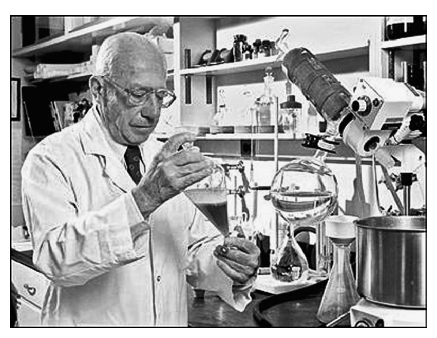
Chương 16 — Khoa học thần kinh lý thuyết: Não bộ như máy tính và máy tính như bộ não
Chương 16
Khoa học Thần kinh Lý thuyết: Bộ não như một Máy tính và Máy tính như một Bộ não
Giữa thế kỷ XX đánh dấu sự xuất hiện của một số lĩnh vực mới đặt nền móng cho các lý thuyết tổng quát về chức năng não bộ. McCulloch và Pitts đã áp dụng phép ẩn dụ logic ký hiệu vào các mạch tế bào thần kinh, đặt ra giả thuyết rằng các kết nối liên hợp đặc hiệu có thể thực hiện các hàm logic cơ bản như cổng AND, OR và AND–NOT. John von Neumann đã dựa trên ý tưởng này về bộ não để xây dựng kiến trúc cổ điển của máy tính kỹ thuật số. Một lĩnh vực mới là lý thuyết trò chơi đã nảy sinh từ công trình tiên phong của von Neumann và Morgenstern. Shannon và Weaver đã thiết lập ngành học mới là lý thuyết thông tin, vốn trở thành khuôn khổ cho kỷ nguyên máy tính. Những phát triển trong lý thuyết điều khiển, thần kinh học và hành vi thích nghi đã hội tụ trong lĩnh vực mới là điều khiển học (cybernetics). Các tế bào thần kinh đơn giản hóa quá mức của McCulloch-Pitts đã góp phần vào sự trỗi dậy của trí tuệ nhân tạo và mạng thần kinh nhân tạo. Cuối cùng, von Neumann nhận ra rằng các phần tử tính toán cơ bản của hệ thần kinh không phải là các tế bào thần kinh đơn giản hóa quá mức mà là từng synapse riêng lẻ phân bố trên các cây đuôi gai. Nhận thức sâu sắc này đã dự báo cho công trình hiện nay về việc phát triển các mạng thần kinh quy mô lớn thực tế hơn, dựa trên các nghiên cứu ở mọi cấp độ tổ chức được đề cập trong cuốn sách này, nhằm mô phỏng cách bộ não thực sự thực hiện các chức năng của nó.
Sự ra đời của khoa học thần kinh hiện đại rõ ràng được thúc đẩy bởi những tiến bộ thực nghiệm. Tuy nhiên, độc giả tinh ý sẽ nhận thấy rằng lý thuyết thực tế đã đóng một vai trò then chốt. Một số tiến bộ chính liên quan đến các loại mô hình toán học và/hoặc lý thuyết cụ thể được tóm tắt trong Bảng 16.1.
Ngoài những tiến bộ này ở các cấp độ tổ chức chức năng cụ thể, thách thức tối hậu trong khoa học thần kinh là xây dựng một lý thuyết áp dụng cho
Bảng 16.1 Đóng góp của Lý thuyết đối với các Chức năng Cụ thể của Tế bào Thần kinh
Mô hình vật lý của DNA bởi Watson và Crick (Chương 2) Lý thuyết màng trường hằng số của Goldman-Hodgkin-Huxley (Chương 4) Mô hình toán học về điện thế hoạt động thần kinh của Hodgkin và Huxley (Chương 4) Lý thuyết Poisson/nhị thức cho sự giải phóng túi synapse của del Castillo và Katz (Chương 5) Lý thuyết phân nhánh đuôi gai của Rall (Chương 6) Lý thuyết học tập synapse của Hebb (Chương 10) Chuyển hóa năng lượng của não (Chương 14)
Bảng 16.2 Các Bước Đầu tiên Hướng tới một Lý thuyết về Chức năng Não bộ
Logic ký hiệu (Boole, 1854; Shannon, 1937; McCulloch và Pitts, 1943) Bộ não như một máy tính (von Neumann, 1945, 1957) Lý thuyết trò chơi (von Neumann và Morgenstern, 1944) Lý thuyết thông tin (Shannon và Weaver, 1948) Điều khiển học (Wiener, 1948) ‘‘Tập hợp tế bào’’ (Hebb, 1949) Trí tuệ nhân tạo và mạng thần kinh (thập niên 1950)
toàn bộ bộ não. Nếu xung thần kinh và synapse là những phần tử phổ quát của hệ thần kinh, làm thế nào chúng ta có thể xây dựng một lý thuyết tổng thể về cách chúng vận hành một cách tích hợp để cấu thành cơ sở thần kinh của hành vi, và đặc biệt là của tư duy và cảm xúc con người? Nhiều người cảm thấy đây chính là chén thánh của khoa học não bộ.
Phải đến giữa thế kỷ XX, mục tiêu này mới có thể được hình thành một cách thực tế và những nỗ lực để đạt được nó mới có thể bắt đầu. Ở đây, chúng ta tóm tắt một số sáng kiến quan trọng nhất trong giai đoạn này (Bảng 16.2). Như chúng ta sẽ thấy, ‘‘những người khổng lồ đã bước đi trên mặt đất’’, cũng như rất nhiều người khác mà chúng ta đã thảo luận trong giai đoạn này. Trong nỗ lực này, máy tính—báo hiệu kỷ nguyên thông tin mới—và bộ não đã đan xen vào nhau một cách đáng kinh ngạc.
Phép ẩn dụ của Logic Ký hiệu
Một lý thuyết đòi hỏi các quy tắc nghiêm ngặt. Làm thế nào sự đa dạng của tư duy con người do bộ não tạo ra có thể được biểu diễn một cách đơn giản?
Ý tưởng rằng tư duy có thể được đặc trưng bởi các quy tắc logic đã được phát triển bởi George Boole (1815–64), một giáo sư toán học ở Ireland. Chuyên luận chính của ông, có tựa đề ‘‘An Investigation of the Laws of Thought, on Which Are Founded the Mathematical Theories of Logic and Probabilities’’ (Khảo sát về các Quy luật Tư duy, Nền tảng của các Lý thuyết Toán học về Logic và Xác suất) năm 1854, đã trình bày chi tiết các quy tắc mà theo đó sự kết hợp của các mệnh đề đơn giản, chẳng hạn như ‘‘cái này và cái này’’, ‘‘cái này hoặc cái này’’, và ‘‘cái này và không phải cái này’’, có thể được hình thức hóa thành các quy tắc AND, OR và AND–NOT cho suy luận logic.
Các nghiên cứu sâu rộng của Boole đã trở nên nổi tiếng trong giới học giả lý thuyết logic nhưng ngoài ra vẫn ít được biết đến và dường như không có nhiều ứng dụng thực tế trong thế giới thực. Tuy nhiên, ông đã mang một ý nghĩa mới khi được tái khám phá vào thập niên 1930 bởi Claude Shannon (1916–2001) khi đang theo học một lớp triết học thời còn là sinh viên đại học tại Đại học Michigan:
Shannon nhận ra rằng công trình của Boole có thể tạo thành cơ sở cho các cơ chế và quy trình trong thế giới thực. . . . Shannon tiếp tục viết luận văn thạc sĩ tại Viện Công nghệ Massachusetts (MIT), trong đó ông chỉ ra cách đại số Boolean có thể tối ưu hóa thiết kế của các hệ thống rơ-le điện cơ khi đó được dùng trong các bộ chuyển mạch định tuyến điện thoại. Ông cũng chứng minh rằng các mạch có rơ-le có thể giải quyết các bài toán đại số Boolean. Việc sử dụng các đặc tính của công tắc điện để xử lý logic là khái niệm cơ bản làm nền tảng cho tất cả các máy tính kỹ thuật số điện tử hiện đại. . . . Đại số Boolean đã trở thành nền tảng của thiết kế mạch kỹ thuật số thực tế; và Boole, thông qua Shannon và Shestakov [ở Liên Xô], đã cung cấp cơ sở lý thuyết cho Kỷ nguyên Kỹ thuật số.
(http://en.wikipedia.org/wiki/George_Boole)
Luận văn đó từ lâu đã được ca ngợi là một trong những luận văn thạc sĩ có ý nghĩa nhất của thế kỷ XX. Xét trên mọi phương diện, việc sử dụng mã nhị phân và đại số Boolean của nó đã mở đường cho mạch kỹ thuật số, yếu tố tối quan trọng đối với hoạt động của máy tính và thiết bị viễn thông hiện đại (Emerson, 2001).
Boole cũng đã gợi ý rằng cách tiếp cận của ông có những hàm ý cho việc hiểu về bộ não:
. . . không thể thiết lập được phương pháp tổng quát nào để giải quyết các câu hỏi trong lý thuyết xác suất mà không thừa nhận một cách rõ ràng . . . những quy luật tư duy phổ quát vốn là cơ sở của mọi lập luận . . .
(http://www.kerryr.net/pioneers/boole.htm)
Làm thế nào những ‘‘quy luật tư duy phổ quát’’ như vậy có thể được triển khai trong não bộ là đối tượng của một nghiên cứu được công bố bởi Warren McCulloch (1898–1969) và Walter Pitts (1923–69) vào năm 1943, công trình đóng vai trò tiên phong cho cả sự phát triển máy tính và khoa học thần kinh lý thuyết. Chúng ta đã gặp họ với tư cách là những cộng tác viên về sau này trong nghiên cứu về việc mắt ếch nói gì với não ếch (Chương 10).
Warren McCulloch theo học chuyên ngành triết học và tâm lý học tại Đại học Yale, nơi ông được truyền cảm hứng từ Descartes và Leibniz để suy nghĩ về cơ sở vật lý của bộ não và tâm trí. Sau khi lấy bằng bác sĩ y khoa (MD) vào thập niên 1920,
. . . bất chấp cuộc sống bận rộn của một bác sĩ nội trú, tôi vẫn luôn nghiên cứu bất cứ thứ gì có thể dẫn tôi đến một lý thuyết về chức năng thần kinh. Người bạn nội trú cùng khoa . . . buộc tội tôi đang cố viết một phương trình cho hoạt động của bộ não. Tôi vẫn đang cố gắng làm điều đó!
(Morena-Diaz và Morena-Diaz, 2007)
Khi cuộc Đại Khủng hoảng ập đến vào đầu thập niên 1930, ông dành thời gian giảng dạy tâm lý học đại học và nghiên cứu toán học và vật lý. Năm 1934, ông chuyển sang nghiên cứu sinh lý học thần kinh với một nhân vật hàng đầu, Dusser de Barenne, tại Yale. Trong nhiều năm, họ đã nghiên cứu các kết nối trong vỏ não bằng cách kích hoạt nhân tạo thông qua việc bôi strychnine tại chỗ, chất này ức chế sự ức chế để gây ra sự kích hoạt mạnh mẽ ở các đích xa.
Walter Pitts là một thần đồng, đến năm 12 tuổi (1935) đã học logic, toán học, tiếng Latin và tiếng Hy Lạp, cùng nhiều môn học khác. Một phần huyền thoại về Pitts là ông đã thư từ qua lại với Bertrand Russell, phê bình một số khía cạnh trong kiệt tác Principia Mathematica của Russell viết cùng Alfred North Whitehead. Quyết định trở thành một nhà logic học, năm 15 tuổi ông bỏ nhà ra đi và dù vô gia cư, vẫn quanh quẩn ở Đại học Chicago, tham dự các bài giảng của Rudolf Carnap về logic và chủ nghĩa thực chứng logic, đồng thời tham gia thảo luận chi tiết với nhà triết học này về công trình của ông. Trong thời gian này, ông được Jerry Lettvin kết bạn và giúp đỡ (Chương 10).
McCulloch chuyển từ Yale đến Chicago vào năm 1941 và ngay sau đó gặp Pitts và Lettvin rồi mời họ đến sống cùng mình. Những cuộc trò chuyện của họ xoay quanh tất cả các nhà triết học và nhà khoa học mà họ đã nghiên cứu qua nhiều năm. Những ý tưởng của Leibniz về tư duy ký hiệu, vốn đi trước Boole, đặc biệt kích thích họ. Từ những cuộc trò chuyện đó đã nảy sinh ý tưởng cho một bài báo: ‘‘A Logical Calculus of the Ideas Immanent in Nervous Activity’’ (Phép tính Logic của các Ý niệm Nội tại trong Hoạt động Thần kinh), công bố năm 1943 trên tạp chí Bulletin of Mathematical Biophysics (McCulloch và Pitts, 1943).
Họ lưu ý rằng ‘‘do tính chất tất cả-hoặc-không (all-or-none) của hoạt động thần kinh, các sự kiện thần kinh và các mối quan hệ giữa chúng có thể được xử lý bằng logic mệnh đề.’’ Theo quan điểm này, tính chất tất cả-hoặc-không của điện thế hoạt động (tức xung thần kinh) trong các sợi trục thần kinh đại diện cho một cổng logic ở trạng thái bật hoặc tắt, và do đó tạo ra một logic hai giá trị làm nền tảng cho mọi hoạt động tinh thần. Họ minh họa ý tưởng này bằng các sơ đồ tế bào thần kinh được kết nối với nhau theo những cách cụ thể để tạo ra các hàm logic cơ bản là AND, OR và AND–NOT (xem Hình 16.1) cũng như các hàm logic phức tạp hơn khác.
Khung khái niệm này bị hầu hết các nhà sinh lý học thần kinh phản đối vì quá đơn giản, khi họ bắt đầu tìm hiểu về các điện thế phân bậc (graded potentials) tại các khớp nối synapse giữa các tế bào thần kinh. Ngoài ra, ý tưởng quy giản một tế bào thần kinh xuống chỉ còn một nút duy nhất, đại diện cho thân tế bào, đã bỏ qua các cây đuôi gai phức tạp của hầu hết các tế bào thần kinh vốn đã được thể hiện rất tinh tế trong các nghiên cứu bằng phương pháp nhuộm Golgi của Golgi, Ramón y Cajal và các nhà mô học cổ điển (Chương 8). Do đó, phép tính logic của McCulloch và Pitts đóng vai trò rất nhỏ trong sự trỗi dậy của khoa học thần kinh thực nghiệm vào giữa thế kỷ. Tuy nhiên, sự phát triển của máy tính kỹ thuật số lại là một câu chuyện khác.
Máy tính và Bộ não
Giữa thế kỷ chứng kiến sự phát minh và trỗi dậy của máy tính kỹ thuật số, thứ đã trở thành một trong những thiết bị định hình cuộc sống hiện đại. Phép ẩn dụ dường như là—và vẫn là—hiển nhiên: Bộ não xử lý thông tin, và máy tính cũng vậy. Quả thực, sự trỗi dậy của máy tính và sự trỗi dậy của khoa học thần kinh lý thuyết gắn bó chặt chẽ với nhau. Điều này đã diễn ra như thế nào ngày nay ít được nhớ đến, nhưng lại là một trong những chương hấp dẫn nhất trong cuộc cách mạng của khoa học thần kinh giữa thế kỷ.
Có nhiều người nhận công phát minh ra máy tính kỹ thuật số, rõ ràng nhất là John Atanasoff (1903–95). Ông là giáo sư vật lý tại Cao đẳng Bang Iowa ở Ames, Iowa. Tôi lớn lên cách nhà ông chỉ một dãy phố. Giống như nhiều nhà vật lý khác, Atanasoff sử dụng máy phân tích vi phân Bush để giải các hệ phương trình đồng thời lớn. Vào thập niên 1930, ông bắt đầu phát triển ý niệm thay thế nó bằng một thiết bị hoàn toàn kỹ thuật số, nhanh hơn. Vật lộn với những ý tưởng chưa thành hình, ông đã thực hiện một chuyến lái xe ô tô huyền thoại ‘‘với tốc độ cao’’ (Atanasoff, 1984) băng qua tiểu bang vào giữa đêm năm 1939 và bất chợt nảy ra những ý tưởng chính của thiết bị mới: Nó sẽ sử dụng điện và điện tử, các phép tính sẽ dùng hệ cơ số 2 (nhị phân), các phép tính sẽ được lưu trữ trong bộ nhớ, và việc tính toán sẽ diễn ra ‘‘bằng hành động logic trực tiếp, chứ không phải bằng phép đếm.’’ Trong 2 năm tiếp theo, ông đã chế tạo một nguyên mẫu của chiếc máy tính này cùng với một nghiên cứu sinh, Clifford Berry; họ đặt tên cho nó rất phù hợp là ‘‘ABC’’.
Các tài liệu lịch sử máy tính chính thức ghi nhận rằng trong thời gian này, một số người khác cũng đang làm việc với cùng mục đích. Konrad Zuse ở Đức là một ví dụ; cỗ máy của ông cũng chạy bằng điện tử, được chia thành đơn vị tính toán, đơn vị bộ nhớ, đơn vị điều khiển, cùng các đơn vị nhập (‘‘chương trình’’) và xuất. Tuy nhiên, khi Đức tham chiến vào năm 1939, dự án của ông bị phớt lờ. Trong khi đó, ở Anh, Alan Turing, một nhà toán học trẻ, đã viết một bài báo năm 1936 có tựa đề ‘‘On Computable Numbers, with an Application to the Entscheidungsproblem [bài toán quyết định].’’ Trong đó, ông hình dung ra một cỗ máy có thể đọc một cuộn băng dài vô tận theo cách logic kỹ thuật số và về nguyên tắc có thể tính toán bất kỳ con số nào. Mặc dù một ‘‘máy Turing’’ chưa bao giờ được chế tạo, nó đã trở thành biểu tượng (và vẫn là biểu tượng) của một máy tính kỹ thuật số với năng lực tính toán không giới hạn.
Trong khi chế tạo nguyên mẫu của mình, Atanasoff đã tham dự một hội nghị và gặp John Mauchly, người cũng đang thực hiện các phép tính quy mô lớn liên quan đến khí hậu. Mauchly rất hứng thú khi nghe về dự án của Atanasoff và đã có chuyến thăm kéo dài vài ngày vào đầu năm 1941 để xem xét cỗ máy và đọc bản mô tả dài mà Atanasoff đang chuẩn bị để nộp xin cấp bằng sáng chế. Chiến tranh nổ ra đã làm gián đoạn, và bằng sáng chế không bao giờ được nộp; nhưng Mauchly đã nhìn thấy tương lai. Ông trở về Philadelphia và theo học một khóa về điện tử học nâng cao tại Trường Kỹ thuật Moore thuộc Đại học Pennsylvania. Tại đó, ông gặp J. Presper Eckert, một nghiên cứu sinh trẻ xuất sắc ngành kỹ thuật điện đang phụ giảng khóa học.
Họ rất tâm đầu ý hợp và cùng nhau lên kế hoạch chế tạo một chiếc máy tính hoàn toàn điện tử, sử dụng đèn chân không thay vì tụ điện cho bộ nhớ. Một cỗ máy như vậy sẽ hữu ích cho Quân đội trong việc tính toán quỹ đạo đạn đạo để ngắm bắn pháo binh. Vào tháng 8 năm 1942, Mauchly đệ trình một đề xuất lên Cục Quân khí thuộc Bộ Chiến tranh, đề xuất ‘‘Sử dụng các thiết bị đèn chân không tốc độ cao để tính toán.’’ Đề xuất cuối cùng đã được thông qua và cấp kinh phí vào tháng 6 năm 1943. Cỗ máy được chế tạo có tên là ‘‘ENIAC’’, viết tắt của
‘‘Electronic Numerical Integrator and Computer’’ (Máy tính và Bộ tích phân Số Điện tử). (Đây là một ví dụ khác về việc các lực lượng vũ trang tài trợ cho công nghệ mới.)
Những cải tiến mới là ENIAC có kích thước lớn (20.000 đèn chân không), rất nhanh (200.000 xung mỗi giây), có thể lập trình và đa năng. Nó cao 8 feet và dài 80 feet, báo trước kỷ nguyên của các máy tính lớn (mainframe) cỡ bằng cả căn phòng. Dự án không hoàn thành cho đến cuối năm 1945, nên thực tế ENIAC đã không đóng góp được cho nỗ lực chiến tranh như kỳ vọng. Tuy nhiên, nó ngay lập tức được xem là một thành công vang dội, mở ra kỷ nguyên máy tính.
John von Neumann. Yếu tố thiết yếu đối với máy tính là chương trình, và đó là nơi John von Neumann và bộ não bước vào câu chuyện.
Ông sinh ra tại Budapest, Hungary, vào năm 1903. Là một thần đồng, ông tốt nghiệp ngành toán học ở Budapest và kỹ thuật hóa học tại Eidgenössische Technische Hochschule (Viện Công nghệ Liên bang) ở Zurich vào năm 1925. Ông giảng dạy và công bố công trình rất năng suất trong vài năm. Năm 1930, ông di cư sang Hoa Kỳ và năm 1933 được bổ nhiệm làm một trong những giảng viên đầu tiên của Viện Nghiên cứu Cao cấp tại Princeton. Trong thời gian ở đó, ông trở thành người dẫn đầu trong nhiều lĩnh vực, bao gồm lý thuyết tập hợp, giải tích hàm, cơ học lượng tử, giải tích số và thống kê. Khi Thế chiến II bùng nổ, ông trở thành thành viên của Dự án Manhattan nhằm chế tạo bom nguyên tử.
Chính trong thời gian tham gia Dự án Manhattan, ông đã nghe nói về ENIAC. Khi ENIAC đang được triển khai, Mauchly và Eckert đã hình dung về thế hệ máy tính tiếp theo, vốn sẽ có một chương trình được lưu trữ để chạy các phép tính thông qua bộ xử lý trung tâm và một bộ nhớ cho cả dữ liệu từ các phép tính lẫn các chương trình vận hành chúng. Dựa trên kế hoạch của họ, người đứng đầu Phòng thí nghiệm Nghiên cứu Đạn đạo, Herman Goldstine, đã nộp đơn xin tài trợ, một lần nữa từ Cục Quân khí, vào tháng 10 năm 1944 để chế tạo EDVAC (‘‘Electronic Discrete Variable Computer’’ – Máy tính Biến Rời rạc Điện tử).
Khi von Neumann tình cờ nghe về các dự án ENIAC và EDVAC, ông lập tức quan tâm đến một khía cạnh then chốt: Cấu trúc logic của chúng là gì? Ông đã mang lại uy tín trí tuệ đáng kể cho các dự án vốn đang bị Vannevar Bush và các nhà vật lý hàng đầu khác chỉ trích gay gắt là quá chậm và lãng phí tiền bạc (Augarten, 1984). Điều này thật trớ trêu vì vai trò chủ chốt của Bush với tư cách là cố vấn khoa học cho tổng thống và là kiến trúc sư thông thái của việc chính phủ tài trợ cho khoa học sau chiến tranh. Để ngăn von Neumann can thiệp vào các dự án, Bush đã cố gắng chặn mọi thông tin về chúng đến tai ông. Tuy nhiên, von Neumann không phải là người dễ bị ngăn cản.
von Neumann trở thành cố vấn cho dự án và vào tháng 6 năm 1945 đã viết một bản thảo dài 101 trang có tựa đề First Draft of a Report on the EDVAC (Bản thảo Đầu tiên của Báo cáo về EDVAC) về các kế hoạch cho EDVAC và cụ thể là về thiết kế điều khiển logic:
Tóm lại, von Neumann đề xuất chế tạo một máy tính dựa trên một đơn vị điều khiển trung tâm sẽ điều phối mọi hoạt động; một đơn vị xử lý trung tâm sẽ thực hiện mọi phép toán số học và logic; và một bộ nhớ đọc/ghi truy cập ngẫu nhiên (đây là thuật ngữ đương đại) sẽ lưu trữ các chương trình và dữ liệu sao cho bất kỳ mẩu thông tin nào cũng có thể được nhập vào hoặc truy xuất trực tiếp (thay vì tuần tự). Ông cũng đề xuất sử dụng các từ nhị phân theo chuỗi nối tiếp thay vì song song. Nói cách khác, thay vì xử lý mọi bit trong một từ cùng một lúc như ENIAC đã làm, EDVAC sẽ xử lý từng bit một. Nếu mọi thứ khác như nhau, máy tính song song nhanh hơn máy tính nối tiếp, nhưng khó chế tạo hơn—đó là lý do cho đề xuất của von Neumann.
(Augarten, 1984, 140)
Đây là bản mô tả đầu tiên về thiết kế của một máy tính điện tử kỹ thuật số đa năng. Xuất phát từ von Neumann, nó ngay lập tức mang lại cho ông sự công nhận là người sáng tạo ra máy tính hiện đại, điều đã dẫn đến nhiều năm tranh cãi về vai trò của ông so với Mauchly và Eckert, bao gồm cả vấn đề tất yếu về quyền sở hữu bằng sáng chế.
Nguồn gốc các ý tưởng của von Neumann là từ đâu? Rõ ràng có tài năng toán học của ông. Nhưng có hai nguồn khả dĩ khác trước đây chưa được nhấn mạnh. Một là Atanasoff. Năm 1946, Atanasoff được giao phụ trách một chương trình mới để chế tạo máy tính tại Phòng thí nghiệm Quân khí Hải quân. Nhưng sau vài tháng, ông được thông báo tại một cuộc họp rằng dự án máy tính đã bị hủy bỏ. Atanasoff sau này nhớ lại rằng von Neumann có mặt tại cuộc họp đó và đã khen ngợi Atanasoff về năng lực tính toán của ông. Người ta có thể suy đoán rằng von Neumann có thể đã liên kết với Mauchly để dập tắt bất kỳ sự cạnh tranh nào từ một phòng thí nghiệm quân khí khác—đồng thời, von Neumann, khi đề xuất sử dụng logic nhị phân để chế tạo EDVAC, hẳn phải biết rằng ông đang đi theo bước chân của Atanasoff, người đã chế tạo cỗ máy đầu tiên của mình dựa trên cơ sở này.
Nguồn còn lại chính là bộ não. von Neumann đã gặp McCulloch tại một loạt hội nghị do Quỹ Macy tổ chức nhằm tập hợp các nhà nghiên cứu từ các lĩnh vực khác nhau đang làm việc trong lĩnh vực lý thuyết thông tin và điều khiển. Theo McCulloch (trong Moreno-Diaz và Moreno-Diaz, 2007, 186), ‘‘von Neumann đã sử dụng bài báo của chúng tôi để giảng dạy lý thuyết tổng quát về máy tính kỹ thuật số . . .’’ Bằng chứng cho vai trò then chốt này của bộ não như một hình mẫu cho máy tính được tìm thấy ở nhiều chỗ trong ‘‘Bản thảo Đầu tiên’’ của ông (xem thêm Burks, 2003):
2.6 Các bộ phận cụ thể [số học trung tâm, điều khiển trung tâm, bộ nhớ] tương ứng với các tế bào thần kinh liên hợp trong hệ thần kinh con người. Phần còn lại là thảo luận về các thành phần tương đương với tế bào thần kinh cảm giác hay hướng tâm và tế bào thần kinh vận động hay ly tâm. Đây là các cơ quan nhập và xuất của thiết bị.
4.2 Điều đáng nói là các tế bào thần kinh của động vật bậc cao chắc chắn là những phần tử [để tính toán] theo nghĩa trên. Chúng có tính chất tất cả-hoặc-không, tức là hai trạng thái: Tĩnh (quiescent) và hưng phấn (excited). . . . Một tế bào thần kinh bị hưng phấn phát ra kích thích chuẩn dọc theo nhiều đường (sợi trục). Tuy nhiên, một đường như vậy có thể được kết nối theo hai cách khác nhau với tế bào thần kinh tiếp theo: Thứ nhất: Trong một synapse kích thích, sao cho kích thích gây ra sự hưng phấn của tế bào thần kinh. Thứ hai: Trong một synapse ức chế, sao cho kích thích ngăn chặn tuyệt đối sự hưng phấn của tế bào thần kinh bởi bất kỳ kích thích nào trên bất kỳ synapse (kích thích) nào khác. Tế bào thần kinh cũng có một thời gian phản ứng xác định, giữa lúc tiếp nhận kích thích và lúc phát ra các kích thích do nó gây ra, gọi là độ trễ synapse. [Điều này xuất hiện một thập kỷ trước khi công trình của Eccles tiết lộ những đặc tính này ở các tế bào thần kinh trung ương—Chương 7].
Theo W. S. MacCulloch [sic] và W. Pitts . . . chúng ta bỏ qua các khía cạnh phức tạp hơn của chức năng tế bào thần kinh: Ngưỡng, sự cộng gộp theo thời gian, ức chế tương đối, những thay đổi của ngưỡng do hậu quả của kích thích vượt quá độ trễ synapse, v.v. Tuy nhiên, đôi khi sẽ thuận tiện khi xem xét các tế bào thần kinh có ngưỡng cố định là 2 và 3, tức là các tế bào thần kinh chỉ có thể bị hưng phấn bởi các kích thích (đồng thời) trên 2 hoặc 3 synapse kích thích (và không có kích thích nào trên synapse ức chế). . . .
Dễ dàng nhận thấy rằng các chức năng tế bào thần kinh đơn giản hóa này có thể được mô phỏng bằng rơ-le điện báo hoặc bằng đèn chân không. Mặc dù hệ thần kinh có lẽ hoạt động bất đồng bộ (đối với độ trễ synapse), các độ trễ synapse chính xác có thể đạt được bằng cách sử dụng các thiết lập đồng bộ.
4.3 Rõ ràng một thiết bị tính toán tốc độ rất cao lý tưởng nhất nên có các phần tử đèn chân không. Các cụm đèn chân không như bộ đếm và bộ chia tỷ lệ đã được sử dụng và cho thấy độ tin cậy ở thời gian phản ứng (độ trễ synapse) ngắn tới một micro-giây. . . . Thật thú vị khi lưu ý rằng thời gian synapse của một tế bào thần kinh người vào khoảng một mili-giây. . . .
5.0 Các nguyên lý chi phối phép toán số học . . . Các phần tử tương tự với tế bào thần kinh người, được thảo luận trong mục 4.2–4.3, cũng đều là các phần tử tất cả-hoặc-không. Sẽ thấy rằng chúng khá hữu ích cho mọi cân nhắc sơ bộ, định hướng về các hệ thống đèn chân không. . . . Do đó, thật thỏa đáng khi ở đây hệ thống số học tự nhiên cần xử lý cũng là hệ nhị phân [như trong cỗ máy ban đầu của Atanasoff nhưng không phải ENIAC].
Những đoạn văn này làm sáng tỏ một nghịch lý thú vị: Chính sự quy giản phi thực tế của McCulloch và Pitts đối với tế bào thần kinh thành một nút cộng đơn lẻ đã cho phép von Neumann sử dụng bộ não làm hình mẫu để chế tạo máy tính.
Hiện nay, các nhà khoa học thần kinh phân tích bộ não như một máy tính. Vào thuở ban đầu, máy tính được chế tạo để giống với bộ não. Chúng ta sẽ thấy rằng von Neumann đã quay trở lại xem xét chi tiết hơn nhiều về bộ não như một máy tính vào cuối đời ông năm 1957.
Lý thuyết Trò chơi
Như một ví dụ về phạm vi thành tựu to lớn của von Neumann, năm 1944 ông đồng tác giả với Oskar Morgenstern một cuốn sách dày, đầy ắp phương trình, có tựa đề Theory of Games and Economic Behavior (Lý thuyết Trò chơi và Hành vi Kinh tế). Các bài điểm sách thời đó đã ca ngợi tầm quan trọng của cuốn sách này. Copeland, trên tạp chí Bulletin of the American Mathematical Society, viết rằng ‘‘Hậu thế có thể coi cuốn sách này là một trong những thành tựu khoa học vĩ đại nhất của nửa đầu thế kỷ XX’’ (Kuhn, 2004, viii). Hurwitz, trên tạp chí American Economic Review, viết rằng ‘‘các kỹ thuật . . . có tính tổng quát đủ để có giá trị trong khoa học chính trị, xã hội học, hoặc thậm chí chiến lược quân sự’’ (Kuhn, 2004, viii). Tầm quan trọng này được Harold Kuhn (2004, xii-xiii) mô tả thêm trong lời giới thiệu cho Ấn bản Kỷ niệm Sáu mươi năm:
Giai đoạn cuối thập niên 40 và đầu thập niên 50 là một giai đoạn đầy hứng khởi trong lý thuyết trò chơi. Ngành học này đã thoát khỏi kén và đang thử sức đôi cánh. Những người khổng lồ đã bước đi trên mặt đất. Tại Princeton, John Nash đã đặt nền móng cho lý thuyết trò chơi không hợp tác tổng quát và lý thuyết mặc cả hợp tác. Lloyd Shapley định nghĩa giá trị cho các trò chơi có điều kiện, khởi xướng lý thuyết trò chơi ngẫu nhiên, đồng phát minh ra khái niệm lõi (core) cùng với D. B. Gillies, và cùng với John Milner phát triển các mô hình trò chơi đầu tiên với số lượng người chơi vô hạn. Harold Kuhn cải cách dạng mở rộng và đưa ra các khái niệm về chiến lược hành vi và khả năng nhớ hoàn hảo. A. W. Tucker sáng tạo ra câu chuyện Thế lưỡng nan của Người tù (Prisoner’s Dilemma), vốn đã đi vào văn hóa đại chúng như một ví dụ cốt yếu về sự tương tác giữa cạnh tranh và hợp tác.
Với sự phát triển trong những năm gần đây của các phương pháp thực hiện các mô thức lý thuyết trò chơi ở các loài linh trưởng tỉnh táo, đang thực hiện hành vi, các nguyên lý này đang mở rộng sâu sắc vào các nghiên cứu hiện tại trong khoa học thần kinh hành vi và nhận thức. Chúng không chỉ mang lại cái nhìn sâu sắc về các cơ chế thần kinh mà còn đóng góp vào các lĩnh vực nhánh mới như kinh tế học thần kinh (neuroeconomics). Đồng nghiệp của tôi, Daeyol Lee, người sử dụng các mô thức lý thuyết trò chơi để nghiên cứu việc ra quyết định trong hoạt động của từng tế bào thần kinh đơn lẻ ở vỏ não trước trán của khỉ, khẳng định rằng cuốn sách của von Neumann và Morgenstern là cuốn sách khoa học vĩ đại nhất thế kỷ XX. Chúng ta đã thấy (Chương 12) rằng một lập luận mạnh mẽ cũng đã được đưa ra cho cuốn Organization of Behavior của Hebb.
Lý thuyết Thông tin
Một lĩnh vực mới khác sắp sửa được phát minh. Luận văn của Shannon về các nguyên lý Boolean đã mang lại cho ông sự công nhận tức thì, mở ra cánh cửa cho việc đào tạo chuyên sâu hơn trong những hoàn cảnh kích thích nhất. Điều này bao gồm bằng tiến sĩ tại MIT, Học bổng Nghiên cứu Quốc gia tại Viện Nghiên cứu Cao cấp ở Princeton, và Bell Labs, viện nghiên cứu công nghiệp hàng đầu thời bấy giờ, vào năm 1942.
Công trình giúp ông được biết đến rộng rãi nhất là cuốn sách The Mathematical Theory of Communication (Lý thuyết Toán học về Truyền thông), mà ông đồng tác giả vào năm 1948 cùng với Warren Weaver; người ta nói rằng Shannon cung cấp phần toán học, còn Weaver giúp làm cho nó dễ hiểu đối với độc giả phổ thông. Thông tin được mô tả bằng các thuật ngữ nhị phân, một bước tiến then chốt hướng tới kỷ nguyên viễn thông hiện đại. Lý thuyết này định nghĩa sự truyền thông giữa bộ phát và bộ thu bằng các thuật ngữ nghiêm ngặt, đặc trưng hóa entropy thông tin như một thước đo độ bất định trong thông điệp. Cuốn sách được coi là tài liệu nền tảng của lý thuyết thông tin và kỷ nguyên thông tin. Vào thời điểm đó chúng tôi biết rằng mình đang bước vào kỷ nguyên này. Ý tưởng rằng truyền thông điện tử có thể được đặc trưng bằng các thuật ngữ nghiêm ngặt mang tính biểu tượng. Theo nghĩa này, cuốn sách này cũng là một đối thủ xứng tầm với cuốn sách của von Neumann và Morgenstern.
Tác động của công trình này là tức thì và sâu rộng. Được ca ngợi là ‘‘Đại Hiến chương (Magna Carta) của kỷ nguyên thông tin’’, các ngành học đa dạng như khoa học máy tính, kỹ thuật di truyền và giải phẫu thần kinh đã sử dụng các khám phá của Shannon để giải quyết những bài toán hóc búa khác nhau như các vấn đề về mã sửa lỗi máy tính và entropy sinh học.
(http://www.kerryr.net/pioneers/shannon.htm)
Shannon trở lại MIT vào năm 1956, nơi ông ở lại cho đến khi nghỉ hưu năm 1978. Những thành tựu phi thường của ông đóng vai trò công cụ trong việc sáng lập và làm giàu nhiều lĩnh vực khoa học.
Việc phân tích mã hóa thông điệp trong các đợt phóng xung ở tế bào thần kinh, sử dụng các nguyên lý của lý thuyết thông tin, sau này được Juan Segundo và các đồng nghiệp tiếp tục thực hiện vào thập niên 1960 và 1970.
Điều khiển học (Cybernetics)
Một thần đồng toán học khác trong giai đoạn này (đó là một kỷ nguyên vĩ đại cho các nhà toán học và ca sĩ opera, bên cạnh các nhà khoa học thần kinh) là Norbert Wiener (1894–1964). Là con trai của một giáo sư Harvard, ông chủ yếu được dạy học tại nhà, tốt nghiệp trung học năm 11 tuổi, tốt nghiệp Cao đẳng Tufts năm 14 tuổi và lấy bằng tiến sĩ tại Harvard năm 18 tuổi chuyên ngành logic toán học. Việc học tập thêm ở nước ngoài trước Thế chiến I đã giúp ông tiếp xúc với Russell, Hilbert và các nhà toán học, triết học hàng đầu khác. Sau Thế chiến I, ông bị từ chối chức giáo sư tại Harvard, giống như hầu hết người Do Thái thời đó ở đó và những nơi khác, và gia nhập giảng viên tại MIT, nơi ông gắn bó suốt sự nghiệp của mình. Thập niên 1920 và 1930 được dành cho nhiều vấn đề khác nhau trong toán học. Trong Thế chiến II, ông từ chối tham gia Dự án Manhattan vì lý do đạo đức, thay vào đó làm việc về các vấn đề liên quan đến đạn đạo và lý thuyết truyền thông. Điều này dẫn ông đến việc nghiên cứu lý thuyết điều khiển, nhìn chung liên quan đến các vòng phản hồi để kiểm soát đầu ra của một hệ thống tại một điểm đặt mong muốn nào đó. Điều này lại dẫn ông đến việc suy nghĩ xem các nguyên lý này có thể áp dụng cho hành vi con người như thế nào.
Vì mục đích này, ông đã tập hợp nhiều nguồn ảnh hưởng, bao gồm phép tính logic của McCulloch và Pitts, các robot tự hành của Grey Walter, và kiến thức đương thời về sinh lý học thần kinh và giải phẫu thần kinh. Khi đến lúc dệt những sợi chỉ này thành một cuốn sách, ông cần một thuật ngữ và đã sáng tạo ra ‘‘cybernetics’’ (điều khiển học), bắt nguồn từ tiếng Hy Lạp có nghĩa là ‘‘người cầm lái’’. Cuốn sách, có tựa đề
Cybernetics, or Control and Communication in the Animal and Machine (Điều khiển học, hay Điều khiển và Truyền thông ở Động vật và Máy móc), thực tế được xuất bản ở Pháp và ra mắt năm 1948.
Điều khiển học đã rơi vào mảnh đất màu mỡ. Nhà thần kinh học Denny-Brown (Chương 13) từng mô tả cho tôi sự sôi sục thời đó, với các nhà nghiên cứu từ Harvard, MIT và các cơ sở khác thường xuyên tụ họp tại các buổi hội thảo buổi tối khắp khu vực Boston để trao đổi dữ liệu và ý tưởng về khái niệm mới và cách nó liên quan đến thần kinh học, thiết kế máy tính, giải phẫu thần kinh, sinh lý học thần kinh, v.v. Bản thân Wiener là một người tham gia nhiệt tình vào tất cả những hoạt động này. Một câu chuyện kể rằng khi Wiener biết đến điện não đồ (EEG), ông đã đặt giả thuyết rằng nhịp alpha nổi bật sẽ tương quan với trí thông minh. Thật không may, các bản ghi EEG của chính ông đã không xác nhận được lý thuyết của ông.
Sự sôi sục này vẫn còn cảm nhận rõ rệt sang tận thập niên 1950, khi tôi làm việc dưới sự hướng dẫn của Walter Rosenblith tại phòng thí nghiệm cũ của Wiener ở Phòng thí nghiệm Nghiên cứu Điện tử (khu doanh trại cũ thời Thế chiến II tồn tại suốt nhiều thập kỷ) tại MIT. Công việc của tôi là vận hành một trong những máy tính tương tự (analog) đời đầu để thực hiện các phép tự tương quan và tương quan chéo của điện thế vỏ não gợi lên và nhịp tim (Angelakos và Shepherd, 1957). J. C. R. Licklider, kiến trúc sư tương lai của ARPANET, cũng ở quanh đó, cùng với Lettvin, McCulloch và các cộng tác viên. Oliver Selfridge đã tổ chức một buổi hội thảo về kiến trúc máy tính song song so với nối tiếp. Có lần tôi đến gặp McCulloch để xin lời khuyên về việc trở thành một nhà sinh lý học thần kinh. Ông ngồi trong văn phòng nhìn đăm đăm vào khoảng không suốt vài phút, rồi lẩm bẩm ‘‘Tôi đang vật lộn với một vấn đề mà Johnny để lại cho tôi.’’ Sau này tôi kể câu chuyện này cho một đồng nghiệp, Jack Cowan, người từng ở MIT vào thời điểm đó, và ông ấy lập tức nói, ‘‘Ồ, đó là bài toán của von Neumann về việc làm thế nào để có được những bộ não đáng tin cậy từ những tế bào thần kinh không đáng tin cậy!’’
Ý tưởng cơ bản của điều khiển học và lý thuyết điều khiển là khi một hệ thống cảm nhận một đầu vào và tạo ra một đầu ra để đạt được mục tiêu, nó cũng cảm nhận đầu ra đó để so sánh với mục tiêu và điều chỉnh hành động của mình, từ đó tạo ra đầu vào mới. Do đó, các đặc điểm về tín hiệu lỗi, tự tổ chức, tự tái tạo và hành vi hướng mục tiêu chính là nội dung của điều khiển học, mang lại cho nó một di sản lâu dài có ý nghĩa nền tảng đối với việc hiểu bộ não, cũng như đối với hầu như mọi hệ thống động lực học.
Trí tuệ Nhân tạo
Ý tưởng về những cỗ máy có thể hành động như con người đã bắt đầu từ thời cổ đại, nhưng một lần nữa, phải đến giữa thế kỷ XX, các giải pháp thực sự mới trở nên khả thi thông qua sự hợp nhất của nhiều phát triển được mô tả trong chương này. Điều này về cơ bản có nghĩa là các nhà nghiên cứu từ các lĩnh vực khác nhau có thể kết hợp chuyên môn của họ để hiểu một cách tổng quát cách thông tin được con người xử lý và thiết kế các cỗ máy để mô phỏng họ.
Quá trình này có thể nói đã bắt đầu với các Hội nghị Macy vào đầu thập niên 1940, có tên là ‘‘Các Hội nghị về Cơ chế Tuần hoàn, Nhân quả và Phản hồi trong các Hệ thống Sinh học và Xã hội.’’ Một số chủ đề được đề cập bao gồm (xem Moreno-Díaz và Moreno-Díaz, 2007) hoạt động hướng mục tiêu, truyền thông tín hiệu, mạng thần kinh, các vòng vỏ não khép kín (của Lorente de Nó), kinh tế học, tâm thần học, trí nhớ vang dội và trí nhớ định địa chỉ theo nội dung, và lý thuyết học tập. Những người tham dự bao gồm W. Ross Adey, Y. Bar-Hillel, Julian Bigelow, Jan Droogleever-Fortuyyn, W. Grey Walter, Rafael Lorente de Nó, Donald MacKay, Warren McCulloch, J. M. Nielsen, F. S. C. Northrop, Linus Pauling, Antoine Remond, Arturo Rosenblueth, Claude Shannon, Heinz Von Forester, John von Neumann và Norbert Wiener (Morena-Diaz và MorenaDiaz, 2007).
Chúng ta đã thấy rằng những hội nghị này đã thúc đẩy các tương tác kích thích việc von Neumann sử dụng tế bào thần kinh McCulloch-Pitts trong việc xây dựng khái niệm kiến trúc máy tính kỹ thuật số, sự phát triển lý thuyết thông tin của Shannon và điều khiển học của Wiener.
Năm 1947, Pitts và McCulloch công bố bài báo thứ hai có tựa đề ‘‘How We Know Universals: The Perception of Visual and Auditory Forms’’ (Cách chúng ta Nhận biết các Phổ quát: Sự Tri giác các Dạng Thị giác và Thính giác). Bài báo này giải quyết vấn đề làm thế nào để tạo ra sự nhận dạng bất biến đối với một mẫu hình bất chấp các biến dạng. Nó đã đóng góp vào lĩnh vực nhận dạng mẫu (pattern recognition) đang mới nổi.
Vào thập niên 1950, một số bài báo, lấy cảm hứng từ McCulloch và Pitts, đã so sánh các hệ thống nhân tạo với các hệ thống tế bào thần kinh (xem Cowan và Sharp, 1988, để biết tóm tắt và tài liệu tham khảo). Năm 1954, A. M. Uttley đã dựa trên các ý tưởng gần đây của Hebb (Chương 12) để đề xuất rằng các mạng thần kinh với các kết nối synapse có thể biến đổi phụ thuộc vào hoạt động có thể học nhiệm vụ đơn giản là nhận dạng các mẫu kích thích nhị phân. Năm 1955, nhà giải phẫu thần kinh B. G. Cragg và nhà vật lý H. N. V. Temperley công bố một bài báo về các đặc tính của các nguyên tử quay trong một chất sắt từ (sau này gọi là ‘‘thủy tinh spin’’ – spin glass). Các nguyên tử có thể định hướng lên hoặc xuống, tùy thuộc vào các tương tác tất cả-với-tất cả với các nguyên tử lân cận, nhằm tối thiểu hóa tổng năng lượng của hệ thống. Điều này được ví với các tế bào thần kinh có thể ở trạng thái bật hoặc tắt tùy thuộc vào các tương tác với các tế bào thần kinh khác. Họ gợi ý rằng các mẫu thần kinh tương tự được kích thích bởi một đầu vào cảm giác có thể ổn định và do đó hoạt động như một dạng trí nhớ về kích thích đã áp đặt. Năm 1956, R. L. Beurle đã phát triển loại phân tích này sâu hơn dưới góc độ các tế bào thần kinh kết nối ngẫu nhiên.
Các nhánh nghiên cứu khác nhau bắt đầu từ thập niên 1940 trong các công thức logic của McCulloch và Pitts, trong lý thuyết điều khiển và điều khiển học, việc xây dựng lý thuyết thông tin, và sự phát triển của máy tính kỹ thuật số, đã hội tụ vào thập niên 1950 trong một lĩnh vực mới gọi là ‘‘trí tuệ nhân tạo’’ (AI). Theo truyền thuyết, sự kiện châm ngòi là một hội nghị tại Dartmouth vào mùa hè năm 1956. Những cái tên nổi bật nhất là John McCarthy, Marvin Minsky, Allen Newell và Herbert Simon.
Ngành học mới này xuất hiện ngay lập tức. Ngay từ đầu, AI đã được quảng bá với sự thổi phồng đáng kể, tương tự như sự thổi phồng được sử dụng trong việc quảng bá NASA sau khi Sputnik xuất hiện năm 1957. Nó sẽ thay thế bộ não con người bằng bộ não nhân tạo và thay đổi xã hội mãi mãi. Người bạn thân và đồng nghiệp của tôi, Robert Brayton, đến MIT làm nghiên cứu sinh năm 1956, với niềm quan tâm đến lĩnh vực khoa học máy tính mới mẻ, và đã có sự lựa chọn giữa kỹ thuật điện và lĩnh vực AI mới. Ông đã chọn kỹ thuật điện để khởi đầu một sự nghiệp lẫy lừng trong khoa học máy tính.
Có lẽ sáng kiến ban đầu nổi tiếng nhất trong AI và nhận dạng mẫu có khả năng liên quan đến hệ thần kinh là ‘‘perceptron’’ của Frank Rosenblatt năm 1958. Đây là một loại mạng McCulloch-Pitts với các kết nối có thể biến đổi, có thể được ‘‘huấn luyện’’ bằng cách tiếp xúc lặp đi lặp lại để ‘‘học’’ cách phân biệt giữa các mẫu khác nhau. Mạng này bao gồm một lớp đơn các nút đại diện cho các tế bào thần kinh, với các kết nối được điều chỉnh theo hoạt động thích hợp của chúng trong việc đáp ứng với kích thích. Một hệ thống tương tự được mô tả vào năm 1960 bởi Widrow và Hoff, gọi là ‘‘Adaline’’ (tế bào thần kinh tuyến tính thích nghi). Mặc dù các hệ thống này đã khơi dậy sự quan tâm lớn trong cộng đồng AI thời bấy giờ, chúng cuối cùng đã bị Minsky và Papert (1969) chứng minh là không đầy đủ.
Hướng tới Các Mạng Tế bào Thần kinh Thực tế: Lời cuối của von Neumann
Đối với tất cả những người làm việc về hệ thần kinh, vấn đề cơ bản xuyên suốt tất cả những phát triển này là các biểu diễn về hệ thần kinh đều hết sức phi thực tế: các mô hình phân nhánh huy hoàng của đuôi gai bị cắt xén xuống chỉ còn một thân tế bào duy nhất, các đầu vào synapse phân bố ở các mức độ cụ thể của cây đuôi gai bị ép buộc phải tập trung hết vào nút thân tế bào, các kết nối sợi trục tới các thân tế bào và đuôi gai đích cụ thể bị phóng đại thành các tương tác ngẫu nhiên tất cả-với-tất cả, và sự phân hóa thành các synapse một chiều kích thích và ức chế bị thay thế bằng các trọng số synapse có thể điều chỉnh theo cả hai hướng.
Sự quan tâm trở lại đối với mạng thần kinh nở rộ vào thập niên 1980 với các mạng phân tán song song (McClelland và Rumelhart, 1987) và mạng Hopfield (1984). Điều này đã dẫn đến một lĩnh vực rộng lớn các thiết bị dựa trên mạng thần kinh, với nhiều ứng dụng. Tuy nhiên, để mô phỏng cách bộ não thực sự làm những gì nó làm, những vấn đề tương tự vẫn còn đó. Làm thế nào chúng ta xây dựng các tế bào thần kinh thực sự vào trong các mạng lưới, để mang lại chiều sâu năng lực tính toán của hệ thần kinh thực sự?
Đến thập niên 1980, sức mạnh máy tính được nâng cao đã cho phép mô phỏng một cây đuôi gai với các đầu vào kích thích và ức chế ở các mức khác nhau. Dựa trên một gợi ý ban đầu của Rall (1970) và công trình trước đó của Koch và cs. (1983), Robert Brayton, khi đó tại Trung tâm Nghiên cứu IBM Watson, và tôi đã chỉ ra trong các mô phỏng thực tế rằng các gai đuôi gai có đặc tính hoạt động có thể hoạt động như các nút giống McCulloch-Pitts, với các đáp ứng của chúng đối với đầu vào synapse tương tác bên trong cây đuôi gai để tạo ra các cổng logic cơ bản là AND, NOT và AND–NOT (Shepherd và Brayton, 1987). Điều này gợi ý rằng năng lực tính toán của một tế bào thần kinh được khuếch đại lên rất nhiều bởi hàng trăm gai đuôi gai hoạt động như các đơn vị nhập–xuất cục bộ, dẫn đến đầu ra cuối cùng từ thân tế bào và sợi trục. Ý tưởng này được tóm tắt trong Hình 16.2.
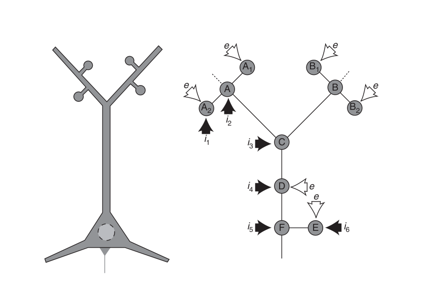
Dựa trên kết quả này, tôi đã điểm lại tài liệu về thế hệ mạng thần kinh mới, chỉ ra bản chất phi thực tế của chúng. Các mạng này có các nút đơn giản so với kiến trúc phân nhánh cao độ của một tế bào thần kinh thực, các kết nối liên hợp ngẫu nhiên của các nút so với các kết nối đặc hiệu của hầu hết các sợi trục thực, và các synapse mô phỏng hội tụ lên các nút so với các synapse phân bố trên các đuôi gai của hầu hết các tế bào thần kinh thực (Shepherd, 1990).
Trong quá trình rà soát đó, tôi đã kinh ngạc và vui mừng khi phát hiện ra rằng thực tế von Neumann đã dự báo trước nhiều lập luận trong số này. Vào giữa thập niên 1950, ông được mời thuyết trình tại Chuỗi Bài giảng Silliman ở Yale và chọn chủ đề ‘‘The Brain and the Computer’’ (Bộ não và Máy tính). Không may, ông mắc bệnh ung thư. Với thời gian sống chỉ còn ngắn ngủi, ông không thể trực tiếp trình bày các bài giảng; nhưng ông đã tập hợp đủ các suy nghĩ của mình để xuất bản một cuốn sách ngắn cùng tên, ra mắt sau khi ông qua đời năm 1957.
Khi so sánh bộ não và máy tính, ông quay trở lại chủ đề của bài báo năm 1945 về kiến trúc tính toán và đặt câu hỏi một lần nữa: Đâu là phần tử nền tảng thực hiện các phép toán logic cơ bản của bộ não, tương ứng với bóng bán dẫn (transistor) trong máy tính? Đầu tiên ông xem xét quan điểm của McCulloch và Pitts rằng phần tử nền tảng này là tế bào thần kinh (quan điểm mà ông đã sử dụng trong bài báo năm 1945):
‘‘Và’’ và ‘‘hoặc’’ là các phép toán cơ bản của logic. Cùng với ‘‘không’’ (phép toán logic phủ định), chúng tạo thành một tập hợp đầy đủ các phép toán logic cơ bản—mọi phép toán logic khác, bất kể phức tạp đến đâu, đều có thể thu được bằng các tổ hợp thích hợp của chúng . . . khi nhìn nhận như vậy, các tế bào thần kinh hiện lên như những cơ quan logic cơ bản. . . . (53)
von Neumann sau đó xem xét cấu trúc thực tế của các tế bào thần kinh và nhiều đơn vị synapse hội tụ lên thân tế bào và các đuôi gai (rõ ràng phản ánh nhiều tương tác của ông với các nhà giải phẫu thần kinh và nhà sinh lý học thần kinh trong những năm giữa hai giai đoạn):
Người ta có thể phải đối mặt với những tình huống trong đó có, chẳng hạn, hàng trăm synapse trên một tế bào thần kinh đơn lẻ, và các tổ hợp kích thích trên chúng mang lại hiệu quả được đặc trưng không chỉ bởi số lượng của chúng mà còn bởi sự bao phủ của chúng lên một số vùng đặc biệt trên tế bào thần kinh đó (trên thân tế bào hoặc trên hệ thống đuôi gai của nó), bởi các mối quan hệ không gian của những vùng như vậy với nhau, và bởi các mối quan hệ định lượng và hình học thậm chí còn phức tạp hơn có thể có liên quan (54).
Ông kết luận bằng nhận xét sau:
Tất cả những phức tạp thuộc loại này có nghĩa là, xét về việc đếm các cơ quan hoạt động cơ bản như chúng ta đã thực hành cho đến nay, một tế bào thần kinh còn hơn cả một cơ quan hoạt động cơ bản đơn lẻ, và bất kỳ nỗ lực đếm có ý nghĩa nào cũng phải thừa nhận điều này. Nếu tế bào thần kinh được kích hoạt bởi sự kích thích của một số tổ hợp synapse nhất định trên thân của nó chứ không phải bởi những tổ hợp khác, thì phép đếm có ý nghĩa về các cơ quan hoạt động cơ bản có lẽ phải là phép đếm các synapse chứ không phải các tế bào thần kinh (59).
Kết luận này, rằng synapse là đơn vị tính toán cơ bản của hệ thần kinh chứ không phải toàn bộ tế bào thần kinh, đã dự báo quan điểm hiện đại về các đơn vị synapse phân bố trên khắp cây đuôi gai, như được tóm tắt trong Hình 16.2. Đó chính là cơ sở thực sự của ‘‘vi cấu trúc của nhận thức.’’ Trên phần tử nền tảng này được xây dựng các cấp độ tổ chức chức năng ngày càng tăng của bộ não, từ các mẫu hình nút synapse đến toàn bộ tế bào thần kinh (như trong Hình 16.2) đến các vi mạch gồm các tế bào thần kinh kết nối liên hợp trong một vùng và cuối cùng đến các con đường và hệ thống rộng lớn cấu thành cơ sở thần kinh của hành vi. Một lý thuyết tổng thể về cách bộ não của chúng ta hoạt động, kết hợp tất cả những đột phá được ghi lại trong cuốn sách này, nằm theo hướng này. Người ta cảm thấy rằng giá như còn sống, von Neumann hẳn sẽ đang dẫn đầu con đường đó.

Chương 17 & Phụ lục — Tổng kết và Tài nguyên bổ sung
Chương 17
Tổng kết
Mỗi năm, mỗi thập kỷ, hay mỗi kỷ nguyên trong lịch sử khoa học và nghiên cứu hệ thần kinh đều có những thành tựu nổi bật riêng, mang lại lợi ích cho khoa học và cho nhân loại. Xét về mặt đó, giữa thế kỷ XX đã hoàn thành vai trò của mình. Tuy nhiên, câu chuyện của chúng ta đưa ra lập luận để xem nó như một giai đoạn có sức sáng tạo dồi dào phi thường.
Chúng ta đã tập trung vào con người, ý tưởng và phương pháp của giai đoạn này. Bằng cách đặt câu chuyện trong mối liên hệ với các cấp độ tổ chức của hệ thần kinh nơi công trình được thực hiện, chúng ta đã có thể hiểu được bối cảnh cho những tiến bộ đó, cũng như cung cấp phương tiện để so sánh các tiến bộ ở các cấp độ khác nhau. Ví dụ, bước đột phá về vai trò cấp cao của hồi hải mã trong trí nhớ từ trường hợp của HM (Chương 12) có thể được nhìn nhận song song với những đột phá trong sinh lý học màng (Chương 6 và 7) và trong các cơ chế tế bào làm nền tảng cho học tập và trí nhớ (Chương 7 và 9). Nhiều mối tương quan khác có thể được xác định xuyên suốt các cấp độ trong các chương khác nhau.
Đối với những ai quan tâm đến sự sáng tạo trong khoa học, một câu hỏi muôn thuở là ở độ tuổi và giai đoạn nào trong sự nghiệp thì những tiến bộ vĩ đại nhất diễn ra? Theo quan niệm thông thường, các nhà toán học và vật lý học có những đóng góp lớn lao vào đầu sự nghiệp của họ, trong khi đối với các nhà sinh học thì điều đó được cho là đến muộn hơn – Darwin ở tuổi 50 là một ví dụ điển hình. Câu chuyện của chúng ta chỉ ra rằng không có quy tắc nào như vậy trong sinh học hiện đại và khoa học thần kinh hiện đại. Một số lượng đáng kinh ngạc các tiến bộ nền tảng được ghi lại ở đây đã được thực hiện bởi các nhà nghiên cứu trẻ tuổi: sinh viên đại học (dòng điện cục bộ bởi Alan Hodgkin – Chương 6); học viên cao học (đại số Boolean cho thiết kế mạch bởi Claude Shannon – Chương 16); nghiên cứu sinh tiến sĩ (giấc ngủ REM bởi Eugene Aserinsky – Chương 11; điều kiện hóa thao tác bởi
James Olds – Chương 11; ức chế lan tỏa bởi Aristides Leão – Chương 13); nghiên cứu sinh sau tiến sĩ (DNA bởi James Watson – Chương 2). Ngược lại, tất nhiên cũng có nhiều nhà khoa học được đào tạo bài bản ở giai đoạn giữa và cuối sự nghiệp; John Eccles là một ví dụ điển hình (Chương 7–9). Bất kỳ ai quan tâm đến những ví dụ về quá trình sáng tạo ở các giai đoạn sự nghiệp khác nhau này trong khoa học đều có một kho tàng phong phú để khám phá trong số những người tiên phong của giữa thế kỷ XX.
Mặc dù những người tiên phong chủ yếu là nam giới, phản ánh bức tường giới tính lịch sử kéo dài suốt đến giai đoạn này, câu chuyện của chúng ta cho thấy nhiều phụ nữ cũng nằm trong số họ: Rosalind Franklin với DNA, và Barbara McClintock với các gen nhảy (Chương 2); Rita Levi-Montalcini với NGF (Chương 3); Betty Geren với vi cấu trúc myelin (Chương 5); Angelique Arvanitaki-Chalazonitis với Aplysia (Chương 7); Denise Albe-Fessard với điện sinh lý học hệ thần kinh trung ương (Chương 10); Berta Scharrer với nội tiết học thần kinh (Chương 11); và Brenda Milner với khoa học thần kinh nhận thức (Chương 12). Họ không chỉ là những người tiên phong của khoa học thần kinh mà còn là những người tiên phong bắt đầu quá trình mở ra cánh cửa khoa học như một sự nghiệp dễ tiếp cận đối với tất cả thanh niên bất kể giới tính và chủng tộc, một quá trình dù ngày càng thành công nhưng vẫn đang tiếp diễn.
Trong câu chuyện này, chúng ta cũng có được một góc nhìn quốc tế rõ ràng hơn về lĩnh vực này. Lần đầu tiên người ta có thể thấy một cách hệ thống hơn rằng nguồn gốc của khoa học thần kinh hiện đại thực sự mang tính quốc tế, với những đóng góp vượt ra ngoài Hoa Kỳ để bao gồm các nhà nghiên cứu từ khắp nơi trên thế giới. Điều này càng đáng ngạc nhiên hơn bởi giai đoạn này, từ thập niên 1940 đến hết thập niên 1950, diễn ra trong và ngay sau Thế chiến II, khi phần lớn thế giới còn lại thực sự nằm trong đống đổ nát. Chỉ có Thụy Điển và Thụy Sĩ trung lập trong số các quốc gia châu Âu là sống sót nguyên vẹn.
Tuy vậy, độc giả sẽ trân trọng khi thấy nhiều nhà khoa học châu Âu đã kiên trì bám trụ với nghề nghiệp của mình trong suốt chiến tranh (xem các thí nghiệm của Rita Levi-Montalcini trước mặt bọn phát xít ở Ý – Chương 3), và gây dựng lại sự nghiệp vào cuối thập niên 1940 và qua giai đoạn phục hồi vào thập niên 1950, bất chấp sự thiếu thốn nguồn lực. Một nỗ lực đã được thực hiện nhằm truyền đạt, đặc biệt là cho độc giả trẻ, những trở ngại khổng lồ của những năm tháng đó. Bất chấp chúng, Vương quốc Anh vẫn là trung tâm của những năm tháng hoàng kim 1951–1952, khi Hodgkin, Huxley và Katz (cùng Eccles từ Khối Thịnh vượng chung) xây dựng nên khoa học thần kinh tế bào mới (Chương 5–7). Trên lục địa châu Âu, vốn còn bị tàn phá nặng nề hơn bởi sự chiếm đóng và sự suy sụp tinh thần, các nhà nghiên cứu ở Pháp đã thể hiện quyết tâm phi thường, bằng chứng là những đóng góp của René Couteaux cho khớp nối thần kinh-cơ (Chương 5), Arvanitaki-Chalazonitis cho Aplysia (Chương 7), Alfred Fessard và Denise Albe-Fessard trong sinh lý học thần kinh (Chương 10), Jacques Le Magnen trong hành vi ăn uống (Chương 11), và Henri Laborit, Pierre Deniker và Jean Delay trong việc khởi đầu cuộc cách mạng điều trị bằng thuốc tâm thần (Chương 15). Ngoài ra, người Pháp còn phải học cách giao tiếp bằng một ‘‘ngôn ngữ chung’’ (lingua franca) mới; Denise Albe-Fessard (Chương 10) đã đưa ra lời chứng sống động về gánh nặng tăng thêm này.
Trong số các chủ đề chưa được đề cập đầy đủ ở đây có các tổ chức tài trợ cho nghiên cứu. Đã có đề cập (xem Chương 2) đến bầu không khí mới sau Thế chiến II, kết thúc năm 1945, khi tấm gương về tính hiệu quả của khoa học trong việc giúp giành chiến thắng trong chiến tranh được chuyển hướng sang y tế nhằm hiểu rõ hơn chức năng bình thường của cơ thể cũng như phòng ngừa và chữa trị bệnh tật. Trước đó đã có những quỹ tư nhân đảm nhận các trách nhiệm này, đáng chú ý nhất là Quỹ Rockefeller, với bàn tay nhân ái đứng sau việc thành lập nhiều viện nghiên cứu trên khắp thế giới và nhiều học bổng du học vào đầu thế kỷ. Nhưng sau chiến tranh, sự hỗ trợ rộng rãi và có hệ thống cho khoa học y sinh đã trở nên khả thi với việc mở rộng Viện Y tế Quốc gia Hoa Kỳ (NIH) để bao gồm các viện chuyên về bệnh thần kinh, sức khỏe tâm thần, thị giác và nhiều lĩnh vực nghiên cứu y sinh khác. Các viện này không chỉ cung cấp các khoản tài trợ nghiên cứu trực tiếp cho từng nhà nghiên cứu mà còn cung cấp các khoản tài trợ đào tạo để đưa các thế hệ nghiên cứu sinh tiến sĩ và sau tiến sĩ kế tiếp vào lĩnh vực này. Các chiến lược tương tự cũng bắt đầu được sử dụng ở các quốc gia khác. Nhiều người sẽ coi loại hình hệ thống hỗ trợ mới này là một trong những đổi mới vĩ đại của thập niên 1950.
Một đánh giá có hệ thống về các tổ chức này nằm ngoài phạm vi của cuốn sách hiện tại, và sẽ rất đáng để nghiên cứu sâu hơn trong tương lai. Tuy nhiên, có thể lưu ý rằng mối quan hệ giữa mức độ tài trợ và mức độ sáng tạo không phải là mối quan hệ tuyến tính. Nhiều tiến bộ vĩ đại được ghi lại ở đây đã đạt được với thiết bị thí nghiệm đơn giản và kinh phí tối thiểu – kỷ nguyên dây thừng và sáp ong được Hodgkin mô tả (Chương 6), và phát hiện ra giấc ngủ REM (Chương 11). Và còn có thêm bằng chứng về một kỷ nguyên đã qua khi các loại thuốc mới có thể được thử nghiệm gần như ngay lập tức, đôi khi bởi chính các nhà nghiên cứu, với rất ít tiêu chuẩn khoa học hay chính phủ, như trong cuộc cách mạng về dược lý tâm thần (Chương 15). Tuy nhiên, câu chuyện của chúng ta cho thấy rõ những lĩnh vực mà tài trợ tạo nên sự khác biệt thiết yếu, chẳng hạn như trong việc chế tạo các loại thiết bị mới, tạo vị trí việc làm cho các nhà nghiên cứu, và đi lại để trao đổi ý tưởng.
Có lẽ trong tất cả những điều này, hằng số quan trọng nhất chính là sự tự do của nhà nghiên cứu được theo đuổi niềm tin của riêng mình về đâu là chìa khóa để giải quyết vấn đề tiếp theo. Phần thưởng cho điều này chúng ta thấy lặp đi lặp lại hết lần này đến lần khác, cho dù đó là niềm hân hoan khi một đêm nọ quan sát dưới kính hiển vi điện tử thấy hình ảnh đầu tiên của một synapse (Chương 5), cuối cùng cũng tách lọc được loạt xung động đầu tiên của một tế bào não trước một thanh ánh sáng nhỏ (Chương 10), hay tình cờ tìm ra một loại thuốc chữa khỏi chứng bạo lực không thể kiểm soát cho các bệnh nhân tâm thần phân liệt (Chương 15). Cuộc cách mạng được ghi lại ở đây là minh chứng cho sự tự do tìm tòi vốn nằm ở trái tim của sự nghiệp khoa học. Phải chăng sự tự do đó khi ấy được hỗ trợ tốt hơn so với bây giờ? Việc luôn giữ cho câu hỏi đó sống mãi có lẽ là bài học quan trọng nhất mà chúng ta có thể học được từ giai đoạn cách mạng đó.
Trang này cố ý để trống
Phụ lục A Tài nguyên
Các tài nguyên chính cho câu chuyện này tập trung vào thập niên 1950 đến từ các bài báo gốc thời đó, từ hồi ký và bình luận, và từ việc tôi đã sống qua thời kỳ đó với tư cách một sinh viên và quen biết nhiều người tham gia khi ấy cũng như trong sự nghiệp sau này của tôi. Tài liệu tham khảo được tập hợp trong Danh mục Tài liệu Tham khảo sau đây. Trong hầu hết các chương, phần bối cảnh bao gồm đầu thế kỷ XX, và trong một số trường hợp là cuối thế kỷ XIX. Để giúp sinh viên hiện đại hiểu được tài liệu thời kỳ đầu này, tôi đã cung cấp một số tài liệu tham khảo từ các nguồn thứ cấp nhằm đưa ra bối cảnh của thời đại đó. Một phần tài liệu này nằm trong Danh mục Tài liệu Tham khảo; đối với phần khác, độc giả được hướng dẫn đến các nguồn thứ cấp, bao gồm cuốn sách trước đây của tôi ‘‘Foundations of the Neuron Doctrine’’ (Nền tảng của Học thuyết Tế bào Thần kinh). Tôi sử dụng một số nguồn thứ cấp này trong giảng dạy; chúng đặc biệt có giá trị trong trường hợp các nguồn sơ cấp không dễ tiếp cận đối với độc giả hiện đại bận rộn, và vì những góc nhìn hiện đại của chúng về sự liên quan của tài liệu nền tảng này với bối cảnh trọng tâm hiện đại của tôi trong cuốn sách này.
Là một nhà khoa học đang làm việc, tôi bị giới hạn về thời gian viết sách, nên tôi ý thức sâu sắc về những thiếu sót trong việc ghi chép đầy đủ toàn bộ tài liệu liên quan. Tôi đặc biệt xin lỗi những người tiên phong chưa được ghi nhận thỏa đáng. Tôi xin nhận lỗi trên hai phương diện. Thứ nhất, tôi muốn giữ trọng tâm vào giai đoạn đặc biệt này trong và quanh thập niên 1950. Tôi tập trung vào việc thập kỷ này đã phi thường như thế nào về sự bùng nổ tài năng sáng tạo, phương pháp luận, hỗ trợ thể chế và các yếu tố khác. Thứ hai, tôi hy vọng nguồn tài liệu liên quan còn hạn chế này sẽ đóng vai trò như một chất kích thích thu hút sự quan tâm của các sử gia khoa học chuyên nghiệp vào một phân tích sâu sắc hơn về giai đoạn này.
Các nhà khoa học thần kinh chúng tôi chỉ mới bắt đầu đưa ra những đánh giá tổng thể về nguồn gốc lĩnh vực của mình. Một nguồn bối cảnh toàn diện cho các tài liệu cũ hơn là ‘‘Origins of Neuroscience. A History of Explorations into Brain Function’’ của Stanley Finger (New York: Oxford University Press, 1994). Tập sách xuất sắc của Horace Magoun, với sự hỗ trợ của Louise Marshall (‘‘American Neuroscience in the Twentieth Century’’. New York: Swets and Zeitlinger, 2003), có phạm vi rộng hơn về khoa học thần kinh trong toàn bộ thế kỷ XX nhưng phạm vi hẹp hơn về Hoa Kỳ. Eric Kandel đã cung cấp một cái nhìn sâu sắc và cân bằng về lịch sử đằng sau những đóng góp nghiên cứu tiên phong của ông, trong chuyên khảo đầu tay ‘‘Cellular Basis of Behavior. An Introduction to Behavioral Neurobiology’’, San Francisco: Freeman (1976), đặc biệt hay về các công trình tâm lý học thời kỳ đầu, và cuốn sách gần đây của ông ‘‘In Search of Memory’’, New York: Norton (2006). Bài tổng quan của Max Cowan, Donald Harter và Kandel: ‘‘Emergence of modern neuroscience. Some implications for neurology and psychiatry’’, trên Annual Reviews of Neuroscience 23: 343–391 (2000) đề cập đến một số công trình then chốt trong thập niên 1950 trước khi đi tiếp tới các phát triển về sau trong thế kỷ XX.
Các nguồn tài liệu giá trị và dễ đọc để hiểu sâu về những con người đã tạo nên các khám phá được cung cấp bởi các tự truyện. Chúng bắt đầu một cách có tổ chức dưới sự bảo trợ của Frank Schmitt trong cuốn ‘‘The Neurosciences: Paths of Discovery’’, do Frederic Worden, Judith Swazey và George Adelman biên tập. Cambridge MA: The MIT Press (1975), tiếp theo là ‘‘The Neurosciences: Paths of Discovery II’’, do Fred Samson và George Adelman biên tập. Boston: Birkhauser (1992). Cách tiếp cận tự truyện này được thể chế hóa trong một bộ sách do Larry Squire khởi xướng và biên tập, được hỗ trợ bởi Ủy ban Lịch sử Khoa học Thần kinh, và được xuất bản bởi Hiệp hội Khoa học Thần kinh (Society for Neuroscience), mang tên ‘‘The History of Neuroscience in Autobiography’’, nay đã ra đến tập thứ năm. Nhiều chương được trích dẫn trong cuốn sách này, và sẽ rất bổ ích cho độc giả quan tâm tìm đọc. Ngoài các tập sách này còn có một loạt các cuộc phỏng vấn video với những nhà khoa học thần kinh cao cấp hàng đầu này và những người khác, cũng do Hiệp hội Khoa học Thần kinh xuất bản; chi tiết có thể tìm thấy trên trang web của Hiệp hội Khoa học Thần kinh (http://www.sfn.org/). Một nguồn lịch sử khoa học thần kinh khác là Tổ chức Nghiên cứu Não bộ Quốc tế (IBRO) (http:// www.ibro). Nhiều nguồn khác được liệt kê trong phần Tài liệu tham khảo. Các hồi ký và bình luận cá nhân ngày càng có sẵn trên internet, giúp đưa những nhân vật và sự kiện lịch sử này đến ngay đầu ngón tay của sinh viên hiện đại. Các thông tin khác, chẳng hạn như việc trao giải thưởng sau này cho những người tiên phong của thập niên 1950, có thể tìm thấy trực tuyến (xem ví dụ http://nobelprize.org/).
Tôi đã dựa vào một số bài viết trước đây của chính mình trong một số phần; ngoài bối cảnh lịch sử (Chương 4 và 8), chúng bao gồm synapse (Chương 5), công trình của Eccles (Chương 7–9), và vai trò của tính toán và lý thuyết (Chương 16), như đã lưu ý trong các phần đó.
Các ghi chú cá nhân của tác giả hiện tại được đưa vào nhiều chương. Tôi hy vọng chúng không gây cảm giác xen ngang, mà đúng hơn là giúp chỉ ra tác động của các sự kiện thập niên 1950 đối với một sinh viên thời bấy giờ. Tôi đã không đi đến mức thực hiện các cuộc phỏng vấn chính thức. Tuy nhiên, tôi đã hưởng lợi từ rất nhiều lời khuyên của các đồng nghiệp về các lĩnh vực cụ thể được đề cập trong các chương khác nhau, như đã lưu ý trong Lời nói đầu.
Phụ lục B Tài liệu Bổ trợ Có sẵn trên Web
Như đã nêu trong Lời nói đầu, cuốn sách này dựa trên một khóa học dành cho nghiên cứu sinh cao học và sinh viên đại học năm cuối tại Yale trong những năm gần đây có tên ‘‘Lịch sử Khoa học Thần kinh Hiện đại’’. Các lớp học đã được giảng dạy qua web sử dụng bản quét của các bài báo kinh điển cùng các tài liệu kỹ thuật số khác như video clip. Các đường dẫn url cho những tài liệu này được chỉ ra bên dưới. Việc dễ dàng tiếp cận các tài liệu trực tuyến là phương tiện hiệu quả nhất để biến quá khứ thành một phần của hiện tại.
2.1 Bài báo của Watson và Crick, ngày 25 tháng 4 năm 1953: http://www.ncbi.nlm.nih.gov/pubmed/13054692
2.2 Bài báo trên New York Times, ngày 13 tháng 6 năm 1953 New York Times (1953) Clue to chemistry of heredity is found. June 13.
3.1 Bài báo về nón sinh trưởng của Harrison, 1910 Harrison RG (1910) The outgrowth of the nerve fiber as a mode of protoplasmic movement. J Exp Zool 9:787–846.
3.2 Bài báo của Hamburger và Levi-Montalcini, 1949 http://www.ncbi.nlm.nih.gov/pubmed/18142378
3.3 Bài báo của Sperry, 1963 http://www.ncbi.nlm.nih.gov/pubmed/14077501
3.4 Bài báo của Weiss và Hiscoe, 1948 http://www.ncbi.nlm.nih.gov/pubmed/18915618
4.1 Bài báo của Carlsson và cs., 1959 http://www.ncbi.nlm.nih.gov/pubmed/13483658
4.2 Bài báo của Karlson và Luscher về pheromone, 1959 Karlson P, Luscher M (1959) ‘‘Pheromones’’: a new term for a class of biologically active substances. Nature 183:55–56.
5.1 Thư của Sherrington về synapse Shepherd GM, Erulkar SD (1997) Centenary of the synapse: from Sherrington to the molecular biology of the synapse and beyond. Trends Neurosci 20(9):387.
5.2 Tóm tắt 110 của Palade, 1954 Palade GE(1954) Electron microscope observations of interneuronal and neuromuscular synapses. Anat Rec 118:335–336.
5.3 Tóm tắt 111 của Palay, 1954 Palay SL(1954) Electron microscope study of the cytoplasm of neurons. Anat Rec 118: 336.
5.4 Tóm tắt 116 của de Robertis và Bennett, 1954 de Robertis E, Bennett HS (1954) Submicroscopic vesicular component in the synapse. Fed. Proc. 13:35.
5.5 Tóm tắt 166 của de Robertis, 1954 de Robertis E (1954) Changes in the ‘‘synaptic vesicles’’ of the ventral acoustic ganglion after nerve section (An electron microscopic study). Anat Rec 118: 284–285.
5.6 Bài báo của de Robertis và Bennett, 1955 http://www.ncbi.nlm.nih.gov/pubmed/ 14381427
5.7 Bài báo của Palay, 1956 http://www.ncbi.nlm.nih.gov/pubmed/13357542
5.8 Bài báo của Gray, 1959 http://www.ncbi.nlm.nih.gov/pubmed/13829103
5.9 Bài báo của Furshpan và Potter, 1957 http://www.ncbi.nlm.nih.gov/pubmed/13464833
5.10 Bài báo của Geren, 1954 http://www.ncbi.nlm.nih.gov/pubmed/16589348
6.1 Bài báo của Adrian và Zotterman, 1926b http://www.ncbi.nlm.nih.gov/pubmed/16993780
6.2 Đoạn phim về Young phẫu tích sợi trục mực Từ bộ phim The Squid and Its Giant Nerve Fiber http://www.science.smith.edu/departments/NeuroSci/courses/bio330/ squid.html
6.3 Bài báo của Cole và Curtis, 1939 http://www.pubmedcentral.nih.gov/articlerender.fcgi?artid=2142006
6.4 Đoạn phim về mực của Hodgkin và Huxley Từ bộ phim The Squid and Its Giant Nerve Fiber http://www.science.smith.edu/departments/NeuroSci/courses/bio330/ squid.html
6.5 Bài báo của Hodgkin và Huxley, 1952d http://www.ncbi.nlm.nih.gov/pubmed/12991237 Bài báo của Skou, 1957 http://www.ncbi.nlm.nih.gov/pubmed/13412736
7.1 Bài báo của Ling và Gerard, 1947 http://www.ncbi.nlm.nih.gov/pubmed/15410483
7.2 Bài báo của Fatt và Katz, 1951 http://www.ncbi.nlm.nih.gov/pubmed/14898516
7.3 Điện thế tấm tận cùng thu nhỏ (Miniature EPPs), bài báo của del Castillo và Katz, 1954b http://www.ncbi.nlm.nih.gov/pubmed/13175199
7.4 Bài báo của Brock và cs., 1952 http://www.ncbi.nlm.nih.gov/pubmed/13003921
8.1 Khởi phát xung thần kinh, bài báo của Fuortes và cs., 1957 http://www.ncbi.nlm.nih.gov/pubmed/13428986
8.2 Tôm hùm đất, bài báo của Eyzaguirre và Kuffler, 1955b http://www.ncbi.nlm.nih.gov/pubmed/13252237
8.3 Gai quần thể (Pop spike), bài báo của Andersen, 1959 http://www.ncbi.nlm.nih.gov/pubmed/13793335
8.4 Bài tổng quan của Rall, 1964 Theoretical significance of dendritic trees for neuronal input-output relations. In: Neural Theory and Modeling (Reiss RF, ed), pp 122–146. Palo Alto: Stanford University Press.
8.5 Gai đuôi gai, bài báo của Chang, 1952 http://www.ncbi.nlm.nih.gov/pubmed/13049166
8.6 Học thuyết tế bào thần kinh, bài báo của Bullock, 1959 http://www.ncbi.nlm.nih.gov/pubmed/13646634
9.1 Ức chế Renshaw, bài báo của Eccles và cs., 1954 http://www.ncbi.nlm.nih.gov/pubmed/13222354
9.2 Bài báo của Hartline và Graham, 1932 Hartline HK, Graham CH (1932) Nerve impulses from single receptors in the eye. J Cell Comp Physiol 1:227–295.
9.3 Trung tâm – ngoại vi (Center surround), bài báo của Kuffler, 1953 http://www.ncbi.nlm.nih.gov/pubmed/13035466
9.4 Tế bào thần kinh chỉ huy, bài báo của Wiersma, 1938 Wiersma CAG (1938) Function of the giant fibres of the central nervous system of the crayfish. Proc Soc Exp Biol Med 38:6617–662.
9.5 Bộ tạo mẫu trung tâm, bài báo của Wiersma, 1962 Wiersma CAG (1962) The organization of the arthropod nervous system. Am Zool 2:67–78.
9.6 Bài báo của Barlow, 1953 http://www.ncbi.nlm.nih.gov/pubmed/13035718
10.1 Chương của Lorente de Nó trong sách của Fulton, 1938 Lorente de No R (1938) Cerebral cortex: architecture, intracortical connections, motor projections. In: Physiology of the Nervous System (Fulton J, ed), pp 291–339. New York: Oxford University Press.
10.2 Bài báo của Powell và Mountcastle, 1959 http://www.ncbi.nlm.nih.gov/pubmed/14434571
10.3 Bài báo của Hubel và Wiesel, 1959 http://www.ncbi.nlm.nih.gov/pubmed/14403679
10.4 Bài báo của Lettvin và cs., 1959 Lettvin, JY, Maturana HR, McCulloch WS and Pitts WH (1959) What the frog’s eye tells the frog’s brain. Proc Inst Radio Engrs NY 47:1940–1951.
10.5 Bài báo của Phillips, 1959 http://www.ncbi.nlm.nih.gov/pubmed/13624009
10.6 Trích đoạn từ Penfield và Rasmussen, 1950 Penfield W, Rasmussen T (1950) The Cerebral Cortex of Man: A Clinical Study of Localization of Function. New York: Macmillan.
10.7 Các mẫu mùi, bài báo của Adrian, 1953 http://www.ncbi.nlm.nih.gov/pubmed/13104158
11.1 Bài báo của Moruzzi và Magoun, 1949 http://www.ncbi.nlm.nih.gov/pubmed/18421835
11.2 Bài báo của Aserinsky và Kleitman, 1953 http://www.ncbi.nlm.nih.gov/pubmed/13089671
11.3 Bài báo của Aserinsky và Kleitman, 1955 http://www.ncbi.nlm.nih.gov/pubmed/13242483
11.4 Bài báo của Olds và Milner, 1954 http://www.ncbi.nlm.nih.gov/pubmed/13233369
11.5 Bài báo của Stellar, 1954 http://www.ncbi.nlm.nih.gov/pubmed/13134413
11.6 Bài tổng quan của Scharrer, 1987 http://www.ncbi.nlm.nih.gov/pubmed/3551757
11.7 Trích đoạn từ Harris, 1955 Harris GW (1955) Neural Control of the Pituitary Gland. London: Edward Arnold.
12.1 Trích đoạn từ Hebb, 1949 Hebb DO (1949) The Organization of Behavior: A Neuropsychological Theory. New York: John Wiley and Sons.
12.2 Bài báo của Papez, 1995 http://www.ncbi.nlm.nih.gov/pubmed/7711480
12.3 Bài báo của Bucy và Kluver, 1955 http://www.ncbi.nlm.nih.gov/pubmed/13271593
12.4 Bài báo của MacLean, 1949 http://www.ncbi.nlm.nih.gov/pubmed/15410445
12.5 Bài báo của Scoville và Milner, 1957 http://www.ncbi.nlm.nih.gov/pubmed/13406589
13.1 Bài giảng của C. Miller Fisher, 1958 Fisher CM (1958) Intermittent cerebral ischemia. In: Transactions of the Second Conference Held Under the Auspices of the American Heart Association (Wright IS, Millikan CH, eds), pp 81–97. New York: Grune & Stratton, 1958.
13.2 Bài báo của Kety và Schmidt, 1948 http://www.ncbi.nlm.nih.gov/pubmed/16695568
13.3 Bài báo của Leão, 1944a Lea˜o AAP (1944a) Spreading depression of activity in the cerebral cortex. J Neurophysiol 7:359–390.
15.1 Bài báo của Delay và Denicker, 1955 http://www.ncbi.nlm.nih.gov/pubmed/14392209
16.1 Bài báo của McCulloch và Pitts, 1943 http://www.springerlink.com/content/xw16676748262521/
Tài liệu tham khảo (References)
Tài liệu tham khảo
Adams, P. (1998) Hebb and Darwin. J. Theor. Biol. 195, 419–438. Adams RD, Cammermeyer J, Denny-Brown D (1949) Acute necrotizing hemorrhagic encephalopathy. J Neuropathol Exp Neurol 8:1–29. Adams RD, Denny-Brown D, Pearson CM (1954) Diseases of the Muscle. New York:
Hoeber. Adrian ED (1926a) The impulses produced by sensory nerve endings: part I. J Physiol
61:49–72. Adrian ED (1926b) The impulses produced by sensory nerve-endings: part IV.
Impulses from pain receptors. J Physiol 62:33–51. Adrian ED (1928) The Basis of Sensation: The Action of the Sense Organs. London:
Christophers. Adrian ED (1953) Sensory messages and sensation: the response of the olfactory organ to different cells. Acta Physiol Scand 29:5–14. Adrian ED (1966) Thomas Graham Brown, 1882–1965. In: Biographical Memoirs of
Fellows of the Royal Society, pp 23–33. London: Royal Society. Adrian ED, Bronk DW (1928) The discharge of impulses in motor nerve fibres: Part I.
Impulses in single fibres of the phrenic nerve. J Physiol 66:81–101. Adrian ED, Matthews R (1927a) The action of light on the eye: part I. The discharge of impulses in the optic nerve and its relation to the electric changes in the retina. J Physiol 63:378–414. Adrian ED, Matthews R (1927b) The action of light on the eye: part II. The processes involved in retinal excitation. J Physiol 64:279–301. Adrian ED, Matthews R (1928) The action of light on the eye: part III. The interaction of retinal neurones. J Physiol 65:273–298. Adrian ED, Zotterman Y (1926a) The impulses produced by sensory nerve-endings:
part II. The response of a single end-organ. J Physiol 61:151–171. Adrian ED, Zotterman Y (1926b) The impulses produced by sensory nerve endings:
part III. Impulses set up by touch and pressure. J Physiol 61:465–483. Advisory Council for the National Institute of Neurological Disease and Blindness (1958) A classification and outline of cerebrovascular diseases: a report by an ad hoc committee established by the Advisory Council for the National Institute of Neurological Disease and Blindness Public Health Service. Neurology 8:395–434. Aird RB (1994) Foundation of Modern Neurology: A Century of Progress. New York:
Raven Press.
Albe-Fessard D, Buser P (1954) Microphysiological analysis of the reflex transmission from the electric organ of the numbfish Torpedo marmorata [in French]. J Physiol (Paris) 46:932–946. Albe-Fessard D, Buser P (1955) Intracellular activities collected in the sigmoid cortex of the cat; participation of the pyramidal neurons in the somesthetic evoked potential [in French]. J Physiol (Paris) 47:67–69. Albe-Fessard D, Massion J, Meulders M (1960) Responses observed in the median center of the thalamus in the awakening and unconfined cat, carrier of permanently fixed electrodes [in French]. C R Hebd Seances Acad Sci 250:2928–2930. Albe-Fessard D (1996) Denise Albe-Fessard. In: The History of Neuroscience in
Autobiography (Squire LR, ed), pp 6–52. Washington DC: Society for Neuroscience. Albers GW, Caplan LR, Easton JD, Fayad PB, Mohr JP, Saver JL, Sherman DG (2002)
Transient ischemic attack—proposal for a new definition. N Engl J Med 347:1713–1716. Albers RW (ed) (1972) Basic Neurochemistry. Boston: Little, Brown. Alberts B (1983) Molecular Biology of the Cell. New York: Garland. Alexandrowicz JS (1953) Nervous organs in the pericardial cavity of the decapod
Crustacea. J Mar Biol Assoc UK 31:563–580. Alexandrowicz JS, Carlisle DB (1953) Some experiments on the function of the pericardial organs in Crustacea. J Mar Biol Assoc UK 32:175–192. Anand BK, Brobeck JR (1951a) Hypothalamic control of food intake in rats and cats.
Yale J Biol Med 24:123–140. Anand BK, Brobeck JR (1951b) Localization of a ‘‘feeding center’’ in the hypotha lamus of the rat. Proc Soc Exp Biol Med 77:323–324. Andersen P (1959) Interhippocampal impulses. I. Origin, course and distribution in cat, rabbit and rat. Acta Physiol Scand 47:63–90. Andersen P, Lundberg A (1997) John C. Eccles (1903–1997). Trends Neurosci
20:324–325. Angelakos ET, Shepherd GM (1957) Autocorrelation of EKG during ventricular fibrillation. Circ Res 5:657–658. Angeletti RH, Bradshaw RA (1971) Nerve growth factor from mouse submaxillary gland: amino acid sequence. Proc Natl Acad Sci USA 68:2417–2420. Araki T, Otani T (1955) Response of single motoneurons to direct stimulation in toad’s spinal cord. J Neurophysiol 18:472–485. Araki T, Otani T, Furukawa T (1953) The electrical activities of single motoneurones in toad’s spinal cord, recorded with intracellular electrodes. Jpn J Physiol 3:254–267. Arvanitaki A (1941) Les caracteristiques de l’activite rythmique ganglionnaire
‘‘spontanee’’ chez l’Aplysie. C R Seances Soc Biol Fil 135: 1207–1211. Aserinsky E (1996) The discovery of REM sleep. J Hist Neurosci 5:213–227. Aserinsky E, Kleitman N (1953) Regularly occurring periods of eye motility, and concomitant phenomena, during sleep. Science 118:273–274. Aserinsky E, Kleitman N (1955) Two types of ocular motility occurring in sleep. J Appl
Physiol 8:1–10. Astrachan L, Volkin E (1958) Properties of ribonucleic acid turnover in T2-infected
Escherichia coli. Biochim Biophys Acta 29:536–544. Atanasoff JV (1984) Advent of electronic digital computing. Ann Hist Comput
6:229–282. Augarten S (1984) Bit by Bit: An Illustrated History of Computers. New York: Ticknor
& Fields. Avery OT, MacLeod CM, McCarty M (1944). Studies on the chemical nature of the substance inducing transformation of pneumococcal types: Induction of transformation by a desoxyribonucleic acid fraction isolated from Pneumococcus Type III. J Exper Med 79: 137–158. Axelrod J (1958) Presence, formation, and metabolism of normetanephrine in the brain. Science 127:754–755. Axelrod J (1965) The metabolism, storage, and release of catecholamines. Recent
Prog Horm Res 21:597–622. Axelrod J (1996) Julius Axelrod. In: The History of Neuroscience in Autobiography.
Vol 1 (Squire LR, ed), pp 50–78. Washington DC: Society for Neuroscience. Bacq, ZM (1975). Chemical Transmission of Nerve Impulses. A Historical Sketch.
New York: Oxford University Press. Bacq ZM (1983) Chemical transmission of nerve impulses. In: Discoveries in
Pharmacology. Psycho- and Neuro-Pharmocology. Vol. 1. (Parnham MJ, Bruinvels J, eds). Amsterdam: Elsevier, pp 49–104. Bargmann W (1951) The midbrain and neurohypophysis; a new concept of the functional significance of the posterior lobe. Med Monatsschr 5:466–470. Barker D (1948) The innervation of the muscle-spindle. Q J Microsc Sci 89:143–186. Barlow HB (1953) Summation and inhibition in the frog’s retina. J Physiol
119:69–88. Barsa JA, Kline NS (1955) Combined reserpine–chlorpromazine therapy in disturbed psychotics. Am J Psychiatry 111:780. Bartlett J (1982) Bartlett’s Familiar Quotations. Boston: Little-Brown. Bazemore AW, Elliot KA, Florey E (1957) Isolation of factor I. J Neurochem
1:334–339. Bateson W (1906) An address on mendelian heredity and its application to man.
Brain 29:157–179. Beale G (1993) The discovery of mustard gas mutagenesis by Auerbach and Robson in
1941. Genetics. 134:393–399. Beaufay H, De Duve C, Novikoff AB (1956) Electron microscopy of lysosomerich fractions from rat liver. J Biophys Biochem Cytol 2:179–184. Bellisle F, Laffort P, Ko¨ster E (2003) Jacques Le Magnen (1916–2002). Chem Senses
28:85–86. Bennett MV, Aljure E, Nakajima Y, Pappas GD (1963) Electrotonic junctions between teleost spinal neurons: electrophysiology and ultrastructure. Science 141:262–264. Bennett MR, Balcar VJ (1999) Forty years of amino acid transmission in the brain.
Neurochem Internat 35: 269–280. Benoit J, Tauc L, Assenmacher I (1954) New results of photoelectric measurement of penetration of visible luminescent radiations to the brain by the side of the summit of the head in white and colored ducks [in French]. C R Hebd Seances Acad Sci 239:508–510. Bernstein J (1902) Untersuchungen zur Thermodynamik der bioelekrischen Strome.
Erster Theil. Pflug Arch ges Physiol 92: 521–562. Berthet J, Rall TW, Sutherland EW (1957) The relationship of epinephrine and glucagon to liver phosphorylase. IV. Effect of epinephrine and glucagon on the reactivation of phosphorylase in liver homogenates. J Biol Chem 224:463–475. Beurle RL (1956) Properties of a mass of cells capable of regenerating pulses. Phil
Trans Roy Soc Lond B 240: 55–94. Bishop GH, Clare MH (1955) Facilitation and recruitment in dendrites.
Electroencephalogr Clin Neurophysiol 7:486–489. Blaschko H (1939) The specific action of L-dopa decarboxylase. J Physiol (Lond)
96:50P–51P. Blaschko H (1957) Formation of catechol amines in the animal body. Br Med Bull
13:162–165.
Blinks LR (1930) The direct current resistance of Nitella. J Gen Physiol 13:495–508. Bliss TV, Lomo T (1973) Long-lasting potentiation of synaptic transmission in the dentate area of the anaesthetized rabbit following stimulation of the perforant path. J Physiol 232:331–356. Block SM (1992) Biophysical principles of sensory transduction. In: Sensory
Transduction (Corey DP, Roper SD, eds), pp 1–17. New York: Rockefeller University Press. Boole G (1848) The calculus of logic. Cambridge and Dublin Mathematical Journal
Vol. III, pp. 183–198. Boring E (1950) A History of Experimental Psychology. New York: Appleton-Century
Crofts. Bowery NG, Smart TG (2006) GABA and glycine as neurotransmitters: a brief history.
British J Pharmacol 147: S109–S119. Bowery NG et al. (eds) (1990) GABA Receptors in Mammalian Function. New York:
Wiley. Bowman WC (1983) Peripherally acting muscle relaxants. In: Discoveries in
Pharmacology (Parnham MJ, Bruinvels J, eds), pp 105–162. Amsterdam: Elsevier. Boyd IA, Martin AR (1956a) The end-plate potential in mammalian muscle. J Physiol
132:74–91. Boyd IA, Martin AR (1956b) Spontaneous subthreshold activity at mammalian neural muscular junctions. J Physiol 132:61–73. Bremer F (1937) L’activite´ cerebrale au cours du sommeil et de la narcose.
Contribution a` l’etude du me´canisme du sommeil. Bull Acad Med Belg 4:68–86. Brock LG, Coomgs JS, Eccles JC (1952) The nature of the monosynaptic excitatory and inhibitory processes in the spinal cord. Proc R Soc Lond B Biol Sci 140: 170–176. Brodie BB, Shore PA (1957) A concept for a role of serotonin and norepinephrine as chemical mediators in the brain. Ann N Y Acad Sci 66:631–642. Brown, C. (2003) The stubborn scientist who unraveled a mystery of the night.
Smithsonian October 92–97. Brown RE, Milner PM (2003) The legacy of Donald O. Hebb: more than the Hebb
Synapse. Nature Revs Neurosci 4:1013–1019. Brown H, Sanger F, Kitai R (1955) The structure of pig and sheep insulins. Biochem J
60:556–565. Brown KT, Wiesel TN (1961) Localization of origins of electroretinogram components by intraretinal recording in the intact cat eye. J Physiol 158:257–80. Bruce HM (1959) An exteroceptive block to pregnancy in the mouse. Nature 184:
105. Broca P (1878) Sur la convolution limbique et la scissure limbique. Bulletins de la
Societe d’’Antrhopiologie 12:646–657. Bucy PC, Kluver H (1955) An anatomical investigation of the temporal lobe in the monkey (Macaca mulatta). J Comp Neurol 103:151–251. Bueker ED (1948) Implantation of tumors in the hind limb field of the embryonic chick and the developmental response of the lumbosacral nervous system. Anat Rec 102:369–389. Bugnard L, Hill AV (1935) Electric excitation of the fin nerve of sepia. J Physiol
83:425–438. Bullock TH (1948) Properties of a single synapse in the stellate ganglion of squid.
J Neurophysiol 11:343–364. Bullock TH (1959) Neuron doctrine and electrophysiology. Science 129:997–1002. Bullock TH (1977) Introduction to Nervous Systems. San Francisco: W. H. Freeman. Bullock TH, Bennett MV, Johnston D, Josephson R, Marder E, Fields RD (2005)
Neuroscience. The neuron doctrine, redux. Science 310:791–793.
Bullock TH, Hagiwara S (1957) Intracellular recording from the giant synapse of the squid. J Gen Physiol 40:565–577. Burgen ASV, Terroux KG (1952) On the negative inotropic effect in a cat’s auricle.
J Physiol 120:449. Burke RE (2006) John Eccles’ pioneering role in understanding central synaptic transmission. Prog Neurobiol 78:173–188. Burks AR (2003) Who Invented the Computer? The Legal Battle that Changed
Computing History. Amherst, NY: Prometheus. Buser P, Albe-Fessard D (1955) Activite´s intracellulaires reçeuilles dans la cortex sigmoide du chat: participation des neurones pyramidaux au potential e´voque somesthestique. J Physiol (Paris) 47:67–69. Butenandt A, Groschel U, Karlson P, Zillig W (1959) N-Acetyl tyramine, its isolation from Bombyx cocoons and its chemical and biological properties [in German]. Arch Biochem Biophys 83:76–83. Byrne JH, Shepherd GM (2008) Information processing in complex dendrites.
In: From Molecules to Networks. An Introduction to Cellular and Molecular Neuroscience (Byrne JH, Roberts JL, eds). New York: Academic Press, pp 489–512. Cade J (1949) Lithium salts in the treatment of psychotic excitement. Med J N Z
2:349–352. Cammermeyer J (1962) I. An evaluation of the significance of the ‘‘dark’’ neuron.
Ergeb Anat Entwicklungsgesch 36:1–61. Cannon WB (1945) The Way of an Investigator. New York: WW Norton. Carey B (2008) H. M., whose loss of memory made him unforgettable, dies. New York
Times, December 4, 1, 36. Carlsson A, Falck B, Hillarp NA (1962) Cellular localization of brain monoamines.
Acta Physiol Scand. 56: Suppl 196: 1–26. Carlsson A, Lindqvist M, Magnusson T, Waldeck B (1958) On the presence of
3-hydroxytyramine in brain. Science 127:471. Carlsson A, Rasmussen EB, Krist Jansen P (1959) The urinary excretion of adrenaline and noradrenaline by schizophrenic patients during reserpine treatment. J Neurochem 4:318–320. Chang HT (1952) Cortical neurons with particular reference to the apical dendrites.
Cold Spring Harb Symp Quant Biol 17:189–202. Chang HT (1984) Pilgrimage to Yale. The Physiologist 27: 390–392. Charcot JM (1868) Lecons sur les Maladies des Vieillards et les Maladies Chroniques.
Paris: A. Delahaye. Chen WR, Midtgaard J, Shepherd GM (1997) Forward and backward propagation of dendritic impulses and their synaptic control in mitral cells. Science 278: 463–467. Chessin M, Kramer ER, Scott CC (1957) Modifications of the pharmacology of reserpine and serotonin by iproniazid. J Pharmacol Exp Ther 119:453–460. Clare MH, Bishop GH (1955a) Properties of dendrites; apical dendrites of the cat cortex. Electroencephalogr Clin Neurophysiol 7:85–98. Clare MH, Bishop GH (1955b) Dendritic circuits: the properties of cortical paths involving dendrites. Am J Psychiatry 111:818–825. Claude A (1943) The constitution of protoplasm. Science 97:451–456. Claude A (1946) Fractionation of mammalian liver cells by differential centrifugation.
J Exp Med 84:51. Coghill GE (1930) The structural basis of the integration of behavior. Proc Natl Acad
Sci USA 16:637–643.
Cohen S (1960) Purification of a nerve-growth promoting protein from the mouse salivary gland and its neuro-cytotoxic antiserum. Proc Natl Acad Sci USA 46:302–311. Cohen S, Levi-Montalcini R, Hamburger V (1954) A nerve growth-stimulating factor isolated from sarcomas 37 and 180. Proc Natl Acad Sci 40: 1012–1018. Cohen-Gadol AA, Ozduman K, Bronen RA, Kim JH, Spencer DD (2004) Long-term outcome after epilepsy surgery for focal cortical dysplasia. J Neurosurg 101:55–65. Cole KS, Curtis HJ (1939) Electrical impedance of the squid giant axon during activity. J Gen Physiol 22:649–670. Cole KS (1975) Neuromembranes: paths of ions. In: The Neurosciences: Paths of
Discovery (Worden FG, Swazey JP, Adelman G, eds), pp 143–158. Cambridge, MA: MIT Press. Corkin S (2002) What’s new with the amnesic patient H. M.? Nat Rev Neurosci
3:153–160. Couteaux R (1944) Nouvelles observations sur la structure de la plaque motrice et interpre´tation des rapports myo-neuraux. C R Soc Biol 138:976–979. Couteaux R (1946) Sur les gouttie`res synaptiques du muscle strie´. C R Soc Biol
140:270–273. Couteaux R (1951) Observations on the current methods of histochemical determi nation of cholinesterase activities [in French]. Arch Int Physiol 59:526–537. Couteaux R, Nachmansohn D (1940) Changes of cholinesterase at end-plates of voluntary muscles following section of sciatic nerve. Proc Soc Exp Biol 43:177–181. Couteaux R, Taxi J (1952a) Distribution of the cholinesterase activity at the level of the myoneural synapse [in French]. C R Hebd Seances Acad Sci 235:434–436. Couteaux R, Taxi J (1952b) Recherches histochimiques sur la distribution des activite´s cholineste´rasiques au niveau de la synapse myoneurale. Arch Anat Microsc Morphol Exp 41:352–392. Cowan WM, Harter DH, Kandel ER (2000) The emergence of modern neuroscience:
some implications for neurology and psychiatry. Annu Rev Neurosci. 23:343–91. Cowan JD, Sharp DH (1988) Neural nets. Q Rev Biophys 21:365–427. Cragg BG, Temperley HNV (1955) Memory: the analogy with ferromagnetic hyster esis. Brain 78: 304–316. Cranefield PF (1957) The organic physics of 1847 and the biophysics of today. J Hist
Med Allied Sci 12:407–423. Cranefield PF, Bell C, Magendie F (1974) The Way In and the Way Out: François
Magendie, Charles Bell and the Roots of the Spinal Nerves, with a Facsim. of Charles Bell’s Annotated Copy of His Idea of a New Anatomy of the Brain. Mount Kisco, NY: Futura. Creed RS, Denny-Brown D, Eccles JC, Liddell EGT, Sherrington CS (1932) Reflex
Activity in the Spinal Cord. New York: Clarendon Press. Creese I, Burt DR, Snyder SH (1996) Dopamine receptor binding predicts clinical and pharmacological potencies of antischizophrenic drugs. J Neuropsychiatry Clin Neurosci 8:223–226. Cremer M (1929) Erregungsgesetze des nerven. Handb Norm Pathol Physiol
9:244–248. Creutzfeldt O (1986) Richard Jung, 1911–1986. Exp Brain Res 64:1–4. Crick F (1988) What Mad Pursuit: A Personal View of Scientific Discovery. New York:
Basic Books. Crick FH, Barnett L, Brenner S, Watts-Tobin RJ. 1961. General nature of the genetic code for proteins. Nature. 192:1227–1232.
Curtis DR, Koizumi K (1961) Chemical transmitter substances in brain stem of cat.
J Neurophysiol 24:80–90. Curtis DR, Phillis JW, Watkins JC (1960) The chemical excitation of spinal neurones by certain acidic amino acids. J Physiol 150:656–682. Curtis DR, Watkins JC (1961) Analogues of glutamic and gamma-amino-n-butyric acids having potent actions on mammalian neurones. Nature 191:1010–1011. Cushing H (1905) The special field of neurological surgery. Bull Johns Hopkins Hosp
16:77–87. Cushing H (1920) The special field of neurological surgery after another interval.
Arch Neurol Psychiat 4: 603–637. Cushing H (1932) Intracranial tumors. Notes Upon a Series of Two thousand Verified
Cases with Surgical-Mortality Percentages Pertaining Thereto. Springfield IL: Charles C Thomas. Cushing H (1932) Further concerning a parasympathetic center in the interbrain:
VII. The effect of intraventricularly-injected histamine. Proc Natl Acad Sci USA 18:500–510. Cushing H, Goodrich JT (2000) Reprint of ‘‘Concerning surgical intervention for the intracranial hemorrhages of the new-born’’ by Harvey Cushing, M.D. 1905. Childs Nerv Syst 16:484–492. Dagi TF (1997a) Philosophical currents in the history of neurosurgery. In:
A History of Neurosurgery in Its Scientific and Professional Contexts (Greenblatt SH, ed), pp 561–578. Park Ridge, IL: American Association of Neurological Surgeons. Dagi TF (1997b) History of stereotactic surgery. In: A History of Neurosurgery in Its
Scientific and Professional Contexts (Greenblatt SH, ed), pp 401–438. Park Ridge, IL: American Association of Neurological Surgeons. Dale HH (1909) The action of extracts of the pituitary body. Biochem J 4:427–447. Dale HH (1914a) The occurrence in ergot and action of acetyl-choline. J Physiol
48:3. Dale HH (1914b) The action of certain esters and ethers of choline, and their relation to muscarine. J Pharmacol Exp Ther 6:147–190. Dale HH (1934) Pharmacology and nerve endings. Proc R Soc Med 28:319–332. Dale HH, Feldberg W (1934) The chemical transmission of secretory impulses to the sweat glands of the cat. J Physiol 82:121–128. Dale HH, Feldberg W, Vogt M (1936) Release of acetylcholine at voluntary motor nerve endings. J Physiol 86:353–380. Dalton AJ, Felix MD (1954) Cytologic and cytochemical characteristics of the Golgi substance of epithelial cells of the epididymis in situ, in homogenates and after isolation. Am J Anat 94:171–207. Dandy WE (1918) Ventriculography following the injection of air into the cerebral ventricles. Ann Surg 68:5–11. Darwin C (1859) On the Origin of Species by Means of Natural Selection, or
Preservation of Favoured Races in the Struggle for Life. London: John Murray. David R, Thiery G, Bonveallet M, Dell P (1952) Effets de la stimulation des bulbes olfactifs sur le cycle sexual de la chatte. C R Soc Biol (Paris) 146: 670–672. Dean RB, Curtis HJ, Cole KS (1940) Impedance of bimolecular films. Science
91:50–51. de Egas Moniz A (1927) La radioarte´riographie ce´re´brale. Bull Acad Me´d (Paris) 98:
40–45. Delay J, Deniker P (1955) Neuroleptic effects of chlorpromazine in therapeutics of neuropsychiatry. J Clin Exp Psychopathol 16:104–112.
Delay J, Deniker P, Harl JM (1952) Therapeutic use in psychiatry of phenothiazine of central elective action (4560 RP) [in French]. Ann Med Psychol (Paris) 110:112–117. Delay J, Deniker P, Tardieu Y, Lemperiere T. (1954) Premiers essais en therapeutique psychiatrique de la reserpine, alkaloide nouveau de la Rauwolfia serpentina. C R 52e Congres des alienists et neurol de Langue Fse, pp 836–841. Delay J, Deniker P, Tardieu Y, Lemperiere T (1955) Neuroplegic medications and cures in psychiatry: preliminary trials with reserpine; comparison with the effects of chlorpromazine. Presse Med 63:663–665. Delay J, Deniker P, Wiart C (1956) Additions to our experience with reserpine.
Encephale 45:1042–1048. Delbru¨ck M (1972) Signal transducers: terra incognita of molecular biology.
Angewandte Chem (Int Ed Engl) 11:1–6. Del Castillo J, Katz B (1954a) Changes in end-plate activity produced by presynaptic polarization. J Physiol 124:586–604. Del Castillo J, Katz B (1954b) Quantal components of the end-plate potential.
J Physiol 124:560–573. Del Castillo J, Katz B (1954c) Potential and resistance changes at the motor endplate.
J Physiol 123:70P–71P. Del Cerro M, Triarhou LC (2009) Eduardo De Robertis (1913–1988). J Neurol
256(1):147–8. Dement W, Kleitman N (1957a) The relation of eye movements during sleep to dream activity: an objective method for the study of dreaming. J Exp Psychol 53:339–346. Dement W, Kleitman N (1957b) Cyclic variations in EEG during sleep and their relation to eye movements, body motility, and dreaming. Electroencephalogr Clin Neurophysiol 9:673–690. Deniker P (1983) Psychopharmacology and biologic psychiatry. Historical review.
Soins Psychiatrie 37:5–6. De Robertis E (1954) Changes in the ‘‘synaptic vesicles’’ of the ventral acoustic ganglion after nerve section (An electron microscopic study). Anat Rec 118: 284–285. De Robertis E (1959) Submicroscopic morphology of the synapse. Int Rev Cytol
8:61–96. De Robertis E, Bennett HS (1954) Submicroscopic vesicular component in the synapse. Fed. Proc. 13:35. De Robertis ED, Bennett HS (1954) A submicroscopic vesicular component of
Schwann cells and nerve satellite cells. Exp Cell Res 6:543–545. De Robertis ED, Bennett HS (1955) Some features of the submicroscopic morphology of synapses in frog and earthworm. J Biophys Biochem Cytol 1:47–58. Detwiler S (1920) On the hyperplasia of nerve centers resulting from excessive peripheral loading Proc Natl Acad Sci USA 6:96–101. Dixon WE (1907) On the mode of action of drugs. Med Mag (Lond)
16:454–457. Dowling JE, Werblin FS (1969) Organization of retina of the mudpuppy, Necturus maculosus. I. Synaptic structure. J Neurophysiol 32:315–338. Drimmie AM (1957) Cross-infection in a children’s ward; the pneumococcus as a tracer organism. Scott Med J 2:288–292. du Bois-Reymond EH (1848) Untersuchungen u¨ber thierische elektricita¨t. Berlin:
G. Reimer. du Bois-Reymond EH (1877) Gesammelte abhandlungen zur allgemeinen muskel und nervenphysik. Leipzig: Veit.
Dudel J, Kuffler SW (1960) Excitation of the crayfish neuromuscular junction with decreased membrane conductance. Nature 187:246–247. Eccles JC (1953) The Neurophysiological Basis of Mind: The Principles of
Neurophysiology. Oxford: Clarendon Press. Eccles JC (1957) The Physiology of Nerve Cells. Baltimore, MD: Johns Hopkins Press. Eccles JC (1964) Physiology of Synapses. New York: Academic Press. Eccles JC (1997) My scientific odyssey. Annu Rev Physiol 39:1–18. Eccles JC, Fatt P, Koketsu K (1954) Cholinergic and inhibitory synapses in a pathway from motor-axon collaterals to motoneurones. J Physiol 126:524–562. Eccles JC, Gibson WC (1979) Sherrington, His Life and Thought. New York: Springer
International. Eccles JC, Ito M, Szenta´gothai J (1967) The Cerebellum as a Neuronal Machine. New
York: Springer-Verlag. Eccles JC, Libet B, Young RR (1958) The behaviour of chromatolysed motoneurones studied by intracellular recording. J Physiol 143:11–40. Eccles JC, O’Connor WJ (1939) Responses which nerve impulses evoke in mammalian striated muscles. J Physiol 97:44–102. Eccles JC, Sherrington C (1930) Numbers and contraction-values of individual motor units examined in some muscles of the limb. Proc Roy Soc B. 106: 326–357. Edwards C, Ottoson D (1958) The site of impulse initiation in a nerve cell of a crustacean stretch receptor. J Physiol 143:138–148. Edwards DH, Heitler WJ, Krasne FB (1999) Fifty years of a command neuron: the neurobiology of escape behavior in the crayfish. Trends Neurosci 22:153–161. Elliott TR (1904). On the action of adrenalin. J Physiol 31:20–21. Elliott TR (1905) The action of adrenalin. J Physiol 32:401–467. Ellis EL, Delbruck M (1939) The growth of bacteriophage. J Gen Physiol 22:
365–384. Emerson A (2001) Claude Shannon. Obituaries. Guardian (U.K.), March 8, http:// www.guardian.co.uk/science/2001/mar/08/obituaries.news. Era¨nko¨ O (1956) Histochemical demonstration of noradrenaline in the adrenal medulla of the hamster. J Histochem Cytochem 4:11–13. Estable C, Reissig M, De Robertis E (1954) Microscopic and submicroscopic structure of the synapsis in the ventral ganglion of the acoustic nerve. Exp Cell Res 6:255–262. Eyzaguirre C, Kuffler SW (1955a) Processes of excitation in the dendrites and in the soma of single isolated sensory nerve cells of the lobster and crayfish. J Gen Physiol 39:87–119. Eyzaguirre C, Kuffler SW (1955b) Further study of soma, dendrite, and axon excitation in single neurons. J Gen Physiol 39:121–153. Fahrenbach WH (1985) Anatomical circuitry of lateral inhibition in the eye of the horseshoe crab, Limulus polyphemus. Proc R Soc Lond B Biol Sci 225:219–249. Farquhar MG, Palade GE (1981) The Golgi apparatus (complex)—(1954–1981)—from artifact to center stage. J Cell Biol 91:77s–103s. Fatt P (1957a) Electric potentials occurring around a neurone during its antidromic activation. J Neurophysiol 20:27–60. Fatt P (1957b) Sequence of events in synaptic activation of a motoneurone.
J Neurophysiol 20:61–80. Fatt P, Katz B (1951) An analysis of the end-plate potential recorded with an intracellular electrode. J Physiol 115:320–370. Fatt P, Katz B (1952) The action of inhibitory nerve impulses on the surface membrane of crustacean muscle fibres. J Physiol 118:47P–48P.
Fawcett DW (1954) The study of epithelial cilia and sperm flagella with the electron microscope. Laryngoscope 64:557–567. Fawcett DW, Porter KR (1954) A study of the fine structure of ciliated epithelia.
J Morphol 94: 221–281. Fawcett DW (1981) The Cell. Second Edition. Philadelphia: W.B. Saunders. Feindel W, Leblanc R, Villemure J-G (1997) History of the neurological treatment of epilepsy. In: A History of Neurosurgery in Its Scientific and Professional Contexts (Greenblatt SH, ed), pp 465–488. Park Ridge, IL: American Association of Neurological Surgeons. Feng TP (1941) Neuromuscular junction. XXVI. Changes of end-plate potential during and after prolonged stimulation. Zhongguo Shenglixue Zazhi 16:341–372. Fisher M, Adams RD (1951) Observations on brain embolism with special reference to the mechanism of hemorrhagic infarction. J Neuropathol Exp Neurol 10:92–94. Fisher CM (1958) The use of anticoagulants in cerebral thrombosis. Neurology
8:311–332. Fisher CM (1958) Intermittent cerebral ischemia. In: Cerebral vascular disease (Wright IS, Millikan CH, eds). New York: Grune & Stratton:81–97. Flemming W (1878) Zur Kenntniss der Zelle und ihrer Theilungs-Erscheinungen.
In: Schriften des Naturwissenschaftlichen Vereins fu¨r Schleswig-Holstein 3: 23–27. Flexner A (1910) Medical Education in the United States and Canada. Bulletin 4. New
York: Carnegie Foundation. Florey E (1954) An inhibitory and an excitatory factor of mammalian central nervous system, and their action of a single sensory neuron. Arch Int Physiol 62:33–53. Foley JM, Watson CW, Adams RD (1950) Significance of the electroencephalographic changes in hepatic coma. Trans Am Neurol Assoc 51:161–165. Forbes A (1939) Problems of synaptic functions. J Neurophysiol 2:465–472. Fortier C, Selye H (1949) Adrenocorticotrophic effect of stress after severance of the hypothalamo-hypophyseal pathways. Am J Physiol 159:433–439. Foster M (1897) A Text-book of Physiology. Part III. 7th Edition. London:
Macmillan. Foster M, Shore LE (1897) Physiology for Beginners, new ed. New York: MacMillan. Frahm J, Krueger G, Merboldt KD, Kleinschmidt A (1997) Dynamic NMR studies of perfusion and oxidative metabolism during focal brain activation. Adv Exp Med Biol 413:195–203. Frank K, Fuortes MG (1955) Potentials recorded from the spinal cord with microelectrodes. J Physiol 130:625–654. Frank K, Fuortes MG (1956) Unitary activity of spinal interneurones of cats. J Physiol
131:424–435. Frankel G (1980) D.C. neurosurgeon pioneered ‘‘Operation Icepick’’ technique.
Washington Post, A1–A2. Fulton JF (1928) Observations upon the vascularity of the human occipital lobe during visual activity. Brain 51: 310–320. Fulton JF (1938) The Physiology of the Nervous System. New York: Oxford
University Press. Fuortes MG, Frank K, Becker MC (1957) Steps in the production of motoneuron spikes. J Gen Physiol 40:735–752. Furshpan EJ, Potter DD (1957) Mechanism of nerve-impulse transmission at a crayfish synapse. Nature 180:342–343.
Gaddum JH (1953) Antagonism between lysergic acid diethylamide and
5-hydroxytryptamine. J Physiol 121:15P. Gage FH (1998) Stem cells of the central nervous system. Curr Opin Neurobiol
8:671–676. Galindo A, Krnjevic K, Schwartz S (1967) Micro-iontophoretic studies on neurones in the cuneate nucleus. J Physiol 192:359–377. Gall JG, Porter KR, Siekevitz P (1981) Discovery in cell biology. J Cell Biol
91:3–300. Galvani L (1791) De viribus electricitatis in motu musculari: Commentarius.
Commentarius De Bononiesi Scientarium et Ertium Instituto atque. Academia Commentarii 7:363–416. Gasser HJ, Erlanger J (1922) A study of the action currents of nerve with the cathode ray oscillograph. Am J Physiol 62:496–524. Geison GL (1987) Physiology in the American context, 1850–1940. Bethesda, MD:
American Physiological Society. Geren BB (1954) The formation from the Schwann cell surface of myelin in the peripheral nerves of chick embryos. Exp Cell Res 7:558–562. Geren BB, Schmitt FO (1954) The structure of the Schwann cell and its relation to the axon in certain invertebrate nerve fibers. Proc Natl Acad Sci USA 40:863–870. Gerschenfeld H, Tauc L (1961) Pharmacological specificities of neurones in an elementary central nervous system. Nature 189:924–925. Gibbs FA, Gibbs EL (1950) Atlas of Electroencephalography. Cambridge, MA:
Addison-Wesley. Gilbert SF (1991) Developmental Biology. Sunderland, MA: Sinauer Associates. Glees P, Griffith HB (1952) Bilateral destruction of the hippocampus (cornu ammonis) in a case of dementia. Monatsschr Psychiatr Neurol 123:193–204. Goldman DE (1943) Potential impedance and rectification in membranes. J Gen
Physiol 27:37–60. Goldman-Rakic PS (1981) Development and plasticity of primate frontal association cortex. In: The Organization of the Cerebral Cortex (Schmitt FO, Worden FG, Adelman G, Dennis SG, eds). Cambridge, MA: MIT Press, pp 69–97. Goodman LS, Gilman A (1955) The Pharmacological Basis of Therapeutics, 2nd ed.
New York: Macmillan. Gopfert H, Schaefer H (1938) U¨ ber den direkt und indirekt erregten
Aktionsstrom und die Funktion der motorischen Endplatte. Pflu¨gers Arch 239:597–619. Grafstein B (1967) Transport of protein by goldfish optic nerve fibers. Science
157:196–198. Grafstein B (1999) Intracellular traffic in nerve cells. Brain Res Bull 50:311. Graham Brown T (1911) The intrinsic factors in the act of progression in the mammal. Proc R Soc Lond 84:308–319. Graham Brown T (1913) The phenomenon of ‘‘narcosis progression’’ in mammals.
Proc R Soc Lond 86:140–164. Graham Brown T (1914) On the nature of the fundamental activity of the nervous centres, together with an analysis of the conditioning of rhythmic activity in progression, and a theory of evolution of function in the nervous system. J Physiol (Lond) 48:18–46. Granit R (1947) Sensory Mechanisms of the Retina; with an Appendix on
Electroretinography. London: Oxford University Press. Granit R (1950) The organization of the vertebrate retinal elements. Monatsschr
Kinderheilkunde 46:31–70.
Granit R (1967) The development of retinal neurophysiology. From Nobel
Lectures, Physiology or Medicine 1963–1970, Elsevier Publishing Company, Amsterdam, 1972 http://nobelprize.org/nobel_prizes/medicine/laureates/1967/ granit-lecture.html. Granit R, Svaetichin G (1939) Principles and technique of the electrophysiological analysis of colour reception with the aid of microelectrodes. Ups La¨karefo¨renings Fo¨rh 65:161–177. Granit R, Therman PO (1935) Excitation and inhibition in the retina and in the optic nerve. J Physiol 83:359–381. Grauer NA (2007) The brain voyager: catching up with the ‘‘Jacques Cousteau of the cortex.’’ Hopkins Med Winter 2007 online. http://www.hopkinsmedicine.org/ hmn/W07/classnotes.cfm. Gray EG (1959) Axo-somatic and axo-dendritic synapses of the cerebral cortex: an electron microscope study. J Anat 93:420–433. Green JD, Harris GW (1949) Observation of the hypophysio-portal vessels of the living rat. J Physiol 108:359–361. Greenblatt SH (1997) The historiograph of neurosurgery: organizing themes and methodological issues. In: A History of Neurosurgery in Its Scientific and Professional Contexts (Greenblatt SH, ed), pp 3–10. Park Ridge, IL: American Association of Neurological Surgeons. Greenblatt SH (1997b) Cerebral localization: from theory to practice. Paul Broca and
Hughlings Jackson to David Ferrier and William Macewen. In: A History of Neurosurgery in Its Scientific and Professional Contexts (Greenblatt SH, ed), pp 137–152. Park Ridge, IL: American Association of Neurological Surgeons. Greenblatt SH, Smith DC (1997) The emergence of Cushing’s leadership:
1901–1920. In: A History of Neurosurgery in Its Scientific and Professional Contexts (Greenblatt SH, ed), pp 167–190. Park Ridge, IL: American Association of Neurological Surgeons. Griffith F (1928) The significance of pneumococcal types. J Hygiene 27:141–144. Grof, P (2006) Mogens Schou (1918–2005) Neuropsychopharmacology
31:891–892. Grunberg-Manago M, Oritz PJ, Ochoa S (1955) Enzymatic synthesis of nucleic acidlike polynucleotides. Science. 122:907–910. Gurin S, Delluva A (1947) The biological synthesis of radioactive adrenalin from phenylalanine. J Biol Chem 170: 545–550. Haas GM, Taylor CB (1997) A quantitative hypothermal method for the production of local injury of tissue. Arch Pathol 45: 563–580. Haefely W (1983) Alleviation of anxiety—the benzodiazepine saga. In: Psycho- and
Neuro-Pharmacology (Parnham MJ, Bruinvels J, eds), pp 270–279. Amsterdam: Elsevier. Haider B (2008) Contributions of Yale neuroscience to Donald O. Hebb’s
Organization of Behavior. Yale J Bio Med 81: 11–18. Halberstam D (1993) The Fifties. New York: Villard Books. Haines DE (2007) Santiago Ramon y Cajal at Clark University, 1899; his only visit to the United States. Brain Res Rev 55:463–480. Haldane JBS (1947) What Is Life? New York: Boni and Gaer. Hamburger V (1934) The effects of wing bud extirpation on the development of the central nervous system in chick embryos. J Exp Zool 68:449–494. Hamburger V (1979) Roger Sperry. Neurosci Newslett 10:5–6. Hamburger V (1989) The journey of a neuroembryologist. Annu Rev Neurosci
12:1–12.
Hamburger, V. (1996). Viktor Hamburger. In: The History of Neuroscience in
Autobiography (Squire, LR, ed), Washington DC: Society for Neuroscience, pp 222–250. Hamburger V, Levi-Montalcini R (1949) Proliferation, differentiation and degeneration in the spinal ganglia of the chick embryo under normal and experimental conditions. J Exp Zool 111:457–501. Hamburger V, Hamilton H (1951) A series of normal stages in the development of the chick embryo. J Morphol 88:49–92. Hammond WA (1871) A Treatise on the Diseases of the Nervous System. New York
NY: D Appleton. Harris GW (1955) Neural Control of the Pituitary Gland. London: Edward Arnold. Harrison RG (1910) The outgrowth of the nerve fiber as a mode of protoplasmic movement. J Exp Zool 9:787–846. Hartline HK (1940) The receptive fields of optic fibers. Am J Physiol 130:690–699. Hartline HK (1949) Inhibition of activity of visual perceptors by illuminating nearby retinal areas in the Limulus eye. Federation Proc 8:69. Hartline HK (1967) Visual Receptors and Retinal Interaction. From Nobel Lectures,
Physiology or Medicine 1963–1970, Elsevier Publishing Company, Amsterdam, 1972 The Lecture in Text Format. Hartline HK, Graham CH (1932) Nerve impulses from single receptors in the eye.
J Cell Comp Physiol 1:227–295. Hartline HK, Wagner HG, Macnichol EF Jr (1952) The peripheral origin of nervous activity in the visual system. Cold Spring Harb Symp Quant Biol 17:125–141. Hayashi T (1954) Effects of sodium glutamate on the nervous system. Keio J Med
3:192–193. Hayashi T (1956) Inhibition and excitation due to gamma-aminobutyric acid in the central nervous system. Nature 182:1076–1077. Hayashi T (1959) The inhibitory action of beta-hydroxy-gamma-aminobutyric acid upon the seizure following stimulation of the motor cortex of the dog. J Physiol 145:570–578. Healy D (2001) The Psychopharmacologists. London: Arnold. Hebb DO (1949) The Organization of Behavior: A Neuropsychological Theory. New
York: John Wiley and Sons. Hecht S, Shlaer S, Pirenne MH (1941) Energy at the threshold of vision. Science
93:585–587. Hershey AD, Chase M (1952) Independent functions of viral protein and nucleic acid in growth of bacteriophage. J Gen Physiol. 36:39–56. Hetherington A, Ranson S (1940) Hypothalamic lesions and adiposity in the rat. Nutr
Rev 78: In: Nutrition classics. Nutr Rev (1983) 41:124–127. Heuser JE, Reese TS, Landis DM (1974) Functional changes in frog neuromuscular junctions studied with freeze-fracture. J Neurocytol 3:109–131. Hilgard ER, Marquis DG (1940) Conditioning and Learning. New York:
Appleton-Century. Hill AV (1936) Excitation and accommodation in nerve. Proc R Soc 119:305–355. Himwich HE (1951) Brain Metabolism and Cerebral Disorders. Baltimore, MD:
Williams & Wilkins. His W (1880–1885) Die entwickelung des menschlichen rautenhirns vom ende des ersten bis zum beginn des dritten monats. Leipzig: Vogel. His W (1886) Zur geschichte des menschlichen ruu¨ckenmarkes und der nervenwurzeln. Leipzig: S. Hirzel.
Hobson JA, McCarley RW (1977) The brain as a dream state generator: an activation–synthesis hypothesis of the dream process. Am J Psychiatry 134:1335–1348. Hodgkin AL (1937a) Evidence for electrical transmission in nerve: Part I. J Physiol
90:183–210. Hodgkin AL (1937b) Evidence for electrical transmission in nerve: Part II. J Physiol
90:211–232. Hodgkin AL (1992) Chance and Design: Reminiscences of Science in Peace and War.
New York: Cambridge University Press. Hodgkin AL, Huxley AF (1939). Action potentials recorded from inside a nerve fibre.
Nature 144: 710–711. Hodgkin AL, Huxley AF (1945) Resting and action potentials in single nerve fibres.
J Physiol 104:176–195. Hodgkin AL, Huxley AF (1947) Potassium leakage from an active nerve fibre.
J Physiol 106:341–367. Hodgkin AL, Huxley AF (1952a) Currents carried by sodium and potassium ions through the membrane of the giant axon of Loligo. J Physiol 116:449–472. Hodgkin AL, Huxley AF (1952b) The components of membrane conductance in the giant axon of Loligo. J Physiol 116:473–496. Hodgkin AL, Huxley AF (1952c) The dual effect of membrane potential on sodium conductance in the giant axon of Loligo. J Physiol 116:497–506. Hodgkin AL, Huxley AF (1952d) A quantitative description of membrane current and its application to conduction and excitation in nerve. J Physiol 117: 500–544. Hodgkin AL, Huxley AF, Katz B (1952) Measurement of current–voltage relations in the membrane of the giant axon of Loligo. J Physiol 116:424–448. Hodgkin AL, Katz B (1949a) The effect of sodium ions on the electrical activity of the giant axon of the squid. J Physiol 108:37–77. Hodgkin AL, Katz B (1949b) The effect of calcium on the axoplasm of giant nerve fibers. J Exp Biol 26:292–294. Hodgkin AL, Nastuk WL (1950) The electrical activity of single muscle fibers. J Cell
Comp Physiol 35:39–73. Hopfield JJ (1984) Neurons with graded response have collective computational properties like those of two-state neurons. Proc Natl Acad Sci USA 81:3088–3092. Horsley V, Schafer EA (1886) Experiments on the character of the muscular contractions which are evoked by excitation of the various parts of the motor tract. J Physiol 7:96–110. Horton JC, Adams DL (2005) The cortical column: a structure without a function.
Philos Trans R Soc Lond B Biol Sci 360:837–862. Houk J, Henneman E (1967a) Responses of Golgi tendon organs to active contractions of the soleus muscle of the cat. J Neurophysiol 30:466–481. Houk J, Henneman E (1967b) Feedback control of skeletal muscles. Brain Res
5:433–451. Hubel DH, Wiesel TN (1959) Receptive fields of single neurones in the cat’s striate cortex. J Physiol 148:574–591. Hubel DH, Wiesel TN (1962) Receptive fields, binocular interaction and functional architecture in the cat’s visual cortex. J Physiol 160:106–154. Hubel DH, Wiesel TN (2005) Brain and Visual Perception: The Story of a 25-Year
Collaboration. New York: Oxford University Press. Hunt CC, Kuffler SW (1951) Further study of efferent small-nerve fibers to mammalian muscle spindles; multiple spindle innervation and activity during contraction. J Physiol 113:283–297. Huxley A (1980) Reflections on Muscle. Princeton, NJ: Princeton University Press.
Huxley AF (1999) Overton on the indispensability of sodium ions. Brain Res Bull 50:
307–308. Huxley AF (2004) Andrew F Huxley. In: The History of Neuroscience in
Autobiography. Vol 4 (Squire LR, ed), pp 282–318. Washington DC: Society for Neuroscience. Huxley AF, Niedergerke R (1954a) Structural changes in muscle during contraction; interference microscopy of living muscle fibres. Nature 173:971–973. Huxley AF, Niedergerke R (1954b) Measurement of muscle striations in stretch and contraction. J Physiol 124:46–47. Huxley H, Hanson J (1954) Changes in the cross-striations of muscle during contraction and stretch and their structural interpretation. Nature 173:973–976. Israel M (2000) Ladislav Tauc (1926–1999). Trends Neurosci 23:47. Iversen LL, Glowinski J, Axelrod J (1965) The uptake and storage of
H3-norepinephrine in the reserpine-pretreated rat heart. J Pharmacol Exp Ther 150:173–183. Jacobsen CF (1934) Influence of motor and premotor area lesions upon the retention of acquired skilled movements in monkeys and chimpanzees. Res Publ Assoc Res Nerv Ment Dis 13:225–247. Jacyna LS (1997) The neurosciences: 1800–1875. In: A History of Neurosurgery in Its
Scientific and Professional Contexts (Greenblatt SH, ed), pp 131–136. Park Ridge, IL: American Association of Neurological Surgeons. James W (1890) The Principles of Psychology. New York: H. Holt and Company. Janssen PA, Tollenaere JP (1983) The discovery of the butyrophenone-type neuroleptics. In: Discoveries in Pharmacology, Vol. 1: Psycho- and Neuropharmacology (Parnham MJ, Bruinvels J, eds) pp 181–196. Amsterdam: Elsevier. Jones EG (2006). Walle J. H. Nauta: June 8, 1916-March 24, 1994. Biogr Mem Natl
Acad Sci. 88:284–302. Jones EG, Burton H, Porter R (1975) Commissural and cortico-cortical ‘‘columns’’ in the somatic sensory cortex of primates. Science 190:572–574. Jordan LM, Liu J, Hedlund PB, Akay T, Pearson KG (2008) Descending command systems for the initiation of locomotion in mammals. Brain Res Rev 57:183–191. Judson HF (1996) The Eighth Day of Creation: Makers of the Revolution in Biology, exp ed. Plainview, NY: CSHL Press. Jung, R; Kornmu¨ller AE (1938). ‘‘Eine Methodik der ableitung lokalisierter
Potentialschwankungen aus subcorticalen Hirngebieten’’. Arch Psychiat Nervenkr 109: 1–30. Jung R, Baumgarten RV, Baumgartner G (1952) Microleads of single nerve cells in visual cortex of cat: photo-activated neurons [in German]. Arch Psychiatr Nervenkr Z Gesamte Neurol Psychiatr 189:521–539. Junquera R (1992) Ramon y Cajal. In Facsimile Edition of the Textura del Systema
Nerviosa del Hombre y de los Vertebros, by Santiago Ramon y Cajal, Madrid: Imprenta y Libreria de Nicolas Moya, 1904; Alicante: Graficas Vidal Leuka S.L., p. viii. Kamm O (1928) The dialysis of pituitary extracts. Science 67:199–200. Kandel ER (1964) Electrical properties of hypothalamic neuroendocrine cells. J Gen
Physiol 47:691–717. Kandel ER (2006) In Search of Memory: The Emergence of a New Science of Mind.
New York: W. W. Norton. Kandel ER, Spencer WA (1961a) Electrophysiology of hippocampal neurons. II.
After-potentials and repetitive firing. J Neurophysiol 24:243–259.
Kandel ER, Spencer WA (1961b) Excitation and inhibition of single pyramidal cells during hippocampal seizure. Exp Neurol 4:162–179. Kandel ER, Spencer WA (1961c) The pyramidal cell during hippocampal seizure.
Epilepsia 2:63–69. Kandel ER, Spencer WA, Brinley FJ Jr (1961) Electrophysiology of hippocampal neurons. I. Sequential invasion and synaptic organization. J Neurophysiol 24:225–242. Kandel ER, Tauc L (1964) Mechanism of prolonged heterosynaptic facilitation.
Nature 202:145–147. Karlson P, Luscher M (1959) ‘‘Pheromones’’: a new term for a class of biologically active substances. Nature 183:55–56. Katz B (1939) Electrical Excitation of Nerve: A Review. London: Oxford University
Press. Katz B (1950) Depolarization of sensory terminals and the initiation of impulses in the muscle spindle. J Physiol 111:261–282. Katz B (1996) Sir Bernard Katz. In: The History of Neuroscience in
Autobiography (Squire LR, ed). Washington DC: Society for Neuroscience, pp 346–381. Katz B (1996) Neural transmitter release: from quantal secretion to exocytosis and beyond. The Fenn Lecture. J Neurocytol 25:677–686. Katz B, Miledi R (1963) A study of spontaneous miniature potentials in spinal motoneurones. J Physiol 168:389–422. Kebabian JW, Greengard P. (1972) Dopamine-sensitive adenyl cyclase: possible role in synaptic transmission. Science. 174:1346–1349. Kety SS, Schmidt CF (1948) The nitrous oxide method for the quantitative determination of cerebral blood flow in man: theory, procedure and normal values. J Clin Invest 27:476–483. Keynes RD (1951) The ionic movements during nervous activity. J Physiol
114:119–150. Klein R (1999) The Hebb legacy. Canadian J Exptl Psychol online http://www.cpa.ca/ cpasite/userfiles/documents/publications/cjep/special_eng.html. Adapted from Klein R (1999) Donald O Hebb. In: MIT Encyclopedia of the Cognitive Sciences (Wilson RA, Keil FC, eds). Cambridge MA: The MIT Press, pp 366–367. Kline NS (1954) Use of Rauwolfia serpentina Benth. in neuropsychiatric conditions.
Ann N Y Acad Sci 59:107–132. Koch C, Poggio T, Torre V (1983) Nonlinear interactions in a dendritic tree:
Localization, timing, and role of information processing. Proc Natl Acad Sci USA 80: 2799–280. Koelle GB (1955) Neurohumoral transmission and the autonomic nervous system.
In: The Pharmacological Basis of Therapeutics (Goodman LS, Gilman A, eds), pp 404–444. New York: MacMillan. Koelle GB, Friedenwald JA (1949) A histochemical method for localizing cholinesterase activity. Proc Soc Exp Biol Med 70:617–622. Ko¨lliker A (1852) Handbuch der gewebelehre des menschen, fu¨r aerzte und studirende. Leipzig: W. Engelmann. Korn H, Faber DS (2005) The Mauthner cell half a century later: a neurobiological model for decision-making? Neuron 47:13–28. Krnjevic K, Schwartz S (1967) The action of gamma-aminobutyric acid on cortical neurones. Exp Brain Res 3:320–336. Kuffler SW (1952) Neurons in the retina; organization, inhibition and excitation problems. Cold Spring Harb Symp Quant Biol 17:281–292. Kuffler SW (1953) Discharge patterns and functional organization of mammalian retina. J Neurophysiol 16:37–68.
Kuffler SW, Hunt CC (1949) Small-nerve fibers in mammalian ventral roots. Proc Soc
Exp Biol Med 71:256. Kuffler SW, Hunt CC, Quilliam JP (1951) Function of medullated small-nerve fibers in mammalian ventral roots; efferent muscle spindle innervation. J Neurophysiol 14:29–54. Kuhn HW (2004) Introduction. In: von Neumann J, Morgenstern O. Theory of
Games and Economic Behavior. Sixtieth Anniversary Edition. Princeton NJ: Princeton University Press, pp vii-xiv. Kuhn R (1958) The treatment of depressive states with G 22355 (imipramine hydrochloride). Am J Psychiatry 115:459–464. Kuhne W (1869) On the origin and the causation of vital movement. Proc R Soc Lond
Series B 44:427–447. Kupfermann I, Weiss KR (1978) The command neuron concept. Behav Brain Sci
1:3–39. Labhardt F (1954) Largactil therapy in schizophrenia and other psychotic conditions. Schweiz Arch Neurol Psychiatr 73:309–338. Laborit H (1954) Some precautions in neuroplegic therapy with chlorpromazine (R.P. 4560 or largactil). Therapie 9:302–311. Laborit H, Huguenard P (1952) Present technique of artificial hibernation
[in French]. Presse Med 60:1455–1456. Lambert KG (2003) The life and career of Paul MacLean: A journey toward biological and social harmony. Physiol Behavior 79: 343–349. Land, LJ, Eager RP, Shepherd GM (l970). Olfactory nerve projections to the olfactory bulb in rabbit: demonstration by means of a simplified ammoniacal silver degenerative method. Brain Res. 23: 250–254. Landolt AM (1997) History of pituitary surgery. In: A History of Neurosurgery in Its
Scientific and Professional Contexts (Greenblatt SH, ed), pp 373–400. Park Ridge, IL: American Association of Neurological Surgeons. Langley JN (1895) Note on regeneration of pre-ganglionic fibres of the sympathetic.
J Physiol 18:280–284. Lashley K (1950) In search of the engram. Symp Soc Exp Biol 4:454–482. Lawler HC, Du Vigneaud V (1953) Enzymatic evidence for intrinsic oxytocic activity of the pressor-antidiuretic hormone. Proc Soc Exp Biol Med 84:114–116. Lea˜o AAP (1944a) Spreading depression of activity in the cerebral cortex.
J Neurophysiol 7:359–390. Lea˜o AAP (1944b) Pial circulation and spreading depression of activity in the cerebral cortex. J Neurophysiol 7:391–396. Lea˜o AAP, Morison RS (1945) Propagation of spreading cortical depression.
J Neurophysiol 8:33–46. le Gros Clark, WE (1957) Inquiries into the anatomical basis of olfactory discrimination. Proc Roy Soc B 146: 299–318. Lehmann HE, Kline NS (1983) Clinical discoveries with antidepressant drugs. In:
Discoveries in Pharmacology (Parnham MJ, Bruinvels J, eds), pp 209–221. New York: Elsevier. Lejeune J, Turpin R, Gautier M (1959) Mongolism; a chromosomal disease (trisomy)
[in French]. Bull Acad Natl Med 143:256–265. Leksell L (1945) The action potential and excitatory effects of the small ventral root fibres to skeletal muscle. Acta Physiol Scand 10(Suppl 31):1–84. Le Magnen J (1999) Roˆle de l’odeur ajoute´e au re´gime dans la regulation quantitative a` court terme de la prise alimentaire chez le rat blanc. C R Seances Soc Biol 150:136–139. Le Magnen J (2001) My scientific life: 40 years at the College de France. Neurosci
Biobehav Rev 25:375–394.
Lennox WG (1960) Epilepsy and Related Disorders. Boston: Little, Brown. Lettvin, JY, Maturana HR, McCulloch WS and Pitts WH (1959) What the frog’s eye tells the frog’s brain. Proc Inst Radio Engrs NY 47: 1940–1951. Levi-Montalcini R, Cohen S (1956) In vitro and in vivo effects of a nerve growth-stimulating agent isolated from snake venom. Proc Natl Acad Sci USA 42:695–699. Levi-Montalcini R, Hamburger V (1951) Selective growth stimulating effects of mouse sarcoma on the sensory and sympathetic nervous system of the chick embryo. J Exp Zool 116:321–361. Levi-Montalcini R, Hamburger V, Meyer H (1953) In vitro experiments on the effects of mouse sarcomas 180 and 37 on the spinal and sympathetic ganglia of the chick embryo. Cancer Res 14:49–57. Levin EY, Levenberg B, Kaufman S (1960) The enzymatic conversion of
3,4-dihydroxyphenylethylamine to norepinephrine. J Biol Chem 235:2080–2086. Li CL, Cullen C, Jasper HH (1956) Laminar microelectrode analysis of cortical unspecific recruiting responses and spontaneous rhythms. J Neurophysiol 19:131–143. Lichtman JW, Sanes JR (2008) Ome sweet ome: what can the genome tell us about the connectome? Curr Opin Neurobiol. 18:346–353. Liley AW (1956a) The effects of presynaptic polarization on the spontaneous activity at the mammalian neuromuscular junction. J Physiol 134:427–443. Lillie RS (1935) The passive iron model of proto-plasmic and nervous transmission and its physiological analogues. Biol Rev 11:181–209. Lillie FR (1952) The Development of the Chick: An Introduction to Embryology, 3rd ed. New York: Holt. Ling G, Gerard RW (1947) The normal membrane potential of frog sartorius fibers.
J Cell Physiol 34:383–396. Loewi O (1921). Uber humorale Ubertragbarkeit der Herznervenwirkung. Pflugers
Arch. 189: 239–242. Loewenstein WR (1970) Input and output ends of transduction in Pacinian corpuscles. Neurosci Res Prog Bull 8:490–492. Loewenstein WR, Rathkamp R (1958) Localization of generator structures of electric activity in a Pacinian corpuscle. Science 127:341. Loomer HP, Saunders JC, Kline KS (1957) A clinical and pharmacodynamic evaluation of iproniazid as a psychic energizer. Psychiatr Res Rep Am Psychiatr Assoc 8:129–141. Lorente de No R (1922) La corteza cerebral del raton. Trabajos del Laboratorio de
Investigaciones Biolo´gicas de la Universidad de Madrid 20:41–78. Lorente de No R (1934) Studies on the structure of cerebral cortex: II Continuation of the study of the ammonic system. J Psychol Physiol 46:113–117. Lorente de No R (1938) Cerebral cortex: architecture, intracortical connections, motor projections. In: Physiology of the Nervous System (Fulton J, ed), pp 291–339. New York: Oxford University Press. Lorenz K (1952) King Solomon’s Ring. London: Thomas J. Crewell. Lyons AE (1997) The crucible years 1880–1900: Macewen to Cushing. In: A History of Neurosurgery in Its Scientific and Professional Contexts (Greenblatt SH, ed), pp 153–166. Park Ridge, IL: American Association of Neurological Surgeons. Mach E (1897) Contributions to the analysis of sensations. Chicago: Open Court
Publishing. MacLean PD (1949) Psychosomatic disease and the visceral brain; recent developments bearing on the Papez theory of emotion. Psychosom Med 11:338–353.
MacLean PD (1952) Some psychiatric implications of physiological studies on frontotemporal portion of limbic system (visceral brain). Electroencephalogr Clin Neurophysiol 4:407–418. MacLean PD (1990) The triune brain in evolution: role in paleocerebral functions.
New York: Plenum. MacLean PD, Delgado JM (1953) Electrical and chemical stimulation of frontotemporal portion of limbic system in the waking animal. Electroencephalogr Clin Neurophysiol 5:91–100. Maddox B (2002) Rosalind Franklin: The Dark Lady of DNA. New York:
HarperCollins. Maranhao-Filho P, Vincent M (2009) Professor Aristides Leao. Much more than spreading depression. Headache 49:110–116. Maynard DM (1955) Direct inhibition in the lobster cardiac ganglion. PhD
Dissertation. University of California, Los Angeles. Maynard LS, Cotzias GC (1955) The partition of manganese among organs and intracellular organelles of the rat. J Biol Chem 214:489–495. Mazia D, Dan K (1952) The isolation and biochemical characterization of the mitotic apparatus of dividing cells. Proc Natl Acad Sci USA 38:826–838. McClelland JL, Rumelhart DE (1987) Explorations in the Microstructure of
Cognition. Parallel Distributed Processing, vol 2: Psychological and Biological Models. Cambridge MA: The MIT Press. McClintock MK (1971) Menstrual synchrony and suppression. Nature 229:244–245. McCulloch WS, Pitts WS (1943) A logical calculus of the ideas immanent in nervous activity. Bull Math Biophys 5:115–133. McIlwain H (1955) Biochemistry and the Central Nervous System. London:
J. A. Churchill. McLennan H (1963) Synaptic Transmission. Philadelphia: Saunders. Merritt HH. (1958) Textbook of Neurology. Philadelphia: Lea and Febiger. Merritt HH, Putnam TJ (1984) Landmark article Sept 17, 1938: Sodium diphenyl hydantoinate in the treatment of convulsive disorders. JAMA 251:1062–1067. Meyer nee Bjerrum K (1932) Hans Christian Oersted (1777–1815). In: Prominent
Danish Scientists (Meisen V, ed), pp 89–93. Copenhagen: Munksgaard. Milner PM (1999) Cell Assemblies: Whose Idea? Psycoloquy: 10(053) lashley hebb (4) http://www.cogsci.ecs.soton.ac.uk/cgi/psyc/newpsy?10.053. Milner B, Penfield W (1955) The effect of hippocampal lesions on recent memory.
Trans Am Neurol Assoc 80:42–48. Milner PM (1958) Note on a possible correspondence between the scotomas of migraine and spreading depression of Leao. Electroencephalogr Clin Neurophysiol 10:705. Minsky M, Papert S (1969) Perceptrons: An Introduction to Computational
Geometry. Cambridge MA: The MIT Press. Mitchell W (1864) Gunshot Wounds and Other Injuries of Nerves. Philadelphia PA:
JB Lippincott. Mohr JP (2004) Historical perspective. Neurology 62: 83–86. http://www.
neurology.org/cgi/content/full/62/8_suppl_6/S3?cookietest=yes. Mombaerts P, Wang F, Dulac C, Chao SK, Nemes A, Mendelsohn M, Edmondson J,
Axel R (1996) Visualizing an olfactory sensory map. Cell 87:675–686. Moniz, E (1931) Diagnostic Des Tumeurs Cerebrals Et Epreuve De L’ encephalographie
Arterielle. Paris: Masson. Monnier AM, Lapicque L (1934) L’Excitation Electrique des Tissus: Essai d’Interpretation Physique. Paris: Hermann. Moreno-Dı´az R, Moreno-Dı´az A (2007) On the legacy of W. S. McCulloch. Biosystems
88:185–190.
Morgan TH, Sturtevant AH, Muller HJ, Bridges CJ. (1915) The Mechanism of
Mendelian Heredity. New York: Henry Holt. http://books.google.com/ books?id=GZEEAAAAYAAJ&d q=mechanism+of+mendelian+heredity+morgan. Moruzzi G, Magoun HW (1949) Brain stem reticular formation and activation of the
EEG. Electroencephalogr Clin Neurophysiol 1:455–473. Mosso A (1881) Ueber den Kreislauf des Blutes im Menschenlichen Gehirn. Verlag von Veit:Leipzig. Translated from the original: Mosso A (1880) Sulla Circolazione del Sangue nel Cervello dell’Uomo; Ricerche Sfigmografiche. Rome: Salviucci. Mountcastle VB (1957) Modality and topographic properties of single neurons of cat’s somatic sensory cortex. J Neurophysiol 20:408–434. Mountcastle VB, Davies PW, Berman AL (1957) Response properties of neurons of cat’s somatic sensory cortex to peripheral stimuli. J Neurophysiol 20:374–407. Mozell MM (1958) Electrophysiology of olfactory bulb. J Neurophysiol 21:183–196. Muller HJ (1927) Artificial transmutation of the gene. Science. 66:84–87. Nauta WJH (1993) Some early travails of tracing axonal pathways in the brain.
J Neurosci 13: 1337–1345. Nauta WJH (1994) MIT Tech Talk. 38:27. Nauta WJH, Gvgax PA (1951) Silver impregnation of degenerating axon terminals in the central nervous system: (l) technic, (2) chemical notes. Stain Technol 26:5–l 1. Nauta WJH, Gygax PA (1954) Silver impregnation of degenerating axons in the central nervous system: a modified technique. Stain Technol 29:91–93. Nauta WJH, Ryan LF (1952) Selective silver impregnation of degenerating axons in the central nervous system. Stain Technol 27: 175–179. Nernst W (1888) Zur kinetik der losung befindlichen korper: theorie der diffusion.
Z Phys Chem 3:613–637. New York Times (1953) Clue to chemistry of heredity is found. June 13, p. 18. Neylan TC (1998) Hans Selye and the field of stress research J Neuropsych 10:
230–231. Nicholls JG (1998) Stephen W. Kuffler: August 24, 1913–October 11, 1980. Biogr
Mem Natl Acad Sci 74:193–208. Nicholls JG, Quilliam JP (1956) The mechanism of action of paraldehyde and methylpentynol on neuromuscular transmission in the frog. Brit J Pharmacol Chemother 11: 151–155. Nirenberg MW, Matthaei JH (1961) The dependence of cell-free protein synthesis in
E. coli upon naturally occurring or synthetic polyribonucleotides. Proc Natl Acad Sci USA 47:1588–1602. Novikoff AB, Beaufay H, DeDuve C (1956) Electron microscopy of lysosome-rich fractions from rat liver. J Biophys Biochem Cytol 2:Suppl 179–184. Ochs S, Kachmann R, Demyer WE (1960) Axoplasmic flow rates during nerve regeneration. Exp Neurol 2:627–637. O’Connor WJ (1991) British Physiologists 1885–1914. A Biographical Dictionary.
New York: Manchester University Press. Olds J, Milner P (1954) Positive reinforcement produced by electrical stimulation of septal area and other regions of rat brain. J Comp Physiol Psychol 47:419–427. Oliver G, Schafer EA (1895) On the physiological action of extracts of pituitary body and certain other glandular organs: preliminary communication. J Physiol 18:277–279. Orbach, J. (1999) Precis of: The Neuropsychological Theories of Lashley and Hebb.
Psycoloquy 10(23). ftp://ftp.princeton.edu/pub/harnad/Psycoloquy/ 1999.volume.10/ psyc.99.10.029.lashleyhebb.1.orbach http://www.cogsci. soton.ac.uk/cgi/psyc/newpsy?10.029.
Osterhout WJ, Hill SE (1938) Reversal of the potassium effect in Nitella. Proc Natl
Acad Sci USA 24:427–431. Otsuka M, Iversen LL, Hall ZW, Kravitz EA (1966) Release of gamma aminobutyric acid from inhibitory nerves of lobster. Proc Natl Acad Sci USA 56:1110–1115. Ott I, Scott JC (1910) The galactagogue action of the thymus and corpus luteum. Proc
Soc Exp Biol 8:49. Ottoson D (1955) Analysis of the electrical activity of the olfactory epithelium. Acta
Physiol Scand Suppl 35:1–83. Ottoson D, Shepherd GM (1967) Experiments and concepts in olfactory physiology.
In: Progress in Brain Research, vol. 23. Sensory Mechanisms (Zotterman Y, ed), pp 83–138. New York: Elsevier. Ottoson D, Shepherd GM (1971) Transducer characteristics of the muscle spindle as revealed by its receptor potential. Acta Physiol Scand 82:545–554. Overton E (1902) Beitrage zur allgemeinen Muskel- und Nervenphysiologie. 1
Mittheilung. Ueber die Unentbehhrlichkeit von Natrium (odor Lithium) Ionen fur den Contractionsact des Muskels. Pflugers Arch Gesamte Physiol 92: 346–386. Palade GE (1953) An electron microscope study of mitochondrial structure.
J Histochem Cytochem 1: 188–211. Palade GE (1955b) A small particulate component of the cytoplasm. J Biophys
Biochem Cytol 1:59–68. Palade GE, Claude A (1949) The nature of the Golgi apparatus; parallelism between intercellular myelin figures and Golgi apparatus in somatic cells. J Morphol 85:35–69. Palade GE (1954) Electron microscope observations of interneuronal and neuromuscular synapses. Anat Rec 118:335–336. Palade GE, Porter KR (1954) Studies on the endoplasmic reticulum. 1. Its identification in cells in situ. J Exp Med 100: 641–656. Palay SL (1954) Electron microscope study of the cytoplasm of neurons. Anat Rec
118: 336. Palay SL, Palade GE (1954) The fine structure of neurons. J Biophys Biochem Cytol 1:
69–88. Palay SL (1956) Synapses in the central nervous system. J Biophys Biochem Cytol 2 (Suppl): 193–202. Palay SL (1958) The morphology of synapses in the central nervous system. Exp Cell
Res 14:275–293. Palay SL (1992) A concatenation of accidents. In: The Neurosciences: Paths of
Discovery (Samson F, Adelman G, eds), pp 191–214. Boston: Birkhauser. Palay SL, Palade GE (1955) The fine structure of neurons. J Biophys Biochem Cytol
1:69–88. Papez JW (1995) A proposed mechanism of emotion. 1937. J Neuropsychiatry Clin
Neurosci 7:103–112. Passarge E (1995) Color Atlas of Genetics. Stuttgart: G. Thieme Verlag. Paton WD (1958) Central and synaptic transmission in the nervous system; pharmacological aspects. Annu Rev Physiol 20:431–470. Paul JR (1971) A History of Poliomyelitis. New Haven, CT: Yale University Press. Pauling L, Delbru¨ck M (1940) The nature of the intermolecular forces operative in biological processes. Science 92:77–79. Pauling L, Itano HA, Singer SJ, Wells IC. 1949 Sickle cell anemia, a molecular disease.
Science 110: 543–548. Penfield W (1951) Epileptic Seizure Patterns: A Study in the Localizing Value of
Initial Phenomena in Focal Cortical Seizures. Springfield, IL: Charles C. Thomas.
Penfield W (1959) The interpretive cortex; the stream of consciousness in the human brain can be electrically reactivated. Science 129:1719–1725. Penfield W, Jasper H (1954) Epilepsy and the Functional Anatomy of the Human
Brain. Boston, MA: Little, Brown. Penfield W, Rasmussen T (1950) The Cerebral Cortex of Man: A Clinical Study of
Localization of Function. New York: Macmillan. Penfield W, Roberts L (1959) Speech and Brain Mechanisms. Princeton, NJ:
Princeton University Press. Peters A, Palay SL, Webster HD (1973) The Fine Structure of the Nervous System. The
Cells and their Processes. New York: Oxford University Press. Petty, GW, Duffy, J, Huston, J (1996) Cerebral ischemia in patients with hepatitis C virus infection and mixed cryoglobulinemia. Mayo Clin Proc 71:671–678. Phillips CG (1955) The dimensions of a cortical motor point. J Physiol
129:20P–21P. Phillips CG (1956a) Cortical motor threshold and the thresholds and distribution of excited Betz cells in the cat. Q J Exp Physiol Cogn Med Sci 41:70–84. Phillips CG (1956b) Intracellular records from Betz cells in the cat. Q J Exp Physiol
Cogn Med Sci 41:58–69. Phillips CG (1959) Actions of antidromic pyramidal volleys on single Betz cells in the cat. Q J Exp Physiol Cogn Med Sci 44:1–25. Pitts WS, McCulloch WS (1947) How we know universals: the perception of visual and auditory forms. Bull Math Biophys 9:127–147. Pletscher A, Shore PA, Brodie BB (1955) Serotonin release as a possible mechanism of reserpine action. Science 122:374–375. Ploog DW (2003) The place of the Triune Brain in psychiatry. Physiol Behav
79:487–93. Popa G (1930) A portal circulation from the pituitary to the hypothalamic region.
J Anat 65:88–91. Popenoe EA, Du Vigneaud V (1953) Degradative studies on vasopressin and performic acid-oxidized vasopressin. J Biol Chem 205:133–143. Popper K, Eccles JC (1977) The Self and Its Brain: An Argument for Interactionism.
New York: Springer International. Porter KR (1953) Observations on a submicroscopic basophilic component of cytoplasm. J Exp Med 97:727–750. Porter KR (1955) The submicroscopic morphology of protoplasm. Harvey Lect.
51:175–228. Porter KR, Bennett HS (1981) Introduction: recollections on the beginnings of the
Journal of Cell Biology. J Cell Biol 91:IX–XI. Powell TP, Mountcastle VB (1959) Some aspects of the functional organization of the cortex of the postcentral gyrus of the monkey: a correlation of findings obtained in a single unit analysis with cytoarchitecture. Bull Johns Hopkins Hosp 105:133–162. Pribram KH, Kruger L (1954) Functions of the ‘‘olfactory brain’’. Ann N Y Acad Sci.
58:109–38. Purves D, Lichtman JW (1985) Principles of Neural Development. Sunderland, MA:
Sinauer Associates. Raichle M (2009) A brief history of human brain mapping. Trends Neurosci. 2009
32:118–26. Rall W (1957) Membrane time constant of motoneurons. Science 126:454. Rall W (1959) Branching dendritic trees and motoneuron membrane resistivity. Exp
Neurol 1:491–527. Rall W (1960) Membrane potential transients and membrane time constant of motoneurons. Exp Neurol 2: 503–532.
Rall W (1964) Theoretical significance of dendritic trees for neuronal input-output relations. In: Neural Theory and Modeling (Reiss RF, ed), pp 122–146. Palo Alto: Stanford University Press. Rall W (1970) Cable properties of dendrites and effects of synaptic location. In:
Excitatory Synaptic Mechanisms (Andersen P, Jansen JKS, eds). Oslo: Universitetsforlag, pp 175–187. Rall W (2006). Wilfrid Rall. In: The History of Neuroscience in Autobiography.
Vol 5 (Squire LR, ed), pp 551–612. Washington DC: Society for Neuroscience. Rall W, Shepherd GM, Reese TS, Brightman MW (1966) Dendrodendritic synaptic pathway for inhibition in the olfactory bulb. Exp Neurol 14:44–56. Ramo´n y Cajal S (1891) Sur la structure de l’e´corce ce´re´brale de quelques mammife`res. Cellule 7:3–54. Ramo´n y Cajal S (1892) El nuevo concepto de la histologia de los centros nerviosos.
Rev Ciencias Med 18:457–476. Ramo´n y Cajal S (1894) Les Nouvelles Ide´es sur la Structure du Syste`me Nerveux chez l’Homme et chez les Verte´bre´s. Paris: C. Reinwald. Ramo´n y Cajal S (1911) Histologie du Syste`me Nerveux de l’Homme et des Verte´bre´s.
Paris: Maloine. Ramo´n y Cajal S (1928) Degeneration and Regeneration of the Nervous System.
London: Oxford University Press. Ramo´n y Cajal S (1933) Neuronismo o Reticularismo? Las Pruebas Objetivas de la
Unidad Anatomica de las Celulas Nerviosas. Madrid: Consejo Superior de Investigaciones Cientificas, Instituto Ramo´n y Cajal. Ramo´n y Cajal S (1937) Recollections of My Life. Philadelphia: American
Philosophical Society. Ramo´n y Cajal S (1954) Neuron Theory or Reticular Theory? Objective Evidence of the Anatomical Unity of Nerve Cells, Engl. Ed. Madrid: Consejo Superior de Investigaciones Cientificas. Randall LO, Atkinson N, Iliev V (1960) The effect of psychostimulants and psychodepressants on DPN synthesis in the liver. Arch Int Pharmacodyn Ther 129:434–437. Rapport MM, Green AA, Page IH (1948) Serum vasoconstrictor, serotonin; isolation and characterization. J Biol Chem 176:1243–1251. Rashevsky N (1933) Outline of a physico-mathematical theory of excitation and inhibition. Protoplasma 20:42. Ratliff F, Knight BW, Toyoda J, Hartline HK (1967) Enhancement of flicker by lateral inhibition. Science 158:392–393. Reich P, Henneman E, Karnovsky ML (1967) Oxidative metabolism of glucose in resting and active sciatic nerve. J Neurochem 14:447–456. Renshaw B (1941) Influence of discharge of motoneurons upon excitation of neighboring motoneurons. J Neurophysiol 4:167–183. Renshaw B (1946) Observations of interactions of nerve impulses in the gray matter and on the nature of central inhibition. Am J Physiol 146:443–448. Ressler KJ, Sullivan SL, Buck LB (1993) A zonal organization of odorant receptor gene expression in the olfactory epithelium. Cell 73:597–609. Restak RM (1995) Receptors. New York: Bantam Books. Revel JP, Karnovsky MJ (1967) Hexagonal array of subunits in intercellular junctions of the mouse heart and liver. J Cell Biol 33:C7–C12. Ridley M (2006) Francis Crick: Discoverer of the Genetic Code New York: Atlas
Books.
Rioch DM, Wislocki GB, O’Leary JL (1940) A pre´cis of preoptic, hypothalamic and hypophysial terminology with atlas. Res Publ Ass nerv ment Dis xx: 3–30. Roberts E (1998) Eugene Roberts. In: The History of Neuroscience in Autobiography (Squire, LR, ed), San Diego: Academic Press, pp 350–395. Roberts RB (ed) (1958) Microsomal Particles and Protein Synthesis. New York:
Pergamon. Robertson JD (1955) The ultrastructure of adult vertebrate peripheral myelinated nerve fibers in relation to myelinogenesis. J Biophys Biochem Cytol 1:271–278. Robertson JD (1956) Some features of the ultrastructure of reptilian skeletal muscle.
J Biophys Biochem Cytol 2:369–380. Robertson JD (1957a) New observations on the ultrastructure of the membranes of frog peripheral nerve fibers. J Biophys Biochem Cytol 3:1043–1048. Robertson JD (1957b) Some aspects of the ultrastructure of double membranes. Prog
Neurobiol 2:1–22, discussion 22–30. Rosenblatt F (1958) The Perceptron, a probabilistic model for information storage and organization in the brain. Psych Rev 62: 386–408. Rosenzweig MR, Leiman AL, Breedlove SM (1996) Biological Psychology.
Sunderland, MA: Sinauer Associates. Roy CS, Sherrington CS (1890) On the regulation of the blood-supply of the brain.
J Physiol 11:85–158. Rushton WAH (1937) Initiation of the propagated disturbance. Proc R Soc B
124:210–243. Ryan J, Newman A, Jacobs M (eds) (2000) The Pharmacological Century. Ten
Decades of Drug Discovery. Washington DC: American Chemical Society, Supplement to ACS Publications. Ryle AP, Sanger F, Smith LF, Kitai R (1955) The disulphide bonds of insulin. Biochem
J 60:541–556. Sanger, F. and Tuppy, H. 1951 The amino-acid sequence in the phenylalanyl chain of insulin. 1. The identification of lower peptides from partial hydrolysates. Biochem. J. 49:463–481. Saris S (1997) Intracranial tumors: the evolution of treatment. In: A History of
Neurosurgery in Its Scientific and Professional Contexts (Greenblatt SH, ed), pp 247–258. Park Ridge, IL: American Association of Neurological Surgeons. Sawyer CH. 1975. First Geoffrey Harris Memorial Lecture. Some recent developments in brain-pituitary-ovarian physiology. Neuroendocrinology 17:97–124. Schaefer H (1936) Uber die mathematischen grundlagen einer spannungstheorie der elektrischen nervenreizung. Pflu¨gers Arch 237:484–492. Schafer EA (1928) Die lichtempfindlichkeit blinder elritzen (untersuchungen uber das Zwischenhirn der Fische). Z Vergl Physiol 7:1–38. Scharrer B (1952) Neuroendocrine physiology of insects. Pflu¨gers Arch 255:154–163. Scharrer B (1987) Neurosecretion: beginnings and new directions in neuropeptide research. Annu Rev Neurosci 10:1–17. Scharrer B, Scharrer E (1944) Neurosecretion, VI. A comparison between the intercerebralis–cardiacum–allatum system of the insects and the hypothalamo–hypophyseal system of the vertebrates. Biol Bull 87:242–251. Scharrer E (1952a) Pituitary–diencephalic system of Scyllium stellare. Z Zellforsch
Mikrosk Anat 37:196–204. Scharrer E (1952b) The general significance of the neurosecretory cell. Scientia
46:177–183. Scharrer E, Brown S (1961) Neurosecretion. XII. The formation of neurosecretory granules in the earthworm, Lumbricus terrestris L. Z Zellforsch Mikrosk Anat 54:530–540.
Scharrer E, Scharrer B (1963) Neuroendocrinology. New York: Columbia University
Press. Schmitt OH (1937) An electrical theory of nerve impulse propagation. Am J Physiol
119:399. Schnapp BJ, Vale RD, Sheetz MP, Reese TS (1985) Single microtubules from squid axoplasm support bidirectional movement of organelles. Cell 40:455–462. Schneider D (1957) Electrophysiolgical investigation on the antennal receptors of the silk moth during chemical stimulation. Experientia (Basel) 13: 89–91. Schou M, Juel-Nielsen N, Stromgren E, Voldby H (1954) The treatment of manic psychoses by the administration of lithium salts. J Neurol Neurosurg Psychiatry 17:250–260. Schro¨dinger E (1945) What Is Life? The Physical Aspect of the Living Cell.
Cambridge: Cambridge University Press. Scott GE, Toole JF (1998) 1860 – Neurology was there. Arch Neurol 12:
1584–1585. Scoville WB, Dunsmore RH, Liberson WT, Henry CE, Pepe A (1953) Observations on medial temporal lobotomy and uncotomy in the treatment of psychotic states; preliminary review of 19 operative cases compared with 60 frontal lobotomy and undercutting cases. Res Publ Assoc Res Nerv Ment Dis 31:347–373. Scoville WB, Milner B (1957) Loss of recent memory after bilateral hippocampal lesions. J Neurol Neurosurg Psychiatry 20:11–21. Segev I, Rinzel J, Shepherd GM (1995) The theoretical foundations of dendritic function: the collected papers of Wilfrid Rall with commentaries. Cambridge, MA: MIT Press. Seldinger SI (1953) Catheter replacement of the needle in percutaneous arteriography; a new technique. Acta Radiol 39:368–376. Selverston AI (1985) Model Neural Networks and Behavior. New York: Plenum
Press. Selye H (1936) A syndrome produced by diverse nocuous agents. Nature 138: 32.
Reproduced in: Neuropsychiatry Classics. J Neuropsych 10: 230–231. Selye H (1950) The physiology and pathology of exposure to stress. Montreal: Acta
Inc. Selye H (1956) The Stress of Life. New York: McGraw-Hill. Shannon CE (1937) Master’s thesis. In: Shannon CE (1993) Collected Papers (Sloane
NJA, Wyner AD, eds) IEEE press, ISBN 0-7803-0434-9. Shannon CE, Weaver W (1948) The Mathematical Theory of Communication.
Urbana: University of Illinois Press. Sharp FR, Kauer JS, Shepherd GM (1975) Local sites of activity-related glucose metabolism in rat olfactory bulb during olfactory stimulation. Brain Res 98:596–600. Shaw E, Woolley DW (1954) Pharmacological properties of some antimetabolites of serotonin having unusually high activity on isolated tissues. J Pharmacol Exp Ther 111:43–53. Shepherd GM (1972) The neuron doctrine: a revision of functional concepts. Yale
J Biol Med 45:584–599. Shepherd GM (1990) The significance of real neuron architectures for neural network simulations. In: Computational Neuroscience (Schwartz E, ed), pp 82–96. Cambridge, MA: MIT Press. Shepherd GM (1991) Foundations of the Neuron Doctrine. New York: Oxford
University Press. Shepherd GM (1994) Neurobiology. New York: Oxford University Press. Shepherd GM (1994) Dedication of the first issue to Wilfrid Rall. Journal of
Computational Neuroscience, Springer Netherlands 1:7–8.
Shepherd GM (2000) Complementarity beyond physics (1928–1962). Niels Bohr collected works. Endeavour 24:180–181. Shepherd GM (2008) John Carew Eccles. In New Dictionary of Scientific Biography, pp 329–333. New York: Scribner’s (Gale Cengage Learning). Shepherd GM, Braun J (1989) The peak of electromechanical experimentation in physiology: a unique view through Walter Miles’ ‘‘Report of a Visit to Foreign Laboratories’’ in 1920. Caduceus 5:1–84. Shepherd GM, Brayton RK (1987) Logic operations are properties of computer-simulated interactions between excitable dendritic spines. Neuroscience 21:151–166. Shepherd GM, Erulkar SD (1997) Centenary of the synapse: from Sherrington to the molecular biology of the synapse and beyond. Trends Neurosci 20:385–392. Sherringon CS (1897) Spinal cord. In: A Text-Book of Physiology, 7th Edition (Foster M, ed), London and New York, NY: Macmillan, p 60. Sherrington CS (1906) The Integrative Action of the Nervous System. New Haven,
CT: Yale University Press. Sherrington CS (1940). Personal letter to JF Fulton, in the Yale Medical Historical
Library; reproduced in Shepherd and Erulkar (1997). Sholl DA (1956) The Organization of the Cerebral Cortex. New York: Wiley. Shore PA, Brodie BB (1957) LSD-like effects elicited by reserpine in rabbits pretreated with iproniazid. Proc Soc Exp Biol Med 94:433–435. Shorey ML (1909) The effect of the destruction of peripheral areas on the differentiation of the neuroblasts. J Exp Zool 7:25–63. Shorter E (1997) A History of Psychiatry. From the Era of the Asylum to the Age of
Prozac. New York: John Wiley & Sons. Siegel GJ, Agranoff BW, Albers RW, Fisher SK, Uhler MD (eds) (1999) Basic
Neurochemistry. New York: Lippincott-Raven. Siekevitz P, Zamecnik PC (1981) Ribosomes and protein synthesis. J Cell Biol
91:53s–65s. Sjo¨strand FS (1953) Electron microscopy of mitochondria and cytoplasmic double membranes. Nature 171:30–32. Skou JC (1957) The influence of some cations on an adenosine triphosphatase from peripheral nerves. Biochim Biophys Acta 23(2):394–401. Skrede KK, Westgaard RH (1971) The transverse hippocampal slice: a well-defined cortical structure maintained in vitro. Brain Res 35:589–593. Smith DC (1997) The evolution of modern neurosurgery. In: A History of
Neurosurgery in Its Scientific and Professional Contexts (Greenblatt SH, ed), pp 11–26. Park Ridge, IL: American Association of Neurological Surgeons. Snyder SH (1996) Drugs and the Brain. New York: WH Freeman. Snyder SH, Kandel ER, Nestler EJ, Nemeroff CB, Aghajanian G (2008) Science and
Psychiatry: Groundbreaking Discoveries in Molecular Neuroscience. Arlington, VA: American Psychiatric Publishing. Sokoloff L (2000) Seymour Kety. Biog Mem Natl Acads http://www.nap.edu/ readingroom.php?book=biomems&page=skety.html. Somjen GG (2005) Aristides Lea˜o’s discovery of cortical spreading depression.
J Neurophysiol 94:2–4. Spemann H, Mangold H (1924) U¨ ber induktion von embryonalanlagen durch implantation artfremder organisatoren. Arch Mikrosk Anat Entwicklungsmech 100:599–638. Spencer DD (1997) Neurological surgery and biological science. In: Philosophy of
Neurological Surgery (Awad IA, ed), pp 105–115. Park Ridge, IL: American Association of Neurological Surgeons.
Spencer WA, Kandel ER (1961) Electrophysiology of hippocampal neurons. IV. Fast prepotentials. J Neurophysiol 24:272–285. Sperry RW (1943) Visuomotor coordination in the newt (Triturus viridescens) after regeneration of the optic nerve. J Comp Neurol 79:33–55. Sperry RW (1948) Restoration of vision after crossing of optic nerves and after contralateral transplantation of eye. J Neurophysiol 8:17–28. Sperry RW (1959) The growth of nerve circuits. Sci Am. 201:68–75. Sperry RW (1963) Chemoaffinity in the orderly growth of nerve fiber patterns and connections. Proc Natl Acad Sci USA 50:703–710. Spiegel EA, Wycis HT, Baird HW (1952) Studies in stereoencephalotomy. I. Topical relationships of subcortical structures to the posterior commissure. Confin Neurol 12:121–133. Spiegel EA, Wycis HT (1952) Stereoencephalotomy. Part 1. (Thalamotomy and
Related Procedures). New York: Grune & Stratton. Spiegel R, (1996) Psychopharmacology. An Introduction. Third Edition. New York:
John Wiley & Sons. Starzl TE, Taylor CW, Magoun H (1951) Collateral afferent excitation of the reticular formation of the brain stem. J Neurophysiol 14:479–496. Steck H (1954) Extrapyramidal and diencephalic syndrome in the course of largactil and serpasil treatments. Ann Med Psychol (Paris) 112(2):737–744. Stellar E (1957) Physiological psychology. Annu Rev Psychol 8:415–436. Stewart WB, Kauer JS, Shepherd GM (1979) Functional organization of rat olfactory bulb analysed by the 2-deoxyglucose method. J Comp Neurol 185:715–734. Strasburger EA, Jost L, Schenck H, Karsten G (1894) Lehrbuch der Botanik fu¨r
Hochschulen. English translation: A Text-Book of Botany. 1912 London: MacMillan and Co. Stryer L (1988) Biochemistry, 3rd ed. New York: W. H. Freeman. Stuart GJ, Sakmann B (1994) Active propagation of somatic action potentials into neocortical pyramidal cell dendrites. Nature 367:69–72. Stuart DG, Pierce PA (2006) The contributions of John Carew Eccles to contemporary neuroscience. Prog Neurobiol 78:136–326. Stuiver M (1960) An olfactometer with a wide range of possibilities. Acta Otolaryngol
51:135–142. Summers WC (1999) Felix d’Herelle and the Origins of Molecular Biology, New
Haven: Yale University Press. Svaetichin G (1954) The cone action potential. Acta Physiol Scand 29:565–600. Takeuchi A, Takeuchi N (1963) Glutamate-induced depolarization in crustacean muscle. Nature 198:490–491. Talairach J, De Aljuriaguerra J, David M (1952) A stereotaxic study of the deep encephalic structures in man; technic, physiopathologic and therapeutic significance. Presse Med 60:605–609. Talairach J, David M, Tournoux P (1957) Atlas d-Anatomic Stereotaxique. Paris:
Masson et Cte. Talbot SA, Kuffler SW (1952) A multibeam ophthalmoscope for the study of retinal physiology. J Opt Soc Am 42:931–936. Talley CL (2005) The emergence of multiple sclerosis, 1870–1950: a puzzle of historical epidemiology. Perspect Biol Med 48:383–395. Tatum EL, Lederberg J (1947) Gene recombination in the bacterium Escherichia coli.
J Bacteriol. 53:673–684. Teive HAG, Kowacs PA, Maranha˜o P, Filho E, Piovesan J, Werneck LC (2005) Lea˜o’s cortical spreading depression: from experimental ‘‘artifact’’ to physiological principle. Neurology 65:1455–1459.
Thudichum JLW (1884) Treatise on the Chemical Constitution of the Brain. London:
Baillie`re, Tindall, and Cox. Tinbergen N (1951) The Study of Instinct. Oxford: Clarendon Press. Todman D (2008) History of neuroscience: Roger Sperry (1913–1994). In online:
http://www.ibro.info/Pub/Pub_Main_Display.asp?LC_Docs_ID=3473. Tsuji S (2006) Rene´ Couteaux (1909–1999) and the morphological identification of synapses. Biol Cell 98:503–509. Tunturi AR (1952) A difference in the representation of auditory signals for the left and right ears in the iso-frequency contours of the right middle ectosylvian auditory cortex of the dog. Am J Physiol 168:712–727. Turing A (1936) On computable numbers, with an application to the entscheidungsproblem. Proc Lond Math Soc 42: 230–265. Uttley AM (1954) The classification of signals in the nervous system. EEG Clin
Neurophysiol 6: 479–494. Valenstein ES (1997) History of psychosurgery. In: A History of Neurosurgery in Its
Scientific and Professional Contexts (Greenblatt SH, ed), pp 499–516. Park Ridge, IL: American Association of Neurological Surgeons. Valle´ry-Radot P (ed) (1922–1939) Oeuvres de Pasteur. Paris: Masson. Van der Lee S, Boot LM (1956) Spontaneous pseudopregnancy in mice. II. Acta physiol pharmacol neerl 5: 213–215. Van der Loos H, Woolsey TA (1973) Somatosensory cortex: structural alterations following early injury to sense organs. Science 179:395–398. Van Harreveld A, Mendelson M (1959) Glutamate-induced contractions in crusta cean muscle. J Cell Comp Physiol 54:85–94. Vassar R, Ngai J, Axel R (1993) Spatial segregation of odorant receptor expression in the mammalian olfactory epithelium. Cell 74:309–318. Vilensky JA, Gilman S, Sinish PR (2004) Denny-Brown, Boston City Hospital, and the history of American neurology. Perspect Biol Med 47:505–518. von Be´ke´sy G (1960) Experiments in Hearing. New York: McGraw-Hill. von Frisch K (1967) The Dance Language and Orientation of Bees. Cambridge, MA:
Harvard University Press. von Helmholtz HLF (1850) On the rate of transmission of the nerve impulse. In:
Preussische akademie der Wissenschaften, pp 14–15. Berlin: Berichtn. Ko¨nig. von Neumann J (1945) First Draft of a Report on the EDVAC. http://en.wikipedia.
org/wiki/First_Draft_of_a_Report_on_the_EDVAC. von Neumann J (1957) The Brain and the Computer. New Haven: Yale University
Press. von Neumann J, Morgenstern O (1944) Theory of Games and Economic Behavior.
Princeton NJ: Princeton University Press. Von Waldeyer, W (1888) U¨ ber Karyokinese und ihre Beziehungen zu den
Befruchtungsvorga¨ngen. Archiv fu¨r mikroskopische Anatomie und Entwicklungsmechanik, 32: 1–122. Waelsch H (ed) (1955) Biochemistry of the Developing Nervous System.
International Neurochemical Symposium. New York: Academic Press. Waldeyer HWG (1891) Uber einige neuere forschungen im gebiete der anatomie des zentralnervensystems. Dtsche Med Wochenschr 17:1213–1218. Walker AE (1997) Preface. In: A History of Neurosurgery in Its Scientific and
Professional Contexts (Greenblatt SH, ed), pp xiii–xiv. Park Ridge, IL: American Association of Neurological Surgeons. Warner J (1997) The Therapeutic Perspective. Medical Practice, Knowledge, and
Identity in America, 1820–1885. Princeton, NJ: Princeton University Press. Watson JD, Crick FH (1953) Molecular structure of nucleic acids; a structure for deoxyribose nucleic acid. Nature 171:737–738.
Watson JD (1968) The Double Helix; A Personal Account of the Discovery of the
Structure of DNA, 1st ed. New York: Atheneum. Watts JW, Fulton JF (1935) The effect of lesions of the hypothalamus upon the gastro-intestinal tract and heart in monkeys. Ann Surg 101:363–372. Weiner N (1948) Cybernetics: Or the Control and Communication in the Animal and the Machine. Paris, France: Librairie Hermann & Cie, and Cambridge, MA: MIT Press. Weiss PA (1924) Die funktion transplantierter amphibienextremitaten.
Aufstellung einer resonanztheorie der motorisschen nerventatigkeit auf grund abgestimmter endorgane. Arch Mikrosk Anat Entwicklungsmech 102:635–672. Weiss PA (1934) In vitro experiments on the factors determining the course of the outgrowing nerve fiber. J Exp Zool 68:395–448. Weiss PA (1939) Principles of Development. New York: H. Holt & Co. Weiss P, Hiscoe HB (1948) Experiments on the mechanism of nerve growth. J Exp
Zool 107:315–395. Werblin FS, Dowling JE (1969) Organization of the retina of the mudpuppy, Necturus maculosus. II. Intracellular recording. J Neurophysiol 32:339–355. Whitcomb BB (1979) William Beecher Scoville. Surg Neurol 12:109–110. Whitten WK (1957) Effect of exteroceptive factors on the oestrus cycle of mice.
Nature 186: 1436. Whitten WK (1958) Modification of the oestrus cycle of the mouse by external stimuli associated with the male. Changes in the oestrus cycle determined by vaginal smears. J Endocrinol 17: 307–313. Widrow B, Hoff Me (1960) Adaptive switching circuits. WESCON convention record
IV: 96–104. Wiener N (1948) Cybernetics, or Control and Communication in the Animal and
Machine. Wiersma CAG (1931) An experiment on the ‘‘resonance theory’’ of muscular activity.
Arch Neerl Physiol 16:337–345. Wiersma CAG (1938) Function of the giant fibres of the central nervous system of the crayfish. Proc Soc Exp Biol Med 38:661–662. Wiersma CAG (1947) Giant nerve fibre system of the crayfish. A contribution to comparative physiology of synapse. J Neurophysiol 10:23–28. Wiersma CA (1952) Neurons of arthropods. Cold Spring Harb Symp Quant Biol
17:155–163. Wiersma CAG (1962) The organization of the arthropod nervous system. Am Zool
2:67–78. Wiersma CA, Ikeda K (1964) Interneurons commanding swimmeret movements in the crayfish, Procambarus clarki (Girard). Comp Biochem Physiol 12:509–525. Wilson E (1975) Sociobiology. Cambridge, MA: Harvard University Press. Wilson CJ, Chang HT, Kitai ST (1990) Firing patterns and synaptic potentials of identified giant aspiny interneurons in the rat neostriatum. J Neurosci 10:508–519. Wislocki GB, King LS (1936) The permeability of the hypophysis and hypothalamus to vital dyes, with a study of the hypophyseal vascular supply. Am J Anat 58:421–472. Woodbury JW, Patton HD (1952) Electrical activity of single spinal cord elements.
Cold Spring Harb Symp Quant Biol 17:185–188. Woolley DW, Shaw E (1954) Some neurophysiological aspects of serotonin. Br Med J
2:122–126.
Woolsey TA, Van der Loos H (1970) The structural organization of layer IV in the somatosensory region (SI) of mouse cerebral cortex. The description of a cortical field composed of discrete cytoarchitectonic units. Brain Res 17:205–242. Xu F, Greer CA, Shepherd GM (2000) Odor maps in the olfactory bulb. J Comp
Neurol 422:489–495. Yokota T, Reeves AG, MacLean PD (1970) Differential effects of septal and olfactory volleys on intracellular responses of hippocampal neurons in awake, sitting monkeys. J Neurophysiol 33:96–107. Young JZ (1936) The giant nerve fibres and epistellar body of cephalopods Q J Micro
Sci 78: 367–368. Zeller EA (1983) Monoamine oxidase and its inhibitors in relation to antidepressive activity. In: Discoveries in Pharmacology (Parnham MJ, Bruinvels J, eds), pp 223–232. New York: Elsevier. Zeller EA, Birkhuaser H, Mislin H, Wenk M (1939) U¨ ber das vorkommen der diamin-oxydase bei mensch, sa¨ugetier and vogel. Mit einem anhang u¨ber das vorkommen der cholinesterase beim vogel. Helv Chim Acta 22:1381–1395. Zervas NT (1984) Neurosurgery at the Massachusetts General Hospital, 1909–1983.
Boston: Massachusetts General Hospital.
TÀI LIỆU THAM KHẢO TRỰC TUYẾN http://en.wikipedia.org/wiki/Artificial_intelligence. http://en.wikipedia.org/wiki/Cybernetics. http://en.wikipedia.org/wiki/Norbert_Wiener. http://en.wikipedia.org/wiki/Claude_Shannon. http://en.wikipedia.org/wiki/George_Boole. http://en.wikipedia.org/wiki/ENIAC. http://www.kerryr.net/pioneers/boole.htm. http://www.kerryr.net/pioneers/shannon.htm. Biology 91:3–300J Exp Med 97:727–750.
Chỉ mục (Index)
Chỉ mục
Lưu ý: Số trang có chữ t theo sau chỉ bảng biểu; Hình chỉ các hình minh họa trong phần phụ bản.
nghiên cứu sợi trục mực ống, 69, 77–78, 81 giá trị của nó so với điện thế nghỉ, 78–79 Chuyển động mắt chủ động, giấc ngủ và, 144,
Acetylcholine (ACh)
bằng chứng sớm là chất dẫn truyền kích thích, 47 tại khớp thần kinh cơ, 60–61,
146–149, Hình 11.3 Adams, Raymond D., 176, 181 Tuyến yên trước (Adenohypophysis),
66, 85–86 là chất dẫn truyền phó giao cảm, 42 dược lý học của, 45 được công nhận là chất trung gian hóa học, 42 túi synap và, 89 Acetylcholinesterase (AChE),
153 giải phẫu hệ cửa, 144, 154–155,
Hình 11.4 Adrenaline, 41, 42, 60 Thụ thể adrenergic, 42–43 Adrian, Edgar, 43
60–61, 211 Điện thế hoạt động, 69–83 nghiên cứu điện thế hoạt động của, 72, 76, 97 sách của, 72 về Graham Brown, 126 Granit và, 120 Hartline và, 121 Hodgkin và, 79 chất dẫn truyền ức chế được đề xuất, 42 Keynes và, 82 nghiên cứu xử lý kích thích khứu giác, phức hợp, 73 thí nghiệm ban đầu, 70–71 phương trình Goldman-Hodgkin-Katz và, 80–81 ghi điện thế phân cấp, 76 mô hình Hodgkin–Huxley, 69, 81–83,
Hình 6.3 khởi phát của, 103–105, Hình 8.2 mạch cục bộ và ghi điện thế phân cấp
142–143 về Quỹ Rockefeller, 79–80 Ghi sợi đơn, 72 AI (trí tuệ nhân tạo), 218, ghi lại, 70, 74–77 đo tốc độ của, 71 bơm màng và, 83 của dây thần kinh có bao myelin, 72–73 ghi sợi thần kinh, 73 ở tế bào thực vật, 74 nghiên cứu hậu chiến, 79–80 tâm lý học và, 71 kỹ thuật ghi, 71–72
228–230 Albe-Fessard, Denise, 131, 139–140, 234 Albers, R.W., 48 Alexandrowicz, J. S., 97, 104 Nơron vận động alpha, 116 Hiệp hội Thần kinh học Hoa Kỳ, 177
Bateson, William, 17 Beadle, George W., 18 Hành vi, cơ sở thần kinh của, 144–159
Axit amin, 25, 47–48 Hạch hạnh nhân, biểu hiện cảm xúc và,
166–167 Andersen, Per, 105 Angeletti, R.H., 33 Chụp mạch. Xem Chụp mạch não Tuyến yên trước. Xem thức tỉnh, và hệ thống lưới hoạt hóa, 144, 145, Hình 11.1 tự kích thích não, 144, 149–150 tập tính học và, 159 tâm lý học thực nghiệm và, 158 ăn uống, vùng dưới đồi và, 144,
Tuyến yên trước Thuốc chống trầm cảm, 206, 210–213 Hormone chống bài niệu, 153 Thuốc chống loạn thần, 207 Thuốc chống tâm thần phân liệt, 206, 208, 209 Thuốc giải lo âu, 213–215 Aplysia, 95–97, 96t Archibald, Edward, 184 Thức tỉnh, hệ thống lưới hoạt hóa và,
150–152 hệ cửa vùng dưới đồi–tuyến yên trước, 144, 154–155, Hình 11.4 hệ vùng dưới đồi–tuyến yên sau, 152–154 tế bào tiết thần kinh và, 152 giấc ngủ, và chuyển động mắt chủ động, 144,
144, 145, Hình 11.1 Trí tuệ nhân tạo (AI), 218, 228–230 Arvanitaki-Chalazonitis, Angelique, 95,
146–149, Hình 11.3 Bennett, A. H., 194 Bennett, H. S., 57, 61, 63, 64, 65 Benzer, Seymour, 24 Benzodiazepine, 214–215 Berger, Frank, 214 Berger, Hans, 138, 178 Berman, Mones, 108 Bernard, Claude, 40, 42 Bernhard, Carl Gustav, 135, 190 Bernstein, Julius, 70, 73, 76 Bernstein, N. A., 127 Berry, Clifford, 222 Tế bào Betz, 141 Beurle, R. L., 229 Phương pháp nhuộm Bielschowsky,
96, 234 Ascher, Phillippe, 97 Aserinsky, Eugene, 146–149, 233, Hình
11.2 Atanasoff, John, 222, 224 Atlas of Electroencephalography (Gibbs &
Gibbs), 179 Vỏ não thính giác, lập bản đồ, 142 Auerbach, Lotte, 17 Auger, Daniel, 139 Hành vi tự động, điều biến bởi các trung tâm cao hơn, 126 Hệ thần kinh tự chủ, phân hệ giao cảm và phó giao cảm của, 41, 42 Avery, Oswald, 18 Awapara, Jorge, 48 Axelrod, Julius, 51, 52, 212 Synap trục-trục, 112 Nón tăng trưởng sợi trục, 29–30 Vận chuyển dọc sợi trục, 37–38 Sợi trục, các phương pháp nhuộm cho, 100–101,
156–157 Logic nhị phân, trong máy tính, 223–224 Biochemistry and the Central Nervous
System (McIlwain), 45 Biochemistry of the Developing Nervous
System (Waelsch), 45 Chế phẩm sinh học, trong khám phá, 9 Rối loạn lưỡng cực, 210, 213 Bishop, George, 105, 111 Blaschko, Hugh, 50, 212 Thí nghiệm phôi nang, trên nhím biển
156–157
Thể thực khuẩn (Bacteriophage), 18 Bard, Philip, 156 Bargmann, W., 154 Barlow, Horace, 98, 114, 124–125 Barlow, John, 178 Hạch nền, dopamine trong, 51 Basic Neurochemistry (Albers), 48 Nghiên cứu cơ bản, chú trọng vào, 51 Màng đáy của ốc tai, 98–99 The Basis of Sensation (Adrian), 72 phôi, 31 Bliss, T. V., 163 Bohr, Niels, 18, 27 Bombykol, 54, Hình 4.3 Boole, George, 219 Đại số Boolean, 219–220 Boot, L. M., 54 Boring, Edgar, 158 Bosler, Robert, 124
Butenandt, Adolph, 53, 54 Butyrophenone, 209–210
Đơn vị Thần kinh học Bệnh viện Thành phố Boston,
176, 178–183 Bowditch, H. P., 71 Bowery, N. G., 49 Bradshaw, R. A., 33 Bragg, Lawrence, 20 Não. Xem thêm Vỏ não
Tính chất cáp, 70, 76 Cade, John, 213, Hình 15.2 Cajal, Santiago Ramo´n y mô học sợi trục, 30 sách của, 102, 116 về hóa hướng động, 34 xác nhận phát hiện của Golgi, 101 qua đời, 109 về ý nghĩa chức năng của nơron, máy tính làm mô hình cho, 225, 230–232 ghi nội bào từ, 138–141 lập bản đồ, 141–142, 198–199 làm mô hình cho máy tính kỹ thuật số, 224–225 nghiên cứu hậu chiến về chất dẫn truyền thần kinh trong, 44–45 quan sát, trong phẫu thuật thần kinh,
101, 102 hệ vùng dưới đồi–tuyến yên sau, 153 học thuyết nơron và, 59, 60, 103 về tương tác nơron, 32, 58, 84 Penfield và, 183, 184 Ion canxi, sự di chuyển trong xung
198–199 The Brain and the Computer (von
Neumann), 231 Tập bản đồ não, 193, 201, Hình 14.3 Tế bào não, thiếu sự nhân đôi ở, 26 Chức năng não. Xem thêm Khoa học thần kinh thần kinh, 82–83 Cammermeyer, Jan, 181, 182 Cannon, Walter Bradford, 42, 109 Carlsson, Arvid, 50–51, 52, Hình 4.2 Catecholamine, 50–52, Hình 4.1 Dao động ký tia âm cực, 73 Nghiên cứu mắt mèo, 114 Nghiên cứu nơron vận động tủy sống mèo, 90–94, lý thuyết đại số Boolean và, 220 công trình của Eccles về, 118 lý thuyết về, 218–219, 219t Chẩn đoán hình ảnh não, 185–186, 204–205.
Xem thêm Nghiên cứu chuyển hóa não; Nghiên cứu tuần hoàn não Brain Metabolism and Cerebral Disorders
116–119 Tập hợp tế bào, 163 Sinh học tế bào (Himwich), 45 Nghiên cứu chuyển hóa não, 185, 186–188 Tự kích thích não, 144, 149–150 Thân não kính hiển vi điện tử trong, 56, 57 phát hiện bào quan và,
57–58, 57t Bào quan tế bào, kính hiển vi điện tử của, và hệ thống đồi thị, trong thức tỉnh, 145 các hệ thống trung ương xác định theo chất dẫn truyền,
57–58, 57t Học thuyết tế bào, 100, 102 Hóa sinh tế bào, tách chiết RNA
52–53 Phẫu thuật não. Xem Phẫu thuật thần kinh U não, phẫu thuật cắt bỏ, 194, phương pháp và, 22 Đối kháng trung tâm–vùng bao quanh, ở võng mạc,
196–197, 198, 201, 205 Brayton, Robert, 229, 230 Bremer, Frederick, 145 Brenner, S., 23, 25 Brobeck, John, 150 Broca, Paul, 164, 167, 194 Brock, Laurence, 92 Brodie, Bernard, 211, 212, Hình 15.1 Bronk, Detlev, 121 Brown, Kenneth, 135 Bruce, Hilda, 54–55 Bucy, Paul, 165 Bueker, Elmer, 33 Bullock, Theodore, 100, 112 Burkhardt, Gottlieb, 203 Bush, Vannevar, 19, 223
124, Hình 9.2 Giả thuyết ‘‘tín điều trung tâm’’, 24 Bộ tạo mẫu trung ương (CPG),
127–128 Điện thế synap trung ương, 84, 86,
92–94 Tiểu não, nhuộm Golgi của, Hình 8.1 Chụp mạch não, 193, 199, 200,
204–205, Hình 14.2 Nghiên cứu tuần hoàn não, 176,
185–186, 188 Vỏ não. Xem thêm các mục bắt đầu bằng Vỏ não (thuộc vỏ não) giải phẫu của, 129–130
Vỏ não (Tiếp theo )
Viện Thần kinh học Montreal,
183–184 nguồn gốc, 176–178 thanh toán bệnh bại liệt, 176, 191–192 ức chế lan tỏa, 188–191, Hình tổ chức chức năng của, 130–133,
Hình 10.3 rối loạn di truyền và, 27 ghi nội bào từ,
13.2 Cobb, Stanley, 166, 176, 178–180 Ốc tai, màng đáy của, 98–99 Mã bộ ba (Codons), 25 Coghill, George, 126 Chức năng nhận thức, khiếm khuyết di truyền
138–141 lập bản đồ, 141–142 kết nối nơron trong, Hình 10.1 xử lý khứu giác trong, 142–143 hệ thống tháp so với ngoại tháp, 141 xử lý thị giác trong, 133–138 May mắn, trong khám phá, 9 Chance and Design (Hodgkin), 75 Chang, Hsiang-Tung, 105, 109–112 Chang, Renji, 109 Charcot, Jean-Martin, 177 Charpentier, Paul, 207 Chase, Martha, 19 Khái niệm chất trung gian hóa học, 41 Synap hóa học, 61–66, 94 Dẫn truyền hóa học, và, 27 Khoa học thần kinh nhận thức, 163–164,
226 Cohen, Stanley, 33, 154 Cole, Kenneth, 77–78, 81, 107 Nơron chỉ huy, 114, 127–128 Tính bổ trợ, 18, 27 Điện thế hoạt động phức hợp, 73 Máy tính kỹ thuật số và bộ não, 221–225, 230–232 sự phát triển của, 218, 220, 222–224 Ý thức, cơ sở thần kinh của, 118, bằng chứng điện sinh lý cho, 85–86 Khái niệm dẫn truyền hóa học, 40 Hóa hướng động, 34–35 Giả thuyết ái lực hóa học, 36–37 Chessin, Max, 211 Chibault, Antony, 194 Chlordiazepoxide (Librium),
145. Xem thêm Thức tỉnh Lý thuyết dẫn hướng tiếp xúc, 35 Tăng cường tương phản, 119–120,
122–123 Lý thuyết điều khiển, 227 Coombs, John, 92 Cooper, Irving, 201 Hành động phối hợp, khái niệm phản xạ
214–215 Chlorpromazine (Largactil, Thorazine), và, 126–127 Corkin, Suzanne, 168 Correns, Carl, 17 Thùng vỏ não, 161 Cột vỏ não, 130–133, Hình 10.3 Động kinh vỏ não, 189–191 Cầu tiểu thể vỏ não, 161 Xử lý vỏ não, 129–143 Nơron tháp vỏ não, sơ đồ
207–208 Thụ thể cholinergic, 42–43 Hệ cholinergic, 53 Lý thuyết sắc ký về mô hình không gian của đáp ứng mùi, 143 Bất thường nhiễm sắc thể, liên quan đến rối loạn lâm sàng, 27 Nhiễm sắc thể, nguồn gốc thuật ngữ, 17 Thuyết di truyền nhiễm sắc thể, 17 Hồi đai, biểu hiện cảm xúc của, Hình 16.2 Phép lịch sự trong phòng thí nghiệm, Crick về, 21 Couteaux, Rene, 60–61, 234 Cowan, Jack, 228 CPG (bộ tạo mẫu trung ương), và, 165 Clare, Margaret, 105, 111 Clark, Wilfred le Gros, 143 Clarke, Robert, 200 Claude, Albert, 22, 62 Thần kinh học lâm sàng, 176–192
127–128 Cragg, B. G., 229 Tôm hùm đất, đường dẫn truyền phản xạ ở, 127–128 Thụ thể căng tôm hùm đất, khởi phát xung
Thần kinh học Bệnh viện Thành phố Boston ở, 97, 104–105, Hình 8.3 Quá trình sáng tạo, 8–10, 8t Creed, R. S., 90, 116, 180 Cremer, M., 76
Đơn vị, 176, 178–183 nghiên cứu chuyển hóa não, 185, 186–188 nghiên cứu tuần hoàn não, 176,
185–186, 188
De Robertis, Eduardo, 61, 62–63, 64, 65 Descartes, Rene, 71, 217 Detwiler, Sam, 32 Phát triển, phản xạ và, 126–127 DeVries, Hugo, 17 d’Herelle, Felix, 18 Diazepam (Valium), 214–215 Dilantin, 179–180 Diphenylhydantoin (phenytoin,
Crick, Francis, 19–21, 24, 25, 27, 145,
Hình 2.1 Đầu dò lạnh (Cryoprobe), 201 Thí nghiệm curare, 40 Curtis, D. R., 47 Curtis, H. J., 77, 78 Cushing, Harvey, 179, 185, 193,
194–197, 198, Hình 14.1 Bệnh Cushing, 198 Điều khiển học (Cybernetics), 218, 227–228 Cybernetics, or Control and
Dilantin), 179–180 Diseases of the Muscle (Adams et al.), 181 Đường dẫn truyền ức chế hai synap,
Communication in the Animal and Machine (Wiener), 228 Adenosine monophosphate vòng
116–117 Dixon, Walter, 42 DNA (cyclic AMP), 53 Tế bào học, lịch sử của, 56–58 được xác định là vật chất di truyền, 18–19 cấu trúc phân tử của, 19–21, Hình 2.1 tổng hợp protein và, 22–25 nhân đôi của, 25–26 DNA polymerase, 25 Dopamine, 50, 51–52, 53 Thụ thể dopaminergic D2,
Dagi, T. F., 200 Dale, Henry H., 42, 43, 44, 46, 51, 91,
153 Định luật Dale, 46–47 Dandy, Walter, 199 Darwin, Charles, 17, 82, 124, 233 Davis, Hallowell, 188 de Barenne, Dusser, 221 Debye, Peter, 78 de Egas Moniz, Antonio, 169, 199, 203 Deiters, Otto, 101 Delay, Jean, 208, 209, 234, Hình 15.1 Delbru¨ck, Max, 18, 27 Delgado, Jose, 66, 89, 167 Dell, Paul, 54 Dement, William, 147, 149 Sợi nhánh (Dendrites) thuốc an thần kinh và, 210 Hệ dopaminergic, 52 The Double Helix (Watson), 20 Dowling, John, 97 Drosophila melanogaster, 17, 26 Giả thuyết hai trung tâm về ăn uống, 150 Thuyết nhị nguyên, 71, 118, 216–217 Du Bois-Reymond, Emil, 16, 40, 60, 70 Dudel, Josef, 135 Du Vigneaud, Vincent, 153 Phân cực động, định luật, 102–103,
Hình 8.1 tính chất chủ động của, 105–106 tính chất lý sinh của, 106–108 khái niệm của Cajal về, 103 nhuộm Golgi của, 100–101 lan truyền dòng điện cục bộ trong, 108, Hình 8.5 xử lý logic trong, 231, Hình 16.2 nguồn gốc thuật ngữ, 30 Khái niệm ưu thế sợi nhánh, 108 Gai sợi nhánh, 109–112, 230, 232,
Easton, Dexter, 92 Eccles, John C.
tác dụng của acetylcholine tại synap trung ương, 49 nghiên cứu khởi phát điện thế hoạt động,
104 sách của, 45, 94, 116, 117, 118, 180 sự nghiệp của, 90–94, 118–119 Định luật Dale và, 47 nghiên cứu điểm nóng sợi nhánh, 106 bằng chứng điện sinh lý cho
Hình 16.2 Cây sợi nhánh, 109, 230, 232, Hình 16.2 Synap nhánh-nhánh, 112 Deniker, Pierre, 208, 209, 234, Hình 15.1 Denny-Brown, Derek, 90, 137, 176, dẫn truyền synap, 85–86 đóng góp cuối sự nghiệp của, 234 nghiên cứu sợi mảnh dây thần kinh vận động, 115 chuyển đến Úc, 88, 91 phản đối phát hiện của Rall, 118 phong cách cá nhân của, 43, 117–118, 119 ảnh chụp, Hình 7.1
180–181, 228 lập bản đồ hoạt động 2-Deoxyglucose (2-DG), 187 Axit deoxyribonucleic. Xem DNA Trầm cảm, 210
Eccles, John C. (Tiếp theo )
Động kinh vỏ não, 189–191 thuốc kiểm soát, 179–180 trong nghiên cứu thần kinh học, 179 phẫu thuật thần kinh cho, 142, 193, 201–202 nghiên cứu về, 178, 184 Epilepsy and Related Disorders (Lennox),
ức chế Renshaw và, 117 nghiên cứu đường dẫn truyền tủy sống,
116–117 thí nghiệm nơron vận động tủy sống, 84 Eckert, J. Presper, 222, 223 EDVAC, 223–224 Edwards, Charles, 104 EEG. Xem Điện não đồ (EEG) Ehrlich, Paul, 41 The Eighth Day of Creation: Makers of the
179 EPP. Xem Điện thế tấm tận cùng (EPP) EPSP. Xem Điện thế hậu synap kích thích (EPSP) ER (lưới nội chất), 22–23 Era¨nko¨, Olavi, 52 ERG (điện võng mạc đồ), 98, 120–121 Erlanger, Joseph, 73, 77 EST (liệu pháp sốc điện), 203, 210 Estable, C., 63 Vấn đề đạo đức, 10–11, 10t, 21 Thiên kiến sắc tộc, 10 Tập tính học, 159 Evarts, Ed, 51 Kích thích (của xung thần kinh), 71 Mạch kích thích–ức chế
Revolution in Biology (Judson), 20 Electrical Excitation of Nerve (Katz), 73 Cơ chế điện trong tín hiệu thần kinh, thí nghiệm ban đầu, 70–71 Synap điện, 66–68, 91, 93, 94 Liệu pháp sốc điện (EST), 203, 210 Điện râu đồ (Electroantennogram), 54 Điện vỏ não đồ (Electrocorticography), 202 Phẫu thuật điện vỏ não (Electrocorticosurgery), 202 Điện não đồ (EEG), 121, 142,
178, 202 Kỷ nguyên cơ điện của tương tác, 114, 116 Mạch kích thích, kích thích hồi quy thiết bị sinh lý học, 72 Kỷ nguyên điện tử của và, 141 Điện thế hậu synap kích thích thiết bị sinh lý học, 73 Kính hiển vi điện tử (EPSPs), 93, 104, Hình 7.3 Dữ liệu thực nghiệm, trong khám phá DNA trong xác định bào quan tế bào,
57–58, 57t trong tương quan cấu trúc với khám phá, 21 Tâm lý học thực nghiệm, hóa sinh, 23 trong phát triển sinh học tế bào, 56 của synap, 63–65, Hình 5.1 Điện khứu giác đồ (EOG), 54, 98 Điện sinh lý học, 70, 82 Điện võng mạc đồ (ERG), 98, 120–121 Điện thế điện trương, 70 Elliott, Thomas, 41 Ellis, E. L., 18 Embryology of the Chick (Lillie), 34 Biểu hiện cảm xúc, vòng Papez đóng góp cho khoa học thần kinh hiện đại, 158 Ghi đơn vị đơn lẻ ngoại bào,
97–98, 115 Hệ vận động ngoại tháp, 141 Chuyển động mắt. Xem Chuyển động mắt chủ động Eyzaguirre, Carlos, 97, 104
Fatt, Paul, 88, 89, 93, 105, 117 Tài trợ liên bang cho nghiên cứu, và, 165 Chụp não đồ, 199 Enders, John, 191 Nội tiết học, nghiên cứu sớm hậu chiến, 19 Hành vi ăn uống, vùng dưới đồi và,
144, 150–152 Trung tâm ăn uống, 150 Feldberg, W., 42 Feng, T. P., 85, 91, 109 Ferrier, David, 194, 198 Fessard, Alfred, 95, 139, 234 Điện thế trường, tổng hợp, 98 Lĩnh vực, tích hợp giữa các, 10 Phản ứng ‘‘chiến hay chạy’’, 42 trong, 153 Lưới nội chất (ER), 22–23 Điện thế tấm tận cùng (EPP), 84, 85–86,
88–90, Hình 7.2 Nước Anh. Xem Vương quốc Anh ENIAC, 222–223 EOG (điện khứu giác đồ), 54, 98 Epilepsia, 179
Fine Structure of the Neuron (Peters,
Galvani, Luigi, 70 Điện kế, 70, 71–72 Lý thuyết trò chơi, 218, 225–226 Axit gamma-amino-n-butyric (GABA),
Palay, & Webster), 65 Hội nghị chuyên đề Hóa thần kinh Quốc tế lần thứ nhất
45 Fischer, Emil, 41 Fisher, C. Miller, 176, 182–183 Flemming, Walther, 17 Flexner, Louis, 177 Florey, Ernst, 48 Foerster, Ottfried, 138, 202 Foley, Joseph, 181, 182 Forbes, Alexander, 44, 117 Forel, August, 64 Foster, Michael, 16, 58 Francis Crick: Discoverer of the Genetic
48–49 Dao gamma, 201 Nơron vận động gamma, 116 Gamow, George, 24 Liên kết khe, 67–68 Garrod, Archibald, 17 Gasser, Herbert, 73, 77 Hạt nhỏ (Gemmules), 111 Thiên kiến giới tính, 10, 21, 234 Hội chứng thích nghi chung, 216 Gen, 17, 18–19, 26 Mã di truyền, 25 Khiếm khuyết di truyền, liên quan đến rối loạn lâm sàng,
Code (Ridley), 20 Frank, Kay, 96, 103 Franklin, Rosalind, 20, 21, 234 Freeman, Walter, 203 Freud, Sigmund, 178 Fricke, Hugo, 78 Fritsch, Gustav, 194 Cắt chất trắng thùy trán, 169, 203–204 Cắt thùy trán, 169, 171, 203–204 Ruồi giấm. Xem Drosophila melanogaster Fulton, John Farquhar, 59, 90, 110, 130, rối loạn, 27 Bệnh di truyền, 17, 27 Di truyền học, 15–28 giải mã, 24–25 khái niệm tính bổ trợ, 18, 27 khám phá DNA, 18–22 lịch sử của, 15–16 phát hiện rối loạn di truyền ở người,
17, 27 bộ nhiễm sắc thể (karyotypes), 26–27 gen di động, 26 nhân đôi, 25–26 khám phá RNA, 22–24 thuật ngữ, 16–17 Kiểu gen, nguồn gốc thuật ngữ, 17 Gerard, Ralph W., 81, 86 Geren, Betty, 68, 234 German, William, 170 Gerschenfeld, Hersch ‘‘Coco’’, 45, 96–97 Gibbs, Erna, 178, 179 Gibbs, Frederic, 178, 179 Gilbert, Walter, 23 Gildemeister, Martin, 87 Gilman, Alfred, 45 Glees, Paul, 157 Glowinski, Jacques, 52 Glutamate, 45, 47–48 Glutamic acid decarboxylase, 49 Godlee, R. J., 194 Phương trình Goldman-Hodgkin-Katz, 80–81 Goldstine, Herman, 223 Golgi, Camillo, 100–101 Nhuộm Golgi, 100–101, 109, Hình 8.1 Cơ quan gân Golgi, đường dẫn truyền tủy sống
161, 167, 185, 197 Chẩn đoán hình ảnh chức năng não. Xem Nghiên cứu chuyển hóa não; Nghiên cứu tuần hoàn não Tổ chức chức năng của nơron,
100–113 tính chất chủ động của sợi nhánh,
105–106 tính chất lý sinh và, 106–108 gai sợi nhánh, 109–112 phân cực động, 102–103,
Hình 8.1 nhuộm Golgi và, 100–101, 109,
Hình 8.1 học thuyết nơron và, 100–103, 112–113 tích hợp synap và khởi phát điện thế hoạt động, 103–105, Hình 8.2, Hình 8.3 Tài trợ, hậu chiến, 19, 44, 235 Hỗ trợ tài trợ, nhu cầu cho, 9–10 Fuortes, Michael, 103, 134 Furokawa, Taro, 135 Furshpan, Edwin, 67, 94, 124, 135
GABA (axit gamma-amino-n-butyric),
48–49 Galambos, Robert, 134 từ, 116–117 Goodman, Louis S., 45
Hershey, Alfred D., 19 Hess, W. R., 138, 156 Các cấp độ tổ chức phân cấp, 7–8, 8t Hilgard, Ernest R., 162 Hill, A. V., 73, 76, 87–88 Hill, D. K., 79 Hillarp, Nils-Åke, 52 Himwich, H. E., 45 Hồi hải mã
Gopfert, H., 85 Ghi điện thế phân cấp, 76 Điện thế phân cấp, 76 Graham Brown, Thomas, 126 Granit, Ragnar, 98, 120–121 Grass, Albert, 179 Máy ảnh Grass, 179 Gray, George, 65 Vương quốc Anh, nghiên cứu hậu chiến ở học tập và trí nhớ, 160, môi trường ở, 19 Đại chiến (Chiến tranh Thế giới thứ nhất), 196 Greengard, Paul, 53 Greg, Alan, 183–184 Griffith, Frederick, 18 Grillner, Sten, 127 Các yếu tố tăng trưởng, 29–38
168–174 làm mô hình tổ chức chức năng vùng não, 106 đầu vào khứu giác và, 168 vòng Papez và, 165 phẫu thuật cắt bỏ, 171–174, Hình 12.6 Hirsch, Oskar, 198 His, Wilhelm, 29–30 Hiscoe, H.B., 37 Huỳnh quang mô học, của monoamine, thí nghiệm nón tăng trưởng sợi trục,
29–30 vận chuyển dọc sợi trục, 37–38 hóa hướng động, 34–35 giả thuyết ái lực hóa học, 36–37 lý thuyết dẫn hướng tiếp xúc, 35 yếu tố tăng trưởng thần kinh, 29, 32–34, 37 nguyên lý tổ chức, 30–31 lý thuyết cộng hưởng, 35 Gygax, Paul, 157
52–53 Histologia (Cajal), 102 Nghiên cứu mô học, trong phôi học thần kinh, 30 Histologie du Syste`me Nerveux de l’Homme et des Verte´bre´s (Cajal), 116 Lịch sử, tầm quan trọng của, 4 A History of Experimental Psychology
H. M., 160, 168–169, 170–175, Hình 12.6,
Hình 12.7 Chất gây ảo giác, 50 Haloperidol, 209–210 Halsted, William, 177, 195, 196 Hamburger, Viktor, 31, 32–33, 34, 36, (Boring), 158 Hitzig, Eduard, 194 Hobson, Alan, 149 Hodgkin, Alan sự nghiệp của, 74–76, 233, 234 phát triển phương trình Goldman-Hodgkin-Katz
Hình 3.1 Hamilton, Howard, 34 Hammond, William, 177 Hardy, W. B., 153 Harris, Geoffrey W., 155, 217 Harrison, Ross, 30, 32 Hartline, Keffer, 98, 114, 121–122 Hayashi, T., 48 Ức chế cơ tim, bởi dây thần kinh phế vị, 80–81 hợp tác với Huxley, 77, 78 ghi nội bào, 86 hợp tác với Katz, 88 về phương pháp luận và thiết bị, 8–9 ảnh chụp, Hình 6.1 đo điện thế nghỉ và điện thế hoạt động, 78–80 tại Viện Rockefeller, 77, 78 Mô hình Hodgkin–Huxley, 69, 81–83, và muscarine, 40, 42 Hebb, Donald, 130, 149, 158, 160,
Hình 6.3 Hoff, Marian, 230 Holmes, Gordon, 183 Holtfreter, Johannes, 31 Khái niệm cân bằng nội môi, 42 Hình người vỏ não (Homunculus), 141–142, Hình 10.8 Hopfield, John J., 230 Hormone, 39, 53–54, 153–154 Hornykiewicz, Oleh, 51
162–164, 171, 226, 229, Hình 12.1 Học tập kiểu Hebb, cơ sở synap của, 106 Synap Hebb, 162–163, Hình 12.2 Định đề Hebb, 160–164 Heisenberg, Werner, 121 Held, Hans, 87 Henderson, Elizabeth, 200 Henneman, Elwood, 180 Hermann, L., 70, 76
Insulin, 53–54 The Integrative Action of the Nervous
Nghiên cứu mắt cua móng ngựa, 114, 122 Horsley, Victor, 194, 195, 198, 200, 201,
System (Sherrington), 85, 102, 116, 120, 145 Tổ chức Nghiên cứu Não Quốc tế
202 Điểm nóng, sợi nhánh, 106 Hoyle, Fred, 24 5HT. Xem Serotonin Hubel, David, 102, 124, 133–134,
(IBRO), 188 Giao tiếp khoa học quốc tế,
135–137, Hình 10.4 Não người, quan sát, trong ngôn ngữ và, 11, 60, 139–140, 190 Điện cực nội bào, 44 Ghi nội bào phẫu thuật thần kinh, 198–199 Bệnh chuyển hóa ở người, 17, 27 Con người, pheromone ở, 55 Hunt, Carlton ‘‘Cuy’’, 107, 116, 123 Huxley, Aldous, 50, 77 Huxley, Andrew, 14, 74, 76, 77, 78–80, từ vỏ não, 138–141 nghiên cứu điện thế synap và, 86 thách thức kỹ thuật của, 114–115 Intracranial Tumors (Cushing), 197 Nghiên cứu động vật không xương sống
234, Hình 6.1 Huxley, Julian, 77 Huxley, Thomas H., 77 5-Hydroxytryptamine (5HT). Xem Serotonin Hệ cửa vùng dưới đồi–tuyến yên trước về sợi ức chế, 93 về phản xạ, 114, 122, 127–128 các loài được sử dụng trong, 6t nghiên cứu synap, 95–97 Nhà nghiên cứu, trong khám phá, 9 Dòng ion, điện thế hoạt động và, 80 Iproniazid, 210–211 IPSP. Xem Điện thế hậu synap ức chế cổng thông tin, 144, 154–155, Hình 11.4 Hệ vùng dưới đồi–tuyến yên sau (IPSP) Israel, Maurice, 95 Iversen, Leslie, 52 hệ thống, 152–154 Trục vùng dưới đồi–tuyến yên, 216–217 Hormone peptide vùng dưới đồi–tuyến yên, 153–154 Vùng dưới đồi
Jackson, John Hughlings, 177, 194, 201 Jacob, Francois, 23 Jacobsen, Carlyle, 167, 169, 203 James, William, 185 Janssen, P.A.J., 209 Jasper, Herbert, 131, 134, 142, 184, 202 Các nhà khoa học Do Thái, 87–88 Johannsen, Wilhelm, 17 Journal of Neurochemistry, thành lập, 188 Journal of Physiology, Langley và, 34 Jouvet, Michel, 149 Judson, Horace Freeland, 20, 24 Jung, Richard, 138–139, 140 nghiên cứu giải phẫu của Nauta, 155–158 hành vi ăn uống và, 144, 150–152 mối quan hệ tuyến yên, 153–154,
155
Chẩn đoán hình ảnh. Xem Chẩn đoán hình ảnh não Imipramine, 212–213 Xung thần kinh. Xem Điện thế hoạt động Inborn Errors of Metabolism (Garrod), 17 Lý thuyết thông tin, 218, 226–227 Mỏm phễu, 154 Ingraham, Franc, 200 Ức chế, vai trò trong xử lý thần kinh,
Kamm, O., 153 Kandel, Eric, 96, 106, 154 Karlson, Peter, 54 Bộ nhiễm sắc thể (Karyotypes), 26–27 Katz, Bernard
120–121 Tương tác mạch ức chế–kích thích.
Xem Tương tác mạch kích thích–ức chế Mạch ức chế, ức chế hồi quy và, 141 Điện thế hậu synap ức chế (IPSP), sự nghiệp của, 87–89, 234 về tranh luận Eccles–Dale, 43, 91 Eccles và, 91, 93 nghiên cứu synap điện, 66, 73 phát triển phương trình Goldman-Hodgkin-Katz
93, 104, Hình 7.3 Côn trùng, pheromone ở, 54 Thiết bị. Xem Thiết bị sinh lý học, 80–81
Katz, Bernard (Tiếp theo )
Lapicque, Henri, 73 Laporte, Yves, 116 Largactil (chlorpromazine ), 207–208 Larsson, Borje, 201 Lashley, Karl, 36, 161, 162, 174, 190 Lawler, H. C., 153 Lea˜o, Aristides, 176, 188–190, 234 Học tập và trí nhớ, 160–175 bằng chứng mạch cục bộ, 76 nghiên cứu khớp thần kinh cơ, 84 ảnh chụp, Hình 7.1 Rall và, 107 Kehoe, JacSue, 97 Kelvin, Lord William Thompson, 70 Kety, Seymour, 51–52, 176, 186,
187–188, Hình 13.1 Keynes, John Maynard, 82 Keynes, Richard D., 79, 80, 82 King Solomon’s Ring (Lorenz), 159 Klein, Raymond, 164 Kleitman, Nathaniel, 146, 147, 148,
Định đề Hebb, 160–164 hồi hải mã trong, 160, 168–174 cơ chế của Lashley về, 161 nghiên cứu hệ viền, 160, 164–168,
Hình 12.4 nhận diện các loại của, 174 tóm tắt, 174–175 Lý thuyết học tập, sự tiến hóa của nghiên cứu
149, Hình 11.2 Kline, Nathan, 209, 211 Kluver, Heinrich, 165 Hội chứng Kluver-Bucy, 165–166, Hình 12.3 Koch, Christof, 145, 230 Koelle, George, 61 Koketsu, Kyozo, 117 Krause, Fedor, 202 Kravitz, Edward, 49, 124 Krayer, Otto, 124 Krnjevic, K., 49 Kronecker, Leopold, 195 Kuffler, Stephen về, 158 Lederberg, Joshua, 18 Lee, Daeyol, 226 Leksell, Lars, 115, 200, 201 Thiết bị phân cực Leksell, 200 Le Magnen, Jacques, 150–152, 234 Lennox, William, 178, 179, 184 l’Etat Actuel de la Chirurgie Nerveuse (Chibault), 194 Lettvin, Jerome ‘‘Jerry’’, 137–138, 181,
221, 228, Hình 10.6 Levi, Giuseppe, 32 Levi-Montalcini, Rita, 32–33, 234, nghiên cứu khởi phát điện thế hoạt động, 104 sự nghiệp của, 122–124 nghiên cứu mắt mèo, 114 Eccles và, 88, 91 nghiên cứu GABA, 49 hợp tác của Hubel và Wiesel,
Hình 3.1 Lewis, P. R., 79 Libet, Benjamin, 106 Librium (chlordiazepoxide), 214–215 Lichtman, Jeff W., 36 Licklider, J.C.R., 228 Liddell, E.G.T., 90, 139, 140, 180 Liljestrand, Go¨ran, 190 Lillie, Frank, 32, 34 Lillie, R. S., 73 Lima, Pedro Almeida, 169, 199, 203 Thùy viền, 164, 171–174, Hình 12.6 Hệ viền, 160, 164–168, Hình 12.4.
135, 137 nghiên cứu phân bố thần kinh thoi cơ, 116 ảnh chụp, Hình 7.1 nghiên cứu võng mạc, 125 chứng minh điện thế thụ thể tế bào cảm giác, 97, 98 Kuhn, Harold, 226 Kuhn, Roland, 212 Kuhne, Willy, 60 Máy ghi trống ám khói (Kymographs), 75
Xem thêm Hồi hải mã Chi, gấp và duỗi của, phản xạ trong, 126 Nghiên cứu mắt Limulus, 114, 122 Ling, Gilbert, 81, 86 Lithium, 213 Lloyd, David, 110, 116, 118 Cắt thùy não, 169, 171, 203–204 Mạch cục bộ, 70, 75–76, Hình 6.2 Lan truyền dòng điện cục bộ ở sợi nhánh,
Labhardt, F., 208 Cạnh tranh phòng thí nghiệm, đạo đức của, 10 Laborit, Henri, 207, 208, Hình 15.1 Lambert, Kelly, 166, 167 Langley, John, 34, 35, 41 Ngôn ngữ, giao tiếp khoa học quốc tế và, 11, 60, 139–140, 190
108, Hình 8.5 lý thuyết chức năng não, 218, 220–221 điều khiển học và, 227–228 hợp tác với Lettvin, 137, 138 ảnh chụp, Hình 10.6 công bố về trí tuệ nhân tạo,
Khái niệm chìa khóa và ổ khóa, trong dẫn truyền synap, 41–42 Loewi, Otto, 42, 43 Phép toán logic áp dụng cho bộ não, 220, 221 cây sợi nhánh, mô phỏng, 230,
229 McIlwain, Henry, 45 McIntyre, Archibald, 92, 107 McLennan, Hugh, 45 Medawar, Peter, 21 Trường y, đánh giá năm 1910 về, 177 Giảm phân, nguồn gốc thuật ngữ, 17 Mellanby, John, 91 Độ dẫn màng, điện thế hoạt động
232, Hình 16.2 nơron và kết nối nơron,
221, Hình 16.1 phép ẩn dụ logic ký hiệu, 219–221 Lømo, T., 163 Loomer, Harry, 211 Lorente de No, Rafael, 130, 132,
161, 163 Lorenz, Konrad, 159 Lucas, Keith, 72, 75 Lundberg, Anders, 127 Luscher, Martin, 54 Lysergic acid diethylamide (LSD), 50 và, 75 Tính thấm màng, và điện thế hoạt động, 70 Bơm màng, 83 Trí nhớ. Xem Học tập và trí nhớ Mendel, Gregor, 17, 26 Mendelson, M., 48 Mối quan hệ người hướng dẫn–học trò, đạo đức
MacEwen, William, 194 Mach, Ernst, 119 Dải Mach, 120 MacLean, Paul, 166–167, 168, 171 MacLeod, Colin, 18 Magoun, Horace, 145 Nghiên cứu võng mạc động vật có vú, 123–124 Động vật có vú, pheromone ở, 54–55 Mangold, Hilde Proescholdt, 31 Hưng cảm, 210 Marchi, Vittorio, 156 Marmont, George, 81 Marquis, Donald G., 162 Marshall, Wade, 96 Martins-Ferreira, Hiss, 190 Bệnh viện Đa khoa Massachusetts, 166, trong, 10 Mephenesin, 214 Meprobamate (Miltown), 214 Merritt, Houston, 179–180 Meselson, Matthew, 23 RNA thông tin (mRNA), 23–24 Bệnh chuyển hóa, ở người, 17, 27 Phương pháp luận, trong khám phá, 8–9 Axit N-Methyl-D-aspartic (NMDA),
47–48 Meyer, H., 33 Vi điện cực, 44, 66, 81, 114–115 Lò vi rèn (Microforge), 74, 92 Vi ống hút (Micropipettes), 74, 92 Microsome, 22–23 Đau nửa đầu (Migraine), ức chế lan tỏa và,
179, 182 Chủ nghĩa duy vật, 71 Matteucci, Carlo, 70 The Mathematical Theory of
189, 190 Miledi, Ricardo, 89 Milner, Brenda, 142, 160, 161, 168,
Communication (Shannon & Weaver), 226 Matthews, Rachel, 120, 121 Maturana, Humberto, 138 Mauchly, John, 222, 223, 224 Mayo, William, 196 McCarley, John, 149 McCarthy, John, 229 McCarty, Maclyn, 18 McClelland, J. L., 230 McClintock, Barbara, 26, 55, 234 McCulloch, Warren
171–174, 184, 234, Hình 12.5 Milner, Peter, 149–150, 158, 163,
171, 190 Miltown (meprobamate), 214 Thuyết nhị nguyên tâm–thân, 71, 118, 216–217 Thuốc an thần nhẹ, 213–214 Minsky, Marvin, 229, 230 Mitchell, Weir, 177 Nguyên phân, nguồn gốc thuật ngữ, 17 Gen di động, 26 Mô hình hóa, Crick về tương lai của, 21 Hệ thống mô hình, 9 não làm mô hình cho máy tính, 224–225
Needham, Joseph, 109 Nernst, Walther, 70 Phương trình Nernst, 70 Tế bào thần kinh. Xem Nơron Ghi sợi thần kinh, 72–73 Yếu tố tăng trưởng thần kinh (NGF), 29, 32–34,
Mohr, J. P., 183 Sinh học phân tử. Xem Di truyền học Molaison, Henry Gustav. Xem H. M. Monnier, A. M., 44, 73 Chất ức chế monoamine oxidase,
211–212 Monoamine, 51, 52–53 Monod, Jacques, 23 Đường dẫn truyền kích thích một synap, 116 Viện Thần kinh học Montreal,
37, Hình 3.2 Xung thần kinh. Xem Điện thế hoạt động Tổ chức thần kinh phân cấp của, 7–8, 8t các hệ thống của, 6–7, 7t Cơ sở thần kinh của hành vi. Xem Hành vi,
183–184 Morgan, Thomas Hunt, 17 Morgenstern, Oskar, 218, 225, 226 Morrison, Robert S., 145, 189 Moruzzi, Giuseppe, 145 Mosso, Angelo, 185, 186, 194, 195 Nơron vận động. Xem thêm Nơron vận động tủy sống cơ sở thần kinh của Mạch thần kinh, 114–128, 129–143 bản đồ thính giác, 142 bộ tạo mẫu trung ương, 127–128 nơron chỉ huy, 127–128 cột vỏ não, 130–133, Hình 10.3 hình người vỏ não, 141–142, alpha và gamma, 116 ưu thế sợi nhánh ở, 108 điểm nóng ở, 106 Hình người vận động, 141–142, Hình 10.8 Dây thần kinh vận động, đến thoi cơ,
Hình 10.8 xử lý thị giác vỏ não, 133–138 ghi nội bào từ não,
138–141 lý thuyết mẫu khứu giác, 142–143,
115–116 Hệ vận động, tháp so với
Hình 10.9 hệ thống tháp so với ngoại tháp, 141 mở rộng khái niệm phản xạ, 126–127 ức chế Renshaw, 114, 117 xử lý võng mạc, 119–125 đường dẫn truyền phản xạ tủy sống, 114, 115–119, ngoại tháp, 141 Mountcastle, Vernon, 131–133, 196,
Hình 10.2 Mozell, M.M., 143 mRNA. Xem RNA thông tin Muller, H. J., 17 Khía cạnh đa ngành của
126, Hình 9.1 thách thức kỹ thuật nghiên cứu, khoa học thần kinh, 4–5, 4t Nghiên cứu đa ngành, vấn đề đạo đức
114–115 Neural Control of the Pituitary Gland trong, 10 Đa xơ cứng, 68 Muscarine, 40 Thoi cơ, dây thần kinh vận động đến, (Harris), 155 Mạng nơron, 218, 229, 230–232,
Hình 16.2 Peptide hoạt tính thần kinh, 39, 54 Giải phẫu thần kinh, các kỹ thuật hiện đại
115–116 Đột biến, 17 Dây thần kinh có bao myelin, ghi điện thế hoạt động đơn lẻ ở, 72–73 Bao myelin, 68 được phát triển, 155–158 Phôi học thần kinh nón tăng trưởng sợi trục, 29–30 vận chuyển dọc sợi trục, 37–38 tính đặc hiệu kết nối, lý thuyết về,
Nachmansohn, David, 60–61 Nansen, Fridtjof, 87 Nastuk, W. L., 81, 86 Viện Sức khỏe Tâm thần Quốc gia
34–37 nghiên cứu mô học trong, 30 yếu tố tăng trưởng thần kinh, 32–34 nguyên lý tổ chức, 30–31 Nội tiết thần kinh học, 153, 155. Xem thêm (NIMH), 51 Viện Y tế Quốc gia Hoa Kỳ (NIH), 19 Quốc tịch, thiên kiến và, 11 Nauta, Walle J. H., 134, 156–158,
Vùng dưới đồi; Tuyến yên Tuyến yên sau (Neurohypophysis),
Hình 11.5
152–154
Thuốc an thần kinh, 209. Xem thêm
Khoa học thần kinh các phân ngành của, 4–5, 5t vấn đề đạo đức và, 10–11, 10t các yếu tố tạo ra khám phá trong,
Tâm thần học thần kinh Rối loạn thần kinh, bệnh lý synap và, 56. Xem thêm tên các rối loạn cụ thể Thần kinh học, lâm sàng. Xem Thần kinh học lâm sàng
8–10, 8t các cấp độ tổ chức phân cấp,
7–8, 8t các loài được nghiên cứu, 5–6, 6t phân chia hệ thống của, 6–7, 7t như một thuật ngữ, 4 niên biểu các khám phá trong Khớp thần kinh cơ (NMJ), 59–61,
66, 84, 85–86 Kết nối nơron được đơn giản hóa, trong phép toán logic, 221,
thập niên 1950, 12t Tế bào tiết thần kinh, phát hiện, 152 Bệnh loạn thần kinh chức năng, điều trị, 213–215 Neurospora, 18 Phẫu thuật thần kinh, 193–205
Hình 16.1 tính đặc hiệu của, lý thuyết về, 34–37 Học thuyết nơron, 59, 60–61, 100–103,
112–113 Nơron
Cushing và, 194–197 cho bệnh động kinh, 142, 193, 201–202 lịch sử của, 193–194 phát triển chẩn đoán hình ảnh và, 204–205 trên thùy viền, 171–174, Hình 12.6 trên tuyến yên, 183, 197–198 phẫu thuật tâm thần, 169, 193, 202–203 phẫu thuật định vị, 115, 193, 199–201 quan sát não người trong, khái niệm phức hợp-trong-thống nhất,
112 phân cực động của, 102–103,
Hình 8.1 tính dễ kích thích của, 69. Xem thêm Điện thế hoạt động tổ chức chức năng của. Xem
Tổ chức chức năng của nơron nhuộm Golgi của, 100–101, 109,
Hình 8.1 tổ chức tích hợp cho khởi phát điện thế
198–199 Chất dẫn truyền thần kinh, 39–55 acetylcholine, 42, 47 trong não, 44–45 catecholamine, 50–52 ‘‘chất trung gian hóa học’’ và ‘‘chất hoạt động’’, 105 được đơn giản hóa, trong phép toán logic, 221,
Hình 16.1 tương tác synap của, 84 đóng góp lý thuyết về chức năng tiếp nhận’’, 41 tiêu chí xác định, 46 Định luật Dale và, 46–47 thí nghiệm ban đầu, 40 GABA, 48–49 hợp tác Gerschenfeld–Tauc về, của, 218, 219t Thuyết nơron so với thuyết lưới, 59–61, 68 The Neurophysiological Basis of Mind: The
Principles of Neurophysiology (Eccles), 94, 116 Tâm thần học thần kinh, 206–217
96–97 glutamate, 47–48 hormone, 39, 53–54 khái niệm chìa khóa và ổ khóa, 41–42 huỳnh quang mô học monoamine, thuốc chống trầm cảm, 206, 210–213 thuốc chống loạn thần, 207 benzodiazepine, 214–215 chlorpromazine, 207–208 sự ra đời của, 177–178 haloperidol, 209–210 imipramine và thuốc ba vòng,
52–53 neuropeptide, 39, 54 dược lý học cơ quan, 42–43 pheromone, 39, 54–55 chất truyền tin thứ hai, 39, 53 serotonin, 49–50, 52 tranh luận ‘‘xúp hay tia lửa’’, 43–44 Newell, Allen, 229 NGF. Xem Yếu tố tăng trưởng thần kinh (NGF) Nicholls, John G., 123 NIH (Viện Y tế Quốc gia Hoa Kỳ), 19
212–213 iproniazid, 210–211 lithium, 213 meprobamate, 214 thuốc an thần nhẹ, 213–214 chất ức chế monoamine oxidase,
211–212 reserpine, 208–209, 212
Hệ thần kinh phó giao cảm,
NIMH (Viện Sức khỏe Tâm thần Quốc gia
41, 42 Bệnh Parkinson, 193, 200, 201 Triệu chứng vận động kiểu Parkinson, như
Hoa Kỳ), 51 Thập niên 1950 tiến bộ trong, 11–13, 12t môi trường nghiên cứu trong, 19 Nirenberg, Marshall, 25 Tế bào Nitella, điện thế hoạt động ở, 74 NMDA (axit N-Methyl-D-aspartic), tác dụng phụ của thuốc, 207, 209 Hội chứng Parkinson, 51, 53 Phần xa tuyến yên (Pars distalis), 154 Pasteur, Louis, 9, 157 Paton, W.D.M., 45 Nhận dạng mẫu, 229, 230 Lý thuyết mẫu biểu diễn mùi,
47–48 NMJ. Xem Khớp thần kinh cơ (NMJ) Noradrenaline, 42, 52 Hệ noradrenergic, 52 Norepinephrine, dược lý học của, 45
142–143, Hình 10.9 Patton, Harry, 92 Pauling, Linus, 27 Penfield, Wilder, 141–142, 162, 174,
Ochoa, Severo, 25 Biểu diễn mùi, lý thuyết mẫu về,
183–184, 193, 202, Hình 14.4 Peptide hormone vùng dưới đồi–tuyến yên,
142–143, Hình 10.9 Kích thích mùi, đáp ứng của tế bào hành khứu
153–154 làm chất dẫn truyền thần kinh, 39, 54 giải trình tự, 22, 53–54 Perutz, Max, 21 PET (chụp cắt lớp phát xạ positron với, Hình 10.9 Oersted, Hans Christian, 70 Olds, James, 149–150, 158, 234 Khứu giác và hành vi ăn uống, 151 thiếu sự quan tâm nghiên cứu đối với, 168 lý thuyết mẫu về, 142–143, Hình 10.9 Hành khứu, 142–143, Hình 10.9 Thụ thể khứu giác, 37, 98 On the Circulation of the Blood in the ), 187 Peters, Alan, 65 The Pharmacological Basis of Therapeutics (Goodman & Gilman), 45 Phenergan (promethazine), 207 Kiểu hình, nguồn gốc thuật ngữ, 17 Phenytoin (diphenylhydantoin,
Human Brain (Mosso), 185 Điều kiện hóa thao tác, tự kích thích não
Dilantin), 179–180 Pheromone, 39, 54–55 Phillips, Charles, 139, 140–141, và, 144, 149–150 The Organization of Behavior (Hebb), 162,
163, 164, 226 The Organization of the Cerebral Cortex
Hình 10.7 Thiết bị sinh lý học (Sholl), 109 kỷ nguyên cơ điện, 72 kỷ nguyên điện tử, 73 điện kế, 70, 72–73 cho ghi nội bào, 86 cho nghiên cứu đường dẫn truyền tủy sống, 116 The Physiology of Nerve Cells (Eccles),
Nguyên lý tổ chức, 30–31 Dược lý học cơ quan, 42–43 Orlovsky, G. N., 127 Dao động ký, 73, 75 Osler, William, 177, 195 Osterhout, W.J.V., 74, 78 Ott, I., 153 Ottoson, David, 54, 104 Overton, William, 70 Oxytocin, 153
104, 107, 117 Physiology of Synapses (Eccles), 45 Physiology of the Nervous System (Fulton),
110, 130, 161 Pieron, Henri, 151 Pitts, Walter, 138, 218, 220, 221, 225,
227, 229, Hình 10.6 Tuyến yên
Palade, George E., 23, 61, 62, 63 Palay, Sanford, 61–62, 63, 64, 65 Phẫu thuật phá hủy cầu nhạt (Pallidotomy), 200 Papert, Seymour, 230 Papez, James, 165, 166 Vòng Papez, 165 thuật ngữ giải phẫu cho, 154–155 hệ cửa vùng dưới đồi–tuyến yên trước và, 154–155, Hình 11.4
Phẫu thuật xạ trị. Xem Phẫu thuật não định vị vùng dưới đồi và, 152–154, 155 là tuyến chủ, 154 phẫu thuật thần kinh trên, 183, 197–198 Tế bào thực vật, điện thế hoạt động ở, 73–74 Chụp não bơm hơi, 199 Thanh toán bệnh bại liệt, 176, 191–192 Can thiệp và cưỡng ép chính trị, 10–11 Polymerase I, 25 Popa, G. T., 155 Pope, Alfred, 129–130 Popenoe, E. A., 153 Popper, Karl, 91, 118 Học thuyết Popper, 91, 117–118 Gai quần thể, 106 Porter, Keith R., 22, 57, 65 Chụp cắt lớp phát xạ positron Rainer, Fr. I., 155 Rall, Wilfrid, 92, 100, 106–108, 118,
230, Hình 8.4 Randall, Lowell, 215 Ranson, S. W., 156 Ranson, Stephen, 200 Giấc ngủ chuyển động mắt nhanh (REM), 144,
147–149, Hình 11.3 Rapport, M.M., 49 Rashevsky, Nicholas, 73, 107 Trường tiếp nhận, 125 Điện thế thụ thể, của thụ thể cảm giác, 97–99 Đáp ứng huy động, 145 Kích thích hồi quy, ở vỏ não (PET), 187 Tuyến yên sau. Xem não, 141 Ức chế hồi quy, ở vỏ não
Tuyến yên sau (Neurohypophysis) Ion kali, sự di chuyển trong xung não, 141 Đường dẫn truyền ức chế hồi quy, 117. Xem thần kinh, 80–82 Potter, David, 67, 94, 124, 135 Powell, Tom, 133 Pribram, Karl, 99, 197 Principles of Development (Weiss), 34 The Principles of Psychology (James), 185 Proescholdt, Hilde, 31 Promethazine (Phenergan), 207 Protein, giải trình tự, 22, 53–54 Tổng hợp protein, nghiên cứu RNA thêm Ức chế Renshaw Reese, Tom, 38 Reflex Activity of the Spinal Cord (Creed et al.), 90, 116, 180 Khái niệm phản xạ, 126–127 Đường dẫn truyền phản xạ ở tôm hùm đất, 127–128 phản xạ tủy sống, 114, 115–119, 126, Hình 9.1 Giấc ngủ REM (chuyển động mắt nhanh), 144,
147–149, Hình 11.3 Renshaw, Birdsey, 117, 191 Ức chế Renshaw, 114, 117, Hình 9.1 Nhân đôi DNA, 25–26 Nghiên cứu, vấn đề đạo đức trong, 10–11 Reserpine, 50–51, 208–209, 212 Lý thuyết cộng hưởng, 35 Restak, Richard, 213 Điện thế màng nghỉ, 70, 78–79 và, 23–24 Tâm thần học, 177–178. Xem thêm
Tâm thần học thần kinh Tâm lý học, 71, 158, 163 Dược lý tâm thần. Xem
Tâm thần học thần kinh Nghiên cứu tâm vật lý, đáp ứng cảm giác, 98 Loạn thần, 210. Xem thêm Tâm thần phân liệt Phẫu thuật tâm thần, 169, 193, 203–204 Triệu chứng loạn thần, cắt thùy trán
144, 145, Hình 11.1 Thuyết lưới so với thuyết nơron, 59–61, 68 Võng mạc cho, 169, 203–204 Purves, Dale, 36 Putnam, Tracy, 176, 179 Tế bào tháp, rối loạn di truyền đối kháng trung tâm–vùng bao quanh ở, 124,
Hình 9.2 điện võng mạc đồ, 97 nỗ lực ghi nội bào, 98 ức chế lan tỏa ở, 190 xử lý thị giác ở, 114, 119–125 Hoạt động dội lại, 163 Mạch phần thưởng, 150 Não khứu giác (Rhinencephalon), 165, 166, 168 Axit ribonucleic. Xem RNA và, 27 Hệ vận động tháp, 141 Nơron tháp, sơ đồ của,
Hình 16.2
Thiên kiến chủng tộc, 10 Đồng vị đánh dấu phóng xạ, 23,
186, 188 nghiên cứu khoa học và, 9–10, 19, 44,
Ribosome, 23 Ridley, Matt, 24 Rioch, David, 134, 154 RNA, khám phá, 22–23. Xem thêm
222–224 Segundo, Juan, 227 Co giật, thuốc kiểm soát, 179–180 Seldinger, Sven, 199 Hoạt hóa tiểu cầu thận chọn lọc, ở
RNA vận chuyển Robbins, Frederick, 191 Roberts, Eugene, 48 Robertson, J. D., 66 Robson, Rab, 17 Quỹ Rockefeller, trong tài trợ hậu chiến hành khứu, 143 Thuốc ức chế tái hấp thu serotonin có chọn lọc (SSRIs), 50 The Self and Its Brain (Popper & Eccles),
118 Selfridge, Oliver, 228 Selye, Hans, 215–217 Thụ thể cảm giác, điện thế thụ thể tài trợ, 79–80 Rosenblatt, Frank, 230 Rosenblith, Walter, 99, 228 Rosenblueth, Arturo, 188 Roy, C. S., 185 Rumelhart, D. E., 230 Rushton, W.A.H., 73 Russell, Bertrand, 221 của, 97–99 Đáp ứng cảm giác màng đáy của ốc tai, 98–99 ghi đơn vị đơn lẻ ngoại bào,
97–98 nghiên cứu tâm vật lý, 98 trường tiếp nhận, 119–125, 131–138,
Sabin, Albert, 191 Sabra, Fuad, 191 Salk, Jonas, 191–192 Sanger, Fred, 22, 53, 154 Saris, S., 196 Trung tâm no, 150 Saunders, John, 211 Sawyer, Charles, 155 Schaefer, H., 85, 91 Scharrer, Berta, 61, 62, 152, 156 Scharrer, Ernst, 61, 62, 152, 156 Tâm thần phân liệt
141, 142–143 điện thế trường tổng hợp, 98 Giải trình tự peptide, 22, 53–54 Serotonin (5HT), 49–50, 52 Hệ serotonergic, 53 Severin, F. V., 127 Hormone sinh dục, 53 Shannon, Claude, 218, 220, 226, 227 Sharp, Frank, 143 Shen, S.-C., 109 Shepherd, Gordon, 191, 230–231 Sherrington, Charles thuốc cho, 206, 208, 209 phẫu thuật tâm thần cho, 169, 171, 203 Schleiden, Matthias, 100 Schmidt, Carl, 176, 187 Schmiedeberg, Oswald, 40 Schmitt, Francis, 4, 62 Schmitt, O. H., 73 Mạch kích hoạt Schmitt, 116 Schneider, Dietrich, 54 Schou, Mogens, 213, Hình 15.2 Schro¨dinger, Erwin, 18 Schwann, Theodor, 100 Tế bào Schwann, 68 Schwartz, S., 49 Scott, Charles, 211 Scott, J. C., 153 Scoville, William, 168, 169–171, 202, sách của, 85, 102, 116, 120, 145 nghiên cứu cắt ngang thân não, 145 về học thuyết tế bào trong hệ thần kinh, 102 về tuần hoàn não, 185 Cushing và, 195 Eccles và, 43, 90 chất dẫn truyền ức chế được đề xuất, 42 nghiên cứu sợi mảnh dây thần kinh vận động, 115 bản chất của synap được giả định, 84–85 Penfield và, 183 nghỉ hưu, 91 điều biến trung tâm tủy sống bởi các trung tâm cao hơn, 126 thuật ngữ synap được đặt ra, 58–59 Shik, M. L., 127 Sholl, David, 109, 132 Shore, Parkhurst, 211, 212 Shorey, Margaret, 32 Phân tử tín hiệu. Xem Các yếu tố tăng trưởng Simon, Herbert, 229
Hình 12.5 Phôi nhím biển, 30–31 Chất truyền tin thứ hai, 39, 53 Chiến tranh Thế giới thứ hai (1939–1945)
đồng vị đánh dấu phóng xạ và, 23
Sternbach, Leo, 214–215, Hình 15.3 Stetten, Dewitt, 107 Strasburger, Eduard, 17 Đáp ứng stress, 215–217 Tế bào thụ thể căng, khởi phát xung
Ghi đơn vị đơn lẻ, ngoại bào,
97–98, 115 Da, thụ thể cảm giác của, 98 Skou, Jens Christian, 83 Giấc ngủ, và chuyển động mắt chủ động, 144, trong, 97, 104–105, Hình 8.3 Chẩn đoán đột quỵ, 182–183 The Study of Instinct (Tinbergen), 159 Điện thế trường tổng hợp, 98 Phẫu thuật. Xem Phẫu thuật thần kinh Sutherland, Ernest, 53 Svaetichin, Gunnar, 97 Phép ẩn dụ logic ký hiệu, 219–221,
146–149, Hình 11.3 Smart, T. G., 49 Trống ám khói, 75 Snyder, Solomon, 52 Hiệp hội Khoa học Thần kinh, 4 Hiệp hội Phẫu thuật Lâm sàng, 196 Hiệp hội Bác sĩ Phẫu thuật Thần kinh, 196 Sinh học xã hội, 159 Ion natri, sự di chuyển trong xung
Hình 16.1 Hệ thần kinh giao cảm, 41, 42 Synap, 56–68 thần kinh, 80–82 Sokoloff, Louis, 186, 187 Vỏ não cảm giác thân thể, cột vỏ não làm đơn vị tính toán cơ bản của hệ thần kinh, 231–232, Hình 16.2 hóa học, 61–66, 94 điện, 66–68, 91, 93, 94 ảnh hiển vi điện tử, Hình 5.1 cấu trúc tinh vi được làm sáng tỏ, 63–65, Hình 5.2 như một khái niệm chức năng, 84–85 khớp thần kinh cơ làm mô hình cho, trong, Hình 10.3 Hình người cảm giác thân thể, 142,
Hình 10.8 Sommerfeld, Andrew, 121 Sossman, Merrill, 186 Kích thích âm thanh, đáp ứng màng mái với, 98–99 Tranh luận ‘‘xúp hay tia lửa’’, 43–44, 91 Các loài được sử dụng trong nghiên cứu thần kinh học,
59–61, 66 nguồn gốc thuật ngữ, 58–59 loại I và II, 65–66 Tích hợp synap, ở nơron vận động
5–6, 6t Spemann, Hans, 31, 32 Spencer, Alden, 106, 154 Sperry, Roger, 36, 132 Spiegel, E. A., 201 Thiết bị thẳng góc Spiegel-Wycis, 200 Chuỗi xung, 72–73 Tủy sống, trong điều biến thoi cơ tủy sống, 103–105, Hình 8.2 Điện thế synap, 84–97 ở synap trung ương, 84, 86, 92–94 bằng chứng điện sinh lý cho dẫn truyền, 85–86 điện thế tấm tận cùng, 84, 85–86, 88–90 mở rộng mô hình sang các loại tế bào khác, điều biến, 116 Đường dẫn truyền phản xạ tủy sống, 114,
94–95 khái niệm chức năng của synap
115–119, 126, Hình 9.1 Nơron vận động tủy sống được phát triển, 84–85 ghi nội bào và, 86 nghiên cứu động vật không xương sống, 95–97 công trình của Katz về, 87–88 Lượng tử synap, 88–90, Hình 7.2 Dẫn truyền synap
công trình của Eccles về, 84, 90–94, 116–119 điện thế hậu synap kích thích và ức chế trong, 92–93, Hình 7.3 nghiên cứu đường dẫn truyền tủy sống,
‘‘chất trung gian hóa học’’ và ‘‘chất
116–117 tích hợp synap trong, 103–105, tiếp nhận’’, 41 nghiên cứu ban đầu về, 40 bằng chứng điện sinh lý cho,
Hình 8.2 Ức chế lan tỏa, 188–191, Hình 13.2 Sợi trục mực ống, 69, 77–78, 81 Starzl, T. E., 145 Steck, H., 209 Stellar, Eliot, 150 Phẫu thuật não định vị, 115, 193,
85–86 khái niệm chìa khóa và ổ khóa, 41–42 tranh luận ‘‘xúp hay tia lửa’’, 43–44 nghiên cứu chế phẩm toàn cơ quan,
42–43 Synaptic Transmission (McLennan), 45
199–201
Tschermak, Erich von, 17 Tsuji, S., 60, 61 Thí nghiệm tubocurare, 40 Tunturi, Archie, 142 Tuppy, H., 22, 154 Turing, Alan, 222 Twort, Frederick, 18
Túi synap, 63, 64–65, 89–90 Các hệ thống của khoa học thần kinh, 6–7, 7t
Takeuchi, A., 48 Takeuchi, N., 48 Thiết bị Talairach, 200 Tập bản đồ não Talairach, 193, 201,
Hình 14.3 Talbot, S. A., 123 Tatum, Edward, 18 Tauc, Ladislav, 45, 95–97, Hình 7.4 Taxi, J., 61 Làm việc nhóm, Crick về, 21 Temperley, H.N.V., 229 Cắt bỏ thùy thái dương, 202 Textbook of Neurology (Merritt), 180 A Text-book of Physiology (Foster), 16 Nhân đồi thị, và thức tỉnh, 145 Khoa học thần kinh lý thuyết, 218–232
Udenfriend, Sidney, 48 Vương quốc Anh. Xem Vương quốc Anh Hoa Kỳ, môi trường nghiên cứu hậu chiến ở, 19 Uttley, A. M., 229
Dây thần kinh phế vị, ức chế cơ tim bởi, 40, 42 Valium (diazepam), 214–215 Van der Lee, S., 54 van der Loos, Henrik, 161 van Gehuchten, Alfred, 102 Van Harreveld, A., 48 Vasopressin, 153 Các loài động vật có xương sống, 5–6, 6t Não nội tạng, 166, 167 Vỏ não thị giác, 133–138, Hình 10.5 Xử lý thị giác, 119–125, trí tuệ nhân tạo, 218, 228–230 máy tính và bộ não, 218,
221–225, 230–232 đóng góp của, 218–219, 219t điều khiển học, 218, 227–228 lý thuyết trò chơi, 218, 225–226 lý thuyết thông tin, 218, 226–227 phép ẩn dụ logic ký hiệu, 219–221 synap làm đơn vị tính toán cơ bản,
133–138 von Be´ke´sy, Georg, 98–99, 142 von Euler, Ulf, 135 von Frisch, Karl, 159 von Helmholtz, Hermann, 71 von Neumann, John, 218, 223–226,
230–232, Hình 16.2 Lý thuyết, tầm quan trọng của, 9, 21, 24, 219t Theory of Games and Economic Behavior (von Neumann & Morgenstern), 225 Thorazine (chlorpromazine), 207–208 Thudichum, J.L.W., 45 TIAs (cơn thiếu máu não thoáng qua),
231 von Waldeyer, Wilhelm, 17 Vulpian, Alfred, 40
Waelsch, H., 45 Waldeyer, Wilhelm, 101, 102 Walter, Grey, 75, 227 Wang, Ging-Hsi, 109 Watson, James, 19–21, 23, 24,
182–183 Liên kết chặt, 66 Tinbergen, Niko, 159 Toennies, Jan Friedrich, 77, 86, 92 Tollenaere, Jan P., 209 Thuốc an thần, 213–215 RNA vận chuyển (tRNA), 2 Cơn thiếu máu não thoáng qua (TIAs),
234, Hình 2.1 Watts, James, 203 Weaver, Warren, 218, 226 Webster, H. D., 65 Weiss, Paul, 34, 35, 36, 37 Weizmann, Chaim, 87 Weller, Thomas, 191 Werblin, Frank, 97 Wernicke, Karl, 194 What Mad Pursuit (Crick), 20 Whitten, Wes, 54 Whitteridge, David, 139
182–183 Dịch mã, 24 Các hệ thống trung ương xác định theo chất dẫn truyền,
52–53 Treatise on the Chemical Constitution of the Brain (Thudichum), 45 Thuốc ba vòng, 212–213 Não ba phần (Triune brain), 167 tRNA. Xem RNA vận chuyển
Widrow, Bernard, 230 Wiener, Norbert, 227–228 Wiersma, C.A.B. ‘‘Kees’’, 127–128 Wiesel, Torsten, 124, 134–137, Hình 10.4 Wilkins, Maurice, 20 Williams, Carroll, 34 Wilson, Edward, 159 Wislocki, George, 155, 156 Phụ nữ trong khoa học, 10, 21, 137, 234 Woodbury, J. Walter, 92 Woolsey, Clinton, 110
Woolsey, Tom, 161 Chiến tranh Thế giới thứ II. Xem Chiến tranh Thế giới thứ hai (1939–1945)
Young, J. Z., 9, 77, 78 Young, R. R., 106
Zangwill, Oliver, 171 Zeller, Albert, 211 Zotterman, Yngve, 72, 97, 120 Zuse, Konrad, 222
Trang này được để trống có chủ đích